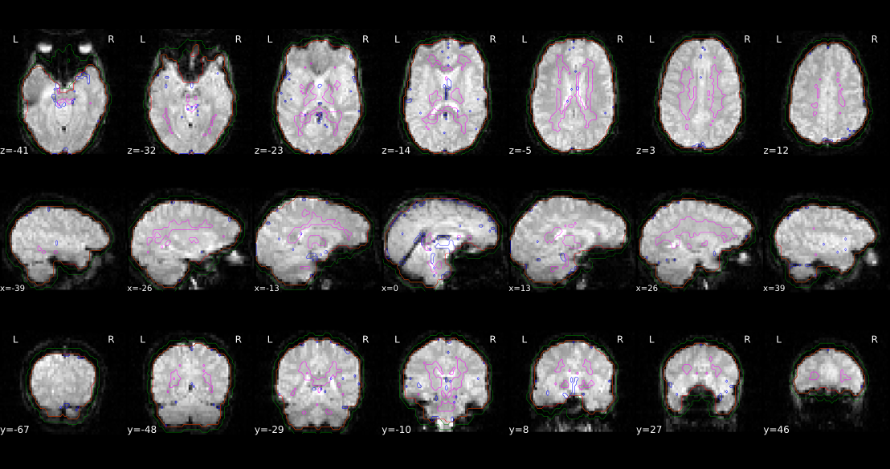
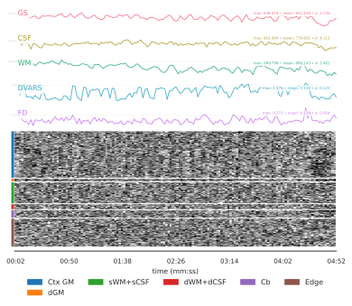

fMRIprep#
#
Author: Steffen Bollmann
Date: 17 Oct 2024
#
License:
Note: If this notebook uses neuroimaging tools from Neurocontainers, those tools retain their original licenses. Please see Neurodesk citation guidelines for details.
Citation and Resources#
Tools included in this workflow#
fMRIPrep:
Esteban, O., Markiewicz, C.J., Blair, R.W. et al. fMRIPrep: a robust preprocessing pipeline for functional MRI. Nat Methods 16, 111–116 (2019). https://doi.org/10.1038/s41592-018-0235-4
Dataset#
Flanker Dataset from OpenNeuro:
Kelly AMC and Uddin LQ and Biswal BB and Castellanos FX and Milham MP (2018). Flanker task (event-related). OpenNeuro Dataset ds000102
Kelly, A.M., Uddin, L.Q., Biswal, B.B., Castellanos, F.X., Milham, M.P. (2008). Competition between functional brain networks mediates behavioral variability. Neuroimage, 39(1):527-37
Run fMRIprep#
# load fmriprep
import module
import os
await module.load('fmriprep/24.1.0')
await module.list()
['fmriprep/24.1.0']
# Request a freesurfer license and store it in your homedirectory. This is just an exampe - please replace with your license id:
!echo "Steffen.Bollmann@cai.uq.edu.au" > ~/.license
!echo "21029" >> ~/.license
!echo "*Cqyn12sqTCxo" >> ~/.license
!echo "FSxgcvGkNR59Y" >> ~/.license
# download data
!datalad install https://github.com/OpenNeuroDatasets/ds000102.git
!cd ds000102 && datalad get sub-08
Cloning: 0%| | 0.00/2.00 [00:00<?, ? candidates/s]
Enumerating: 0.00 Objects [00:00, ? Objects/s]
Counting: 0%| | 0.00/27.0 [00:00<?, ? Objects/s]
Compressing: 0%| | 0.00/23.0 [00:00<?, ? Objects/s]
Receiving: 0%| | 0.00/2.15k [00:00<?, ? Objects/s]
Resolving: 0%| | 0.00/537 [00:00<?, ? Deltas/s]
[INFO ] Remote origin not usable by git-annex; setting annex-ignore
[INFO ] https://github.com/OpenNeuroDatasets/ds000102.git/config download failed: Not Found
[INFO ] access to 1 dataset sibling s3-PRIVATE not auto-enabled, enable with:
| datalad siblings -d "/home/jovyan/workspace/books/examples/functional_imaging/ds000102" enable -s s3-PRIVATE
install(ok): /home/jovyan/workspace/books/examples/functional_imaging/ds000102 (dataset)
Total: 0%| | 0.00/67.8M [00:00<?, ? Bytes/s]
Get sub-08/a .. 8_T1w.nii.gz: 0%| | 0.00/10.6M [00:00<?, ? Bytes/s]
Get sub-08/a .. 8_T1w.nii.gz: 0%| | 33.4k/10.6M [00:00<01:06, 159k Bytes/s]
Get sub-08/a .. 8_T1w.nii.gz: 1%| | 69.2k/10.6M [00:00<01:03, 166k Bytes/s]
Get sub-08/a .. 8_T1w.nii.gz: 1%| | 155k/10.6M [00:00<00:37, 275k Bytes/s]
Get sub-08/a .. 8_T1w.nii.gz: 3%|▏ | 312k/10.6M [00:00<00:22, 460k Bytes/s]
Get sub-08/a .. 8_T1w.nii.gz: 6%|▎ | 643k/10.6M [00:01<00:11, 859k Bytes/s]
Get sub-08/a .. 8_T1w.nii.gz: 12%|▎ | 1.29M/10.6M [00:01<00:05, 1.61M Bytes/s]
Get sub-08/a .. 8_T1w.nii.gz: 25%|▋ | 2.59M/10.6M [00:01<00:02, 3.11M Bytes/s]
Get sub-08/a .. 8_T1w.nii.gz: 37%|█ | 3.89M/10.6M [00:01<00:01, 4.88M Bytes/s]
Get sub-08/a .. 8_T1w.nii.gz: 49%|█▍ | 5.20M/10.6M [00:01<00:00, 6.45M Bytes/s]
Get sub-08/a .. 8_T1w.nii.gz: 61%|█▊ | 6.46M/10.6M [00:01<00:00, 7.81M Bytes/s]
Get sub-08/a .. 8_T1w.nii.gz: 81%|██▍| 8.54M/10.6M [00:01<00:00, 8.64M Bytes/s]
Get sub-08/a .. 8_T1w.nii.gz: 90%|██▋| 9.51M/10.6M [00:02<00:00, 8.66M Bytes/s]
Get sub-08/a .. 8_T1w.nii.gz: 0%| | 0.00/10.6M [00:00<?, ? Bytes/s]
Total: 16%|████ | 10.6M/67.8M [00:03<00:18, 3.10M Bytes/s]
Get sub-08/f .. _bold.nii.gz: 0%| | 0.00/28.6M [00:00<?, ? Bytes/s]
Get sub-08/f .. _bold.nii.gz: 11%|▎ | 3.12M/28.6M [00:00<00:01, 15.1M Bytes/s]
Get sub-08/f .. _bold.nii.gz: 17%|▌ | 4.79M/28.6M [00:00<00:02, 10.8M Bytes/s]
Get sub-08/f .. _bold.nii.gz: 24%|▋ | 6.93M/28.6M [00:00<00:01, 13.8M Bytes/s]
Get sub-08/f .. _bold.nii.gz: 31%|▉ | 8.88M/28.6M [00:00<00:01, 11.6M Bytes/s]
Get sub-08/f .. _bold.nii.gz: 38%|█▏ | 11.0M/28.6M [00:00<00:01, 11.1M Bytes/s]
Get sub-08/f .. _bold.nii.gz: 47%|█▍ | 13.5M/28.6M [00:01<00:01, 11.3M Bytes/s]
Get sub-08/f .. _bold.nii.gz: 55%|█▋ | 15.7M/28.6M [00:01<00:01, 10.9M Bytes/s]
Get sub-08/f .. _bold.nii.gz: 63%|█▉ | 18.2M/28.6M [00:01<00:00, 11.2M Bytes/s]
Get sub-08/f .. _bold.nii.gz: 71%|██▏| 20.3M/28.6M [00:01<00:00, 10.9M Bytes/s]
Get sub-08/f .. _bold.nii.gz: 78%|██▎| 22.5M/28.6M [00:02<00:00, 10.6M Bytes/s]
Get sub-08/f .. _bold.nii.gz: 87%|██▌| 24.8M/28.6M [00:02<00:00, 10.9M Bytes/s]
Get sub-08/f .. _bold.nii.gz: 95%|██▊| 27.3M/28.6M [00:02<00:00, 11.0M Bytes/s]
Get sub-08/f .. _bold.nii.gz: 0%| | 0.00/28.6M [00:00<?, ? Bytes/s]
Total: 58%|███████████████ | 39.2M/67.8M [00:06<00:04, 6.17M Bytes/s]
Get sub-08/f .. _bold.nii.gz: 0%| | 0.00/28.6M [00:00<?, ? Bytes/s]
Get sub-08/f .. _bold.nii.gz: 6%|▏ | 1.58M/28.6M [00:00<00:01, 15.8M Bytes/s]
Get sub-08/f .. _bold.nii.gz: 15%|▍ | 4.27M/28.6M [00:00<00:01, 13.7M Bytes/s]
Get sub-08/f .. _bold.nii.gz: 21%|▋ | 6.05M/28.6M [00:00<00:02, 10.4M Bytes/s]
Get sub-08/f .. _bold.nii.gz: 32%|▉ | 9.12M/28.6M [00:00<00:01, 10.2M Bytes/s]
Get sub-08/f .. _bold.nii.gz: 39%|█▏ | 11.2M/28.6M [00:00<00:01, 12.3M Bytes/s]
Get sub-08/f .. _bold.nii.gz: 48%|█▍ | 13.6M/28.6M [00:01<00:01, 11.0M Bytes/s]
Get sub-08/f .. _bold.nii.gz: 57%|█▋ | 16.4M/28.6M [00:01<00:01, 10.7M Bytes/s]
Get sub-08/f .. _bold.nii.gz: 64%|█▉ | 18.3M/28.6M [00:01<00:01, 10.2M Bytes/s]
Get sub-08/f .. _bold.nii.gz: 73%|██▏| 20.8M/28.6M [00:01<00:00, 10.7M Bytes/s]
Get sub-08/f .. _bold.nii.gz: 81%|██▍| 23.1M/28.6M [00:02<00:00, 10.8M Bytes/s]
Get sub-08/f .. _bold.nii.gz: 88%|██▋| 25.1M/28.6M [00:02<00:00, 12.3M Bytes/s]
Get sub-08/f .. _bold.nii.gz: 96%|██▉| 27.5M/28.6M [00:02<00:00, 10.2M Bytes/s]
Get sub-08/f .. _bold.nii.gz: 0%| | 0.00/28.6M [00:00<?, ? Bytes/s]
get(ok): sub-08/anat/sub-08_T1w.nii.gz (file) [from s3-PUBLIC...]
get(ok): sub-08/func/sub-08_task-flanker_run-1_bold.nii.gz (file) [from s3-PUBLIC...]
get(ok): sub-08/func/sub-08_task-flanker_run-2_bold.nii.gz (file) [from s3-PUBLIC...]
get(ok): sub-08 (directory)
action summary:
get (ok: 4)
%%bash
# set up environment variables
export SUBJECTS_DIR=$PWD/fmriprep-freesurfer-dir
export APPTAINERENV_SUBJECTS_DIR=$SUBJECTS_DIR
export ITK_GLOBAL_DEFAULT_NUMBER_OF_THREADS=2
export MPLCONFIGDIR=~/matplotlib-mpldir
# create subjects directory
mkdir -p $SUBJECTS_DIR
# run fmriprep
fmriprep ds000102/ fmriprep-output participant \
--fs-license-file ~/.license \
--output-spaces T1w MNI152NLin2009cAsym fsaverage fsnative \
--participant-label 08 \
--nprocs $ITK_GLOBAL_DEFAULT_NUMBER_OF_THREADS \
--mem 10000 \
--skip_bids_validation \
--fs-subjects-dir $SUBJECTS_DIR \
-v
260222-23:41:06,134 nipype.workflow IMPORTANT:
Running fMRIPrep version 24.1.0
License N
OTICE ##################################################
fMRIPrep 24.1.0
Copyright
The NiPreps Developers.
This product includes software developed by
the
NiPreps Community (https://nipreps.org/).
Portions of this software were develop
ed at the Department of
Psychology at Stanford University, Stanford, CA, US.
This software is also distributed as a Docker container image.
The bootstrapping file
for the image ("Dockerfile") is licensed
under the MIT License.
This sof
tware may be distributed through an add-on package called
"Docker Wrapper" that is under th
e BSD 3-clause License.
#################################################################
260222-23:41:06,224 nipype.workflow IMPORTANT:
Building fMRIPrep's workflow:
* BIDS dat
aset path: /home/jovyan/workspace/books/examples/functional_imaging/ds000102.
* Participa
nt list: ['08'].
* Run identifier: 20260222-234016_41da3aa7-cad0-4a1f-b8b4-efeb074b6c25.
* Output spaces: T1w MNI152NLin2009cAsym:res-native fsaverage:den-164k fsnative.
* Pre-run FreeSurfer's SUBJECTS_DIR: /home/jovyan/workspace/books/examples/functional_imaging/fmr
iprep-freesurfer-dir.
260222-23:41:15,974 nipype.workflow INFO:
ANAT Stage 1: Adding template workflow
260222-23:41:18,305 nipype.workflow INFO:
ANAT Stage 2: Preparing brain extraction workflow
260222-23:41:30,461 nipype.workflow INFO:
ANAT Stage 3: Preparing segmentation workflow
260222-23:41:30,483 nipype.workflow INFO:
ANAT Stage 4: Preparing normalization workflow for ['MNI
152NLin2009cAsym']
260222-23:41:30,512 nipype.workflow INFO:
ANAT Stage 5: Preparing surface reconstruction workflow
260222-23:41:30,570 nipype.workflow INFO:
ANAT Stage 6: Preparing mask refinement workflow
260222-23:41:30,577 nipype.workflow INFO:
ANAT No T2w images provided - skipping Stage 7
260222-23:41:30,577 nipype.workflow INFO:
ANAT Stage 8: Creating GIFTI surfaces for ['white', 'pia
l', 'midthickness', 'sphere_reg', 'sphere']
260222-23:41:30,619 nipype.workflow INFO:
ANAT Stage 8: Creating GIFTI metrics for ['thickness', '
sulc']
260222-23:41:30,642 nipype.workflow INFO:
ANAT Stage 8a: Creating cortical ribbon mask
260222-23:41:30,654 nipype.workflow INFO:
ANAT Stage 9: Creating fsLR registration sphere
260222-23:41:30,668 nipype.workflow INFO:
ANAT Stage 10: Creating MSM-Sulc registration sphere
260222-23:41:31,206 nipype.workflow INFO:
No single-band-reference found for sub-08_task-flanker_r
un-1_bold.nii.gz.
260222-23:41:31,516 nipype.workflow INFO:
Stage 1: Adding HMC boldref workflow
260222-23:41:31,542 nipype.workflow INFO:
Stage 2: Adding motion correction workflow
260222-23:41:31,585 nipype.workflow INFO:
Stage 3: Adding coregistration boldref workflow
260222-23:41:38,861 nipype.workflow INFO:
No single-band-reference found for sub-08_task-flanker_r
un-2_bold.nii.gz.
260222-23:41:38,988 nipype.workflow INFO:
Stage 1: Adding HMC boldref workflow
260222-23:41:39,2 nipype.workflow INFO:
Stage 2: Adding motion correction workflow
260222-23:41:39,14 nipype.workflow INFO:
Stage 3: Adding coregistration boldref workflow
260222-23:41:46,232 nipype.workflow INFO:
fMRIPrep workflow graph with 580 nodes built successfull
y.
260222-23:42:13,986 nipype.workflow IMPORTANT:
fMRIPrep started!
260222-23:42:17,986 nipype.workflow INFO:
Workflow fmriprep_24_1_wf settings: ['check', 'execution
', 'logging', 'monitoring']
260222-23:42:18,313 nipype.workflow INFO:
Running in parallel.
260222-23:42:18,315 nipype.workflow WARNING:
Some nodes exceed the total amount of memory availabl
e (10.00GB).
260222-23:42:18,323 nipype.workflow INFO:
[MultiProc] Running 0 tasks, and 21 jobs ready. Free mem
ory (GB): 10.00/10.00, Free processors: 2/2.
260222-23:42:18,554 nipype.workflow INFO:
[Node] Setting-up "fmriprep_24_1_wf.fsdir_run_20260222_2
34016_41da3aa7_cad0_4a1f_b8b4_efeb074b6c25" in "/home/jovyan/workspace/books/examples/functional_ima
ging/work/fmriprep_24_1_wf/fsdir_run_20260222_234016_41da3aa7_cad0_4a1f_b8b4_efeb074b6c25".
260222-23:42:18,556 nipype.workflow INFO:
[Node] Executing "fsdir_run_20260222_234016_41da3aa7_cad
0_4a1f_b8b4_efeb074b6c25" <niworkflows.interfaces.bids.BIDSFreeSurferDir>
260222-23:42:26,425 nipype.workflow INFO:
[Node] Finished "fsdir_run_20260222_234016_41da3aa7_cad0
_4a1f_b8b4_efeb074b6c25", elapsed time 7.843054s.
260222-23:42:26,428 nipype.workflow INFO:
[Job 0] Completed (fmriprep_24_1_wf.fsdir_run_20260222_2
34016_41da3aa7_cad0_4a1f_b8b4_efeb074b6c25).
260222-23:42:26,703 nipype.workflow INFO:
[Node] Setting-up "fmriprep_24_1_wf.sub_08_wf.about" in
"/home/jovyan/workspace/books/examples/functional_imaging/work/fmriprep_24_1_wf/sub_08_wf/about".
260222-23:42:26,705 nipype.workflow INFO:
[Node] Executing "about" <fmriprep.interfaces.reports.Ab
outSummary>
260222-23:42:26,707 nipype.workflow INFO:
[Node] Finished "about", elapsed time 0.0002
93s.
260222-23:42:26,708 nipype.workflow INFO:
[Job 2] Completed (fmriprep_24_1_wf.sub_08_wf.about).
260222-23:42:26,950 nipype.workflow INFO:
[MultiProc] Running 2 tasks, and 17 jobs ready. Free mem
ory (GB): 9.60/10.00, Free processors: 0/2.
Currently running:
* fmriprep_24_1_wf.sub_08_wf.anat_fit_wf.brain_extraction_wf.res_tmpl
* fmriprep_24_1_wf.sub_08_wf.bidssrc
260222-23:42:32,882 nipype.workflow INFO:
[Node] Setting-up "fmriprep_24_1_wf.sub_08_wf.bidssrc" i
n "/home/jovyan/workspace/books/examples/functional_imaging/work/fmriprep_24_1_wf/sub_08_wf/bidssrc"
.
260222-23:42:32,885 nipype.workflow INFO:
[Node] Executing "bidssrc" <niworkflows.interfaces.bids.
BIDSDataGrabber>
260222-23:42:32,909 nipype.interface INFO:
No "t2w" images found for sub-08
260222-23:42:32,910 ni
pype.interface INFO:
No "flair" images found for sub-08
260222-23:42:32,910 nipype.interface INFO:
No "fmap" images found for sub-08
260222-23:42:32,910 nipype.interface INFO:
No "sbref" images
found for sub-08
260222-23:42:32,910 nipype.interface INFO:
No "roi" images found for sub-08
26022
2-23:42:32,910 nipype.interface INFO:
No "pet" images found for sub-08
260222-23:42:32,910 nipype.
interface INFO:
No "asl" images found for sub-08
260222-23:42:32,911 nipype.workflow INFO:
[Node
] Finished "bidssrc", elapsed time 0.000854s.
260222-23:42:32,919 nipype.workflow INFO:
[Node] Setting-up "fmriprep_24_1_wf.sub_08_wf.anat_fit_w
f.brain_extraction_wf.res_tmpl" in "/home/jovyan/workspace/books/examples/functional_imaging/work/fm
riprep_24_1_wf/sub_08_wf/anat_fit_wf/brain_extraction_wf/res_tmpl".
260222-23:42:32,920 nipype.workflow INFO:
[Node] Executing "res_tmpl" <niworkflows.interfaces.niba
bel.RegridToZooms>
260222-23:42:32,954 nipype.workflow INFO:
[Job 1] Completed (fmriprep_24_1_wf.sub_08_wf.bidssrc).
260222-23:42:32,956 nipype.workflow INFO:
[MultiProc] Running 1 tasks, and 20 jobs ready. Free mem
ory (GB): 9.80/10.00, Free processors: 1/2.
Currently running:
* fmriprep_24_1_wf.sub_08_wf.anat_fit_wf.brain_extraction_wf.res_tmpl
260222-23:42:33,379 nipype.workflow INFO:
[Node] Setting-up "fmriprep_24_1_wf.sub_08_wf.anat_fit_w
f.brain_extraction_wf.full_wm" in "/home/jovyan/workspace/books/examples/functional_imaging/work/fmr
iprep_24_1_wf/sub_08_wf/anat_fit_wf/brain_extraction_wf/full_wm".
260222-23:42:33,387 nipype.workflow INFO:
[Node] Executing "full_wm" <nipype.interfaces.utility.wr
appers.Function>
260222-23:42:34,518 nipype.workflow INFO:
[Node] Finished "full_wm", elapsed time 1.117932s.
260222-23:42:34,942 nipype.workflow INFO:
[Node] Finished "res_tmpl", elapsed time 2.020815s.
260222-23:42:34,954 nipype.workflow INFO:
[Job 3] Completed (fmriprep_24_1_wf.sub_08_wf.anat_fit_w
f.brain_extraction_wf.res_tmpl).
260222-23:42:34,955 nipype.workflow INFO:
[Job 4] Completed (fmriprep_24_1_wf.sub_08_wf.anat_fit_w
f.brain_extraction_wf.full_wm).
260222-23:42:34,958 nipype.workflow INFO:
[MultiProc] Running 0 tasks, and 19 jobs ready. Free mem
ory (GB): 10.00/10.00, Free processors: 2/2.
260222-23:42:35,294 nipype.workflow INFO:
[Node] Setting-up "fmriprep_24_1_wf.sub_08_wf.bold_task_
flanker_run_1_wf.bold_fit_wf.hmc_boldref_wf.val_bold" in "/home/jovyan/workspace/books/examples/func
tional_imaging/work/fmriprep_24_1_wf/sub_08_wf/bold_task_flanker_run_1_wf/bold_fit_wf/hmc_boldref_wf
/val_bold".
260222-23:42:35,296 nipype.workflow INFO:
[Node] Executing "val_bold" <niworkflows.interfaces.head
er.ValidateImage>
260222-23:42:35,320 nipype.workflow INFO:
[Node] Setting-up "fmriprep_24_1_wf.sub_08_wf.anat_fit_w
f.brain_extraction_wf.lap_tmpl" in "/home/jovyan/workspace/books/examples/functional_imaging/work/fm
riprep_24_1_wf/sub_08_wf/anat_fit_wf/brain_extraction_wf/lap_tmpl".
260222-23:42:35,325 nipype.workflow INFO:
[Node] Executing "lap_tmpl" <nipype.interfaces.ants.util
s.ImageMath>
260222-23:42:35,400 nipype.workflow INFO:
[Node] Finished "val_bold", elapsed time 0.102554s.
260222-23:42:36,955 nipype.workflow INFO:
[Job 6] Completed (fmriprep_24_1_wf.sub_08_wf.bold_task_
flanker_run_1_wf.bold_fit_wf.hmc_boldref_wf.val_bold).
260222-23:42:36,958 nipype.workflow INFO:
[MultiProc] Running 1 tasks, and 18 jobs ready. Free mem
ory (GB): 9.80/10.00, Free processors: 1/2.
Currently running:
* fmriprep_24_1_wf.sub_08_wf.anat_fit_wf.brain_extraction_wf.lap_tmpl
260222-23:42:37,386 nipype.workflow INFO:
[Node] Setting-up "fmriprep_24_1_wf.sub_08_wf.bold_task_
flanker_run_1_wf.bold_fit_wf.hmc_boldref_wf.get_dummy" in "/home/jovyan/workspace/books/examples/fun
ctional_imaging/work/fmriprep_24_1_wf/sub_08_wf/bold_task_flanker_run_1_wf/bold_fit_wf/hmc_boldref_w
f/get_dummy".
260222-23:42:37,387 nipype.workflow INFO:
[Node] Executing "get_dummy" <niworkflows.
interfaces.bold.NonsteadyStatesDetector>
260222-23:42:38,959 nipype.workflow INFO:
[MultiProc] Running 2 tasks, and 17 jobs ready. Free mem
ory (GB): 9.60/10.00, Free processors: 0/2.
Currently running:
* fmriprep_24_1_wf.sub_08_wf.bold_task_flanker_run_1_wf.bold_fit_wf.hmc_boldref_wf.get_dummy
* fmriprep_24_1_wf.sub_08_wf.anat_fit_wf.brain_extraction_wf.lap_tmpl
260222-23:42:38,995 nipype.workflow INFO:
[Node] Finished "get_dummy", elapsed time 1.607207s.
260222-23:42:40,957 nipype.workflow INFO:
[Job 7] Completed (fmriprep_24_1_wf.sub_08_wf.bold_task_
flanker_run_1_wf.bold_fit_wf.hmc_boldref_wf.get_dummy).
260222-23:42:40,964 nipype.workflow INFO:
[MultiProc] Running 1 tasks, and 19 jobs ready. Free mem
ory (GB): 9.80/10.00, Free processors: 1/2.
Currently running:
* fmriprep_24_1_wf.sub_08_wf.anat_fit_wf.brain_extraction_wf.lap_tmpl
260222-23:42:41,461 nipype.workflow INFO:
[Node] Setting-up "fmriprep_24_1_wf.sub_08_wf.bold_task_
flanker_run_1_wf.bold_fit_wf.ds_hmc_boldref_wf.sources" in "/home/jovyan/workspace/books/examples/fu
nctional_imaging/work/fmriprep_24_1_wf/sub_08_wf/bold_task_flanker_run_1_wf/bold_fit_wf/ds_hmc_boldr
ef_wf/sources".
260222-23:42:41,479 nipype.workflow INFO:
[Node] Executing "sources" <fmriprep.interfaces.bids.BID
SURI>
260222-23:42:41,480 nipype.workflow INFO:
[Node] Finished "sources", elapsed time 0.000235s.
260222-23:42:42,959 nipype.workflow INFO:
[Job 8] Completed (fmriprep_24_1_wf.sub_08_wf.bold_task_
flanker_run_1_wf.bold_fit_wf.ds_hmc_boldref_wf.sources).
260222-23:42:42,972 nipype.workflow INFO:
[MultiProc] Running 1 tasks, and 18 jobs ready. Free mem
ory (GB): 9.80/10.00, Free processors: 1/2.
Currently running:
* fmriprep_24_1_wf.sub_08_wf.anat_fit_wf.brain_extraction_wf.lap_tmpl
260222-23:42:43,438 nipype.workflow INFO:
[Node] Setting-up "fmriprep_24_1_wf.sub_08_wf.bold_task_
flanker_run_1_wf.bold_fit_wf.ds_hmc_wf.sources" in "/home/jovyan/workspace/books/examples/functional
_imaging/work/fmriprep_24_1_wf/sub_08_wf/bold_task_flanker_run_1_wf/bold_fit_wf/ds_hmc_wf/sources".
260222-23:42:43,440 nipype.workflow INFO:
[Node] Executing "sources" <fmriprep.interfaces.bids.BID
SURI>
260222-23:42:43,441 nipype.workflow INFO:
[Node] Finished "sources", elapsed time 0.000228s.
260222-23:42:44,958 nipype.workflow INFO:
[Job 9] Completed (fmriprep_24_1_wf.sub_08_wf.bold_task_
flanker_run_1_wf.bold_fit_wf.ds_hmc_wf.sources).
260222-23:42:44,961 nipype.workflow INFO:
[MultiProc] Running 1 tasks, and 17 jobs ready. Free mem
ory (GB): 9.80/10.00, Free processors: 1/2.
Currently running:
* fmriprep_24_1_wf.sub_08_wf.anat_fit_wf.brain_extraction_wf.lap_tmpl
260222-23:42:45,256 nipype.workflow INFO:
[Node] Setting-up "fmriprep_24_1_wf.sub_08_wf.bold_task_
flanker_run_1_wf.bold_fit_wf.ds_boldmask_wf.sources" in "/home/jovyan/workspace/books/examples/funct
ional_imaging/work/fmriprep_24_1_wf/sub_08_wf/bold_task_flanker_run_1_wf/bold_fit_wf/ds_boldmask_wf/
sources".
260222-23:42:45,258 nipype.workflow INFO:
[Node] Executing "sources" <fmriprep.interfaces.bids.BID
SURI>
260222-23:42:45,259 nipype.workflow INFO:
[Node] Finished "sources", elapsed time 0.000283s.
260222-23:42:46,958 nipype.workflow INFO:
[Job 10] Completed (fmriprep_24_1_wf.sub_08_wf.bold_task
_flanker_run_1_wf.bold_fit_wf.ds_boldmask_wf.sources).
260222-23:42:46,962 nipype.workflow INFO:
[MultiProc] Running 1 tasks, and 16 jobs ready. Free mem
ory (GB): 9.80/10.00, Free processors: 1/2.
Currently running:
* fmriprep_24_1_wf.sub_08_wf.anat_fit_wf.brain_extraction_wf.lap_tmpl
260222-23:42:47,4 nipype.workflow INFO:
[Node] Finished "lap_tmpl", elapsed time 11.16274s.
260222-23:42:47,419 nipype.workflow INFO:
[Node] Setting-up "fmriprep_24_1_wf.sub_08_wf.bold_task_
flanker_run_1_wf.bold_native_wf.bold_source" in "/home/jovyan/workspace/books/examples/functional_im
aging/work/fmriprep_24_1_wf/sub_08_wf/bold_task_flanker_run_1_wf/bold_native_wf/bold_source".
260222-23:42:47,421 nipype.workflow INFO:
[Node] Executing "bold_source" <nipype.interfaces.utilit
y.base.Select>
260222-23:42:47,422 nipype.workflow INFO:
[Node] Finished "bold_source", elapsed ti
me 0.000397s.
260222-23:42:48,958 nipype.workflow INFO:
[Job 5] Completed (fmriprep_24_1_wf.sub_08_wf.anat_fit_w
f.brain_extraction_wf.lap_tmpl).
260222-23:42:48,960 nipype.workflow INFO:
[Job 11] Completed (fmriprep_24_1_wf.sub_08_wf.bold_task
_flanker_run_1_wf.bold_native_wf.bold_source).
260222-23:42:48,964 nipype.workflow INFO:
[MultiProc] Running 0 tasks, and 17 jobs ready. Free mem
ory (GB): 10.00/10.00, Free processors: 2/2.
260222-23:42:49,398 nipype.workflow INFO:
[Node] Setting-up "fmriprep_24_1_wf.sub_08_wf.bold_task_
flanker_run_2_wf.bold_fit_wf.hmc_boldref_wf.get_dummy" in "/home/jovyan/workspace/books/examples/fun
ctional_imaging/work/fmriprep_24_1_wf/sub_08_wf/bold_task_flanker_run_2_wf/bold_fit_wf/hmc_boldref_w
f/get_dummy".
260222-23:42:49,402 nipype.workflow INFO:
[Node] Executing "get_dummy" <niworkflows.interfaces.bol
d.NonsteadyStatesDetector>
260222-23:42:50,27 nipype.workflow INFO:
[Node] Setting-up "fmriprep_24_1_wf.sub_08_wf.bold_task_f
lanker_run_2_wf.bold_fit_wf.hmc_boldref_wf.val_bold" in "/home/jovyan/workspace/books/examples/funct
ional_imaging/work/fmriprep_24_1_wf/sub_08_wf/bold_task_flanker_run_2_wf/bold_fit_wf/hmc_boldref_wf/
val_bold".
260222-23:42:50,29 nipype.workflow INFO:
[Node] Executing "val_bold" <niworkflows.inter
faces.header.ValidateImage>
260222-23:42:50,119 nipype.workflow INFO:
[Node] Finished "val_bold", elapsed time 0.08891s.
260222-23:42:50,640 nipype.workflow INFO:
[Node] Finished "get_dummy", elapsed time 1.237312s.
260222-23:42:50,960 nipype.workflow INFO:
[Job 12] Completed (fmriprep_24_1_wf.sub_08_wf.bold_task
_flanker_run_2_wf.bold_fit_wf.hmc_boldref_wf.val_bold).
260222-23:42:50,963 nipype.workflow INFO:
[Job 13] Completed (fmriprep_24_1_wf.sub_08_wf.bold_task
_flanker_run_2_wf.bold_fit_wf.hmc_boldref_wf.get_dummy).
260222-23:42:50,966 nipype.workflow INFO:
[MultiProc] Running 0 tasks, and 18 jobs ready. Free mem
ory (GB): 10.00/10.00, Free processors: 2/2.
260222-23:42:51,413 nipype.workflow INFO:
[Node] Setting-up "fmriprep_24_1_wf.sub_08_wf.bold_task_
flanker_run_2_wf.bold_fit_wf.ds_hmc_wf.sources" in "/home/jovyan/workspace/books/examples/functional
_imaging/work/fmriprep_24_1_wf/sub_08_wf/bold_task_flanker_run_2_wf/bold_fit_wf/ds_hmc_wf/sources".
260222-23:42:51,416 nipype.workflow INFO:
[Node] Executing "sources" <fmriprep.interfaces.bids.BID
SURI>
260222-23:42:51,417 nipype.workflow INFO:
[Node] Finished "sources", elapsed time 0.00029s.
260222-23:42:52,782 nipype.workflow INFO:
[Node] Setting-up "fmriprep_24_1_wf.sub_08_wf.bold_task_
flanker_run_2_wf.bold_fit_wf.ds_hmc_boldref_wf.sources" in "/home/jovyan/workspace/books/examples/fu
nctional_imaging/work/fmriprep_24_1_wf/sub_08_wf/bold_task_flanker_run_2_wf/bold_fit_wf/ds_hmc_boldr
ef_wf/sources".
260222-23:42:52,784 nipype.workflow INFO:
[Node] Executing "sources" <fmriprep.interfaces.bids.BID
SURI>
260222-23:42:52,785 nipype.workflow INFO:
[Node] Finished "sources", elapsed time 0.000212s.
260222-23:42:52,959 nipype.workflow INFO:
[Job 14] Completed (fmriprep_24_1_wf.sub_08_wf.bold_task
_flanker_run_2_wf.bold_fit_wf.ds_hmc_boldref_wf.sources).
260222-23:42:52,961 nipype.workflow INFO:
[Job 15] Completed (fmriprep_24_1_wf.sub_08_wf.bold_task
_flanker_run_2_wf.bold_fit_wf.ds_hmc_wf.sources).
260222-23:42:52,962 nipype.workflow INFO:
[MultiProc] Running 0 tasks, and 16 jobs ready. Free mem
ory (GB): 10.00/10.00, Free processors: 2/2.
260222-23:42:53,341 nipype.workflow INFO:
[Node] Setting-up "fmriprep_24_1_wf.sub_08_wf.bold_task_
flanker_run_2_wf.bold_native_wf.bold_source" in "/home/jovyan/workspace/books/examples/functional_im
aging/work/fmriprep_24_1_wf/sub_08_wf/bold_task_flanker_run_2_wf/bold_native_wf/bold_source".
260222-23:42:53,341 nipype.workflow INFO:
[Node] Setting-up "fmriprep_24_1_wf.sub_08_wf.bold_task_
flanker_run_2_wf.bold_fit_wf.ds_boldmask_wf.sources" in "/home/jovyan/workspace/books/examples/funct
ional_imaging/work/fmriprep_24_1_wf/sub_08_wf/bold_task_flanker_run_2_wf/bold_fit_wf/ds_boldmask_wf/
sources".
260222-23:42:53,342 nipype.workflow INFO:
[Node] Executing "bold_source" <nipype.interfa
ces.utility.base.Select>
260222-23:42:53,343 nipype.workflow INFO:
[Node] Finished "bold_source",
elapsed time 0.000391s.
260222-23:42:53,345 nipype.workflow INFO:
[Node] Executing "sources" <fmri
prep.interfaces.bids.BIDSURI>
260222-23:42:53,346 nipype.workflow INFO:
[Node] Finished "sources",
elapsed time 0.000414s.
260222-23:42:54,959 nipype.workflow INFO:
[Job 16] Completed (fmriprep_24_1_wf.sub_08_wf.bold_task
_flanker_run_2_wf.bold_fit_wf.ds_boldmask_wf.sources).
260222-23:42:54,961 nipype.workflow INFO:
[Job 17] Completed (fmriprep_24_1_wf.sub_08_wf.bold_task
_flanker_run_2_wf.bold_native_wf.bold_source).
260222-23:42:54,963 nipype.workflow INFO:
[MultiProc] Running 0 tasks, and 15 jobs ready. Free mem
ory (GB): 10.00/10.00, Free processors: 2/2.
260222-23:42:55,353 nipype.workflow INFO:
[Node] Setting-up "fmriprep_24_1_wf.sub_08_wf.anat_fit_w
f.register_template_wf.split_desc" in "/home/jovyan/workspace/books/examples/functional_imaging/work
/fmriprep_24_1_wf/sub_08_wf/anat_fit_wf/register_template_wf/_template_MNI152NLin2009cAsym/split_des
c".
260222-23:42:55,356 nipype.workflow INFO:
[Node] Executing "split_desc" <smriprep.interfaces.templ
ateflow.TemplateDesc>
260222-23:42:55,358 nipype.workflow INFO:
[Node] Finished "split_desc", elapsed time 0.000186s.
260222-23:42:55,359 nipype.workflow INFO:
[Job 18] Completed (fmriprep_24_1_wf.sub_08_wf.anat_fit_
wf.register_template_wf.split_desc).
260222-23:42:55,731 nipype.workflow INFO:
[Node] Setting-up "fmriprep_24_1_wf.sub_08_wf.template_i
terator_wf.spacesource" in "/home/jovyan/workspace/books/examples/functional_imaging/work/fmriprep_2
4_1_wf/sub_08_wf/template_iterator_wf/_in_tuple_MNI152NLin2009cAsym.resnative/spacesource".
260222-23:42:55,734 nipype.workflow INFO:
[Node] Executing "spacesource" <niworkflows.interfaces.s
pace.SpaceDataSource>
260222-23:42:55,735 nipype.workflow INFO:
[Node] Finished "spacesource", elapsed time 0.000167s.
260222-23:42:55,736 nipype.workflow INFO:
[Job 19] Completed (fmriprep_24_1_wf.sub_08_wf.template_
iterator_wf.spacesource).
260222-23:42:56,120 nipype.workflow INFO:
[Node] Setting-up "fmriprep_24_1_wf.sub_08_wf.anat_fit_w
f.anat_reports_wf.template_iterator_wf.spacesource" in "/home/jovyan/workspace/books/examples/functi
onal_imaging/work/fmriprep_24_1_wf/sub_08_wf/anat_fit_wf/anat_reports_wf/template_iterator_wf/_in_tu
ple_MNI152NLin2009cAsym.resnative/spacesource".
260222-23:42:56,123 nipype.workflow INFO:
[Node] Executing "spacesource" <niworkflows.interfaces.s
pace.SpaceDataSource>
260222-23:42:56,124 nipype.workflow INFO:
[Node] Finished "spacesource", elapsed time 0.000164s.
260222-23:42:56,125 nipype.workflow INFO:
[Job 20] Completed (fmriprep_24_1_wf.sub_08_wf.anat_fit_
wf.anat_reports_wf.template_iterator_wf.spacesource).
260222-23:42:56,526 nipype.workflow INFO:
[Node] Setting-up "fmriprep_24_1_wf.sub_08_wf.bids_info"
in "/home/jovyan/workspace/books/examples/functional_imaging/work/fmriprep_24_1_wf/sub_08_wf/bids_i
nfo".
260222-23:42:56,529 nipype.workflow INFO:
[Node] Executing "bids_info" <niworkflows.interfaces.bid
s.BIDSInfo>
260222-23:42:56,550 nipype.workflow INFO:
[Node] Setting-up "fmriprep_24_1_wf.sub_08_wf.anat_fit_w
f.anat_template_wf.anat_ref_dimensions" in "/home/jovyan/workspace/books/examples/functional_imaging
/work/fmriprep_24_1_wf/sub_08_wf/anat_fit_wf/anat_template_wf/anat_ref_dimensions".
260222-23:42:56,552 nipype.workflow INFO:
[Node] Executing "anat_ref_dimensions" <niworkflows.inte
rfaces.images.TemplateDimensions>
260222-23:42:56,564 nipype.workflow INFO:
[Node] Finished "bids_info", elapsed time 0.034126s.
260222-23:42:56,894 nipype.workflow INFO:
[Node] Finished "anat_ref_dimensions", elapsed time 0.34
0693s.
260222-23:42:56,959 nipype.workflow INFO:
[Job 21] Completed (fmriprep_24_1_wf.sub_08_wf.bids_info
).
260222-23:42:56,961 nipype.workflow INFO:
[Job 22] Completed (fmriprep_24_1_wf.sub_08_wf.anat_f
it_wf.anat_template_wf.anat_ref_dimensions).
260222-23:42:56,965 nipype.workflow INFO:
[MultiProc]
Running 0 tasks, and 22 jobs ready. Free memory (GB): 10.00/10.00, Free processors: 2/2.
260222-23:42:57,232 nipype.workflow INFO:
[Node] Setting-up "fmriprep_24_1_wf.sub_08_wf.ds_report_
about" in "/home/jovyan/workspace/books/examples/functional_imaging/work/fmriprep_24_1_wf/sub_08_wf/
ds_report_about".
260222-23:42:57,249 nipype.workflow INFO:
[Node] Executing "ds_report_about" <fmriprep.interfaces.
DerivativesDataSink>
260222-23:42:57,284 nipype.workflow INFO:
[Node] Finished "ds_report_about", elapsed time 0.028649
s.
260222-23:42:57,292 nipype.workflow INFO:
[Job 23] Completed (fmriprep_24_1_wf.sub_08_wf.ds_report
_about).
260222-23:42:57,762 nipype.workflow INFO:
[Node] Setting-up "fmriprep_24_1_wf.sub_08_wf.bold_task_
flanker_run_1_wf.bold_fit_wf.func_fit_reports_wf.ds_report_validation" in "/home/jovyan/workspace/bo
oks/examples/functional_imaging/work/fmriprep_24_1_wf/sub_08_wf/bold_task_flanker_run_1_wf/bold_fit_
wf/func_fit_reports_wf/ds_report_validation".
260222-23:42:57,763 nipype.workflow INFO:
[Node] Setting-up "fmriprep_24_1_wf.sub_08_wf.anat_fit_w
f.brain_extraction_wf.mrg_tmpl" in "/home/jovyan/workspace/books/examples/functional_imaging/work/fm
riprep_24_1_wf/sub_08_wf/anat_fit_wf/brain_extraction_wf/mrg_tmpl".
260222-23:42:57,768 nipype.workf
low INFO:
[Node] Executing "mrg_tmpl" <nipype.interfaces.utility.base.Merge>
260222-23:42:57,769 nipype.workflow INFO:
[Node] Finished "mrg_tmpl", elapsed time 0.000328s.
2602
22-23:42:57,770 nipype.workflow INFO:
[Node] Executing "ds_report_validation" <fmriprep.interfaces
.DerivativesDataSink>
260222-23:42:57,785 nipype.workflow INFO:
[Node] Finished "ds_report_validation", elapsed time 0.0
13979s.
260222-23:42:57,788 nipype.workflow INFO:
[Job 25] Completed (fmriprep_24_1_wf.sub_08_wf.bold_task
_flanker_run_1_wf.bold_fit_wf.func_fit_reports_wf.ds_report_validation).
260222-23:42:58,234 nipype.workflow INFO:
[Node] Setting-up "fmriprep_24_1_wf.sub_08_wf.bold_task_
flanker_run_1_wf.bold_fit_wf.hmc_boldref_wf.gen_avg" in "/home/jovyan/workspace/books/examples/funct
ional_imaging/work/fmriprep_24_1_wf/sub_08_wf/bold_task_flanker_run_1_wf/bold_fit_wf/hmc_boldref_wf/
gen_avg".
260222-23:42:58,243 nipype.workflow INFO:
[Node] Executing "gen_avg" <niworkflows.interfaces.image
s.RobustAverage>
260222-23:42:58,960 nipype.workflow INFO:
[Job 24] Completed (fmriprep_24_1_wf.sub_08_wf.anat_fit_
wf.brain_extraction_wf.mrg_tmpl).
260222-23:42:58,964 nipype.workflow INFO:
[MultiProc] Running 1 tasks, and 18 jobs ready. Free mem
ory (GB): 9.00/10.00, Free processors: 1/2.
Currently running:
* fmriprep_24_1_wf.sub_08_wf.bold_task_flanker_run_1_wf.bold_fit_wf.hmc_boldref_wf.gen_avg
260222-23:42:59,412 nipype.workflow INFO:
[Node] Setting-up "fmriprep_24_1_wf.sub_08_wf.bold_task_
flanker_run_1_wf.bold_fit_wf.hmc_boldref_wf.calc_dummy_scans" in "/home/jovyan/workspace/books/examp
les/functional_imaging/work/fmriprep_24_1_wf/sub_08_wf/bold_task_flanker_run_1_wf/bold_fit_wf/hmc_bo
ldref_wf/calc_dummy_scans".
260222-23:42:59,417 nipype.workflow INFO:
[Node] Executing "calc_dummy_scans" <nipype.interfaces.u
tility.wrappers.Function>
260222-23:42:59,419 nipype.workflow INFO:
[Node] Finished "calc_dummy_sc
ans", elapsed time 0.000572s.
260222-23:42:59,421 nipype.workflow INFO:
[Job 27] Completed (fmripr
ep_24_1_wf.sub_08_wf.bold_task_flanker_run_1_wf.bold_fit_wf.hmc_boldref_wf.calc_dummy_scans).
260222-23:42:59,850 nipype.workflow INFO:
[Node] Setting-up "fmriprep_24_1_wf.sub_08_wf.bold_task_
flanker_run_1_wf.bold_native_wf.validate_bold" in "/home/jovyan/workspace/books/examples/functional_
imaging/work/fmriprep_24_1_wf/sub_08_wf/bold_task_flanker_run_1_wf/bold_native_wf/validate_bold".
260222-23:42:59,852 nipype.workflow INFO:
[Node] Executing "validate_bold" <niworkflows.interfaces
.header.ValidateImage>
260222-23:42:59,915 nipype.workflow INFO:
[Node] Finished "validate_bold", elapsed time 0.062163s.
260222-23:43:00,298 nipype.interface INFO:
stderr 2026-02-22T23:43:00.298411:++ 3dvolreg: AFNI ver
sion=AFNI_24.2.06 (Sep 11 2024) [64-bit]
260222-23:43:00,298 nipype.interface INFO:
stderr 2026-02
-22T23:43:00.298411:++ Authored by: RW Cox
260222-23:43:00,298 nipype.interface INFO:
stderr 2026-
02-22T23:43:00.298411:** AFNI converts NIFTI_datatype=4 (INT16) in file /home/jovyan/workspace/books
/examples/functional_imaging/work/fmriprep_24_1_wf/sub_08_wf/bold_task_flanker_run_1_wf/bold_fit_wf/
hmc_boldref_wf/gen_avg/sub-08_task-flanker_run-1_bold_sliced.nii.gz to FLOAT32
260222-23:43:00,298 n
ipype.interface INFO:
stderr 2026-02-22T23:43:00.298411: Warnings of this type will be muted f
or this session.
260222-23:43:00,298 nipype.interface INFO:
stderr 2026-02-22T23:43:00.298411:
Set AFNI_NIFTI_TYPE_WARN to YES to see them all, NO to see none.
260222-23:43:00,299 nipype.interfa
ce INFO:
stderr 2026-02-22T23:43:00.299084:++ Coarse del was 10, replaced with 4
260222-23:43:00,961 nipype.workflow INFO:
[Job 28] Completed (fmriprep_24_1_wf.sub_08_wf.bold_task
_flanker_run_1_wf.bold_native_wf.validate_bold).
260222-23:43:00,966 nipype.workflow INFO:
[MultiProc] Running 1 tasks, and 16 jobs ready. Free mem
ory (GB): 9.00/10.00, Free processors: 1/2.
Currently running:
* fmriprep_24_1_wf.sub_08_wf.bold_task_flanker_run_1_wf.bold_fit_wf.hmc_boldref_wf.gen_avg
260222-23:43:01,386 nipype.workflow INFO:
[Node] Setting-up "fmriprep_24_1_wf.sub_08_wf.bold_task_
flanker_run_2_wf.bold_fit_wf.func_fit_reports_wf.ds_report_validation" in "/home/jovyan/workspace/bo
oks/examples/functional_imaging/work/fmriprep_24_1_wf/sub_08_wf/bold_task_flanker_run_2_wf/bold_fit_
wf/func_fit_reports_wf/ds_report_validation".
260222-23:43:01,395 nipype.workflow INFO:
[Node] Executing "ds_report_validation" <fmriprep.interf
aces.DerivativesDataSink>
260222-23:43:01,415 nipype.workflow INFO:
[Node] Finished "ds_report_validation", elapsed time 0.0
18026s.
260222-23:43:01,467 nipype.workflow INFO:
[Job 29] Completed (fmriprep_24_1_wf.sub_08_wf.bold_task
_flanker_run_2_wf.bold_fit_wf.func_fit_reports_wf.ds_report_validation).
260222-23:43:01,901 nipype.workflow INFO:
[Node] Setting-up "fmriprep_24_1_wf.sub_08_wf.bold_task_
flanker_run_2_wf.bold_fit_wf.hmc_boldref_wf.gen_avg" in "/home/jovyan/workspace/books/examples/funct
ional_imaging/work/fmriprep_24_1_wf/sub_08_wf/bold_task_flanker_run_2_wf/bold_fit_wf/hmc_boldref_wf/
gen_avg".
260222-23:43:01,916 nipype.workflow INFO:
[Node] Executing "gen_avg" <niworkflows.interfaces.image
s.RobustAverage>
260222-23:43:02,962 nipype.workflow INFO:
[MultiProc] Running 2 tasks, and 14 jobs ready. Free mem
ory (GB): 8.00/10.00, Free processors: 0/2.
Currently running:
* fmriprep_24_1_wf.sub_08_wf.bold_task_flanker_run_2_wf.bold_fit_wf.hmc_boldref_wf.gen_avg
* fmriprep_24_1_wf.sub_08_wf.bold_task_flanker_run_1_wf.bold_fit_wf.hmc_boldref
_wf.gen_avg
260222-23:43:03,605 nipype.interface INFO:
stderr 2026-02-22T23:43:03.604916:++ 3dvolreg: AFNI ver
sion=AFNI_24.2.06 (Sep 11 2024) [64-bit]
260222-23:43:03,605 nipype.interface INFO:
stderr 2026-02
-22T23:43:03.604916:++ Authored by: RW Cox
260222-23:43:03,605 nipype.interface INFO:
stderr 2026-
02-22T23:43:03.604916:** AFNI converts NIFTI_datatype=4 (INT16) in file /home/jovyan/workspace/books
/examples/functional_imaging/work/fmriprep_24_1_wf/sub_08_wf/bold_task_flanker_run_2_wf/bold_fit_wf/
hmc_boldref_wf/gen_avg/sub-08_task-flanker_run-2_bold_sliced.nii.gz to FLOAT32
260222-23:43:03,605 n
ipype.interface INFO:
stderr 2026-02-22T23:43:03.604916: Warnings of this type will be muted f
or this session.
260222-23:43:03,605 nipype.interface INFO:
stderr 2026-02-22T23:43:03.604916:
Set AFNI_NIFTI_TYPE_WARN to YES to see them all, NO to see none.
260222-23:43:03,605 nipype.interfa
ce INFO:
stderr 2026-02-22T23:43:03.604916:++ Coarse del was 10, replaced with 4
260222-23:43:17,70 nipype.interface INFO:
stderr 2026-02-22T23:43:17.070171:++ Max displacement in
automask = 0.12 (mm) at sub-brick 18
260222-23:43:17,70 nipype.interface INFO:
stderr 2026-02-22T
23:43:17.070171:++ Max delta displ in automask = 0.10 (mm) at sub-brick 5
260222-23:43:18,805 nipype.workflow INFO:
[Node] Finished "gen_avg", elapsed time 20.561245s.
260222-23:43:18,976 nipype.workflow INFO:
[Job 26] Completed (fmriprep_24_1_wf.sub_08_wf.bold_task
_flanker_run_1_wf.bold_fit_wf.hmc_boldref_wf.gen_avg).
260222-23:43:18,981 nipype.workflow INFO:
[MultiProc] Running 1 tasks, and 17 jobs ready. Free mem
ory (GB): 9.00/10.00, Free processors: 1/2.
Currently running:
* fmriprep_24_1_wf.sub_08_wf.bold_task_flanker_run_2_wf.bold_fit_wf.hmc_boldref_wf.gen_avg
260222-23:43:19,237 nipype.workflow INFO:
[Node] Setting-up "fmriprep_24_1_wf.sub_08_wf.bold_task_
flanker_run_2_wf.bold_fit_wf.hmc_boldref_wf.calc_dummy_scans" in "/home/jovyan/workspace/books/examp
les/functional_imaging/work/fmriprep_24_1_wf/sub_08_wf/bold_task_flanker_run_2_wf/bold_fit_wf/hmc_bo
ldref_wf/calc_dummy_scans".
260222-23:43:19,241 nipype.workflow INFO:
[Node] Executing "calc_dummy_scans" <nipype.interfaces.u
tility.wrappers.Function>
260222-23:43:19,243 nipype.workflow INFO:
[Node] Finished "calc_dummy_scans", elapsed time 0.00055
5s.
260222-23:43:19,245 nipype.workflow INFO:
[Job 31] Completed (fmriprep_24_1_wf.sub_08_wf.bold_
task_flanker_run_2_wf.bold_fit_wf.hmc_boldref_wf.calc_dummy_scans).
260222-23:43:19,482 nipype.workflow INFO:
[Node] Setting-up "fmriprep_24_1_wf.sub_08_wf.bold_task_
flanker_run_2_wf.bold_native_wf.validate_bold" in "/home/jovyan/workspace/books/examples/functional_
imaging/work/fmriprep_24_1_wf/sub_08_wf/bold_task_flanker_run_2_wf/bold_native_wf/validate_bold".
260222-23:43:19,485 nipype.workflow INFO:
[Node] Executing "validate_bold" <niworkflows.interfaces
.header.ValidateImage>
260222-23:43:19,549 nipype.workflow INFO:
[Node] Finished "validate_bold", elapsed time 0.063702s.
260222-23:43:20,977 nipype.workflow INFO:
[Job 32] Completed (fmriprep_24_1_wf.sub_08_wf.bold_task
_flanker_run_2_wf.bold_native_wf.validate_bold).
260222-23:43:20,981 nipype.workflow INFO:
[MultiProc] Running 1 tasks, and 15 jobs ready. Free mem
ory (GB): 9.00/10.00, Free processors: 1/2.
Currently running:
* fmriprep_24_1_wf.sub_08_wf.bold_task_flanker_run_2_wf.bold_fit_wf.hmc_boldref_wf.gen_avg
260222-23:43:21,218 nipype.workflow INFO:
[Node] Setting-up "fmriprep_24_1_wf.sub_08_wf.anat_fit_w
f.register_template_wf.tf_select" in "/home/jovyan/workspace/books/examples/functional_imaging/work/
fmriprep_24_1_wf/sub_08_wf/anat_fit_wf/register_template_wf/_template_MNI152NLin2009cAsym/tf_select"
.
260222-23:43:21,221 nipype.workflow INFO:
[Node] Executing "tf_select" <smriprep.interfaces.templa
teflow.TemplateFlowSelect>
260222-23:43:21,323 nipype.interface INFO:
stderr 2026-02-22T23:43:21.323267:++ Max displacement i
n automask = 1.01 (mm) at sub-brick 17
260222-23:43:21,323 nipype.interface INFO:
stderr 2026-02-2
2T23:43:21.323267:++ Max delta displ in automask = 0.39 (mm) at sub-brick 17
260222-23:43:21,408 nipype.workflow INFO:
[Node] Finished "tf_select", elapsed time 0.185897s.
260222-23:43:21,414 nipype.workflow INFO:
[Job 33] Completed (fmriprep_24_1_wf.sub_08_wf.anat_fit_
wf.register_template_wf.tf_select).
260222-23:43:21,685 nipype.workflow INFO:
[Node] Setting-up "fmriprep_24_1_wf.sub_08_wf.anat_fit_w
f.register_template_wf.fmt_cohort" in "/home/jovyan/workspace/books/examples/functional_imaging/work
/fmriprep_24_1_wf/sub_08_wf/anat_fit_wf/register_template_wf/_template_MNI152NLin2009cAsym/fmt_cohor
t".
260222-23:43:21,689 nipype.workflow INFO:
[Node] Executing "fmt_cohort" <nipype.interfaces.utility
.wrappers.Function>
260222-23:43:21,690 nipype.workflow INFO:
[Node] Finished "fmt_cohort", elapsed time 0.000723s.
260222-23:43:21,751 nipype.workflow INFO:
[Job 34] Completed (fmriprep_24_1_wf.sub_08_wf.anat_fit_
wf.register_template_wf.fmt_cohort).
260222-23:43:22,20 nipype.workflow INFO:
[Node] Setting-up "fmriprep_24_1_wf.sub_08_wf.template_it
erator_wf.gen_tplid" in "/home/jovyan/workspace/books/examples/functional_imaging/work/fmriprep_24_1
_wf/sub_08_wf/template_iterator_wf/_in_tuple_MNI152NLin2009cAsym.resnative/gen_tplid".
260222-23:43:22,23 nipype.workflow INFO:
[Node] Executing "gen_tplid" <nipype.interfaces.utility.w
rappers.Function>
260222-23:43:22,25 nipype.workflow INFO:
[Node] Finished "gen_tplid", elapsed ti
me 0.000494s.
260222-23:43:22,27 nipype.workflow INFO:
[Job 35] Completed (fmriprep_24_1_wf.sub_08
_wf.template_iterator_wf.gen_tplid).
260222-23:43:22,271 nipype.workflow INFO:
[Node] Setting-up "fmriprep_24_1_wf.sub_08_wf.template_i
terator_wf.select_tpl" in "/home/jovyan/workspace/books/examples/functional_imaging/work/fmriprep_24
_1_wf/sub_08_wf/template_iterator_wf/_in_tuple_MNI152NLin2009cAsym.resnative/select_tpl".
260222-23:43:22,274 nipype.workflow INFO:
[Node] Executing "select_tpl" <smriprep.interfaces.templ
ateflow.TemplateFlowSelect>
260222-23:43:22,420 nipype.workflow INFO:
[Node] Finished "select_tpl", elapsed time 0.14557s.
260222-23:43:22,422 nipype.workflow INFO:
[Job 36] Completed (fmriprep_24_1_wf.sub_08_wf.template_
iterator_wf.select_tpl).
260222-23:43:22,641 nipype.workflow INFO:
[Node] Setting-up "fmriprep_24_1_wf.sub_08_wf.anat_fit_w
f.anat_reports_wf.template_iterator_wf.gen_tplid" in "/home/jovyan/workspace/books/examples/function
al_imaging/work/fmriprep_24_1_wf/sub_08_wf/anat_fit_wf/anat_reports_wf/template_iterator_wf/_in_tupl
e_MNI152NLin2009cAsym.resnative/gen_tplid".
260222-23:43:22,643 nipype.workflow INFO:
[Node] Executing "gen_tplid" <nipype.interfaces.utility.
wrappers.Function>
260222-23:43:22,644 nipype.workflow INFO:
[Node] Finished "gen_tplid", elapsed
time 0.00035s.
260222-23:43:22,645 nipype.workflow INFO:
[Job 37] Completed (fmriprep_24_1_wf.sub_
08_wf.anat_fit_wf.anat_reports_wf.template_iterator_wf.gen_tplid).
260222-23:43:22,864 nipype.workflow INFO:
[Node] Setting-up "fmriprep_24_1_wf.sub_08_wf.anat_fit_w
f.anat_reports_wf.template_iterator_wf.select_tpl" in "/home/jovyan/workspace/books/examples/functio
nal_imaging/work/fmriprep_24_1_wf/sub_08_wf/anat_fit_wf/anat_reports_wf/template_iterator_wf/_in_tup
le_MNI152NLin2009cAsym.resnative/select_tpl".
260222-23:43:22,866 nipype.workflow INFO:
[Node] Executing "select_tpl" <smriprep.interfaces.templ
ateflow.TemplateFlowSelect>
260222-23:43:22,962 nipype.workflow INFO:
[Node] Finished "select_tpl", elapsed time 0.094789s.
260222-23:43:22,963 nipype.workflow INFO:
[Job 38] Completed (fmriprep_24_1_wf.sub_08_wf.anat_fit_
wf.anat_reports_wf.template_iterator_wf.select_tpl).
260222-23:43:23,165 nipype.workflow INFO:
[Node] Setting-up "fmriprep_24_1_wf.sub_08_wf.summary" i
n "/home/jovyan/workspace/books/examples/functional_imaging/work/fmriprep_24_1_wf/sub_08_wf/summary"
.
260222-23:43:23,168 nipype.workflow INFO:
[Node] Executing "summary" <fmriprep.interfaces.reports.
SubjectSummary>
260222-23:43:23,171 nipype.workflow INFO:
[Node] Finished "summary", elapsed time 0.00228s.
260222-23:43:23,173 nipype.workflow INFO:
[Job 39] Completed (fmriprep_24_1_wf.sub_08_wf.summary).
260222-23:43:23,380 nipype.workflow INFO:
[MultiProc] Running 2 tasks, and 8 jobs ready. Free memo
ry (GB): 8.80/10.00, Free processors: 0/2.
Currently running:
* fmriprep_24_1_wf.sub_08_wf.anat_fit_wf.fs_isrunning
* fmriprep_24_1_w
f.sub_08_wf.bold_task_flanker_run_2_wf.bold_fit_wf.hmc_boldref_wf.gen_avg
260222-23:43:23,383 nipype.workflow INFO:
[Node] Setting-up "fmriprep_24_1_wf.sub_08_wf.anat_fit_w
f.fs_isrunning" in "/home/jovyan/workspace/books/examples/functional_imaging/work/fmriprep_24_1_wf/s
ub_08_wf/anat_fit_wf/fs_isrunning".
260222-23:43:23,386 nipype.workflow INFO:
[Node] Executing "fs_isrunning" <nipype.interfaces.utili
ty.wrappers.Function>
260222-23:43:23,387 nipype.workflow INFO:
[Node] Finished "fs_isrunning", elapsed time 0.000511s.
260222-23:43:23,401 nipype.workflow INFO:
[Node] Finished "gen_avg", elapsed time 21.484352s.
260222-23:43:25,380 nipype.workflow INFO:
[Job 30] Completed (fmriprep_24_1_wf.sub_08_wf.bold_task
_flanker_run_2_wf.bold_fit_wf.hmc_boldref_wf.gen_avg).
260222-23:43:25,381 nipype.workflow INFO:
[Job 40] Completed (fmriprep_24_1_wf.sub_08_wf.anat_fit_
wf.fs_isrunning).
260222-23:43:25,383 nipype.workflow INFO:
[MultiProc] Running 0 tasks, and 11 jo
bs ready. Free memory (GB): 10.00/10.00, Free processors: 2/2.
260222-23:43:25,596 nipype.workflow INFO:
[Node] Setting-up "fmriprep_24_1_wf.sub_08_wf.anat_fit_w
f.ds_t1w_mask_wf.raw_sources" in "/home/jovyan/workspace/books/examples/functional_imaging/work/fmri
prep_24_1_wf/sub_08_wf/anat_fit_wf/ds_t1w_mask_wf/raw_sources".
260222-23:43:25,599 nipype.workflow INFO:
[Node] Executing "raw_sources" <nipype.interfaces.utilit
y.wrappers.Function>
260222-23:43:25,600 nipype.workflow INFO:
[Node] Finished "raw_sources", elap
sed time 0.000535s.
260222-23:43:25,640 nipype.workflow INFO:
[Node] Setting-up "_denoise0" in "/home/jovyan/workspace
/books/examples/functional_imaging/work/fmriprep_24_1_wf/sub_08_wf/anat_fit_wf/anat_template_wf/deno
ise/mapflow/_denoise0".
260222-23:43:25,645 nipype.workflow INFO:
[Node] Executing "_denoise0" <nipype.interfaces.ants.seg
mentation.DenoiseImage>
260222-23:43:27,380 nipype.workflow INFO:
[Job 42] Completed (fmriprep_24_1_wf.sub_08_wf.anat_fit_
wf.ds_t1w_mask_wf.raw_sources).
260222-23:43:27,382 nipype.workflow INFO:
[MultiProc] Running 1 tasks, and 9 jobs ready. Free memo
ry (GB): 9.80/10.00, Free processors: 1/2.
Currently running:
* fmriprep_24_1_wf.sub_08_wf.anat_fit_wf.anat_template_wf.denoise
260222-23:43:27,615 nipype.workflow INFO:
[Node] Setting-up "fmriprep_24_1_wf.sub_08_wf.anat_fit_w
f.ds_ribbon_mask_wf.raw_sources" in "/home/jovyan/workspace/books/examples/functional_imaging/work/f
mriprep_24_1_wf/sub_08_wf/anat_fit_wf/ds_ribbon_mask_wf/raw_sources".
260222-23:43:27,620 nipype.workflow INFO:
[Node] Executing "raw_sources" <nipype.interfaces.utilit
y.wrappers.Function>
260222-23:43:27,622 nipype.workflow INFO:
[Node] Finished "raw_sources", elap
sed time 0.001053s.
260222-23:43:29,380 nipype.workflow INFO:
[Job 43] Completed (fmriprep_24_1_wf.sub_08_wf.anat_fit_
wf.ds_ribbon_mask_wf.raw_sources).
260222-23:43:29,383 nipype.workflow INFO:
[MultiProc] Running 1 tasks, and 8 jobs ready. Free memo
ry (GB): 9.80/10.00, Free processors: 1/2.
Currently running:
* fmriprep_24_1_wf.sub_08_wf.anat_fit_wf.anat_template_wf.denoise
260222-23:43:29,624 nipype.workflow INFO:
[Node] Setting-up "fmriprep_24_1_wf.sub_08_wf.anat_fit_w
f.anat_reports_wf.t1w_conform_check" in "/home/jovyan/workspace/books/examples/functional_imaging/wo
rk/fmriprep_24_1_wf/sub_08_wf/anat_fit_wf/anat_reports_wf/t1w_conform_check".
260222-23:43:29,628 nipype.workflow INFO:
[Node] Executing "t1w_conform_check" <nipype.interfaces.
utility.wrappers.Function>
260222-23:43:29,630 nipype.workflow INFO:
[Node] Finished "t1w_conform_check", elapsed time 0.0006
58s.
260222-23:43:29,632 nipype.workflow INFO:
[Job 44] Completed (fmriprep_24_1_wf.sub_08_wf.anat_fit_
wf.anat_reports_wf.t1w_conform_check).
260222-23:43:29,843 nipype.workflow INFO:
[Node] Setting-up "fmriprep_24_1_wf.sub_08_wf.bold_task_
flanker_run_1_wf.bold_fit_wf.fmapref_buffer" in "/home/jovyan/workspace/books/examples/functional_im
aging/work/fmriprep_24_1_wf/sub_08_wf/bold_task_flanker_run_1_wf/bold_fit_wf/fmapref_buffer".
260222-23:43:29,847 nipype.workflow INFO:
[Node] Executing "fmapref_buffer" <nipype.interfaces.uti
lity.wrappers.Function>
260222-23:43:29,863 nipype.workflow INFO:
[Node] Finished "fmapref_buffer", elapsed time 0.015075s
.
260222-23:43:31,383 nipype.workflow INFO:
[Job 45] Completed (fmriprep_24_1_wf.sub_08_wf.bold_task
_flanker_run_1_wf.bold_fit_wf.fmapref_buffer).
260222-23:43:31,387 nipype.workflow INFO:
[MultiProc] Running 1 tasks, and 8 jobs ready. Free memo
ry (GB): 9.80/10.00, Free processors: 1/2.
Currently running:
* fmriprep_24_1_wf.sub_08_wf.anat_fit_wf.anat_template_wf.denoise
260222-23:43:31,603 nipype.workflow INFO:
[Node] Setting-up "fmriprep_24_1_wf.sub_08_wf.bold_task_
flanker_run_1_wf.bold_fit_wf.ds_hmc_boldref_wf.ds_boldref" in "/home/jovyan/workspace/books/examples
/functional_imaging/work/fmriprep_24_1_wf/sub_08_wf/bold_task_flanker_run_1_wf/bold_fit_wf/ds_hmc_bo
ldref_wf/ds_boldref".
260222-23:43:31,609 nipype.workflow INFO:
[Node] Executing "ds_boldref" <fmriprep.interfaces.Deriv
ativesDataSink>
260222-23:43:31,626 nipype.interface WARNING:
Changing /home/jovyan/workspace/books/examples/funct
ional_imaging/fmriprep-output/sub-08/func/sub-08_task-flanker_run-1_desc-hmc_boldref.nii.gz dtype fr
om int16 to float32
260222-23:43:31,699 nipype.workflow INFO:
[Node] Finished "ds_boldref", elapsed time 0.08851s.
260222-23:43:31,702 nipype.workflow INFO:
[Job 46] Completed (fmriprep_24_1_wf.sub_08_wf.bold_task
_flanker_run_1_wf.bold_fit_wf.ds_hmc_boldref_wf.ds_boldref).
260222-23:43:32,84 nipype.workflow INFO:
[Node] Setting-up "fmriprep_24_1_wf.sub_08_wf.bold_task_f
lanker_run_1_wf.bold_fit_wf.bold_hmc_wf.mcflirt" in "/home/jovyan/workspace/books/examples/functiona
l_imaging/work/fmriprep_24_1_wf/sub_08_wf/bold_task_flanker_run_1_wf/bold_fit_wf/bold_hmc_wf/mcflirt
".
260222-23:43:32,87 nipype.workflow INFO:
[Node] Executing "mcflirt" <nipype.interfaces.fsl.preproc
ess.MCFLIRT>
260222-23:43:33,389 nipype.workflow INFO:
[MultiProc] Running 2 tasks, and 7 jobs ready. Free memo
ry (GB): 9.27/10.00, Free processors: 0/2.
Currently running:
* fmriprep_24_1_wf.sub_08_wf.bold_task_flanker_run_1_wf.bold_fit_wf.bold_hmc_wf.mcflirt
* fmriprep_24_1_wf.sub_08_wf.anat_fit_wf.anat_template_wf.denoise
260222-23:43:59,413 nipype.workflow INFO:
[Node] Finished "mcflirt", elapsed time 27.324869s.
260222-23:44:01,416 nipype.workflow INFO:
[Job 47] Completed (fmriprep_24_1_wf.sub_08_wf.bold_task
_flanker_run_1_wf.bold_fit_wf.bold_hmc_wf.mcflirt).
260222-23:44:01,419 nipype.workflow INFO:
[MultiProc] Running 1 tasks, and 10 jobs ready. Free mem
ory (GB): 9.80/10.00, Free processors: 1/2.
Currently running:
* fmriprep_24_1_wf.sub_08_wf.anat_fit_wf.anat_template_wf.denoise
260222-23:44:01,690 nipype.workflow INFO:
[Node] Setting-up "fmriprep_24_1_wf.sub_08_wf.bold_task_
flanker_run_2_wf.bold_fit_wf.fmapref_buffer" in "/home/jovyan/workspace/books/examples/functional_im
aging/work/fmriprep_24_1_wf/sub_08_wf/bold_task_flanker_run_2_wf/bold_fit_wf/fmapref_buffer".
260222
-23:44:01,692 nipype.workflow INFO:
[Node] Executing "fmapref_buffer" <nipype.interfaces.utility.w
rappers.Function>
260222-23:44:01,693 nipype.workflow INFO:
[Node] Finished "fmapref_buffer", elap
sed time 0.000373s.
260222-23:44:03,417 nipype.workflow INFO:
[Job 48] Completed (fmriprep_24_1_wf.sub_08_wf.bold_task
_flanker_run_2_wf.bold_fit_wf.fmapref_buffer).
260222-23:44:03,420 nipype.workflow INFO:
[MultiProc] Running 1 tasks, and 10 jobs ready. Free mem
ory (GB): 9.80/10.00, Free processors: 1/2.
Currently running:
* fmriprep_24_1_wf.sub_08_wf.anat_fit_wf.anat_template_wf.denoise
260222-23:44:03,674 nipype.workflow INFO:
[Node] Setting-up "fmriprep_24_1_wf.sub_08_wf.bold_task_
flanker_run_2_wf.bold_fit_wf.ds_hmc_boldref_wf.ds_boldref" in "/home/jovyan/workspace/books/examples
/functional_imaging/work/fmriprep_24_1_wf/sub_08_wf/bold_task_flanker_run_2_wf/bold_fit_wf/ds_hmc_bo
ldref_wf/ds_boldref".
260222-23:44:03,682 nipype.workflow INFO:
[Node] Executing "ds_boldref" <fmriprep.interfaces.Deriv
ativesDataSink>
260222-23:44:03,724 nipype.interface WARNING:
Changing /home/jovyan/workspace/books/examples/funct
ional_imaging/fmriprep-output/sub-08/func/sub-08_task-flanker_run-2_desc-hmc_boldref.nii.gz dtype fr
om int16 to float32
260222-23:44:03,813 nipype.workflow INFO:
[Node] Finished "ds_boldref", elapsed time 0.129668s.
260222-23:44:03,815 nipype.workflow INFO:
[Job 49] Completed (fmriprep_24_1_wf.sub_08_wf.bold_task
_flanker_run_2_wf.bold_fit_wf.ds_hmc_boldref_wf.ds_boldref).
260222-23:44:04,86 nipype.workflow INFO:
[Node] Setting-up "fmriprep_24_1_wf.sub_08_wf.bold_task_f
lanker_run_2_wf.bold_fit_wf.bold_hmc_wf.mcflirt" in "/home/jovyan/workspace/books/examples/functiona
l_imaging/work/fmriprep_24_1_wf/sub_08_wf/bold_task_flanker_run_2_wf/bold_fit_wf/bold_hmc_wf/mcflirt
".
260222-23:44:04,90 nipype.workflow INFO:
[Node] Executing "mcflirt" <nipype.interfaces.fsl.prep
rocess.MCFLIRT>
260222-23:44:05,418 nipype.workflow INFO:
[MultiProc] Running 2 tasks, and 9 jobs ready. Free memo
ry (GB): 9.27/10.00, Free processors: 0/2.
Currently running:
* fmriprep_24_1_wf.sub_08_wf.bold_task_flanker_run_2_wf.bold_fit_wf.bold_hmc_wf.mcflirt
* fmriprep_24_1_wf.sub_08_wf.anat_fit_wf.anat_template_wf.denoise
260222-23:44:32,589 nipype.workflow INFO:
[Node] Finished "mcflirt", elapsed time 28.498603s.
260222-23:44:33,435 nipype.workflow INFO:
[Job 50] Completed (fmriprep_24_1_wf.sub_08_wf.bold_task
_flanker_run_2_wf.bold_fit_wf.bold_hmc_wf.mcflirt).
260222-23:44:33,438 nipype.workflow INFO:
[MultiProc] Running 1 tasks, and 12 jobs ready. Free mem
ory (GB): 9.80/10.00, Free processors: 1/2.
Currently running:
* fmriprep_24_1_wf.sub_08_wf.anat_fit_wf.anat_template_wf.denoise
260222-23:44:33,659 nipype.workflow INFO:
[Node] Setting-up "fmriprep_24_1_wf.sub_08_wf.ds_report_
summary" in "/home/jovyan/workspace/books/examples/functional_imaging/work/fmriprep_24_1_wf/sub_08_w
f/ds_report_summary".
260222-23:44:33,664 nipype.workflow INFO:
[Node] Executing "ds_report_summary" <fmriprep.interface
s.DerivativesDataSink>
260222-23:44:33,678 nipype.workflow INFO:
[Node] Finished "ds_report_summary", elapsed time 0.0134
4s.
260222-23:44:33,680 nipype.workflow INFO:
[Job 51] Completed (fmriprep_24_1_wf.sub_08_wf.ds_re
port_summary).
260222-23:44:33,895 nipype.workflow INFO:
[Node] Setting-up "fmriprep_24_1_wf.sub_08_wf.anat_fit_w
f.anat_reports_wf.ds_t1w_conform_report" in "/home/jovyan/workspace/books/examples/functional_imagin
g/work/fmriprep_24_1_wf/sub_08_wf/anat_fit_wf/anat_reports_wf/ds_t1w_conform_report".
260222-23:44:33,900 nipype.workflow INFO:
[Node] Executing "ds_t1w_conform_report" <smriprep.inter
faces.DerivativesDataSink>
260222-23:44:33,911 nipype.workflow INFO:
[Node] Finished "ds_t1w_conform_report", elapsed time 0.
010929s.
260222-23:44:33,913 nipype.workflow INFO:
[Job 53] Completed (fmriprep_24_1_wf.sub_08_wf.anat_fit_
wf.anat_reports_wf.ds_t1w_conform_report).
260222-23:44:34,143 nipype.workflow INFO:
[Node] Setting-up "fmriprep_24_1_wf.sub_08_wf.bold_task_
flanker_run_1_wf.bold_fit_wf.enhance_and_skullstrip_bold_wf.init_aff" in "/home/jovyan/workspace/boo
ks/examples/functional_imaging/work/fmriprep_24_1_wf/sub_08_wf/bold_task_flanker_run_1_wf/bold_fit_w
f/enhance_and_skullstrip_bold_wf/init_aff".
260222-23:44:34,145 nipype.workflow INFO:
[Node] Execu
ting "init_aff" <nipype.interfaces.ants.utils.AI>
260222-23:44:35,441 nipype.workflow INFO:
[MultiProc] Running 2 tasks, and 9 jobs ready. Free memo
ry (GB): 9.60/10.00, Free processors: 0/2.
Currently running:
* fmriprep_24_1_wf.sub_08_wf.bold_task_flanker_run_1_wf.bold_fit_wf.enhance_and_skullstrip_bol
d_wf.init_aff
* fmriprep_24_1_wf.sub_08_wf.anat_fit_wf.anat_template_wf.denoi
se
260222-23:47:00,127 nipype.workflow INFO:
[Node] Finished "init_aff", elapsed time 145.980756s.
260222-23:47:01,577 nipype.workflow INFO:
[Job 54] Completed (fmriprep_24_1_wf.sub_08_wf.bold_task
_flanker_run_1_wf.bold_fit_wf.enhance_and_skullstrip_bold_wf.init_aff).
260222-23:47:01,580 nipype.workflow INFO:
[MultiProc] Running 1 tasks, and 10 jobs ready. Free mem
ory (GB): 9.80/10.00, Free processors: 1/2.
Currently running:
* fmriprep_24_1_wf.sub_08_wf.anat_fit_wf.anat_template_wf.denoise
260222-23:47:01,893 nipype.workflow INFO:
[Node] Setting-up "fmriprep_24_1_wf.sub_08_wf.bold_task_
flanker_run_1_wf.bold_fit_wf.ds_coreg_boldref_wf.sources" in "/home/jovyan/workspace/books/examples/
functional_imaging/work/fmriprep_24_1_wf/sub_08_wf/bold_task_flanker_run_1_wf/bold_fit_wf/ds_coreg_b
oldref_wf/sources".
260222-23:47:01,955 nipype.workflow INFO:
[Node] Executing "sources" <fmriprep.interfaces.bids.BID
SURI>
260222-23:47:01,955 nipype.workflow INFO:
[Node] Finished "sources", elapsed time 0.000233s.
260222-23:47:03,578 nipype.workflow INFO:
[Job 55] Completed (fmriprep_24_1_wf.sub_08_wf.bold_task
_flanker_run_1_wf.bold_fit_wf.ds_coreg_boldref_wf.sources).
260222-23:47:03,583 nipype.workflow INFO:
[MultiProc] Running 1 tasks, and 9 jobs ready. Free memo
ry (GB): 9.80/10.00, Free processors: 1/2.
Currently running:
* fmriprep_24_1_wf.sub_08_wf.anat_fit_wf.anat_template_wf.denoise
260222-23:47:04,6 nipype.workflow INFO:
[Node] Setting-up "fmriprep_24_1_wf.sub_08_wf.bold_task_fl
anker_run_1_wf.bold_fit_wf.bold_hmc_wf.fsl2itk" in "/home/jovyan/workspace/books/examples/functional
_imaging/work/fmriprep_24_1_wf/sub_08_wf/bold_task_flanker_run_1_wf/bold_fit_wf/bold_hmc_wf/fsl2itk"
.
260222-23:47:04,31 nipype.workflow INFO:
[Node] Executing "fsl2itk" <niworkflows.interfaces.itk.MC
FLIRT2ITK>
260222-23:47:04,33 nipype.interface WARNING:
Multithreading is deprecated. Remove the num_threads
input.
260222-23:47:04,130 nipype.workflow INFO:
[Node] Finished "fsl2itk", elapsed time 0.0965s.
260222-23:47:05,577 nipype.workflow INFO:
[Job 56] Completed (fmriprep_24_1_wf.sub_08_wf.bold_task
_flanker_run_1_wf.bold_fit_wf.bold_hmc_wf.fsl2itk).
260222-23:47:05,580 nipype.workflow INFO:
[MultiProc] Running 1 tasks, and 9 jobs ready. Free memo
ry (GB): 9.80/10.00, Free processors: 1/2.
Currently running:
* fmriprep_24_1_wf.sub_08_wf.anat_fit_wf.anat_template_wf.denoise
260222-23:47:06,191 nipype.workflow INFO:
[Node] Setting-up "fmriprep_24_1_wf.sub_08_wf.bold_task_
flanker_run_1_wf.bold_fit_wf.bold_hmc_wf.normalize_motion" in "/home/jovyan/workspace/books/examples
/functional_imaging/work/fmriprep_24_1_wf/sub_08_wf/bold_task_flanker_run_1_wf/bold_fit_wf/bold_hmc_
wf/normalize_motion".
260222-23:47:06,204 nipype.workflow INFO:
[Node] Executing "normalize_motion" <niworkflows.interfa
ces.confounds.NormalizeMotionParams>
260222-23:47:06,208 nipype.workflow INFO:
[Node] Finished "normalize_motion", elapsed time 0.00313
6s.
260222-23:47:07,577 nipype.workflow INFO:
[Job 57] Completed (fmriprep_24_1_wf.sub_08_wf.bold_task
_flanker_run_1_wf.bold_fit_wf.bold_hmc_wf.normalize_motion).
260222-23:47:07,579 nipype.workflow INF
O:
[MultiProc] Running 1 tasks, and 10 jobs ready. Free memory (GB): 9.80/10.00, Free processors:
1/2.
Currently running:
* fmriprep_24_1_wf.sub_08_wf.ana
t_fit_wf.anat_template_wf.denoise
260222-23:47:07,829 nipype.workflow INFO:
[Node] Setting-up "fmriprep_24_1_wf.sub_08_wf.bold_task_
flanker_run_1_wf.bold_confounds_wf.add_rmsd_header" in "/home/jovyan/workspace/books/examples/functi
onal_imaging/work/fmriprep_24_1_wf/sub_08_wf/bold_task_flanker_run_1_wf/bold_confounds_wf/add_rmsd_h
eader".
260222-23:47:07,840 nipype.workflow INFO:
[Node] Executing "add_rmsd_header" <niworkflows.interfac
es.utility.AddTSVHeader>
260222-23:47:07,842 nipype.workflow INFO:
[Node] Finished "add_rmsd_heade
r", elapsed time 0.001031s.
260222-23:47:07,843 nipype.workflow INFO:
[Job 58] Completed (fmriprep_24_1_wf.sub_08_wf.bold_task
_flanker_run_1_wf.bold_confounds_wf.add_rmsd_header).
260222-23:47:08,39 nipype.workflow INFO:
[Node] Setting-up "fmriprep_24_1_wf.sub_08_wf.bold_task_f
lanker_run_2_wf.bold_fit_wf.enhance_and_skullstrip_bold_wf.init_aff" in "/home/jovyan/workspace/book
s/examples/functional_imaging/work/fmriprep_24_1_wf/sub_08_wf/bold_task_flanker_run_2_wf/bold_fit_wf
/enhance_and_skullstrip_bold_wf/init_aff".
260222-23:47:08,43 nipype.workflow INFO:
[Node] Executi
ng "init_aff" <nipype.interfaces.ants.utils.AI>
260222-23:47:09,582 nipype.workflow INFO:
[MultiProc] Running 2 tasks, and 8 jobs ready. Free memo
ry (GB): 9.60/10.00, Free processors: 0/2.
Currently running:
* fmriprep_24_1_wf.sub_08_wf.bold_task_flanker_run_2_wf.bold_fit_wf.enhance_and_skullstrip_bol
d_wf.init_aff
* fmriprep_24_1_wf.sub_08_wf.anat_fit_wf.anat_template_wf.denoi
se
260222-23:49:46,331 nipype.workflow INFO:
[Node] Finished "init_aff", elapsed time 158.286565s.
260222-23:49:47,752 nipype.workflow INFO:
[Job 59] Completed (fmriprep_24_1_wf.sub_08_wf.bold_task
_flanker_run_2_wf.bold_fit_wf.enhance_and_skullstrip_bold_wf.init_aff).
260222-23:49:47,755 nipype.workflow INFO:
[MultiProc] Running 1 tasks, and 9 jobs ready. Free memo
ry (GB): 9.80/10.00, Free processors: 1/2.
Currently running:
* fmriprep_24_1_wf.sub_08_wf.anat_fit_wf.anat_template_wf.denoise
260222-23:49:48,24 nipype.workflow INFO:
[Node] Setting-up "fmriprep_24_1_wf.sub_08_wf.bold_task_f
lanker_run_2_wf.bold_fit_wf.ds_coreg_boldref_wf.sources" in "/home/jovyan/workspace/books/examples/f
unctional_imaging/work/fmriprep_24_1_wf/sub_08_wf/bold_task_flanker_run_2_wf/bold_fit_wf/ds_coreg_bo
ldref_wf/sources".
260222-23:49:48,36 nipype.workflow INFO:
[Node] Executing "sources" <fmriprep.interfaces.bids.BIDS
URI>
260222-23:49:48,40 nipype.workflow INFO:
[Node] Finished "sources", elapsed time 0.000364s.
260222-23:49:49,752 nipype.workflow INFO:
[Job 60] Completed (fmriprep_24_1_wf.sub_08_wf.bold_task
_flanker_run_2_wf.bold_fit_wf.ds_coreg_boldref_wf.sources).
260222-23:49:49,754 nipype.workflow INFO:
[MultiProc] Running 1 tasks, and 8 jobs ready. Free memo
ry (GB): 9.80/10.00, Free processors: 1/2.
Currently running:
* fmriprep_24_1_wf.sub_08_wf.anat_fit_wf.anat_template_wf.denoise
260222-23:49:50,2 nipype.workflow INFO:
[Node] Setting-up "fmriprep_24_1_wf.sub_08_wf.bold_task_fl
anker_run_2_wf.bold_fit_wf.bold_hmc_wf.fsl2itk" in "/home/jovyan/workspace/books/examples/functional
_imaging/work/fmriprep_24_1_wf/sub_08_wf/bold_task_flanker_run_2_wf/bold_fit_wf/bold_hmc_wf/fsl2itk"
.
260222-23:49:50,48 nipype.workflow INFO:
[Node] Executing "fsl2itk" <niworkflows.interfaces.itk.MC
FLIRT2ITK>
260222-23:49:50,49 nipype.interface WARNING:
Multithreading is deprecated. Remove the num_threads
input.
260222-23:49:50,233 nipype.workflow INFO:
[Node] Finished "fsl2itk", elapsed time 0.183135s.
260222-23:49:51,752 nipype.workflow INFO:
[Job 61] Completed (fmriprep_24_1_wf.sub_08_wf.bold_task
_flanker_run_2_wf.bold_fit_wf.bold_hmc_wf.fsl2itk).
260222-23:49:51,754 nipype.workflow INFO:
[MultiProc] Running 1 tasks, and 8 jobs ready. Free memo
ry (GB): 9.80/10.00, Free processors: 1/2.
Currently running:
* fmriprep_24_1_wf.sub_08_wf.anat_fit_wf.anat_template_wf.denoise
260222-23:49:51,999 nipype.workflow INFO:
[Node] Setting-up "fmriprep_24_1_wf.sub_08_wf.bold_task_
flanker_run_2_wf.bold_fit_wf.bold_hmc_wf.normalize_motion" in "/home/jovyan/workspace/books/examples
/functional_imaging/work/fmriprep_24_1_wf/sub_08_wf/bold_task_flanker_run_2_wf/bold_fit_wf/bold_hmc_
wf/normalize_motion".
260222-23:49:52,15 nipype.workflow INFO:
[Node] Executing "normalize_motion" <niworkflows.interfac
es.confounds.NormalizeMotionParams>
260222-23:49:52,35 nipype.workflow INFO:
[Node] Finished "normalize_motion", elapsed time 0.012862
s.
260222-23:49:53,752 nipype.workflow INFO:
[Job 62] Completed (fmriprep_24_1_wf.sub_08_wf.bold_task
_flanker_run_2_wf.bold_fit_wf.bold_hmc_wf.normalize_motion).
260222-23:49:53,754 nipype.workflow INFO:
[MultiProc] Running 1 tasks, and 9 jobs ready. Free memo
ry (GB): 9.80/10.00, Free processors: 1/2.
Currently running:
* fmriprep_24_1_wf.sub_08_wf.anat_fit_wf.anat_template_wf.denoise
260222-23:49:54,26 nipype.workflow INFO:
[Node] Setting-up "fmriprep_24_1_wf.sub_08_wf.bold_task_f
lanker_run_2_wf.bold_confounds_wf.add_rmsd_header" in "/home/jovyan/workspace/books/examples/functio
nal_imaging/work/fmriprep_24_1_wf/sub_08_wf/bold_task_flanker_run_2_wf/bold_confounds_wf/add_rmsd_he
ader".
260222-23:49:54,37 nipype.workflow INFO:
[Node] Executing "add_rmsd_header" <niworkflows.interface
s.utility.AddTSVHeader>
260222-23:49:54,39 nipype.workflow INFO:
[Node] Finished "add_rmsd_header", elapsed time 0.001303s
.
260222-23:49:54,40 nipype.workflow INFO:
[Job 63] Completed (fmriprep_24_1_wf.sub_08_wf.bold_tas
k_flanker_run_2_wf.bold_confounds_wf.add_rmsd_header).
260222-23:49:54,307 nipype.workflow INFO:
[Node] Setting-up "fmriprep_24_1_wf.sub_08_wf.bold_task_
flanker_run_1_wf.bold_fit_wf.enhance_and_skullstrip_bold_wf.norm" in "/home/jovyan/workspace/books/e
xamples/functional_imaging/work/fmriprep_24_1_wf/sub_08_wf/bold_task_flanker_run_1_wf/bold_fit_wf/en
hance_and_skullstrip_bold_wf/norm".
260222-23:49:54,312 nipype.workflow INFO:
[Node] Executing "norm" <niworkflows.interfaces.fixes.Fi
xHeaderRegistration>
260222-23:49:55,757 nipype.workflow INFO:
[MultiProc] Running 2 tasks, and 7 jobs ready. Free memo
ry (GB): 9.60/10.00, Free processors: 0/2.
Currently running:
* fmriprep_24_1_wf.sub_08_wf.bold_task_flanker_run_1_wf.bold_fit_wf.enhance_and_skullstrip_bol
d_wf.norm
* fmriprep_24_1_wf.sub_08_wf.anat_fit_wf.anat_template_wf.denoise
260222-23:49:57,688 nipype.workflow INFO:
[Node] Finished "norm", elapsed time 3.374865s.
260222-23:49:57,756 nipype.workflow INFO:
[Job 65] Completed (fmriprep_24_1_wf.sub_08_wf.bold_task
_flanker_run_1_wf.bold_fit_wf.enhance_and_skullstrip_bold_wf.norm).
260222-23:49:57,760 nipype.workflow INFO:
[MultiProc] Running 1 tasks, and 8 jobs ready. Free memo
ry (GB): 9.80/10.00, Free processors: 1/2.
Currently running:
* fmriprep_24_1_wf.sub_08_wf.anat_fit_wf.anat_template_wf.denoise
260222-23:49:57,984 nipype.workflow INFO:
[Node] Setting-up "fmriprep_24_1_wf.sub_08_wf.bold_task_
flanker_run_1_wf.bold_fit_wf.ds_hmc_wf.ds_xforms" in "/home/jovyan/workspace/books/examples/function
al_imaging/work/fmriprep_24_1_wf/sub_08_wf/bold_task_flanker_run_1_wf/bold_fit_wf/ds_hmc_wf/ds_xform
s".
260222-23:49:57,989 nipype.workflow INFO:
[Node] Executing "ds_xforms" <fmriprep.interfaces.Deriva
tivesDataSink>
260222-23:49:58,4 nipype.workflow INFO:
[Node] Finished "ds_xforms", elapsed time 0.014751s.
260222-23:49:58,10 nipype.workflow INFO:
[Job 66] Completed (fmriprep_24_1_wf.sub_08_wf.bold_task_
flanker_run_1_wf.bold_fit_wf.ds_hmc_wf.ds_xforms).
260222-23:49:58,289 nipype.workflow INFO:
[Node] Setting-up "fmriprep_24_1_wf.sub_08_wf.bold_task_
flanker_run_1_wf.bold_confounds_wf.fdisp" in "/home/jovyan/workspace/books/examples/functional_imagi
ng/work/fmriprep_24_1_wf/sub_08_wf/bold_task_flanker_run_1_wf/bold_confounds_wf/fdisp".
260222-23:49:58,292 nipype.workflow INFO:
[Node] Executing "fdisp" <nipype.algorithms.confounds.Fr
amewiseDisplacement>
260222-23:49:58,294 nipype.workflow INFO:
[Node] Finished "fdisp", elapsed time 0.001575s.
260222-23:49:59,756 nipype.workflow INFO:
[Job 67] Completed (fmriprep_24_1_wf.sub_08_wf.bold_task
_flanker_run_1_wf.bold_confounds_wf.fdisp).
260222-23:49:59,760 nipype.workflow INFO:
[MultiProc] Running 1 tasks, and 6 jobs ready. Free memo
ry (GB): 9.80/10.00, Free processors: 1/2.
Currently running:
* fmriprep_24_1_wf.sub_08_wf.anat_fit_wf.anat_template_wf.denoise
260222-23:50:00,30 nipype.workflow INFO:
[Node] Setting-up "fmriprep_24_1_wf.sub_08_wf.bold_task_f
lanker_run_1_wf.bold_confounds_wf.add_motion_headers" in "/home/jovyan/workspace/books/examples/func
tional_imaging/work/fmriprep_24_1_wf/sub_08_wf/bold_task_flanker_run_1_wf/bold_confounds_wf/add_moti
on_headers".
260222-23:50:00,35 nipype.workflow INFO:
[Node] Executing "add_motion_headers" <niworkflows.interf
aces.utility.AddTSVHeader>
260222-23:50:00,39 nipype.workflow INFO:
[Node] Finished "add_motion_headers", elapsed time 0.0017
93s.
260222-23:50:00,42 nipype.workflow INFO:
[Job 68] Completed (fmriprep_24_1_wf.sub_08_wf.bold_task_
flanker_run_1_wf.bold_confounds_wf.add_motion_headers).
260222-23:50:00,277 nipype.workflow INFO:
[Node] Setting-up "fmriprep_24_1_wf.sub_08_wf.bold_task_
flanker_run_2_wf.bold_fit_wf.enhance_and_skullstrip_bold_wf.norm" in "/home/jovyan/workspace/books/e
xamples/functional_imaging/work/fmriprep_24_1_wf/sub_08_wf/bold_task_flanker_run_2_wf/bold_fit_wf/en
hance_and_skullstrip_bold_wf/norm".
260222-23:50:00,284 nipype.workflow INFO:
[Node] Executing "norm" <niworkflows.interfaces.fixes.Fi
xHeaderRegistration>
260222-23:50:01,761 nipype.workflow INFO:
[MultiProc] Running 2 tasks, and 4 jobs ready. Free memo
ry (GB): 9.60/10.00, Free processors: 0/2.
Currently running:
* fmriprep_24_1_wf.sub_08_wf.bold_task_flanker_run_2_wf.bold_fit_wf.enhance_and_skullstrip_bol
d_wf.norm
* fmriprep_24_1_wf.sub_08_wf.anat_fit_wf.anat_template_wf.denoise
260222-23:50:05,104 nipype.workflow INFO:
[Node] Finished "norm", elapsed time 4.818302s.
260222-23:50:05,761 nipype.workflow INFO:
[Job 69] Completed (fmriprep_24_1_wf.sub_08_wf.bold_task
_flanker_run_2_wf.bold_fit_wf.enhance_and_skullstrip_bold_wf.norm).
260222-23:50:05,766 nipype.workflow INFO:
[MultiProc] Running 1 tasks, and 5 jobs ready. Free memo
ry (GB): 9.80/10.00, Free processors: 1/2.
Currently running:
* fmriprep_24_1_wf.sub_08_wf.anat_fit_wf.anat_template_wf.denoise
260222-23:50:06,26 nipype.workflow INFO:
[Node] Setting-up "fmriprep_24_1_wf.sub_08_wf.bold_task_f
lanker_run_2_wf.bold_fit_wf.ds_hmc_wf.ds_xforms" in "/home/jovyan/workspace/books/examples/functiona
l_imaging/work/fmriprep_24_1_wf/sub_08_wf/bold_task_flanker_run_2_wf/bold_fit_wf/ds_hmc_wf/ds_xforms
".
260222-23:50:06,38 nipype.workflow INFO:
[Node] Executing "ds_xforms" <fmriprep.interfaces.Derivat
ivesDataSink>
260222-23:50:06,49 nipype.workflow INFO:
[Node] Finished "ds_xforms", elapsed time 0.007976s.
260222-23:50:06,52 nipype.workflow INFO:
[Job 70] Completed (fmriprep_24_1_wf.sub_08_wf.bold_task_
flanker_run_2_wf.bold_fit_wf.ds_hmc_wf.ds_xforms).
260222-23:50:06,279 nipype.workflow INFO:
[Node] Setting-up "fmriprep_24_1_wf.sub_08_wf.bold_task_
flanker_run_2_wf.bold_confounds_wf.fdisp" in "/home/jovyan/workspace/books/examples/functional_imagi
ng/work/fmriprep_24_1_wf/sub_08_wf/bold_task_flanker_run_2_wf/bold_confounds_wf/fdisp".
260222-23:50:06,288 nipype.workflow INFO:
[Node] Executing "fdisp" <nipype.algorithms.confounds.Fr
amewiseDisplacement>
260222-23:50:06,292 nipype.workflow INFO:
[Node] Finished "fdisp", elapsed time 0.002824s.
260222-23:50:07,763 nipype.workflow INFO:
[Job 71] Completed (fmriprep_24_1_wf.sub_08_wf.bold_task
_flanker_run_2_wf.bold_confounds_wf.fdisp).
260222-23:50:07,768 nipype.workflow INFO:
[MultiProc] Running 1 tasks, and 3 jobs ready. Free memo
ry (GB): 9.80/10.00, Free processors: 1/2.
Currently running:
* fmriprep_24_1_wf.sub_08_wf.anat_fit_wf.anat_template_wf.denoise
260222-23:50:08,50 nipype.workflow INFO:
[Node] Setting-up "fmriprep_24_1_wf.sub_08_wf.bold_task_f
lanker_run_2_wf.bold_confounds_wf.add_motion_headers" in "/home/jovyan/workspace/books/examples/func
tional_imaging/work/fmriprep_24_1_wf/sub_08_wf/bold_task_flanker_run_2_wf/bold_confounds_wf/add_moti
on_headers".
260222-23:50:08,55 nipype.workflow INFO:
[Node] Executing "add_motion_headers" <niworkflows.interf
aces.utility.AddTSVHeader>
260222-23:50:08,80 nipype.workflow INFO:
[Node] Finished "add_motion_headers", elapsed time 0.0251
84s.
260222-23:50:08,82 nipype.workflow INFO:
[Job 72] Completed (fmriprep_24_1_wf.sub_08_wf.bold_
task_flanker_run_2_wf.bold_confounds_wf.add_motion_headers).
260222-23:50:08,319 nipype.workflow INFO:
[Node] Setting-up "fmriprep_24_1_wf.sub_08_wf.bold_task_
flanker_run_1_wf.bold_fit_wf.enhance_and_skullstrip_bold_wf.map_brainmask" in "/home/jovyan/workspac
e/books/examples/functional_imaging/work/fmriprep_24_1_wf/sub_08_wf/bold_task_flanker_run_1_wf/bold_
fit_wf/enhance_and_skullstrip_bold_wf/map_brainmask".
260222-23:50:08,322 nipype.workflow INFO:
[Node] Executing "map_brainmask" <niworkflows.interfaces
.fixes.FixHeaderApplyTransforms>
260222-23:50:09,477 nipype.workflow INFO:
[Node] Finished "map_brainmask", elapsed time 1.154786s.
260222-23:50:09,765 nipype.workflow INFO:
[Job 74] Completed (fmriprep_24_1_wf.sub_08_wf.bold_task
_flanker_run_1_wf.bold_fit_wf.enhance_and_skullstrip_bold_wf.map_brainmask).
260222-23:50:09,773 nipype.workflow INFO:
[MultiProc] Running 1 tasks, and 2 jobs ready. Free memo
ry (GB): 9.80/10.00, Free processors: 1/2.
Currently running:
* fmriprep_24_1_wf.sub_08_wf.anat_fit_wf.anat_template_wf.denoise
260222-23:50:10,31 nipype.workflow INFO:
[Node] Setting-up "fmriprep_24_1_wf.sub_08_wf.bold_task_f
lanker_run_2_wf.bold_fit_wf.enhance_and_skullstrip_bold_wf.map_brainmask" in "/home/jovyan/workspace
/books/examples/functional_imaging/work/fmriprep_24_1_wf/sub_08_wf/bold_task_flanker_run_2_wf/bold_f
it_wf/enhance_and_skullstrip_bold_wf/map_brainmask".
260222-23:50:10,37 nipype.workflow INFO:
[Node] Executing "map_brainmask" <niworkflows.interfaces.
fixes.FixHeaderApplyTransforms>
260222-23:50:10,732 nipype.workflow INFO:
[Node] Finished "map_brainmask", elapsed time 0.694071s.
260222-23:50:11,764 nipype.workflow INFO:
[Job 75] Completed (fmriprep_24_1_wf.sub_08_wf.bold_task
_flanker_run_2_wf.bold_fit_wf.enhance_and_skullstrip_bold_wf.map_brainmask).
260222-23:50:11,767 nipype.workflow INFO:
[MultiProc] Running 1 tasks, and 2 jobs ready. Free memo
ry (GB): 9.80/10.00, Free processors: 1/2.
Currently running:
* fmriprep_24_1_wf.sub_08_wf.anat_fit_wf.anat_template_wf.denoise
260222-23:50:11,977 nipype.workflow INFO:
[Node] Setting-up "fmriprep_24_1_wf.sub_08_wf.bold_task_
flanker_run_1_wf.bold_fit_wf.enhance_and_skullstrip_bold_wf.fix_header" in "/home/jovyan/workspace/b
ooks/examples/functional_imaging/work/fmriprep_24_1_wf/sub_08_wf/bold_task_flanker_run_1_wf/bold_fit
_wf/enhance_and_skullstrip_bold_wf/fix_header".
260222-23:50:11,979 nipype.workflow INFO:
[Node] Executing "fix_header" <niworkflows.interfaces.he
ader.CopyHeader>
260222-23:50:12,7 nipype.workflow INFO:
[Node] Finished "fix_header", elapsed time 0.027292s.
2602
22-23:50:12,9 nipype.workflow INFO:
[Job 79] Completed (fmriprep_24_1_wf.sub_08_wf.bold_task_flank
er_run_1_wf.bold_fit_wf.enhance_and_skullstrip_bold_wf.fix_header).
260222-23:50:12,234 nipype.workflow INFO:
[Node] Setting-up "fmriprep_24_1_wf.sub_08_wf.bold_task_
flanker_run_2_wf.bold_fit_wf.enhance_and_skullstrip_bold_wf.fix_header" in "/home/jovyan/workspace/b
ooks/examples/functional_imaging/work/fmriprep_24_1_wf/sub_08_wf/bold_task_flanker_run_2_wf/bold_fit
_wf/enhance_and_skullstrip_bold_wf/fix_header".
260222-23:50:12,236 nipype.workflow INFO:
[Node] Executing "fix_header" <niworkflows.interfaces.he
ader.CopyHeader>
260222-23:50:12,264 nipype.workflow INFO:
[Node] Finished "fix_header", elapsed time 0.027054s.
260222-23:50:12,266 nipype.workflow INFO:
[Job 80] Completed (fmriprep_24_1_wf.sub_08_wf.bold_task
_flanker_run_2_wf.bold_fit_wf.enhance_and_skullstrip_bold_wf.fix_header).
260222-23:50:13,768 nipype.workflow INFO:
[MultiProc] Running 1 tasks, and 2 jobs ready. Free memo
ry (GB): 9.80/10.00, Free processors: 1/2.
Currently running:
* fmriprep_24_1_wf.sub_08_wf.anat_fit_wf.anat_template_wf.denoise
260222-23:50:14,59 nipype.workflow INFO:
[Node] Setting-up "fmriprep_24_1_wf.sub_08_wf.bold_task_f
lanker_run_1_wf.bold_fit_wf.enhance_and_skullstrip_bold_wf.n4_correct" in "/home/jovyan/workspace/bo
oks/examples/functional_imaging/work/fmriprep_24_1_wf/sub_08_wf/bold_task_flanker_run_1_wf/bold_fit_
wf/enhance_and_skullstrip_bold_wf/n4_correct".
260222-23:50:14,64 nipype.workflow INFO:
[Node] Executing "n4_correct" <niworkflows.interfaces.fix
es.FixN4BiasFieldCorrection>
260222-23:50:15,555 nipype.workflow INFO:
[Node] Finished "n4_correct", elapsed time 1.490241s.
260222-23:50:15,765 nipype.workflow INFO:
[Job 83] Completed (fmriprep_24_1_wf.sub_08_wf.bold_task
_flanker_run_1_wf.bold_fit_wf.enhance_and_skullstrip_bold_wf.n4_correct).
260222-23:50:15,767 nipype.workflow INFO:
[MultiProc] Running 1 tasks, and 3 jobs ready. Free memo
ry (GB): 9.80/10.00, Free processors: 1/2.
Currently running:
* fmriprep_24_1_wf.sub_08_wf.anat_fit_wf.anat_template_wf.denoise
260222-23:50:16,11 nipype.workflow INFO:
[Node] Setting-up "fmriprep_24_1_wf.sub_08_wf.bold_task_f
lanker_run_2_wf.bold_fit_wf.enhance_and_skullstrip_bold_wf.n4_correct" in "/home/jovyan/workspace/bo
oks/examples/functional_imaging/work/fmriprep_24_1_wf/sub_08_wf/bold_task_flanker_run_2_wf/bold_fit_
wf/enhance_and_skullstrip_bold_wf/n4_correct".
260222-23:50:16,13 nipype.workflow INFO:
[Node] Executing "n4_correct" <niworkflows.interfaces.fix
es.FixN4BiasFieldCorrection>
260222-23:50:17,227 nipype.workflow INFO:
[Node] Finished "n4_correct", elapsed time 1.212768s.
260222-23:50:17,765 nipype.workflow INFO:
[Job 84] Completed (fmriprep_24_1_wf.sub_08_wf.bold_task
_flanker_run_2_wf.bold_fit_wf.enhance_and_skullstrip_bold_wf.n4_correct).
260222-23:50:17,768 nipype.workflow INFO:
[MultiProc] Running 1 tasks, and 4 jobs ready. Free memo
ry (GB): 9.80/10.00, Free processors: 1/2.
Currently running:
* fmriprep_24_1_wf.sub_08_wf.anat_fit_wf.anat_template_wf.denoise
260222-23:50:18,70 nipype.workflow INFO:
[Node] Setting-up "fmriprep_24_1_wf.sub_08_wf.bold_task_f
lanker_run_1_wf.bold_fit_wf.enhance_and_skullstrip_bold_wf.skullstrip_first_pass" in "/home/jovyan/w
orkspace/books/examples/functional_imaging/work/fmriprep_24_1_wf/sub_08_wf/bold_task_flanker_run_1_w
f/bold_fit_wf/enhance_and_skullstrip_bold_wf/skullstrip_first_pass".
260222-23:50:18,76 nipype.workflow INFO:
[Node] Executing "skullstrip_first_pass" <nipype.interfac
es.fsl.preprocess.BET>
260222-23:50:19,773 nipype.workflow INFO:
[MultiProc] Running 2 tasks, and 3 jobs ready. Free memo
ry (GB): 9.60/10.00, Free processors: 0/2.
Currently running:
* fmriprep_24_1_wf.sub_08_wf.bold_task_flanker_run_1_wf.bold_fit_wf.enhance_and_skullstrip_bol
d_wf.skullstrip_first_pass
* fmriprep_24_1_wf.sub_08_wf.anat_fit_wf.anat_temp
late_wf.denoise
260222-23:50:20,325 nipype.workflow INFO:
[Node] Finished "skullstrip_first_pass", elapsed time 2.
245182s.
260222-23:50:21,772 nipype.workflow INFO:
[Job 88] Completed (fmriprep_24_1_wf.sub_08_wf.bold_task
_flanker_run_1_wf.bold_fit_wf.enhance_and_skullstrip_bold_wf.skullstrip_first_pass).
260222-23:50:21,774 nipype.workflow INFO:
[MultiProc] Running 1 tasks, and 4 jobs ready. Free memo
ry (GB): 9.80/10.00, Free processors: 1/2.
Currently running:
* fmriprep_24_1_wf.sub_08_wf.anat_fit_wf.anat_template_wf.denoise
260222-23:50:22,0 nipype.workflow INFO:
[Node] Setting-up "fmriprep_24_1_wf.sub_08_wf.bold_task_fl
anker_run_1_wf.bold_fit_wf.ds_coreg_boldref_wf.ds_boldref" in "/home/jovyan/workspace/books/examples
/functional_imaging/work/fmriprep_24_1_wf/sub_08_wf/bold_task_flanker_run_1_wf/bold_fit_wf/ds_coreg_
boldref_wf/ds_boldref".
260222-23:50:22,9 nipype.workflow INFO:
[Node] Executing "ds_boldref" <fmriprep.interfaces.Derivat
ivesDataSink>
260222-23:50:22,25 nipype.interface WARNING:
Changing /home/jovyan/workspace/books/examples/functi
onal_imaging/fmriprep-output/sub-08/func/sub-08_task-flanker_run-1_desc-coreg_boldref.nii.gz dtype f
rom int16 to float32
260222-23:50:22,81 nipype.workflow INFO:
[Node] Finished "ds_boldref", elapsed time 0.069463s.
260222-23:50:22,84 nipype.workflow INFO:
[Job 89] Completed (fmriprep_24_1_wf.sub_08_wf.bold_task_
flanker_run_1_wf.bold_fit_wf.ds_coreg_boldref_wf.ds_boldref).
260222-23:50:22,302 nipype.workflow INFO:
[Node] Setting-up "fmriprep_24_1_wf.sub_08_wf.bold_task_
flanker_run_2_wf.bold_fit_wf.enhance_and_skullstrip_bold_wf.skullstrip_first_pass" in "/home/jovyan/
workspace/books/examples/functional_imaging/work/fmriprep_24_1_wf/sub_08_wf/bold_task_flanker_run_2_
wf/bold_fit_wf/enhance_and_skullstrip_bold_wf/skullstrip_first_pass".
260222-23:50:22,305 nipype.workflow INFO:
[Node] Executing "skullstrip_first_pass" <nipype.interfa
ces.fsl.preprocess.BET>
260222-23:50:23,776 nipype.workflow INFO:
[MultiProc] Running 2 tasks, and 5 jobs ready. Free memo
ry (GB): 9.60/10.00, Free processors: 0/2.
Currently running:
* fmriprep_24_1_wf.sub_08_wf.bold_task_flanker_run_2_wf.bold_fit_wf.enhance_and_skullstrip_bol
d_wf.skullstrip_first_pass
* fmriprep_24_1_wf.sub_08_wf.anat_fit_wf.anat_temp
late_wf.denoise
260222-23:50:24,480 nipype.workflow INFO:
[Node] Finished "skullstrip_first_pass", elapsed time 2.
173739s.
260222-23:50:25,777 nipype.workflow INFO:
[Job 90] Completed (fmriprep_24_1_wf.sub_08_wf.bold_task
_flanker_run_2_wf.bold_fit_wf.enhance_and_skullstrip_bold_wf.skullstrip_first_pass).
260222-23:50:25
,781 nipype.workflow INFO:
[MultiProc] Running 1 tasks, and 6 jobs ready. Free memory (GB): 9.80/1
0.00, Free processors: 1/2.
Currently running:
* fmripre
p_24_1_wf.sub_08_wf.anat_fit_wf.anat_template_wf.denoise
260222-23:50:26,58 nipype.workflow INFO:
[Node] Setting-up "fmriprep_24_1_wf.sub_08_wf.bold_task_f
lanker_run_2_wf.bold_fit_wf.ds_coreg_boldref_wf.ds_boldref" in "/home/jovyan/workspace/books/example
s/functional_imaging/work/fmriprep_24_1_wf/sub_08_wf/bold_task_flanker_run_2_wf/bold_fit_wf/ds_coreg
_boldref_wf/ds_boldref".
260222-23:50:26,70 nipype.workflow INFO:
[Node] Executing "ds_boldref" <fmriprep.interfaces.Deriva
tivesDataSink>
260222-23:50:26,98 nipype.interface WARNING:
Changing /home/jovyan/workspace/books/examples/functi
onal_imaging/fmriprep-output/sub-08/func/sub-08_task-flanker_run-2_desc-coreg_boldref.nii.gz dtype f
rom int16 to float32
260222-23:50:26,185 nipype.workflow INFO:
[Node] Finished "ds_boldref", elapsed time 0.110736s.
260222-23:50:26,188 nipype.workflow INFO:
[Job 91] Completed (fmriprep_24_1_wf.sub_08_wf.bold_task
_flanker_run_2_wf.bold_fit_wf.ds_coreg_boldref_wf.ds_boldref).
260222-23:50:26,419 nipype.workflow INFO:
[Node] Setting-up "fmriprep_24_1_wf.sub_08_wf.bold_task_
flanker_run_1_wf.bold_fit_wf.enhance_and_skullstrip_bold_wf.first_dilate" in "/home/jovyan/workspace
/books/examples/functional_imaging/work/fmriprep_24_1_wf/sub_08_wf/bold_task_flanker_run_1_wf/bold_f
it_wf/enhance_and_skullstrip_bold_wf/first_dilate".
260222-23:50:26,421 nipype.workflow INFO:
[Nod
e] Executing "first_dilate" <niworkflows.interfaces.nibabel.BinaryDilation>
260222-23:50:27,777 nipype.workflow INFO:
[MultiProc] Running 2 tasks, and 7 jobs ready. Free memo
ry (GB): 9.60/10.00, Free processors: 0/2.
Currently running:
* fmriprep_24_1_wf.sub_08_wf.bold_task_flanker_run_1_wf.bold_fit_wf.enhance_and_skullstrip_bol
d_wf.first_dilate
* fmriprep_24_1_wf.sub_08_wf.anat_fit_wf.anat_template_wf.d
enoise
260222-23:50:28,57 nipype.workflow INFO:
[Node] Finished "first_dilate", elapsed time 1.635454s.
260222-23:50:29,776 nipype.workflow INFO:
[Job 95] Completed (fmriprep_24_1_wf.sub_08_wf.bold_task
_flanker_run_1_wf.bold_fit_wf.enhance_and_skullstrip_bold_wf.first_dilate).
260222-23:50:29,779 nipype.workflow INFO:
[MultiProc] Running 1 tasks, and 8 jobs ready. Free memo
ry (GB): 9.80/10.00, Free processors: 1/2.
Currently running:
* fmriprep_24_1_wf.sub_08_wf.anat_fit_wf.anat_template_wf.denoise
260222-23:50:30,27 nipype.workflow INFO:
[Node] Setting-up "fmriprep_24_1_wf.sub_08_wf.bold_task_f
lanker_run_1_wf.bold_fit_wf.ds_boldreg_wf.sources" in "/home/jovyan/workspace/books/examples/functio
nal_imaging/work/fmriprep_24_1_wf/sub_08_wf/bold_task_flanker_run_1_wf/bold_fit_wf/ds_boldreg_wf/sou
rces".
260222-23:50:30,29 nipype.workflow INFO:
[Node] Executing "sources" <fmriprep.interfaces.bi
ds.BIDSURI>
260222-23:50:30,30 nipype.workflow INFO:
[Node] Finished "sources", elapsed time 0.000222s.
260222-23:50:31,779 nipype.workflow INFO:
[Job 96] Completed (fmriprep_24_1_wf.sub_08_wf.bold_task
_flanker_run_1_wf.bold_fit_wf.ds_boldreg_wf.sources).
260222-23:50:31,781 nipype.workflow INFO:
[M
ultiProc] Running 1 tasks, and 7 jobs ready. Free memory (GB): 9.80/10.00, Free processors: 1/2.
Currently running:
* fmriprep_24_1_wf.sub_08_wf.anat_fit_wf
.anat_template_wf.denoise
260222-23:50:32,387 nipype.workflow INFO:
[Node] Setting-up "fmriprep_24_1_wf.sub_08_wf.bold_task_
flanker_run_1_wf.bold_native_wf.boldref_bold" in "/home/jovyan/workspace/books/examples/functional_i
maging/work/fmriprep_24_1_wf/sub_08_wf/bold_task_flanker_run_1_wf/bold_native_wf/boldref_bold".
260222-23:50:32,391 nipype.workflow INFO:
[Node] Executing "boldref_bold" <fmriprep.interfaces.res
ampling.ResampleSeries>
260222-23:50:33,781 nipype.workflow INFO:
[MultiProc] Running 2 tasks, and 6 jobs ready. Free memo
ry (GB): 9.09/10.00, Free processors: 0/2.
Currently running:
* fmriprep_24_1_wf.sub_08_wf.bold_task_flanker_run_1_wf.bold_native_wf.boldref_bold
* fmriprep_24_1_wf.sub_08_wf.anat_fit_wf.anat_template_wf.denoise
260222-23:50:47,424 nipype.workflow INFO:
[Node] Finished "boldref_bold", elapsed time 15.032233s.
260222-23:50:47,792 nipype.workflow INFO:
[Job 97] Completed (fmriprep_24_1_wf.sub_08_wf.bold_task
_flanker_run_1_wf.bold_native_wf.boldref_bold).
260222-23:50:47,794 nipype.workflow INFO:
[MultiProc] Running 1 tasks, and 6 jobs ready. Free memo
ry (GB): 9.80/10.00, Free processors: 1/2.
Currently running:
* fmriprep_24_1_wf.sub_08_wf.anat_fit_wf.anat_template_wf.denoise
260222-23:50:48,15 nipype.workflow INFO:
[Node] Setting-up "fmriprep_24_1_wf.sub_08_wf.bold_task_f
lanker_run_1_wf.bold_std_wf.gen_ref" in "/home/jovyan/workspace/books/examples/functional_imaging/wo
rk/fmriprep_24_1_wf/sub_08_wf/bold_task_flanker_run_1_wf/bold_std_wf/_in_tuple_MNI152NLin2009cAsym.r
esnative/gen_ref".
260222-23:50:48,207 nipype.workflow INFO:
[Node] Executing "gen_ref" <niworkflows.interfaces.nibab
el.GenerateSamplingReference>
260222-23:50:49,796 nipype.workflow INFO:
[MultiProc] Running 2 tasks, and 5 jobs ready. Free memo
ry (GB): 9.50/10.00, Free processors: 0/2.
Currently running:
* fmriprep_24_1_wf.sub_08_wf.bold_task_flanker_run_1_wf.bold_std_wf.gen_ref
* fmriprep_24_1_wf.sub_08_wf.anat_fit_wf.anat_template_wf.denoise
260222-23:50:50,333 nipype.workflow INFO:
[Node] Finished "gen_ref", elapsed time 2.125714s.
260222-23:50:51,796 nipype.workflow INFO:
[Job 98] Completed (fmriprep_24_1_wf.sub_08_wf.bold_task
_flanker_run_1_wf.bold_std_wf.gen_ref).
260222-23:50:51,798 nipype.workflow INFO:
[MultiProc] Running 1 tasks, and 5 jobs ready. Free memo
ry (GB): 9.80/10.00, Free processors: 1/2.
Currently running:
* fmriprep_24_1_wf.sub_08_wf.anat_fit_wf.anat_template_wf.denoise
260222-23:50:52,43 nipype.workflow INFO:
[Node] Setting-up "fmriprep_24_1_wf.sub_08_wf.bold_task_f
lanker_run_2_wf.bold_fit_wf.enhance_and_skullstrip_bold_wf.first_dilate" in "/home/jovyan/workspace/
books/examples/functional_imaging/work/fmriprep_24_1_wf/sub_08_wf/bold_task_flanker_run_2_wf/bold_fi
t_wf/enhance_and_skullstrip_bold_wf/first_dilate".
260222-23:50:52,45 nipype.workflow INFO:
[Node] Executing "first_dilate" <niworkflows.interfaces.n
ibabel.BinaryDilation>
260222-23:50:52,248 nipype.workflow INFO:
[Node] Finished "first_dilate", elapsed time 0.202491s.
260222-23:50:53,796 nipype.workflow INFO:
[Job 99] Completed (fmriprep_24_1_wf.sub_08_wf.bold_task
_flanker_run_2_wf.bold_fit_wf.enhance_and_skullstrip_bold_wf.first_dilate).
260222-23:50:53,798 nipype.workflow INFO:
[MultiProc] Running 1 tasks, and 5 jobs ready. Free memo
ry (GB): 9.80/10.00, Free processors: 1/2.
Currently running:
* fmriprep_24_1_wf.sub_08_wf.anat_fit_wf.anat_template_wf.denoise
260222-23:50:54,130 nipype.workflow INFO:
[Node] Setting-up "fmriprep_24_1_wf.sub_08_wf.bold_task_
flanker_run_2_wf.bold_fit_wf.ds_boldreg_wf.sources" in "/home/jovyan/workspace/books/examples/functi
onal_imaging/work/fmriprep_24_1_wf/sub_08_wf/bold_task_flanker_run_2_wf/bold_fit_wf/ds_boldreg_wf/so
urces".
260222-23:50:54,133 nipype.workflow INFO:
[Node] Executing "sources" <fmriprep.interfaces.
bids.BIDSURI>
260222-23:50:54,134 nipype.workflow INFO:
[Node] Finished "sources", elapsed time 0.
0002s.
260222-23:50:55,799 nipype.workflow INFO:
[Job 100] Completed (fmriprep_24_1_wf.sub_08_wf.bold_tas
k_flanker_run_2_wf.bold_fit_wf.ds_boldreg_wf.sources).
260222-23:50:55,801 nipype.workflow INFO:
[MultiProc] Running 1 tasks, and 4 jobs ready. Free memo
ry (GB): 9.80/10.00, Free processors: 1/2.
Currently running:
* fmriprep_24_1_wf.sub_08_wf.anat_fit_wf.anat_template_wf.denoise
260222-23:50:56,170 nipype.workflow INFO:
[Node] Setting-up "fmriprep_24_1_wf.sub_08_wf.bold_task_
flanker_run_2_wf.bold_native_wf.boldref_bold" in "/home/jovyan/workspace/books/examples/functional_i
maging/work/fmriprep_24_1_wf/sub_08_wf/bold_task_flanker_run_2_wf/bold_native_wf/boldref_bold".
2602
22-23:50:56,173 nipype.workflow INFO:
[Node] Executing "boldref_bold" <fmriprep.interfaces.resampl
ing.ResampleSeries>
260222-23:50:57,804 nipype.workflow INFO:
[MultiProc] Running 2 tasks, and 3 jobs ready. Free memo
ry (GB): 9.09/10.00, Free processors: 0/2.
Currently running:
* fmriprep_24_1_wf.sub_08_wf.bold_task_flanker_run_2_wf.bold_native_wf.boldref_bold
* fmriprep_24_1_wf.sub_08_wf.anat_fit_wf.anat_template_wf.denoise
260222-23:51:11,634 nipype.workflow INFO:
[Node] Finished "boldref_bold", elapsed time 15.460224s.
260222-23:51:11,828 nipype.workflow INFO:
[Job 101] Completed (fmriprep_24_1_wf.sub_08_wf.bold_tas
k_flanker_run_2_wf.bold_native_wf.boldref_bold).
260222-23:51:11,830 nipype.workflow INFO:
[MultiProc] Running 1 tasks, and 3 jobs ready. Free memo
ry (GB): 9.80/10.00, Free processors: 1/2.
Currently running:
* fmriprep_24_1_wf.sub_08_wf.anat_fit_wf.anat_template_wf.denoise
260222-23:51:12,76 nipype.workflow INFO:
[Node] Setting-up "fmriprep_24_1_wf.sub_08_wf.bold_task_f
lanker_run_2_wf.bold_std_wf.gen_ref" in "/home/jovyan/workspace/books/examples/functional_imaging/wo
rk/fmriprep_24_1_wf/sub_08_wf/bold_task_flanker_run_2_wf/bold_std_wf/_in_tuple_MNI152NLin2009cAsym.r
esnative/gen_ref".
260222-23:51:12,79 nipype.workflow INFO:
[Node] Executing "gen_ref" <niworkflows.interfaces.nibabe
l.GenerateSamplingReference>
260222-23:51:13,507 nipype.workflow INFO:
[Node] Finished "gen_ref", elapsed time 1.427513s.
260222-23:51:13,828 nipype.workflow INFO:
[Job 102] Completed (fmriprep_24_1_wf.sub_08_wf.bold_tas
k_flanker_run_2_wf.bold_std_wf.gen_ref).
260222-23:51:13,830 nipype.workflow INFO:
[MultiProc] Running 1 tasks, and 2 jobs ready. Free memo
ry (GB): 9.80/10.00, Free processors: 1/2.
Currently running:
* fmriprep_24_1_wf.sub_08_wf.anat_fit_wf.anat_template_wf.denoise
260222-23:51:14,35 nipype.workflow INFO:
[Node] Setting-up "fmriprep_24_1_wf.sub_08_wf.bold_task_f
lanker_run_1_wf.bold_fit_wf.enhance_and_skullstrip_bold_wf.first_mask" in "/home/jovyan/workspace/bo
oks/examples/functional_imaging/work/fmriprep_24_1_wf/sub_08_wf/bold_task_flanker_run_1_wf/bold_fit_
wf/enhance_and_skullstrip_bold_wf/first_mask".
260222-23:51:14,38 nipype.workflow INFO:
[Node] Executing "first_mask" <niworkflows.interfaces.nib
abel.ApplyMask>
260222-23:51:14,79 nipype.workflow INFO:
[Node] Finished "first_mask", elapsed time 0.040421s.
260222-23:51:15,828 nipype.workflow INFO:
[Job 106] Completed (fmriprep_24_1_wf.sub_08_wf.bold_tas
k_flanker_run_1_wf.bold_fit_wf.enhance_and_skullstrip_bold_wf.first_mask).
260222-23:51:15,830 nipype.workflow INFO:
[MultiProc] Running 1 tasks, and 2 jobs ready. Free memo
ry (GB): 9.80/10.00, Free processors: 1/2.
Currently running:
* fmriprep_24_1_wf.sub_08_wf.anat_fit_wf.anat_template_wf.denoise
260222-23:51:16,46 nipype.workflow INFO:
[Node] Setting-up "fmriprep_24_1_wf.sub_08_wf.bold_task_f
lanker_run_2_wf.bold_fit_wf.enhance_and_skullstrip_bold_wf.first_mask" in "/home/jovyan/workspace/bo
oks/examples/functional_imaging/work/fmriprep_24_1_wf/sub_08_wf/bold_task_flanker_run_2_wf/bold_fit_
wf/enhance_and_skullstrip_bold_wf/first_mask".
260222-23:51:16,48 nipype.workflow INFO:
[Node] Executing "first_mask" <niworkflows.interfaces.nib
abel.ApplyMask>
260222-23:51:16,89 nipype.workflow INFO:
[Node] Finished "first_mask", elapsed time 0.040407s.
260222-23:51:17,828 nipype.workflow INFO:
[Job 107] Completed (fmriprep_24_1_wf.sub_08_wf.bold_tas
k_flanker_run_2_wf.bold_fit_wf.enhance_and_skullstrip_bold_wf.first_mask).
260222-23:51:17,830 nipype.workflow INFO:
[MultiProc] Running 1 tasks, and 2 jobs ready. Free memo
ry (GB): 9.80/10.00, Free processors: 1/2.
Currently running:
* fmriprep_24_1_wf.sub_08_wf.anat_fit_wf.anat_template_wf.denoise
260222-23:51:18,29 nipype.workflow INFO:
[Node] Setting-up "fmriprep_24_1_wf.sub_08_wf.bold_task_f
lanker_run_1_wf.bold_fit_wf.enhance_and_skullstrip_bold_wf.unifize" in "/home/jovyan/workspace/books
/examples/functional_imaging/work/fmriprep_24_1_wf/sub_08_wf/bold_task_flanker_run_1_wf/bold_fit_wf/
enhance_and_skullstrip_bold_wf/unifize".
260222-23:51:18,31 nipype.workflow INFO:
[Node] Executing "unifize" <nipype.interfaces.afni.utils.
Unifize>
260222-23:51:19,829 nipype.workflow INFO:
[MultiProc] Running 2 tasks, and 1 jobs ready. Free memo
ry (GB): 9.60/10.00, Free processors: 0/2.
Currently running:
* fmriprep_24_1_wf.sub_08_wf.bold_task_flanker_run_1_wf.bold_fit_wf.enhance_and_skullstrip_bol
d_wf.unifize
* fmriprep_24_1_wf.sub_08_wf.anat_fit_wf.anat_template_wf.denois
e
260222-23:51:42,3 nipype.workflow INFO:
[Node] Finished "_denoise0", elapsed time 495.744345s.
260222-23:51:43,857 nipype.workflow INFO:
[Job 41] Completed (fmriprep_24_1_wf.sub_08_wf.anat_fit_
wf.anat_template_wf.denoise).
260222-23:51:43,859 nipype.workflow INFO:
[MultiProc] Running 1 tasks, and 2 jobs ready. Free memo
ry (GB): 9.80/10.00, Free processors: 1/2.
Currently running:
* fmriprep_24_1_wf.sub_08_wf.bold_task_flanker_run_1_wf.bold_fit_wf.enhance_and_skullstrip_bol
d_wf.unifize
260222-23:51:44,125 nipype.workflow INFO:
[Node] Setting-up "_anat_conform0" in "/home/jovyan/work
space/books/examples/functional_imaging/work/fmriprep_24_1_wf/sub_08_wf/anat_fit_wf/anat_template_wf
/anat_conform/mapflow/_anat_conform0".
260222-23:51:44,126 nipype.workflow INFO:
[Node] Executing "_anat_conform0" <niworkflows.interface
s.images.Conform>
260222-23:51:45,861 nipype.workflow INFO:
[MultiProc] Running 2 tasks, and 1 jobs ready. Free memo
ry (GB): 9.60/10.00, Free processors: 0/2.
Currently running:
* fmriprep_24_1_wf.sub_08_wf.anat_fit_wf.anat_template_wf.anat_conform
* fmriprep_24_1_wf.sub_08_wf.bold_task_flanker_run_1_wf.bold_fit_wf.enhance_and_skullstrip_bold_wf.u
nifize
260222-23:51:46,523 nipype.workflow INFO:
[Node] Finished "_anat_conform0", elapsed time 2.395835s
.
260222-23:51:47,864 nipype.workflow INFO:
[Job 52] Completed (fmriprep_24_1_wf.sub_08_wf.anat_fit_
wf.anat_template_wf.anat_conform).
260222-23:51:47,866 nipype.workflow INFO:
[MultiProc] Running 1 tasks, and 2 jobs ready. Free memo
ry (GB): 9.80/10.00, Free processors: 1/2.
Currently running:
* fmriprep_24_1_wf.sub_08_wf.bold_task_flanker_run_1_wf.bold_fit_wf.enhance_and_skullstrip_bol
d_wf.unifize
260222-23:51:48,158 nipype.workflow INFO:
[Node] Setting-up "fmriprep_24_1_wf.sub_08_wf.anat_fit_w
f.anat_template_wf.get1st" in "/home/jovyan/workspace/books/examples/functional_imaging/work/fmripre
p_24_1_wf/sub_08_wf/anat_fit_wf/anat_template_wf/get1st".
260222-23:51:48,160 nipype.workflow INFO:
[Node] Executing "get1st" <nipype.interfaces.utility.base.Select>
260222-23:51:48,161 nipype.workf
low INFO:
[Node] Finished "get1st", elapsed time 0.0002s.
260222-23:51:49,864 nipype.workflow INFO:
[Job 64] Completed (fmriprep_24_1_wf.sub_08_wf.anat_fit_
wf.anat_template_wf.get1st).
260222-23:51:49,866 nipype.workflow INFO:
[MultiProc] Running 1 tasks, and 2 jobs ready. Free memo
ry (GB): 9.80/10.00, Free processors: 1/2.
Currently running:
* fmriprep_24_1_wf.sub_08_wf.bold_task_flanker_run_1_wf.bold_fit_wf.enhance_and_skullstrip_bol
d_wf.unifize
260222-23:51:50,115 nipype.workflow INFO:
[Node] Setting-up "fmriprep_24_1_wf.sub_08_wf.anat_fit_w
f.anat_validate" in "/home/jovyan/workspace/books/examples/functional_imaging/work/fmriprep_24_1_wf/
sub_08_wf/anat_fit_wf/anat_validate".
260222-23:51:50,118 nipype.workflow INFO:
[Node] Executing "
anat_validate" <niworkflows.interfaces.header.ValidateImage>
260222-23:51:52,881 nipype.workflow INFO:
[Node] Finished "anat_validate", elapsed time 2.762561s.
260222-23:51:52,885 nipype.workflow INFO:
[Job 73] Completed (fmriprep_24_1_wf.sub_08_wf.anat_fit_
wf.anat_validate).
260222-23:51:53,370 nipype.workflow INFO:
[MultiProc] Running 2 tasks, and 3 jobs ready. Free memo
ry (GB): 9.60/10.00, Free processors: 0/2.
Currently running:
* fmriprep_24_1_wf.sub_08_wf.bold_task_flanker_run_2_wf.bold_fit_wf.enhance_and_skullstrip_bol
d_wf.unifize
* fmriprep_24_1_wf.sub_08_wf.bold_task_flanker_run_1_wf.bold_fit
_wf.enhance_and_skullstrip_bold_wf.unifize
260222-23:51:53,378 nipype.workflow INFO:
[Node] Setting-up "fmriprep_24_1_wf.sub_08_wf.bold_task_
flanker_run_2_wf.bold_fit_wf.enhance_and_skullstrip_bold_wf.unifize" in "/home/jovyan/workspace/book
s/examples/functional_imaging/work/fmriprep_24_1_wf/sub_08_wf/bold_task_flanker_run_2_wf/bold_fit_wf
/enhance_and_skullstrip_bold_wf/unifize".
260222-23:51:53,381 nipype.workflow INFO:
[Node] Executi
ng "unifize" <nipype.interfaces.afni.utils.Unifize>
260222-23:52:57,297 nipype.workflow INFO:
[Node] Finished "unifize", elapsed time 99.264527s.
260222-23:52:57,429 nipype.workflow INFO:
[Job 110] Completed (fmriprep_24_1_wf.sub_08_wf.bold_tas
k_flanker_run_1_wf.bold_fit_wf.enhance_and_skullstrip_bold_wf.unifize).
260222-23:52:57,434 nipype.workflow INFO:
[MultiProc] Running 1 tasks, and 4 jobs ready. Free memo
ry (GB): 9.80/10.00, Free processors: 1/2.
Currently running:
* fmriprep_24_1_wf.sub_08_wf.bold_task_flanker_run_2_wf.bold_fit_wf.enhance_and_skullstrip_bol
d_wf.unifize
260222-23:52:57,973 nipype.workflow INFO:
[Node] Setting-up "_truncate_images0" in "/home/jovyan/w
orkspace/books/examples/functional_imaging/work/fmriprep_24_1_wf/sub_08_wf/anat_fit_wf/brain_extract
ion_wf/truncate_images/mapflow/_truncate_images0".
260222-23:52:57,992 nipype.workflow INFO:
[Node] Executing "_truncate_images0" <nipype.interfaces.
ants.utils.ImageMath>
260222-23:52:59,431 nipype.workflow INFO:
[MultiProc] Running 2 tasks, and 3 jobs ready. Free memo
ry (GB): 9.60/10.00, Free processors: 0/2.
Currently running:
* fmriprep_24_1_wf.sub_08_wf.anat_fit_wf.brain_extraction_wf.truncate_images
* fmriprep_24_1_wf.sub_08_wf.bold_task_flanker_run_2_wf.bold_fit_wf.enhance_and_skullstrip_bol
d_wf.unifize
260222-23:53:06,605 nipype.workflow INFO:
[Node] Finished "_truncate_images0", elapsed time 8.6129
16s.
260222-23:53:07,441 nipype.workflow INFO:
[Job 76] Completed (fmriprep_24_1_wf.sub_08_wf.anat_fit_
wf.brain_extraction_wf.truncate_images).
260222-23:53:07,446 nipype.workflow INFO:
[MultiProc] Running 1 tasks, and 4 jobs ready. Free memo
ry (GB): 9.80/10.00, Free processors: 1/2.
Currently running:
* fmriprep_24_1_wf.sub_08_wf.bold_task_flanker_run_2_wf.bold_fit_wf.enhance_and_skullstrip_bol
d_wf.unifize
260222-23:53:09,333 nipype.workflow INFO:
[Node] Setting-up "fmriprep_24_1_wf.sub_08_wf.anat_fit_w
f.surface_recon_wf.recon_config" in "/home/jovyan/workspace/books/examples/functional_imaging/work/f
mriprep_24_1_wf/sub_08_wf/anat_fit_wf/surface_recon_wf/recon_config".
260222-23:53:09,342 nipype.workflow INFO:
[Node] Executing "recon_config" <niworkflows.interfaces.
freesurfer.FSDetectInputs>
260222-23:53:09,443 nipype.workflow INFO:
[MultiProc] Running 2 tasks, and 3 jobs ready. Free memo
ry (GB): 9.60/10.00, Free processors: 0/2.
Currently running:
* fmriprep_24_1_wf.sub_08_wf.anat_fit_wf.surface_recon_wf.recon_config
* fmriprep_24_1_wf.sub_08_wf.bold_task_flanker_run_2_wf.bold_fit_wf.enhance_and_skullstrip_bold_wf.u
nifize
260222-23:53:09,456 nipype.workflow INFO:
[Node] Finished "recon_config", elapsed time 0.1037s.
260222-23:53:11,443 nipype.workflow INFO:
[Job 77] Completed (fmriprep_24_1_wf.sub_08_wf.anat_fit_
wf.surface_recon_wf.recon_config).
260222-23:53:11,447 nipype.workflow INFO:
[MultiProc] Running 1 tasks, and 3 jobs ready. Free memo
ry (GB): 9.80/10.00, Free processors: 1/2.
Currently running:
* fmriprep_24_1_wf.sub_08_wf.bold_task_flanker_run_2_wf.bold_fit_wf.enhance_and_skullstrip_bol
d_wf.unifize
260222-23:53:11,987 nipype.workflow INFO:
[Node] Setting-up "fmriprep_24_1_wf.sub_08_wf.anat_fit_w
f.surface_recon_wf.fov_check" in "/home/jovyan/workspace/books/examples/functional_imaging/work/fmri
prep_24_1_wf/sub_08_wf/anat_fit_wf/surface_recon_wf/fov_check".
260222-23:53:11,991 nipype.workflow INFO:
[Node] Executing "fov_check" <nipype.interfaces.utility.
wrappers.Function>
260222-23:53:12,849 nipype.workflow INFO:
[Node] Finished "fov_check", elapsed time 0.85629s.
260222-23:53:13,442 nipype.workflow INFO:
[Job 78] Completed (fmriprep_24_1_wf.sub_08_wf.anat_fit_
wf.surface_recon_wf.fov_check).
260222-23:53:13,446 nipype.workflow INFO:
[MultiProc] Running 1 ta
sks, and 3 jobs ready. Free memory (GB): 9.80/10.00, Free processors: 1/2.
Curr
ently running:
* fmriprep_24_1_wf.sub_08_wf.bold_task_flanker_run_2_wf.bold_f
it_wf.enhance_and_skullstrip_bold_wf.unifize
260222-23:53:13,714 nipype.workflow INFO:
[Node] Setting-up "_inu_n40" in "/home/jovyan/workspace/
books/examples/functional_imaging/work/fmriprep_24_1_wf/sub_08_wf/anat_fit_wf/brain_extraction_wf/in
u_n4/mapflow/_inu_n40".
260222-23:53:13,722 nipype.workflow INFO:
[Node] Executing "_inu_n40" <nipype.interfaces.ants.segm
entation.N4BiasFieldCorrection>
260222-23:53:15,444 nipype.workflow INFO:
[MultiProc] Running 2 tasks, and 2 jobs ready. Free memo
ry (GB): 9.60/10.00, Free processors: 0/2.
Currently running:
* fmriprep_24_1_wf.sub_08_wf.anat_fit_wf.brain_extraction_wf.inu_n4
* f
mriprep_24_1_wf.sub_08_wf.bold_task_flanker_run_2_wf.bold_fit_wf.enhance_and_skullstrip_bold_wf.unif
ize
260222-23:53:31,30 nipype.workflow INFO:
[Node] Finished "unifize", elapsed time 97.648851s.
260222-23:53:31,455 nipype.workflow INFO:
[Job 111] Completed (fmriprep_24_1_wf.sub_08_wf.bold_tas
k_flanker_run_2_wf.bold_fit_wf.enhance_and_skullstrip_bold_wf.unifize).
260222-23:53:31,458 nipype.workflow INFO:
[MultiProc] Running 1 tasks, and 3 jobs ready. Free memo
ry (GB): 9.80/10.00, Free processors: 1/2.
Currently running:
* fmriprep_24_1_wf.sub_08_wf.anat_fit_wf.brain_extraction_wf.inu_n4
260222-23:53:33,291 nipype.workflow INFO:
[Node] Setting-up "fmriprep_24_1_wf.sub_08_wf.anat_fit_w
f.surface_recon_wf.autorecon1" in "/home/jovyan/workspace/books/examples/functional_imaging/work/fmr
iprep_24_1_wf/sub_08_wf/anat_fit_wf/surface_recon_wf/autorecon1".
260222-23:53:33,296 nipype.workflo
w INFO:
[Node] Executing "autorecon1" <smriprep.interfaces.freesurfer.ReconAll>
260222-23:53:33,459 nipype.workflow INFO:
[MultiProc] Running 2 tasks, and 2 jobs ready. Free memo
ry (GB): 4.80/10.00, Free processors: 0/2.
Currently running:
* fmriprep_24_1_wf.sub_08_wf.anat_fit_wf.surface_recon_wf.autorecon1
*
fmriprep_24_1_wf.sub_08_wf.anat_fit_wf.brain_extraction_wf.inu_n4
260222-23:55:42,757 nipype.workflow INFO:
[Node] Finished "_inu_n40", elapsed time 149.030671s.
260222-23:55:43,600 nipype.workflow INFO:
[Job 81] Completed (fmriprep_24_1_wf.sub_08_wf.anat_fit_
wf.brain_extraction_wf.inu_n4).
260222-23:55:43,604 nipype.workflow INFO:
[MultiProc] Running 1 tasks, and 4 jobs ready. Free memo
ry (GB): 5.00/10.00, Free processors: 1/2.
Currently running:
* fmriprep_24_1_wf.sub_08_wf.anat_fit_wf.surface_recon_wf.autorecon1
260222-23:55:43,955 nipype.workflow INFO:
[Node] Setting-up "fmriprep_24_1_wf.sub_08_wf.anat_fit_w
f.brain_extraction_wf.res_target" in "/home/jovyan/workspace/books/examples/functional_imaging/work/
fmriprep_24_1_wf/sub_08_wf/anat_fit_wf/brain_extraction_wf/res_target".
260222-23:55:43,957 nipype.workflow INFO:
[Node] Executing "res_target" <niworkflows.interfaces.ni
babel.RegridToZooms>
260222-23:55:45,445 nipype.workflow INFO:
[Node] Finished "res_target", elapsed time 1.487478s.
260222-23:55:45,600 nipype.workflow INFO:
[Job 85] Completed (fmriprep_24_1_wf.sub_08_wf.anat_fit_
wf.brain_extraction_wf.res_target).
260222-23:55:45,602 nipype.workflow INFO:
[MultiProc] Running 1 tasks, and 4 jobs ready. Free memo
ry (GB): 5.00/10.00, Free processors: 1/2.
Currently running:
* fmriprep_24_1_wf.sub_08_wf.anat_fit_wf.surface_recon_wf.autorecon1
260222-23:55:45,848 nipype.workflow INFO:
[Node] Setting-up "fmriprep_24_1_wf.sub_08_wf.anat_fit_w
f.brain_extraction_wf.lap_target" in "/home/jovyan/workspace/books/examples/functional_imaging/work/
fmriprep_24_1_wf/sub_08_wf/anat_fit_wf/brain_extraction_wf/lap_target".
260222-23:55:45,855 nipype.workflow INFO:
[Node] Executing "lap_target" <nipype.interfaces.ants.ut
ils.ImageMath>
260222-23:55:47,601 nipype.workflow INFO:
[MultiProc] Running 2 tasks, and 3 jobs ready. Free memo
ry (GB): 4.80/10.00, Free processors: 0/2.
Currently running:
* fmriprep_24_1_wf.sub_08_wf.anat_fit_wf.brain_extraction_wf.lap_target
* fmriprep_24_1_wf.sub_08_wf.anat_fit_wf.surface_recon_wf.autorecon1
260222-23:55:58,752 nipype.workflow INFO:
[Node] Finished "lap_target", elapsed time 12.896543s.
260222-23:55:59,618 nipype.workflow INFO:
[Job 86] Completed (fmriprep_24_1_wf.sub_08_wf.anat_fit_
wf.brain_extraction_wf.lap_target).
260222-23:55:59,621 nipype.workflow INFO:
[MultiProc] Running 1 tasks, and 4 jobs ready. Free memo
ry (GB): 5.00/10.00, Free processors: 1/2.
Currently running:
* fmriprep_24_1_wf.sub_08_wf.anat_fit_wf.surface_recon_wf.autorecon1
260222-23:55:59,915 nipype.workflow INFO:
[Node] Setting-up "fmriprep_24_1_wf.sub_08_wf.anat_fit_w
f.brain_extraction_wf.init_aff" in "/home/jovyan/workspace/books/examples/functional_imaging/work/fm
riprep_24_1_wf/sub_08_wf/anat_fit_wf/brain_extraction_wf/init_aff".
260222-23:55:59,918 nipype.workf
low INFO:
[Node] Executing "init_aff" <nipype.interfaces.ants.utils.AI>
260222-23:56:01,619 nipype.workflow INFO:
[MultiProc] Running 2 tasks, and 3 jobs ready. Free memo
ry (GB): 4.80/10.00, Free processors: 0/2.
Currently running:
* fmriprep_24_1_wf.sub_08_wf.anat_fit_wf.brain_extraction_wf.init_aff
*
fmriprep_24_1_wf.sub_08_wf.anat_fit_wf.surface_recon_wf.autorecon1
260222-23:57:34,742 nipype.workflow INFO:
[Node] Finished "init_aff", elapsed time 94.823833s.
260222-23:57:35,685 nipype.workflow INFO:
[Job 92] Completed (fmriprep_24_1_wf.sub_08_wf.anat_fit_
wf.brain_extraction_wf.init_aff).
260222-23:57:35,694 nipype.workflow INFO:
[MultiProc] Running 1 tasks, and 3 jobs ready. Free memo
ry (GB): 5.00/10.00, Free processors: 1/2.
Currently running:
* fmriprep_24_1_wf.sub_08_wf.anat_fit_wf.surface_recon_wf.autorecon1
260222-23:57:36,199 nipype.workflow INFO:
[Node] Setting-up "fmriprep_24_1_wf.sub_08_wf.anat_fit_w
f.brain_extraction_wf.mrg_target" in "/home/jovyan/workspace/books/examples/functional_imaging/work/
fmriprep_24_1_wf/sub_08_wf/anat_fit_wf/brain_extraction_wf/mrg_target".
260222-23:57:36,205 nipype.workflow INFO:
[Node] Executing "mrg_target" <nipype.interfaces.utility
.base.Merge>
260222-23:57:36,209 nipype.workflow INFO:
[Node] Finished "mrg_target", elapsed time 0.000294s.
260222-23:57:37,686 nipype.workflow INFO:
[Job 93] Completed (fmriprep_24_1_wf.sub_08_wf.anat_fit_
wf.brain_extraction_wf.mrg_target).
260222-23:57:37,690 nipype.workflow INFO:
[MultiProc] Running 1 tasks, and 3 jobs ready. Free memo
ry (GB): 5.00/10.00, Free processors: 1/2.
Currently running:
* fmriprep_24_1_wf.sub_08_wf.anat_fit_wf.surface_recon_wf.autorecon1
260222-23:57:38,148 nipype.workflow INFO:
[Node] Setting-up "fmriprep_24_1_wf.sub_08_wf.anat_fit_w
f.brain_extraction_wf.norm" in "/home/jovyan/workspace/books/examples/functional_imaging/work/fmripr
ep_24_1_wf/sub_08_wf/anat_fit_wf/brain_extraction_wf/norm".
260222-23:57:38,155 nipype.workflow INFO:
[Node] Executing "norm" <niworkflows.interfaces.fixes.Fi
xHeaderRegistration>
260222-23:57:39,686 nipype.workflow INFO:
[MultiProc] Running 2 tasks, and 2 jobs ready. Free memo
ry (GB): 2.00/10.00, Free processors: 0/2.
Currently running:
* fmriprep_24_1_wf.sub_08_wf.anat_fit_wf.brain_extraction_wf.norm
* fmr
iprep_24_1_wf.sub_08_wf.anat_fit_wf.surface_recon_wf.autorecon1
260223-00:05:46,674 nipype.workflow INFO:
[Node] Finished "autorecon1", elapsed time 733.376894s.
260223-00:05:48,216 nipype.workflow INFO:
[Job 82] Completed (fmriprep_24_1_wf.sub_08_wf.anat_fit_
wf.surface_recon_wf.autorecon1).
260223-00:05:48,219 nipype.workflow INFO:
[MultiProc] Running 1 tasks, and 3 jobs ready. Free memo
ry (GB): 7.00/10.00, Free processors: 1/2.
Currently running:
* fmriprep_24_1_wf.sub_08_wf.anat_fit_wf.brain_extraction_wf.norm
260223-00:05:48,578 nipype.workflow INFO:
[Node] Setting-up "fmriprep_24_1_wf.sub_08_wf.anat_fit_w
f.surface_recon_wf.fsnative2t1w_xfm" in "/home/jovyan/workspace/books/examples/functional_imaging/wo
rk/fmriprep_24_1_wf/sub_08_wf/anat_fit_wf/surface_recon_wf/fsnative2t1w_xfm".
260223-00:05:48,584 nipype.workflow INFO:
[Node] Executing "fsnative2t1w_xfm" <niworkflows.interfa
ces.freesurfer.PatchedRobustRegister>
260223-00:05:50,220 nipype.workflow INFO:
[MultiProc] Running 2 tasks, and 2 jobs ready. Free memo
ry (GB): 6.80/10.00, Free processors: 0/2.
Currently running:
* fmriprep_24_1_wf.sub_08_wf.anat_fit_wf.surface_recon_wf.fsnative2t1w_xfm
* fmriprep_24_1_wf.sub_08_wf.anat_fit_wf.brain_extraction_wf.norm
260223-00:06:39,966 nipype.workflow INFO:
[Node] Finished "fsnative2t1w_xfm", elapsed time 51.3792
31s.
260223-00:06:40,249 nipype.workflow INFO:
[Job 87] Completed (fmriprep_24_1_wf.sub_08_wf.anat_fit_
wf.surface_recon_wf.fsnative2t1w_xfm).
260223-00:06:40,251 nipype.workflow INFO:
[MultiProc] Running 1 tasks, and 3 jobs ready. Free memo
ry (GB): 7.00/10.00, Free processors: 1/2.
Currently running:
* fmriprep_24_1_wf.sub_08_wf.anat_fit_wf.brain_extraction_wf.norm
260223-00:06:40,501 nipype.workflow INFO:
[Node] Setting-up "fmriprep_24_1_wf.sub_08_wf.anat_fit_w
f.ds_fs_registration_wf.lta2itk" in "/home/jovyan/workspace/books/examples/functional_imaging/work/f
mriprep_24_1_wf/sub_08_wf/anat_fit_wf/ds_fs_registration_wf/lta2itk".
260223-00:06:40,504 nipype.workflow INFO:
[Node] Executing "lta2itk" <niworkflows.interfaces.nitra
nsforms.ConcatenateXFMs>
260223-00:06:40,508 nipype.workflow INFO:
[Node] Finished "lta2itk", elapsed time 0.003724s.
260223-00:06:40,510 nipype.workflow INFO:
[Job 94] Completed (fmriprep_24_1_wf.sub_08_wf.anat_fit_
wf.ds_fs_registration_wf.lta2itk).
260223-00:06:40,746 nipype.workflow INFO:
[Node] Setting-up "fmriprep_24_1_wf.sub_08_wf.bold_task_
flanker_run_1_wf.bold_fit_wf.enhance_and_skullstrip_bold_wf.fixhdr_unifize" in "/home/jovyan/workspa
ce/books/examples/functional_imaging/work/fmriprep_24_1_wf/sub_08_wf/bold_task_flanker_run_1_wf/bold
_fit_wf/enhance_and_skullstrip_bold_wf/fixhdr_unifize".
260223-00:06:40,749 nipype.workflow INFO:
[Node] Executing "fixhdr_unifize" <niworkflows.interface
s.header.CopyXForm>
260223-00:06:40,804 nipype.workflow INFO:
[Node] Finished "fixhdr_unifize", elapsed time 0.054253s
.
260223-00:06:42,249 nipype.workflow INFO:
[Job 114] Completed (fmriprep_24_1_wf.sub_08_wf.bold_tas
k_flanker_run_1_wf.bold_fit_wf.enhance_and_skullstrip_bold_wf.fixhdr_unifize).
260223-00:06:42,252 nipype.workflow INFO:
[MultiProc] Running 1 tasks, and 4 jobs ready. Free memo
ry (GB): 7.00/10.00, Free processors: 1/2.
Currently running:
* fmriprep_24_1_wf.sub_08_wf.anat_fit_wf.brain_extraction_wf.norm
260223-00:06:42,497 nipype.workflow INFO:
[Node] Setting-up "fmriprep_24_1_wf.sub_08_wf.anat_fit_w
f.ds_fs_registration_wf.ds_anat_fsnative" in "/home/jovyan/workspace/books/examples/functional_imagi
ng/work/fmriprep_24_1_wf/sub_08_wf/anat_fit_wf/ds_fs_registration_wf/ds_anat_fsnative".
260223-00:06:42,504 nipype.workflow INFO:
[Node] Executing "ds_anat_fsnative" <smriprep.interfaces
.DerivativesDataSink>
260223-00:06:42,527 nipype.workflow INFO:
[Node] Finished "ds_anat_fsnative", elapsed time 0.02221
s.
260223-00:06:42,530 nipype.workflow INFO:
[Job 104] Completed (fmriprep_24_1_wf.sub_08_wf.anat_fit
_wf.ds_fs_registration_wf.ds_anat_fsnative).
260223-00:06:42,752 nipype.workflow INFO:
[Node] Setting-up "fmriprep_24_1_wf.sub_08_wf.anat_fit_w
f.ds_fs_registration_wf.ds_fsnative_anat" in "/home/jovyan/workspace/books/examples/functional_imagi
ng/work/fmriprep_24_1_wf/sub_08_wf/anat_fit_wf/ds_fs_registration_wf/ds_fsnative_anat".
260223-00:06:42,757 nipype.workflow INFO:
[Node] Executing "ds_fsnative_anat" <smriprep.interfaces
.DerivativesDataSink>
260223-00:06:42,776 nipype.workflow INFO:
[Node] Finished "ds_fsnative_anat", elapsed time 0.01767
s.
260223-00:06:42,779 nipype.workflow INFO:
[Job 105] Completed (fmriprep_24_1_wf.sub_08_wf.anat_fit
_wf.ds_fs_registration_wf.ds_fsnative_anat).
260223-00:06:43,14 nipype.workflow INFO:
[Node] Setting-up "fmriprep_24_1_wf.sub_08_wf.bold_task_f
lanker_run_2_wf.bold_fit_wf.enhance_and_skullstrip_bold_wf.fixhdr_unifize" in "/home/jovyan/workspac
e/books/examples/functional_imaging/work/fmriprep_24_1_wf/sub_08_wf/bold_task_flanker_run_2_wf/bold_
fit_wf/enhance_and_skullstrip_bold_wf/fixhdr_unifize".
260223-00:06:43,17 nipype.workflow INFO:
[Node] Executing "fixhdr_unifize" <niworkflows.interfaces
.header.CopyXForm>
260223-00:06:43,53 nipype.workflow INFO:
[Node] Finished "fixhdr_unifize", elapsed time 0.03523s.
260223-00:06:44,249 nipype.workflow INFO:
[Job 115] Completed (fmriprep_24_1_wf.sub_08_wf.bold_tas
k_flanker_run_2_wf.bold_fit_wf.enhance_and_skullstrip_bold_wf.fixhdr_unifize).
260223-00:06:44,252 nipype.workflow INFO:
[MultiProc] Running 1 tasks, and 2 jobs ready. Free memo
ry (GB): 7.00/10.00, Free processors: 1/2.
Currently running:
* fmriprep_24_1_wf.sub_08_wf.anat_fit_wf.brain_extraction_wf.norm
260223-00:06:44,546 nipype.workflow INFO:
[Node] Setting-up "fmriprep_24_1_wf.sub_08_wf.bold_task_
flanker_run_1_wf.bold_fit_wf.enhance_and_skullstrip_bold_wf.skullstrip_second_pass" in "/home/jovyan
/workspace/books/examples/functional_imaging/work/fmriprep_24_1_wf/sub_08_wf/bold_task_flanker_run_1
_wf/bold_fit_wf/enhance_and_skullstrip_bold_wf/skullstrip_second_pass".
260223-00:06:44,554 nipype.workflow INFO:
[Node] Executing "skullstrip_second_pass" <nipype.interf
aces.afni.preprocess.Automask>
260223-00:06:45,291 nipype.workflow INFO:
[Node] Finished "skullstrip_second_pass", elapsed time 0
.736158s.
260223-00:06:46,249 nipype.workflow INFO:
[Job 119] Completed (fmriprep_24_1_wf.sub_08_wf.bold_tas
k_flanker_run_1_wf.bold_fit_wf.enhance_and_skullstrip_bold_wf.skullstrip_second_pass).
260223-00:06:46,254 nipype.workflow INFO:
[MultiProc] Running 1 tasks, and 2 jobs ready. Free memo
ry (GB): 7.00/10.00, Free processors: 1/2.
Currently running:
* fmriprep_24_1_wf.sub_08_wf.anat_fit_wf.brain_extraction_wf.norm
260223-00:06:46,511 nipype.workflow INFO:
[Node] Setting-up "fmriprep_24_1_wf.sub_08_wf.bold_task_
flanker_run_2_wf.bold_fit_wf.enhance_and_skullstrip_bold_wf.skullstrip_second_pass" in "/home/jovyan
/workspace/books/examples/functional_imaging/work/fmriprep_24_1_wf/sub_08_wf/bold_task_flanker_run_2
_wf/bold_fit_wf/enhance_and_skullstrip_bold_wf/skullstrip_second_pass".
260223-00:06:46,514 nipype.workflow INFO:
[Node] Executing "skullstrip_second_pass" <nipype.interf
aces.afni.preprocess.Automask>
260223-00:06:46,827 nipype.workflow INFO:
[Node] Finished "skullstrip_second_pass", elapsed time 0
.312849s.
260223-00:06:48,252 nipype.workflow INFO:
[Job 120] Completed (fmriprep_24_1_wf.sub_08_wf.bold_tas
k_flanker_run_2_wf.bold_fit_wf.enhance_and_skullstrip_bold_wf.skullstrip_second_pass).
260223-00:06:48,254 nipype.workflow INFO:
[MultiProc] Running 1 tasks, and 2 jobs ready. Free memo
ry (GB): 7.00/10.00, Free processors: 1/2.
Currently running:
* fmriprep_24_1_wf.sub_08_wf.anat_fit_wf.brain_extraction_wf.norm
260223-00:06:48,482 nipype.workflow INFO:
[Node] Setting-up "fmriprep_24_1_wf.sub_08_wf.bold_task_
flanker_run_1_wf.bold_fit_wf.enhance_and_skullstrip_bold_wf.fixhdr_skullstrip2" in "/home/jovyan/wor
kspace/books/examples/functional_imaging/work/fmriprep_24_1_wf/sub_08_wf/bold_task_flanker_run_1_wf/
bold_fit_wf/enhance_and_skullstrip_bold_wf/fixhdr_skullstrip2".
260223-00:06:48,484 nipype.workflow
INFO:
[Node] Executing "fixhdr_skullstrip2" <niworkflows.interfaces.header.CopyXForm>
260223-00:06:48,501 nipype.workflow INFO:
[Node] Finished "fixhdr_skullstrip2", elapsed time 0.015
865s.
260223-00:06:50,252 nipype.workflow INFO:
[Job 122] Completed (fmriprep_24_1_wf.sub_08_wf.bold_tas
k_flanker_run_1_wf.bold_fit_wf.enhance_and_skullstrip_bold_wf.fixhdr_skullstrip2).
260223-00:06:50,254 nipype.workflow INFO:
[MultiProc] Running 1 tasks, and 2 jobs ready. Free memo
ry (GB): 7.00/10.00, Free processors: 1/2.
Currently running:
* fmriprep_24_1_wf.sub_08_wf.anat_fit_wf.brain_extraction_wf.norm
260223-00:06:50,474 nipype.workflow INFO:
[Node] Setting-up "fmriprep_24_1_wf.sub_08_wf.bold_task_
flanker_run_2_wf.bold_fit_wf.enhance_and_skullstrip_bold_wf.fixhdr_skullstrip2" in "/home/jovyan/wor
kspace/books/examples/functional_imaging/work/fmriprep_24_1_wf/sub_08_wf/bold_task_flanker_run_2_wf/
bold_fit_wf/enhance_and_skullstrip_bold_wf/fixhdr_skullstrip2".
260223-00:06:50,485 nipype.workflow INFO:
[Node] Executing "fixhdr_skullstrip2" <niworkflows.inter
faces.header.CopyXForm>
260223-00:06:50,530 nipype.workflow INFO:
[Node] Finished "fixhdr_skullstrip2", elapsed time 0.040
436s.
260223-00:06:52,252 nipype.workflow INFO:
[Job 123] Completed (fmriprep_24_1_wf.sub_08_wf.bold_tas
k_flanker_run_2_wf.bold_fit_wf.enhance_and_skullstrip_bold_wf.fixhdr_skullstrip2).
260223-00:06:52,254 nipype.workflow INFO:
[MultiProc] Running 1 tasks, and 2 jobs ready. Free memo
ry (GB): 7.00/10.00, Free processors: 1/2.
Currently running:
* fmriprep_24_1_wf.sub_08_wf.anat_fit_wf.brain_extraction_wf.norm
260223-00:06:52,474 nipype.workflow INFO:
[Node] Setting-up "fmriprep_24_1_wf.sub_08_wf.bold_task_
flanker_run_1_wf.bold_fit_wf.enhance_and_skullstrip_bold_wf.combine_masks" in "/home/jovyan/workspac
e/books/examples/functional_imaging/work/fmriprep_24_1_wf/sub_08_wf/bold_task_flanker_run_1_wf/bold_
fit_wf/enhance_and_skullstrip_bold_wf/combine_masks".
260223-00:06:52,477 nipype.workflow INFO:
[Node] Executing "combine_masks" <nipype.interfaces.fsl.
maths.BinaryMaths>
260223-00:06:53,56 nipype.workflow INFO:
[Node] Finished "combine_masks", elapsed time 0.57729s.
260223-00:06:54,253 nipype.workflow INFO:
[Job 125] Completed (fmriprep_24_1_wf.sub_08_wf.bold_tas
k_flanker_run_1_wf.bold_fit_wf.enhance_and_skullstrip_bold_wf.combine_masks).
260223-00:06:54,257 nipype.workflow INFO:
[MultiProc] Running 1 tasks, and 3 jobs ready. Free memo
ry (GB): 7.00/10.00, Free processors: 1/2.
Currently running:
* fmriprep_24_1_wf.sub_08_wf.anat_fit_wf.brain_extraction_wf.norm
260223-00:06:54,770 nipype.workflow INFO:
[Node] Setting-up "fmriprep_24_1_wf.sub_08_wf.bold_task_
flanker_run_2_wf.bold_fit_wf.enhance_and_skullstrip_bold_wf.combine_masks" in "/home/jovyan/workspac
e/books/examples/functional_imaging/work/fmriprep_24_1_wf/sub_08_wf/bold_task_flanker_run_2_wf/bold_
fit_wf/enhance_and_skullstrip_bold_wf/combine_masks".
260223-00:06:54,773 nipype.workflow INFO:
[Node] Executing "combine_masks" <nipype.interfaces.fsl.
maths.BinaryMaths>
260223-00:06:55,53 nipype.workflow INFO:
[Node] Finished "combine_masks", elapsed time 0.279019s.
260223-00:06:56,253 nipype.workflow INFO:
[Job 126] Completed (fmriprep_24_1_wf.sub_08_wf.bold_tas
k_flanker_run_2_wf.bold_fit_wf.enhance_and_skullstrip_bold_wf.combine_masks).
260223-00:06:56,257 nipype.workflow INFO:
[MultiProc] Running 1 tasks, and 4 jobs ready. Free memo
ry (GB): 7.00/10.00, Free processors: 1/2.
Currently running:
* fmriprep_24_1_wf.sub_08_wf.anat_fit_wf.brain_extraction_wf.norm
260223-00:06:56,548 nipype.workflow INFO:
[Node] Setting-up "fmriprep_24_1_wf.sub_08_wf.bold_task_
flanker_run_1_wf.bold_fit_wf.enhance_and_skullstrip_bold_wf.apply_mask" in "/home/jovyan/workspace/b
ooks/examples/functional_imaging/work/fmriprep_24_1_wf/sub_08_wf/bold_task_flanker_run_1_wf/bold_fit
_wf/enhance_and_skullstrip_bold_wf/apply_mask".
260223-00:06:56,550 nipype.workflow INFO:
[Node] E
xecuting "apply_mask" <niworkflows.interfaces.nibabel.ApplyMask>
260223-00:06:56,588 nipype.workflow INFO:
[Node] Finished "apply_mask", elapsed time 0.037263s.
260223-00:06:58,253 nipype.workflow INFO:
[Job 129] Completed (fmriprep_24_1_wf.sub_08_wf.bold_tas
k_flanker_run_1_wf.bold_fit_wf.enhance_and_skullstrip_bold_wf.apply_mask).
260223-00:06:58,262 nipype.workflow INFO:
[MultiProc] Running 1 tasks, and 3 jobs ready. Free memo
ry (GB): 7.00/10.00, Free processors: 1/2.
Currently running:
* fmriprep_24_1_wf.sub_08_wf.anat_fit_wf.brain_extraction_wf.norm
260223-00:06:58,517 nipype.workflow INFO:
[Node] Setting-up "fmriprep_24_1_wf.sub_08_wf.bold_task_
flanker_run_1_wf.bold_fit_wf.ds_boldmask_wf.ds_boldmask" in "/home/jovyan/workspace/books/examples/f
unctional_imaging/work/fmriprep_24_1_wf/sub_08_wf/bold_task_flanker_run_1_wf/bold_fit_wf/ds_boldmask
_wf/ds_boldmask".
260223-00:06:58,528 nipype.workflow INFO:
[Node] Executing "ds_boldmask" <fmriprep.interfaces.Deri
vativesDataSink>
260223-00:06:58,562 nipype.interface WARNING:
Changing /home/jovyan/workspace/books/examples/funct
ional_imaging/fmriprep-output/sub-08/func/sub-08_task-flanker_run-1_desc-brain_mask.nii.gz dtype fro
m float32 to uint8
260223-00:06:58,610 nipype.workflow INFO:
[Node] Finished "ds_boldmask", elapsed time 0.080815s.
260223-00:06:58,613 nipype.workflow INFO:
[Job 130] Completed (fmriprep_24_1_wf.sub_08_wf.bold_tas
k_flanker_run_1_wf.bold_fit_wf.ds_boldmask_wf.ds_boldmask).
260223-00:06:58,863 nipype.workflow INFO:
[Node] Setting-up "fmriprep_24_1_wf.sub_08_wf.bold_task_
flanker_run_2_wf.bold_fit_wf.enhance_and_skullstrip_bold_wf.apply_mask" in "/home/jovyan/workspace/b
ooks/examples/functional_imaging/work/fmriprep_24_1_wf/sub_08_wf/bold_task_flanker_run_2_wf/bold_fit
_wf/enhance_and_skullstrip_bold_wf/apply_mask".
260223-00:06:58,865 nipype.workflow INFO:
[Node] E
xecuting "apply_mask" <niworkflows.interfaces.nibabel.ApplyMask>
260223-00:06:58,907 nipype.workflow INFO:
[Node] Finished "apply_mask", elapsed time 0.041195s.
260223-00:07:00,253 nipype.workflow INFO:
[Job 131] Completed (fmriprep_24_1_wf.sub_08_wf.bold_tas
k_flanker_run_2_wf.bold_fit_wf.enhance_and_skullstrip_bold_wf.apply_mask).
260223-00:07:00,255 nipype.workflow INFO:
[MultiProc] Running 1 tasks, and 3 jobs ready. Free memo
ry (GB): 7.00/10.00, Free processors: 1/2.
Currently running:
* fmriprep_24_1_wf.sub_08_wf.anat_fit_wf.brain_extraction_wf.norm
260223-00:07:00,490 nipype.workflow INFO:
[Node] Setting-up "fmriprep_24_1_wf.sub_08_wf.bold_task_
flanker_run_2_wf.bold_fit_wf.ds_boldmask_wf.ds_boldmask" in "/home/jovyan/workspace/books/examples/f
unctional_imaging/work/fmriprep_24_1_wf/sub_08_wf/bold_task_flanker_run_2_wf/bold_fit_wf/ds_boldmask
_wf/ds_boldmask".
260223-00:07:00,494 nipype.workflow INFO:
[Node] Executing "ds_boldmask" <fmriprep.interfaces.Deri
vativesDataSink>
260223-00:07:00,512 nipype.interface WARNING:
Changing /home/jovyan/workspace/books/examples/funct
ional_imaging/fmriprep-output/sub-08/func/sub-08_task-flanker_run-2_desc-brain_mask.nii.gz dtype fro
m float32 to uint8
260223-00:07:00,539 nipype.workflow INFO:
[Node] Finished "ds_boldmask", elapsed time 0.043859s.
2
60223-00:07:00,541 nipype.workflow INFO:
[Job 132] Completed (fmriprep_24_1_wf.sub_08_wf.bold_task
_flanker_run_2_wf.bold_fit_wf.ds_boldmask_wf.ds_boldmask).
260223-00:07:00,752 nipype.workflow INFO:
[Node] Setting-up "fmriprep_24_1_wf.sub_08_wf.bold_task_
flanker_run_1_wf.bold_confounds_wf.dvars" in "/home/jovyan/workspace/books/examples/functional_imagi
ng/work/fmriprep_24_1_wf/sub_08_wf/bold_task_flanker_run_1_wf/bold_confounds_wf/dvars".
260223-00:07:02,181 nipype.workflow INFO:
[Node] Executing "dvars" <nipype.algorithms.confounds.Co
mputeDVARS>
260223-00:07:02,257 nipype.workflow INFO:
[MultiProc] Running 2 tasks, and 3 jobs ready. Free memo
ry (GB): 6.03/10.00, Free processors: 0/2.
Currently running:
* fmriprep_24_1_wf.sub_08_wf.bold_task_flanker_run_1_wf.bold_confounds_wf.dvars
* fmriprep_24_1_wf.sub_08_wf.anat_fit_wf.brain_extraction_wf.norm
260223-00:07:11,758 nipype.workflow INFO:
[Node] Finished "dvars", elapsed time 9.576221s.
260223-00:07:12,264 nipype.workflow INFO:
[Job 135] Completed (fmriprep_24_1_wf.sub_08_wf.bold_tas
k_flanker_run_1_wf.bold_confounds_wf.dvars).
260223-00:07:12,271 nipype.workflow INFO:
[MultiProc] Running 1 tasks, and 5 jobs ready. Free memo
ry (GB): 7.00/10.00, Free processors: 1/2.
Currently running:
* fmriprep_24_1_wf.sub_08_wf.anat_fit_wf.brain_extraction_wf.norm
260223-00:07:12,563 nipype.workflow INFO:
[Node] Setting-up "fmriprep_24_1_wf.sub_08_wf.bold_task_
flanker_run_1_wf.bold_confounds_wf.tcompcor" in "/home/jovyan/workspace/books/examples/functional_im
aging/work/fmriprep_24_1_wf/sub_08_wf/bold_task_flanker_run_1_wf/bold_confounds_wf/tcompcor".
260223-00:07:12,569 nipype.workflow INFO:
[Node] Executing "tcompcor" <niworkflows.interfaces.patc
hes.RobustTCompCor>
260223-00:07:14,268 nipype.workflow INFO:
[MultiProc] Running 2 tasks, and 4 jobs ready. Free memo
ry (GB): 6.03/10.00, Free processors: 0/2.
Currently running:
* fmriprep_24_1_wf.sub_08_wf.bold_task_flanker_run_1_wf.bold_confounds_wf.tcompcor
* fmriprep_24_1_wf.sub_08_wf.anat_fit_wf.brain_extraction_wf.norm
260223-00:07:14,309 nipype.workflow INFO:
[Node] Finished "tcompcor", elapsed time 1.723187s.
260223-00:07:16,269 nipype.workflow INFO:
[Job 136] Completed (fmriprep_24_1_wf.sub_08_wf.bold_tas
k_flanker_run_1_wf.bold_confounds_wf.tcompcor).
260223-00:07:16,272 nipype.workflow INFO:
[MultiProc] Running 1 tasks, and 5 jobs ready. Free memo
ry (GB): 7.00/10.00, Free processors: 1/2.
Currently running:
* fmriprep_24_1_wf.sub_08_wf.anat_fit_wf.brain_extraction_wf.norm
260223-00:07:16,498 nipype.workflow INFO:
[Node] Setting-up "fmriprep_24_1_wf.sub_08_wf.bold_task_
flanker_run_2_wf.bold_confounds_wf.dvars" in "/home/jovyan/workspace/books/examples/functional_imagi
ng/work/fmriprep_24_1_wf/sub_08_wf/bold_task_flanker_run_2_wf/bold_confounds_wf/dvars".
260223-00:07
:16,501 nipype.workflow INFO:
[Node] Executing "dvars" <nipype.algorithms.confounds.ComputeDVARS>
260223-00:07:18,272 nipype.workflow INFO:
[MultiProc] Running 2 tasks, and 4 jobs ready. Free memo
ry (GB): 6.03/10.00, Free processors: 0/2.
Currently running:
* fmriprep_24_1_wf.sub_08_wf.bold_task_flanker_run_2_wf.bold_confounds_wf.dvars
* fmriprep_24_1_wf.sub_08_wf.anat_fit_wf.brain_extraction_wf.norm
260223-00:07:23,912 nipype.workflow INFO:
[Node] Finished "dvars", elapsed time 7.410718s.
260223-00:07:24,279 nipype.workflow INFO:
[Job 137] Completed (fmriprep_24_1_wf.sub_08_wf.bold_tas
k_flanker_run_2_wf.bold_confounds_wf.dvars).
260223-00:07:24,281 nipype.workflow INFO:
[MultiProc] Running 1 tasks, and 6 jobs ready. Free memo
ry (GB): 7.00/10.00, Free processors: 1/2.
Currently running:
* fmriprep_24_1_wf.sub_08_wf.anat_fit_wf.brain_extraction_wf.norm
260223-00:07:24,498 nipype.workflow INFO:
[Node] Setting-up "fmriprep_24_1_wf.sub_08_wf.bold_task_
flanker_run_2_wf.bold_confounds_wf.tcompcor" in "/home/jovyan/workspace/books/examples/functional_im
aging/work/fmriprep_24_1_wf/sub_08_wf/bold_task_flanker_run_2_wf/bold_confounds_wf/tcompcor".
260223-00:07:24,502 nipype.workflow INFO:
[Node] Executing "tcompcor" <niworkflows.interfaces.patc
hes.RobustTCompCor>
260223-00:07:25,926 nipype.workflow INFO:
[Node] Finished "tcompcor", elapsed time 1.422649s.
260223-00:07:26,283 nipype.workflow INFO:
[Job 138] Completed (fmriprep_24_1_wf.sub_08_wf.bold_tas
k_flanker_run_2_wf.bold_confounds_wf.tcompcor).
260223-00:07:26,285 nipype.workflow INFO:
[MultiPr
oc] Running 1 tasks, and 6 jobs ready. Free memory (GB): 7.00/10.00, Free processors: 1/2.
Currently running:
* fmriprep_24_1_wf.sub_08_wf.anat_fit_wf.brain
_extraction_wf.norm
260223-00:07:26,517 nipype.workflow INFO:
[Node] Setting-up "fmriprep_24_1_wf.sub_08_wf.bold_task_
flanker_run_1_wf.bold_confounds_wf.add_dvars_header" in "/home/jovyan/workspace/books/examples/funct
ional_imaging/work/fmriprep_24_1_wf/sub_08_wf/bold_task_flanker_run_1_wf/bold_confounds_wf/add_dvars
_header".
260223-00:07:26,520 nipype.workflow INFO:
[Node] Executing "add_dvars_header" <niworkflows.interfa
ces.utility.AddTSVHeader>
260223-00:07:26,521 nipype.workflow INFO:
[Node] Finished "add_dvars_hea
der", elapsed time 0.001027s.
260223-00:07:26,522 nipype.workflow INFO:
[Job 144] Completed (fmrip
rep_24_1_wf.sub_08_wf.bold_task_flanker_run_1_wf.bold_confounds_wf.add_dvars_header).
260223-00:07:26,718 nipype.workflow INFO:
[Node] Setting-up "fmriprep_24_1_wf.sub_08_wf.bold_task_
flanker_run_1_wf.bold_confounds_wf.add_std_dvars_header" in "/home/jovyan/workspace/books/examples/f
unctional_imaging/work/fmriprep_24_1_wf/sub_08_wf/bold_task_flanker_run_1_wf/bold_confounds_wf/add_s
td_dvars_header".
260223-00:07:26,721 nipype.workflow INFO:
[Node] Executing "add_std_dvars_header" <niworkflows.int
erfaces.utility.AddTSVHeader>
260223-00:07:26,723 nipype.workflow INFO:
[Node] Finished "add_std_d
vars_header", elapsed time 0.000992s.
260223-00:07:26,724 nipype.workflow INFO:
[Job 145] Completed (fmriprep_24_1_wf.sub_08_wf.bold_tas
k_flanker_run_1_wf.bold_confounds_wf.add_std_dvars_header).
260223-00:07:28,288 nipype.workflow INFO:
[MultiProc] Running 2 tasks, and 3 jobs ready. Free memo
ry (GB): 6.80/10.00, Free processors: 0/2.
Currently running:
* fmriprep_24_1_wf.sub_08_wf.bold_task_flanker_run_1_wf.bold_confounds_wf.tcc_metadata_filter
* fmriprep_24_1_wf.sub_08_wf.anat_fit_wf.brain_extraction_wf.norm
260223-00:07:28,912 nipype.workflow INFO:
[Node] Setting-up "fmriprep_24_1_wf.sub_08_wf.bold_task_
flanker_run_1_wf.bold_confounds_wf.tcc_metadata_filter" in "/home/jovyan/workspace/books/examples/fu
nctional_imaging/work/fmriprep_24_1_wf/sub_08_wf/bold_task_flanker_run_1_wf/bold_confounds_wf/tcc_me
tadata_filter".
260223-00:07:28,914 nipype.workflow INFO:
[Node] Executing "tcc_metadata_filter" <fmriprep.interfa
ces.confounds.FilterDropped>
260223-00:07:28,938 nipype.workflow INFO:
[Node] Finished "tcc_metadata_filter", elapsed time 0.02
2487s.
260223-00:07:30,288 nipype.workflow INFO:
[Job 146] Completed (fmriprep_24_1_wf.sub_08_wf.bold_tas
k_flanker_run_1_wf.bold_confounds_wf.tcc_metadata_filter).
260223-00:07:30,290 nipype.workflow INFO:
[MultiProc] Running 1 tasks, and 4 jobs ready. Free memo
ry (GB): 7.00/10.00, Free processors: 1/2.
Currently running:
* fmriprep_24_1_wf.sub_08_wf.anat_fit_wf.brain_extraction_wf.norm
260223-00:07:30,499 nipype.workflow INFO:
[Node] Setting-up "fmriprep_24_1_wf.sub_08_wf.bold_task_
flanker_run_2_wf.bold_confounds_wf.add_dvars_header" in "/home/jovyan/workspace/books/examples/funct
ional_imaging/work/fmriprep_24_1_wf/sub_08_wf/bold_task_flanker_run_2_wf/bold_confounds_wf/add_dvars
_header".
260223-00:07:30,502 nipype.workflow INFO:
[Node] Executing "add_dvars_header" <niworkflows.interfa
ces.utility.AddTSVHeader>
260223-00:07:30,503 nipype.workflow INFO:
[Node] Finished "add_dvars_header", elapsed time 0.00090
4s.
260223-00:07:30,504 nipype.workflow INFO:
[Job 147] Completed (fmriprep_24_1_wf.sub_08_wf.bold_tas
k_flanker_run_2_wf.bold_confounds_wf.add_dvars_header).
260223-00:07:30,702 nipype.workflow INFO:
[Node] Setting-up "fmriprep_24_1_wf.sub_08_wf.bold_task_
flanker_run_2_wf.bold_confounds_wf.add_std_dvars_header" in "/home/jovyan/workspace/books/examples/f
unctional_imaging/work/fmriprep_24_1_wf/sub_08_wf/bold_task_flanker_run_2_wf/bold_confounds_wf/add_s
td_dvars_header".
260223-00:07:30,705 nipype.workflow INFO:
[Node] Executing "add_std_dvars_header" <niworkflows.int
erfaces.utility.AddTSVHeader>
260223-00:07:30,706 nipype.workflow INFO:
[Node] Finished "add_std_d
vars_header", elapsed time 0.001024s.
260223-00:07:30,708 nipype.workflow INFO:
[Job 148] Complete
d (fmriprep_24_1_wf.sub_08_wf.bold_task_flanker_run_2_wf.bold_confounds_wf.add_std_dvars_header).
260223-00:07:30,927 nipype.workflow INFO:
[Node] Setting-up "fmriprep_24_1_wf.sub_08_wf.bold_task_
flanker_run_2_wf.bold_confounds_wf.tcc_metadata_filter" in "/home/jovyan/workspace/books/examples/fu
nctional_imaging/work/fmriprep_24_1_wf/sub_08_wf/bold_task_flanker_run_2_wf/bold_confounds_wf/tcc_me
tadata_filter".
260223-00:07:30,928 nipype.workflow INFO:
[Node] Executing "tcc_metadata_filter" <
fmriprep.interfaces.confounds.FilterDropped>
260223-00:07:30,932 nipype.workflow INFO:
[Node] Fini
shed "tcc_metadata_filter", elapsed time 0.003195s.
260223-00:07:32,288 nipype.workflow INFO:
[Job 149] Completed (fmriprep_24_1_wf.sub_08_wf.bold_tas
k_flanker_run_2_wf.bold_confounds_wf.tcc_metadata_filter).
260223-00:07:32,290 nipype.workflow INFO:
[MultiProc] Running 1 tasks, and 2 jobs ready. Free memory (GB): 7.00/10.00, Free processors: 1/2
.
Currently running:
* fmriprep_24_1_wf.sub_08_wf.anat_f
it_wf.brain_extraction_wf.norm
260223-00:07:32,512 nipype.workflow INFO:
[Node] Setting-up "fmriprep_24_1_wf.sub_08_wf.bold_task_
flanker_run_1_wf.bold_confounds_wf.tcc_metadata_fmt" in "/home/jovyan/workspace/books/examples/funct
ional_imaging/work/fmriprep_24_1_wf/sub_08_wf/bold_task_flanker_run_1_wf/bold_confounds_wf/tcc_metad
ata_fmt".
260223-00:07:32,518 nipype.workflow INFO:
[Node] Executing "tcc_metadata_fmt" <niworkflows.interfa
ces.utility.TSV2JSON>
260223-00:07:32,525 nipype.workflow INFO:
[Node] Finished "tcc_metadata_fmt", elapsed time 0.00563
5s.
260223-00:07:34,288 nipype.workflow INFO:
[Job 153] Completed (fmriprep_24_1_wf.sub_08_wf.bold_tas
k_flanker_run_1_wf.bold_confounds_wf.tcc_metadata_fmt).
260223-00:07:34,292 nipype.workflow INFO:
[MultiProc] Running 1 tasks, and 1 jobs ready. Free memo
ry (GB): 7.00/10.00, Free processors: 1/2.
Currently running:
* fmriprep_24_1_wf.sub_08_wf.anat_fit_wf.brain_extraction_wf.norm
260223-00:07:34,514 nipype.workflow INFO:
[Node] Setting-up "fmriprep_24_1_wf.sub_08_wf.bold_task_
flanker_run_2_wf.bold_confounds_wf.tcc_metadata_fmt" in "/home/jovyan/workspace/books/examples/funct
ional_imaging/work/fmriprep_24_1_wf/sub_08_wf/bold_task_flanker_run_2_wf/bold_confounds_wf/tcc_metad
ata_fmt".
260223-00:07:34,516 nipype.workflow INFO:
[Node] Executing "tcc_metadata_fmt" <niworkflo
ws.interfaces.utility.TSV2JSON>
260223-00:07:34,520 nipype.workflow INFO:
[Node] Finished "tcc_met
adata_fmt", elapsed time 0.00276s.
260223-00:07:36,288 nipype.workflow INFO:
[Job 154] Completed (fmriprep_24_1_wf.sub_08_wf.bold_tas
k_flanker_run_2_wf.bold_confounds_wf.tcc_metadata_fmt).
260223-00:07:36,293 nipype.workflow INFO:
[MultiProc] Running 1 tasks, and 0 jobs ready. Free memo
ry (GB): 7.00/10.00, Free processors: 1/2.
Currently running:
* fmriprep_24_1_wf.sub_08_wf.anat_fit_wf.brain_extraction_wf.norm
260223-00:42:45,738 nipype.workflow INFO:
[Node] Finished "norm", elapsed time 2707.58187s.
260223-00:42:46,763 nipype.workflow INFO:
[Job 103] Completed (fmriprep_24_1_wf.sub_08_wf.anat_fit
_wf.brain_extraction_wf.norm).
260223-00:42:46,766 nipype.workflow INFO:
[MultiProc] Running 0 tasks, and 2 jobs ready. Free memo
ry (GB): 10.00/10.00, Free processors: 2/2.
260223-00:42:47,18 nipype.workflow INFO:
[Node] Setting-up "fmriprep_24_1_wf.sub_08_wf.anat_fit_wf
.brain_extraction_wf.map_wmmask" in "/home/jovyan/workspace/books/examples/functional_imaging/work/f
mriprep_24_1_wf/sub_08_wf/anat_fit_wf/brain_extraction_wf/map_wmmask".
260223-00:42:47,27 nipype.wor
kflow INFO:
[Node] Executing "map_wmmask" <niworkflows.interfaces.fixes.FixHeaderApplyTransforms>
260223-00:42:47,33 nipype.workflow INFO:
[Node] Setting-up "fmriprep_24_1_wf.sub_08_wf.anat_fit_wf
.brain_extraction_wf.map_brainmask" in "/home/jovyan/workspace/books/examples/functional_imaging/wor
k/fmriprep_24_1_wf/sub_08_wf/anat_fit_wf/brain_extraction_wf/map_brainmask".
260223-00:42:47,48 nipy
pe.workflow INFO:
[Node] Executing "map_brainmask" <niworkflows.interfaces.fixes.FixHeaderApplyTra
nsforms>
260223-00:42:48,764 nipype.workflow INFO:
[MultiProc] Running 2 tasks, and 0 jobs ready. Free memo
ry (GB): 8.00/10.00, Free processors: 0/2.
Currently running:
* fmriprep_24_1_wf.sub_08_wf.anat_fit_wf.brain_extraction_wf.map_wmmask
* fmriprep_24_1_wf.sub_08_wf.anat_fit_wf.brain_extraction_wf.map_brainmask
260223-00:43:08,499 nipype.workflow INFO:
[Node] Finished "map_wmmask", elapsed time 21.471349s.
260223-00:43:08,788 nipype.workflow INFO:
[Job 109] Completed (fmriprep_24_1_wf.sub_08_wf.anat_fit
_wf.brain_extraction_wf.map_wmmask).
260223-00:43:08,790 nipype.workflow INFO:
[MultiProc] Running 1 tasks, and 1 jobs ready. Free memo
ry (GB): 9.00/10.00, Free processors: 1/2.
Currently running:
* fmriprep_24_1_wf.sub_08_wf.anat_fit_wf.brain_extraction_wf.map_brainmask
260223-00:43:08,793 nipype.workflow INFO:
[Node] Finished "map_brainmask", elapsed time 21.743491s
.
260223-00:43:09,65 nipype.workflow INFO:
[Node] Setting-up "_inu_n4_final0" in "/home/jovyan/works
pace/books/examples/functional_imaging/work/fmriprep_24_1_wf/sub_08_wf/anat_fit_wf/brain_extraction_
wf/inu_n4_final/mapflow/_inu_n4_final0".
260223-00:43:09,72 nipype.workflow INFO:
[Node] Executing "_inu_n4_final0" <nipype.interfaces.ants
.segmentation.N4BiasFieldCorrection>
260223-00:43:10,791 nipype.workflow INFO:
[Job 108] Completed (fmriprep_24_1_wf.sub_08_wf.anat_fit
_wf.brain_extraction_wf.map_brainmask).
260223-00:43:10,793 nipype.workflow INFO:
[MultiProc] Runn
ing 1 tasks, and 1 jobs ready. Free memory (GB): 9.80/10.00, Free processors: 1/2.
Currently running:
* fmriprep_24_1_wf.sub_08_wf.anat_fit_wf.brain_extract
ion_wf.inu_n4_final
260223-00:43:11,123 nipype.workflow INFO:
[Node] Setting-up "fmriprep_24_1_wf.sub_08_wf.anat_fit_w
f.brain_extraction_wf.thr_brainmask" in "/home/jovyan/workspace/books/examples/functional_imaging/wo
rk/fmriprep_24_1_wf/sub_08_wf/anat_fit_wf/brain_extraction_wf/thr_brainmask".
260223-00:43:11,125 ni
pype.workflow INFO:
[Node] Executing "thr_brainmask" <nipype.interfaces.ants.utils.ThresholdImage>
260223-00:43:12,673 nipype.workflow INFO:
[Node] Finished "thr_brainmask", elapsed time 1.547275s.
260223-00:43:12,792 nipype.workflow INFO:
[Job 112] Completed (fmriprep_24_1_wf.sub_08_wf.anat_fit
_wf.brain_extraction_wf.thr_brainmask).
260223-00:43:12,794 nipype.workflow INFO:
[MultiProc] Running 1 tasks, and 2 jobs ready. Free memo
ry (GB): 9.80/10.00, Free processors: 1/2.
Currently running:
* fmriprep_24_1_wf.sub_08_wf.anat_fit_wf.brain_extraction_wf.inu_n4_final
260223-00:43:13,51 nipype.workflow INFO:
[Node] Setting-up "fmriprep_24_1_wf.sub_08_wf.anat_fit_wf
.brain_extraction_wf.atropos_wf.dil_brainmask" in "/home/jovyan/workspace/books/examples/functional_
imaging/work/fmriprep_24_1_wf/sub_08_wf/anat_fit_wf/brain_extraction_wf/atropos_wf/dil_brainmask".
260223-00:43:13,55 nipype.workflow INFO:
[Node] Executing "dil_brainmask" <nipype.interfaces.ants.
utils.ImageMath>
260223-00:43:14,772 nipype.workflow INFO:
[Node] Finished "dil_brainmask", elapsed time 1.715679s.
260223-00:43:14,792 nipype.workflow INFO:
[Job 116] Completed (fmriprep_24_1_wf.sub_08_wf.anat_fit
_wf.brain_extraction_wf.atropos_wf.dil_brainmask).
260223-00:43:14,794 nipype.workflow INFO:
[MultiProc] Running 1 tasks, and 2 jobs ready. Free memo
ry (GB): 9.80/10.00, Free processors: 1/2.
Currently running:
* fmriprep_24_1_wf.sub_08_wf.anat_fit_wf.brain_extraction_wf.inu_n4_final
260223-00:43:15,23 nipype.workflow INFO:
[Node] Setting-up "fmriprep_24_1_wf.sub_08_wf.anat_fit_wf
.brain_extraction_wf.atropos_wf.03_pad_mask" in "/home/jovyan/workspace/books/examples/functional_im
aging/work/fmriprep_24_1_wf/sub_08_wf/anat_fit_wf/brain_extraction_wf/atropos_wf/03_pad_mask".
260223-00:43:15,26 nipype.workflow INFO:
[Node] Executing "03_pad_mask" <nipype.interfaces.ants.ut
ils.ImageMath>
260223-00:43:16,496 nipype.workflow INFO:
[Node] Finished "03_pad_mask", elapsed time 1.469558s.
260223-00:43:16,792 nipype.workflow INFO:
[Job 117] Completed (fmriprep_24_1_wf.sub_08_wf.anat_fit
_wf.brain_extraction_wf.atropos_wf.03_pad_mask).
260223-00:43:16,794 nipype.workflow INFO:
[MultiProc] Running 1 tasks, and 1 jobs ready. Free memo
ry (GB): 9.80/10.00, Free processors: 1/2.
Currently running:
* fmriprep_24_1_wf.sub_08_wf.anat_fit_wf.brain_extraction_wf.inu_n4_final
260223-00:43:17,34 nipype.workflow INFO:
[Node] Setting-up "fmriprep_24_1_wf.sub_08_wf.anat_fit_wf
.brain_extraction_wf.atropos_wf.get_brainmask" in "/home/jovyan/workspace/books/examples/functional_
imaging/work/fmriprep_24_1_wf/sub_08_wf/anat_fit_wf/brain_extraction_wf/atropos_wf/get_brainmask".
2
60223-00:43:17,36 nipype.workflow INFO:
[Node] Executing "get_brainmask" <nipype.interfaces.ants.u
tils.ImageMath>
260223-00:43:18,793 nipype.workflow INFO:
[MultiProc] Running 2 tasks, and 0 jobs ready. Free memo
ry (GB): 9.60/10.00, Free processors: 0/2.
Currently running:
* fmriprep_24_1_wf.sub_08_wf.anat_fit_wf.brain_extraction_wf.atropos_wf.get_brainmask
* fmriprep_24_1_wf.sub_08_wf.anat_fit_wf.brain_extraction_wf.inu_n4_final
260223-00:43:19,32 nipype.workflow INFO:
[Node] Finished "get_brainmask", elapsed time 1.995261999
9999999s.
260223-00:43:20,792 nipype.workflow INFO:
[Job 121] Completed (fmriprep_24_1_wf.sub_08_wf.anat_fit
_wf.brain_extraction_wf.atropos_wf.get_brainmask).
260223-00:43:20,795 nipype.workflow INFO:
[Mult
iProc] Running 1 tasks, and 0 jobs ready. Free memory (GB): 9.80/10.00, Free processors: 1/2.
Currently running:
* fmriprep_24_1_wf.sub_08_wf.anat_fit_wf.br
ain_extraction_wf.inu_n4_final
260223-00:43:57,851 nipype.workflow INFO:
[Node] Finished "_inu_n4_final0", elapsed time 48.773786
s.
260223-00:43:58,800 nipype.workflow INFO:
[Job 113] Completed (fmriprep_24_1_wf.sub_08_wf.anat_fit
_wf.brain_extraction_wf.inu_n4_final).
260223-00:43:58,802 nipype.workflow INFO:
[MultiProc] Running 0 tasks, and 2 jobs ready. Free memo
ry (GB): 10.00/10.00, Free processors: 2/2.
260223-00:43:59,13 nipype.workflow INFO:
[Node] Setting-up "_apply_mask0" in "/home/jovyan/workspa
ce/books/examples/functional_imaging/work/fmriprep_24_1_wf/sub_08_wf/anat_fit_wf/brain_extraction_wf
/apply_mask/mapflow/_apply_mask0".
260223-00:43:59,14 nipype.workflow INFO:
[Node] Executing "_apply_mask0" <niworkflows.interfaces.n
ibabel.ApplyMask>
260223-00:43:59,20 nipype.workflow INFO:
[Node] Setting-up "fmriprep_24_1_wf.sub_08_wf.anat_fit_wf
.brain_extraction_wf.atropos_wf.01_atropos" in "/home/jovyan/workspace/books/examples/functional_ima
ging/work/fmriprep_24_1_wf/sub_08_wf/anat_fit_wf/brain_extraction_wf/atropos_wf/01_atropos".
260223-00:43:59,23 nipype.workflow INFO:
[Node] Executing "01_atropos" <nipype.interfaces.ants.seg
mentation.Atropos>
260223-00:43:59,761 nipype.workflow INFO:
[Node] Finished "_apply_mask0", elapsed time 0.746387s.
260223-00:44:00,801 nipype.workflow INFO:
[Job 118] Completed (fmriprep_24_1_wf.sub_08_wf.anat_fit
_wf.brain_extraction_wf.apply_mask).
260223-00:44:00,805 nipype.workflow INFO:
[MultiProc] Running 1 tasks, and 0 jobs ready. Free memo
ry (GB): 7.00/10.00, Free processors: 1/2.
Currently running:
* fmriprep_24_1_wf.sub_08_wf.anat_fit_wf.brain_extraction_wf.atropos_wf.01_atropos
260223-00:44:56,210 nipype.workflow INFO:
[Node] Finished "01_atropos", elapsed time 57.186941s.
260223-00:44:56,810 nipype.workflow INFO:
[Job 124] Completed (fmriprep_24_1_wf.sub_08_wf.anat_fit
_wf.brain_extraction_wf.atropos_wf.01_atropos).
260223-00:44:56,812 nipype.workflow INFO:
[MultiProc] Running 0 tasks, and 2 jobs ready. Free memo
ry (GB): 10.00/10.00, Free processors: 2/2.
260223-00:44:57,48 nipype.workflow INFO:
[Node] Setting-up "fmriprep_24_1_wf.sub_08_wf.anat_fit_wf
.brain_extraction_wf.atropos_wf.match_wm" in "/home/jovyan/workspace/books/examples/functional_imagi
ng/work/fmriprep_24_1_wf/sub_08_wf/anat_fit_wf/brain_extraction_wf/atropos_wf/match_wm".
260223-00:44:57,50 nipype.workflow INFO:
[Node] Setting-up "fmriprep_24_1_wf.sub_08_wf.anat_fit_wf
.brain_extraction_wf.atropos_wf.02_pad_segm" in "/home/jovyan/workspace/books/examples/functional_im
aging/work/fmriprep_24_1_wf/sub_08_wf/anat_fit_wf/brain_extraction_wf/atropos_wf/02_pad_segm".
26022
3-00:44:57,52 nipype.workflow INFO:
[Node] Executing "02_pad_segm" <nipype.interfaces.ants.utils.I
mageMath>
260223-00:44:57,54 nipype.workflow INFO:
[Node] Executing "match_wm" <nipype.interfaces.
utility.wrappers.Function>
260223-00:44:57,55 nipype.workflow INFO:
[Node] Finished "match_wm", elapsed time 0.000451s.
26022
3-00:44:57,57 nipype.workflow INFO:
[Job 128] Completed (fmriprep_24_1_wf.sub_08_wf.anat_fit_wf.br
ain_extraction_wf.atropos_wf.match_wm).
260223-00:44:58,812 nipype.workflow INFO:
[MultiProc] Running 1 tasks, and 1 jobs ready. Free memo
ry (GB): 9.80/10.00, Free processors: 1/2.
Currently running:
* fmriprep_24_1_wf.sub_08_wf.anat_fit_wf.brain_extraction_wf.atropos_wf.02_pad_segm
260223-00:44:59,48 nipype.workflow INFO:
[Node] Setting-up "fmriprep_24_1_wf.sub_08_wf.anat_fit_wf
.brain_extraction_wf.atropos_wf.overlap" in "/home/jovyan/workspace/books/examples/functional_imagin
g/work/fmriprep_24_1_wf/sub_08_wf/anat_fit_wf/brain_extraction_wf/atropos_wf/overlap".
260223-00:44:59,53 nipype.workflow INFO:
[Node] Executing "overlap" <nipype.algorithms.metrics.Fuz
zyOverlap>
260223-00:44:59,118 nipype.workflow INFO:
[Node] Finished "02_pad_segm", elapsed time 2.064862s.
260223-00:45:02,868 nipype.workflow INFO:
[Node] Finished "overlap", elapsed time 3.81383000000000
03s.
260223-00:45:02,973 nipype.workflow INFO:
[Job 134] Completed (fmriprep_24_1_wf.sub_08_wf.anat_fit
_wf.brain_extraction_wf.atropos_wf.overlap).
260223-00:45:03,176 nipype.workflow INFO:
[Job 127] Completed (fmriprep_24_1_wf.sub_08_wf.anat_fit
_wf.brain_extraction_wf.atropos_wf.02_pad_segm).
260223-00:45:03,178 nipype.workflow INFO:
[MultiProc] Running 0 tasks, and 2 jobs ready. Free memo
ry (GB): 10.00/10.00, Free processors: 2/2.
260223-00:45:03,381 nipype.workflow INFO:
[Node] Setting-up "fmriprep_24_1_wf.sub_08_wf.anat_fit_w
f.brain_extraction_wf.atropos_wf.sel_wm" in "/home/jovyan/workspace/books/examples/functional_imagin
g/work/fmriprep_24_1_wf/sub_08_wf/anat_fit_wf/brain_extraction_wf/atropos_wf/sel_wm".
260223-00:45:03,382 nipype.workflow INFO:
[Node] Setting-up "fmriprep_24_1_wf.sub_08_wf.anat_fit_w
f.brain_extraction_wf.atropos_wf.04_sel_labels" in "/home/jovyan/workspace/books/examples/functional
_imaging/work/fmriprep_24_1_wf/sub_08_wf/anat_fit_wf/brain_extraction_wf/atropos_wf/04_sel_labels".
260223-00:45:03,385 nipype.workflow INFO:
[Node] Executing "04_sel_labels" <nipype.interfaces.util
ity.wrappers.Function>
260223-00:45:03,386 nipype.workflow INFO:
[Node] Executing "sel_wm" <nipype
.interfaces.utility.base.Select>
260223-00:45:03,387 nipype.workflow INFO:
[Node] Finished "sel_wm
", elapsed time 0.000238s.
260223-00:45:03,388 nipype.workflow INFO:
[Job 143] Completed (fmriprep
_24_1_wf.sub_08_wf.anat_fit_wf.brain_extraction_wf.atropos_wf.sel_wm).
260223-00:45:03,790 nipype.workflow INFO:
[Node] Finished "04_sel_labels", elapsed time 0.404576s.
260223-00:45:05,176 nipype.workflow INFO:
[Job 133] Completed (fmriprep_24_1_wf.sub_08_wf.anat_fit
_wf.brain_extraction_wf.atropos_wf.04_sel_labels).
260223-00:45:05,178 nipype.workflow INFO:
[MultiProc] Running 0 tasks, and 5 jobs ready. Free memo
ry (GB): 10.00/10.00, Free processors: 2/2.
260223-00:45:05,463 nipype.workflow INFO:
[Node] Setting-up "fmriprep_24_1_wf.sub_08_wf.anat_fit_w
f.brain_extraction_wf.atropos_wf.05_get_wm" in "/home/jovyan/workspace/books/examples/functional_ima
ging/work/fmriprep_24_1_wf/sub_08_wf/anat_fit_wf/brain_extraction_wf/atropos_wf/05_get_wm".
260223-0
0:45:05,464 nipype.workflow INFO:
[Node] Setting-up "fmriprep_24_1_wf.sub_08_wf.anat_fit_wf.brain_
extraction_wf.atropos_wf.06_get_gm" in "/home/jovyan/workspace/books/examples/functional_imaging/wor
k/fmriprep_24_1_wf/sub_08_wf/anat_fit_wf/brain_extraction_wf/atropos_wf/06_get_gm".
260223-00:45:05,
465 nipype.workflow INFO:
[Node] Executing "05_get_wm" <nipype.interfaces.ants.utils.ImageMath>
260223-00:45:05,466 nipype.workflow INFO:
[Node] Executing "06_get_gm" <nipype.interfaces.ants.uti
ls.ImageMath>
260223-00:45:07,177 nipype.workflow INFO:
[MultiProc] Running 2 tasks, and 3 jobs ready. Free memo
ry (GB): 9.60/10.00, Free processors: 0/2.
Currently running:
* fmriprep_24_1_wf.sub_08_wf.anat_fit_wf.brain_extraction_wf.atropos_wf.06_get_gm
* fmriprep_24_1_wf.sub_08_wf.anat_fit_wf.brain_extraction_wf.atropos_wf.05_get_wm
260223-00:45:07,611 nipype.workflow INFO:
[Node] Finished "06_get_gm", elapsed time 2.143863s.
260223-00:45:07,763 nipype.workflow INFO:
[Node] Finished "05_get_wm", elapsed time 2.297867s.
260223-00:45:09,177 nipype.workflow INFO:
[Job 139] Completed (fmriprep_24_1_wf.sub_08_wf.anat_fit
_wf.brain_extraction_wf.atropos_wf.05_get_wm).
260223-00:45:09,178 nipype.workflow INFO:
[Job 140] Completed (fmriprep_24_1_wf.sub_08_wf.anat_fit
_wf.brain_extraction_wf.atropos_wf.06_get_gm).
260223-00:45:09,180 nipype.workflow INFO:
[MultiPro
c] Running 0 tasks, and 5 jobs ready. Free memory (GB): 10.00/10.00, Free processors: 2/2.
260223-00:45:09,395 nipype.workflow INFO:
[Node] Setting-up "fmriprep_24_1_wf.sub_08_wf.anat_fit_w
f.brain_extraction_wf.atropos_wf.10_me_csf" in "/home/jovyan/workspace/books/examples/functional_ima
ging/work/fmriprep_24_1_wf/sub_08_wf/anat_fit_wf/brain_extraction_wf/atropos_wf/10_me_csf".
260223-00:45:09,395 nipype.workflow INFO:
[Node] Setting-up "fmriprep_24_1_wf.sub_08_wf.anat_fit_w
f.brain_extraction_wf.atropos_wf.27_depad_csf" in "/home/jovyan/workspace/books/examples/functional_
imaging/work/fmriprep_24_1_wf/sub_08_wf/anat_fit_wf/brain_extraction_wf/atropos_wf/27_depad_csf".
26
0223-00:45:09,397 nipype.workflow INFO:
[Node] Executing "10_me_csf" <nipype.interfaces.ants.utils
.ImageMath>
260223-00:45:09,397 nipype.workflow INFO:
[Node] Executing "27_depad_csf" <nipype.interfaces.ants.
utils.ImageMath>
260223-00:45:10,821 nipype.workflow INFO:
[Node] Finished "27_depad_csf", elapsed time 1.423282s.
260223-00:45:11,177 nipype.workflow INFO:
[Job 142] Completed (fmriprep_24_1_wf.sub_08_wf.anat_fit
_wf.brain_extraction_wf.atropos_wf.27_depad_csf).
260223-00:45:11,179 nipype.workflow INFO:
[MultiProc] Running 1 tasks, and 3 jobs ready. Free memo
ry (GB): 9.80/10.00, Free processors: 1/2.
Currently running:
* fmriprep_24_1_wf.sub_08_wf.anat_fit_wf.brain_extraction_wf.atropos_wf.10_me_csf
260223-00:45:11,419 nipype.workflow INFO:
[Node] Setting-up "fmriprep_24_1_wf.sub_08_wf.anat_fit_w
f.brain_extraction_wf.atropos_wf.09_relabel_wm" in "/home/jovyan/workspace/books/examples/functional
_imaging/work/fmriprep_24_1_wf/sub_08_wf/anat_fit_wf/brain_extraction_wf/atropos_wf/09_relabel_wm".
260223-00:45:11,421 nipype.workflow INFO:
[Node] Executing "09_relabel_wm" <nipype.interfaces.ants
.utils.MultiplyImages>
260223-00:45:12,915 nipype.workflow INFO:
[Node] Finished "09_relabel_wm", elapsed time 1.493273s.
260223-00:45:13,177 nipype.workflow INFO:
[Job 150] Completed (fmriprep_24_1_wf.sub_08_wf.anat_fit
_wf.brain_extraction_wf.atropos_wf.09_relabel_wm).
260223-00:45:13,179 nipype.workflow INFO:
[MultiProc] Running 1 tasks, and 3 jobs ready. Free memo
ry (GB): 9.80/10.00, Free processors: 1/2.
Currently running:
* fmriprep_24_1_wf.sub_08_wf.anat_fit_wf.brain_extraction_wf.atropos_wf.10_me_csf
260223-00:45:13,411 nipype.workflow INFO:
[Node] Setting-up "fmriprep_24_1_wf.sub_08_wf.anat_fit_w
f.brain_extraction_wf.atropos_wf.07_fill_gm" in "/home/jovyan/workspace/books/examples/functional_im
aging/work/fmriprep_24_1_wf/sub_08_wf/anat_fit_wf/brain_extraction_wf/atropos_wf/07_fill_gm".
260223-00:45:13,413 nipype.workflow INFO:
[Node] Executing "07_fill_gm" <nipype.interfaces.ants.ut
ils.ImageMath>
260223-00:45:14,333 nipype.workflow INFO:
[Node] Finished "10_me_csf", elapsed time 4.935905s.
260223-00:45:15,177 nipype.workflow INFO:
[Job 141] Completed (fmriprep_24_1_wf.sub_08_wf.anat_fit
_wf.brain_extraction_wf.atropos_wf.10_me_csf).
260223-00:45:15,179 nipype.workflow INFO:
[MultiProc] Running 1 tasks, and 2 jobs ready. Free memo
ry (GB): 9.80/10.00, Free processors: 1/2.
Currently running:
* fmriprep_24_1_wf.sub_08_wf.anat_fit_wf.brain_extraction_wf.atropos_wf.07_fill_gm
260223-00:45:15,417 nipype.workflow INFO:
[Node] Setting-up "fmriprep_24_1_wf.sub_08_wf.anat_fit_w
f.brain_extraction_wf.atropos_wf.copy_xform_wm" in "/home/jovyan/workspace/books/examples/functional
_imaging/work/fmriprep_24_1_wf/sub_08_wf/anat_fit_wf/brain_extraction_wf/atropos_wf/copy_xform_wm".
260223-00:45:15,421 nipype.workflow INFO:
[Node] Executing "copy_xform_wm" <niworkflows.interfaces
.header.CopyXForm>
260223-00:45:16,59 nipype.workflow INFO:
[Node] Finished "copy_xform_wm", elapsed time 0.63707s.
260223-00:45:16,61 nipype.workflow INFO:
[Job 152] Completed (fmriprep_24_1_wf.sub_08_wf.anat_fit_
wf.brain_extraction_wf.atropos_wf.copy_xform_wm).
260223-00:45:16,291 nipype.workflow INFO:
[Node] Setting-up "fmriprep_24_1_wf.sub_08_wf.anat_fit_w
f.brain_extraction_wf.atropos_wf.26_depad_wm" in "/home/jovyan/workspace/books/examples/functional_i
maging/work/fmriprep_24_1_wf/sub_08_wf/anat_fit_wf/brain_extraction_wf/atropos_wf/26_depad_wm".
260223-00:45:16,294 nipype.workflow INFO:
[Node] Executing "26_depad_wm" <nipype.interfaces.ants.u
tils.ImageMath>
260223-00:45:17,180 nipype.workflow INFO:
[MultiProc] Running 2 tasks, and 1 jobs ready. Free memo
ry (GB): 9.60/10.00, Free processors: 0/2.
Currently running:
* fmriprep_24_1_wf.sub_08_wf.anat_fit_wf.brain_extraction_wf.atropos_wf.26_depad_wm
* fmriprep_24_1_wf.sub_08_wf.anat_fit_wf.brain_extraction_wf.atropos_wf.07_fill_gm
260223-00:45:17,589 nipype.workflow INFO:
[Node] Finished "26_depad_wm", elapsed time 1.294406s.
260223-00:45:19,179 nipype.workflow INFO:
[Job 155] Completed (fmriprep_24_1_wf.sub_08_wf.anat_fit
_wf.brain_extraction_wf.atropos_wf.26_depad_wm).
260223-00:45:19,182 nipype.workflow INFO:
[MultiProc] Running 1 tasks, and 1 jobs ready. Free memo
ry (GB): 9.80/10.00, Free processors: 1/2.
Currently running:
* fmriprep_24_1_wf.sub_08_wf.anat_fit_wf.brain_extraction_wf.atropos_wf.07_fill_gm
260223-00:45:19,410 nipype.workflow INFO:
[Node] Setting-up "fmriprep_24_1_wf.sub_08_wf.anat_fit_w
f.brain_extraction_wf.atropos_wf.apply_wm_prior" in "/home/jovyan/workspace/books/examples/functiona
l_imaging/work/fmriprep_24_1_wf/sub_08_wf/anat_fit_wf/brain_extraction_wf/atropos_wf/apply_wm_prior"
.
260223-00:45:19,416 nipype.workflow INFO:
[Node] Executing "apply_wm_prior" <nipype.interfaces.uti
lity.wrappers.Function>
260223-00:45:20,391 nipype.workflow INFO:
[Node] Finished "apply_wm_prior", elapsed time 0.971765s
.
260223-00:45:21,180 nipype.workflow INFO:
[Job 157] Completed (fmriprep_24_1_wf.sub_08_wf.anat_fit
_wf.brain_extraction_wf.atropos_wf.apply_wm_prior).
260223-00:45:21,182 nipype.workflow INFO:
[Mul
tiProc] Running 1 tasks, and 1 jobs ready. Free memory (GB): 9.80/10.00, Free processors: 1/2.
Currently running:
* fmriprep_24_1_wf.sub_08_wf.anat_fit_wf.b
rain_extraction_wf.atropos_wf.07_fill_gm
260223-00:45:21,401 nipype.workflow INFO:
[Node] Setting-up "_inu_n4_final0" in "/home/jovyan/work
space/books/examples/functional_imaging/work/fmriprep_24_1_wf/sub_08_wf/anat_fit_wf/brain_extraction
_wf/atropos_wf/inu_n4_final/mapflow/_inu_n4_final0".
260223-00:45:21,403 nipype.workflow INFO:
[No
de] Executing "_inu_n4_final0" <nipype.interfaces.ants.segmentation.N4BiasFieldCorrection>
260223-00:45:23,184 nipype.workflow INFO:
[MultiProc] Running 2 tasks, and 0 jobs ready. Free memo
ry (GB): 9.60/10.00, Free processors: 0/2.
Currently running:
* fmriprep_24_1_wf.sub_08_wf.anat_fit_wf.brain_extraction_wf.atropos_wf.inu_n4_final
* fmriprep_24_1_wf.sub_08_wf.anat_fit_wf.brain_extraction_wf.atropos_wf.07_fill_gm
260223-00:45:24,601 nipype.workflow INFO:
[Node] Finished "07_fill_gm", elapsed time 11.184334s.
260223-00:45:25,183 nipype.workflow INFO:
[Job 151] Completed (fmriprep_24_1_wf.sub_08_wf.anat_fit
_wf.brain_extraction_wf.atropos_wf.07_fill_gm).
260223-00:45:25,187 nipype.workflow INFO:
[MultiProc] Running 1 tasks, and 1 jobs ready. Free memo
ry (GB): 9.80/10.00, Free processors: 1/2.
Currently running:
* fmriprep_24_1_wf.sub_08_wf.anat_fit_wf.brain_extraction_wf.atropos_wf.inu_n4_final
260223-00:45:25,414 nipype.workflow INFO:
[Node] Setting-up "fmriprep_24_1_wf.sub_08_wf.anat_fit_w
f.brain_extraction_wf.atropos_wf.08_mult_gm" in "/home/jovyan/workspace/books/examples/functional_im
aging/work/fmriprep_24_1_wf/sub_08_wf/anat_fit_wf/brain_extraction_wf/atropos_wf/08_mult_gm".
260223-00:45:25,422 nipype.workflow INFO:
[Node] Executing "08_mult_gm" <nipype.interfaces.ants.ut
ils.MultiplyImages>
260223-00:45:26,646 nipype.workflow INFO:
[Node] Finished "08_mult_gm", elapsed time 1.217812s.
260223-00:45:27,184 nipype.workflow INFO:
[Job 156] Completed (fmriprep_24_1_wf.sub_08_wf.anat_fit
_wf.brain_extraction_wf.atropos_wf.08_mult_gm).
260223-00:45:27,186 nipype.workflow INFO:
[MultiProc] Running 1 tasks, and 1 jobs ready. Free memo
ry (GB): 9.80/10.00, Free processors: 1/2.
Currently running:
* fmriprep_24_1_wf.sub_08_wf.anat_fit_wf.brain_extraction_wf.atropos_wf.inu_n4_final
260223-00:45:27,421 nipype.workflow INFO:
[Node] Setting-up "fmriprep_24_1_wf.sub_08_wf.anat_fit_w
f.brain_extraction_wf.atropos_wf.11_add_gm" in "/home/jovyan/workspace/books/examples/functional_ima
ging/work/fmriprep_24_1_wf/sub_08_wf/anat_fit_wf/brain_extraction_wf/atropos_wf/11_add_gm".
260223-00:45:27,428 nipype.workflow INFO:
[Node] Executing "11_add_gm" <nipype.interfaces.ants.uti
ls.ImageMath>
260223-00:45:29,185 nipype.workflow INFO:
[MultiProc] Running 2 tasks, and 0 jobs ready. Free memo
ry (GB): 9.60/10.00, Free processors: 0/2.
Currently running:
* fmriprep_24_1_wf.sub_08_wf.anat_fit_wf.brain_extraction_wf.atropos_wf.11_add_gm
* fmriprep_24_1_wf.sub_08_wf.anat_fit_wf.brain_extraction_wf.atropos_wf.inu_n4_final
260223-00:45:29,737 nipype.workflow INFO:
[Node] Finished "11_add_gm", elapsed time 2.306183s.
260223-00:45:31,184 nipype.workflow INFO:
[Job 158] Completed (fmriprep_24_1_wf.sub_08_wf.anat_fit
_wf.brain_extraction_wf.atropos_wf.11_add_gm).
260223-00:45:31,186 nipype.workflow INFO:
[MultiProc] Running 1 tasks, and 1 jobs ready. Free memo
ry (GB): 9.80/10.00, Free processors: 1/2.
Currently running:
* fmriprep_24_1_wf.sub_08_wf.anat_fit_wf.brain_extraction_wf.atropos_wf.inu_n4_final
260223-00:45:31,388 nipype.workflow INFO:
[Node] Setting-up "fmriprep_24_1_wf.sub_08_wf.anat_fit_w
f.brain_extraction_wf.atropos_wf.12_relabel_gm" in "/home/jovyan/workspace/books/examples/functional
_imaging/work/fmriprep_24_1_wf/sub_08_wf/anat_fit_wf/brain_extraction_wf/atropos_wf/12_relabel_gm".
260223-00:45:31,390 nipype.workflow INFO:
[Node] Executing "12_relabel_gm" <nipype.interfaces.ants
.utils.MultiplyImages>
260223-00:45:32,560 nipype.workflow INFO:
[Node] Finished "12_relabel_gm", elapsed time 1.169354s.
260223-00:45:33,184 nipype.workflow INFO:
[Job 160] Completed (fmriprep_24_1_wf.sub_08_wf.anat_fit
_wf.brain_extraction_wf.atropos_wf.12_relabel_gm).
260223-00:45:33,186 nipype.workflow INFO:
[MultiProc] Running 1 tasks, and 2 jobs ready. Free memo
ry (GB): 9.80/10.00, Free processors: 1/2.
Currently running:
* fmriprep_24_1_wf.sub_08_wf.anat_fit_wf.brain_extraction_wf.atropos_wf.inu_n4_final
260223-00:45:33,466 nipype.workflow INFO:
[Node] Setting-up "fmriprep_24_1_wf.sub_08_wf.anat_fit_w
f.brain_extraction_wf.atropos_wf.13_add_gm_wm" in "/home/jovyan/workspace/books/examples/functional_
imaging/work/fmriprep_24_1_wf/sub_08_wf/anat_fit_wf/brain_extraction_wf/atropos_wf/13_add_gm_wm".
260223-00:45:33,470 nipype.workflow INFO:
[Node] Executing "13_add_gm_wm" <nipype.interfaces.ants.
utils.ImageMath>
260223-00:45:35,189 nipype.workflow INFO:
[MultiProc] Running 2 tasks, and 1 jobs ready. Free memo
ry (GB): 9.60/10.00, Free processors: 0/2.
Currently running:
* fmriprep_24_1_wf.sub_08_wf.anat_fit_wf.brain_extraction_wf.atropos_wf.13_add_gm_wm
* fmriprep_24_1_wf.sub_08_wf.anat_fit_wf.brain_extraction_wf.atropos_wf.inu_n4_final
260223-00:45:35,579 nipype.workflow INFO:
[Node] Finished "13_add_gm_wm", elapsed time 2.108551s.
260223-00:45:37,188 nipype.workflow INFO:
[Job 161] Completed (fmriprep_24_1_wf.sub_08_wf.anat_fit
_wf.brain_extraction_wf.atropos_wf.13_add_gm_wm).
260223-00:45:37,190 nipype.workflow INFO:
[MultiProc] Running 1 tasks, and 3 jobs ready. Free memo
ry (GB): 9.80/10.00, Free processors: 1/2.
Currently running:
* fmriprep_24_1_wf.sub_08_wf.anat_fit_wf.brain_extraction_wf.atropos_wf.inu_n4_final
260223-00:45:37,386 nipype.workflow INFO:
[Node] Setting-up "fmriprep_24_1_wf.sub_08_wf.anat_fit_w
f.brain_extraction_wf.atropos_wf.25_depad_gm" in "/home/jovyan/workspace/books/examples/functional_i
maging/work/fmriprep_24_1_wf/sub_08_wf/anat_fit_wf/brain_extraction_wf/atropos_wf/25_depad_gm".
260223-00:45:37,390 nipype.workflow INFO:
[Node] Executing "25_depad_gm" <nipype.interfaces.ants.u
tils.ImageMath>
260223-00:45:39,189 nipype.workflow INFO:
[MultiProc] Running 2 tasks, and 2 jobs ready. Free memo
ry (GB): 9.60/10.00, Free processors: 0/2.
Currently running:
* fmriprep_24_1_wf.sub_08_wf.anat_fit_wf.brain_extraction_wf.atropos_wf.25_depad_gm
* fmriprep_24_1_wf.sub_08_wf.anat_fit_wf.brain_extraction_wf.atropos_wf.inu_n4_final
260223-00:45:39,344 nipype.workflow INFO:
[Node] Finished "25_depad_gm", elapsed time 1.953311s.
260223-00:45:41,188 nipype.workflow INFO:
[Job 162] Completed (fmriprep_24_1_wf.sub_08_wf.anat_fit
_wf.brain_extraction_wf.atropos_wf.25_depad_gm).
260223-00:45:41,190 nipype.workflow INFO:
[MultiProc] Running 1 tasks, and 3 jobs ready. Free memo
ry (GB): 9.80/10.00, Free processors: 1/2.
Currently running:
* fmriprep_24_1_wf.sub_08_wf.anat_fit_wf.brain_extraction_wf.atropos_wf.inu_n4_final
260223-00:45:41,397 nipype.workflow INFO:
[Node] Setting-up "fmriprep_24_1_wf.sub_08_wf.anat_fit_w
f.brain_extraction_wf.atropos_wf.14_sel_labels2" in "/home/jovyan/workspace/books/examples/functiona
l_imaging/work/fmriprep_24_1_wf/sub_08_wf/anat_fit_wf/brain_extraction_wf/atropos_wf/14_sel_labels2"
.
260223-00:45:41,401 nipype.workflow INFO:
[Node] Executing "14_sel_labels2" <nipype.interfaces.uti
lity.wrappers.Function>
260223-00:45:41,636 nipype.workflow INFO:
[Node] Finished "14_sel_labels2", elapsed time 0.234321s
.
260223-00:45:43,189 nipype.workflow INFO:
[Job 163] Completed (fmriprep_24_1_wf.sub_08_wf.anat_fit
_wf.brain_extraction_wf.atropos_wf.14_sel_labels2).
260223-00:45:43,191 nipype.workflow INFO:
[MultiProc] Running 1 tasks, and 3 jobs ready. Free memo
ry (GB): 9.80/10.00, Free processors: 1/2.
Currently running:
* fmriprep_24_1_wf.sub_08_wf.anat_fit_wf.brain_extraction_wf.atropos_wf.inu_n4_final
260223-00:45:43,413 nipype.workflow INFO:
[Node] Setting-up "fmriprep_24_1_wf.sub_08_wf.anat_fit_w
f.brain_extraction_wf.atropos_wf.24_depad_segm" in "/home/jovyan/workspace/books/examples/functional
_imaging/work/fmriprep_24_1_wf/sub_08_wf/anat_fit_wf/brain_extraction_wf/atropos_wf/24_depad_segm".
260223-00:45:43,415 nipype.workflow INFO:
[Node] Executing "24_depad_segm" <nipype.interfaces.ants
.utils.ImageMath>
260223-00:45:44,590 nipype.workflow INFO:
[Node] Finished "24_depad_segm", elapsed time 1.173769s.
260223-00:45:45,189 nipype.workflow INFO:
[Job 164] Completed (fmriprep_24_1_wf.sub_08_wf.anat_fit
_wf.brain_extraction_wf.atropos_wf.24_depad_segm).
260223-00:45:45,192 nipype.workflow INFO:
[MultiProc] Running 1 tasks, and 2 jobs ready. Free memo
ry (GB): 9.80/10.00, Free processors: 1/2.
Currently running:
* fmriprep_24_1_wf.sub_08_wf.anat_fit_wf.brain_extraction_wf.atropos_wf.inu_n4_final
260223-00:45:45,418 nipype.workflow INFO:
[Node] Setting-up "fmriprep_24_1_wf.sub_08_wf.anat_fit_w
f.brain_extraction_wf.atropos_wf.merge_tpms" in "/home/jovyan/workspace/books/examples/functional_im
aging/work/fmriprep_24_1_wf/sub_08_wf/anat_fit_wf/brain_extraction_wf/atropos_wf/merge_tpms".
260223
-00:45:45,421 nipype.workflow INFO:
[Node] Executing "merge_tpms" <nipype.interfaces.utility.base.
Merge>
260223-00:45:45,422 nipype.workflow INFO:
[Node] Finished "merge_tpms", elapsed time 0.00019s.
260223-00:45:47,189 nipype.workflow INFO:
[Job 165] Completed (fmriprep_24_1_wf.sub_08_wf.anat_fit
_wf.brain_extraction_wf.atropos_wf.merge_tpms).
260223-00:45:47,191 nipype.workflow INFO:
[MultiProc] Running 1 tasks, and 1 jobs ready. Free memo
ry (GB): 9.80/10.00, Free processors: 1/2.
Currently running:
* fmriprep_24_1_wf.sub_08_wf.anat_fit_wf.brain_extraction_wf.atropos_wf.inu_n4_final
260223-00:45:47,403 nipype.workflow INFO:
[Node] Setting-up "fmriprep_24_1_wf.sub_08_wf.anat_fit_w
f.brain_extraction_wf.atropos_wf.15_add_7" in "/home/jovyan/workspace/books/examples/functional_imag
ing/work/fmriprep_24_1_wf/sub_08_wf/anat_fit_wf/brain_extraction_wf/atropos_wf/15_add_7".
260223-00:45:47,405 nipype.workflow INFO:
[Node] Executing "15_add_7" <nipype.interfaces.ants.util
s.ImageMath>
260223-00:45:49,192 nipype.workflow INFO:
[MultiProc] Running 2 tasks, and 0 jobs ready. Free memo
ry (GB): 9.60/10.00, Free processors: 0/2.
Currently running:
* fmriprep_24_1_wf.sub_08_wf.anat_fit_wf.brain_extraction_wf.atropos_wf.15_add_7
* fmriprep_24_1_wf.sub_08_wf.anat_fit_wf.brain_extraction_wf.atropos_wf.inu_n4_final
260223-00:45:49,413 nipype.workflow INFO:
[Node] Finished "15_add_7", elapsed time 2.00713s.
260223-00:45:51,192 nipype.workflow INFO:
[Job 166] Completed (fmriprep_24_1_wf.sub_08_wf.anat_fit
_wf.brain_extraction_wf.atropos_wf.15_add_7).
260223-00:45:51,194 nipype.workflow INFO:
[MultiProc] Running 1 tasks, and 1 jobs ready. Free memo
ry (GB): 9.80/10.00, Free processors: 1/2.
Currently running:
* fmriprep_24_1_wf.sub_08_wf.anat_fit_wf.brain_extraction_wf.atropos_wf.inu_n4_final
260223-00:45:51,404 nipype.workflow INFO:
[Node] Setting-up "fmriprep_24_1_wf.sub_08_wf.anat_fit_w
f.brain_extraction_wf.atropos_wf.16_me_7" in "/home/jovyan/workspace/books/examples/functional_imagi
ng/work/fmriprep_24_1_wf/sub_08_wf/anat_fit_wf/brain_extraction_wf/atropos_wf/16_me_7".
260223-00:45:51,408 nipype.workflow INFO:
[Node] Executing "16_me_7" <nipype.interfaces.ants.utils
.ImageMath>
260223-00:45:53,193 nipype.workflow INFO:
[MultiProc] Running 2 tasks, and 0 jobs ready. Free memo
ry (GB): 9.60/10.00, Free processors: 0/2.
Currently running:
* fmriprep_24_1_wf.sub_08_wf.anat_fit_wf.brain_extraction_wf.atropos_wf.16_me_7
* fmriprep_24_1_wf.sub_08_wf.anat_fit_wf.brain_extraction_wf.atropos_wf.inu_n4_final
260223-00:45:55,690 nipype.workflow INFO:
[Node] Finished "16_me_7", elapsed time 4.281505s.
260223-00:45:57,192 nipype.workflow INFO:
[Job 167] Completed (fmriprep_24_1_wf.sub_08_wf.anat_fit
_wf.brain_extraction_wf.atropos_wf.16_me_7).
260223-00:45:57,194 nipype.workflow INFO:
[MultiProc] Running 1 tasks, and 1 jobs ready. Free memo
ry (GB): 9.80/10.00, Free processors: 1/2.
Currently running:
* fmriprep_24_1_wf.sub_08_wf.anat_fit_wf.brain_extraction_wf.atropos_wf.inu_n4_final
260223-00:45:57,488 nipype.workflow INFO:
[Node] Setting-up "fmriprep_24_1_wf.sub_08_wf.anat_fit_w
f.brain_extraction_wf.atropos_wf.17_comp_7" in "/home/jovyan/workspace/books/examples/functional_ima
ging/work/fmriprep_24_1_wf/sub_08_wf/anat_fit_wf/brain_extraction_wf/atropos_wf/17_comp_7".
260223-00:45:57,493 nipype.workflow INFO:
[Node] Executing "17_comp_7" <nipype.interfaces.ants.uti
ls.ImageMath>
260223-00:45:59,195 nipype.workflow INFO:
[MultiProc] Running 2 tasks, and 0 jobs ready. Free memo
ry (GB): 9.60/10.00, Free processors: 0/2.
Currently running:
* fmriprep_24_1_wf.sub_08_wf.anat_fit_wf.brain_extraction_wf.atropos_wf.17_comp_7
* fmriprep_24_1_wf.sub_08_wf.anat_fit_wf.brain_extraction_wf.atropos_wf.inu_n4_final
260223-00:45:59,504 nipype.workflow INFO:
[Node] Finished "17_comp_7", elapsed time 2.010018s.
260223-00:46:01,193 nipype.workflow INFO:
[Job 168] Completed (fmriprep_24_1_wf.sub_08_wf.anat_fit
_wf.brain_extraction_wf.atropos_wf.17_comp_7).
260223-00:46:01,195 nipype.workflow INFO:
[MultiPro
c] Running 1 tasks, and 1 jobs ready. Free memory (GB): 9.80/10.00, Free processors: 1/2.
Currently running:
* fmriprep_24_1_wf.sub_08_wf.anat_fit_wf.brain_
extraction_wf.atropos_wf.inu_n4_final
260223-00:46:01,479 nipype.workflow INFO:
[Node] Setting-up "fmriprep_24_1_wf.sub_08_wf.anat_fit_w
f.brain_extraction_wf.atropos_wf.18_md_7" in "/home/jovyan/workspace/books/examples/functional_imagi
ng/work/fmriprep_24_1_wf/sub_08_wf/anat_fit_wf/brain_extraction_wf/atropos_wf/18_md_7".
260223-00:46:01,483 nipype.workflow INFO:
[Node] Executing "18_md_7" <nipype.interfaces.ants.utils
.ImageMath>
260223-00:46:03,197 nipype.workflow INFO:
[MultiProc] Running 2 tasks, and 0 jobs ready. Free memo
ry (GB): 9.60/10.00, Free processors: 0/2.
Currently running:
* fmriprep_24_1_wf.sub_08_wf.anat_fit_wf.brain_extraction_wf.atropos_wf.18_md_7
* fmriprep_24_1_wf.sub_08_wf.anat_fit_wf.brain_extraction_wf.atropos_wf.inu_n4_final
260223-00:46:03,918 nipype.workflow INFO:
[Node] Finished "18_md_7", elapsed time 2.43432s.
260223-00:46:05,196 nipype.workflow INFO:
[Job 169] Completed (fmriprep_24_1_wf.sub_08_wf.anat_fit
_wf.brain_extraction_wf.atropos_wf.18_md_7).
260223-00:46:05,198 nipype.workflow INFO:
[MultiProc] Running 1 tasks, and 1 jobs ready. Free memo
ry (GB): 9.80/10.00, Free processors: 1/2.
Currently running:
* fmriprep_24_1_wf.sub_08_wf.anat_fit_wf.brain_extraction_wf.atropos_wf.inu_n4_final
260223-00:46:05,430 nipype.workflow INFO:
[Node] Setting-up "fmriprep_24_1_wf.sub_08_wf.anat_fit_w
f.brain_extraction_wf.atropos_wf.19_fill_7" in "/home/jovyan/workspace/books/examples/functional_ima
ging/work/fmriprep_24_1_wf/sub_08_wf/anat_fit_wf/brain_extraction_wf/atropos_wf/19_fill_7".
260223-00:46:05,432 nipype.workflow INFO:
[Node] Executing "19_fill_7" <nipype.interfaces.ants.uti
ls.ImageMath>
260223-00:46:07,200 nipype.workflow INFO:
[MultiProc] Running 2 tasks, and 0 jobs ready. Free memo
ry (GB): 9.60/10.00, Free processors: 0/2.
Currently running:
* fmriprep_24_1_wf.sub_08_wf.anat_fit_wf.brain_extraction_wf.atropos_wf.19_fill_7
* fmriprep_24_1_wf.sub_08_wf.anat_fit_wf.brain_extraction_wf.atropos_wf.inu_n4_final
260223-00:46:08,809 nipype.workflow INFO:
[Node] Finished "_inu_n4_final0", elapsed time 47.405798
s.
260223-00:46:09,199 nipype.workflow INFO:
[Job 159] Completed (fmriprep_24_1_wf.sub_08_wf.anat_fit
_wf.brain_extraction_wf.atropos_wf.inu_n4_final).
260223-00:46:09,201 nipype.workflow INFO:
[Multi
Proc] Running 1 tasks, and 0 jobs ready. Free memory (GB): 9.80/10.00, Free processors: 1/2.
Currently running:
* fmriprep_24_1_wf.sub_08_wf.anat_fit_wf.bra
in_extraction_wf.atropos_wf.19_fill_7
260223-00:46:16,319 nipype.workflow INFO:
[Node] Finished "19_fill_7", elapsed time 10.885655s.
260223-00:46:17,204 nipype.workflow INFO:
[Job 170] Completed (fmriprep_24_1_wf.sub_08_wf.anat_fit
_wf.brain_extraction_wf.atropos_wf.19_fill_7).
260223-00:46:17,206 nipype.workflow INFO:
[MultiProc] Running 0 tasks, and 1 jobs ready. Free memo
ry (GB): 10.00/10.00, Free processors: 2/2.
260223-00:46:17,448 nipype.workflow INFO:
[Node] Setting-up "fmriprep_24_1_wf.sub_08_wf.anat_fit_w
f.brain_extraction_wf.atropos_wf.20_add_7_2" in "/home/jovyan/workspace/books/examples/functional_im
aging/work/fmriprep_24_1_wf/sub_08_wf/anat_fit_wf/brain_extraction_wf/atropos_wf/20_add_7_2".
260223-00:46:17,452 nipype.workflow INFO:
[Node] Executing "20_add_7_2" <nipype.interfaces.ants.ut
ils.ImageMath>
260223-00:46:19,205 nipype.workflow INFO:
[MultiProc] Running 1 tasks, and 0 jobs ready. Free memo
ry (GB): 9.80/10.00, Free processors: 1/2.
Currently running:
* fmriprep_24_1_wf.sub_08_wf.anat_fit_wf.brain_extraction_wf.atropos_wf.20_add_7_2
260223-00:46:19,762 nipype.workflow INFO:
[Node] Finished "20_add_7_2", elapsed time 2.307705s.
260223-00:46:21,205 nipype.workflow INFO:
[Job 171] Completed (fmriprep_24_1_wf.sub_08_wf.anat_fit
_wf.brain_extraction_wf.atropos_wf.20_add_7_2).
260223-00:46:21,209 nipype.workflow INFO:
[MultiProc] Running 0 tasks, and 1 jobs ready. Free memo
ry (GB): 10.00/10.00, Free processors: 2/2.
260223-00:46:21,445 nipype.workflow INFO:
[Node] Setting-up "fmriprep_24_1_wf.sub_08_wf.anat_fit_w
f.brain_extraction_wf.atropos_wf.21_md_7_2" in "/home/jovyan/workspace/books/examples/functional_ima
ging/work/fmriprep_24_1_wf/sub_08_wf/anat_fit_wf/brain_extraction_wf/atropos_wf/21_md_7_2".
260223-00:46:21,448 nipype.workflow INFO:
[Node] Executing "21_md_7_2" <nipype.interfaces.ants.uti
ls.ImageMath>
260223-00:46:23,205 nipype.workflow INFO:
[MultiProc] Running 1 tasks, and 0 jobs ready. Free memo
ry (GB): 9.80/10.00, Free processors: 1/2.
Currently running:
* fmriprep_24_1_wf.sub_08_wf.anat_fit_wf.brain_extraction_wf.atropos_wf.21_md_7_2
260223-00:46:24,453 nipype.workflow INFO:
[Node] Finished "21_md_7_2", elapsed time 3.004802s.
260223-00:46:25,206 nipype.workflow INFO:
[Job 172] Completed (fmriprep_24_1_wf.sub_08_wf.anat_fit
_wf.brain_extraction_wf.atropos_wf.21_md_7_2).
260223-00:46:25,209 nipype.workflow INFO:
[MultiProc] Running 0 tasks, and 1 jobs ready. Free memo
ry (GB): 10.00/10.00, Free processors: 2/2.
260223-00:46:25,461 nipype.workflow INFO:
[Node] Setting-up "fmriprep_24_1_wf.sub_08_wf.anat_fit_w
f.brain_extraction_wf.atropos_wf.22_me_7_2" in "/home/jovyan/workspace/books/examples/functional_ima
ging/work/fmriprep_24_1_wf/sub_08_wf/anat_fit_wf/brain_extraction_wf/atropos_wf/22_me_7_2".
260223-00:46:25,467 nipype.workflow INFO:
[Node] Executing "22_me_7_2" <nipype.interfaces.ants.uti
ls.ImageMath>
260223-00:46:27,208 nipype.workflow INFO:
[MultiProc] Running 1 tasks, and 0 jobs ready. Free memo
ry (GB): 9.80/10.00, Free processors: 1/2.
Currently running:
* fmriprep_24_1_wf.sub_08_wf.anat_fit_wf.brain_extraction_wf.atropos_wf.22_me_7_2
260223-00:46:29,506 nipype.workflow INFO:
[Node] Finished "22_me_7_2", elapsed time 4.038049s.
260223-00:46:31,206 nipype.workflow INFO:
[Job 173] Completed (fmriprep_24_1_wf.sub_08_wf.anat_fit
_wf.brain_extraction_wf.atropos_wf.22_me_7_2).
260223-00:46:31,208 nipype.workflow INFO:
[MultiProc] Running 0 tasks, and 1 jobs ready. Free memo
ry (GB): 10.00/10.00, Free processors: 2/2.
260223-00:46:31,413 nipype.workflow INFO:
[Node] Setting-up "fmriprep_24_1_wf.sub_08_wf.anat_fit_w
f.brain_extraction_wf.atropos_wf.23_depad_mask" in "/home/jovyan/workspace/books/examples/functional
_imaging/work/fmriprep_24_1_wf/sub_08_wf/anat_fit_wf/brain_extraction_wf/atropos_wf/23_depad_mask".
260223-00:46:31,415 nipype.workflow INFO:
[Node] Executing "23_depad_mask" <nipype.interfaces.ants
.utils.ImageMath>
260223-00:46:33,77 nipype.workflow INFO:
[Node] Finished "23_depad_mask", elapsed time 1.660345s.
260223-00:46:33,206 nipype.workflow INFO:
[Job 174] Completed (fmriprep_24_1_wf.sub_08_wf.anat_fit
_wf.brain_extraction_wf.atropos_wf.23_depad_mask).
260223-00:46:33,208 nipype.workflow INFO:
[MultiProc] Running 0 tasks, and 1 jobs ready. Free memo
ry (GB): 10.00/10.00, Free processors: 2/2.
260223-00:46:33,418 nipype.workflow INFO:
[Node] Setting-up "fmriprep_24_1_wf.sub_08_wf.anat_fit_w
f.brain_extraction_wf.atropos_wf.msk_conform" in "/home/jovyan/workspace/books/examples/functional_i
maging/work/fmriprep_24_1_wf/sub_08_wf/anat_fit_wf/brain_extraction_wf/atropos_wf/msk_conform".
260223-00:46:33,423 nipype.workflow INFO:
[Node] Executing "msk_conform" <nipype.interfaces.utilit
y.wrappers.Function>
260223-00:46:33,896 nipype.workflow INFO:
[Node] Finished "msk_conform", elapsed time 0.472115s.
260223-00:46:35,208 nipype.workflow INFO:
[Job 175] Completed (fmriprep_24_1_wf.sub_08_wf.anat_fit
_wf.brain_extraction_wf.atropos_wf.msk_conform).
260223-00:46:35,213 nipype.workflow INFO:
[MultiProc] Running 0 tasks, and 1 jobs ready. Free memo
ry (GB): 10.00/10.00, Free processors: 2/2.
260223-00:46:35,481 nipype.workflow INFO:
[Node] Setting-up "fmriprep_24_1_wf.sub_08_wf.anat_fit_w
f.brain_extraction_wf.atropos_wf.copy_xform" in "/home/jovyan/workspace/books/examples/functional_im
aging/work/fmriprep_24_1_wf/sub_08_wf/anat_fit_wf/brain_extraction_wf/atropos_wf/copy_xform".
260223-00:46:35,490 nipype.workflow INFO:
[Node] Executing "copy_xform" <niworkflows.interfaces.he
ader.CopyXForm>
260223-00:46:43,351 nipype.workflow INFO:
[Node] Finished "copy_xform", elapsed time 7.85959s.
260223-00:46:43,353 nipype.workflow INFO:
[Job 176] Completed (fmriprep_24_1_wf.sub_08_wf.anat_fit
_wf.brain_extraction_wf.atropos_wf.copy_xform).
260223-00:46:43,600 nipype.workflow INFO:
[MultiProc] Running 0 tasks, and 3 jobs ready. Free memo
ry (GB): 10.00/10.00, Free processors: 2/2.
260223-00:46:43,851 nipype.workflow INFO:
[Node] Setting-up "fmriprep_24_1_wf.sub_08_wf.anat_fit_w
f.ds_template_wf.ds_anat_preproc" in "/home/jovyan/workspace/books/examples/functional_imaging/work/
fmriprep_24_1_wf/sub_08_wf/anat_fit_wf/ds_template_wf/ds_anat_preproc".
260223-00:46:43,857 nipype.workflow INFO:
[Node] Setting-up "_apply_mask0" in "/home/jovyan/worksp
ace/books/examples/functional_imaging/work/fmriprep_24_1_wf/sub_08_wf/anat_fit_wf/brain_extraction_w
f/atropos_wf/apply_mask/mapflow/_apply_mask0".
260223-00:46:43,859 nipype.workflow INFO:
[Node] Executing "_apply_mask0" <niworkflows.interfaces.
nibabel.ApplyMask>
260223-00:46:43,860 nipype.workflow INFO:
[Node] Executing "ds_anat_preproc" <s
mriprep.interfaces.DerivativesDataSink>
260223-00:46:45,167 nipype.workflow INFO:
[Node] Finished "_apply_mask0", elapsed time 1.307427000
0000001s.
260223-00:46:48,183 nipype.workflow INFO:
[Node] Finished "ds_anat_preproc", elapsed time 4.321677
s.
260223-00:46:48,187 nipype.workflow INFO:
[Job 178] Completed (fmriprep_24_1_wf.sub_08_wf.anat_fit
_wf.ds_template_wf.ds_anat_preproc).
260223-00:46:48,413 nipype.workflow INFO:
[Node] Setting-up "fmriprep_24_1_wf.sub_08_wf.anat_fit_w
f.register_template_wf.trunc_mov" in "/home/jovyan/workspace/books/examples/functional_imaging/work/
fmriprep_24_1_wf/sub_08_wf/anat_fit_wf/register_template_wf/_template_MNI152NLin2009cAsym/trunc_mov"
.
260223-00:46:48,413 nipype.workflow INFO:
[Job 177] Completed (fmriprep_24_1_wf.sub_08_wf.anat_fit
_wf.brain_extraction_wf.atropos_wf.apply_mask).
260223-00:46:48,415 nipype.workflow INFO:
[Node] E
xecuting "trunc_mov" <nipype.interfaces.ants.utils.ImageMath>
260223-00:46:48,415 nipype.workflow IN
FO:
[MultiProc] Running 1 tasks, and 2 jobs ready. Free memory (GB): 9.80/10.00, Free processors:
1/2.
Currently running:
* fmriprep_24_1_wf.sub_08_wf.ana
t_fit_wf.register_template_wf.trunc_mov
260223-00:46:48,634 nipype.workflow INFO:
[Node] Setting-up "fmriprep_24_1_wf.sub_08_wf.anat_fit_w
f.surface_recon_wf.skull_strip_extern" in "/home/jovyan/workspace/books/examples/functional_imaging/
work/fmriprep_24_1_wf/sub_08_wf/anat_fit_wf/surface_recon_wf/skull_strip_extern".
260223-00:46:48,638 nipype.workflow INFO:
[Node] Executing "skull_strip_extern" <niworkflows.inter
faces.freesurfer.FSInjectBrainExtracted>
260223-00:46:50,414 nipype.workflow INFO:
[MultiProc] Running 2 tasks, and 1 jobs ready. Free memo
ry (GB): 9.60/10.00, Free processors: 0/2.
Currently running:
* fmriprep_24_1_wf.sub_08_wf.anat_fit_wf.surface_recon_wf.skull_strip_extern
* fmriprep_24_1_wf.sub_08_wf.anat_fit_wf.register_template_wf.trunc_mov
260223-00:46:52,718 nipype.workflow INFO:
[Node] Finished "skull_strip_extern", elapsed time 4.079
692s.
260223-00:46:54,414 nipype.workflow INFO:
[Job 180] Completed (fmriprep_24_1_wf.sub_08_wf.anat_fit
_wf.surface_recon_wf.skull_strip_extern).
260223-00:46:54,420 nipype.workflow INFO:
[MultiProc] Running 1 tasks, and 2 jobs ready. Free memo
ry (GB): 9.80/10.00, Free processors: 1/2.
Currently running:
* fmriprep_24_1_wf.sub_08_wf.anat_fit_wf.register_template_wf.trunc_mov
260223-00:46:54,672 nipype.workflow INFO:
[Node] Setting-up "fmriprep_24_1_wf.sub_08_wf.ds_std_vol
umes_wf.gen_ref" in "/home/jovyan/workspace/books/examples/functional_imaging/work/fmriprep_24_1_wf/
sub_08_wf/ds_std_volumes_wf/_in_tuple_MNI152NLin2009cAsym.resnative/gen_ref".
260223-00:46:54,695 nipype.workflow INFO:
[Node] Executing "gen_ref" <niworkflows.interfaces.nibab
el.GenerateSamplingReference>
260223-00:46:55,296 nipype.workflow INFO:
[Node] Finished "trunc_mov", elapsed time 6.879808s.
260223-00:46:55,907 nipype.workflow INFO:
[Node] Finished "gen_ref", elapsed time 1.211485s.
260223-00:46:56,414 nipype.workflow INFO:
[Job 179] Completed (fmriprep_24_1_wf.sub_08_wf.anat_fit
_wf.register_template_wf.trunc_mov).
260223-00:46:56,415 nipype.workflow INFO:
[Job 181] Completed (fmriprep_24_1_wf.sub_08_wf.ds_std_v
olumes_wf.gen_ref).
260223-00:46:56,417 nipype.workflow INFO:
[MultiProc] Running 0 tasks, and 1 jobs ready. Free memo
ry (GB): 10.00/10.00, Free processors: 2/2.
260223-00:46:56,624 nipype.workflow INFO:
[Node] Setting-up "fmriprep_24_1_wf.sub_08_wf.anat_fit_w
f.surface_recon_wf.autorecon_resume_wf.gcareg" in "/home/jovyan/workspace/books/examples/functional_
imaging/work/fmriprep_24_1_wf/sub_08_wf/anat_fit_wf/surface_recon_wf/autorecon_resume_wf/gcareg".
260223-00:46:56,630 nipype.workflow INFO:
[Node] Executing "gcareg" <smriprep.interfaces.freesurfe
r.ReconAll>
260223-00:46:56,632 nipype.interface INFO:
resume recon-all : recon-all -openmp 1 -subjid sub-08 -
sd /home/jovyan/workspace/books/examples/functional_imaging/fmriprep-freesurfer-dir -gcareg
260223-00:46:56,632 nipype.interface INFO:
resume recon-all : recon-all -openmp 1 -subjid sub-08 -
sd /home/jovyan/workspace/books/examples/functional_imaging/fmriprep-freesurfer-dir -gcareg
260223-00:46:58,416 nipype.workflow INFO:
[MultiProc] Running 1 tasks, and 0 jobs ready. Free memo
ry (GB): 5.00/10.00, Free processors: 1/2.
Currently running:
* fmriprep_24_1_wf.sub_08_wf.anat_fit_wf.surface_recon_wf.autorecon_resume_wf.gcareg
260223-00:59:29,685 nipype.workflow INFO:
[Node] Finished "gcareg", elapsed time 753.052767s.
260223-00:59:30,579 nipype.workflow INFO:
[Job 182] Completed (fmriprep_24_1_wf.sub_08_wf.anat_fit
_wf.surface_recon_wf.autorecon_resume_wf.gcareg).
260223-00:59:30,585 nipype.workflow INFO:
[MultiProc] Running 0 tasks, and 1 jobs ready. Free memo
ry (GB): 10.00/10.00, Free processors: 2/2.
260223-00:59:30,862 nipype.workflow INFO:
[Node] Setting-up "fmriprep_24_1_wf.sub_08_wf.anat_fit_w
f.surface_recon_wf.autorecon_resume_wf.autorecon2_vol" in "/home/jovyan/workspace/books/examples/fun
ctional_imaging/work/fmriprep_24_1_wf/sub_08_wf/anat_fit_wf/surface_recon_wf/autorecon_resume_wf/aut
orecon2_vol".
260223-00:59:30,875 nipype.workflow INFO:
[Node] Executing "autorecon2_vol" <smriprep.interfaces.f
reesurfer.ReconAll>
260223-00:59:30,880 nipype.interface INFO:
resume recon-all : recon-all -autorecon2-volonly -openm
p 1 -subjid sub-08 -sd /home/jovyan/workspace/books/examples/functional_imaging/fmriprep-freesurfer-
dir -nogcareg
260223-00:59:30,886 nipype.interface INFO:
resume recon-all : recon-all -autorecon2-volonly -openm
p 1 -subjid sub-08 -sd /home/jovyan/workspace/books/examples/functional_imaging/fmriprep-freesurfer-
dir -nogcareg
260223-00:59:32,581 nipype.workflow INFO:
[MultiProc] Running 1 tasks, and 0 jobs ready. Free memo
ry (GB): 5.00/10.00, Free processors: 1/2.
Currently running:
* fmriprep_24_1_wf.sub_08_wf.anat_fit_wf.surface_recon_wf.autorecon_resume_wf.autorecon2_vol
260223-04:14:58,968 nipype.workflow INFO:
[Node] Finished "autorecon2_vol", elapsed time 11728.077
595s.
260223-04:14:59,223 nipype.workflow INFO:
[Job 183] Completed (fmriprep_24_1_wf.sub_08_wf.anat_fit
_wf.surface_recon_wf.autorecon_resume_wf.autorecon2_vol).
260223-04:14:59,231 nipype.workflow INFO:
[MultiProc] Running 0 tasks, and 1 jobs ready. Free memo
ry (GB): 10.00/10.00, Free processors: 2/2.
260223-04:15:01,249 nipype.workflow INFO:
[MultiProc] Running 0 tasks, and 2 jobs ready. Free memo
ry (GB): 10.00/10.00, Free processors: 2/2.
260223-04:15:01,508 nipype.workflow INFO:
[Node] Setting-up "_autorecon_surfs1" in "/home/jovyan/w
orkspace/books/examples/functional_imaging/work/fmriprep_24_1_wf/sub_08_wf/anat_fit_wf/surface_recon
_wf/autorecon_resume_wf/autorecon_surfs/mapflow/_autorecon_surfs1".
260223-04:15:01,524 nipype.workflow INFO:
[Node] Setting-up "_autorecon_surfs0" in "/home/jovyan/w
orkspace/books/examples/functional_imaging/work/fmriprep_24_1_wf/sub_08_wf/anat_fit_wf/surface_recon
_wf/autorecon_resume_wf/autorecon_surfs/mapflow/_autorecon_surfs0".
260223-04:15:01,621 nipype.workflow INFO:
[Node] Executing "_autorecon_surfs1" <smriprep.interface
s.freesurfer.ReconAll>
260223-04:15:01,624 nipype.interface INFO:
resume recon-all : recon-all -autorecon-hemi rh -noparc
stats -noparcstats2 -noparcstats3 -nohyporelabel -nobalabels -rh-only -openmp 1 -subjid sub-08 -sd /
home/jovyan/workspace/books/examples/functional_imaging/fmriprep-freesurfer-dir
260223-04:15:01,625
nipype.interface INFO:
resume recon-all : recon-all -autorecon-hemi rh -noparcstats -noparcstats2
-noparcstats3 -nohyporelabel -nobalabels -rh-only -openmp 1 -subjid sub-08 -sd /home/jovyan/workspa
ce/books/examples/functional_imaging/fmriprep-freesurfer-dir
260223-04:15:01,631 nipype.workflow INFO:
[Node] Executing "_autorecon_surfs0" <smriprep.interface
s.freesurfer.ReconAll>
260223-04:15:01,640 nipype.interface INFO:
resume recon-all : recon-all -autorecon-hemi lh -noparc
stats -noparcstats2 -noparcstats3 -nohyporelabel -nobalabels -lh-only -openmp 1 -subjid sub-08 -sd /
home/jovyan/workspace/books/examples/functional_imaging/fmriprep-freesurfer-dir
260223-04:15:01,642 nipype.interface INFO:
resume recon-all : recon-all -autorecon-hemi lh -noparc
stats -noparcstats2 -noparcstats3 -nohyporelabel -nobalabels -lh-only -openmp 1 -subjid sub-08 -sd /
home/jovyan/workspace/books/examples/functional_imaging/fmriprep-freesurfer-dir
260223-04:15:03,226 nipype.workflow INFO:
[MultiProc] Running 2 tasks, and 0 jobs ready. Free memo
ry (GB): 0.00/10.00, Free processors: 0/2.
Currently running:
* _autorecon_surfs1
* _autorecon_surfs0
260223-05:17:28,920 nipype.workflow INFO:
[Node] Finished "_autorecon_surfs1", elapsed time 3747.2
95439s.
260223-05:17:30,104 nipype.workflow INFO:
[Job 431] Completed (_autorecon_surfs1).
260223-05:17:30,116 nipype.workflow INFO:
[MultiProc] Running 1 tasks, and 0 jobs ready. Free memo
ry (GB): 5.00/10.00, Free processors: 1/2.
Currently running:
* _autorecon_surfs0
260223-05:18:22,331 nipype.workflow INFO:
[Node] Finished "_autorecon_surfs0", elapsed time 3800.6
91993s.
260223-05:18:24,115 nipype.workflow INFO:
[Job 430] Completed (_autorecon_surfs0).
260223-05:18:24,118 nipype.workflow INFO:
[MultiProc] Running 0 tasks, and 1 jobs ready. Free memo
ry (GB): 10.00/10.00, Free processors: 2/2.
260223-05:18:24,427 nipype.workflow INFO:
[Node] Setting-up "_autorecon_surfs0" in "/home/jovyan/w
orkspace/books/examples/functional_imaging/work/fmriprep_24_1_wf/sub_08_wf/anat_fit_wf/surface_recon
_wf/autorecon_resume_wf/autorecon_surfs/mapflow/_autorecon_surfs0".
260223-05:18:24,431 nipype.workflow INFO:
[Node] Executing "_autorecon_surfs0" <smriprep.interface
s.freesurfer.ReconAll>
260223-05:18:24,433 nipype.interface INFO:
recon-all complete : Not running
260223-05:18:24,434 ni
pype.interface INFO:
recon-all complete : Not running
260223-05:18:24,620 nipype.workflow INFO:
[Node] Finished "_autorecon_surfs0", elapsed time 0.1872
05s.
260223-05:18:24,625 nipype.workflow INFO:
[Node] Setting-up "_autorecon_surfs1" in "/home/jovyan/w
orkspace/books/examples/functional_imaging/work/fmriprep_24_1_wf/sub_08_wf/anat_fit_wf/surface_recon
_wf/autorecon_resume_wf/autorecon_surfs/mapflow/_autorecon_surfs1".
260223-05:18:24,628 nipype.workflow INFO:
[Node] Executing "_autorecon_surfs1" <smriprep.interface
s.freesurfer.ReconAll>
260223-05:18:24,630 nipype.interface INFO:
recon-all complete : Not running
260223-05:18:24,631 nipype.interface INFO:
recon-all complete : Not running
260223-05:18:24,805 nipype.workflow INFO:
[Node] Finished "_autorecon_surfs1", elapsed time 0.1753
4s.
260223-05:18:26,114 nipype.workflow INFO:
[Job 184] Completed (fmriprep_24_1_wf.sub_08_wf.anat_fit
_wf.surface_recon_wf.autorecon_resume_wf.autorecon_surfs).
260223-05:18:26,119 nipype.workflow INFO:
[MultiProc] Running 0 tasks, and 1 jobs ready. Free memo
ry (GB): 10.00/10.00, Free processors: 2/2.
260223-05:18:26,397 nipype.workflow INFO:
[Node] Setting-up "fmriprep_24_1_wf.sub_08_wf.anat_fit_w
f.surface_recon_wf.autorecon_resume_wf.cortribbon" in "/home/jovyan/workspace/books/examples/functio
nal_imaging/work/fmriprep_24_1_wf/sub_08_wf/anat_fit_wf/surface_recon_wf/autorecon_resume_wf/cortrib
bon".
260223-05:18:26,404 nipype.workflow INFO:
[Node] Executing "cortribbon" <smriprep.interfaces.frees
urfer.ReconAll>
260223-05:18:26,407 nipype.interface INFO:
resume recon-all : recon-all -parallel -subjid sub-08 -
sd /home/jovyan/workspace/books/examples/functional_imaging/fmriprep-freesurfer-dir -cortribbon
2602
23-05:18:26,408 nipype.interface INFO:
resume recon-all : recon-all -parallel -subjid sub-08 -sd /
home/jovyan/workspace/books/examples/functional_imaging/fmriprep-freesurfer-dir -cortribbon
260223-05:18:28,117 nipype.workflow INFO:
[MultiProc] Running 1 tasks, and 0 jobs ready. Free memo
ry (GB): 9.80/10.00, Free processors: 0/2.
Currently running:
* fmriprep_24_1_wf.sub_08_wf.anat_fit_wf.surface_recon_wf.autorecon_resume_wf.cortribbon
260223-05:26:16,745 nipype.workflow INFO:
[Node] Finished "cortribbon", elapsed time 470.337707s.
260223-05:26:18,241 nipype.workflow INFO:
[Job 185] Completed (fmriprep_24_1_wf.sub_08_wf.anat_fit
_wf.surface_recon_wf.autorecon_resume_wf.cortribbon).
260223-05:26:18,252 nipype.workflow INFO:
[MultiProc] Running 0 tasks, and 1 jobs ready. Free memo
ry (GB): 10.00/10.00, Free processors: 2/2.
260223-05:26:20,242 nipype.workflow INFO:
[MultiProc] Running 0 tasks, and 2 jobs ready. Free memo
ry (GB): 10.00/10.00, Free processors: 2/2.
260223-05:26:20,638 nipype.workflow INFO:
[Node] Setting-up "_parcstats1" in "/home/jovyan/workspa
ce/books/examples/functional_imaging/work/fmriprep_24_1_wf/sub_08_wf/anat_fit_wf/surface_recon_wf/au
torecon_resume_wf/parcstats/mapflow/_parcstats1".
260223-05:26:20,639 nipype.workflow INFO:
[Node] Setting-up "_parcstats0" in "/home/jovyan/workspa
ce/books/examples/functional_imaging/work/fmriprep_24_1_wf/sub_08_wf/anat_fit_wf/surface_recon_wf/au
torecon_resume_wf/parcstats/mapflow/_parcstats0".
260223-05:26:20,640 nipype.workflow INFO:
[Node]
Executing "_parcstats1" <smriprep.interfaces.freesurfer.ReconAll>
260223-05:26:20,642 nipype.interface INFO:
resume recon-all : recon-all -autorecon-hemi rh -nohypo
relabel -rh-only -openmp 1 -subjid sub-08 -sd /home/jovyan/workspace/books/examples/functional_imagi
ng/fmriprep-freesurfer-dir -notessellate -nosmooth1 -noinflate1 -noqsphere -nofix -nowhite -nosmooth
2 -noinflate2 -nocurvHK -nocurvstats -nosphere -nosurfreg -nojacobian_white -noavgcurv -nocortparc -
nopial -nocortparc2 -nocortparc3 -nopctsurfcon
260223-05:26:20,642 nipype.workflow INFO:
[Node] Ex
ecuting "_parcstats0" <smriprep.interfaces.freesurfer.ReconAll>
260223-05:26:20,642 nipype.interface
INFO:
resume recon-all : recon-all -autorecon-hemi rh -nohyporelabel -rh-only -openmp 1 -subjid s
ub-08 -sd /home/jovyan/workspace/books/examples/functional_imaging/fmriprep-freesurfer-dir -notessel
late -nosmooth1 -noinflate1 -noqsphere -nofix -nowhite -nosmooth2 -noinflate2 -nocurvHK -nocurvstats
-nosphere -nosurfreg -nojacobian_white -noavgcurv -nocortparc -nopial -nocortparc2 -nocortparc3 -no
pctsurfcon
260223-05:26:20,644 nipype.interface INFO:
resume recon-all : recon-all -autorecon-hemi
lh -nohyporelabel -lh-only -openmp 1 -subjid sub-08 -sd /home/jovyan/workspace/books/examples/funct
ional_imaging/fmriprep-freesurfer-dir -notessellate -nosmooth1 -noinflate1 -noqsphere -nofix -nowhit
e -nosmooth2 -noinflate2 -nocurvHK -nocurvstats -nosphere -nosurfreg -nojacobian_white -noavgcurv -n
ocortparc -nopial -nocortparc2 -nocortparc3 -nopctsurfcon
260223-05:26:20,645 nipype.interface INFO:
resume recon-all : recon-all -autorecon-hemi lh -nohyporelabel -lh-only -openmp 1 -subjid sub-08
-sd /home/jovyan/workspace/books/examples/functional_imaging/fmriprep-freesurfer-dir -notessellate -
nosmooth1 -noinflate1 -noqsphere -nofix -nowhite -nosmooth2 -noinflate2 -nocurvHK -nocurvstats -nosp
here -nosurfreg -nojacobian_white -noavgcurv -nocortparc -nopial -nocortparc2 -nocortparc3 -nopctsur
fcon
260223-05:26:22,245 nipype.workflow INFO:
[MultiProc] Running 2 tasks, and 0 jobs ready. Free memo
ry (GB): 0.00/10.00, Free processors: 0/2.
Currently running:
* _parcstats1
* _parcstats0
260223-05:32:22,340 nipype.workflow INFO:
[Node] Finished "_parcstats0", elapsed time 361.695734s.
260223-05:32:24,334 nipype.workflow INFO:
[Job 432] Completed (_parcstats0).
260223-05:32:24,345 nipype.workflow INFO:
[MultiProc] Running 1 tasks, and 0 jobs ready. Free memo
ry (GB): 5.00/10.00, Free processors: 1/2.
Currently running:
* _parcstats1
260223-05:32:30,865 nipype.workflow INFO:
[Node] Finished "_parcstats1", elapsed time 370.223702s.
260223-05:32:32,335 nipype.workflow INFO:
[Job 433] Completed (_parcstats1).
260223-05:32:32,339 nipype.workflow INFO:
[MultiProc] Running 0 tasks, and 1 jobs ready. Free memo
ry (GB): 10.00/10.00, Free processors: 2/2.
260223-05:32:32,642 nipype.workflow INFO:
[Node] Setting-up "_parcstats0" in "/home/jovyan/workspa
ce/books/examples/functional_imaging/work/fmriprep_24_1_wf/sub_08_wf/anat_fit_wf/surface_recon_wf/au
torecon_resume_wf/parcstats/mapflow/_parcstats0".
260223-05:32:32,646 nipype.workflow INFO:
[Node] Executing "_parcstats0" <smriprep.interfaces.free
surfer.ReconAll>
260223-05:32:32,649 nipype.interface INFO:
recon-all complete : Not running
260223-05:32:32,650 ni
pype.interface INFO:
recon-all complete : Not running
260223-05:32:32,836 nipype.workflow INFO:
[Node] Finished "_parcstats0", elapsed time 0.188176s.
260223-05:32:32,845 nipype.workflow INFO:
[Node] Setting-up "_parcstats1" in "/home/jovyan/workspa
ce/books/examples/functional_imaging/work/fmriprep_24_1_wf/sub_08_wf/anat_fit_wf/surface_recon_wf/au
torecon_resume_wf/parcstats/mapflow/_parcstats1".
260223-05:32:32,850 nipype.workflow INFO:
[Node] Executing "_parcstats1" <smriprep.interfaces.free
surfer.ReconAll>
260223-05:32:32,853 nipype.interface INFO:
recon-all complete : Not running
260223-05:32:32,854 nipype.interface INFO:
recon-all complete : Not running
260223-05:32:33,57 nipype.workflow INFO:
[Node] Finished "_parcstats1", elapsed time 0.205921s.
260223-05:32:34,335 nipype.workflow INFO:
[Job 186] Completed (fmriprep_24_1_wf.sub_08_wf.anat_fit
_wf.surface_recon_wf.autorecon_resume_wf.parcstats).
260223-05:32:34,340 nipype.workflow INFO:
[MultiProc] Running 0 tasks, and 1 jobs ready. Free memo
ry (GB): 10.00/10.00, Free processors: 2/2.
260223-05:32:34,624 nipype.workflow INFO:
[Node] Setting-up "fmriprep_24_1_wf.sub_08_wf.anat_fit_w
f.surface_recon_wf.autorecon_resume_wf.autorecon3" in "/home/jovyan/workspace/books/examples/functio
nal_imaging/work/fmriprep_24_1_wf/sub_08_wf/anat_fit_wf/surface_recon_wf/autorecon_resume_wf/autorec
on3".
260223-05:32:34,630 nipype.workflow INFO:
[Node] Executing "autorecon3" <smriprep.interfaces
.freesurfer.ReconAll>
260223-05:32:34,633 nipype.interface INFO:
resume recon-all : recon-all -aut
orecon3 -openmp 1 -subjid sub-08 -sd /home/jovyan/workspace/books/examples/functional_imaging/fmripr
ep-freesurfer-dir -nosphere -nosurfreg -nojacobian_white -noavgcurv -nocortparc -nopial -noparcstats
-nocortparc2 -noparcstats2 -nocortparc3 -noparcstats3 -nopctsurfcon -nocortribbon -nobalabels
260223-05:32:34,636 nipype.interface INFO:
resume recon-all : recon-all -autorecon3 -openmp 1 -sub
jid sub-08 -sd /home/jovyan/workspace/books/examples/functional_imaging/fmriprep-freesurfer-dir -nos
phere -nosurfreg -nojacobian_white -noavgcurv -nocortparc -nopial -noparcstats -nocortparc2 -noparcs
tats2 -nocortparc3 -noparcstats3 -nopctsurfcon -nocortribbon -nobalabels
260223-05:32:36,338 nipype.workflow INFO:
[MultiProc] Running 1 tasks, and 0 jobs ready. Free memo
ry (GB): 5.00/10.00, Free processors: 1/2.
Currently running:
* fmriprep_24_1_wf.sub_08_wf.anat_fit_wf.surface_recon_wf.autorecon_resume_wf.autorecon3
260223-06:05:28,312 nipype.workflow INFO:
[Node] Finished "autorecon3", elapsed time 1973.678981s.
260223-06:05:28,730 nipype.workflow INFO:
[Job 187] Completed (fmriprep_24_1_wf.sub_08_wf.anat_fit
_wf.surface_recon_wf.autorecon_resume_wf.autorecon3).
260223-06:05:28,736 nipype.workflow INFO:
[MultiProc] Running 0 tasks, and 1 jobs ready. Free memo
ry (GB): 10.00/10.00, Free processors: 2/2.
260223-06:05:29,76 nipype.workflow INFO:
[Node] Setting-up "fmriprep_24_1_wf.sub_08_wf.anat_fit_wf
.surface_recon_wf.get_surfaces" in "/home/jovyan/workspace/books/examples/functional_imaging/work/fm
riprep_24_1_wf/sub_08_wf/anat_fit_wf/surface_recon_wf/get_surfaces".
260223-06:05:29,97 nipype.workflow INFO:
[Node] Executing "get_surfaces" <niworkflows.interfaces.p
atches.FreeSurferSource>
260223-06:05:29,128 nipype.workflow INFO:
[Node] Finished "get_surfaces", elapsed time 0.024652s.
260223-06:05:30,730 nipype.workflow INFO:
[Job 188] Completed (fmriprep_24_1_wf.sub_08_wf.anat_fit
_wf.surface_recon_wf.get_surfaces).
260223-06:05:30,734 nipype.workflow INFO:
[MultiProc] Running 0 tasks, and 1 jobs ready. Free memo
ry (GB): 10.00/10.00, Free processors: 2/2.
260223-06:05:32,734 nipype.workflow INFO:
[MultiProc] Running 0 tasks, and 2 jobs ready. Free memo
ry (GB): 10.00/10.00, Free processors: 2/2.
260223-06:05:33,40 nipype.workflow INFO:
[Node] Setting-up "_midthickness0" in "/home/jovyan/works
pace/books/examples/functional_imaging/work/fmriprep_24_1_wf/sub_08_wf/anat_fit_wf/surface_recon_wf/
midthickness/mapflow/_midthickness0".
260223-06:05:33,43 nipype.workflow INFO:
[Node] Setting-up "_midthickness1" in "/home/jovyan/works
pace/books/examples/functional_imaging/work/fmriprep_24_1_wf/sub_08_wf/anat_fit_wf/surface_recon_wf/
midthickness/mapflow/_midthickness1".
260223-06:05:33,49 nipype.workflow INFO:
[Node] Executing "_midthickness0" <smriprep.interfaces.fr
eesurfer.MakeMidthickness>
260223-06:05:33,51 nipype.workflow INFO:
[Node] Executing "_midthicknes
s1" <smriprep.interfaces.freesurfer.MakeMidthickness>
260223-06:05:34,734 nipype.workflow INFO:
[MultiProc] Running 2 tasks, and 0 jobs ready. Free memo
ry (GB): 9.60/10.00, Free processors: 0/2.
Currently running:
* _midthickness1
* _midthickness0
260223-06:31:25,246 nipype.workflow INFO:
[Node] Finished "_midthickness0", elapsed time 1552.1945
s.
260223-06:31:27,21 nipype.workflow INFO:
[Job 434] Completed (_midthickness0).
260223-06:31:27,27 nipype.workflow INFO:
[MultiProc] Running 1 tasks, and 0 jobs ready. Free memor
y (GB): 9.80/10.00, Free processors: 1/2.
Currently running:
* _midthickness1
260223-06:32:01,808 nipype.workflow INFO:
[Node] Finished "_midthickness1", elapsed time 1588.7538
s.
260223-06:32:03,28 nipype.workflow INFO:
[Job 435] Completed (_midthickness1).
260223-06:32:03,32 nipype.workflow INFO:
[MultiProc] Running 0 tasks, and 1 jobs ready. Free memor
y (GB): 10.00/10.00, Free processors: 2/2.
260223-06:32:03,304 nipype.workflow INFO:
[Node] Setting-up "_midthickness0" in "/home/jovyan/work
space/books/examples/functional_imaging/work/fmriprep_24_1_wf/sub_08_wf/anat_fit_wf/surface_recon_wf
/midthickness/mapflow/_midthickness0".
260223-06:32:03,307 nipype.workflow INFO:
[Node] Cached "_midthickness0" - collecting precomputed
outputs
260223-06:32:03,307 nipype.workflow INFO:
[Node] "_midthickness0" found cached.
260223-06:32:03,308 nipype.workflow INFO:
[Node] Setting-up "_midthickness1" in "/home/jovyan/work
space/books/examples/functional_imaging/work/fmriprep_24_1_wf/sub_08_wf/anat_fit_wf/surface_recon_wf
/midthickness/mapflow/_midthickness1".
260223-06:32:03,310 nipype.workflow INFO:
[Node] Cached "_m
idthickness1" - collecting precomputed outputs
260223-06:32:03,310 nipype.workflow INFO:
[Node] "_midthickness1" found cached.
260223-06:32:05,29 nipype.workflow INFO:
[Job 189] Completed (fmriprep_24_1_wf.sub_08_wf.anat_fit_
wf.surface_recon_wf.midthickness).
260223-06:32:05,34 nipype.workflow INFO:
[MultiProc] Running 0 tasks, and 1 jobs ready. Free memor
y (GB): 10.00/10.00, Free processors: 2/2.
260223-06:32:05,336 nipype.workflow INFO:
[Node] Setting-up "fmriprep_24_1_wf.sub_08_wf.anat_fit_w
f.surface_recon_wf.save_midthickness" in "/home/jovyan/workspace/books/examples/functional_imaging/w
ork/fmriprep_24_1_wf/sub_08_wf/anat_fit_wf/surface_recon_wf/save_midthickness".
260223-06:32:05,346 nipype.workflow INFO:
[Node] Executing "save_midthickness" <nipype.interfaces.
io.DataSink>
260223-06:32:05,349 nipype.workflow INFO:
[Node] Finished "save_midthickness", elapsed time 0.0012
45s.
260223-06:32:07,29 nipype.workflow INFO:
[Job 190] Completed (fmriprep_24_1_wf.sub_08_wf.anat_fit_
wf.surface_recon_wf.save_midthickness).
260223-06:32:07,34 nipype.workflow INFO:
[MultiProc] Running 0 tasks, and 1 jobs ready. Free memor
y (GB): 10.00/10.00, Free processors: 2/2.
260223-06:32:07,320 nipype.workflow INFO:
[Node] Setting-up "fmriprep_24_1_wf.sub_08_wf.anat_fit_w
f.surface_recon_wf.sync" in "/home/jovyan/workspace/books/examples/functional_imaging/work/fmriprep_
24_1_wf/sub_08_wf/anat_fit_wf/surface_recon_wf/sync".
260223-06:32:07,324 nipype.workflow INFO:
[Node] Executing "sync" <nipype.interfaces.utility.wrapp
ers.Function>
260223-06:32:07,327 nipype.workflow INFO:
[Node] Finished "sync", elapsed time 0.001698s.
260223-06:32:09,30 nipype.workflow INFO:
[Job 191] Completed (fmriprep_24_1_wf.sub_08_wf.anat_fit_
wf.surface_recon_wf.sync).
260223-06:32:09,34 nipype.workflow INFO:
[MultiProc] Running 0 tasks, and 13 jobs ready. Free memo
ry (GB): 10.00/10.00, Free processors: 2/2.
260223-06:32:09,339 nipype.workflow INFO:
[Node] Setting-up "fmriprep_24_1_wf.sub_08_wf.anat_fit_w
f.gifti_surface_wf.get_surfaces" in "/home/jovyan/workspace/books/examples/functional_imaging/work/f
mriprep_24_1_wf/sub_08_wf/anat_fit_wf/gifti_surface_wf/get_surfaces".
260223-06:32:09,339 nipype.wor
kflow INFO:
[Node] Setting-up "fmriprep_24_1_wf.sub_08_wf.anat_fit_wf.gifti_spheres_wf.get_surface
s" in "/home/jovyan/workspace/books/examples/functional_imaging/work/fmriprep_24_1_wf/sub_08_wf/anat
_fit_wf/gifti_spheres_wf/get_surfaces".
260223-06:32:09,344 nipype.workflow INFO:
[Node] Executing "get_surfaces" <nipype.interfaces.utili
ty.wrappers.Function>
260223-06:32:09,345 nipype.workflow INFO:
[Node] Executing "get_surfaces" <n
ipype.interfaces.utility.wrappers.Function>
260223-06:32:09,347 nipype.workflow INFO:
[Node] Finished "get_surfaces", elapsed time 0.00276s.
260223-06:32:09,351 nipype.workflow INFO:
[Node] Finished "get_surfaces", elapsed time 0.004635s.
260223-06:32:11,31 nipype.workflow INFO:
[Job 192] Completed (fmriprep_24_1_wf.sub_08_wf.anat_fit_
wf.gifti_surface_wf.get_surfaces).
260223-06:32:11,34 nipype.workflow INFO:
[Job 193] Completed (fmriprep_24_1_wf.sub_08_wf.anat_fit_
wf.gifti_spheres_wf.get_surfaces).
260223-06:32:11,39 nipype.workflow INFO:
[MultiProc] Running 0 tasks, and 13 jobs ready. Free memo
ry (GB): 10.00/10.00, Free processors: 2/2.
260223-06:32:11,329 nipype.workflow INFO:
[Node] Setting-up "fmriprep_24_1_wf.sub_08_wf.anat_fit_w
f.refinement_wf.segs_to_native_wf_aseg.fs_datasource" in "/home/jovyan/workspace/books/examples/func
tional_imaging/work/fmriprep_24_1_wf/sub_08_wf/anat_fit_wf/refinement_wf/segs_to_native_wf_aseg/fs_d
atasource".
260223-06:32:11,333 nipype.workflow INFO:
[Node] Executing "fs_datasource" <niworkflows.interfaces
.patches.FreeSurferSource>
260223-06:32:11,354 nipype.workflow INFO:
[Node] Finished "fs_datasource", elapsed time 0.020302s.
260223-06:32:11,825 nipype.workflow INFO:
[Node] Setting-up "fmriprep_24_1_wf.sub_08_wf.anat_fit_w
f.gifti_morphometrics_wf.get_surfaces" in "/home/jovyan/workspace/books/examples/functional_imaging/
work/fmriprep_24_1_wf/sub_08_wf/anat_fit_wf/gifti_morphometrics_wf/get_surfaces".
260223-06:32:11,829 nipype.workflow INFO:
[Node] Executing "get_surfaces" <niworkflows.interfaces.
patches.FreeSurferSource>
260223-06:32:11,850 nipype.workflow INFO:
[Node] Finished "get_surfaces", elapsed time 0.019946s.
260223-06:32:13,31 nipype.workflow INFO:
[Job 194] Completed (fmriprep_24_1_wf.sub_08_wf.anat_fit_
wf.gifti_morphometrics_wf.get_surfaces).
260223-06:32:13,33 nipype.workflow INFO:
[Job 195] Completed (fmriprep_24_1_wf.sub_08_wf.anat_fit_
wf.refinement_wf.segs_to_native_wf_aseg.fs_datasource).
260223-06:32:13,36 nipype.workflow INFO:
[MultiProc] Running 0 tasks, and 13 jobs ready. Free memo
ry (GB): 10.00/10.00, Free processors: 2/2.
260223-06:32:13,321 nipype.workflow INFO:
[Node] Setting-up "fmriprep_24_1_wf.sub_08_wf.anat_fit_w
f.anat_reports_wf.recon_report" in "/home/jovyan/workspace/books/examples/functional_imaging/work/fm
riprep_24_1_wf/sub_08_wf/anat_fit_wf/anat_reports_wf/recon_report".
260223-06:32:13,324 nipype.workflow INFO:
[Node] Setting-up "fmriprep_24_1_wf.sub_08_wf.bold_task_
flanker_run_1_wf.bold_fit_wf.bold_reg_wf.bbreg_wf.mri_coreg" in "/home/jovyan/workspace/books/exampl
es/functional_imaging/work/fmriprep_24_1_wf/sub_08_wf/bold_task_flanker_run_1_wf/bold_fit_wf/bold_re
g_wf/bbreg_wf/mri_coreg".
260223-06:32:13,325 nipype.workflow INFO:
[Node] Executing "recon_report
" <smriprep.interfaces.reports.FSSurfaceReport>
260223-06:32:13,331 nipype.workflow INFO:
[Node] Executing "mri_coreg" <fmriprep.interfaces.patche
s.MRICoreg>
260223-06:32:15,33 nipype.workflow INFO:
[MultiProc] Running 2 tasks, and 11 jobs ready. Free memo
ry (GB): 4.80/10.00, Free processors: 0/2.
Currently running:
* fmriprep_24_1_wf.sub_08_wf.bold_task_flanker_run_1_wf.bold_fit_wf.bold_reg_wf.bbreg_wf.mri_c
oreg
* fmriprep_24_1_wf.sub_08_wf.anat_fit_wf.anat_reports_wf.recon_report
260223-06:32:57,614 nipype.workflow INFO:
[Node] Finished "recon_report", elapsed time 44.287739s.
260223-06:32:59,39 nipype.workflow INFO:
[Job 196] Completed (fmriprep_24_1_wf.sub_08_wf.anat_fit_
wf.anat_reports_wf.recon_report).
260223-06:32:59,44 nipype.workflow INFO:
[MultiProc] Running 1 t
asks, and 12 jobs ready. Free memory (GB): 5.00/10.00, Free processors: 1/2.
Cu
rrently running:
* fmriprep_24_1_wf.sub_08_wf.bold_task_flanker_run_1_wf.bold
_fit_wf.bold_reg_wf.bbreg_wf.mri_coreg
260223-06:32:59,372 nipype.workflow INFO:
[Node] Setting-up "fmriprep_24_1_wf.sub_08_wf.bold_task_
flanker_run_2_wf.bold_fit_wf.bold_reg_wf.bbreg_wf.mri_coreg" in "/home/jovyan/workspace/books/exampl
es/functional_imaging/work/fmriprep_24_1_wf/sub_08_wf/bold_task_flanker_run_2_wf/bold_fit_wf/bold_re
g_wf/bbreg_wf/mri_coreg".
260223-06:32:59,381 nipype.workflow INFO:
[Node] Executing "mri_coreg" <fmriprep.interfaces.patche
s.MRICoreg>
260223-06:33:01,41 nipype.workflow INFO:
[MultiProc] Running 2 tasks, and 11 jobs ready. Free memo
ry (GB): 0.00/10.00, Free processors: 0/2.
Currently running:
* fmriprep_24_1_wf.sub_08_wf.bold_task_flanker_run_2_wf.bold_fit_wf.bold_reg_wf.bbreg_wf.mri_c
oreg
* fmriprep_24_1_wf.sub_08_wf.bold_task_flanker_run_1_wf.bold_fit_wf.bold
_reg_wf.bbreg_wf.mri_coreg
260223-06:33:37,315 nipype.workflow INFO:
[Node] Finished "mri_coreg", elapsed time 83.98254s.
260223-06:33:39,47 nipype.workflow INFO:
[Job 197] Completed (fmriprep_24_1_wf.sub_08_wf.bold_task
_flanker_run_1_wf.bold_fit_wf.bold_reg_wf.bbreg_wf.mri_coreg).
260223-06:33:39,53 nipype.workflow INFO:
[MultiProc] Running 1 tasks, and 12 jobs ready. Free memo
ry (GB): 5.00/10.00, Free processors: 1/2.
Currently running:
* fmriprep_24_1_wf.sub_08_wf.bold_task_flanker_run_2_wf.bold_fit_wf.bold_reg_wf.bbreg_wf.mri_c
oreg
260223-06:33:39,367 nipype.workflow INFO:
[Node] Setting-up "fmriprep_24_1_wf.sub_08_wf.bold_task_
flanker_run_1_wf.bold_surf_wf.get_fsnative" in "/home/jovyan/workspace/books/examples/functional_ima
ging/work/fmriprep_24_1_wf/sub_08_wf/bold_task_flanker_run_1_wf/bold_surf_wf/get_fsnative".
260223-06:33:39,372 nipype.workflow INFO:
[Node] Executing "get_fsnative" <nipype.interfaces.io.Fr
eeSurferSource>
260223-06:33:39,396 nipype.workflow INFO:
[Node] Finished "get_fsnative", elapsed time 0.022814s.
260223-06:33:39,401 nipype.workflow INFO:
[Job 199] Completed (fmriprep_24_1_wf.sub_08_wf.bold_tas
k_flanker_run_1_wf.bold_surf_wf.get_fsnative).
260223-06:33:39,713 nipype.workflow INFO:
[Node] Setting-up "fmriprep_24_1_wf.sub_08_wf.bold_task_
flanker_run_2_wf.bold_surf_wf.get_fsnative" in "/home/jovyan/workspace/books/examples/functional_ima
ging/work/fmriprep_24_1_wf/sub_08_wf/bold_task_flanker_run_2_wf/bold_surf_wf/get_fsnative".
260223-06:33:39,717 nipype.workflow INFO:
[Node] Executing "get_fsnative" <nipype.interfaces.io.Fr
eeSurferSource>
260223-06:33:39,735 nipype.workflow INFO:
[Node] Finished "get_fsnative", elapsed time 0.016549s.
260223-06:33:39,739 nipype.workflow INFO:
[Job 200] Completed (fmriprep_24_1_wf.sub_08_wf.bold_tas
k_flanker_run_2_wf.bold_surf_wf.get_fsnative).
260223-06:33:40,31 nipype.workflow INFO:
[Node] Setting-up "fmriprep_24_1_wf.sub_08_wf.bold_task_f
lanker_run_2_wf.bold_surf_wf.targets" in "/home/jovyan/workspace/books/examples/functional_imaging/w
ork/fmriprep_24_1_wf/sub_08_wf/bold_task_flanker_run_2_wf/bold_surf_wf/_target_fsaverage/targets".
260223-06:33:40,35 nipype.workflow INFO:
[Node] Executing "targets" <nipype.interfaces.utility.wra
ppers.Function>
260223-06:33:40,37 nipype.workflow INFO:
[Node] Finished "targets", elapsed time 0.000582s.
260223
-06:33:40,39 nipype.workflow INFO:
[Job 201] Completed (fmriprep_24_1_wf.sub_08_wf.bold_task_flank
er_run_2_wf.bold_surf_wf.targets).
260223-06:33:40,316 nipype.workflow INFO:
[Node] Setting-up "fmriprep_24_1_wf.sub_08_wf.bold_task_
flanker_run_2_wf.bold_surf_wf.targets" in "/home/jovyan/workspace/books/examples/functional_imaging/
work/fmriprep_24_1_wf/sub_08_wf/bold_task_flanker_run_2_wf/bold_surf_wf/_target_fsnative/targets".
260223-06:33:40,320 nipype.workflow INFO:
[Node] Executing "targets" <nipype.interfaces.utility.wr
appers.Function>
260223-06:33:40,321 nipype.workflow INFO:
[Node] Finished "targets", elapsed time 0.000408s.
26022
3-06:33:40,323 nipype.workflow INFO:
[Job 202] Completed (fmriprep_24_1_wf.sub_08_wf.bold_task_fla
nker_run_2_wf.bold_surf_wf.targets).
260223-06:33:40,582 nipype.workflow INFO:
[Node] Setting-up "fmriprep_24_1_wf.sub_08_wf.bold_task_
flanker_run_1_wf.bold_surf_wf.targets" in "/home/jovyan/workspace/books/examples/functional_imaging/
work/fmriprep_24_1_wf/sub_08_wf/bold_task_flanker_run_1_wf/bold_surf_wf/_target_fsaverage/targets".
260223-06:33:40,585 nipype.workflow INFO:
[Node] Executing "targets" <nipype.interfaces.utility.wr
appers.Function>
260223-06:33:40,586 nipype.workflow INFO:
[Node] Finished "targets", elapsed time
0.000398s.
260223-06:33:40,588 nipype.workflow INFO:
[Job 203] Completed (fmriprep_24_1_wf.sub_08_wf.bold_tas
k_flanker_run_1_wf.bold_surf_wf.targets).
260223-06:33:40,803 nipype.workflow INFO:
[Node] Setting-up "fmriprep_24_1_wf.sub_08_wf.bold_task_
flanker_run_1_wf.bold_surf_wf.targets" in "/home/jovyan/workspace/books/examples/functional_imaging/
work/fmriprep_24_1_wf/sub_08_wf/bold_task_flanker_run_1_wf/bold_surf_wf/_target_fsnative/targets".
260223-06:33:40,806 nipype.workflow INFO:
[Node] Executing "targets" <nipype.interfaces.utility.wr
appers.Function>
260223-06:33:40,807 nipype.workflow INFO:
[Node] Finished "targets", elapsed time 0.000325s.
26022
3-06:33:40,808 nipype.workflow INFO:
[Job 204] Completed (fmriprep_24_1_wf.sub_08_wf.bold_task_fla
nker_run_1_wf.bold_surf_wf.targets).
260223-06:33:41,81 nipype.workflow INFO:
[Node] Setting-up "fmriprep_24_1_wf.sub_08_wf.anat_fit_wf
.gifti_surface_wf.surface_list" in "/home/jovyan/workspace/books/examples/functional_imaging/work/fm
riprep_24_1_wf/sub_08_wf/anat_fit_wf/gifti_surface_wf/surface_list".
260223-06:33:41,84 nipype.workflow INFO:
[Node] Executing "surface_list" <nipype.interfaces.utilit
y.base.Merge>
260223-06:33:41,85 nipype.workflow INFO:
[Node] Finished "surface_list", elapsed tim
e 0.000245s.
260223-06:33:41,86 nipype.workflow INFO:
[Job 205] Completed (fmriprep_24_1_wf.sub_08_wf.anat_fit_
wf.gifti_surface_wf.surface_list).
260223-06:33:41,298 nipype.workflow INFO:
[Node] Setting-up "fmriprep_24_1_wf.sub_08_wf.anat_fit_w
f.gifti_spheres_wf.surface_list" in "/home/jovyan/workspace/books/examples/functional_imaging/work/f
mriprep_24_1_wf/sub_08_wf/anat_fit_wf/gifti_spheres_wf/surface_list".
260223-06:33:41,301 nipype.workflow INFO:
[Node] Executing "surface_list" <nipype.interfaces.utili
ty.base.Merge>
260223-06:33:41,301 nipype.workflow INFO:
[Node] Finished "surface_list", elapsed t
ime 0.000189s.
260223-06:33:41,303 nipype.workflow INFO:
[Job 206] Completed (fmriprep_24_1_wf.sub_08_wf.anat_fit
_wf.gifti_spheres_wf.surface_list).
260223-06:33:41,531 nipype.workflow INFO:
[Node] Setting-up "fmriprep_24_1_wf.sub_08_wf.anat_fit_w
f.gifti_morphometrics_wf.surfmorph_list" in "/home/jovyan/workspace/books/examples/functional_imagin
g/work/fmriprep_24_1_wf/sub_08_wf/anat_fit_wf/gifti_morphometrics_wf/surfmorph_list".
260223-06:33:41,535 nipype.workflow INFO:
[Node] Executing "surfmorph_list" <nipype.interfaces.uti
lity.base.Merge>
260223-06:33:41,536 nipype.workflow INFO:
[Node] Finished "surfmorph_list", elaps
ed time 0.000171s.
260223-06:33:41,537 nipype.workflow INFO:
[Job 207] Completed (fmriprep_24_1_wf.sub_08_wf.anat_fit
_wf.gifti_morphometrics_wf.surfmorph_list).
260223-06:33:41,751 nipype.workflow INFO:
[Node] Setting-up "fmriprep_24_1_wf.sub_08_wf.anat_fit_w
f.refinement_wf.segs_to_native_wf_aseg.lta" in "/home/jovyan/workspace/books/examples/functional_ima
ging/work/fmriprep_24_1_wf/sub_08_wf/anat_fit_wf/refinement_wf/segs_to_native_wf_aseg/lta".
260223-06:33:41,757 nipype.workflow INFO:
[Node] Executing "lta" <niworkflows.interfaces.nitransfo
rms.ConcatenateXFMs>
260223-06:33:41,945 nipype.workflow INFO:
[Node] Finished "lta", elapsed time 0.186962s.
260223-06:33:41,946 nipype.workflow INFO:
[Job 208] Completed (fmriprep_24_1_wf.sub_08_wf.anat_fit
_wf.refinement_wf.segs_to_native_wf_aseg.lta).
260223-06:33:42,156 nipype.workflow INFO:
[Node] Setting-up "fmriprep_24_1_wf.sub_08_wf.anat_fit_w
f.anat_reports_wf.ds_recon_report" in "/home/jovyan/workspace/books/examples/functional_imaging/work
/fmriprep_24_1_wf/sub_08_wf/anat_fit_wf/anat_reports_wf/ds_recon_report".
260223-06:33:42,160 nipype.workflow INFO:
[Node] Executing "ds_recon_report" <smriprep.interfaces.
DerivativesDataSink>
260223-06:33:42,204 nipype.workflow INFO:
[Node] Finished "ds_recon_report", elapsed time 0.042776
s.
260223-06:33:42,206 nipype.workflow INFO:
[Job 209] Completed (fmriprep_24_1_wf.sub_08_wf.anat_fit
_wf.anat_reports_wf.ds_recon_report).
260223-06:33:42,487 nipype.workflow INFO:
[MultiProc] Running 1 tasks, and 5 jobs ready. Free memo
ry (GB): 5.00/10.00, Free processors: 1/2.
Currently running:
* fmriprep_24_1_wf.sub_08_wf.bold_task_flanker_run_2_wf.bold_fit_wf.bold_reg_wf.bbreg_wf.mri_c
oreg
260223-06:33:42,707 nipype.workflow INFO:
[Node] Setting-up "fmriprep_24_1_wf.sub_08_wf.anat_fit_w
f.refinement_wf.segs_to_native_wf_aseg.resample" in "/home/jovyan/workspace/books/examples/functiona
l_imaging/work/fmriprep_24_1_wf/sub_08_wf/anat_fit_wf/refinement_wf/segs_to_native_wf_aseg/resample"
.
260223-06:33:42,721 nipype.workflow INFO:
[Node] Executing "resample" <nipype.interfaces.freesurfe
r.preprocess.ApplyVolTransform>
260223-06:33:44,489 nipype.workflow INFO:
[MultiProc] Running 2 tasks, and 15 jobs ready. Free mem
ory (GB): 4.80/10.00, Free processors: 0/2.
Currently running:
* fmriprep_24_1_wf.sub_08_wf.anat_fit_wf.refinement_wf.segs_to_native_wf_aseg.resample
* fmriprep_24_1_wf.sub_08_wf.bold_task_flanker_run_2_wf.bold_fit_wf.bold_reg_wf.bbr
eg_wf.mri_coreg
260223-06:33:46,60 nipype.workflow INFO:
[Node] Finished "resample", elapsed time 3.337651s.
260223-06:33:46,490 nipype.workflow INFO:
[Job 215] Completed (fmriprep_24_1_wf.sub_08_wf.anat_fit
_wf.refinement_wf.segs_to_native_wf_aseg.resample).
260223-06:33:46,495 nipype.workflow INFO:
[MultiProc] Running 1 tasks, and 16 jobs ready. Free mem
ory (GB): 5.00/10.00, Free processors: 1/2.
Currently running:
* fmriprep_24_1_wf.sub_08_wf.bold_task_flanker_run_2_wf.bold_fit_wf.bold_reg_wf.bbreg_wf.mri_
coreg
260223-06:33:46,791 nipype.workflow INFO:
[Node] Setting-up "fmriprep_24_1_wf.sub_08_wf.anat_fit_w
f.refinement_wf.refine" in "/home/jovyan/workspace/books/examples/functional_imaging/work/fmriprep_2
4_1_wf/sub_08_wf/anat_fit_wf/refinement_wf/refine".
260223-06:33:46,798 nipype.workflow INFO:
[Node] Executing "refine" <niworkflows.interfaces.freesu
rfer.RefineBrainMask>
260223-06:33:48,490 nipype.workflow INFO:
[MultiProc] Running 2 tasks, and 15 jobs ready. Free mem
ory (GB): 4.80/10.00, Free processors: 0/2.
Currently running:
* fmriprep_24_1_wf.sub_08_wf.anat_fit_wf.refinement_wf.refine
* fmripr
ep_24_1_wf.sub_08_wf.bold_task_flanker_run_2_wf.bold_fit_wf.bold_reg_wf.bbreg_wf.mri_coreg
260223-06:34:29,62 nipype.workflow INFO:
[Node] Finished "mri_coreg", elapsed time 89.678869s.
260223-06:34:30,496 nipype.workflow INFO:
[Job 198] Completed (fmriprep_24_1_wf.sub_08_wf.bold_tas
k_flanker_run_2_wf.bold_fit_wf.bold_reg_wf.bbreg_wf.mri_coreg).
260223-06:34:30,501 nipype.workflow
INFO:
[MultiProc] Running 1 tasks, and 16 jobs ready. Free memory (GB): 9.80/10.00, Free processor
s: 1/2.
Currently running:
* fmriprep_24_1_wf.sub_08_wf.
anat_fit_wf.refinement_wf.refine
260223-06:34:30,705 nipype.workflow INFO:
[Node] Finished "refine", elapsed time 43.904528s.
260223-06:34:30,892 nipype.workflow INFO:
[Node] Setting-up "_fs2gii0" in "/home/jovyan/workspace/
books/examples/functional_imaging/work/fmriprep_24_1_wf/sub_08_wf/anat_fit_wf/gifti_surface_wf/fs2gi
i/mapflow/_fs2gii0".
260223-06:34:30,896 nipype.workflow INFO:
[Node] Executing "_fs2gii0" <nipype.interfaces.freesurfe
r.utils.MRIsConvert>
260223-06:34:32,496 nipype.workflow INFO:
[Job 221] Completed (fmriprep_24_1_wf.sub_08_wf.anat_fit
_wf.refinement_wf.refine).
260223-06:34:32,501 nipype.workflow INFO:
[MultiProc] Running 1 tasks, and 18 jobs ready. Free mem
ory (GB): 9.80/10.00, Free processors: 1/2.
Currently running:
* _fs2gii0
260223-06:34:32,781 nipype.workflow INFO:
[Node] Setting-up "fmriprep_24_1_wf.sub_08_wf.anat_fit_w
f.applyrefined" in "/home/jovyan/workspace/books/examples/functional_imaging/work/fmriprep_24_1_wf/s
ub_08_wf/anat_fit_wf/applyrefined".
260223-06:34:32,787 nipype.workflow INFO:
[Node] Executing "applyrefined" <nipype.interfaces.fsl.m
aths.ApplyMask>
260223-06:34:34,97 nipype.workflow INFO:
[Node] Finished "_fs2gii0", elapsed time 3.199363s.
260223-06:34:34,497 nipype.workflow INFO:
[Job 436] Completed (_fs2gii0).
260223-06:34:34,501 nipype.workflow INFO:
[MultiProc] Running 1 tasks, and 17 jobs ready. Free mem
ory (GB): 9.80/10.00, Free processors: 1/2.
Currently running:
* fmriprep_24_1_wf.sub_08_wf.anat_fit_wf.applyrefined
260223-06:34:34,762 nipype.workflow INFO:
[Node] Setting-up "fmriprep_24_1_wf.sub_08_wf.anat_fit_w
f.ds_t1w_mask_wf.ds_anat_mask" in "/home/jovyan/workspace/books/examples/functional_imaging/work/fmr
iprep_24_1_wf/sub_08_wf/anat_fit_wf/ds_t1w_mask_wf/ds_anat_mask".
260223-06:34:34,772 nipype.workflow INFO:
[Node] Executing "ds_anat_mask" <smriprep.interfaces.Der
ivativesDataSink>
260223-06:34:35,628 nipype.workflow INFO:
[Node] Finished "ds_anat_mask", elapsed time 0.853058s.
260223-06:34:35,631 nipype.workflow INFO:
[Job 230] Completed (fmriprep_24_1_wf.sub_08_wf.anat_fit
_wf.ds_t1w_mask_wf.ds_anat_mask).
260223-06:34:35,904 nipype.workflow INFO:
[Node] Setting-up "fmriprep_24_1_wf.sub_08_wf.anat_fit_w
f.register_template_wf.registration" in "/home/jovyan/workspace/books/examples/functional_imaging/wo
rk/fmriprep_24_1_wf/sub_08_wf/anat_fit_wf/register_template_wf/_template_MNI152NLin2009cAsym/registr
ation".
260223-06:34:35,914 nipype.workflow INFO:
[Node] Executing "registration" <niworkflows.interfaces.
norm.SpatialNormalization>
260223-06:34:36,48 nipype.workflow INFO:
[Node] Finished "applyrefined", elapsed time 3.258462s.
260223-06:34:36,497 nipype.workflow INFO:
[Job 229] Completed (fmriprep_24_1_wf.sub_08_wf.anat_fit
_wf.applyrefined).
260223-06:34:36,502 nipype.workflow INFO:
[MultiProc] Running 1 tasks, and 19 jobs ready. Free mem
ory (GB): 8.00/10.00, Free processors: 1/2.
Currently running:
* fmriprep_24_1_wf.sub_08_wf.anat_fit_wf.register_template_wf.registration
260223-06:34:36,762 nipype.workflow INFO:
[Node] Setting-up "fmriprep_24_1_wf.sub_08_wf.anat_fit_w
f.fast" in "/home/jovyan/workspace/books/examples/functional_imaging/work/fmriprep_24_1_wf/sub_08_wf
/anat_fit_wf/fast".
260223-06:34:36,768 nipype.workflow INFO:
[Node] Executing "fast" <nipype.interfaces.fsl.preproces
s.FAST>
260223-06:34:38,500 nipype.workflow INFO:
[MultiProc] Running 2 tasks, and 18 jobs ready. Free mem
ory (GB): 5.00/10.00, Free processors: 0/2.
Currently running:
* fmriprep_24_1_wf.sub_08_wf.anat_fit_wf.fast
* fmriprep_24_1_wf.sub_0
8_wf.anat_fit_wf.register_template_wf.registration
260223-06:36:25,850 nipype.workflow INFO:
[Node] Finished "fast", elapsed time 109.080515s.
260223-06:36:26,518 nipype.workflow INFO:
[Job 244] Completed (fmriprep_24_1_wf.sub_08_wf.anat_fit
_wf.fast).
260223-06:36:26,524 nipype.workflow INFO:
[MultiProc] Running 1 tasks, and 20 jobs ready. Free mem
ory (GB): 8.00/10.00, Free processors: 1/2.
Currently running:
* fmriprep_24_1_wf.sub_08_wf.anat_fit_wf.register_template_wf.registration
260223-06:36:26,844 nipype.workflow INFO:
[Node] Setting-up "fmriprep_24_1_wf.sub_08_wf.ds_std_vol
umes_wf.mask_anat" in "/home/jovyan/workspace/books/examples/functional_imaging/work/fmriprep_24_1_w
f/sub_08_wf/ds_std_volumes_wf/mask_anat".
260223-06:36:26,850 nipype.workflow INFO:
[Node] Executing "mask_anat" <niworkflows.interfaces.nib
abel.ApplyMask>
260223-06:36:28,177 nipype.workflow INFO:
[Node] Finished "mask_anat", elapsed time 1.326068s.
260223-06:36:28,518 nipype.workflow INFO:
[Job 245] Completed (fmriprep_24_1_wf.sub_08_wf.ds_std_v
olumes_wf.mask_anat).
260223-06:36:28,522 nipype.workflow INFO:
[MultiProc] Running 1 tasks, and 19 jobs ready. Free mem
ory (GB): 8.00/10.00, Free processors: 1/2.
Currently running:
* fmriprep_24_1_wf.sub_08_wf.anat_fit_wf.register_template_wf.registration
260223-06:36:28,834 nipype.workflow INFO:
[Node] Setting-up "fmriprep_24_1_wf.sub_08_wf.bold_task_
flanker_run_1_wf.bold_anat_wf.gen_ref" in "/home/jovyan/workspace/books/examples/functional_imaging/
work/fmriprep_24_1_wf/sub_08_wf/bold_task_flanker_run_1_wf/bold_anat_wf/gen_ref".
260223-06:36:28,840 nipype.workflow INFO:
[Node] Executing "gen_ref" <niworkflows.interfaces.nibab
el.GenerateSamplingReference>
260223-06:36:30,521 nipype.workflow INFO:
[MultiProc] Running 2 tasks, and 18 jobs ready. Free mem
ory (GB): 7.70/10.00, Free processors: 0/2.
Currently running:
* fmriprep_24_1_wf.sub_08_wf.bold_task_flanker_run_1_wf.bold_anat_wf.gen_ref
* fmriprep_24_1_wf.sub_08_wf.anat_fit_wf.register_template_wf.registration
260223-06:36:35,666 nipype.workflow INFO:
[Node] Finished "gen_ref", elapsed time 6.824788s.
260223-06:36:36,520 nipype.workflow INFO:
[Job 246] Completed (fmriprep_24_1_wf.sub_08_wf.bold_tas
k_flanker_run_1_wf.bold_anat_wf.gen_ref).
260223-06:36:36,525 nipype.workflow INFO:
[MultiProc] Running 1 tasks, and 18 jobs ready. Free mem
ory (GB): 8.00/10.00, Free processors: 1/2.
Currently running:
* fmriprep_24_1_wf.sub_08_wf.anat_fit_wf.register_template_wf.registration
260223-06:36:36,798 nipype.workflow INFO:
[Node] Setting-up "fmriprep_24_1_wf.sub_08_wf.bold_task_
flanker_run_2_wf.bold_anat_wf.gen_ref" in "/home/jovyan/workspace/books/examples/functional_imaging/
work/fmriprep_24_1_wf/sub_08_wf/bold_task_flanker_run_2_wf/bold_anat_wf/gen_ref".
260223-06:36:36,805 nipype.workflow INFO:
[Node] Executing "gen_ref" <niworkflows.interfaces.nibab
el.GenerateSamplingReference>
260223-06:36:38,523 nipype.workflow INFO:
[MultiProc] Running 2 tasks, and 17 jobs ready. Free mem
ory (GB): 7.70/10.00, Free processors: 0/2.
Currently running:
* fmriprep_24_1_wf.sub_08_wf.bold_task_flanker_run_2_wf.bold_anat_wf.gen_ref
* fmriprep_24_1_wf.sub_08_wf.anat_fit_wf.register_template_wf.registration
260223-06:36:43,67 nipype.workflow INFO:
[Node] Finished "gen_ref", elapsed time 6.260997s.
260223-06:36:44,522 nipype.workflow INFO:
[Job 247] Completed (fmriprep_24_1_wf.sub_08_wf.bold_tas
k_flanker_run_2_wf.bold_anat_wf.gen_ref).
260223-06:36:44,528 nipype.workflow INFO:
[MultiProc] Running 1 tasks, and 17 jobs ready. Free mem
ory (GB): 8.00/10.00, Free processors: 1/2.
Currently running:
* fmriprep_24_1_wf.sub_08_wf.anat_fit_wf.register_template_wf.registration
260223-06:36:44,827 nipype.workflow INFO:
[Node] Setting-up "fmriprep_24_1_wf.sub_08_wf.anat_fit_w
f.lut_t1w_dseg" in "/home/jovyan/workspace/books/examples/functional_imaging/work/fmriprep_24_1_wf/s
ub_08_wf/anat_fit_wf/lut_t1w_dseg".
260223-06:36:44,832 nipype.workflow INFO:
[Node] Executing "lut_t1w_dseg" <nipype.interfaces.utili
ty.wrappers.Function>
260223-06:36:45,201 nipype.workflow INFO:
[Node] Finished "lut_t1w_dseg", elapsed time 0.368412s.
260223-06:36:46,523 nipype.workflow INFO:
[Job 255] Completed (fmriprep_24_1_wf.sub_08_wf.anat_fit
_wf.lut_t1w_dseg).
260223-06:36:46,528 nipype.workflow INFO:
[MultiProc] Running 1 tasks, and 17 jobs ready. Free mem
ory (GB): 8.00/10.00, Free processors: 1/2.
Currently running:
* fmriprep_24_1_wf.sub_08_wf.anat_fit_wf.register_template_wf.registration
260223-06:36:46,815 nipype.workflow INFO:
[Node] Setting-up "fmriprep_24_1_wf.sub_08_wf.anat_fit_w
f.fast2bids" in "/home/jovyan/workspace/books/examples/functional_imaging/work/fmriprep_24_1_wf/sub_
08_wf/anat_fit_wf/fast2bids".
260223-06:36:46,820 nipype.workflow INFO:
[Node] Executing "fast2bids" <nipype.interfaces.utility.
wrappers.Function>
260223-06:36:46,821 nipype.workflow INFO:
[Node] Finished "fast2bids", elapsed
time 0.000473s.
260223-06:36:46,823 nipype.workflow INFO:
[Job 256] Completed (fmriprep_24_1_wf.sub_08_wf.anat_fit
_wf.fast2bids).
260223-06:36:47,103 nipype.workflow INFO:
[Node] Setting-up "fmriprep_24_1_wf.sub_08_wf.anat_fit_w
f.ds_dseg_wf.ds_anat_dseg" in "/home/jovyan/workspace/books/examples/functional_imaging/work/fmripre
p_24_1_wf/sub_08_wf/anat_fit_wf/ds_dseg_wf/ds_anat_dseg".
260223-06:36:47,111 nipype.workflow INFO:
[Node] Executing "ds_anat_dseg" <smriprep.interfaces.Der
ivativesDataSink>
260223-06:36:49,507 nipype.workflow INFO:
[Node] Finished "ds_anat_dseg", elapsed time 2.3944s.
260223-06:36:49,509 nipype.workflow INFO:
[Job 264] Completed (fmriprep_24_1_wf.sub_08_wf.anat_fit
_wf.ds_dseg_wf.ds_anat_dseg).
260223-06:36:49,744 nipype.workflow INFO:
[Node] Setting-up "_fs2gii1" in "/home/jovyan/workspace/
books/examples/functional_imaging/work/fmriprep_24_1_wf/sub_08_wf/anat_fit_wf/gifti_surface_wf/fs2gi
i/mapflow/_fs2gii1".
260223-06:36:49,746 nipype.workflow INFO:
[MultiProc] Running 2 tasks, and 18 jobs ready. Free mem
ory (GB): 7.80/10.00, Free processors: 0/2.
Currently running:
* _fs2gii1
* fmriprep_24_1_wf.sub_08_wf.anat_fit_wf.register_template_
wf.registration
260223-06:36:49,749 nipype.workflow INFO:
[Node] Executing "_fs2gii1" <nipype.inte
rfaces.freesurfer.utils.MRIsConvert>
260223-06:36:52,868 nipype.workflow INFO:
[Node] Finished "_fs2gii1", elapsed time 3.117847s.
260223-06:36:53,748 nipype.workflow INFO:
[Job 437] Completed (_fs2gii1).
260223-06:36:53,752 nipype.workflow INFO:
[MultiProc] Running 1 tasks, and 18 jobs ready. Free mem
ory (GB): 8.00/10.00, Free processors: 1/2.
Currently running:
* fmriprep_24_1_wf.sub_08_wf.anat_fit_wf.register_template_wf.registration
260223-06:36:54,14 nipype.workflow INFO:
[Node] Setting-up "fmriprep_24_1_wf.sub_08_wf.anat_fit_wf
.ds_tpms_wf.ds_anat_tpms" in "/home/jovyan/workspace/books/examples/functional_imaging/work/fmriprep
_24_1_wf/sub_08_wf/anat_fit_wf/ds_tpms_wf/ds_anat_tpms".
260223-06:36:54,22 nipype.workflow INFO:
[Node] Executing "ds_anat_tpms" <smriprep.interfaces.Deri
vativesDataSink>
260223-06:36:58,514 nipype.workflow INFO:
[Node] Finished "ds_anat_tpms", elapsed time 4.490249s.
260223-06:36:58,517 nipype.workflow INFO:
[Job 265] Completed (fmriprep_24_1_wf.sub_08_wf.anat_fit
_wf.ds_tpms_wf.ds_anat_tpms).
260223-06:36:58,726 nipype.workflow INFO:
[MultiProc] Running 2 tasks, and 18 jobs ready. Free mem
ory (GB): 7.80/10.00, Free processors: 0/2.
Currently running:
* fmriprep_24_1_wf.sub_08_wf.anat_fit_wf.anat_reports_wf.seg_rpt
* fmr
iprep_24_1_wf.sub_08_wf.anat_fit_wf.register_template_wf.registration
260223-06:36:58,759 nipype.workflow INFO:
[Node] Setting-up "fmriprep_24_1_wf.sub_08_wf.anat_fit_w
f.anat_reports_wf.seg_rpt" in "/home/jovyan/workspace/books/examples/functional_imaging/work/fmripre
p_24_1_wf/sub_08_wf/anat_fit_wf/anat_reports_wf/seg_rpt".
260223-06:36:58,767 nipype.workflow INFO:
[Node] Executing "seg_rpt" <niworkflows.interfaces.repor
tlets.masks.ROIsPlot>
260223-06:37:28,996 nipype.workflow INFO:
[Node] Finished "seg_rpt", elapsed time 30.227987s.
260223-06:37:30,733 nipype.workflow INFO:
[Job 271] Completed (fmriprep_24_1_wf.sub_08_wf.anat_fit
_wf.anat_reports_wf.seg_rpt).
260223-06:37:30,739 nipype.workflow INFO:
[MultiProc] Running 1 tasks, and 19 jobs ready. Free mem
ory (GB): 8.00/10.00, Free processors: 1/2.
Currently running:
* fmriprep_24_1_wf.sub_08_wf.anat_fit_wf.register_template_wf.registration
260223-06:37:31,2 nipype.workflow INFO:
[Node] Setting-up "fmriprep_24_1_wf.sub_08_wf.bold_task_fl
anker_run_1_wf.bold_fit_wf.func_fit_reports_wf.t1w_wm" in "/home/jovyan/workspace/books/examples/fun
ctional_imaging/work/fmriprep_24_1_wf/sub_08_wf/bold_task_flanker_run_1_wf/bold_fit_wf/func_fit_repo
rts_wf/t1w_wm".
260223-06:37:31,7 nipype.workflow INFO:
[Node] Executing "t1w_wm" <nipype.interfaces.utility.wrapp
ers.Function>
260223-06:37:31,233 nipype.workflow INFO:
[Node] Finished "t1w_wm", elapsed time 0.224805s.
260223-06:37:32,734 nipype.workflow INFO:
[Job 272] Completed (fmriprep_24_1_wf.sub_08_wf.bold_tas
k_flanker_run_1_wf.bold_fit_wf.func_fit_reports_wf.t1w_wm).
260223-06:37:32,739 nipype.workflow INFO:
[MultiProc] Running 1 tasks, and 18 jobs ready. Free mem
ory (GB): 8.00/10.00, Free processors: 1/2.
Currently running:
* fmriprep_24_1_wf.sub_08_wf.anat_fit_wf.register_template_wf.registration
260223-06:37:32,987 nipype.workflow INFO:
[Node] Setting-up "fmriprep_24_1_wf.sub_08_wf.bold_task_
flanker_run_2_wf.bold_fit_wf.func_fit_reports_wf.t1w_wm" in "/home/jovyan/workspace/books/examples/f
unctional_imaging/work/fmriprep_24_1_wf/sub_08_wf/bold_task_flanker_run_2_wf/bold_fit_wf/func_fit_re
ports_wf/t1w_wm".
260223-06:37:32,993 nipype.workflow INFO:
[Node] Executing "t1w_wm" <nipype.interfaces.utility.wra
ppers.Function>
260223-06:37:33,215 nipype.workflow INFO:
[Node] Finished "t1w_wm", elapsed time 0.221361s.
260223-06:37:34,734 nipype.workflow INFO:
[Job 273] Completed (fmriprep_24_1_wf.sub_08_wf.bold_tas
k_flanker_run_2_wf.bold_fit_wf.func_fit_reports_wf.t1w_wm).
260223-06:37:34,740 nipype.workflow INFO:
[MultiProc] Running 1 tasks, and 17 jobs ready. Free mem
ory (GB): 8.00/10.00, Free processors: 1/2.
Currently running:
* fmriprep_24_1_wf.sub_08_wf.anat_fit_wf.register_template_wf.registration
260223-06:37:35,671 nipype.workflow INFO:
[Node] Setting-up "fmriprep_24_1_wf.sub_08_wf.bold_task_
flanker_run_1_wf.bold_confounds_wf.acc_masks" in "/home/jovyan/workspace/books/examples/functional_i
maging/work/fmriprep_24_1_wf/sub_08_wf/bold_task_flanker_run_1_wf/bold_confounds_wf/acc_masks".
260223-06:37:35,788 nipype.workflow INFO:
[Node] Executing "acc_masks" <fmriprep.interfaces.confou
nds.aCompCorMasks>
260223-06:37:36,737 nipype.workflow INFO:
[MultiProc] Running 2 tasks, and 16 jobs ready. Free mem
ory (GB): 7.80/10.00, Free processors: 0/2.
Currently running:
* fmriprep_24_1_wf.sub_08_wf.bold_task_flanker_run_1_wf.bold_confounds_wf.acc_masks
* fmriprep_24_1_wf.sub_08_wf.anat_fit_wf.register_template_wf.registration
260223-06:37:41,348 nipype.workflow INFO:
[Node] Finished "acc_masks", elapsed time 5.558726s.
260223-06:37:42,735 nipype.workflow INFO:
[Job 274] Completed (fmriprep_24_1_wf.sub_08_wf.bold_tas
k_flanker_run_1_wf.bold_confounds_wf.acc_masks).
260223-06:37:42,740 nipype.workflow INFO:
[MultiProc] Running 1 tasks, and 16 jobs ready. Free mem
ory (GB): 8.00/10.00, Free processors: 1/2.
Currently running:
* fmriprep_24_1_wf.sub_08_wf.anat_fit_wf.register_template_wf.registration
260223-06:37:42,986 nipype.workflow INFO:
[Node] Setting-up "fmriprep_24_1_wf.sub_08_wf.bold_task_
flanker_run_2_wf.bold_confounds_wf.acc_masks" in "/home/jovyan/workspace/books/examples/functional_i
maging/work/fmriprep_24_1_wf/sub_08_wf/bold_task_flanker_run_2_wf/bold_confounds_wf/acc_masks".
260223-06:37:43,103 nipype.workflow INFO:
[Node] Executing "acc_masks" <fmriprep.interfaces.confou
nds.aCompCorMasks>
260223-06:37:44,738 nipype.workflow INFO:
[MultiProc] Running 2 tasks, and 15 jobs ready. Free mem
ory (GB): 7.80/10.00, Free processors: 0/2.
Currently running:
* fmriprep_24_1_wf.sub_08_wf.bold_task_flanker_run_2_wf.bold_confounds_wf.acc_masks
* fmriprep_24_1_wf.sub_08_wf.anat_fit_wf.register_template_wf.registration
260223-06:37:48,552 nipype.workflow INFO:
[Node] Finished "acc_masks", elapsed time 5.447467s.
260223-06:37:48,736 nipype.workflow INFO:
[Job 275] Completed (fmriprep_24_1_wf.sub_08_wf.bold_tas
k_flanker_run_2_wf.bold_confounds_wf.acc_masks).
260223-06:37:48,742 nipype.workflow INFO:
[MultiProc] Running 1 tasks, and 15 jobs ready. Free mem
ory (GB): 8.00/10.00, Free processors: 1/2.
Currently running:
* fmriprep_24_1_wf.sub_08_wf.anat_fit_wf.register_template_wf.registration
260223-06:37:48,995 nipype.workflow INFO:
[Node] Setting-up "fmriprep_24_1_wf.sub_08_wf.anat_fit_w
f.anat_reports_wf.ds_t1w_dseg_mask_report" in "/home/jovyan/workspace/books/examples/functional_imag
ing/work/fmriprep_24_1_wf/sub_08_wf/anat_fit_wf/anat_reports_wf/ds_t1w_dseg_mask_report".
260223-06:37:49,2 nipype.workflow INFO:
[Node] Executing "ds_t1w_dseg_mask_report" <smriprep.inter
faces.DerivativesDataSink>
260223-06:37:49,18 nipype.workflow INFO:
[Node] Finished "ds_t1w_dseg_mask_report", elapsed time 0
.014521s.
260223-06:37:49,21 nipype.workflow INFO:
[Job 292] Completed (fmriprep_24_1_wf.sub_08_wf.anat_fit_
wf.anat_reports_wf.ds_t1w_dseg_mask_report).
260223-06:37:49,256 nipype.workflow INFO:
[Node] Setting-up "_fs2gii2" in "/home/jovyan/workspace/
books/examples/functional_imaging/work/fmriprep_24_1_wf/sub_08_wf/anat_fit_wf/gifti_surface_wf/fs2gi
i/mapflow/_fs2gii2".
260223-06:37:49,260 nipype.workflow INFO:
[Node] Executing "_fs2gii2" <nipype.interfaces.freesurfe
r.utils.MRIsConvert>
260223-06:37:50,739 nipype.workflow INFO:
[MultiProc] Running 2 tasks, and 13 jobs ready. Free mem
ory (GB): 7.80/10.00, Free processors: 0/2.
Currently running:
* _fs2gii2
* fmriprep_24_1_wf.sub_08_wf.anat_fit_wf.register_template_
wf.registration
260223-06:37:51,864 nipype.workflow INFO:
[Node] Finished "_fs2gii2", elapsed time 2.602623s.
260223-06:37:52,737 nipype.workflow INFO:
[Job 438] Completed (_fs2gii2).
260223-06:37:52,740 nipype.workflow INFO:
[MultiProc] Running 1 tasks, and 13 jobs ready. Free mem
ory (GB): 8.00/10.00, Free processors: 1/2.
Currently running:
* fmriprep_24_1_wf.sub_08_wf.anat_fit_wf.register_template_wf.registration
260223-06:37:53,14 nipype.workflow INFO:
[Node] Setting-up "_fs2gii3" in "/home/jovyan/workspace/b
ooks/examples/functional_imaging/work/fmriprep_24_1_wf/sub_08_wf/anat_fit_wf/gifti_surface_wf/fs2gii
/mapflow/_fs2gii3".
260223-06:37:53,17 nipype.workflow INFO:
[Node] Executing "_fs2gii3" <nipype.i
nterfaces.freesurfer.utils.MRIsConvert>
260223-06:37:54,742 nipype.workflow INFO:
[MultiProc] Running 2 tasks, and 12 jobs ready. Free mem
ory (GB): 7.80/10.00, Free processors: 0/2.
Currently running:
* _fs2gii3
* fmriprep_24_1_wf.sub_08_wf.anat_fit_wf.register_template_
wf.registration
260223-06:37:55,523 nipype.workflow INFO:
[Node] Finished "_fs2gii3", elapsed time 2.504105s.
260223-06:37:56,737 nipype.workflow INFO:
[Job 439] Completed (_fs2gii3).
260223-06:37:56,741 nipype.workflow INFO:
[MultiProc] Running 1 tasks, and 12 jobs ready. Free mem
ory (GB): 8.00/10.00, Free processors: 1/2.
Currently running:
* fmriprep_24_1_wf.sub_08_wf.anat_fit_wf.register_template_wf.registration
260223-06:37:57,22 nipype.workflow INFO:
[Node] Setting-up "_fs2gii4" in "/home/jovyan/workspace/b
ooks/examples/functional_imaging/work/fmriprep_24_1_wf/sub_08_wf/anat_fit_wf/gifti_surface_wf/fs2gii
/mapflow/_fs2gii4".
260223-06:37:57,27 nipype.workflow INFO:
[Node] Executing "_fs2gii4" <nipype.interfaces.freesurfer
.utils.MRIsConvert>
260223-06:37:58,741 nipype.workflow INFO:
[MultiProc] Running 2 tasks, and 11 jobs ready. Free mem
ory (GB): 7.80/10.00, Free processors: 0/2.
Currently running:
* _fs2gii4
* fmriprep_24_1_wf.sub_08_wf.anat_fit_wf.register_template_
wf.registration
260223-06:37:59,627 nipype.workflow INFO:
[Node] Finished "_fs2gii4", elapsed time 2.5980879999999
997s.
260223-06:38:00,739 nipype.workflow INFO:
[Job 440] Completed (_fs2gii4).
260223-06:38:00,742 nipy
pe.workflow INFO:
[MultiProc] Running 1 tasks, and 11 jobs ready. Free memory (GB): 8.00/10.00, Fr
ee processors: 1/2.
Currently running:
* fmriprep_24_1_w
f.sub_08_wf.anat_fit_wf.register_template_wf.registration
260223-06:38:01,20 nipype.workflow INFO:
[Node] Setting-up "_fs2gii5" in "/home/jovyan/workspace/b
ooks/examples/functional_imaging/work/fmriprep_24_1_wf/sub_08_wf/anat_fit_wf/gifti_surface_wf/fs2gii
/mapflow/_fs2gii5".
260223-06:38:01,29 nipype.workflow INFO:
[Node] Executing "_fs2gii5" <nipype.interfaces.freesurfer
.utils.MRIsConvert>
260223-06:38:02,741 nipype.workflow INFO:
[MultiProc] Running 2 tasks, and 10 jobs ready. Free mem
ory (GB): 7.80/10.00, Free processors: 0/2.
Currently running:
* _fs2gii5
* fmriprep_24_1_wf.sub_08_wf.anat_fit_wf.register_template_
wf.registration
260223-06:38:03,750 nipype.workflow INFO:
[Node] Finished "_fs2gii5", elapsed time 2.718576s.
260223-06:38:04,739 nipype.workflow INFO:
[Job 441] Completed (_fs2gii5).
260223-06:38:04,743 nipype.workflow INFO:
[MultiProc] Running 1 tasks, and 11 jobs ready. Free mem
ory (GB): 8.00/10.00, Free processors: 1/2.
Currently running:
* fmriprep_24_1_wf.sub_08_wf.anat_fit_wf.register_template_wf.registration
260223-06:38:05,33 nipype.workflow INFO:
[Node] Setting-up "_fs2gii0" in "/home/jovyan/workspace/b
ooks/examples/functional_imaging/work/fmriprep_24_1_wf/sub_08_wf/anat_fit_wf/gifti_surface_wf/fs2gii
/mapflow/_fs2gii0".
260223-06:38:05,38 nipype.workflow INFO:
[Node] Cached "_fs2gii0" - collecting precomputed outputs
260223-06:38:05,39 nipype.workflow INFO:
[Node] "_fs2gii0" found cached.
260223-06:38:05,43 nipype.workflow INFO:
[Node] Setting-up "_fs2gii1" in "/home/jovyan/workspace/b
ooks/examples/functional_imaging/work/fmriprep_24_1_wf/sub_08_wf/anat_fit_wf/gifti_surface_wf/fs2gii
/mapflow/_fs2gii1".
260223-06:38:05,48 nipype.workflow INFO:
[Node] Cached "_fs2gii1" - collecting precomputed outputs
260223-06:38:05,49 nipype.workflow INFO:
[Node] "_fs2gii1" found cached.
260223-06:38:05,50 nipype
.workflow INFO:
[Node] Setting-up "_fs2gii2" in "/home/jovyan/workspace/books/examples/functional_
imaging/work/fmriprep_24_1_wf/sub_08_wf/anat_fit_wf/gifti_surface_wf/fs2gii/mapflow/_fs2gii2".
26022
3-06:38:05,52 nipype.workflow INFO:
[Node] Cached "_fs2gii2" - collecting precomputed outputs
260223-06:38:05,52 nipype.workflow INFO:
[Node] "_fs2gii2" found cached.
260223-06:38:05,53 nipype.workflow INFO:
[Node] Setting-up "_fs2gii3" in "/home/jovyan/workspace/b
ooks/examples/functional_imaging/work/fmriprep_24_1_wf/sub_08_wf/anat_fit_wf/gifti_surface_wf/fs2gii
/mapflow/_fs2gii3".
260223-06:38:05,55 nipype.workflow INFO:
[Node] Cached "_fs2gii3" - collecting
precomputed outputs
260223-06:38:05,55 nipype.workflow INFO:
[Node] "_fs2gii3" found cached.
2602
23-06:38:05,57 nipype.workflow INFO:
[Node] Setting-up "_fs2gii4" in "/home/jovyan/workspace/books
/examples/functional_imaging/work/fmriprep_24_1_wf/sub_08_wf/anat_fit_wf/gifti_surface_wf/fs2gii/map
flow/_fs2gii4".
260223-06:38:05,58 nipype.workflow INFO:
[Node] Cached "_fs2gii4" - collecting pre
computed outputs
260223-06:38:05,58 nipype.workflow INFO:
[Node] "_fs2gii4" found cached.
260223-06:38:05,60 nipype
.workflow INFO:
[Node] Setting-up "_fs2gii5" in "/home/jovyan/workspace/books/examples/functional_
imaging/work/fmriprep_24_1_wf/sub_08_wf/anat_fit_wf/gifti_surface_wf/fs2gii/mapflow/_fs2gii5".
26022
3-06:38:05,62 nipype.workflow INFO:
[Node] Cached "_fs2gii5" - collecting precomputed outputs
2602
23-06:38:05,62 nipype.workflow INFO:
[Node] "_fs2gii5" found cached.
260223-06:38:06,739 nipype.workflow INFO:
[Job 212] Completed (fmriprep_24_1_wf.sub_08_wf.anat_fit
_wf.gifti_surface_wf.fs2gii).
260223-06:38:06,744 nipype.workflow INFO:
[MultiProc] Running 1 tasks, and 11 jobs ready. Free mem
ory (GB): 8.00/10.00, Free processors: 1/2.
Currently running:
* fmriprep_24_1_wf.sub_08_wf.anat_fit_wf.register_template_wf.registration
260223-06:38:07,35 nipype.workflow INFO:
[Node] Setting-up "_fs2gii0" in "/home/jovyan/workspace/b
ooks/examples/functional_imaging/work/fmriprep_24_1_wf/sub_08_wf/anat_fit_wf/gifti_spheres_wf/fs2gii
/mapflow/_fs2gii0".
260223-06:38:07,38 nipype.workflow INFO:
[Node] Executing "_fs2gii0" <nipype.interfaces.freesurfer
.utils.MRIsConvert>
260223-06:38:08,742 nipype.workflow INFO:
[MultiProc] Running 2 tasks, and 15 jobs ready. Free mem
ory (GB): 7.80/10.00, Free processors: 0/2.
Currently running:
* _fs2gii0
* fmriprep_24_1_wf.sub_08_wf.anat_fit_wf.register_template_
wf.registration
260223-06:38:09,679 nipype.workflow INFO:
[Node] Finished "_fs2gii0", elapsed time 2.639322s.
260223-06:38:10,740 nipype.workflow INFO:
[Job 442] Completed (_fs2gii0).
260223-06:38:10,743 nipype.workflow INFO:
[MultiProc] Running 1 tasks, and 15 jobs ready. Free mem
ory (GB): 8.00/10.00, Free processors: 1/2.
Currently running:
* fmriprep_24_1_wf.sub_08_wf.anat_fit_wf.register_template_wf.registration
260223-06:38:11,31 nipype.workflow INFO:
[Node] Setting-up "_fs2gii1" in "/home/jovyan/workspace/b
ooks/examples/functional_imaging/work/fmriprep_24_1_wf/sub_08_wf/anat_fit_wf/gifti_spheres_wf/fs2gii
/mapflow/_fs2gii1".
260223-06:38:11,37 nipype.workflow INFO:
[Node] Executing "_fs2gii1" <nipype.interfaces.freesurfer
.utils.MRIsConvert>
260223-06:38:12,743 nipype.workflow INFO:
[MultiProc] Running 2 tasks, and 14 jobs ready. Free mem
ory (GB): 7.80/10.00, Free processors: 0/2.
Currently running:
* _fs2gii1
* fmriprep_24_1_wf.sub_08_wf.anat_fit_wf.register_template_
wf.registration
260223-06:38:13,573 nipype.workflow INFO:
[Node] Finished "_fs2gii1", elapsed time 2.533474s.
260223-06:38:14,741 nipype.workflow INFO:
[Job 443] Completed (_fs2gii1).
260223-06:38:14,745 nipype.workflow INFO:
[MultiProc] Running 1 tasks, and 14 jobs ready. Free mem
ory (GB): 8.00/10.00, Free processors: 1/2.
Currently running:
* fmriprep_24_1_wf.sub_08_wf.anat_fit_wf.register_template_wf.registration
260223-06:38:15,57 nipype.workflow INFO:
[Node] Setting-up "_fs2gii2" in "/home/jovyan/workspace/b
ooks/examples/functional_imaging/work/fmriprep_24_1_wf/sub_08_wf/anat_fit_wf/gifti_spheres_wf/fs2gii
/mapflow/_fs2gii2".
260223-06:38:15,60 nipype.workflow INFO:
[Node] Executing "_fs2gii2" <nipype.interfaces.freesurfer
.utils.MRIsConvert>
260223-06:38:16,744 nipype.workflow INFO:
[MultiProc] Running 2 tasks, and 13 jobs ready. Free mem
ory (GB): 7.80/10.00, Free processors: 0/2.
Currently running:
* _fs2gii2
* fmriprep_24_1_wf.sub_08_wf.anat_fit_wf.register_template_
wf.registration
260223-06:38:17,659 nipype.workflow INFO:
[Node] Finished "_fs2gii2", elapsed time 2.5974880000000
002s.
260223-06:38:18,742 nipype.workflow INFO:
[Job 444] Completed (_fs2gii2).
260223-06:38:18,747 nipype.workflow INFO:
[MultiProc] Running 1 tasks, and 13 jobs ready. Free mem
ory (GB): 8.00/10.00, Free processors: 1/2.
Currently running:
* fmriprep_24_1_wf.sub_08_wf.anat_fit_wf.register_template_wf.registration
260223-06:38:19,74 nipype.workflow INFO:
[Node] Setting-up "_fs2gii3" in "/home/jovyan/workspace/b
ooks/examples/functional_imaging/work/fmriprep_24_1_wf/sub_08_wf/anat_fit_wf/gifti_spheres_wf/fs2gii
/mapflow/_fs2gii3".
260223-06:38:19,78 nipype.workflow INFO:
[Node] Executing "_fs2gii3" <nipype.interfaces.freesurfer
.utils.MRIsConvert>
260223-06:38:20,744 nipype.workflow INFO:
[MultiProc] Running 2 tasks, and 12 jobs ready. Free mem
ory (GB): 7.80/10.00, Free processors: 0/2.
Currently running:
* _fs2gii3
* fmriprep_24_1_wf.sub_08_wf.anat_fit_wf.register_template_
wf.registration
260223-06:38:22,426 nipype.workflow INFO:
[Node] Finished "_fs2gii3", elapsed time 3.346491s.
260223-06:38:22,743 nipype.workflow INFO:
[Job 445] Completed (_fs2gii3).
260223-06:38:22,747 nipype.workflow INFO:
[MultiProc] Running 1 tasks, and 13 jobs ready. Free mem
ory (GB): 8.00/10.00, Free processors: 1/2.
Currently running:
* fmriprep_24_1_wf.sub_08_wf.anat_fit_wf.register_template_wf.registration
260223-06:38:23,81 nipype.workflow INFO:
[Node] Setting-up "_fs2gii0" in "/home/jovyan/workspace/b
ooks/examples/functional_imaging/work/fmriprep_24_1_wf/sub_08_wf/anat_fit_wf/gifti_spheres_wf/fs2gii
/mapflow/_fs2gii0".
260223-06:38:23,83 nipype.workflow INFO:
[Node] Cached "_fs2gii0" - collecting precomputed outputs
260223-06:38:23,83 nipype.workflow INFO:
[Node] "_fs2gii0" found cached.
260223-06:38:23,85 nipyp
e.workflow INFO:
[Node] Setting-up "_fs2gii1" in "/home/jovyan/workspace/books/examples/functional
_imaging/work/fmriprep_24_1_wf/sub_08_wf/anat_fit_wf/gifti_spheres_wf/fs2gii/mapflow/_fs2gii1".
260223-06:38:23,86 nipype.workflow INFO:
[Node] Cached "_fs2gii1" - collecting precomputed outputs
260223-06:38:23,86 nipype.workflow INFO:
[Node] "_fs2gii1" found cached.
260223-06:38:23,88 nipyp
e.workflow INFO:
[Node] Setting-up "_fs2gii2" in "/home/jovyan/workspace/books/examples/functional
_imaging/work/fmriprep_24_1_wf/sub_08_wf/anat_fit_wf/gifti_spheres_wf/fs2gii/mapflow/_fs2gii2".
2602
23-06:38:23,89 nipype.workflow INFO:
[Node] Cached "_fs2gii2" - collecting precomputed outputs
260
223-06:38:23,90 nipype.workflow INFO:
[Node] "_fs2gii2" found cached.
260223-06:38:23,91 nipype.wo
rkflow INFO:
[Node] Setting-up "_fs2gii3" in "/home/jovyan/workspace/books/examples/functional_ima
ging/work/fmriprep_24_1_wf/sub_08_wf/anat_fit_wf/gifti_spheres_wf/fs2gii/mapflow/_fs2gii3".
260223-06:38:23,93 nipype.workflow INFO:
[Node] Cached "_fs2gii3" - collecting precomputed outputs
260223-06:38:23,93 nipype.workflow INFO:
[Node] "_fs2gii3" found cached.
260223-06:38:24,744 nipype.workflow INFO:
[Job 213] Completed (fmriprep_24_1_wf.sub_08_wf.anat_fit
_wf.gifti_spheres_wf.fs2gii).
260223-06:38:24,749 nipype.workflow INFO:
[MultiProc] Running 1 tasks, and 13 jobs ready. Free mem
ory (GB): 8.00/10.00, Free processors: 1/2.
Currently running:
* fmriprep_24_1_wf.sub_08_wf.anat_fit_wf.register_template_wf.registration
260223-06:38:25,64 nipype.workflow INFO:
[Node] Setting-up "_morphs2gii0" in "/home/jovyan/workspa
ce/books/examples/functional_imaging/work/fmriprep_24_1_wf/sub_08_wf/anat_fit_wf/gifti_morphometrics
_wf/morphs2gii/mapflow/_morphs2gii0".
260223-06:38:25,67 nipype.workflow INFO:
[Node] Executing "_morphs2gii0" <smriprep.interfaces.free
surfer.MRIsConvertData>
260223-06:38:26,746 nipype.workflow INFO:
[MultiProc] Running 2 tasks, and 15 jobs ready. Free mem
ory (GB): 7.80/10.00, Free processors: 0/2.
Currently running:
* _morphs2gii0
* fmriprep_24_1_wf.sub_08_wf.anat_fit_wf.register_templ
ate_wf.registration
260223-06:38:26,994 nipype.workflow INFO:
[Node] Finished "_morphs2gii0", elapsed time 1.925352s.
260223-06:38:28,744 nipype.workflow INFO:
[Job 446] Completed (_morphs2gii0).
260223-06:38:28,748 nipype.workflow INFO:
[MultiProc] Running 1 tasks, and 15 jobs ready. Free mem
ory (GB): 8.00/10.00, Free processors: 1/2.
Currently running:
* fmriprep_24_1_wf.sub_08_wf.anat_fit_wf.register_template_wf.registration
260223-06:38:29,65 nipype.workflow INFO:
[Node] Setting-up "_morphs2gii1" in "/home/jovyan/workspa
ce/books/examples/functional_imaging/work/fmriprep_24_1_wf/sub_08_wf/anat_fit_wf/gifti_morphometrics
_wf/morphs2gii/mapflow/_morphs2gii1".
260223-06:38:29,68 nipype.workflow INFO:
[Node] Executing "_morphs2gii1" <smriprep.interfaces.free
surfer.MRIsConvertData>
260223-06:38:30,746 nipype.workflow INFO:
[MultiProc] Running 2 tasks, and 14 jobs ready. Free mem
ory (GB): 7.80/10.00, Free processors: 0/2.
Currently running:
* _morphs2gii1
* fmriprep_24_1_wf.sub_08_wf.anat_fit_wf.register_templ
ate_wf.registration
260223-06:38:31,119 nipype.workflow INFO:
[Node] Finished "_morphs2gii1", elapsed time 2.048885s.
260223-06:38:32,745 nipype.workflow INFO:
[Job 447] Completed (_morphs2gii1).
260223-06:38:32,749 nipype.workflow INFO:
[MultiProc] Running 1 tasks, and 14 jobs ready. Free mem
ory (GB): 8.00/10.00, Free processors: 1/2.
Currently running:
* fmriprep_24_1_wf.sub_08_wf.anat_fit_wf.register_template_wf.registration
260223-06:38:33,52 nipype.workflow INFO:
[Node] Setting-up "_morphs2gii2" in "/home/jovyan/workspa
ce/books/examples/functional_imaging/work/fmriprep_24_1_wf/sub_08_wf/anat_fit_wf/gifti_morphometrics
_wf/morphs2gii/mapflow/_morphs2gii2".
260223-06:38:33,57 nipype.workflow INFO:
[Node] Executing "_morphs2gii2" <smriprep.interfaces.free
surfer.MRIsConvertData>
260223-06:38:34,747 nipype.workflow INFO:
[MultiProc] Running 2 tasks, and 13 jobs ready. Free mem
ory (GB): 7.80/10.00, Free processors: 0/2.
Currently running:
* _morphs2gii2
* fmriprep_24_1_wf.sub_08_wf.anat_fit_wf.register_templ
ate_wf.registration
260223-06:38:35,79 nipype.workflow INFO:
[Node] Finished "_morphs2gii2", elapsed time 2.019883s.
260223-06:38:36,745 nipype.workflow INFO:
[Job 448] Completed (_morphs2gii2).
260223-06:38:36,749 nipype.workflow INFO:
[MultiProc] Running 1 tasks, and 13 jobs ready. Free mem
ory (GB): 8.00/10.00, Free processors: 1/2.
Currently running:
* fmriprep_24_1_wf.sub_08_wf.anat_fit_wf.register_template_wf.registration
260223-06:38:37,29 nipype.workflow INFO:
[Node] Setting-up "_morphs2gii3" in "/home/jovyan/workspa
ce/books/examples/functional_imaging/work/fmriprep_24_1_wf/sub_08_wf/anat_fit_wf/gifti_morphometrics
_wf/morphs2gii/mapflow/_morphs2gii3".
260223-06:38:37,33 nipype.workflow INFO:
[Node] Executing "_morphs2gii3" <smriprep.interfaces.free
surfer.MRIsConvertData>
260223-06:38:38,748 nipype.workflow INFO:
[MultiProc] Running 2 tasks, and 12 jobs ready. Free mem
ory (GB): 7.80/10.00, Free processors: 0/2.
Currently running:
* _morphs2gii3
* fmriprep_24_1_wf.sub_08_wf.anat_fit_wf.register_templ
ate_wf.registration
260223-06:38:39,37 nipype.workflow INFO:
[Node] Finished "_morphs2gii3", elapsed time 2.002118s.
260223-06:38:40,746 nipype.workflow INFO:
[Job 449] Completed (_morphs2gii3).
260223-06:38:40,751 nipype.workflow INFO:
[MultiProc] Running 1 tasks, and 13 jobs ready. Free mem
ory (GB): 8.00/10.00, Free processors: 1/2.
Currently running:
* fmriprep_24_1_wf.sub_08_wf.anat_fit_wf.register_template_wf.registration
260223-06:38:41,52 nipype.workflow INFO:
[Node] Setting-up "_morphs2gii0" in "/home/jovyan/workspa
ce/books/examples/functional_imaging/work/fmriprep_24_1_wf/sub_08_wf/anat_fit_wf/gifti_morphometrics
_wf/morphs2gii/mapflow/_morphs2gii0".
260223-06:38:41,54 nipype.workflow INFO:
[Node] Cached "_morphs2gii0" - collecting precomputed out
puts
260223-06:38:41,54 nipype.workflow INFO:
[Node] "_morphs2gii0" found cached.
260223-06:38:41,55 nipype.workflow INFO:
[Node] Setting-up "_morphs2gii1" in "/home/jovyan/workspa
ce/books/examples/functional_imaging/work/fmriprep_24_1_wf/sub_08_wf/anat_fit_wf/gifti_morphometrics
_wf/morphs2gii/mapflow/_morphs2gii1".
260223-06:38:41,57 nipype.workflow INFO:
[Node] Cached "_mor
phs2gii1" - collecting precomputed outputs
260223-06:38:41,57 nipype.workflow INFO:
[Node] "_morph
s2gii1" found cached.
260223-06:38:41,58 nipype.workflow INFO:
[Node] Setting-up "_morphs2gii2" in "/home/jovyan/workspa
ce/books/examples/functional_imaging/work/fmriprep_24_1_wf/sub_08_wf/anat_fit_wf/gifti_morphometrics
_wf/morphs2gii/mapflow/_morphs2gii2".
260223-06:38:41,59 nipype.workflow INFO:
[Node] Cached "_mor
phs2gii2" - collecting precomputed outputs
260223-06:38:41,59 nipype.workflow INFO:
[Node] "_morph
s2gii2" found cached.
260223-06:38:41,61 nipype.workflow INFO:
[Node] Setting-up "_morphs2gii3" in
"/home/jovyan/workspace/books/examples/functional_imaging/work/fmriprep_24_1_wf/sub_08_wf/anat_fit_
wf/gifti_morphometrics_wf/morphs2gii/mapflow/_morphs2gii3".
260223-06:38:41,62 nipype.workflow INFO:
[Node] Cached "_morphs2gii3" - collecting precomputed outputs
260223-06:38:41,62 nipype.workflow
INFO:
[Node] "_morphs2gii3" found cached.
260223-06:38:42,747 nipype.workflow INFO:
[Job 214] Completed (fmriprep_24_1_wf.sub_08_wf.anat_fit
_wf.gifti_morphometrics_wf.morphs2gii).
260223-06:38:42,754 nipype.workflow INFO:
[MultiProc] Running 1 tasks, and 13 jobs ready. Free mem
ory (GB): 8.00/10.00, Free processors: 1/2.
Currently running:
* fmriprep_24_1_wf.sub_08_wf.anat_fit_wf.register_template_wf.registration
260223-06:38:43,29 nipype.workflow INFO:
[Node] Setting-up "fmriprep_24_1_wf.sub_08_wf.anat_fit_wf
.gifti_morphometrics_wf.morph_groups" in "/home/jovyan/workspace/books/examples/functional_imaging/w
ork/fmriprep_24_1_wf/sub_08_wf/anat_fit_wf/gifti_morphometrics_wf/morph_groups".
260223-06:38:43,33 nipype.workflow INFO:
[Node] Executing "morph_groups" <nipype.interfaces.utilit
y.base.Split>
260223-06:38:43,35 nipype.workflow INFO:
[Node] Finished "morph_groups", elapsed time 0.000647s.
260223-06:38:43,37 nipype.workflow INFO:
[Job 220] Completed (fmriprep_24_1_wf.sub_08_wf.anat_fit_
wf.gifti_morphometrics_wf.morph_groups).
260223-06:38:43,304 nipype.workflow INFO:
[Node] Setting-up "_fix_surfs0" in "/home/jovyan/workspa
ce/books/examples/functional_imaging/work/fmriprep_24_1_wf/sub_08_wf/anat_fit_wf/gifti_surface_wf/fi
x_surfs/mapflow/_fix_surfs0".
260223-06:38:43,307 nipype.workflow INFO:
[Node] Executing "_fix_surfs0" <smriprep.interfaces.surf
.NormalizeSurf>
260223-06:38:44,411 nipype.workflow INFO:
[Node] Finished "_fix_surfs0", elapsed time 1.103601s.
260223-06:38:44,748 nipype.workflow INFO:
[Job 450] Completed (_fix_surfs0).
260223-06:38:44,753 nipype.workflow INFO:
[MultiProc] Running 1 tasks, and 14 jobs ready. Free mem
ory (GB): 8.00/10.00, Free processors: 1/2.
Currently running:
* fmriprep_24_1_wf.sub_08_wf.anat_fit_wf.register_template_wf.registration
260223-06:38:45,108 nipype.workflow INFO:
[Node] Setting-up "_fix_surfs1" in "/home/jovyan/workspa
ce/books/examples/functional_imaging/work/fmriprep_24_1_wf/sub_08_wf/anat_fit_wf/gifti_surface_wf/fi
x_surfs/mapflow/_fix_surfs1".
260223-06:38:45,112 nipype.workflow INFO:
[Node] Executing "_fix_surfs1" <smriprep.interfaces.surf
.NormalizeSurf>
260223-06:38:46,200 nipype.workflow INFO:
[Node] Finished "_fix_surfs1", elapsed time 1.086775s.
260223-06:38:46,747 nipype.workflow INFO:
[Job 451] Completed (_fix_surfs1).
260223-06:38:46,752 nipype.workflow INFO:
[MultiProc] Running 1 tasks, and 16 jobs ready. Free mem
ory (GB): 8.00/10.00, Free processors: 1/2.
Currently running:
* fmriprep_24_1_wf.sub_08_wf.anat_fit_wf.register_template_wf.registration
260223-06:38:47,98 nipype.workflow INFO:
[Node] Setting-up "_fix_surfs2" in "/home/jovyan/workspac
e/books/examples/functional_imaging/work/fmriprep_24_1_wf/sub_08_wf/anat_fit_wf/gifti_surface_wf/fix
_surfs/mapflow/_fix_surfs2".
260223-06:38:47,101 nipype.workflow INFO:
[Node] Executing "_fix_surfs2" <smriprep.interfaces.surf
.NormalizeSurf>
260223-06:38:48,174 nipype.workflow INFO:
[Node] Finished "_fix_surfs2", elapsed time 1.071832s.
260223-06:38:48,747 nipype.workflow INFO:
[Job 452] Completed (_fix_surfs2).
260223-06:38:48,752 nipype.workflow INFO:
[MultiProc] Running 1 tasks, and 15 jobs ready. Free mem
ory (GB): 8.00/10.00, Free processors: 1/2.
Currently running:
* fmriprep_24_1_wf.sub_08_wf.anat_fit_wf.register_template_wf.registration
260223-06:38:49,80 nipype.workflow INFO:
[Node] Setting-up "_fix_surfs3" in "/home/jovyan/workspac
e/books/examples/functional_imaging/work/fmriprep_24_1_wf/sub_08_wf/anat_fit_wf/gifti_surface_wf/fix
_surfs/mapflow/_fix_surfs3".
260223-06:38:49,84 nipype.workflow INFO:
[Node] Executing "_fix_surfs3" <smriprep.interfaces.surf.
NormalizeSurf>
260223-06:38:50,175 nipype.workflow INFO:
[Node] Finished "_fix_surfs3", elapsed time 1.090231s.
260223-06:38:50,748 nipype.workflow INFO:
[Job 453] Completed (_fix_surfs3).
260223-06:38:50,751 nipype.workflow INFO:
[MultiProc] Running 1 tasks, and 14 jobs ready. Free mem
ory (GB): 8.00/10.00, Free processors: 1/2.
Currently running:
* fmriprep_24_1_wf.sub_08_wf.anat_fit_wf.register_template_wf.registration
260223-06:38:51,69 nipype.workflow INFO:
[Node] Setting-up "_fix_surfs4" in "/home/jovyan/workspac
e/books/examples/functional_imaging/work/fmriprep_24_1_wf/sub_08_wf/anat_fit_wf/gifti_surface_wf/fix
_surfs/mapflow/_fix_surfs4".
260223-06:38:51,72 nipype.workflow INFO:
[Node] Executing "_fix_surfs4" <smriprep.interfaces.surf.
NormalizeSurf>
260223-06:38:52,131 nipype.workflow INFO:
[Node] Finished "_fix_surfs4", elapsed time 1.057533s.
260223-06:38:52,748 nipype.workflow INFO:
[Job 454] Completed (_fix_surfs4).
260223-06:38:52,752 nipype.workflow INFO:
[MultiProc] Running 1 tasks, and 13 jobs ready. Free mem
ory (GB): 8.00/10.00, Free processors: 1/2.
Currently running:
* fmriprep_24_1_wf.sub_08_wf.anat_fit_wf.register_template_wf.registration
260223-06:38:53,72 nipype.workflow INFO:
[Node] Setting-up "_fix_surfs5" in "/home/jovyan/workspac
e/books/examples/functional_imaging/work/fmriprep_24_1_wf/sub_08_wf/anat_fit_wf/gifti_surface_wf/fix
_surfs/mapflow/_fix_surfs5".
260223-06:38:53,76 nipype.workflow INFO:
[Node] Executing "_fix_surfs5" <smriprep.interfaces.surf.
NormalizeSurf>
260223-06:38:54,173 nipype.workflow INFO:
[Node] Finished "_fix_surfs5", elapsed time 1.095339s.
260223-06:38:54,748 nipype.workflow INFO:
[Job 455] Completed (_fix_surfs5).
260223-06:38:54,752 nipype.workflow INFO:
[MultiProc] Running 1 tasks, and 13 jobs ready. Free mem
ory (GB): 8.00/10.00, Free processors: 1/2.
Currently running:
* fmriprep_24_1_wf.sub_08_wf.anat_fit_wf.register_template_wf.registration
260223-06:38:55,62 nipype.workflow INFO:
[Node] Setting-up "_fix_surfs0" in "/home/jovyan/workspac
e/books/examples/functional_imaging/work/fmriprep_24_1_wf/sub_08_wf/anat_fit_wf/gifti_surface_wf/fix
_surfs/mapflow/_fix_surfs0".
260223-06:38:55,64 nipype.workflow INFO:
[Node] Cached "_fix_surfs0" - collecting precomputed outp
uts
260223-06:38:55,64 nipype.workflow INFO:
[Node] "_fix_surfs0" found cached.
260223-06:38:55,66 nipype.workflow INFO:
[Node] Setting-up "_fix_surfs1" in "/home/jovyan/workspac
e/books/examples/functional_imaging/work/fmriprep_24_1_wf/sub_08_wf/anat_fit_wf/gifti_surface_wf/fix
_surfs/mapflow/_fix_surfs1".
260223-06:38:55,67 nipype.workflow INFO:
[Node] Cached "_fix_surfs1"
- collecting precomputed outputs
260223-06:38:55,67 nipype.workflow INFO:
[Node] "_fix_surfs1" fou
nd cached.
260223-06:38:55,68 nipype.workflow INFO:
[Node] Setting-up "_fix_surfs2" in "/home/jovy
an/workspace/books/examples/functional_imaging/work/fmriprep_24_1_wf/sub_08_wf/anat_fit_wf/gifti_sur
face_wf/fix_surfs/mapflow/_fix_surfs2".
260223-06:38:55,69 nipype.workflow INFO:
[Node] Cached "_fix_surfs2" - collecting precomputed outp
uts
260223-06:38:55,70 nipype.workflow INFO:
[Node] "_fix_surfs2" found cached.
260223-06:38:55,71
nipype.workflow INFO:
[Node] Setting-up "_fix_surfs3" in "/home/jovyan/workspace/books/examples/f
unctional_imaging/work/fmriprep_24_1_wf/sub_08_wf/anat_fit_wf/gifti_surface_wf/fix_surfs/mapflow/_fi
x_surfs3".
260223-06:38:55,72 nipype.workflow INFO:
[Node] Cached "_fix_surfs3" - collecting preco
mputed outputs
260223-06:38:55,72 nipype.workflow INFO:
[Node] "_fix_surfs3" found cached.
260223-
06:38:55,73 nipype.workflow INFO:
[Node] Setting-up "_fix_surfs4" in "/home/jovyan/workspace/books
/examples/functional_imaging/work/fmriprep_24_1_wf/sub_08_wf/anat_fit_wf/gifti_surface_wf/fix_surfs/
mapflow/_fix_surfs4".
260223-06:38:55,74 nipype.workflow INFO:
[Node] Cached "_fix_surfs4" - colle
cting precomputed outputs
260223-06:38:55,74 nipype.workflow INFO:
[Node] "_fix_surfs4" found cach
ed.
260223-06:38:55,75 nipype.workflow INFO:
[Node] Setting-up "_fix_surfs5" in "/home/jovyan/work
space/books/examples/functional_imaging/work/fmriprep_24_1_wf/sub_08_wf/anat_fit_wf/gifti_surface_wf
/fix_surfs/mapflow/_fix_surfs5".
260223-06:38:55,76 nipype.workflow INFO:
[Node] Cached "_fix_surf
s5" - collecting precomputed outputs
260223-06:38:55,76 nipype.workflow INFO:
[Node] "_fix_surfs5"
found cached.
260223-06:38:56,749 nipype.workflow INFO:
[Job 218] Completed (fmriprep_24_1_wf.sub_08_wf.anat_fit
_wf.gifti_surface_wf.fix_surfs).
260223-06:38:56,754 nipype.workflow INFO:
[MultiProc] Running 1 tasks, and 13 jobs ready. Free mem
ory (GB): 8.00/10.00, Free processors: 1/2.
Currently running:
* fmriprep_24_1_wf.sub_08_wf.anat_fit_wf.register_template_wf.registration
260223-06:38:57,38 nipype.workflow INFO:
[Node] Setting-up "fmriprep_24_1_wf.sub_08_wf.anat_fit_wf
.gifti_surface_wf.surface_groups" in "/home/jovyan/workspace/books/examples/functional_imaging/work/
fmriprep_24_1_wf/sub_08_wf/anat_fit_wf/gifti_surface_wf/surface_groups".
260223-06:38:57,44 nipype.workflow INFO:
[Node] Executing "surface_groups" <nipype.interfaces.util
ity.base.Split>
260223-06:38:57,46 nipype.workflow INFO:
[Node] Finished "surface_groups", elapsed time 0.00077s.
260223-06:38:57,48 nipype.workflow INFO:
[Job 224] Completed (fmriprep_24_1_wf.sub_08_wf.anat_fit_
wf.gifti_surface_wf.surface_groups).
260223-06:38:57,359 nipype.workflow INFO:
[Node] Setting-up "_fix_surfs0" in "/home/jovyan/workspa
ce/books/examples/functional_imaging/work/fmriprep_24_1_wf/sub_08_wf/anat_fit_wf/gifti_spheres_wf/fi
x_surfs/mapflow/_fix_surfs0".
260223-06:38:57,362 nipype.workflow INFO:
[Node] Executing "_fix_surfs0" <smriprep.interfaces.surf
.NormalizeSurf>
260223-06:38:58,432 nipype.workflow INFO:
[Node] Finished "_fix_surfs0", elapsed time 1.069321s.
260223-06:38:58,750 nipype.workflow INFO:
[Job 456] Completed (_fix_surfs0).
260223-06:38:58,754 nipype.workflow INFO:
[MultiProc] Running 1 tasks, and 16 jobs ready. Free mem
ory (GB): 8.00/10.00, Free processors: 1/2.
Currently running:
* fmriprep_24_1_wf.sub_08_wf.anat_fit_wf.register_template_wf.registration
260223-06:38:59,131 nipype.workflow INFO:
[Node] Setting-up "_fix_surfs1" in "/home/jovyan/workspa
ce/books/examples/functional_imaging/work/fmriprep_24_1_wf/sub_08_wf/anat_fit_wf/gifti_spheres_wf/fi
x_surfs/mapflow/_fix_surfs1".
260223-06:38:59,134 nipype.workflow INFO:
[Node] Executing "_fix_surfs1" <smriprep.interfaces.surf
.NormalizeSurf>
260223-06:39:00,213 nipype.workflow INFO:
[Node] Finished "_fix_surfs1", elapsed time 1.077761s.
260223-06:39:00,751 nipype.workflow INFO:
[Job 457] Completed (_fix_surfs1).
260223-06:39:00,756 nipype.workflow INFO:
[MultiProc] Running 1 tasks, and 20 jobs ready. Free mem
ory (GB): 8.00/10.00, Free processors: 1/2.
Currently running:
* fmriprep_24_1_wf.sub_08_wf.anat_fit_wf.register_template_wf.registration
260223-06:39:01,84 nipype.workflow INFO:
[Node] Setting-up "_fix_surfs2" in "/home/jovyan/workspac
e/books/examples/functional_imaging/work/fmriprep_24_1_wf/sub_08_wf/anat_fit_wf/gifti_spheres_wf/fix
_surfs/mapflow/_fix_surfs2".
260223-06:39:01,87 nipype.workflow INFO:
[Node] Executing "_fix_surfs2" <smriprep.interfaces.surf.
NormalizeSurf>
260223-06:39:02,158 nipype.workflow INFO:
[Node] Finished "_fix_surfs2", elapsed time 1.069622s.
260223-06:39:02,749 nipype.workflow INFO:
[Job 458] Completed (_fix_surfs2).
260223-06:39:02,754 nipype.workflow INFO:
[MultiProc] Running 1 tasks, and 19 jobs ready. Free mem
ory (GB): 8.00/10.00, Free processors: 1/2.
Currently running:
* fmriprep_24_1_wf.sub_08_wf.anat_fit_wf.register_template_wf.registration
260223-06:39:03,92 nipype.workflow INFO:
[Node] Setting-up "_fix_surfs3" in "/home/jovyan/workspac
e/books/examples/functional_imaging/work/fmriprep_24_1_wf/sub_08_wf/anat_fit_wf/gifti_spheres_wf/fix
_surfs/mapflow/_fix_surfs3".
260223-06:39:03,96 nipype.workflow INFO:
[Node] Executing "_fix_surfs3" <smriprep.interfaces.surf.
NormalizeSurf>
260223-06:39:04,210 nipype.workflow INFO:
[Node] Finished "_fix_surfs3", elapsed time 1.112761s.
260223-06:39:04,750 nipype.workflow INFO:
[Job 459] Completed (_fix_surfs3).
260223-06:39:04,754 nipype.workflow INFO:
[MultiProc] Running 1 tasks, and 19 jobs ready. Free mem
ory (GB): 8.00/10.00, Free processors: 1/2.
Currently running:
* fmriprep_24_1_wf.sub_08_wf.anat_fit_wf.register_template_wf.registration
260223-06:39:05,23 nipype.workflow INFO:
[Node] Setting-up "_fix_surfs0" in "/home/jovyan/workspac
e/books/examples/functional_imaging/work/fmriprep_24_1_wf/sub_08_wf/anat_fit_wf/gifti_spheres_wf/fix
_surfs/mapflow/_fix_surfs0".
260223-06:39:05,25 nipype.workflow INFO:
[Node] Cached "_fix_surfs0" - collecting precomputed outp
uts
260223-06:39:05,25 nipype.workflow INFO:
[Node] "_fix_surfs0" found cached.
260223-06:39:05,26
nipype.workflow INFO:
[Node] Setting-up "_fix_surfs1" in "/home/jovyan/workspace/books/examples/f
unctional_imaging/work/fmriprep_24_1_wf/sub_08_wf/anat_fit_wf/gifti_spheres_wf/fix_surfs/mapflow/_fi
x_surfs1".
260223-06:39:05,27 nipype.workflow INFO:
[Node] Cached "_fix_surfs1" - collecting precomputed outp
uts
260223-06:39:05,27 nipype.workflow INFO:
[Node] "_fix_surfs1" found cached.
260223-06:39:05,28
nipype.workflow INFO:
[Node] Setting-up "_fix_surfs2" in "/home/jovyan/workspace/books/examples/f
unctional_imaging/work/fmriprep_24_1_wf/sub_08_wf/anat_fit_wf/gifti_spheres_wf/fix_surfs/mapflow/_fi
x_surfs2".
260223-06:39:05,29 nipype.workflow INFO:
[Node] Cached "_fix_surfs2" - collecting preco
mputed outputs
260223-06:39:05,29 nipype.workflow INFO:
[Node] "_fix_surfs2" found cached.
260223-
06:39:05,30 nipype.workflow INFO:
[Node] Setting-up "_fix_surfs3" in "/home/jovyan/workspace/books
/examples/functional_imaging/work/fmriprep_24_1_wf/sub_08_wf/anat_fit_wf/gifti_spheres_wf/fix_surfs/
mapflow/_fix_surfs3".
260223-06:39:05,31 nipype.workflow INFO:
[Node] Cached "_fix_surfs3" - colle
cting precomputed outputs
260223-06:39:05,31 nipype.workflow INFO:
[Node] "_fix_surfs3" found cach
ed.
260223-06:39:06,751 nipype.workflow INFO:
[Job 219] Completed (fmriprep_24_1_wf.sub_08_wf.anat_fit
_wf.gifti_spheres_wf.fix_surfs).
260223-06:39:06,756 nipype.workflow INFO:
[MultiProc] Running 1 tasks, and 19 jobs ready. Free mem
ory (GB): 8.00/10.00, Free processors: 1/2.
Currently running:
* fmriprep_24_1_wf.sub_08_wf.anat_fit_wf.register_template_wf.registration
260223-06:39:07,32 nipype.workflow INFO:
[Node] Setting-up "fmriprep_24_1_wf.sub_08_wf.anat_fit_wf
.gifti_spheres_wf.surface_groups" in "/home/jovyan/workspace/books/examples/functional_imaging/work/
fmriprep_24_1_wf/sub_08_wf/anat_fit_wf/gifti_spheres_wf/surface_groups".
260223-06:39:07,36 nipype.workflow INFO:
[Node] Executing "surface_groups" <nipype.interfaces.util
ity.base.Split>
260223-06:39:07,38 nipype.workflow INFO:
[Node] Finished "surface_groups", elapsed time 0.000542s.
260223-06:39:07,40 nipype.workflow INFO:
[Job 225] Completed (fmriprep_24_1_wf.sub_08_wf.anat_fit_
wf.gifti_spheres_wf.surface_groups).
260223-06:39:07,414 nipype.workflow INFO:
[Node] Setting-up "_ds_thickness0" in "/home/jovyan/work
space/books/examples/functional_imaging/work/fmriprep_24_1_wf/sub_08_wf/anat_fit_wf/ds_morph_wf/ds_t
hickness/mapflow/_ds_thickness0".
260223-06:39:07,420 nipype.workflow INFO:
[Node] Executing "_ds_thickness0" <smriprep.interfaces.D
erivativesDataSink>
260223-06:39:07,453 nipype.workflow INFO:
[Node] Finished "_ds_thickness0", elapsed time 0.031224s
.
260223-06:39:07,458 nipype.workflow INFO:
[Job 460] Completed (_ds_thickness0).
260223-06:39:07,719 nipype.workflow INFO:
[Node] Setting-up "_ds_thickness1" in "/home/jovyan/work
space/books/examples/functional_imaging/work/fmriprep_24_1_wf/sub_08_wf/anat_fit_wf/ds_morph_wf/ds_t
hickness/mapflow/_ds_thickness1".
260223-06:39:07,725 nipype.workflow INFO:
[Node] Executing "_ds_thickness1" <smriprep.interfaces.D
erivativesDataSink>
260223-06:39:07,751 nipype.workflow INFO:
[Node] Finished "_ds_thickness1", elapsed time 0.024419s
.
260223-06:39:07,754 nipype.workflow INFO:
[Job 461] Completed (_ds_thickness1).
260223-06:39:08,86 nipype.workflow INFO:
[Node] Setting-up "_ds_sulc0" in "/home/jovyan/workspace/
books/examples/functional_imaging/work/fmriprep_24_1_wf/sub_08_wf/anat_fit_wf/ds_morph_wf/ds_sulc/ma
pflow/_ds_sulc0".
260223-06:39:08,91 nipype.workflow INFO:
[Node] Executing "_ds_sulc0" <smriprep.interfaces.Derivat
ivesDataSink>
260223-06:39:08,118 nipype.workflow INFO:
[Node] Finished "_ds_sulc0", elapsed time 0.025787s.
260223-06:39:08,121 nipype.workflow INFO:
[Job 462] Completed (_ds_sulc0).
260223-06:39:08,388 nipype.workflow INFO:
[Node] Setting-up "_ds_sulc1" in "/home/jovyan/workspace
/books/examples/functional_imaging/work/fmriprep_24_1_wf/sub_08_wf/anat_fit_wf/ds_morph_wf/ds_sulc/m
apflow/_ds_sulc1".
260223-06:39:08,393 nipype.workflow INFO:
[Node] Executing "_ds_sulc1" <smriprep.interfaces.Deriva
tivesDataSink>
260223-06:39:08,420 nipype.workflow INFO:
[Node] Finished "_ds_sulc1", elapsed time 0.024975s.
260223-06:39:08,423 nipype.workflow INFO:
[Job 463] Completed (_ds_sulc1).
260223-06:39:08,759 nipype.workflow INFO:
[MultiProc] Running 2 tasks, and 18 jobs ready. Free mem
ory (GB): 7.80/10.00, Free processors: 0/2.
Currently running:
* _invert_sulc0
* fmriprep_24_1_wf.sub_08_wf.anat_fit_wf.register_temp
late_wf.registration
260223-06:39:08,762 nipype.workflow INFO:
[Node] Setting-up "_invert_sulc0" in "/home/jovyan/works
pace/books/examples/functional_imaging/work/fmriprep_24_1_wf/sub_08_wf/anat_fit_wf/msm_sulc_wf/inver
t_sulc/mapflow/_invert_sulc0".
260223-06:39:08,765 nipype.workflow INFO:
[Node] Executing "_invert_sulc0" <smriprep.interfaces.gi
fti.MetricMath>
260223-06:39:08,848 nipype.workflow INFO:
[Node] Finished "_invert_sulc0", elapsed time 0.081134s.
260223-06:39:10,758 nipype.workflow INFO:
[Job 464] Completed (_invert_sulc0).
260223-06:39:10,762 nipype.workflow INFO:
[MultiProc] Running 1 tasks, and 18 jobs ready. Free mem
ory (GB): 8.00/10.00, Free processors: 1/2.
Currently running:
* fmriprep_24_1_wf.sub_08_wf.anat_fit_wf.register_template_wf.registration
260223-06:39:11,74 nipype.workflow INFO:
[Node] Setting-up "_ds_thickness0" in "/home/jovyan/works
pace/books/examples/functional_imaging/work/fmriprep_24_1_wf/sub_08_wf/anat_fit_wf/ds_morph_wf/ds_th
ickness/mapflow/_ds_thickness0".
260223-06:39:11,80 nipype.workflow INFO:
[Node] Executing "_ds_thickness0" <smriprep.interfaces.De
rivativesDataSink>
260223-06:39:11,90 nipype.workflow INFO:
[Node] Finished "_ds_thickness0", elapsed time 0.00851s.
260223-06:39:11,95 nipype.workflow INFO:
[Node] Setting-up "_ds_thickness1" in "/home/jovyan/works
pace/books/examples/functional_imaging/work/fmriprep_24_1_wf/sub_08_wf/anat_fit_wf/ds_morph_wf/ds_th
ickness/mapflow/_ds_thickness1".
260223-06:39:11,100 nipype.workflow INFO:
[Node] Executing "_ds_thickness1" <smriprep.interfaces.D
erivativesDataSink>
260223-06:39:11,109 nipype.workflow INFO:
[Node] Finished "_ds_thickness1", elapsed time 0.007295s
.
260223-06:39:11,114 nipype.workflow INFO:
[Job 226] Completed (fmriprep_24_1_wf.sub_08_wf.anat_fit
_wf.ds_morph_wf.ds_thickness).
260223-06:39:11,443 nipype.workflow INFO:
[Node] Setting-up "_ds_sulc0" in "/home/jovyan/workspace
/books/examples/functional_imaging/work/fmriprep_24_1_wf/sub_08_wf/anat_fit_wf/ds_morph_wf/ds_sulc/m
apflow/_ds_sulc0".
260223-06:39:11,448 nipype.workflow INFO:
[Node] Executing "_ds_sulc0" <smriprep.interfaces.Deriva
tivesDataSink>
260223-06:39:11,459 nipype.workflow INFO:
[Node] Finished "_ds_sulc0", elapsed time 0.008705s.
260223-06:39:11,464 nipype.workflow INFO:
[Node] Setting-up "_ds_sulc1" in "/home/jovyan/workspace
/books/examples/functional_imaging/work/fmriprep_24_1_wf/sub_08_wf/anat_fit_wf/ds_morph_wf/ds_sulc/m
apflow/_ds_sulc1".
260223-06:39:11,469 nipype.workflow INFO:
[Node] Executing "_ds_sulc1" <smriprep.interfaces.Deriva
tivesDataSink>
260223-06:39:11,479 nipype.workflow INFO:
[Node] Finished "_ds_sulc1", elapsed time 0.007894s.
260223-06:39:11,483 nipype.workflow INFO:
[Job 227] Completed (fmriprep_24_1_wf.sub_08_wf.anat_fit
_wf.ds_morph_wf.ds_sulc).
260223-06:39:11,832 nipype.workflow INFO:
[Node] Setting-up "_invert_sulc1" in "/home/jovyan/works
pace/books/examples/functional_imaging/work/fmriprep_24_1_wf/sub_08_wf/anat_fit_wf/msm_sulc_wf/inver
t_sulc/mapflow/_invert_sulc1".
260223-06:39:11,836 nipype.workflow INFO:
[Node] Executing "_invert_sulc1" <smriprep.interfaces.gi
fti.MetricMath>
260223-06:39:11,924 nipype.workflow INFO:
[Node] Finished "_invert_sulc1", elapsed time 0.087141s.
260223-06:39:12,758 nipype.workflow INFO:
[Job 465] Completed (_invert_sulc1).
260223-06:39:12,762 nipype.workflow INFO:
[MultiProc] Running 1 tasks, and 19 jobs ready. Free mem
ory (GB): 8.00/10.00, Free processors: 1/2.
Currently running:
* fmriprep_24_1_wf.sub_08_wf.anat_fit_wf.register_template_wf.registration
260223-06:39:13,57 nipype.workflow INFO:
[Node] Setting-up "_invert_sulc0" in "/home/jovyan/worksp
ace/books/examples/functional_imaging/work/fmriprep_24_1_wf/sub_08_wf/anat_fit_wf/msm_sulc_wf/invert
_sulc/mapflow/_invert_sulc0".
260223-06:39:13,58 nipype.workflow INFO:
[Node] Cached "_invert_sulc0" - collecting precomputed ou
tputs
260223-06:39:13,58 nipype.workflow INFO:
[Node] "_invert_sulc0" found cached.
260223-06:39:1
3,60 nipype.workflow INFO:
[Node] Setting-up "_invert_sulc1" in "/home/jovyan/workspace/books/exam
ples/functional_imaging/work/fmriprep_24_1_wf/sub_08_wf/anat_fit_wf/msm_sulc_wf/invert_sulc/mapflow/
_invert_sulc1".
260223-06:39:13,61 nipype.workflow INFO:
[Node] Cached "_invert_sulc1" - collectin
g precomputed outputs
260223-06:39:13,61 nipype.workflow INFO:
[Node] "_invert_sulc1" found cached
.
260223-06:39:14,759 nipype.workflow INFO:
[Job 228] Completed (fmriprep_24_1_wf.sub_08_wf.anat_fit
_wf.msm_sulc_wf.invert_sulc).
260223-06:39:14,764 nipype.workflow INFO:
[MultiProc] Running 1 tasks, and 18 jobs ready. Free mem
ory (GB): 8.00/10.00, Free processors: 1/2.
Currently running:
* fmriprep_24_1_wf.sub_08_wf.anat_fit_wf.register_template_wf.registration
260223-06:39:15,54 nipype.workflow INFO:
[Node] Setting-up "_ds_white0" in "/home/jovyan/workspace
/books/examples/functional_imaging/work/fmriprep_24_1_wf/sub_08_wf/anat_fit_wf/ds_surfaces_wf/ds_whi
te/mapflow/_ds_white0".
260223-06:39:15,60 nipype.workflow INFO:
[Node] Executing "_ds_white0" <smriprep.interfaces.Deriva
tivesDataSink>
260223-06:39:15,190 nipype.workflow INFO:
[Node] Finished "_ds_white0", elapsed time 0.128072s.
260223-06:39:15,194 nipype.workflow INFO:
[Job 466] Completed (_ds_white0).
260223-06:39:15,578 nipype.workflow INFO:
[Node] Setting-up "_ds_white1" in "/home/jovyan/workspac
e/books/examples/functional_imaging/work/fmriprep_24_1_wf/sub_08_wf/anat_fit_wf/ds_surfaces_wf/ds_wh
ite/mapflow/_ds_white1".
260223-06:39:15,583 nipype.workflow INFO:
[Node] Executing "_ds_white1" <smriprep.interfaces.Deriv
ativesDataSink>
260223-06:39:15,706 nipype.workflow INFO:
[Node] Finished "_ds_white1", elapsed time 0.121564s.
260223-06:39:15,710 nipype.workflow INFO:
[Job 467] Completed (_ds_white1).
260223-06:39:16,27 nipype.workflow INFO:
[Node] Setting-up "_ds_pial0" in "/home/jovyan/workspace/
books/examples/functional_imaging/work/fmriprep_24_1_wf/sub_08_wf/anat_fit_wf/ds_surfaces_wf/ds_pial
/mapflow/_ds_pial0".
260223-06:39:16,32 nipype.workflow INFO:
[Node] Executing "_ds_pial0" <smriprep.interfaces.Derivat
ivesDataSink>
260223-06:39:16,171 nipype.workflow INFO:
[Node] Finished "_ds_pial0", elapsed time 0.136684s.
260223-06:39:16,175 nipype.workflow INFO:
[Job 468] Completed (_ds_pial0).
260223-06:39:16,491 nipype.workflow INFO:
[Node] Setting-up "_ds_pial1" in "/home/jovyan/workspace
/books/examples/functional_imaging/work/fmriprep_24_1_wf/sub_08_wf/anat_fit_wf/ds_surfaces_wf/ds_pia
l/mapflow/_ds_pial1".
260223-06:39:16,497 nipype.workflow INFO:
[Node] Executing "_ds_pial1" <smriprep.interfaces.Deriva
tivesDataSink>
260223-06:39:16,625 nipype.workflow INFO:
[Node] Finished "_ds_pial1", elapsed time 0.125414s.
260223-06:39:16,628 nipype.workflow INFO:
[Job 469] Completed (_ds_pial1).
260223-06:39:16,962 nipype.workflow INFO:
[Node] Setting-up "_ds_midthickness0" in "/home/jovyan/w
orkspace/books/examples/functional_imaging/work/fmriprep_24_1_wf/sub_08_wf/anat_fit_wf/ds_surfaces_w
f/ds_midthickness/mapflow/_ds_midthickness0".
260223-06:39:16,968 nipype.workflow INFO:
[Node] Executing "_ds_midthickness0" <smriprep.interface
s.DerivativesDataSink>
260223-06:39:17,91 nipype.workflow INFO:
[Node] Finished "_ds_midthickness0", elapsed time 0.1218s
.
260223-06:39:17,94 nipype.workflow INFO:
[Job 470] Completed (_ds_midthickness0).
260223-06:39:17,390 nipype.workflow INFO:
[Node] Setting-up "_ds_midthickness1" in "/home/jovyan/w
orkspace/books/examples/functional_imaging/work/fmriprep_24_1_wf/sub_08_wf/anat_fit_wf/ds_surfaces_w
f/ds_midthickness/mapflow/_ds_midthickness1".
260223-06:39:17,398 nipype.workflow INFO:
[Node] Executing "_ds_midthickness1" <smriprep.interface
s.DerivativesDataSink>
260223-06:39:17,537 nipype.workflow INFO:
[Node] Finished "_ds_midthickness1", elapsed time 0.1362
46s.
260223-06:39:17,540 nipype.workflow INFO:
[Job 471] Completed (_ds_midthickness1).
260223-06:39:17,823 nipype.workflow INFO:
[MultiProc] Running 2 tasks, and 14 jobs ready. Free mem
ory (GB): 7.80/10.00, Free processors: 0/2.
Currently running:
* _create_wm_distvol0
* fmriprep_24_1_wf.sub_08_wf.anat_fit_wf.registe
r_template_wf.registration
260223-06:39:17,843 nipype.workflow INFO:
[Node] Setting-up "_create_wm_distvol0" in "/home/jovyan
/workspace/books/examples/functional_imaging/work/fmriprep_24_1_wf/sub_08_wf/anat_fit_wf/anat_ribbon
_wf/create_wm_distvol/mapflow/_create_wm_distvol0".
260223-06:39:17,847 nipype.workflow INFO:
[Node] Executing "_create_wm_distvol0" <smriprep.interfa
ces.workbench.CreateSignedDistanceVolume>
260223-06:40:28,890 nipype.workflow INFO:
[Node] Finished "_create_wm_distvol0", elapsed time 69.8
63072s.
260223-06:40:29,835 nipype.workflow INFO:
[Job 472] Completed (_create_wm_distvol0).
260223-06:40:29,840 nipype.workflow INFO:
[MultiProc] Running 1 tasks, and 14 jobs ready. Free mem
ory (GB): 8.00/10.00, Free processors: 1/2.
Currently running:
* fmriprep_24_1_wf.sub_08_wf.anat_fit_wf.register_template_wf.registration
260223-06:40:30,213 nipype.workflow INFO:
[Node] Setting-up "_ds_white0" in "/home/jovyan/workspac
e/books/examples/functional_imaging/work/fmriprep_24_1_wf/sub_08_wf/anat_fit_wf/ds_surfaces_wf/ds_wh
ite/mapflow/_ds_white0".
260223-06:40:30,219 nipype.workflow INFO:
[Node] Executing "_ds_white0" <smriprep.interfaces.Deriv
ativesDataSink>
260223-06:40:30,232 nipype.workflow INFO:
[Node] Finished "_ds_white0", elapsed time 0.011378s.
260223-06:40:30,238 nipype.workflow INFO:
[Node] Setting-up "_ds_white1" in "/home/jovyan/workspac
e/books/examples/functional_imaging/work/fmriprep_24_1_wf/sub_08_wf/anat_fit_wf/ds_surfaces_wf/ds_wh
ite/mapflow/_ds_white1".
260223-06:40:30,244 nipype.workflow INFO:
[Node] Executing "_ds_white1" <smriprep.interfaces.Deriv
ativesDataSink>
260223-06:40:30,254 nipype.workflow INFO:
[Node] Finished "_ds_white1", elapsed time 0.007876s.
260223-06:40:30,259 nipype.workflow INFO:
[Job 236] Completed (fmriprep_24_1_wf.sub_08_wf.anat_fit
_wf.ds_surfaces_wf.ds_white).
260223-06:40:30,537 nipype.workflow INFO:
[Node] Setting-up "_ds_pial0" in "/home/jovyan/workspace
/books/examples/functional_imaging/work/fmriprep_24_1_wf/sub_08_wf/anat_fit_wf/ds_surfaces_wf/ds_pia
l/mapflow/_ds_pial0".
260223-06:40:30,543 nipype.workflow INFO:
[Node] Executing "_ds_pial0" <smriprep.interfaces.Deriva
tivesDataSink>
260223-06:40:30,552 nipype.workflow INFO:
[Node] Finished "_ds_pial0", elapsed time 0.008101s.
260223-06:40:30,558 nipype.workflow INFO:
[Node] Setting-up "_ds_pial1" in "/home/jovyan/workspace
/books/examples/functional_imaging/work/fmriprep_24_1_wf/sub_08_wf/anat_fit_wf/ds_surfaces_wf/ds_pia
l/mapflow/_ds_pial1".
260223-06:40:30,564 nipype.workflow INFO:
[Node] Executing "_ds_pial1" <smriprep.interfaces.Deriva
tivesDataSink>
260223-06:40:30,574 nipype.workflow INFO:
[Node] Finished "_ds_pial1", elapsed time 0.008573s.
260223-06:40:30,579 nipype.workflow INFO:
[Job 237] Completed (fmriprep_24_1_wf.sub_08_wf.anat_fit
_wf.ds_surfaces_wf.ds_pial).
260223-06:40:30,866 nipype.workflow INFO:
[Node] Setting-up "_ds_midthickness0" in "/home/jovyan/w
orkspace/books/examples/functional_imaging/work/fmriprep_24_1_wf/sub_08_wf/anat_fit_wf/ds_surfaces_w
f/ds_midthickness/mapflow/_ds_midthickness0".
260223-06:40:30,872 nipype.workflow INFO:
[Node] Executing "_ds_midthickness0" <smriprep.interface
s.DerivativesDataSink>
260223-06:40:30,882 nipype.workflow INFO:
[Node] Finished "_ds_midthickness0", elapsed time 0.0082
69s.
260223-06:40:30,888 nipype.workflow INFO:
[Node] Setting-up "_ds_midthickness1" in "/home/jovyan/w
orkspace/books/examples/functional_imaging/work/fmriprep_24_1_wf/sub_08_wf/anat_fit_wf/ds_surfaces_w
f/ds_midthickness/mapflow/_ds_midthickness1".
260223-06:40:30,893 nipype.workflow INFO:
[Node] Executing "_ds_midthickness1" <smriprep.interface
s.DerivativesDataSink>
260223-06:40:30,903 nipype.workflow INFO:
[Node] Finished "_ds_midthickness1", elapsed time 0.0076
79s.
260223-06:40:30,908 nipype.workflow INFO:
[Job 238] Completed (fmriprep_24_1_wf.sub_08_wf.anat_fit
_wf.ds_surfaces_wf.ds_midthickness).
260223-06:40:31,192 nipype.workflow INFO:
[Node] Setting-up "_create_wm_distvol1" in "/home/jovyan
/workspace/books/examples/functional_imaging/work/fmriprep_24_1_wf/sub_08_wf/anat_fit_wf/anat_ribbon
_wf/create_wm_distvol/mapflow/_create_wm_distvol1".
260223-06:40:31,198 nipype.workflow INFO:
[Node] Executing "_create_wm_distvol1" <smriprep.interfa
ces.workbench.CreateSignedDistanceVolume>
260223-06:40:31,841 nipype.workflow INFO:
[MultiProc] Running 2 tasks, and 10 jobs ready. Free mem
ory (GB): 7.80/10.00, Free processors: 0/2.
Currently running:
* _create_wm_distvol1
* fmriprep_24_1_wf.sub_08_wf.anat_fit_wf.registe
r_template_wf.registration
260223-06:41:43,218 nipype.workflow INFO:
[Node] Finished "_create_wm_distvol1", elapsed time 71.6
47073s.
260223-06:41:43,850 nipype.workflow INFO:
[Job 473] Completed (_create_wm_distvol1).
260223-06:41:43,855 nipype.workflow INFO:
[MultiProc] Running 1 tasks, and 11 jobs ready. Free mem
ory (GB): 8.00/10.00, Free processors: 1/2.
Currently running:
* fmriprep_24_1_wf.sub_08_wf.anat_fit_wf.register_template_wf.registration
260223-06:41:44,233 nipype.workflow INFO:
[Node] Setting-up "_create_wm_distvol0" in "/home/jovyan
/workspace/books/examples/functional_imaging/work/fmriprep_24_1_wf/sub_08_wf/anat_fit_wf/anat_ribbon
_wf/create_wm_distvol/mapflow/_create_wm_distvol0".
260223-06:41:44,237 nipype.workflow INFO:
[Node] Cached "_create_wm_distvol0" - collecting precomp
uted outputs
260223-06:41:44,237 nipype.workflow INFO:
[Node] "_create_wm_distvol0" found cached.
260223-06:41:44,239 nipype.workflow INFO:
[Node] Setting-up "_create_wm_distvol1" in "/home/jovyan
/workspace/books/examples/functional_imaging/work/fmriprep_24_1_wf/sub_08_wf/anat_fit_wf/anat_ribbon
_wf/create_wm_distvol/mapflow/_create_wm_distvol1".
260223-06:41:44,240 nipype.workflow INFO:
[Nod
e] Cached "_create_wm_distvol1" - collecting precomputed outputs
260223-06:41:44,241 nipype.workflow
INFO:
[Node] "_create_wm_distvol1" found cached.
260223-06:41:45,851 nipype.workflow INFO:
[Job 239] Completed (fmriprep_24_1_wf.sub_08_wf.anat_fit
_wf.anat_ribbon_wf.create_wm_distvol).
260223-06:41:45,857 nipype.workflow INFO:
[MultiProc] Running 1 tasks, and 10 jobs ready. Free mem
ory (GB): 8.00/10.00, Free processors: 1/2.
Currently running:
* fmriprep_24_1_wf.sub_08_wf.anat_fit_wf.register_template_wf.registration
260223-06:41:46,194 nipype.workflow INFO:
[Node] Setting-up "_create_pial_distvol0" in "/home/jovy
an/workspace/books/examples/functional_imaging/work/fmriprep_24_1_wf/sub_08_wf/anat_fit_wf/anat_ribb
on_wf/create_pial_distvol/mapflow/_create_pial_distvol0".
260223-06:41:46,197 nipype.workflow INFO:
[Node] Executing "_create_pial_distvol0" <smriprep.interfaces.workbench.CreateSignedDistanceVolume
>
260223-06:41:47,853 nipype.workflow INFO:
[MultiProc] Running 2 tasks, and 9 jobs ready. Free memo
ry (GB): 7.80/10.00, Free processors: 0/2.
Currently running:
* _create_pial_distvol0
* fmriprep_24_1_wf.sub_08_wf.anat_fit_wf.regist
er_template_wf.registration
260223-06:43:06,918 nipype.workflow INFO:
[Node] Finished "_create_pial_distvol0", elapsed time 80
.361536s.
260223-06:43:07,866 nipype.workflow INFO:
[Job 474] Completed (_create_pial_distvol0).
260223-06:4
3:07,871 nipype.workflow INFO:
[MultiProc] Running 1 tasks, and 9 jobs ready. Free memory (GB): 8.
00/10.00, Free processors: 1/2.
Currently running:
* fmr
iprep_24_1_wf.sub_08_wf.anat_fit_wf.register_template_wf.registration
260223-06:43:08,234 nipype.workflow INFO:
[Node] Setting-up "_create_pial_distvol1" in "/home/jovy
an/workspace/books/examples/functional_imaging/work/fmriprep_24_1_wf/sub_08_wf/anat_fit_wf/anat_ribb
on_wf/create_pial_distvol/mapflow/_create_pial_distvol1".
260223-06:43:08,237 nipype.workflow INFO:
[Node] Executing "_create_pial_distvol1" <smriprep.inter
faces.workbench.CreateSignedDistanceVolume>
260223-06:43:09,869 nipype.workflow INFO:
[MultiProc] Running 2 tasks, and 8 jobs ready. Free memo
ry (GB): 7.80/10.00, Free processors: 0/2.
Currently running:
* _create_pial_distvol1
* fmriprep_24_1_wf.sub_08_wf.anat_fit_wf.regist
er_template_wf.registration
260223-06:44:26,940 nipype.workflow INFO:
[Node] Finished "_create_pial_distvol1", elapsed time 78
.376598s.
260223-06:44:27,883 nipype.workflow INFO:
[Job 475] Completed (_create_pial_distvol1).
260223-06:4
4:27,887 nipype.workflow INFO:
[MultiProc] Running 1 tasks, and 9 jobs ready. Free memory (GB): 8.
00/10.00, Free processors: 1/2.
Currently running:
* fmr
iprep_24_1_wf.sub_08_wf.anat_fit_wf.register_template_wf.registration
260223-06:44:28,257 nipype.workflow INFO:
[Node] Setting-up "_create_pial_distvol0" in "/home/jovy
an/workspace/books/examples/functional_imaging/work/fmriprep_24_1_wf/sub_08_wf/anat_fit_wf/anat_ribb
on_wf/create_pial_distvol/mapflow/_create_pial_distvol0".
260223-06:44:28,259 nipype.workflow INFO:
[Node] Cached "_create_pial_distvol0" - collecting preco
mputed outputs
260223-06:44:28,259 nipype.workflow INFO:
[Node] "_create_pial_distvol0" found cach
ed.
260223-06:44:28,261 nipype.workflow INFO:
[Node] Setting-up "_create_pial_distvol1" in "/home/jovy
an/workspace/books/examples/functional_imaging/work/fmriprep_24_1_wf/sub_08_wf/anat_fit_wf/anat_ribb
on_wf/create_pial_distvol/mapflow/_create_pial_distvol1".
260223-06:44:28,262 nipype.workflow INFO:
[Node] Cached "_create_pial_distvol1" - collecting precomputed outputs
260223-06:44:28,263 nipype.
workflow INFO:
[Node] "_create_pial_distvol1" found cached.
260223-06:44:29,883 nipype.workflow INFO:
[Job 240] Completed (fmriprep_24_1_wf.sub_08_wf.anat_fit
_wf.anat_ribbon_wf.create_pial_distvol).
260223-06:44:29,888 nipype.workflow INFO:
[MultiProc] Running 1 tasks, and 9 jobs ready. Free memo
ry (GB): 8.00/10.00, Free processors: 1/2.
Currently running:
* fmriprep_24_1_wf.sub_08_wf.anat_fit_wf.register_template_wf.registration
260223-06:44:30,180 nipype.workflow INFO:
[Node] Setting-up "fmriprep_24_1_wf.sub_08_wf.anat_fit_w
f.anat_ribbon_wf.make_ribbon" in "/home/jovyan/workspace/books/examples/functional_imaging/work/fmri
prep_24_1_wf/sub_08_wf/anat_fit_wf/anat_ribbon_wf/make_ribbon".
260223-06:44:30,185 nipype.workflow INFO:
[Node] Executing "make_ribbon" <smriprep.interfaces.surf
.MakeRibbon>
260223-06:44:31,484 nipype.workflow INFO:
[Node] Finished "make_ribbon", elapsed time 1.2981639999
999999s.
260223-06:44:31,884 nipype.workflow INFO:
[Job 253] Completed (fmriprep_24_1_wf.sub_08_wf.anat_fit
_wf.anat_ribbon_wf.make_ribbon).
260223-06:44:31,888 nipype.workflow INFO:
[MultiProc] Running 1 tasks, and 9 jobs ready. Free memo
ry (GB): 8.00/10.00, Free processors: 1/2.
Currently running:
* fmriprep_24_1_wf.sub_08_wf.anat_fit_wf.register_template_wf.registration
260223-06:44:32,222 nipype.workflow INFO:
[Node] Setting-up "fmriprep_24_1_wf.sub_08_wf.anat_fit_w
f.ds_ribbon_mask_wf.ds_anat_mask" in "/home/jovyan/workspace/books/examples/functional_imaging/work/
fmriprep_24_1_wf/sub_08_wf/anat_fit_wf/ds_ribbon_mask_wf/ds_anat_mask".
260223-06:44:32,233 nipype.workflow INFO:
[Node] Executing "ds_anat_mask" <smriprep.interfaces.Der
ivativesDataSink>
260223-06:44:34,592 nipype.workflow INFO:
[Node] Finished "ds_anat_mask", elapsed time 2.356797s.
260223-06:44:34,595 nipype.workflow INFO:
[Job 262] Completed (fmriprep_24_1_wf.sub_08_wf.anat_fit
_wf.ds_ribbon_mask_wf.ds_anat_mask).
260223-06:44:34,855 nipype.workflow INFO:
[Node] Setting-up "_ds_sphere_reg0" in "/home/jovyan/wor
kspace/books/examples/functional_imaging/work/fmriprep_24_1_wf/sub_08_wf/anat_fit_wf/ds_spheres_wf/d
s_sphere_reg/mapflow/_ds_sphere_reg0".
260223-06:44:34,859 nipype.workflow INFO:
[Node] Executing "_ds_sphere_reg0" <smriprep.interfaces.
DerivativesDataSink>
260223-06:44:34,943 nipype.workflow INFO:
[Node] Finished "_ds_sphere_reg0", elapsed time 0.082749
s.
260223-06:44:34,946 nipype.workflow INFO:
[Job 476] Completed (_ds_sphere_reg0).
260223-06:44:35,146 nipype.workflow INFO:
[Node] Setting-up "_ds_sphere_reg1" in "/home/jovyan/wor
kspace/books/examples/functional_imaging/work/fmriprep_24_1_wf/sub_08_wf/anat_fit_wf/ds_spheres_wf/d
s_sphere_reg/mapflow/_ds_sphere_reg1".
260223-06:44:35,150 nipype.workflow INFO:
[Node] Executing "_ds_sphere_reg1" <smriprep.interfaces.
DerivativesDataSink>
260223-06:44:35,228 nipype.workflow INFO:
[Node] Finished "_ds_sphere_reg1", elapsed time 0.07751s
.
260223-06:44:35,231 nipype.workflow INFO:
[Job 477] Completed (_ds_sphere_reg1).
260223-06:44:35,446 nipype.workflow INFO:
[Node] Setting-up "_ds_sphere0" in "/home/jovyan/workspa
ce/books/examples/functional_imaging/work/fmriprep_24_1_wf/sub_08_wf/anat_fit_wf/ds_spheres_wf/ds_sp
here/mapflow/_ds_sphere0".
260223-06:44:35,449 nipype.workflow INFO:
[Node] Executing "_ds_sphere0" <smriprep.interfaces.Deri
vativesDataSink>
260223-06:44:35,525 nipype.workflow INFO:
[Node] Finished "_ds_sphere0", elapsed time 0.074861s.
260223-06:44:35,527 nipype.workflow INFO:
[Job 478] Completed (_ds_sphere0).
260223-06:44:35,841 nipype.workflow INFO:
[Node] Setting-up "_ds_sphere1" in "/home/jovyan/workspa
ce/books/examples/functional_imaging/work/fmriprep_24_1_wf/sub_08_wf/anat_fit_wf/ds_spheres_wf/ds_sp
here/mapflow/_ds_sphere1".
260223-06:44:35,845 nipype.workflow INFO:
[Node] Executing "_ds_sphere1" <smriprep.interfaces.Deri
vativesDataSink>
260223-06:44:35,923 nipype.workflow INFO:
[Node] Finished "_ds_sphere1", elapsed time 0.077449s.
260223-06:44:35,925 nipype.workflow INFO:
[Job 479] Completed (_ds_sphere1).
260223-06:44:36,142 nipype.workflow INFO:
[MultiProc] Running 2 tasks, and 5 jobs ready. Free memo
ry (GB): 7.80/10.00, Free processors: 0/2.
Currently running:
* _project_unproject0
* fmriprep_24_1_wf.sub_08_wf.anat_fit_wf.register
_template_wf.registration
260223-06:44:36,144 nipype.workflow INFO:
[Node] Setting-up "_project_unproject0" in "/home/jovyan
/workspace/books/examples/functional_imaging/work/fmriprep_24_1_wf/sub_08_wf/anat_fit_wf/fsLR_reg_wf
/project_unproject/mapflow/_project_unproject0".
260223-06:44:36,147 nipype.workflow INFO:
[Node]
Executing "_project_unproject0" <smriprep.interfaces.workbench.SurfaceSphereProjectUnproject>
260223-06:44:41,818 nipype.workflow INFO:
[Node] Finished "_project_unproject0", elapsed time 5.32
0556s.
260223-06:44:42,144 nipype.workflow INFO:
[Job 480] Completed (_project_unproject0).
260223-06:44:42,148 nipype.workflow INFO:
[MultiProc] Running 1 tasks, and 5 jobs ready. Free memo
ry (GB): 8.00/10.00, Free processors: 1/2.
Currently running:
* fmriprep_24_1_wf.sub_08_wf.anat_fit_wf.register_template_wf.registration
260223-06:44:42,418 nipype.workflow INFO:
[Node] Setting-up "_ds_sphere_reg0" in "/home/jovyan/wor
kspace/books/examples/functional_imaging/work/fmriprep_24_1_wf/sub_08_wf/anat_fit_wf/ds_spheres_wf/d
s_sphere_reg/mapflow/_ds_sphere_reg0".
260223-06:44:42,424 nipype.workflow INFO:
[Node] Executing "_ds_sphere_reg0" <smriprep.interfaces.
DerivativesDataSink>
260223-06:44:42,434 nipype.workflow INFO:
[Node] Finished "_ds_sphere_reg0", elapsed time 0.008555
s.
260223-06:44:42,441 nipype.workflow INFO:
[Node] Setting-up "_ds_sphere_reg1" in "/home/jovyan/wor
kspace/books/examples/functional_imaging/work/fmriprep_24_1_wf/sub_08_wf/anat_fit_wf/ds_spheres_wf/d
s_sphere_reg/mapflow/_ds_sphere_reg1".
260223-06:44:42,447 nipype.workflow INFO:
[Node] Executing "_ds_sphere_reg1" <smriprep.interfaces.
DerivativesDataSink>
260223-06:44:42,458 nipype.workflow INFO:
[Node] Finished "_ds_sphere_reg1", elapsed time 0.009394
s.
260223-06:44:42,464 nipype.workflow INFO:
[Job 241] Completed (fmriprep_24_1_wf.sub_08_wf.anat_fit
_wf.ds_spheres_wf.ds_sphere_reg).
260223-06:44:42,747 nipype.workflow INFO:
[Node] Setting-up "_ds_sphere0" in "/home/jovyan/workspa
ce/books/examples/functional_imaging/work/fmriprep_24_1_wf/sub_08_wf/anat_fit_wf/ds_spheres_wf/ds_sp
here/mapflow/_ds_sphere0".
260223-06:44:42,753 nipype.workflow INFO:
[Node] Executing "_ds_sphere0" <smriprep.interfaces.Deri
vativesDataSink>
260223-06:44:42,763 nipype.workflow INFO:
[Node] Finished "_ds_sphere0", elapsed time 0.008418s.
260223-06:44:42,770 nipype.workflow INFO:
[Node] Setting-up "_ds_sphere1" in "/home/jovyan/workspa
ce/books/examples/functional_imaging/work/fmriprep_24_1_wf/sub_08_wf/anat_fit_wf/ds_spheres_wf/ds_sp
here/mapflow/_ds_sphere1".
260223-06:44:42,776 nipype.workflow INFO:
[Node] Executing "_ds_sphere1" <smriprep.interfaces.Deri
vativesDataSink>
260223-06:44:42,786 nipype.workflow INFO:
[Node] Finished "_ds_sphere1", elapsed time 0.008808s.
260223-06:44:42,791 nipype.workflow INFO:
[Job 242] Completed (fmriprep_24_1_wf.sub_08_wf.anat_fit
_wf.ds_spheres_wf.ds_sphere).
260223-06:44:43,90 nipype.workflow INFO:
[Node] Setting-up "_project_unproject1" in "/home/jovyan/
workspace/books/examples/functional_imaging/work/fmriprep_24_1_wf/sub_08_wf/anat_fit_wf/fsLR_reg_wf/
project_unproject/mapflow/_project_unproject1".
260223-06:44:43,93 nipype.workflow INFO:
[Node] Executing "_project_unproject1" <smriprep.interfac
es.workbench.SurfaceSphereProjectUnproject>
260223-06:44:44,147 nipype.workflow INFO:
[MultiProc] Running 2 tasks, and 2 jobs ready. Free memo
ry (GB): 7.80/10.00, Free processors: 0/2.
Currently running:
* _project_unproject1
* fmriprep_24_1_wf.sub_08_wf.anat_fit_wf.register
_template_wf.registration
260223-06:44:48,597 nipype.workflow INFO:
[Node] Finished "_project_unproject1", elapsed time 5.21
4777s.
260223-06:44:50,146 nipype.workflow INFO:
[Job 481] Completed (_project_unproject1).
260223-06:44:50,150 nipype.workflow INFO:
[MultiProc] Running 1 tasks, and 3 jobs ready. Free memo
ry (GB): 8.00/10.00, Free processors: 1/2.
Currently running:
* fmriprep_24_1_wf.sub_08_wf.anat_fit_wf.register_template_wf.registration
260223-06:44:50,457 nipype.workflow INFO:
[Node] Setting-up "_project_unproject0" in "/home/jovyan
/workspace/books/examples/functional_imaging/work/fmriprep_24_1_wf/sub_08_wf/anat_fit_wf/fsLR_reg_wf
/project_unproject/mapflow/_project_unproject0".
260223-06:44:50,460 nipype.workflow INFO:
[Node] Cached "_project_unproject0" - collecting precomp
uted outputs
260223-06:44:50,460 nipype.workflow INFO:
[Node] "_project_unproject0" found cached.
260223-06:44:50,461 nipype.workflow INFO:
[Node] Setting-up "_project_unproject1" in "/home/jovyan
/workspace/books/examples/functional_imaging/work/fmriprep_24_1_wf/sub_08_wf/anat_fit_wf/fsLR_reg_wf
/project_unproject/mapflow/_project_unproject1".
260223-06:44:50,463 nipype.workflow INFO:
[Node] Cached "_project_unproject1" - collecting precomp
uted outputs
260223-06:44:50,463 nipype.workflow INFO:
[Node] "_project_unproject1" found cached.
260223-06:44:52,147 nipype.workflow INFO:
[Job 243] Completed (fmriprep_24_1_wf.sub_08_wf.anat_fit
_wf.fsLR_reg_wf.project_unproject).
260223-06:44:52,151 nipype.workflow INFO:
[MultiProc] Running 1 tasks, and 3 jobs ready. Free memo
ry (GB): 8.00/10.00, Free processors: 1/2.
Currently running:
* fmriprep_24_1_wf.sub_08_wf.anat_fit_wf.register_template_wf.registration
260223-06:44:54,150 nipype.workflow INFO:
[MultiProc] Running 1 tasks, and 4 jobs ready. Free memo
ry (GB): 8.00/10.00, Free processors: 1/2.
Currently running:
* fmriprep_24_1_wf.sub_08_wf.anat_fit_wf.register_template_wf.registration
260223-06:44:54,469 nipype.workflow INFO:
[Node] Setting-up "_ds_sphere_reg_fsLR0" in "/home/jovya
n/workspace/books/examples/functional_imaging/work/fmriprep_24_1_wf/sub_08_wf/anat_fit_wf/ds_fsLR_re
g_wf/ds_sphere_reg_fsLR/mapflow/_ds_sphere_reg_fsLR0".
260223-06:44:54,475 nipype.workflow INFO:
[Node] Executing "_ds_sphere_reg_fsLR0" <smriprep.interf
aces.DerivativesDataSink>
260223-06:44:54,599 nipype.workflow INFO:
[Node] Finished "_ds_sphere_reg_fsLR0", elapsed time 0.1
21724s.
260223-06:44:54,603 nipype.workflow INFO:
[Job 482] Completed (_ds_sphere_reg_fsLR0).
260223-06:44:54,988 nipype.workflow INFO:
[Node] Setting-up "_ds_sphere_reg_fsLR1" in "/home/jovya
n/workspace/books/examples/functional_imaging/work/fmriprep_24_1_wf/sub_08_wf/anat_fit_wf/ds_fsLR_re
g_wf/ds_sphere_reg_fsLR/mapflow/_ds_sphere_reg_fsLR1".
260223-06:44:54,994 nipype.workflow INFO:
[Node] Executing "_ds_sphere_reg_fsLR1" <smriprep.interf
aces.DerivativesDataSink>
260223-06:44:55,121 nipype.workflow INFO:
[Node] Finished "_ds_sphere_reg_fsLR1", elapsed time 0.1
25433s.
260223-06:44:55,125 nipype.workflow INFO:
[Job 483] Completed (_ds_sphere_reg_fsLR1).
260223-06:44:56,149 nipype.workflow INFO:
[MultiProc] Running 1 tasks, and 3 jobs ready. Free memo
ry (GB): 8.00/10.00, Free processors: 1/2.
Currently running:
* fmriprep_24_1_wf.sub_08_wf.anat_fit_wf.register_template_wf.registration
260223-06:44:56,503 nipype.workflow INFO:
[Node] Setting-up "_ds_sphere_reg_fsLR0" in "/home/jovya
n/workspace/books/examples/functional_imaging/work/fmriprep_24_1_wf/sub_08_wf/anat_fit_wf/ds_fsLR_re
g_wf/ds_sphere_reg_fsLR/mapflow/_ds_sphere_reg_fsLR0".
260223-06:44:56,509 nipype.workflow INFO:
[Node] Executing "_ds_sphere_reg_fsLR0" <smriprep.interf
aces.DerivativesDataSink>
260223-06:44:56,519 nipype.workflow INFO:
[Node] Finished "_ds_sphere_reg_fsLR0", elapsed time 0.0
08545s.
260223-06:44:56,527 nipype.workflow INFO:
[Node] Setting-up "_ds_sphere_reg_fsLR1" in "/home/jovya
n/workspace/books/examples/functional_imaging/work/fmriprep_24_1_wf/sub_08_wf/anat_fit_wf/ds_fsLR_re
g_wf/ds_sphere_reg_fsLR/mapflow/_ds_sphere_reg_fsLR1".
260223-06:44:56,535 nipype.workflow INFO:
[Node] Executing "_ds_sphere_reg_fsLR1" <smriprep.interf
aces.DerivativesDataSink>
260223-06:44:56,549 nipype.workflow INFO:
[Node] Finished "_ds_sphere_reg_fsLR1", elapsed time 0.0
11295s.
260223-06:44:56,555 nipype.workflow INFO:
[Job 254] Completed (fmriprep_24_1_wf.sub_08_wf.anat_fit
_wf.ds_fsLR_reg_wf.ds_sphere_reg_fsLR).
260223-06:44:58,150 nipype.workflow INFO:
[MultiProc] Running 1 tasks, and 3 jobs ready. Free memo
ry (GB): 8.00/10.00, Free processors: 1/2.
Currently running:
* fmriprep_24_1_wf.sub_08_wf.anat_fit_wf.register_template_wf.registration
260223-06:45:00,152 nipype.workflow INFO:
[MultiProc] Running 1 tasks, and 4 jobs ready. Free memo
ry (GB): 8.00/10.00, Free processors: 1/2.
Currently running:
* fmriprep_24_1_wf.sub_08_wf.anat_fit_wf.register_template_wf.registration
260223-06:45:00,450 nipype.workflow INFO:
[Node] Setting-up "_regress_affine0" in "/home/jovyan/wo
rkspace/books/examples/functional_imaging/work/fmriprep_24_1_wf/sub_08_wf/anat_fit_wf/msm_sulc_wf/re
gress_affine/mapflow/_regress_affine0".
260223-06:45:00,454 nipype.workflow INFO:
[Node] Executing "_regress_affine0" <smriprep.interfaces
.workbench.SurfaceAffineRegression>
260223-06:45:01,587 nipype.workflow INFO:
[Node] Finished "_regress_affine0", elapsed time 0.82417
1s.
260223-06:45:02,149 nipype.workflow INFO:
[Job 484] Completed (_regress_affine0).
260223-06:45:02,155 nipype.workflow INFO:
[MultiProc] Running 1 tasks, and 3 jobs ready. Free memo
ry (GB): 8.00/10.00, Free processors: 1/2.
Currently running:
* fmriprep_24_1_wf.sub_08_wf.anat_fit_wf.register_template_wf.registration
260223-06:45:02,518 nipype.workflow INFO:
[Node] Setting-up "_regress_affine1" in "/home/jovyan/wo
rkspace/books/examples/functional_imaging/work/fmriprep_24_1_wf/sub_08_wf/anat_fit_wf/msm_sulc_wf/re
gress_affine/mapflow/_regress_affine1".
260223-06:45:02,520 nipype.workflow INFO:
[Node] Executing "_regress_affine1" <smriprep.interfaces
.workbench.SurfaceAffineRegression>
260223-06:45:03,713 nipype.workflow INFO:
[Node] Finished "_regress_affine1", elapsed time 0.78888
2s.
260223-06:45:04,148 nipype.workflow INFO:
[Job 485] Completed (_regress_affine1).
260223-06:45:04,152 nipype.workflow INFO:
[MultiProc] Running 1 tasks, and 3 jobs ready. Free memo
ry (GB): 8.00/10.00, Free processors: 1/2.
Currently running:
* fmriprep_24_1_wf.sub_08_wf.anat_fit_wf.register_template_wf.registration
260223-06:45:04,434 nipype.workflow INFO:
[Node] Setting-up "_regress_affine0" in "/home/jovyan/wo
rkspace/books/examples/functional_imaging/work/fmriprep_24_1_wf/sub_08_wf/anat_fit_wf/msm_sulc_wf/re
gress_affine/mapflow/_regress_affine0".
260223-06:45:04,436 nipype.workflow INFO:
[Node] Cached "_regress_affine0" - collecting precompute
d outputs
260223-06:45:04,436 nipype.workflow INFO:
[Node] "_regress_affine0" found cached.
260223-06:45:04,438 nipype.workflow INFO:
[Node] Setting-up "_regress_affine1" in "/home/jovyan/wo
rkspace/books/examples/functional_imaging/work/fmriprep_24_1_wf/sub_08_wf/anat_fit_wf/msm_sulc_wf/re
gress_affine/mapflow/_regress_affine1".
260223-06:45:04,439 nipype.workflow INFO:
[Node] Cached "_
regress_affine1" - collecting precomputed outputs
260223-06:45:04,439 nipype.workflow INFO:
[Node]
"_regress_affine1" found cached.
260223-06:45:06,149 nipype.workflow INFO:
[Job 263] Completed (fmriprep_24_1_wf.sub_08_wf.anat_fit
_wf.msm_sulc_wf.regress_affine).
260223-06:45:06,154 nipype.workflow INFO:
[MultiProc] Running 1 tasks, and 3 jobs ready. Free memo
ry (GB): 8.00/10.00, Free processors: 1/2.
Currently running:
* fmriprep_24_1_wf.sub_08_wf.anat_fit_wf.register_template_wf.registration
260223-06:45:08,152 nipype.workflow INFO:
[MultiProc] Running 1 tasks, and 4 jobs ready. Free memo
ry (GB): 8.00/10.00, Free processors: 1/2.
Currently running:
* fmriprep_24_1_wf.sub_08_wf.anat_fit_wf.register_template_wf.registration
260223-06:45:08,470 nipype.workflow INFO:
[Node] Setting-up "_apply_surface_affine0" in "/home/jov
yan/workspace/books/examples/functional_imaging/work/fmriprep_24_1_wf/sub_08_wf/anat_fit_wf/msm_sulc
_wf/apply_surface_affine/mapflow/_apply_surface_affine0".
260223-06:45:08,473 nipype.workflow INFO:
[Node] Executing "_apply_surface_affine0" <smriprep.interfaces.workbench.SurfaceApplyAffine>
260223-06:45:10,152 nipype.workflow INFO:
[MultiProc] Running 2 tasks, and 3 jobs ready. Free memo
ry (GB): 7.80/10.00, Free processors: 0/2.
Currently running:
* _apply_surface_affine0
* fmriprep_24_1_wf.sub_08_wf.anat_fit_wf.regis
ter_template_wf.registration
260223-06:45:10,345 nipype.workflow INFO:
[Node] Finished "_apply_surface_affine0", elapsed time 1
.563011s.
260223-06:45:12,150 nipype.workflow INFO:
[Job 486] Completed (_apply_surface_affine0).
260223-06:45:12,154 nipype.workflow INFO:
[MultiProc] Running 1 tasks, and 3 jobs ready. Free memo
ry (GB): 8.00/10.00, Free processors: 1/2.
Currently running:
* fmriprep_24_1_wf.sub_08_wf.anat_fit_wf.register_template_wf.registration
260223-06:45:12,437 nipype.workflow INFO:
[Node] Setting-up "_apply_surface_affine1" in "/home/jov
yan/workspace/books/examples/functional_imaging/work/fmriprep_24_1_wf/sub_08_wf/anat_fit_wf/msm_sulc
_wf/apply_surface_affine/mapflow/_apply_surface_affine1".
260223-06:45:12,441 nipype.workflow INFO:
[Node] Executing "_apply_surface_affine1" <smriprep.inte
rfaces.workbench.SurfaceApplyAffine>
260223-06:45:14,152 nipype.workflow INFO:
[MultiProc] Running 2 tasks, and 2 jobs ready. Free memo
ry (GB): 7.80/10.00, Free processors: 0/2.
Currently running:
* _apply_surface_affine1
* fmriprep_24_1_wf.sub_08_wf.anat_fit_wf.regis
ter_template_wf.registration
260223-06:45:14,338 nipype.workflow INFO:
[Node] Finished "_apply_surface_affine1", elapsed time 1
.596338s.
260223-06:45:16,151 nipype.workflow INFO:
[Job 487] Completed (_apply_surface_affine1).
260223-06:45:16,156 nipype.workflow INFO:
[MultiProc] Running 1 tasks, and 3 jobs ready. Free memo
ry (GB): 8.00/10.00, Free processors: 1/2.
Currently running:
* fmriprep_24_1_wf.sub_08_wf.anat_fit_wf.register_template_wf.registration
260223-06:45:16,468 nipype.workflow INFO:
[Node] Setting-up "_apply_surface_affine0" in "/home/jov
yan/workspace/books/examples/functional_imaging/work/fmriprep_24_1_wf/sub_08_wf/anat_fit_wf/msm_sulc
_wf/apply_surface_affine/mapflow/_apply_surface_affine0".
260223-06:45:16,472 nipype.workflow INFO:
[Node] Cached "_apply_surface_affine0" - collecting prec
omputed outputs
260223-06:45:16,472 nipype.workflow INFO:
[Node] "_apply_surface_affine0" found ca
ched.
260223-06:45:16,473 nipype.workflow INFO:
[Node] Setting-up "_apply_surface_affine1" in "/ho
me/jovyan/workspace/books/examples/functional_imaging/work/fmriprep_24_1_wf/sub_08_wf/anat_fit_wf/ms
m_sulc_wf/apply_surface_affine/mapflow/_apply_surface_affine1".
260223-06:45:16,475 nipype.workflow INFO:
[Node] Cached "_apply_surface_affine1" - collecting prec
omputed outputs
260223-06:45:16,475 nipype.workflow INFO:
[Node] "_apply_surface_affine1" found ca
ched.
260223-06:45:18,151 nipype.workflow INFO:
[Job 270] Completed (fmriprep_24_1_wf.sub_08_wf.anat_fit
_wf.msm_sulc_wf.apply_surface_affine).
260223-06:45:18,155 nipype.workflow INFO:
[MultiProc] Running 1 tasks, and 3 jobs ready. Free memo
ry (GB): 8.00/10.00, Free processors: 1/2.
Currently running:
* fmriprep_24_1_wf.sub_08_wf.anat_fit_wf.register_template_wf.registration
260223-06:45:20,154 nipype.workflow INFO:
[MultiProc] Running 1 tasks, and 4 jobs ready. Free memo
ry (GB): 8.00/10.00, Free processors: 1/2.
Currently running:
* fmriprep_24_1_wf.sub_08_wf.anat_fit_wf.register_template_wf.registration
260223-06:45:20,442 nipype.workflow INFO:
[Node] Setting-up "_modify_sphere0" in "/home/jovyan/wor
kspace/books/examples/functional_imaging/work/fmriprep_24_1_wf/sub_08_wf/anat_fit_wf/msm_sulc_wf/mod
ify_sphere/mapflow/_modify_sphere0".
260223-06:45:20,446 nipype.workflow INFO:
[Node] Executing "_modify_sphere0" <smriprep.interfaces.
workbench.SurfaceModifySphere>
260223-06:45:22,154 nipype.workflow INFO:
[MultiProc] Running 2 tasks, and 3 jobs ready. Free memo
ry (GB): 7.80/10.00, Free processors: 0/2.
Currently running:
* _modify_sphere0
* fmriprep_24_1_wf.sub_08_wf.anat_fit_wf.register_tem
plate_wf.registration
260223-06:45:22,397 nipype.workflow INFO:
[Node] Finished "_modify_sphere0", elapsed time 1.623215
s.
260223-06:45:24,154 nipype.workflow INFO:
[Job 488] Completed (_modify_sphere0).
260223-06:45:24,158 nipype.workflow INFO:
[MultiProc] Running 1 tasks, and 3 jobs ready. Free memo
ry (GB): 8.00/10.00, Free processors: 1/2.
Currently running:
* fmriprep_24_1_wf.sub_08_wf.anat_fit_wf.register_template_wf.registration
260223-06:45:24,709 nipype.workflow INFO:
[Node] Setting-up "_modify_sphere1" in "/home/jovyan/wor
kspace/books/examples/functional_imaging/work/fmriprep_24_1_wf/sub_08_wf/anat_fit_wf/msm_sulc_wf/mod
ify_sphere/mapflow/_modify_sphere1".
260223-06:45:24,712 nipype.workflow INFO:
[Node] Executing "_modify_sphere1" <smriprep.interfaces.
workbench.SurfaceModifySphere>
260223-06:45:26,156 nipype.workflow INFO:
[MultiProc] Running 2 tasks, and 2 jobs ready. Free memo
ry (GB): 7.80/10.00, Free processors: 0/2.
Currently running:
* _modify_sphere1
* fmriprep_24_1_wf.sub_08_wf.anat_fit_wf.register_tem
plate_wf.registration
260223-06:45:26,671 nipype.workflow INFO:
[Node] Finished "_modify_sphere1", elapsed time 1.626110
0000000002s.
260223-06:45:28,154 nipype.workflow INFO:
[Job 489] Completed (_modify_sphere1).
260223-06:45:28,1
58 nipype.workflow INFO:
[MultiProc] Running 1 tasks, and 3 jobs ready. Free memory (GB): 8.00/10.
00, Free processors: 1/2.
Currently running:
* fmriprep_
24_1_wf.sub_08_wf.anat_fit_wf.register_template_wf.registration
260223-06:45:28,440 nipype.workflow INFO:
[Node] Setting-up "_modify_sphere0" in "/home/jovyan/wor
kspace/books/examples/functional_imaging/work/fmriprep_24_1_wf/sub_08_wf/anat_fit_wf/msm_sulc_wf/mod
ify_sphere/mapflow/_modify_sphere0".
260223-06:45:28,442 nipype.workflow INFO:
[Node] Cached "_modify_sphere0" - collecting precomputed
outputs
260223-06:45:28,442 nipype.workflow INFO:
[Node] "_modify_sphere0" found cached.
260223-0
6:45:28,443 nipype.workflow INFO:
[Node] Setting-up "_modify_sphere1" in "/home/jovyan/workspace/b
ooks/examples/functional_imaging/work/fmriprep_24_1_wf/sub_08_wf/anat_fit_wf/msm_sulc_wf/modify_sphe
re/mapflow/_modify_sphere1".
260223-06:45:28,444 nipype.workflow INFO:
[Node] Cached "_modify_sphere1" - collecting precomputed
outputs
260223-06:45:28,444 nipype.workflow INFO:
[Node] "_modify_sphere1" found cached.
260223-06:45:30,155 nipype.workflow INFO:
[Job 291] Completed (fmriprep_24_1_wf.sub_08_wf.anat_fit
_wf.msm_sulc_wf.modify_sphere).
260223-06:45:30,160 nipype.workflow INFO:
[MultiProc] Running 1 tasks, and 3 jobs ready. Free memo
ry (GB): 8.00/10.00, Free processors: 1/2.
Currently running:
* fmriprep_24_1_wf.sub_08_wf.anat_fit_wf.register_template_wf.registration
260223-06:45:32,157 nipype.workflow INFO:
[MultiProc] Running 1 tasks, and 4 jobs ready. Free memo
ry (GB): 8.00/10.00, Free processors: 1/2.
Currently running:
* fmriprep_24_1_wf.sub_08_wf.anat_fit_wf.register_template_wf.registration
260223-06:45:32,429 nipype.workflow INFO:
[Node] Setting-up "_msmsulc0" in "/home/jovyan/workspace
/books/examples/functional_imaging/work/fmriprep_24_1_wf/sub_08_wf/anat_fit_wf/msm_sulc_wf/msmsulc/m
apflow/_msmsulc0".
260223-06:45:32,443 nipype.workflow INFO:
[Node] Executing "_msmsulc0" <smriprep.interfaces.msm.MS
M>
260223-06:45:34,157 nipype.workflow INFO:
[MultiProc] Running 2 tasks, and 3 jobs ready. Free memo
ry (GB): 6.00/10.00, Free processors: 0/2.
Currently running:
* _msmsulc0
* fmriprep_24_1_wf.sub_08_wf.anat_fit_wf.register_template_
wf.registration
260223-07:24:15,534 nipype.workflow INFO:
[Node] Finished "_msmsulc0", elapsed time 2323.079097s.
260223-07:24:16,666 nipype.workflow INFO:
[Job 490] Completed (_msmsulc0).
260223-07:24:16,674 nipype.workflow INFO:
[MultiProc] Running 1 tasks, and 3 jobs ready. Free memo
ry (GB): 8.00/10.00, Free processors: 1/2.
Currently running:
* fmriprep_24_1_wf.sub_08_wf.anat_fit_wf.register_template_wf.registration
260223-07:24:17,204 nipype.workflow INFO:
[Node] Setting-up "_msmsulc1" in "/home/jovyan/workspace
/books/examples/functional_imaging/work/fmriprep_24_1_wf/sub_08_wf/anat_fit_wf/msm_sulc_wf/msmsulc/m
apflow/_msmsulc1".
260223-07:24:17,209 nipype.workflow INFO:
[Node] Executing "_msmsulc1" <smriprep.interfaces.msm.MS
M>
260223-07:24:18,667 nipype.workflow INFO:
[MultiProc] Running 2 tasks, and 2 jobs ready. Free memo
ry (GB): 6.00/10.00, Free processors: 0/2.
Currently running:
* _msmsulc1
* fmriprep_24_1_wf.sub_08_wf.anat_fit_wf.register_template_
wf.registration
260223-08:02:51,217 nipype.workflow INFO:
[Node] Finished "_msmsulc1", elapsed time 2314.005445s.
260223-08:02:53,153 nipype.workflow INFO:
[Job 491] Completed (_msmsulc1).
260223-08:02:53,162 nipype.workflow INFO:
[MultiProc] Running 1 tasks, and 3 jobs ready. Free memo
ry (GB): 8.00/10.00, Free processors: 1/2.
Currently running:
* fmriprep_24_1_wf.sub_08_wf.anat_fit_wf.register_template_wf.registration
260223-08:02:53,837 nipype.workflow INFO:
[Node] Setting-up "_msmsulc0" in "/home/jovyan/workspace
/books/examples/functional_imaging/work/fmriprep_24_1_wf/sub_08_wf/anat_fit_wf/msm_sulc_wf/msmsulc/m
apflow/_msmsulc0".
260223-08:02:53,844 nipype.workflow INFO:
[Node] Cached "_msmsulc0" - collecting precomputed outpu
ts
260223-08:02:53,844 nipype.workflow INFO:
[Node] "_msmsulc0" found cached.
260223-08:02:53,845 nipype.workflow INFO:
[Node] Setting-up "_msmsulc1" in "/home/jovyan/workspace
/books/examples/functional_imaging/work/fmriprep_24_1_wf/sub_08_wf/anat_fit_wf/msm_sulc_wf/msmsulc/m
apflow/_msmsulc1".
260223-08:02:53,851 nipype.workflow INFO:
[Node] Cached "_msmsulc1" - collecting precomputed outpu
ts
260223-08:02:53,851 nipype.workflow INFO:
[Node] "_msmsulc1" found cached.
260223-08:02:55,153 nipype.workflow INFO:
[Job 321] Completed (fmriprep_24_1_wf.sub_08_wf.anat_fit
_wf.msm_sulc_wf.msmsulc).
260223-08:02:55,158 nipype.workflow INFO:
[MultiProc] Running 1 tasks, and 3 jobs ready. Free memo
ry (GB): 8.00/10.00, Free processors: 1/2.
Currently running:
* fmriprep_24_1_wf.sub_08_wf.anat_fit_wf.register_template_wf.registration
260223-08:02:57,156 nipype.workflow INFO:
[MultiProc] Running 1 tasks, and 4 jobs ready. Free memo
ry (GB): 8.00/10.00, Free processors: 1/2.
Currently running:
* fmriprep_24_1_wf.sub_08_wf.anat_fit_wf.register_template_wf.registration
260223-08:02:57,472 nipype.workflow INFO:
[Node] Setting-up "_ds_sphere_reg_msm0" in "/home/jovyan
/workspace/books/examples/functional_imaging/work/fmriprep_24_1_wf/sub_08_wf/anat_fit_wf/ds_msmsulc_
wf/ds_sphere_reg_msm/mapflow/_ds_sphere_reg_msm0".
260223-08:02:57,480 nipype.workflow INFO:
[Node] Executing "_ds_sphere_reg_msm0" <smriprep.interfa
ces.DerivativesDataSink>
260223-08:02:57,667 nipype.workflow INFO:
[Node] Finished "_ds_sphere_reg_msm0", elapsed time 0.18
5321s.
260223-08:02:57,670 nipype.workflow INFO:
[Job 492] Completed (_ds_sphere_reg_msm0).
260223-08:02:57,958 nipype.workflow INFO:
[Node] Setting-up "_ds_sphere_reg_msm1" in "/home/jovyan
/workspace/books/examples/functional_imaging/work/fmriprep_24_1_wf/sub_08_wf/anat_fit_wf/ds_msmsulc_
wf/ds_sphere_reg_msm/mapflow/_ds_sphere_reg_msm1".
260223-08:02:57,964 nipype.workflow INFO:
[Node] Executing "_ds_sphere_reg_msm1" <smriprep.interfa
ces.DerivativesDataSink>
260223-08:02:58,103 nipype.workflow INFO:
[Node] Finished "_ds_sphere_reg_msm1", elapsed time 0.13
8187s.
260223-08:02:58,107 nipype.workflow INFO:
[Job 493] Completed (_ds_sphere_reg_msm1).
260223-08:02:59,157 nipype.workflow INFO:
[MultiProc] Running 1 tasks, and 3 jobs ready. Free memo
ry (GB): 8.00/10.00, Free processors: 1/2.
Currently running:
* fmriprep_24_1_wf.sub_08_wf.anat_fit_wf.register_template_wf.registration
260223-08:02:59,436 nipype.workflow INFO:
[Node] Setting-up "_ds_sphere_reg_msm0" in "/home/jovyan
/workspace/books/examples/functional_imaging/work/fmriprep_24_1_wf/sub_08_wf/anat_fit_wf/ds_msmsulc_
wf/ds_sphere_reg_msm/mapflow/_ds_sphere_reg_msm0".
260223-08:02:59,442 nipype.workflow INFO:
[Node] Executing "_ds_sphere_reg_msm0" <smriprep.interfa
ces.DerivativesDataSink>
260223-08:02:59,454 nipype.workflow INFO:
[Node] Finished "_ds_sphere_reg_msm0", elapsed time 0.00
9893s.
260223-08:02:59,460 nipype.workflow INFO:
[Node] Setting-up "_ds_sphere_reg_msm1" in "/home/jovyan
/workspace/books/examples/functional_imaging/work/fmriprep_24_1_wf/sub_08_wf/anat_fit_wf/ds_msmsulc_
wf/ds_sphere_reg_msm/mapflow/_ds_sphere_reg_msm1".
260223-08:02:59,466 nipype.workflow INFO:
[Node] Executing "_ds_sphere_reg_msm1" <smriprep.interfa
ces.DerivativesDataSink>
260223-08:02:59,477 nipype.workflow INFO:
[Node] Finished "_ds_sphere_reg_msm1", elapsed time 0.00
9682s.
260223-08:02:59,483 nipype.workflow INFO:
[Job 347] Completed (fmriprep_24_1_wf.sub_08_wf.anat_fit
_wf.ds_msmsulc_wf.ds_sphere_reg_msm).
260223-08:03:01,157 nipype.workflow INFO:
[MultiProc] Running 1 tasks, and 2 jobs ready. Free memo
ry (GB): 8.00/10.00, Free processors: 1/2.
Currently running:
* fmriprep_24_1_wf.sub_08_wf.anat_fit_wf.register_template_wf.registration
260223-08:58:56,974 nipype.workflow INFO:
[Node] Finished "registration", elapsed time 8661.057886
s.
260223-08:58:57,841 nipype.workflow INFO:
[Job 231] Completed (fmriprep_24_1_wf.sub_08_wf.anat_fit
_wf.register_template_wf.registration).
260223-08:58:57,848 nipype.workflow INFO:
[MultiProc] Running 0 tasks, and 3 jobs ready. Free memo
ry (GB): 10.00/10.00, Free processors: 2/2.
260223-08:58:58,199 nipype.workflow INFO:
[Node] Setting-up "fmriprep_24_1_wf.sub_08_wf.bold_task_
flanker_run_1_wf.bold_fit_wf.bold_reg_wf.bbreg_wf.bbregister" in "/home/jovyan/workspace/books/examp
les/functional_imaging/work/fmriprep_24_1_wf/sub_08_wf/bold_task_flanker_run_1_wf/bold_fit_wf/bold_r
eg_wf/bbreg_wf/bbregister".
260223-08:58:58,228 nipype.workflow INFO:
[Node] Executing "bbregister" <nipype.interfaces.freesur
fer.preprocess.BBRegister>
260223-08:58:59,844 nipype.workflow INFO:
[MultiProc] Running 1 tasks, and 2 jobs ready. Free memo
ry (GB): 0.00/10.00, Free processors: 1/2.
Currently running:
* fmriprep_24_1_wf.sub_08_wf.bold_task_flanker_run_1_wf.bold_fit_wf.bold_reg_wf.bbreg_wf.bbreg
ister
260223-08:59:43,394 nipype.workflow INFO:
[Node] Finished "bbregister", elapsed time 45.161351s.
260223-08:59:43,851 nipype.workflow INFO:
[Job 210] Completed (fmriprep_24_1_wf.sub_08_wf.bold_tas
k_flanker_run_1_wf.bold_fit_wf.bold_reg_wf.bbreg_wf.bbregister).
260223-08:59:43,857 nipype.workflow INFO:
[MultiProc] Running 0 tasks, and 3 jobs ready. Free memo
ry (GB): 10.00/10.00, Free processors: 2/2.
260223-08:59:44,178 nipype.workflow INFO:
[Node] Setting-up "fmriprep_24_1_wf.sub_08_wf.bold_task_
flanker_run_2_wf.bold_fit_wf.bold_reg_wf.bbreg_wf.bbregister" in "/home/jovyan/workspace/books/examp
les/functional_imaging/work/fmriprep_24_1_wf/sub_08_wf/bold_task_flanker_run_2_wf/bold_fit_wf/bold_r
eg_wf/bbreg_wf/bbregister".
260223-08:59:44,188 nipype.workflow INFO:
[Node] Executing "bbregister" <nipype.interfaces.freesur
fer.preprocess.BBRegister>
260223-08:59:45,853 nipype.workflow INFO:
[MultiProc] Running 1 tasks, and 2 jobs ready. Free memo
ry (GB): 0.00/10.00, Free processors: 1/2.
Currently running:
* fmriprep_24_1_wf.sub_08_wf.bold_task_flanker_run_2_wf.bold_fit_wf.bold_reg_wf.bbreg_wf.bbreg
ister
260223-09:00:35,675 nipype.workflow INFO:
[Node] Finished "bbregister", elapsed time 51.484956s.
260223-09:00:35,862 nipype.workflow INFO:
[Job 211] Completed (fmriprep_24_1_wf.sub_08_wf.bold_tas
k_flanker_run_2_wf.bold_fit_wf.bold_reg_wf.bbreg_wf.bbregister).
260223-09:00:35,868 nipype.workflow INFO:
[MultiProc] Running 0 tasks, and 3 jobs ready. Free memo
ry (GB): 10.00/10.00, Free processors: 2/2.
260223-09:00:36,261 nipype.workflow INFO:
[Node] Setting-up "fmriprep_24_1_wf.sub_08_wf.bold_task_
flanker_run_1_wf.bold_fit_wf.bold_reg_wf.bbreg_wf.transforms" in "/home/jovyan/workspace/books/examp
les/functional_imaging/work/fmriprep_24_1_wf/sub_08_wf/bold_task_flanker_run_1_wf/bold_fit_wf/bold_r
eg_wf/bbreg_wf/transforms".
260223-09:00:36,269 nipype.workflow INFO:
[Node] Executing "transforms" <nipype.interfaces.utility
.base.Merge>
260223-09:00:36,272 nipype.workflow INFO:
[Node] Finished "transforms", elapsed time 0.000374s.
260223-09:00:36,274 nipype.workflow INFO:
[Job 216] Completed (fmriprep_24_1_wf.sub_08_wf.bold_tas
k_flanker_run_1_wf.bold_fit_wf.bold_reg_wf.bbreg_wf.transforms).
260223-09:00:36,597 nipype.workflow INFO:
[Node] Setting-up "fmriprep_24_1_wf.sub_08_wf.bold_task_
flanker_run_2_wf.bold_fit_wf.bold_reg_wf.bbreg_wf.transforms" in "/home/jovyan/workspace/books/examp
les/functional_imaging/work/fmriprep_24_1_wf/sub_08_wf/bold_task_flanker_run_2_wf/bold_fit_wf/bold_r
eg_wf/bbreg_wf/transforms".
260223-09:00:36,602 nipype.workflow INFO:
[Node] Executing "transforms" <nipype.interfaces.utility
.base.Merge>
260223-09:00:36,604 nipype.workflow INFO:
[Node] Finished "transforms", elapsed time 0.000282s.
260223-09:00:36,606 nipype.workflow INFO:
[Job 217] Completed (fmriprep_24_1_wf.sub_08_wf.bold_tas
k_flanker_run_2_wf.bold_fit_wf.bold_reg_wf.bbreg_wf.transforms).
260223-09:00:36,899 nipype.workflow INFO:
[Node] Setting-up "fmriprep_24_1_wf.sub_08_wf.anat_fit_w
f.register_template_wf.outputnode" in "/home/jovyan/workspace/books/examples/functional_imaging/work
/fmriprep_24_1_wf/sub_08_wf/anat_fit_wf/register_template_wf/outputnode".
260223-09:00:36,907 nipype.workflow INFO:
[Node] Executing "outputnode" <nipype.interfaces.utility
.base.IdentityInterface>
260223-09:00:36,910 nipype.workflow INFO:
[Node] Finished "outputnode", elapsed time 0.000783s.
260223-09:00:37,862 nipype.workflow INFO:
[Job 248] Completed (fmriprep_24_1_wf.sub_08_wf.anat_fit
_wf.register_template_wf.outputnode).
260223-09:00:37,866 nipype.workflow INFO:
[MultiProc] Running 0 tasks, and 5 jobs ready. Free memo
ry (GB): 10.00/10.00, Free processors: 2/2.
260223-09:00:38,218 nipype.workflow INFO:
[Node] Setting-up "fmriprep_24_1_wf.sub_08_wf.bold_task_
flanker_run_1_wf.bold_fit_wf.bold_reg_wf.bbreg_wf.compare_transforms" in "/home/jovyan/workspace/boo
ks/examples/functional_imaging/work/fmriprep_24_1_wf/sub_08_wf/bold_task_flanker_run_1_wf/bold_fit_w
f/bold_reg_wf/bbreg_wf/compare_transforms".
260223-09:00:38,219 nipype.workflow INFO:
[Node] Setting-up "fmriprep_24_1_wf.sub_08_wf.bold_task_
flanker_run_2_wf.bold_fit_wf.bold_reg_wf.bbreg_wf.compare_transforms" in "/home/jovyan/workspace/boo
ks/examples/functional_imaging/work/fmriprep_24_1_wf/sub_08_wf/bold_task_flanker_run_2_wf/bold_fit_w
f/bold_reg_wf/bbreg_wf/compare_transforms".
260223-09:00:38,223 nipype.workflow INFO:
[Node] Executing "compare_transforms" <nipype.interfaces
.utility.wrappers.Function>
260223-09:00:38,223 nipype.workflow INFO:
[Node] Executing "compare_tr
ansforms" <nipype.interfaces.utility.wrappers.Function>
260223-09:00:38,262 nipype.workflow INFO:
[Node] Finished "compare_transforms", elapsed time 0.037
166s.
260223-09:00:38,263 nipype.workflow INFO:
[Node] Finished "compare_transforms", elapsed time 0.038
854s.
260223-09:00:39,863 nipype.workflow INFO:
[Job 222] Completed (fmriprep_24_1_wf.sub_08_wf.bold_tas
k_flanker_run_1_wf.bold_fit_wf.bold_reg_wf.bbreg_wf.compare_transforms).
260223-09:00:39,866 nipype.workflow INFO:
[Job 223] Completed (fmriprep_24_1_wf.sub_08_wf.bold_tas
k_flanker_run_2_wf.bold_fit_wf.bold_reg_wf.bbreg_wf.compare_transforms).
260223-09:00:39,870 nipype.workflow INFO:
[MultiProc] Running 0 tasks, and 7 jobs ready. Free memo
ry (GB): 10.00/10.00, Free processors: 2/2.
260223-09:00:40,154 nipype.workflow INFO:
[Node] Setting-up "fmriprep_24_1_wf.sub_08_wf.bold_task_
flanker_run_1_wf.bold_fit_wf.bold_reg_wf.bbreg_wf.select_transform" in "/home/jovyan/workspace/books
/examples/functional_imaging/work/fmriprep_24_1_wf/sub_08_wf/bold_task_flanker_run_1_wf/bold_fit_wf/
bold_reg_wf/bbreg_wf/select_transform".
260223-09:00:40,160 nipype.workflow INFO:
[Node] Executing "select_transform" <nipype.interfaces.u
tility.base.Select>
260223-09:00:40,161 nipype.workflow INFO:
[Node] Finished "select_transform", elapsed time 0.00050
6s.
260223-09:00:40,163 nipype.workflow INFO:
[Job 232] Completed (fmriprep_24_1_wf.sub_08_wf.bold_tas
k_flanker_run_1_wf.bold_fit_wf.bold_reg_wf.bbreg_wf.select_transform).
260223-09:00:40,463 nipype.workflow INFO:
[Node] Setting-up "fmriprep_24_1_wf.sub_08_wf.bold_task_
flanker_run_1_wf.bold_fit_wf.summary" in "/home/jovyan/workspace/books/examples/functional_imaging/w
ork/fmriprep_24_1_wf/sub_08_wf/bold_task_flanker_run_1_wf/bold_fit_wf/summary".
260223-09:00:40,471 nipype.workflow INFO:
[Node] Executing "summary" <fmriprep.interfaces.reports.
FunctionalSummary>
260223-09:00:40,472 nipype.interface WARNING:
Cannot determine world direction of phase encoding.
Orientation: RAS; PE dir: None
260223-09:00:40,473 nipype.workflow INFO:
[Node] Finished "summary", elapsed time 0.000716s.
26022
3-09:00:40,475 nipype.workflow INFO:
[Job 233] Completed (fmriprep_24_1_wf.sub_08_wf.bold_task_fla
nker_run_1_wf.bold_fit_wf.summary).
260223-09:00:40,819 nipype.workflow INFO:
[Node] Setting-up "fmriprep_24_1_wf.sub_08_wf.bold_task_
flanker_run_2_wf.bold_fit_wf.bold_reg_wf.bbreg_wf.select_transform" in "/home/jovyan/workspace/books
/examples/functional_imaging/work/fmriprep_24_1_wf/sub_08_wf/bold_task_flanker_run_2_wf/bold_fit_wf/
bold_reg_wf/bbreg_wf/select_transform".
260223-09:00:40,824 nipype.workflow INFO:
[Node] Executing "select_transform" <nipype.interfaces.u
tility.base.Select>
260223-09:00:40,825 nipype.workflow INFO:
[Node] Finished "select_transform",
elapsed time 0.000366s.
260223-09:00:40,827 nipype.workflow INFO:
[Job 234] Completed (fmriprep_24_1_wf.sub_08_wf.bold_tas
k_flanker_run_2_wf.bold_fit_wf.bold_reg_wf.bbreg_wf.select_transform).
260223-09:00:41,167 nipype.workflow INFO:
[Node] Setting-up "fmriprep_24_1_wf.sub_08_wf.bold_task_
flanker_run_2_wf.bold_fit_wf.summary" in "/home/jovyan/workspace/books/examples/functional_imaging/w
ork/fmriprep_24_1_wf/sub_08_wf/bold_task_flanker_run_2_wf/bold_fit_wf/summary".
260223-09:00:41,173 nipype.workflow INFO:
[Node] Executing "summary" <fmriprep.interfaces.reports.
FunctionalSummary>
260223-09:00:41,174 nipype.interface WARNING:
Cannot determine world direction of phase encoding.
Orientation: RAS; PE dir: None
260223-09:00:41,175 nipype.workflow INFO:
[Node] Finished "summary"
, elapsed time 0.000584s.
260223-09:00:41,177 nipype.workflow INFO:
[Job 235] Completed (fmriprep_24_1_wf.sub_08_wf.bold_tas
k_flanker_run_2_wf.bold_fit_wf.summary).
260223-09:00:41,499 nipype.workflow INFO:
[Node] Setting-up "fmriprep_24_1_wf.sub_08_wf.anat_fit_w
f.template_buffer" in "/home/jovyan/workspace/books/examples/functional_imaging/work/fmriprep_24_1_w
f/sub_08_wf/anat_fit_wf/template_buffer".
260223-09:00:41,503 nipype.workflow INFO:
[Node] Setting-up "_ds_anat2std_xfm0" in "/home/jovyan/w
orkspace/books/examples/functional_imaging/work/fmriprep_24_1_wf/sub_08_wf/anat_fit_wf/ds_template_r
egistration_wf/ds_anat2std_xfm/mapflow/_ds_anat2std_xfm0".
260223-09:00:41,504 nipype.workflow INFO:
[Node] Executing "template_buffer" <nipype.interfaces.utility.base.Merge>
260223-09:00:41,506 nip
ype.workflow INFO:
[Node] Finished "template_buffer", elapsed time 0.000681s.
260223-09:00:41,507 nipype.workflow INFO:
[Node] Executing "_ds_anat2std_xfm0" <smriprep.interface
s.DerivativesDataSink>
260223-09:00:41,521 nipype.workflow INFO:
[Node] Finished "_ds_anat2std_xfm0", elapsed time 0.0124
09s.
260223-09:00:41,526 nipype.workflow INFO:
[Job 258] Completed (fmriprep_24_1_wf.sub_08_wf.anat_fit
_wf.ds_template_registration_wf.ds_anat2std_xfm).
260223-09:00:41,937 nipype.workflow INFO:
[Node] Setting-up "_ds_std2anat_xfm0" in "/home/jovyan/w
orkspace/books/examples/functional_imaging/work/fmriprep_24_1_wf/sub_08_wf/anat_fit_wf/ds_template_r
egistration_wf/ds_std2anat_xfm/mapflow/_ds_std2anat_xfm0".
260223-09:00:41,943 nipype.workflow INFO:
[Node] Executing "_ds_std2anat_xfm0" <smriprep.interface
s.DerivativesDataSink>
260223-09:00:41,954 nipype.workflow INFO:
[Node] Finished "_ds_std2anat_xfm0", elapsed time 0.0096
43s.
260223-09:00:41,959 nipype.workflow INFO:
[Job 259] Completed (fmriprep_24_1_wf.sub_08_wf.anat_fit
_wf.ds_template_registration_wf.ds_std2anat_xfm).
260223-09:00:42,255 nipype.workflow INFO:
[Job 257] Completed (fmriprep_24_1_wf.sub_08_wf.anat_fit
_wf.template_buffer).
260223-09:00:42,259 nipype.workflow INFO:
[MultiProc] Running 0 tasks, and 6 jobs ready. Free memo
ry (GB): 10.00/10.00, Free processors: 2/2.
260223-09:00:42,555 nipype.workflow INFO:
[Node] Setting-up "fmriprep_24_1_wf.sub_08_wf.bold_task_
flanker_run_1_wf.bold_fit_wf.bold_reg_wf.bbreg_wf.merge_ltas" in "/home/jovyan/workspace/books/examp
les/functional_imaging/work/fmriprep_24_1_wf/sub_08_wf/bold_task_flanker_run_1_wf/bold_fit_wf/bold_r
eg_wf/bbreg_wf/merge_ltas".
260223-09:00:42,563 nipype.workflow INFO:
[Node] Executing "merge_ltas" <nipype.interfaces.utility
.base.Merge>
260223-09:00:42,564 nipype.workflow INFO:
[Node] Finished "merge_ltas", elapsed time 0.000294s.
260223-09:00:42,567 nipype.workflow INFO:
[Job 249] Completed (fmriprep_24_1_wf.sub_08_wf.bold_tas
k_flanker_run_1_wf.bold_fit_wf.bold_reg_wf.bbreg_wf.merge_ltas).
260223-09:00:42,901 nipype.workflow INFO:
[Node] Setting-up "fmriprep_24_1_wf.sub_08_wf.bold_task_
flanker_run_1_wf.bold_fit_wf.func_fit_reports_wf.ds_report_summary" in "/home/jovyan/workspace/books
/examples/functional_imaging/work/fmriprep_24_1_wf/sub_08_wf/bold_task_flanker_run_1_wf/bold_fit_wf/
func_fit_reports_wf/ds_report_summary".
260223-09:00:42,907 nipype.workflow INFO:
[Node] Executing "ds_report_summary" <fmriprep.interface
s.DerivativesDataSink>
260223-09:00:42,921 nipype.workflow INFO:
[Node] Finished "ds_report_summary", elapsed time 0.0127
63s.
260223-09:00:42,924 nipype.workflow INFO:
[Job 250] Completed (fmriprep_24_1_wf.sub_08_wf.bold_tas
k_flanker_run_1_wf.bold_fit_wf.func_fit_reports_wf.ds_report_summary).
260223-09:00:43,204 nipype.workflow INFO:
[Node] Setting-up "fmriprep_24_1_wf.sub_08_wf.bold_task_
flanker_run_2_wf.bold_fit_wf.bold_reg_wf.bbreg_wf.merge_ltas" in "/home/jovyan/workspace/books/examp
les/functional_imaging/work/fmriprep_24_1_wf/sub_08_wf/bold_task_flanker_run_2_wf/bold_fit_wf/bold_r
eg_wf/bbreg_wf/merge_ltas".
260223-09:00:43,209 nipype.workflow INFO:
[Node] Executing "merge_ltas" <nipype.interfaces.utility
.base.Merge>
260223-09:00:43,210 nipype.workflow INFO:
[Node] Finished "merge_ltas", elapsed time
0.000226s.
260223-09:00:43,211 nipype.workflow INFO:
[Job 251] Completed (fmriprep_24_1_wf.sub_08_
wf.bold_task_flanker_run_2_wf.bold_fit_wf.bold_reg_wf.bbreg_wf.merge_ltas).
260223-09:00:43,491 nipype.workflow INFO:
[Node] Setting-up "fmriprep_24_1_wf.sub_08_wf.bold_task_
flanker_run_2_wf.bold_fit_wf.func_fit_reports_wf.ds_report_summary" in "/home/jovyan/workspace/books
/examples/functional_imaging/work/fmriprep_24_1_wf/sub_08_wf/bold_task_flanker_run_2_wf/bold_fit_wf/
func_fit_reports_wf/ds_report_summary".
260223-09:00:43,497 nipype.workflow INFO:
[Node] Executing "ds_report_summary" <fmriprep.interface
s.DerivativesDataSink>
260223-09:00:43,512 nipype.workflow INFO:
[Node] Finished "ds_report_summary", elapsed time 0.0130
15s.
260223-09:00:43,515 nipype.workflow INFO:
[Job 252] Completed (fmriprep_24_1_wf.sub_08_wf.bold_tas
k_flanker_run_2_wf.bold_fit_wf.func_fit_reports_wf.ds_report_summary).
260223-09:00:43,862 nipype.workflow INFO:
[Node] Setting-up "fmriprep_24_1_wf.sub_08_wf.anat_fit_w
f.anat2std_buffer" in "/home/jovyan/workspace/books/examples/functional_imaging/work/fmriprep_24_1_w
f/sub_08_wf/anat_fit_wf/anat2std_buffer".
260223-09:00:43,862 nipype.workflow INFO:
[Node] Setting
-up "fmriprep_24_1_wf.sub_08_wf.anat_fit_wf.std2anat_buffer" in "/home/jovyan/workspace/books/exampl
es/functional_imaging/work/fmriprep_24_1_wf/sub_08_wf/anat_fit_wf/std2anat_buffer".
260223-09:00:43,
865 nipype.workflow INFO:
[Node] Executing "std2anat_buffer" <nipype.interfaces.utility.base.Merge
>
260223-09:00:43,866 nipype.workflow INFO:
[Node] Executing "anat2std_buffer" <nipype.interfaces.ut
ility.base.Merge>
260223-09:00:43,867 nipype.workflow INFO:
[Node] Finished "std2anat_buffer", ela
psed time 0.00031s.
260223-09:00:43,868 nipype.workflow INFO:
[Node] Finished "anat2std_buffer", e
lapsed time 0.000412s.
260223-09:00:44,256 nipype.workflow INFO:
[Job 266] Completed (fmriprep_24_1_wf.sub_08_wf.anat_fit
_wf.anat2std_buffer).
260223-09:00:44,258 nipype.workflow INFO:
[Job 267] Completed (fmriprep_24_1_wf.sub_08_wf.anat_fit
_wf.std2anat_buffer).
260223-09:00:44,262 nipype.workflow INFO:
[MultiProc] Running 0 tasks, and 5
jobs ready. Free memory (GB): 10.00/10.00, Free processors: 2/2.
260223-09:00:44,615 nipype.workflow INFO:
[Node] Setting-up "fmriprep_24_1_wf.sub_08_wf.bold_task_
flanker_run_2_wf.bold_fit_wf.bold_reg_wf.bbreg_wf.concat_xfm" in "/home/jovyan/workspace/books/examp
les/functional_imaging/work/fmriprep_24_1_wf/sub_08_wf/bold_task_flanker_run_2_wf/bold_fit_wf/bold_r
eg_wf/bbreg_wf/concat_xfm".
260223-09:00:44,620 nipype.workflow INFO:
[Node] Setting-up "fmriprep_24_1_wf.sub_08_wf.bold_task_
flanker_run_1_wf.bold_fit_wf.bold_reg_wf.bbreg_wf.concat_xfm" in "/home/jovyan/workspace/books/examp
les/functional_imaging/work/fmriprep_24_1_wf/sub_08_wf/bold_task_flanker_run_1_wf/bold_fit_wf/bold_r
eg_wf/bbreg_wf/concat_xfm".
260223-09:00:44,620 nipype.workflow INFO:
[Node] Executing "concat_xfm
" <niworkflows.interfaces.nitransforms.ConcatenateXFMs>
260223-09:00:44,624 nipype.workflow INFO:
[Node] Executing "concat_xfm" <niworkflows.interfaces.ni
transforms.ConcatenateXFMs>
260223-09:00:44,633 nipype.workflow INFO:
[Node] Finished "concat_xfm", elapsed time 0.011113s.
26
0223-09:00:44,636 nipype.workflow INFO:
[Node] Finished "concat_xfm", elapsed time 0.009888s.
260223-09:00:46,257 nipype.workflow INFO:
[Job 260] Completed (fmriprep_24_1_wf.sub_08_wf.bold_tas
k_flanker_run_1_wf.bold_fit_wf.bold_reg_wf.bbreg_wf.concat_xfm).
260223-09:00:46,259 nipype.workflow INFO:
[Job 261] Completed (fmriprep_24_1_wf.sub_08_wf.bold_tas
k_flanker_run_2_wf.bold_fit_wf.bold_reg_wf.bbreg_wf.concat_xfm).
260223-09:00:46,263 nipype.workflow INFO:
[MultiProc] Running 0 tasks, and 5 jobs ready. Free memo
ry (GB): 10.00/10.00, Free processors: 2/2.
260223-09:00:46,569 nipype.workflow INFO:
[Node] Setting-up "fmriprep_24_1_wf.sub_08_wf.bold_task_
flanker_run_1_wf.bold_fit_wf.ds_boldreg_wf.ds_xform" in "/home/jovyan/workspace/books/examples/funct
ional_imaging/work/fmriprep_24_1_wf/sub_08_wf/bold_task_flanker_run_1_wf/bold_fit_wf/ds_boldreg_wf/d
s_xform".
260223-09:00:46,579 nipype.workflow INFO:
[Node] Executing "ds_xform" <fmriprep.interfaces.Derivat
ivesDataSink>
260223-09:00:46,591 nipype.workflow INFO:
[Node] Finished "ds_xform", elapsed time 0.010763s.
260223-09:00:46,594 nipype.workflow INFO:
[Job 268] Completed (fmriprep_24_1_wf.sub_08_wf.bold_tas
k_flanker_run_1_wf.bold_fit_wf.ds_boldreg_wf.ds_xform).
260223-09:00:46,904 nipype.workflow INFO:
[Node] Setting-up "fmriprep_24_1_wf.sub_08_wf.bold_task_
flanker_run_2_wf.bold_fit_wf.ds_boldreg_wf.ds_xform" in "/home/jovyan/workspace/books/examples/funct
ional_imaging/work/fmriprep_24_1_wf/sub_08_wf/bold_task_flanker_run_2_wf/bold_fit_wf/ds_boldreg_wf/d
s_xform".
260223-09:00:46,915 nipype.workflow INFO:
[Node] Executing "ds_xform" <fmriprep.interfaces.Derivat
ivesDataSink>
260223-09:00:46,927 nipype.workflow INFO:
[Node] Finished "ds_xform", elapsed time 0.010529s.
260223-09:00:46,930 nipype.workflow INFO:
[Job 269] Completed (fmriprep_24_1_wf.sub_08_wf.bold_tas
k_flanker_run_2_wf.bold_fit_wf.ds_boldreg_wf.ds_xform).
260223-09:00:47,265 nipype.workflow INFO:
[Node] Setting-up "fmriprep_24_1_wf.sub_08_wf.template_i
terator_wf.select_xfm" in "/home/jovyan/workspace/books/examples/functional_imaging/work/fmriprep_24
_1_wf/sub_08_wf/template_iterator_wf/_in_tuple_MNI152NLin2009cAsym.resnative/select_xfm".
260223-09:00:47,273 nipype.workflow INFO:
[Node] Executing "select_xfm" <niworkflows.interfaces.ut
ility.KeySelect>
260223-09:00:47,277 nipype.workflow INFO:
[Node] Finished "select_xfm", elapsed time 0.000424s.
260223-09:00:47,280 nipype.workflow INFO:
[Job 276] Completed (fmriprep_24_1_wf.sub_08_wf.template
_iterator_wf.select_xfm).
260223-09:00:47,603 nipype.workflow INFO:
[Node] Setting-up "fmriprep_24_1_wf.sub_08_wf.anat_fit_w
f.anat_reports_wf.template_iterator_wf.select_xfm" in "/home/jovyan/workspace/books/examples/functio
nal_imaging/work/fmriprep_24_1_wf/sub_08_wf/anat_fit_wf/anat_reports_wf/template_iterator_wf/_in_tup
le_MNI152NLin2009cAsym.resnative/select_xfm".
260223-09:00:47,609 nipype.workflow INFO:
[Node] Executing "select_xfm" <niworkflows.interfaces.ut
ility.KeySelect>
260223-09:00:47,610 nipype.workflow INFO:
[Node] Finished "select_xfm", elapsed time 0.000292s.
260223-09:00:47,612 nipype.workflow INFO:
[Job 277] Completed (fmriprep_24_1_wf.sub_08_wf.anat_fit
_wf.anat_reports_wf.template_iterator_wf.select_xfm).
260223-09:00:47,915 nipype.workflow INFO:
[Node] Setting-up "fmriprep_24_1_wf.sub_08_wf.select_MNI
2009c_xfm" in "/home/jovyan/workspace/books/examples/functional_imaging/work/fmriprep_24_1_wf/sub_08
_wf/select_MNI2009c_xfm".
260223-09:00:47,920 nipype.workflow INFO:
[Node] Executing "select_MNI2009c_xfm" <niworkflows.inte
rfaces.utility.KeySelect>
260223-09:00:47,921 nipype.workflow INFO:
[Node] Finished "select_MNI2009c_xfm", elapsed time 0.00
0258s.
260223-09:00:47,924 nipype.workflow INFO:
[Job 278] Completed (fmriprep_24_1_wf.sub_08_wf.select_M
NI2009c_xfm).
260223-09:00:48,258 nipype.workflow INFO:
[MultiProc] Running 0 tasks, and 30 jobs ready. Free mem
ory (GB): 10.00/10.00, Free processors: 2/2.
260223-09:00:48,577 nipype.workflow INFO:
[Node] Setting-up "fmriprep_24_1_wf.sub_08_wf.bold_task_
flanker_run_1_wf.merge_surface_sources" in "/home/jovyan/workspace/books/examples/functional_imaging
/work/fmriprep_24_1_wf/sub_08_wf/bold_task_flanker_run_1_wf/merge_surface_sources".
260223-09:00:48,588 nipype.workflow INFO:
[Node] Executing "merge_surface_sources" <nipype.interfa
ces.utility.base.Merge>
260223-09:00:48,590 nipype.workflow INFO:
[Node] Finished "merge_surface_sources", elapsed time 0.
000373s.
260223-09:00:48,592 nipype.workflow INFO:
[Job 279] Completed (fmriprep_24_1_wf.sub_08_wf.bold_tas
k_flanker_run_1_wf.merge_surface_sources).
260223-09:00:48,999 nipype.workflow INFO:
[Node] Setting-up "fmriprep_24_1_wf.sub_08_wf.bold_task_
flanker_run_1_wf.bold_anat_wf.boldref2target" in "/home/jovyan/workspace/books/examples/functional_i
maging/work/fmriprep_24_1_wf/sub_08_wf/bold_task_flanker_run_1_wf/bold_anat_wf/boldref2target".
260223-09:00:49,2 nipype.workflow INFO:
[Node] Setting-up "fmriprep_24_1_wf.sub_08_wf.bold_task_fl
anker_run_1_wf.bold_fit_wf.func_fit_reports_wf.t1w_boldref" in "/home/jovyan/workspace/books/example
s/functional_imaging/work/fmriprep_24_1_wf/sub_08_wf/bold_task_flanker_run_1_wf/bold_fit_wf/func_fit
_reports_wf/t1w_boldref".
260223-09:00:49,5 nipype.workflow INFO:
[Node] Executing "boldref2target" <nipype.interfaces.utili
ty.base.Merge>
260223-09:00:49,7 nipype.workflow INFO:
[Node] Finished "boldref2target", elapsed t
ime 0.000286s.
260223-09:00:49,9 nipype.workflow INFO:
[Job 281] Completed (fmriprep_24_1_wf.sub_0
8_wf.bold_task_flanker_run_1_wf.bold_anat_wf.boldref2target).
260223-09:00:49,10 nipype.workflow INF
O:
[Node] Executing "t1w_boldref" <niworkflows.interfaces.fixes.FixHeaderApplyTransforms>
260223-09:00:49,299 nipype.workflow INFO:
[Node] Setting-up "fmriprep_24_1_wf.sub_08_wf.bold_task_
flanker_run_1_wf.bold_confounds_wf.t1w_mask_tfm" in "/home/jovyan/workspace/books/examples/functiona
l_imaging/work/fmriprep_24_1_wf/sub_08_wf/bold_task_flanker_run_1_wf/bold_confounds_wf/t1w_mask_tfm"
.
260223-09:00:49,308 nipype.workflow INFO:
[Node] Executing "t1w_mask_tfm" <niworkflows.interface
s.fixes.FixHeaderApplyTransforms>
260223-09:00:50,260 nipype.workflow INFO:
[MultiProc] Running 2 tasks, and 34 jobs ready. Free mem
ory (GB): 8.80/10.00, Free processors: 0/2.
Currently running:
* fmriprep_24_1_wf.sub_08_wf.bold_task_flanker_run_1_wf.bold_confounds_wf.t1w_mask_tfm
* fmriprep_24_1_wf.sub_08_wf.bold_task_flanker_run_1_wf.bold_fit_wf.func_fit_report
s_wf.t1w_boldref
260223-09:00:51,524 nipype.workflow INFO:
[Node] Finished "t1w_mask_tfm", elapsed time 2.215037s.
260223-09:00:51,960 nipype.workflow INFO:
[Node] Finished "t1w_boldref", elapsed time 2.948371s.
260223-09:00:52,259 nipype.workflow INFO:
[Job 280] Completed (fmriprep_24_1_wf.sub_08_wf.bold_tas
k_flanker_run_1_wf.bold_fit_wf.func_fit_reports_wf.t1w_boldref).
260223-09:00:52,262 nipype.workflow INFO:
[Job 282] Completed (fmriprep_24_1_wf.sub_08_wf.bold_tas
k_flanker_run_1_wf.bold_confounds_wf.t1w_mask_tfm).
260223-09:00:52,266 nipype.workflow INFO:
[MultiProc] Running 0 tasks, and 35 jobs ready. Free mem
ory (GB): 10.00/10.00, Free processors: 2/2.
260223-09:00:52,617 nipype.workflow INFO:
[Node] Setting-up "fmriprep_24_1_wf.sub_08_wf.bold_task_
flanker_run_1_wf.ds_bold_t1_wf.boldref2target" in "/home/jovyan/workspace/books/examples/functional_
imaging/work/fmriprep_24_1_wf/sub_08_wf/bold_task_flanker_run_1_wf/ds_bold_t1_wf/boldref2target".
260223-09:00:52,618 nipype.workflow INFO:
[Node] Setting-up "fmriprep_24_1_wf.sub_08_wf.bold_task_
flanker_run_1_wf.ds_bold_t1_wf.sources" in "/home/jovyan/workspace/books/examples/functional_imaging
/work/fmriprep_24_1_wf/sub_08_wf/bold_task_flanker_run_1_wf/ds_bold_t1_wf/sources".
260223-09:00:52,
622 nipype.workflow INFO:
[Node] Executing "boldref2target" <nipype.interfaces.utility.base.Merge>
260223-09:00:52,623 nipype.workflow INFO:
[Node] Finished "boldref2target", elapsed time 0.000318s
.
260223-09:00:52,625 nipype.workflow INFO:
[Node] Executing "sources" <fmriprep.interfaces.bids.B
IDSURI>
260223-09:00:52,627 nipype.workflow INFO:
[Node] Finished "sources", elapsed time 0.001159
s.
260223-09:00:54,258 nipype.workflow INFO:
[Job 283] Completed (fmriprep_24_1_wf.sub_08_wf.bold_tas
k_flanker_run_1_wf.ds_bold_t1_wf.sources).
260223-09:00:54,260 nipype.workflow INFO:
[Job 284] Completed (fmriprep_24_1_wf.sub_08_wf.bold_tas
k_flanker_run_1_wf.ds_bold_t1_wf.boldref2target).
260223-09:00:54,263 nipype.workflow INFO:
[MultiProc] Running 0 tasks, and 35 jobs ready. Free mem
ory (GB): 10.00/10.00, Free processors: 2/2.
260223-09:00:54,528 nipype.workflow INFO:
[Node] Setting-up "fmriprep_24_1_wf.sub_08_wf.bold_task_
flanker_run_2_wf.merge_surface_sources" in "/home/jovyan/workspace/books/examples/functional_imaging
/work/fmriprep_24_1_wf/sub_08_wf/bold_task_flanker_run_2_wf/merge_surface_sources".
260223-09:00:54,535 nipype.workflow INFO:
[Node] Executing "merge_surface_sources" <nipype.interfa
ces.utility.base.Merge>
260223-09:00:54,537 nipype.workflow INFO:
[Node] Finished "merge_surface_sources", elapsed time 0.
000338s.
260223-09:00:54,539 nipype.workflow INFO:
[Job 285] Completed (fmriprep_24_1_wf.sub_08_wf.bold_tas
k_flanker_run_2_wf.merge_surface_sources).
260223-09:00:54,945 nipype.workflow INFO:
[Node] Setting-up "fmriprep_24_1_wf.sub_08_wf.bold_task_
flanker_run_2_wf.bold_anat_wf.boldref2target" in "/home/jovyan/workspace/books/examples/functional_i
maging/work/fmriprep_24_1_wf/sub_08_wf/bold_task_flanker_run_2_wf/bold_anat_wf/boldref2target".
260223-09:00:54,949 nipype.workflow INFO:
[Node] Setting-up "fmriprep_24_1_wf.sub_08_wf.bold_task_
flanker_run_2_wf.bold_fit_wf.func_fit_reports_wf.t1w_boldref" in "/home/jovyan/workspace/books/examp
les/functional_imaging/work/fmriprep_24_1_wf/sub_08_wf/bold_task_flanker_run_2_wf/bold_fit_wf/func_f
it_reports_wf/t1w_boldref".
260223-09:00:54,951 nipype.workflow INFO:
[Node] Executing "boldref2ta
rget" <nipype.interfaces.utility.base.Merge>
260223-09:00:54,952 nipype.workflow INFO:
[Node] Finished "boldref2target", elapsed time 0.000254s
.
260223-09:00:54,954 nipype.workflow INFO:
[Job 287] Completed (fmriprep_24_1_wf.sub_08_wf.bold_t
ask_flanker_run_2_wf.bold_anat_wf.boldref2target).
260223-09:00:54,955 nipype.workflow INFO:
[Node
] Executing "t1w_boldref" <niworkflows.interfaces.fixes.FixHeaderApplyTransforms>
260223-09:00:55,231 nipype.workflow INFO:
[Node] Setting-up "fmriprep_24_1_wf.sub_08_wf.bold_task_
flanker_run_2_wf.bold_confounds_wf.t1w_mask_tfm" in "/home/jovyan/workspace/books/examples/functiona
l_imaging/work/fmriprep_24_1_wf/sub_08_wf/bold_task_flanker_run_2_wf/bold_confounds_wf/t1w_mask_tfm"
.
260223-09:00:55,237 nipype.workflow INFO:
[Node] Executing "t1w_mask_tfm" <niworkflows.interfaces.
fixes.FixHeaderApplyTransforms>
260223-09:00:56,261 nipype.workflow INFO:
[MultiProc] Running 2 tasks, and 33 jobs ready. Free mem
ory (GB): 8.80/10.00, Free processors: 0/2.
Currently running:
* fmriprep_24_1_wf.sub_08_wf.bold_task_flanker_run_2_wf.bold_confounds_wf.t1w_mask_tfm
* fmriprep_24_1_wf.sub_08_wf.bold_task_flanker_run_2_wf.bold_fit_wf.func_fit_report
s_wf.t1w_boldref
260223-09:00:57,95 nipype.workflow INFO:
[Node] Finished "t1w_boldref", elapsed time 2.137838s.
260223-09:00:57,571 nipype.workflow INFO:
[Node] Finished "t1w_mask_tfm", elapsed time 2.33285s.
260223-09:00:58,259 nipype.workflow INFO:
[Job 286] Completed (fmriprep_24_1_wf.sub_08_wf.bold_tas
k_flanker_run_2_wf.bold_fit_wf.func_fit_reports_wf.t1w_boldref).
260223-09:00:58,262 nipype.workflow INFO:
[Job 288] Completed (fmriprep_24_1_wf.sub_08_wf.bold_tas
k_flanker_run_2_wf.bold_confounds_wf.t1w_mask_tfm).
260223-09:00:58,266 nipype.workflow INFO:
[MultiProc] Running 0 tasks, and 34 jobs ready. Free mem
ory (GB): 10.00/10.00, Free processors: 2/2.
260223-09:00:58,552 nipype.workflow INFO:
[Node] Setting-up "fmriprep_24_1_wf.sub_08_wf.bold_task_
flanker_run_2_wf.ds_bold_t1_wf.boldref2target" in "/home/jovyan/workspace/books/examples/functional_
imaging/work/fmriprep_24_1_wf/sub_08_wf/bold_task_flanker_run_2_wf/ds_bold_t1_wf/boldref2target".
26
0223-09:00:58,552 nipype.workflow INFO:
[Node] Setting-up "fmriprep_24_1_wf.sub_08_wf.bold_task_fl
anker_run_2_wf.ds_bold_t1_wf.sources" in "/home/jovyan/workspace/books/examples/functional_imaging/w
ork/fmriprep_24_1_wf/sub_08_wf/bold_task_flanker_run_2_wf/ds_bold_t1_wf/sources".
260223-09:00:58,557 nipype.workflow INFO:
[Node] Executing "boldref2target" <nipype.interfaces.uti
lity.base.Merge>
260223-09:00:58,559 nipype.workflow INFO:
[Node] Finished "boldref2target", elaps
ed time 0.000441s.
260223-09:00:58,559 nipype.workflow INFO:
[Node] Executing "sources" <fmriprep.
interfaces.bids.BIDSURI>
260223-09:00:58,562 nipype.workflow INFO:
[Node] Finished "sources", elap
sed time 0.000903s.
260223-09:01:00,259 nipype.workflow INFO:
[Job 289] Completed (fmriprep_24_1_wf.sub_08_wf.bold_tas
k_flanker_run_2_wf.ds_bold_t1_wf.sources).
260223-09:01:00,261 nipype.workflow INFO:
[Job 290] Completed (fmriprep_24_1_wf.sub_08_wf.bold_tas
k_flanker_run_2_wf.ds_bold_t1_wf.boldref2target).
260223-09:01:00,265 nipype.workflow INFO:
[MultiProc] Running 0 tasks, and 34 jobs ready. Free mem
ory (GB): 10.00/10.00, Free processors: 2/2.
260223-09:01:00,585 nipype.workflow INFO:
[Node] Setting-up "fmriprep_24_1_wf.sub_08_wf.bold_task_
flanker_run_1_wf.bold_fit_wf.func_fit_reports_wf.boldref_wm" in "/home/jovyan/workspace/books/exampl
es/functional_imaging/work/fmriprep_24_1_wf/sub_08_wf/bold_task_flanker_run_1_wf/bold_fit_wf/func_fi
t_reports_wf/boldref_wm".
260223-09:01:00,585 nipype.workflow INFO:
[Node] Setting-up "fmriprep_24_1_wf.sub_08_wf.bold_task_
flanker_run_2_wf.bold_fit_wf.func_fit_reports_wf.boldref_wm" in "/home/jovyan/workspace/books/exampl
es/functional_imaging/work/fmriprep_24_1_wf/sub_08_wf/bold_task_flanker_run_2_wf/bold_fit_wf/func_fi
t_reports_wf/boldref_wm".
260223-09:01:00,592 nipype.workflow INFO:
[Node] Executing "boldref_wm" <niworkflows.interfaces.fi
xes.FixHeaderApplyTransforms>
260223-09:01:00,593 nipype.workflow INFO:
[Node] Executing "boldref_
wm" <niworkflows.interfaces.fixes.FixHeaderApplyTransforms>
260223-09:01:01,172 nipype.workflow INFO:
[Node] Finished "boldref_wm", elapsed time 0.578083s.
260223-09:01:01,190 nipype.workflow INFO:
[Node] Finished "boldref_wm", elapsed time 0.596577s.
260223-09:01:02,259 nipype.workflow INFO:
[Job 293] Completed (fmriprep_24_1_wf.sub_08_wf.bold_tas
k_flanker_run_1_wf.bold_fit_wf.func_fit_reports_wf.boldref_wm).
260223-09:01:02,261 nipype.workflow INFO:
[Job 294] Completed (fmriprep_24_1_wf.sub_08_wf.bold_tas
k_flanker_run_2_wf.bold_fit_wf.func_fit_reports_wf.boldref_wm).
260223-09:01:02,266 nipype.workflow INFO:
[MultiProc] Running 0 tasks, and 34 jobs ready. Free mem
ory (GB): 10.00/10.00, Free processors: 2/2.
260223-09:01:02,538 nipype.workflow INFO:
[Node] Setting-up "fmriprep_24_1_wf.sub_08_wf.ds_std_vol
umes_wf.anat2std_mask" in "/home/jovyan/workspace/books/examples/functional_imaging/work/fmriprep_24
_1_wf/sub_08_wf/ds_std_volumes_wf/_in_tuple_MNI152NLin2009cAsym.resnative/anat2std_mask".
260223-09:
01:02,538 nipype.workflow INFO:
[Node] Setting-up "fmriprep_24_1_wf.sub_08_wf.ds_std_volumes_wf.an
at2std_dseg" in "/home/jovyan/workspace/books/examples/functional_imaging/work/fmriprep_24_1_wf/sub_
08_wf/ds_std_volumes_wf/_in_tuple_MNI152NLin2009cAsym.resnative/anat2std_dseg".
260223-09:01:02,545 nipype.workflow INFO:
[Node] Executing "anat2std_mask" <niworkflows.interfaces
.fixes.FixHeaderApplyTransforms>
260223-09:01:02,584 nipype.workflow INFO:
[Node] Executing "anat2std_dseg" <niworkflows.interfaces
.fixes.FixHeaderApplyTransforms>
260223-09:01:04,260 nipype.workflow INFO:
[MultiProc] Running 2 tasks, and 32 jobs ready. Free mem
ory (GB): 9.60/10.00, Free processors: 0/2.
Currently running:
* fmriprep_24_1_wf.sub_08_wf.ds_std_volumes_wf.anat2std_dseg
* fmripre
p_24_1_wf.sub_08_wf.ds_std_volumes_wf.anat2std_mask
260223-09:02:09,829 nipype.workflow INFO:
[Node] Finished "anat2std_mask", elapsed time 67.282905s
.
260223-09:02:10,274 nipype.workflow INFO:
[Job 297] Completed (fmriprep_24_1_wf.sub_08_wf.ds_std_v
olumes_wf.anat2std_mask).
260223-09:02:10,280 nipype.workflow INFO:
[MultiProc] Running 1 tasks, and 33 jobs ready. Free mem
ory (GB): 9.80/10.00, Free processors: 1/2.
Currently running:
* fmriprep_24_1_wf.sub_08_wf.ds_std_volumes_wf.anat2std_dseg
260223-09:02:10,584 nipype.workflow INFO:
[Node] Setting-up "fmriprep_24_1_wf.sub_08_wf.ds_std_vol
umes_wf.anat2std_t1w" in "/home/jovyan/workspace/books/examples/functional_imaging/work/fmriprep_24_
1_wf/sub_08_wf/ds_std_volumes_wf/_in_tuple_MNI152NLin2009cAsym.resnative/anat2std_t1w".
260223-09:02:10,591 nipype.workflow INFO:
[Node] Executing "anat2std_t1w" <niworkflows.interfaces.
fixes.FixHeaderApplyTransforms>
260223-09:02:12,277 nipype.workflow INFO:
[MultiProc] Running 2 tasks, and 32 jobs ready. Free mem
ory (GB): 9.60/10.00, Free processors: 0/2.
Currently running:
* fmriprep_24_1_wf.sub_08_wf.ds_std_volumes_wf.anat2std_t1w
* fmriprep
_24_1_wf.sub_08_wf.ds_std_volumes_wf.anat2std_dseg
260223-09:02:18,940 nipype.workflow INFO:
[Node] Finished "anat2std_dseg", elapsed time 76.353873s
.
260223-09:02:20,276 nipype.workflow INFO:
[Job 298] Completed (fmriprep_24_1_wf.sub_08_wf.ds_std_v
olumes_wf.anat2std_dseg).
260223-09:02:20,281 nipype.workflow INFO:
[MultiProc] Running 1 tasks, and 33 jobs ready. Free mem
ory (GB): 9.80/10.00, Free processors: 1/2.
Currently running:
* fmriprep_24_1_wf.sub_08_wf.ds_std_volumes_wf.anat2std_t1w
260223-09:02:20,559 nipype.workflow INFO:
[Node] Setting-up "fmriprep_24_1_wf.sub_08_wf.bold_task_
flanker_run_1_wf.bold_std_wf.boldref2target" in "/home/jovyan/workspace/books/examples/functional_im
aging/work/fmriprep_24_1_wf/sub_08_wf/bold_task_flanker_run_1_wf/bold_std_wf/_in_tuple_MNI152NLin200
9cAsym.resnative/boldref2target".
260223-09:02:20,565 nipype.workflow INFO:
[Node] Executing "boldref2target" <nipype.interfaces.uti
lity.base.Merge>
260223-09:02:20,567 nipype.workflow INFO:
[Node] Finished "boldref2target", elapsed time 0.00033s.
260223-09:02:20,569 nipype.workflow INFO:
[Job 301] Completed (fmriprep_24_1_wf.sub_08_wf.bold_tas
k_flanker_run_1_wf.bold_std_wf.boldref2target).
260223-09:02:20,906 nipype.workflow INFO:
[Node] Setting-up "fmriprep_24_1_wf.sub_08_wf.bold_task_
flanker_run_2_wf.bold_std_wf.boldref2target" in "/home/jovyan/workspace/books/examples/functional_im
aging/work/fmriprep_24_1_wf/sub_08_wf/bold_task_flanker_run_2_wf/bold_std_wf/_in_tuple_MNI152NLin200
9cAsym.resnative/boldref2target".
260223-09:02:20,911 nipype.workflow INFO:
[Node] Executing "boldref2target" <nipype.interfaces.uti
lity.base.Merge>
260223-09:02:20,912 nipype.workflow INFO:
[Node] Finished "boldref2target", elaps
ed time 0.000256s.
260223-09:02:20,914 nipype.workflow INFO:
[Job 302] Completed (fmriprep_24_1_wf.sub_08_wf.bold_tas
k_flanker_run_2_wf.bold_std_wf.boldref2target).
260223-09:02:21,194 nipype.workflow INFO:
[Node] Setting-up "fmriprep_24_1_wf.sub_08_wf.bold_task_
flanker_run_1_wf.ds_bold_std_wf.sources" in "/home/jovyan/workspace/books/examples/functional_imagin
g/work/fmriprep_24_1_wf/sub_08_wf/bold_task_flanker_run_1_wf/ds_bold_std_wf/_in_tuple_MNI152NLin2009
cAsym.resnative/sources".
260223-09:02:21,202 nipype.workflow INFO:
[Node] Executing "sources" <fmriprep.interfaces.bids.BID
SURI>
260223-09:02:21,204 nipype.workflow INFO:
[Node] Finished "sources", elapsed time 0.000753s.
260223-09:02:22,277 nipype.workflow INFO:
[Job 303] Completed (fmriprep_24_1_wf.sub_08_wf.bold_tas
k_flanker_run_1_wf.ds_bold_std_wf.sources).
260223-09:02:22,285 nipype.workflow INFO:
[MultiProc] Running 1 tasks, and 32 jobs ready. Free mem
ory (GB): 9.80/10.00, Free processors: 1/2.
Currently running:
* fmriprep_24_1_wf.sub_08_wf.ds_std_volumes_wf.anat2std_t1w
260223-09:02:22,588 nipype.workflow INFO:
[Node] Setting-up "fmriprep_24_1_wf.sub_08_wf.bold_task_
flanker_run_1_wf.ds_bold_std_wf.boldref2target" in "/home/jovyan/workspace/books/examples/functional
_imaging/work/fmriprep_24_1_wf/sub_08_wf/bold_task_flanker_run_1_wf/ds_bold_std_wf/_in_tuple_MNI152N
Lin2009cAsym.resnative/boldref2target".
260223-09:02:22,594 nipype.workflow INFO:
[Node] Executing "boldref2target" <nipype.interfaces.uti
lity.base.Merge>
260223-09:02:22,595 nipype.workflow INFO:
[Node] Finished "boldref2target", elapsed time 0.00038s.
260223-09:02:24,278 nipype.workflow INFO:
[Job 304] Completed (fmriprep_24_1_wf.sub_08_wf.bold_tas
k_flanker_run_1_wf.ds_bold_std_wf.boldref2target).
260223-09:02:24,283 nipype.workflow INFO:
[MultiProc] Running 1 tasks, and 33 jobs ready. Free mem
ory (GB): 9.80/10.00, Free processors: 1/2.
Currently running:
* fmriprep_24_1_wf.sub_08_wf.ds_std_volumes_wf.anat2std_t1w
260223-09:02:24,556 nipype.workflow INFO:
[Node] Setting-up "fmriprep_24_1_wf.sub_08_wf.bold_task_
flanker_run_2_wf.ds_bold_std_wf.sources" in "/home/jovyan/workspace/books/examples/functional_imagin
g/work/fmriprep_24_1_wf/sub_08_wf/bold_task_flanker_run_2_wf/ds_bold_std_wf/_in_tuple_MNI152NLin2009
cAsym.resnative/sources".
260223-09:02:24,565 nipype.workflow INFO:
[Node] Executing "sources" <fmriprep.interfaces.bids.BID
SURI>
260223-09:02:24,567 nipype.workflow INFO:
[Node] Finished "sources", elapsed time 0.000769s.
260223-09:02:26,277 nipype.workflow INFO:
[Job 305] Completed (fmriprep_24_1_wf.sub_08_wf.bold_tas
k_flanker_run_2_wf.ds_bold_std_wf.sources).
260223-09:02:26,285 nipype.workflow INFO:
[MultiProc] Running 1 tasks, and 32 jobs ready. Free mem
ory (GB): 9.80/10.00, Free processors: 1/2.
Currently running:
* fmriprep_24_1_wf.sub_08_wf.ds_std_volumes_wf.anat2std_t1w
260223-09:02:26,536 nipype.workflow INFO:
[Node] Setting-up "fmriprep_24_1_wf.sub_08_wf.bold_task_
flanker_run_2_wf.ds_bold_std_wf.boldref2target" in "/home/jovyan/workspace/books/examples/functional
_imaging/work/fmriprep_24_1_wf/sub_08_wf/bold_task_flanker_run_2_wf/ds_bold_std_wf/_in_tuple_MNI152N
Lin2009cAsym.resnative/boldref2target".
260223-09:02:26,541 nipype.workflow INFO:
[Node] Executing "boldref2target" <nipype.interfaces.uti
lity.base.Merge>
260223-09:02:26,543 nipype.workflow INFO:
[Node] Finished "boldref2target", elapsed time 0.000303s
.
260223-09:02:28,278 nipype.workflow INFO:
[Job 306] Completed (fmriprep_24_1_wf.sub_08_wf.bold_tas
k_flanker_run_2_wf.ds_bold_std_wf.boldref2target).
260223-09:02:28,284 nipype.workflow INFO:
[MultiProc] Running 1 tasks, and 33 jobs ready. Free mem
ory (GB): 9.80/10.00, Free processors: 1/2.
Currently running:
* fmriprep_24_1_wf.sub_08_wf.ds_std_volumes_wf.anat2std_t1w
260223-09:02:28,566 nipype.workflow INFO:
[Node] Setting-up "fmriprep_24_1_wf.sub_08_wf.anat_fit_w
f.anat_reports_wf.t1w_std" in "/home/jovyan/workspace/books/examples/functional_imaging/work/fmripre
p_24_1_wf/sub_08_wf/anat_fit_wf/anat_reports_wf/_in_tuple_MNI152NLin2009cAsym.resnative/t1w_std".
260223-09:02:28,574 nipype.workflow INFO:
[Node] Executing "t1w_std" <niworkflows.interfaces.fixes
.FixHeaderApplyTransforms>
260223-09:02:30,280 nipype.workflow INFO:
[MultiProc] Running 2 tasks, and 32 jobs ready. Free mem
ory (GB): 9.60/10.00, Free processors: 0/2.
Currently running:
* fmriprep_24_1_wf.sub_08_wf.anat_fit_wf.anat_reports_wf.t1w_std
* fmr
iprep_24_1_wf.sub_08_wf.ds_std_volumes_wf.anat2std_t1w
260223-09:02:50,374 nipype.workflow INFO:
[Node] Finished "anat2std_t1w", elapsed time 39.781487s.
260223-09:02:52,282 nipype.workflow INFO:
[Job 300] Completed (fmriprep_24_1_wf.sub_08_wf.ds_std_v
olumes_wf.anat2std_t1w).
260223-09:02:52,287 nipype.workflow INFO:
[MultiProc] Running 1 tasks, and 33 jobs ready. Free mem
ory (GB): 9.80/10.00, Free processors: 1/2.
Currently running:
* fmriprep_24_1_wf.sub_08_wf.anat_fit_wf.anat_reports_wf.t1w_std
260223-09:02:52,566 nipype.workflow INFO:
[Node] Setting-up "fmriprep_24_1_wf.sub_08_wf.anat_fit_w
f.anat_reports_wf.mask_std" in "/home/jovyan/workspace/books/examples/functional_imaging/work/fmripr
ep_24_1_wf/sub_08_wf/anat_fit_wf/anat_reports_wf/_in_tuple_MNI152NLin2009cAsym.resnative/mask_std".
260223-09:02:52,580 nipype.workflow INFO:
[Node] Executing "mask_std" <niworkflows.interfaces.fixe
s.FixHeaderApplyTransforms>
260223-09:02:54,286 nipype.workflow INFO:
[MultiProc] Running 2 tasks, and 32 jobs ready. Free mem
ory (GB): 9.60/10.00, Free processors: 0/2.
Currently running:
* fmriprep_24_1_wf.sub_08_wf.anat_fit_wf.anat_reports_wf.mask_std
* fm
riprep_24_1_wf.sub_08_wf.anat_fit_wf.anat_reports_wf.t1w_std
260223-09:03:13,789 nipype.workflow INFO:
[Node] Finished "t1w_std", elapsed time 45.212204s.
260223-09:03:14,286 nipype.workflow INFO:
[Job 307] Completed (fmriprep_24_1_wf.sub_08_wf.anat_fit
_wf.anat_reports_wf.t1w_std).
260223-09:03:14,291 nipype.workflow INFO:
[MultiProc] Running 1 tasks, and 32 jobs ready. Free mem
ory (GB): 9.80/10.00, Free processors: 1/2.
Currently running:
* fmriprep_24_1_wf.sub_08_wf.anat_fit_wf.anat_reports_wf.mask_std
260223-09:03:14,597 nipype.workflow INFO:
[Node] Setting-up "fmriprep_24_1_wf.sub_08_wf.bold_task_
flanker_run_1_wf.carpetplot_wf.mrg_xfms" in "/home/jovyan/workspace/books/examples/functional_imagin
g/work/fmriprep_24_1_wf/sub_08_wf/bold_task_flanker_run_1_wf/carpetplot_wf/mrg_xfms".
260223-09:03:14,602 nipype.workflow INFO:
[Node] Executing "mrg_xfms" <nipype.interfaces.utility.b
ase.Merge>
260223-09:03:14,604 nipype.workflow INFO:
[Node] Finished "mrg_xfms", elapsed time 0.000379s.
260223-09:03:16,287 nipype.workflow INFO:
[Job 309] Completed (fmriprep_24_1_wf.sub_08_wf.bold_tas
k_flanker_run_1_wf.carpetplot_wf.mrg_xfms).
260223-09:03:16,293 nipype.workflow INFO:
[MultiProc] Running 1 tasks, and 32 jobs ready. Free mem
ory (GB): 9.80/10.00, Free processors: 1/2.
Currently running:
* fmriprep_24_1_wf.sub_08_wf.anat_fit_wf.anat_reports_wf.mask_std
260223-09:03:16,669 nipype.workflow INFO:
[Node] Setting-up "fmriprep_24_1_wf.sub_08_wf.bold_task_
flanker_run_2_wf.carpetplot_wf.mrg_xfms" in "/home/jovyan/workspace/books/examples/functional_imagin
g/work/fmriprep_24_1_wf/sub_08_wf/bold_task_flanker_run_2_wf/carpetplot_wf/mrg_xfms".
260223-09:03:1
6,674 nipype.workflow INFO:
[Node] Executing "mrg_xfms" <nipype.interfaces.utility.base.Merge>
260
223-09:03:16,675 nipype.workflow INFO:
[Node] Finished "mrg_xfms", elapsed time 0.000296s.
260223-09:03:18,287 nipype.workflow INFO:
[Job 310] Completed (fmriprep_24_1_wf.sub_08_wf.bold_tas
k_flanker_run_2_wf.carpetplot_wf.mrg_xfms).
260223-09:03:18,292 nipype.workflow INFO:
[MultiProc] Running 1 tasks, and 32 jobs ready. Free mem
ory (GB): 9.80/10.00, Free processors: 1/2.
Currently running:
* fmriprep_24_1_wf.sub_08_wf.anat_fit_wf.anat_reports_wf.mask_std
260223-09:03:18,642 nipype.workflow INFO:
[Node] Setting-up "fmriprep_24_1_wf.sub_08_wf.bold_task_
flanker_run_1_wf.bold_surf_wf.surfs_sources" in "/home/jovyan/workspace/books/examples/functional_im
aging/work/fmriprep_24_1_wf/sub_08_wf/bold_task_flanker_run_1_wf/bold_surf_wf/surfs_sources".
260223-09:03:18,647 nipype.workflow INFO:
[Node] Executing "surfs_sources" <fmriprep.interfaces.bi
ds.BIDSURI>
260223-09:03:18,649 nipype.workflow INFO:
[Node] Finished "surfs_sources", elapsed time 0.000704s.
260223-09:03:20,287 nipype.workflow INFO:
[Job 311] Completed (fmriprep_24_1_wf.sub_08_wf.bold_tas
k_flanker_run_1_wf.bold_surf_wf.surfs_sources).
260223-09:03:20,293 nipype.workflow INFO:
[MultiProc] Running 1 tasks, and 31 jobs ready. Free mem
ory (GB): 9.80/10.00, Free processors: 1/2.
Currently running:
* fmriprep_24_1_wf.sub_08_wf.anat_fit_wf.anat_reports_wf.mask_std
260223-09:03:20,651 nipype.workflow INFO:
[Node] Setting-up "fmriprep_24_1_wf.sub_08_wf.bold_task_
flanker_run_1_wf.bold_anat_wf.bold2target" in "/home/jovyan/workspace/books/examples/functional_imag
ing/work/fmriprep_24_1_wf/sub_08_wf/bold_task_flanker_run_1_wf/bold_anat_wf/bold2target".
260223-09:03:20,656 nipype.workflow INFO:
[Node] Executing "bold2target" <nipype.interfaces.utilit
y.base.Merge>
260223-09:03:20,658 nipype.workflow INFO:
[Node] Finished "bold2target", elapsed time 0.000271s.
260223-09:03:20,660 nipype.workflow INFO:
[Job 312] Completed (fmriprep_24_1_wf.sub_08_wf.bold_tas
k_flanker_run_1_wf.bold_anat_wf.bold2target).
260223-09:03:21,9 nipype.workflow INFO:
[Node] Setting-up "fmriprep_24_1_wf.sub_08_wf.bold_task_fl
anker_run_1_wf.bold_confounds_wf.union_mask" in "/home/jovyan/workspace/books/examples/functional_im
aging/work/fmriprep_24_1_wf/sub_08_wf/bold_task_flanker_run_1_wf/bold_confounds_wf/union_mask".
260223-09:03:21,15 nipype.workflow INFO:
[Node] Executing "union_mask" <nipype.interfaces.utility.
wrappers.Function>
260223-09:03:21,48 nipype.workflow INFO:
[Node] Finished "union_mask", elapsed time 0.032344s.
260223-09:03:22,288 nipype.workflow INFO:
[Job 313] Completed (fmriprep_24_1_wf.sub_08_wf.bold_tas
k_flanker_run_1_wf.bold_confounds_wf.union_mask).
260223-09:03:22,294 nipype.workflow INFO:
[MultiProc] Running 1 tasks, and 31 jobs ready. Free mem
ory (GB): 9.80/10.00, Free processors: 1/2.
Currently running:
* fmriprep_24_1_wf.sub_08_wf.anat_fit_wf.anat_reports_wf.mask_std
260223-09:03:22,576 nipype.workflow INFO:
[Node] Setting-up "fmriprep_24_1_wf.sub_08_wf.bold_task_
flanker_run_1_wf.ds_bold_t1_wf.resample_ref" in "/home/jovyan/workspace/books/examples/functional_im
aging/work/fmriprep_24_1_wf/sub_08_wf/bold_task_flanker_run_1_wf/ds_bold_t1_wf/resample_ref".
260223
-09:03:22,583 nipype.workflow INFO:
[Node] Executing "resample_ref" <niworkflows.interfaces.fixes.
FixHeaderApplyTransforms>
260223-09:03:24,68 nipype.workflow INFO:
[Node] Finished "resample_ref", elapsed time 1.483987s.
260223-09:03:24,289 nipype.workflow INFO:
[Job 314] Completed (fmriprep_24_1_wf.sub_08_wf.bold_tas
k_flanker_run_1_wf.ds_bold_t1_wf.resample_ref).
260223-09:03:24,294 nipype.workflow INFO:
[MultiProc] Running 1 tasks, and 31 jobs ready. Free mem
ory (GB): 9.80/10.00, Free processors: 1/2.
Currently running:
* fmriprep_24_1_wf.sub_08_wf.anat_fit_wf.anat_reports_wf.mask_std
260223-09:03:24,609 nipype.workflow INFO:
[Node] Setting-up "fmriprep_24_1_wf.sub_08_wf.bold_task_
flanker_run_1_wf.ds_bold_t1_wf.resample_mask" in "/home/jovyan/workspace/books/examples/functional_i
maging/work/fmriprep_24_1_wf/sub_08_wf/bold_task_flanker_run_1_wf/ds_bold_t1_wf/resample_mask".
260223-09:03:24,614 nipype.workflow INFO:
[Node] Executing "resample_mask" <niworkflows.interfaces
.fixes.FixHeaderApplyTransforms>
260223-09:03:26,291 nipype.workflow INFO:
[MultiProc] Running 2 tasks, and 30 jobs ready. Free mem
ory (GB): 9.60/10.00, Free processors: 0/2.
Currently running:
* fmriprep_24_1_wf.sub_08_wf.bold_task_flanker_run_1_wf.ds_bold_t1_wf.resample_mask
* fmriprep_24_1_wf.sub_08_wf.anat_fit_wf.anat_reports_wf.mask_std
260223-09:03:26,421 nipype.workflow INFO:
[Node] Finished "resample_mask", elapsed time 1.80570200
00000001s.
260223-09:03:28,290 nipype.workflow INFO:
[Job 315] Completed (fmriprep_24_1_wf.sub_08_wf.bold_tas
k_flanker_run_1_wf.ds_bold_t1_wf.resample_mask).
260223-09:03:28,297 nipype.workflow INFO:
[MultiProc] Running 1 tasks, and 31 jobs ready. Free mem
ory (GB): 9.80/10.00, Free processors: 1/2.
Currently running:
* fmriprep_24_1_wf.sub_08_wf.anat_fit_wf.anat_reports_wf.mask_std
260223-09:03:28,603 nipype.workflow INFO:
[Node] Setting-up "fmriprep_24_1_wf.sub_08_wf.bold_task_
flanker_run_2_wf.bold_surf_wf.surfs_sources" in "/home/jovyan/workspace/books/examples/functional_im
aging/work/fmriprep_24_1_wf/sub_08_wf/bold_task_flanker_run_2_wf/bold_surf_wf/surfs_sources".
260223-09:03:28,608 nipype.workflow INFO:
[Node] Executing "surfs_sources" <fmriprep.interfaces.bi
ds.BIDSURI>
260223-09:03:28,611 nipype.workflow INFO:
[Node] Finished "surfs_sources", elapsed time 0.000877s.
260223-09:03:30,290 nipype.workflow INFO:
[Job 316] Completed (fmriprep_24_1_wf.sub_08_wf.bold_tas
k_flanker_run_2_wf.bold_surf_wf.surfs_sources).
260223-09:03:30,296 nipype.workflow INFO:
[MultiProc] Running 1 tasks, and 30 jobs ready. Free mem
ory (GB): 9.80/10.00, Free processors: 1/2.
Currently running:
* fmriprep_24_1_wf.sub_08_wf.anat_fit_wf.anat_reports_wf.mask_std
260223-09:03:30,596 nipype.workflow INFO:
[Node] Setting-up "fmriprep_24_1_wf.sub_08_wf.bold_task_
flanker_run_2_wf.bold_anat_wf.bold2target" in "/home/jovyan/workspace/books/examples/functional_imag
ing/work/fmriprep_24_1_wf/sub_08_wf/bold_task_flanker_run_2_wf/bold_anat_wf/bold2target".
260223-09:03:30,602 nipype.workflow INFO:
[Node] Executing "bold2target" <nipype.interfaces.utilit
y.base.Merge>
260223-09:03:30,604 nipype.workflow INFO:
[Node] Finished "bold2target", elapsed time 0.000352s.
2
60223-09:03:30,606 nipype.workflow INFO:
[Job 317] Completed (fmriprep_24_1_wf.sub_08_wf.bold_task
_flanker_run_2_wf.bold_anat_wf.bold2target).
260223-09:03:30,908 nipype.workflow INFO:
[Node] Setting-up "fmriprep_24_1_wf.sub_08_wf.bold_task_
flanker_run_2_wf.bold_confounds_wf.union_mask" in "/home/jovyan/workspace/books/examples/functional_
imaging/work/fmriprep_24_1_wf/sub_08_wf/bold_task_flanker_run_2_wf/bold_confounds_wf/union_mask".
260223-09:03:30,913 nipype.workflow INFO:
[Node] Executing "union_mask" <nipype.interfaces.utility
.wrappers.Function>
260223-09:03:30,938 nipype.workflow INFO:
[Node] Finished "union_mask", elapsed time 0.023888s.
260223-09:03:32,290 nipype.workflow INFO:
[Job 318] Completed (fmriprep_24_1_wf.sub_08_wf.bold_tas
k_flanker_run_2_wf.bold_confounds_wf.union_mask).
260223-09:03:32,296 nipype.workflow INFO:
[MultiProc] Running 1 tasks, and 30 jobs ready. Free mem
ory (GB): 9.80/10.00, Free processors: 1/2.
Currently running:
* fmriprep_24_1_wf.sub_08_wf.anat_fit_wf.anat_reports_wf.mask_std
260223-09:03:32,647 nipype.workflow INFO:
[Node] Setting-up "fmriprep_24_1_wf.sub_08_wf.bold_task_
flanker_run_2_wf.ds_bold_t1_wf.resample_ref" in "/home/jovyan/workspace/books/examples/functional_im
aging/work/fmriprep_24_1_wf/sub_08_wf/bold_task_flanker_run_2_wf/ds_bold_t1_wf/resample_ref".
260223-09:03:32,651 nipype.workflow INFO:
[Node] Executing "resample_ref" <niworkflows.interfaces.
fixes.FixHeaderApplyTransforms>
260223-09:03:34,159 nipype.workflow INFO:
[Node] Finished "resample_ref", elapsed time 1.506551s.
260223-09:03:34,291 nipype.workflow INFO:
[Job 319] Completed (fmriprep_24_1_wf.sub_08_wf.bold_tas
k_flanker_run_2_wf.ds_bold_t1_wf.resample_ref).
260223-09:03:34,296 nipype.workflow INFO:
[MultiProc] Running 1 tasks, and 30 jobs ready. Free mem
ory (GB): 9.80/10.00, Free processors: 1/2.
Currently running:
* fmriprep_24_1_wf.sub_08_wf.anat_fit_wf.anat_reports_wf.mask_std
260223-09:03:34,663 nipype.workflow INFO:
[Node] Setting-up "fmriprep_24_1_wf.sub_08_wf.bold_task_
flanker_run_2_wf.ds_bold_t1_wf.resample_mask" in "/home/jovyan/workspace/books/examples/functional_i
maging/work/fmriprep_24_1_wf/sub_08_wf/bold_task_flanker_run_2_wf/ds_bold_t1_wf/resample_mask".
260223-09:03:34,670 nipype.workflow INFO:
[Node] Executing "resample_mask" <niworkflows.interfaces
.fixes.FixHeaderApplyTransforms>
260223-09:03:36,294 nipype.workflow INFO:
[MultiProc] Running 2 tasks, and 29 jobs ready. Free mem
ory (GB): 9.60/10.00, Free processors: 0/2.
Currently running:
* fmriprep_24_1_wf.sub_08_wf.bold_task_flanker_run_2_wf.ds_bold_t1_wf.resample_mask
* fmriprep_24_1_wf.sub_08_wf.anat_fit_wf.anat_reports_wf.mask_std
260223-09:03:36,428 nipype.workflow INFO:
[Node] Finished "resample_mask", elapsed time 1.75606099
99999999s.
260223-09:03:38,292 nipype.workflow INFO:
[Job 320] Completed (fmriprep_24_1_wf.sub_08_wf.bold_tas
k_flanker_run_2_wf.ds_bold_t1_wf.resample_mask).
260223-09:03:38,297 nipype.workflow INFO:
[MultiProc] Running 1 tasks, and 30 jobs ready. Free mem
ory (GB): 9.80/10.00, Free processors: 1/2.
Currently running:
* fmriprep_24_1_wf.sub_08_wf.anat_fit_wf.anat_reports_wf.mask_std
260223-09:03:38,708 nipype.workflow INFO:
[Node] Setting-up "fmriprep_24_1_wf.sub_08_wf.bold_task_
flanker_run_1_wf.bold_fit_wf.func_fit_reports_wf.epi_t1_report" in "/home/jovyan/workspace/books/exa
mples/functional_imaging/work/fmriprep_24_1_wf/sub_08_wf/bold_task_flanker_run_1_wf/bold_fit_wf/func
_fit_reports_wf/epi_t1_report".
260223-09:03:38,718 nipype.workflow INFO:
[Node] Executing "epi_t1_report" <nireports.interfaces.r
eporting.base.SimpleBeforeAfterRPT>
260223-09:03:38,719 nipype.interface INFO:
Report - setting before (/home/jovyan/workspace/books/e
xamples/functional_imaging/fmriprep-output/sub-08/func/sub-08_task-flanker_run-1_desc-coreg_boldref.
nii.gz) and after (/home/jovyan/workspace/books/examples/functional_imaging/work/fmriprep_24_1_wf/su
b_08_wf/bold_task_flanker_run_1_wf/bold_fit_wf/func_fit_reports_wf/t1w_boldref/sub-08_desc-preproc_T
1w_trans.nii.gz) images
260223-09:03:38,720 nipype.interface INFO:
Generating visual report
260223-09:03:40,294 nipype.workflow INFO:
[MultiProc] Running 2 tasks, and 29 jobs ready. Free mem
ory (GB): 9.70/10.00, Free processors: 0/2.
Currently running:
* fmriprep_24_1_wf.sub_08_wf.bold_task_flanker_run_1_wf.bold_fit_wf.func_fit_reports_wf.epi_t
1_report
* fmriprep_24_1_wf.sub_08_wf.anat_fit_wf.anat_reports_wf.mask_std
260223-09:03:58,560 nipype.workflow INFO:
[Node] Finished "mask_std", elapsed time 65.978739s.
260223-09:04:00,296 nipype.workflow INFO:
[Job 308] Completed (fmriprep_24_1_wf.sub_08_wf.anat_fit
_wf.anat_reports_wf.mask_std).
260223-09:04:00,302 nipype.workflow INFO:
[MultiProc] Running 1 tasks, and 30 jobs ready. Free mem
ory (GB): 9.90/10.00, Free processors: 1/2.
Currently running:
* fmriprep_24_1_wf.sub_08_wf.bold_task_flanker_run_1_wf.bold_fit_wf.func_fit_reports_wf.epi_t
1_report
260223-09:04:00,673 nipype.workflow INFO:
[Node] Setting-up "fmriprep_24_1_wf.sub_08_wf.bold_task_
flanker_run_2_wf.bold_fit_wf.func_fit_reports_wf.epi_t1_report" in "/home/jovyan/workspace/books/exa
mples/functional_imaging/work/fmriprep_24_1_wf/sub_08_wf/bold_task_flanker_run_2_wf/bold_fit_wf/func
_fit_reports_wf/epi_t1_report".
260223-09:04:00,681 nipype.workflow INFO:
[Node] Executing "epi_t1_report" <nireports.interfaces.r
eporting.base.SimpleBeforeAfterRPT>
260223-09:04:00,682 nipype.interface INFO:
Report - setting before (/home/jovyan/workspace/books/e
xamples/functional_imaging/fmriprep-output/sub-08/func/sub-08_task-flanker_run-2_desc-coreg_boldref.
nii.gz) and after (/home/jovyan/workspace/books/examples/functional_imaging/work/fmriprep_24_1_wf/su
b_08_wf/bold_task_flanker_run_2_wf/bold_fit_wf/func_fit_reports_wf/t1w_boldref/sub-08_desc-preproc_T
1w_trans.nii.gz) images
260223-09:04:00,683 nipype.interface INFO:
Generating visual report
260223-09:04:02,299 nipype.workflow INFO:
[MultiProc] Running 2 tasks, and 29 jobs ready. Free mem
ory (GB): 9.80/10.00, Free processors: 0/2.
Currently running:
* fmriprep_24_1_wf.sub_08_wf.bold_task_flanker_run_2_wf.bold_fit_wf.func_fit_reports_wf.epi_t
1_report
* fmriprep_24_1_wf.sub_08_wf.bold_task_flanker_run_1_wf.bold_fit_wf.
func_fit_reports_wf.epi_t1_report
260223-09:04:10,452 nipype.workflow INFO:
[Node] Finished "epi_t1_report", elapsed time 31.732176s
.
260223-09:04:12,299 nipype.workflow INFO:
[Job 322] Completed (fmriprep_24_1_wf.sub_08_wf.bold_tas
k_flanker_run_1_wf.bold_fit_wf.func_fit_reports_wf.epi_t1_report).
260223-09:04:12,305 nipype.workflow INFO:
[MultiProc] Running 1 tasks, and 30 jobs ready. Free mem
ory (GB): 9.90/10.00, Free processors: 1/2.
Currently running:
* fmriprep_24_1_wf.sub_08_wf.bold_task_flanker_run_2_wf.bold_fit_wf.func_fit_reports_wf.epi_t
1_report
260223-09:04:12,606 nipype.workflow INFO:
[Node] Setting-up "fmriprep_24_1_wf.sub_08_wf.ds_std_vol
umes_wf.ds_std_mask" in "/home/jovyan/workspace/books/examples/functional_imaging/work/fmriprep_24_1
_wf/sub_08_wf/ds_std_volumes_wf/_in_tuple_MNI152NLin2009cAsym.resnative/ds_std_mask".
260223-09:04:12,615 nipype.workflow INFO:
[Node] Executing "ds_std_mask" <smriprep.interfaces.Deri
vativesDataSink>
260223-09:04:12,680 nipype.interface WARNING:
Changing /home/jovyan/workspace/books/examples/funct
ional_imaging/fmriprep-output/sub-08/anat/sub-08_space-MNI152NLin2009cAsym_desc-brain_mask.nii.gz dt
ype from float64 to uint8
260223-09:04:13,823 nipype.workflow INFO:
[Node] Finished "ds_std_mask", elapsed time 1.205103s.
260223-09:04:13,827 nipype.workflow INFO:
[Job 326] Completed (fmriprep_24_1_wf.sub_08_wf.ds_std_v
olumes_wf.ds_std_mask).
260223-09:04:14,130 nipype.workflow INFO:
[Node] Setting-up "fmriprep_24_1_wf.sub_08_wf.ds_std_vol
umes_wf.ds_std_dseg" in "/home/jovyan/workspace/books/examples/functional_imaging/work/fmriprep_24_1
_wf/sub_08_wf/ds_std_volumes_wf/_in_tuple_MNI152NLin2009cAsym.resnative/ds_std_dseg".
260223-09:04:14,136 nipype.workflow INFO:
[Node] Executing "ds_std_dseg" <smriprep.interfaces.Deri
vativesDataSink>
260223-09:04:14,157 nipype.interface WARNING:
Changing /home/jovyan/workspace/books/examples/funct
ional_imaging/fmriprep-output/sub-08/anat/sub-08_space-MNI152NLin2009cAsym_dseg.nii.gz dtype from fl
oat64 to int16
260223-09:04:15,839 nipype.workflow INFO:
[Node] Finished "ds_std_dseg", elapsed time 1.701527s.
260223-09:04:15,842 nipype.workflow INFO:
[Job 327] Completed (fmriprep_24_1_wf.sub_08_wf.ds_std_v
olumes_wf.ds_std_dseg).
260223-09:04:16,144 nipype.workflow INFO:
[Node] Setting-up "fmriprep_24_1_wf.sub_08_wf.ds_std_vol
umes_wf.ds_std_t1w" in "/home/jovyan/workspace/books/examples/functional_imaging/work/fmriprep_24_1_
wf/sub_08_wf/ds_std_volumes_wf/_in_tuple_MNI152NLin2009cAsym.resnative/ds_std_t1w".
260223-09:04:16,150 nipype.workflow INFO:
[Node] Executing "ds_std_t1w" <smriprep.interfaces.Deriv
ativesDataSink>
260223-09:04:17,186 nipype.workflow INFO:
[Node] Finished "ds_std_t1w", elapsed time 1.034557s.
260223-09:04:17,188 nipype.workflow INFO:
[Job 329] Completed (fmriprep_24_1_wf.sub_08_wf.ds_std_v
olumes_wf.ds_std_t1w).
260223-09:04:17,469 nipype.workflow INFO:
[Node] Setting-up "fmriprep_24_1_wf.sub_08_wf.bold_task_
flanker_run_1_wf.bold_std_wf.bold2target" in "/home/jovyan/workspace/books/examples/functional_imagi
ng/work/fmriprep_24_1_wf/sub_08_wf/bold_task_flanker_run_1_wf/bold_std_wf/_in_tuple_MNI152NLin2009cA
sym.resnative/bold2target".
260223-09:04:17,472 nipype.workflow INFO:
[Node] Executing "bold2target" <nipype.interfaces.utilit
y.base.Merge>
260223-09:04:17,473 nipype.workflow INFO:
[Node] Finished "bold2target", elapsed time 0.000194s.
2
60223-09:04:17,474 nipype.workflow INFO:
[Job 330] Completed (fmriprep_24_1_wf.sub_08_wf.bold_task
_flanker_run_1_wf.bold_std_wf.bold2target).
260223-09:04:17,739 nipype.workflow INFO:
[Node] Setting-up "fmriprep_24_1_wf.sub_08_wf.bold_task_
flanker_run_2_wf.bold_std_wf.bold2target" in "/home/jovyan/workspace/books/examples/functional_imagi
ng/work/fmriprep_24_1_wf/sub_08_wf/bold_task_flanker_run_2_wf/bold_std_wf/_in_tuple_MNI152NLin2009cA
sym.resnative/bold2target".
260223-09:04:17,742 nipype.workflow INFO:
[Node] Executing "bold2target" <nipype.interfaces.utilit
y.base.Merge>
260223-09:04:17,743 nipype.workflow INFO:
[Node] Finished "bold2target", elapsed tim
e 0.000156s.
260223-09:04:17,744 nipype.workflow INFO:
[Job 331] Completed (fmriprep_24_1_wf.sub_08_wf.bold_tas
k_flanker_run_2_wf.bold_std_wf.bold2target).
260223-09:04:17,956 nipype.workflow INFO:
[Node] Setting-up "fmriprep_24_1_wf.sub_08_wf.bold_task_
flanker_run_1_wf.ds_bold_std_wf.resample_ref" in "/home/jovyan/workspace/books/examples/functional_i
maging/work/fmriprep_24_1_wf/sub_08_wf/bold_task_flanker_run_1_wf/ds_bold_std_wf/_in_tuple_MNI152NLi
n2009cAsym.resnative/resample_ref".
260223-09:04:17,957 nipype.workflow INFO:
[MultiProc] Running
2 tasks, and 26 jobs ready. Free memory (GB): 9.70/10.00, Free processors: 0/2.
Currently running:
* fmriprep_24_1_wf.sub_08_wf.bold_task_flanker_run_1_wf.d
s_bold_std_wf.resample_ref
* fmriprep_24_1_wf.sub_08_wf.bold_task_flanker_run
_2_wf.bold_fit_wf.func_fit_reports_wf.epi_t1_report
260223-09:04:17,965 nipype.workflow INFO:
[Node] Executing "resample_ref" <niworkflows.interfaces.
fixes.FixHeaderApplyTransforms>
260223-09:04:20,502 nipype.workflow INFO:
[Node] Finished "resample_ref", elapsed time 2.535922000
0000002s.
260223-09:04:21,957 nipype.workflow INFO:
[Job 332] Completed (fmriprep_24_1_wf.sub_08_wf.bold_tas
k_flanker_run_1_wf.ds_bold_std_wf.resample_ref).
260223-09:04:21,963 nipype.workflow INFO:
[MultiProc] Running 1 tasks, and 27 jobs ready. Free mem
ory (GB): 9.90/10.00, Free processors: 1/2.
Currently running:
* fmriprep_24_1_wf.sub_08_wf.bold_task_flanker_run_2_wf.bold_fit_wf.func_fit_reports_wf.epi_t
1_report
260223-09:04:22,326 nipype.workflow INFO:
[Node] Setting-up "fmriprep_24_1_wf.sub_08_wf.bold_task_
flanker_run_1_wf.ds_bold_std_wf.resample_mask" in "/home/jovyan/workspace/books/examples/functional_
imaging/work/fmriprep_24_1_wf/sub_08_wf/bold_task_flanker_run_1_wf/ds_bold_std_wf/_in_tuple_MNI152NL
in2009cAsym.resnative/resample_mask".
260223-09:04:22,334 nipype.workflow INFO:
[Node] Executing "resample_mask" <niworkflows.interfaces
.fixes.FixHeaderApplyTransforms>
260223-09:04:23,962 nipype.workflow INFO:
[MultiProc] Running 2 tasks, and 26 jobs ready. Free mem
ory (GB): 9.70/10.00, Free processors: 0/2.
Currently running:
* fmriprep_24_1_wf.sub_08_wf.bold_task_flanker_run_1_wf.ds_bold_std_wf.resample_mask
* fmriprep_24_1_wf.sub_08_wf.bold_task_flanker_run_2_wf.bold_fit_wf.func_fit_reports_
wf.epi_t1_report
260223-09:04:25,249 nipype.workflow INFO:
[Node] Finished "resample_mask", elapsed time 2.913549s.
260223-09:04:25,958 nipype.workflow INFO:
[Job 333] Completed (fmriprep_24_1_wf.sub_08_wf.bold_tas
k_flanker_run_1_wf.ds_bold_std_wf.resample_mask).
260223-09:04:25,965 nipype.workflow INFO:
[MultiProc] Running 1 tasks, and 27 jobs ready. Free mem
ory (GB): 9.90/10.00, Free processors: 1/2.
Currently running:
* fmriprep_24_1_wf.sub_08_wf.bold_task_flanker_run_2_wf.bold_fit_wf.func_fit_reports_wf.epi_t
1_report
260223-09:04:26,321 nipype.workflow INFO:
[Node] Setting-up "fmriprep_24_1_wf.sub_08_wf.bold_task_
flanker_run_2_wf.ds_bold_std_wf.resample_ref" in "/home/jovyan/workspace/books/examples/functional_i
maging/work/fmriprep_24_1_wf/sub_08_wf/bold_task_flanker_run_2_wf/ds_bold_std_wf/_in_tuple_MNI152NLi
n2009cAsym.resnative/resample_ref".
260223-09:04:26,331 nipype.workflow INFO:
[Node] Executing "resample_ref" <niworkflows.interfaces.
fixes.FixHeaderApplyTransforms>
260223-09:04:27,961 nipype.workflow INFO:
[MultiProc] Running 2 tasks, and 26 jobs ready. Free mem
ory (GB): 9.70/10.00, Free processors: 0/2.
Currently running:
* fmriprep_24_1_wf.sub_08_wf.bold_task_flanker_run_2_wf.ds_bold_std_wf.resample_ref
* fmriprep_24_1_wf.sub_08_wf.bold_task_flanker_run_2_wf.bold_fit_wf.func_fit_reports_w
f.epi_t1_report
260223-09:04:28,900 nipype.workflow INFO:
[Node] Finished "resample_ref", elapsed time 2.568s.
260223-09:04:29,963 nipype.workflow INFO:
[Job 334] Completed (fmriprep_24_1_wf.sub_08_wf.bold_tas
k_flanker_run_2_wf.ds_bold_std_wf.resample_ref).
260223-09:04:29,968 nipype.workflow INFO:
[MultiProc] Running 1 tasks, and 27 jobs ready. Free mem
ory (GB): 9.90/10.00, Free processors: 1/2.
Currently running:
* fmriprep_24_1_wf.sub_08_wf.bold_task_flanker_run_2_wf.bold_fit_wf.func_fit_reports_wf.epi_t
1_report
260223-09:04:30,375 nipype.workflow INFO:
[Node] Setting-up "fmriprep_24_1_wf.sub_08_wf.bold_task_
flanker_run_2_wf.ds_bold_std_wf.resample_mask" in "/home/jovyan/workspace/books/examples/functional_
imaging/work/fmriprep_24_1_wf/sub_08_wf/bold_task_flanker_run_2_wf/ds_bold_std_wf/_in_tuple_MNI152NL
in2009cAsym.resnative/resample_mask".
260223-09:04:30,383 nipype.workflow INFO:
[Node] Executing "resample_mask" <niworkflows.interfaces
.fixes.FixHeaderApplyTransforms>
260223-09:04:31,254 nipype.workflow INFO:
[Node] Finished "epi_t1_report", elapsed time 30.571229s
.
260223-09:04:31,959 nipype.workflow INFO:
[Job 323] Completed (fmriprep_24_1_wf.sub_08_wf.bold_tas
k_flanker_run_2_wf.bold_fit_wf.func_fit_reports_wf.epi_t1_report).
260223-09:04:31,964 nipype.workflow INFO:
[MultiProc] Running 1 tasks, and 27 jobs ready. Free mem
ory (GB): 9.80/10.00, Free processors: 1/2.
Currently running:
* fmriprep_24_1_wf.sub_08_wf.bold_task_flanker_run_2_wf.ds_bold_std_wf.resample_mask
260223-09:04:32,267 nipype.workflow INFO:
[Node] Setting-up "fmriprep_24_1_wf.sub_08_wf.anat_fit_w
f.anat_reports_wf.norm_msk" in "/home/jovyan/workspace/books/examples/functional_imaging/work/fmripr
ep_24_1_wf/sub_08_wf/anat_fit_wf/anat_reports_wf/_in_tuple_MNI152NLin2009cAsym.resnative/norm_msk".
260223-09:04:32,273 nipype.workflow INFO:
[Node] Executing "norm_msk" <nipype.interfaces.utility.w
rappers.Function>
260223-09:04:33,962 nipype.workflow INFO:
[MultiProc] Running 2 tasks, and 26 jobs ready. Free mem
ory (GB): 9.60/10.00, Free processors: 0/2.
Currently running:
* fmriprep_24_1_wf.sub_08_wf.anat_fit_wf.anat_reports_wf.norm_msk
* fm
riprep_24_1_wf.sub_08_wf.bold_task_flanker_run_2_wf.ds_bold_std_wf.resample_mask
260223-09:04:34,153 nipype.workflow INFO:
[Node] Finished "norm_msk", elapsed time 1.878114s.
260223-09:04:34,167 nipype.workflow INFO:
[Node] Finished "resample_mask", elapsed time 3.782919s.
260223-09:04:35,961 nipype.workflow INFO:
[Job 335] Completed (fmriprep_24_1_wf.sub_08_wf.bold_tas
k_flanker_run_2_wf.ds_bold_std_wf.resample_mask).
260223-09:04:35,964 nipype.workflow INFO:
[Job 336] Completed (fmriprep_24_1_wf.sub_08_wf.anat_fit
_wf.anat_reports_wf.norm_msk).
260223-09:04:35,968 nipype.workflow INFO:
[MultiProc] Running 0 tasks, and 28 jobs ready. Free mem
ory (GB): 10.00/10.00, Free processors: 2/2.
260223-09:04:36,278 nipype.workflow INFO:
[Node] Setting-up "fmriprep_24_1_wf.sub_08_wf.bold_task_
flanker_run_1_wf.carpetplot_wf.resample_parc" in "/home/jovyan/workspace/books/examples/functional_i
maging/work/fmriprep_24_1_wf/sub_08_wf/bold_task_flanker_run_1_wf/carpetplot_wf/resample_parc".
2602
23-09:04:36,278 nipype.workflow INFO:
[Node] Setting-up "fmriprep_24_1_wf.sub_08_wf.bold_task_flan
ker_run_2_wf.carpetplot_wf.resample_parc" in "/home/jovyan/workspace/books/examples/functional_imagi
ng/work/fmriprep_24_1_wf/sub_08_wf/bold_task_flanker_run_2_wf/carpetplot_wf/resample_parc".
260223-09:04:36,285 nipype.workflow INFO:
[Node] Executing "resample_parc" <niworkflows.interfaces
.fixes.FixHeaderApplyTransforms>
260223-09:04:36,286 nipype.workflow INFO:
[Node] Executing "resample_parc" <niworkflows.interfaces
.fixes.FixHeaderApplyTransforms>
260223-09:04:37,960 nipype.workflow INFO:
[MultiProc] Running 2 tasks, and 26 jobs ready. Free mem
ory (GB): 9.60/10.00, Free processors: 0/2.
Currently running:
* fmriprep_24_1_wf.sub_08_wf.bold_task_flanker_run_2_wf.carpetplot_wf.resample_parc
* fmriprep_24_1_wf.sub_08_wf.bold_task_flanker_run_1_wf.carpetplot_wf.resample_parc
260223-09:04:39,370 nipype.workflow INFO:
[Node] Finished "resample_parc", elapsed time 3.083927s.
260223-09:04:39,499 nipype.workflow INFO:
[Node] Finished "resample_parc", elapsed time 3.212185s.
260223-09:04:39,961 nipype.workflow INFO:
[Job 337] Completed (fmriprep_24_1_wf.sub_08_wf.bold_tas
k_flanker_run_1_wf.carpetplot_wf.resample_parc).
260223-09:04:39,963 nipype.workflow INFO:
[Job 338] Completed (fmriprep_24_1_wf.sub_08_wf.bold_tas
k_flanker_run_2_wf.carpetplot_wf.resample_parc).
260223-09:04:39,967 nipype.workflow INFO:
[MultiProc] Running 0 tasks, and 26 jobs ready. Free mem
ory (GB): 10.00/10.00, Free processors: 2/2.
260223-09:04:40,280 nipype.workflow INFO:
[Node] Setting-up "fmriprep_24_1_wf.sub_08_wf.bold_task_
flanker_run_1_wf.bold_anat_wf.resample" in "/home/jovyan/workspace/books/examples/functional_imaging
/work/fmriprep_24_1_wf/sub_08_wf/bold_task_flanker_run_1_wf/bold_anat_wf/resample".
260223-09:04:40,287 nipype.workflow INFO:
[Node] Setting-up "fmriprep_24_1_wf.sub_08_wf.bold_task_
flanker_run_1_wf.bold_confounds_wf.dilated_mask" in "/home/jovyan/workspace/books/examples/functiona
l_imaging/work/fmriprep_24_1_wf/sub_08_wf/bold_task_flanker_run_1_wf/bold_confounds_wf/dilated_mask"
.
260223-09:04:40,290 nipype.workflow INFO:
[Node] Executing "dilated_mask" <niworkflows.interfaces.
morphology.BinaryDilation>
260223-09:04:40,292 nipype.workflow INFO:
[Node] Executing "resample" <
fmriprep.interfaces.resampling.ResampleSeries>
260223-09:04:40,647 nipype.workflow INFO:
[Node] Finished "dilated_mask", elapsed time 0.355221s.
260223-09:04:41,961 nipype.workflow INFO:
[Job 340] Completed (fmriprep_24_1_wf.sub_08_wf.bold_tas
k_flanker_run_1_wf.bold_confounds_wf.dilated_mask).
260223-09:04:41,965 nipype.workflow INFO:
[MultiProc] Running 1 tasks, and 25 jobs ready. Free mem
ory (GB): 9.29/10.00, Free processors: 1/2.
Currently running:
* fmriprep_24_1_wf.sub_08_wf.bold_task_flanker_run_1_wf.bold_anat_wf.resample
260223-09:04:42,293 nipype.workflow INFO:
[Node] Setting-up "fmriprep_24_1_wf.sub_08_wf.bold_task_
flanker_run_1_wf.ds_bold_t1_wf.ds_ref" in "/home/jovyan/workspace/books/examples/functional_imaging/
work/fmriprep_24_1_wf/sub_08_wf/bold_task_flanker_run_1_wf/ds_bold_t1_wf/ds_ref".
260223-09:04:42,302 nipype.workflow INFO:
[Node] Executing "ds_ref" <fmriprep.interfaces.Derivativ
esDataSink>
260223-09:04:42,414 nipype.workflow INFO:
[Node] Finished "ds_ref", elapsed time 0.109754s.
260223-09:04:42,418 nipype.workflow INFO:
[Job 341] Completed (fmriprep_24_1_wf.sub_08_wf.bold_tas
k_flanker_run_1_wf.ds_bold_t1_wf.ds_ref).
260223-09:04:42,785 nipype.workflow INFO:
[Node] Setting-up "fmriprep_24_1_wf.sub_08_wf.bold_task_
flanker_run_1_wf.ds_bold_t1_wf.ds_mask" in "/home/jovyan/workspace/books/examples/functional_imaging
/work/fmriprep_24_1_wf/sub_08_wf/bold_task_flanker_run_1_wf/ds_bold_t1_wf/ds_mask".
260223-09:04:42,796 nipype.workflow INFO:
[Node] Executing "ds_mask" <fmriprep.interfaces.Derivati
vesDataSink>
260223-09:04:42,820 nipype.interface WARNING:
Changing /home/jovyan/workspace/books/examples/funct
ional_imaging/fmriprep-output/sub-08/func/sub-08_task-flanker_run-1_space-T1w_desc-brain_mask.nii.gz
dtype from float64 to uint8
260223-09:04:42,861 nipype.workflow INFO:
[Node] Finished "ds_mask", elapsed time 0.062808s.
260223-09:04:42,864 nipype.workflow INFO:
[Job 342] Completed (fmriprep_24_1_wf.sub_08_wf.bold_tas
k_flanker_run_1_wf.ds_bold_t1_wf.ds_mask).
260223-09:04:43,175 nipype.workflow INFO:
[Node] Setting-up "fmriprep_24_1_wf.sub_08_wf.bold_task_
flanker_run_2_wf.bold_anat_wf.resample" in "/home/jovyan/workspace/books/examples/functional_imaging
/work/fmriprep_24_1_wf/sub_08_wf/bold_task_flanker_run_2_wf/bold_anat_wf/resample".
260223-09:04:43,182 nipype.workflow INFO:
[Node] Executing "resample" <fmriprep.interfaces.resampl
ing.ResampleSeries>
260223-09:04:43,962 nipype.workflow INFO:
[MultiProc] Running 2 tasks, and 22 jobs ready. Free mem
ory (GB): 8.57/10.00, Free processors: 0/2.
Currently running:
* fmriprep_24_1_wf.sub_08_wf.bold_task_flanker_run_2_wf.bold_anat_wf.resample
* fmriprep_24_1_wf.sub_08_wf.bold_task_flanker_run_1_wf.bold_anat_wf.resample
260223-09:04:51,351 nipype.workflow INFO:
[Node] Finished "resample", elapsed time 11.057535s.
260223-09:04:51,962 nipype.workflow INFO:
[Job 339] Completed (fmriprep_24_1_wf.sub_08_wf.bold_tas
k_flanker_run_1_wf.bold_anat_wf.resample).
260223-09:04:51,967 nipype.workflow INFO:
[MultiProc] Running 1 tasks, and 24 jobs ready. Free mem
ory (GB): 9.29/10.00, Free processors: 1/2.
Currently running:
* fmriprep_24_1_wf.sub_08_wf.bold_task_flanker_run_2_wf.bold_anat_wf.resample
260223-09:04:52,304 nipype.workflow INFO:
[Node] Setting-up "fmriprep_24_1_wf.sub_08_wf.bold_task_
flanker_run_2_wf.bold_confounds_wf.dilated_mask" in "/home/jovyan/workspace/books/examples/functiona
l_imaging/work/fmriprep_24_1_wf/sub_08_wf/bold_task_flanker_run_2_wf/bold_confounds_wf/dilated_mask"
.
260223-09:04:52,309 nipype.workflow INFO:
[Node] Executing "dilated_mask" <niworkflows.interfaces.
morphology.BinaryDilation>
260223-09:04:52,336 nipype.workflow INFO:
[Node] Finished "dilated_mask", elapsed time 0.026082s.
260223-09:04:53,963 nipype.workflow INFO:
[Job 344] Completed (fmriprep_24_1_wf.sub_08_wf.bold_tas
k_flanker_run_2_wf.bold_confounds_wf.dilated_mask).
260223-09:04:53,967 nipype.workflow INFO:
[MultiProc] Running 1 tasks, and 24 jobs ready. Free mem
ory (GB): 9.29/10.00, Free processors: 1/2.
Currently running:
* fmriprep_24_1_wf.sub_08_wf.bold_task_flanker_run_2_wf.bold_anat_wf.resample
260223-09:04:54,231 nipype.workflow INFO:
[Node] Setting-up "fmriprep_24_1_wf.sub_08_wf.bold_task_
flanker_run_2_wf.ds_bold_t1_wf.ds_ref" in "/home/jovyan/workspace/books/examples/functional_imaging/
work/fmriprep_24_1_wf/sub_08_wf/bold_task_flanker_run_2_wf/ds_bold_t1_wf/ds_ref".
260223-09:04:54,238 nipype.workflow INFO:
[Node] Executing "ds_ref" <fmriprep.interfaces.Derivativ
esDataSink>
260223-09:04:54,340 nipype.workflow INFO:
[Node] Finished "ds_ref", elapsed time 0.099522s.
260223-09:04:54,343 nipype.workflow INFO:
[Job 345] Completed (fmriprep_24_1_wf.sub_08_wf.bold_tas
k_flanker_run_2_wf.ds_bold_t1_wf.ds_ref).
260223-09:04:54,717 nipype.workflow INFO:
[Node] Setting-up "fmriprep_24_1_wf.sub_08_wf.bold_task_
flanker_run_2_wf.ds_bold_t1_wf.ds_mask" in "/home/jovyan/workspace/books/examples/functional_imaging
/work/fmriprep_24_1_wf/sub_08_wf/bold_task_flanker_run_2_wf/ds_bold_t1_wf/ds_mask".
260223-09:04:54,727 nipype.workflow INFO:
[Node] Executing "ds_mask" <fmriprep.interfaces.Derivati
vesDataSink>
260223-09:04:54,748 nipype.interface WARNING:
Changing /home/jovyan/workspace/books/examples/funct
ional_imaging/fmriprep-output/sub-08/func/sub-08_task-flanker_run-2_space-T1w_desc-brain_mask.nii.gz
dtype from float64 to uint8
260223-09:04:54,786 nipype.workflow INFO:
[Node] Finished "ds_mask", elapsed time 0.057168s.
260223-09:04:54,789 nipype.workflow INFO:
[Job 346] Completed (fmriprep_24_1_wf.sub_08_wf.bold_tas
k_flanker_run_2_wf.ds_bold_t1_wf.ds_mask).
260223-09:04:55,63 nipype.workflow INFO:
[Node] Setting-up "fmriprep_24_1_wf.sub_08_wf.bold_task_f
lanker_run_1_wf.bold_fit_wf.func_fit_reports_wf.ds_epi_t1_report" in "/home/jovyan/workspace/books/e
xamples/functional_imaging/work/fmriprep_24_1_wf/sub_08_wf/bold_task_flanker_run_1_wf/bold_fit_wf/fu
nc_fit_reports_wf/ds_epi_t1_report".
260223-09:04:55,72 nipype.workflow INFO:
[Node] Executing "ds_epi_t1_report" <fmriprep.interfaces.
DerivativesDataSink>
260223-09:04:55,95 nipype.workflow INFO:
[Node] Finished "ds_epi_t1_report", elapsed time 0.02153s
.
260223-09:04:55,198 nipype.workflow INFO:
[Node] Finished "resample", elapsed time 12.014405s.
260223-09:04:55,963 nipype.workflow INFO:
[Job 343] Completed (fmriprep_24_1_wf.sub_08_wf.bold_tas
k_flanker_run_2_wf.bold_anat_wf.resample).
260223-09:04:55,966 nipype.workflow INFO:
[Job 348] Completed (fmriprep_24_1_wf.sub_08_wf.bold_tas
k_flanker_run_1_wf.bold_fit_wf.func_fit_reports_wf.ds_epi_t1_report).
260223-09:04:55,969 nipype.workflow INFO:
[MultiProc] Running 0 tasks, and 23 jobs ready. Free mem
ory (GB): 10.00/10.00, Free processors: 2/2.
260223-09:04:56,325 nipype.workflow INFO:
[Node] Setting-up "fmriprep_24_1_wf.sub_08_wf.bold_task_
flanker_run_2_wf.bold_fit_wf.func_fit_reports_wf.ds_epi_t1_report" in "/home/jovyan/workspace/books/
examples/functional_imaging/work/fmriprep_24_1_wf/sub_08_wf/bold_task_flanker_run_2_wf/bold_fit_wf/f
unc_fit_reports_wf/ds_epi_t1_report".
260223-09:04:56,325 nipype.workflow INFO:
[Node] Setting-up
"fmriprep_24_1_wf.sub_08_wf.bold_task_flanker_run_1_wf.bold_std_wf.resample" in "/home/jovyan/worksp
ace/books/examples/functional_imaging/work/fmriprep_24_1_wf/sub_08_wf/bold_task_flanker_run_1_wf/bol
d_std_wf/_in_tuple_MNI152NLin2009cAsym.resnative/resample".
260223-09:04:56,332 nipype.workflow INFO:
[Node] Executing "resample" <fmriprep.interfaces.resampl
ing.ResampleSeries>
260223-09:04:56,333 nipype.workflow INFO:
[Node] Executing "ds_epi_t1_report" <fmriprep.interfaces
.DerivativesDataSink>
260223-09:04:56,351 nipype.workflow INFO:
[Node] Finished "ds_epi_t1_report", elapsed time 0.01617
6s.
260223-09:04:57,963 nipype.workflow INFO:
[Job 349] Completed (fmriprep_24_1_wf.sub_08_wf.bold_tas
k_flanker_run_2_wf.bold_fit_wf.func_fit_reports_wf.ds_epi_t1_report).
260223-09:04:57,968 nipype.workflow INFO:
[MultiProc] Running 1 tasks, and 21 jobs ready. Free mem
ory (GB): 9.29/10.00, Free processors: 1/2.
Currently running:
* fmriprep_24_1_wf.sub_08_wf.bold_task_flanker_run_1_wf.bold_std_wf.resample
260223-09:04:58,263 nipype.workflow INFO:
[Node] Setting-up "fmriprep_24_1_wf.sub_08_wf.bold_task_
flanker_run_2_wf.bold_std_wf.resample" in "/home/jovyan/workspace/books/examples/functional_imaging/
work/fmriprep_24_1_wf/sub_08_wf/bold_task_flanker_run_2_wf/bold_std_wf/_in_tuple_MNI152NLin2009cAsym
.resnative/resample".
260223-09:04:58,270 nipype.workflow INFO:
[Node] Executing "resample" <fmriprep.interfaces.resampl
ing.ResampleSeries>
260223-09:04:59,966 nipype.workflow INFO:
[MultiProc] Running 2 tasks, and 20 jobs ready. Free mem
ory (GB): 8.57/10.00, Free processors: 0/2.
Currently running:
* fmriprep_24_1_wf.sub_08_wf.bold_task_flanker_run_2_wf.bold_std_wf.resample
* fmriprep_24_1_wf.sub_08_wf.bold_task_flanker_run_1_wf.bold_std_wf.resample
260223-09:05:15,373 nipype.workflow INFO:
[Node] Finished "resample", elapsed time 19.039224s.
260223-09:05:15,967 nipype.workflow INFO:
[Job 352] Completed (fmriprep_24_1_wf.sub_08_wf.bold_tas
k_flanker_run_1_wf.bold_std_wf.resample).
260223-09:05:15,973 nipype.workflow INFO:
[MultiProc] Running 1 tasks, and 21 jobs ready. Free mem
ory (GB): 9.29/10.00, Free processors: 1/2.
Currently running:
* fmriprep_24_1_wf.sub_08_wf.bold_task_flanker_run_2_wf.bold_std_wf.resample
260223-09:05:16,335 nipype.workflow INFO:
[Node] Setting-up "fmriprep_24_1_wf.sub_08_wf.bold_task_
flanker_run_1_wf.ds_bold_std_wf.ds_ref" in "/home/jovyan/workspace/books/examples/functional_imaging
/work/fmriprep_24_1_wf/sub_08_wf/bold_task_flanker_run_1_wf/ds_bold_std_wf/_in_tuple_MNI152NLin2009c
Asym.resnative/ds_ref".
260223-09:05:16,344 nipype.workflow INFO:
[Node] Executing "ds_ref" <fmriprep.interfaces.Derivativ
esDataSink>
260223-09:05:16,467 nipype.workflow INFO:
[Node] Finished "ds_ref", elapsed time 0.120419s.
260223-09:05:16,470 nipype.workflow INFO:
[Job 354] Completed (fmriprep_24_1_wf.sub_08_wf.bold_tas
k_flanker_run_1_wf.ds_bold_std_wf.ds_ref).
260223-09:05:16,773 nipype.workflow INFO:
[Node] Setting-up "fmriprep_24_1_wf.sub_08_wf.bold_task_
flanker_run_1_wf.ds_bold_std_wf.ds_mask" in "/home/jovyan/workspace/books/examples/functional_imagin
g/work/fmriprep_24_1_wf/sub_08_wf/bold_task_flanker_run_1_wf/ds_bold_std_wf/_in_tuple_MNI152NLin2009
cAsym.resnative/ds_mask".
260223-09:05:16,783 nipype.workflow INFO:
[Node] Executing "ds_mask" <fmriprep.interfaces.Derivati
vesDataSink>
260223-09:05:16,796 nipype.workflow INFO:
[Node] Finished "resample", elapsed time 18.523302s.
260223-09:05:16,805 nipype.interface WARNING:
Changing /home/jovyan/workspace/books/examples/funct
ional_imaging/fmriprep-output/sub-08/func/sub-08_task-flanker_run-1_space-MNI152NLin2009cAsym_desc-b
rain_mask.nii.gz dtype from float64 to uint8
260223-09:05:16,855 nipype.workflow INFO:
[Node] Finished "ds_mask", elapsed time 0.07037s.
260223-09:05:16,859 nipype.workflow INFO:
[Job 355] Completed (fmriprep_24_1_wf.sub_08_wf.bold_tas
k_flanker_run_1_wf.ds_bold_std_wf.ds_mask).
260223-09:05:17,118 nipype.workflow INFO:
[Node] Setting-up "fmriprep_24_1_wf.sub_08_wf.bold_task_
flanker_run_2_wf.ds_bold_std_wf.ds_ref" in "/home/jovyan/workspace/books/examples/functional_imaging
/work/fmriprep_24_1_wf/sub_08_wf/bold_task_flanker_run_2_wf/ds_bold_std_wf/_in_tuple_MNI152NLin2009c
Asym.resnative/ds_ref".
260223-09:05:17,127 nipype.workflow INFO:
[Node] Executing "ds_ref" <fmriprep.interfaces.Derivativ
esDataSink>
260223-09:05:17,239 nipype.workflow INFO:
[Node] Finished "ds_ref", elapsed time 0.110249s.
260223-09:05:17,243 nipype.workflow INFO:
[Job 356] Completed (fmriprep_24_1_wf.sub_08_wf.bold_tas
k_flanker_run_2_wf.ds_bold_std_wf.ds_ref).
260223-09:05:17,495 nipype.workflow INFO:
[Node] Setting-up "fmriprep_24_1_wf.sub_08_wf.bold_task_
flanker_run_2_wf.ds_bold_std_wf.ds_mask" in "/home/jovyan/workspace/books/examples/functional_imagin
g/work/fmriprep_24_1_wf/sub_08_wf/bold_task_flanker_run_2_wf/ds_bold_std_wf/_in_tuple_MNI152NLin2009
cAsym.resnative/ds_mask".
260223-09:05:17,501 nipype.workflow INFO:
[Node] Executing "ds_mask" <fmriprep.interfaces.Derivati
vesDataSink>
260223-09:05:17,516 nipype.interface WARNING:
Changing /home/jovyan/workspace/books/examples/funct
ional_imaging/fmriprep-output/sub-08/func/sub-08_task-flanker_run-2_space-MNI152NLin2009cAsym_desc-b
rain_mask.nii.gz dtype from float64 to uint8
260223-09:05:17,552 nipype.workflow INFO:
[Node] Finished "ds_mask", elapsed time 0.049231s.
260223-09:05:17,555 nipype.workflow INFO:
[Job 357] Completed (fmriprep_24_1_wf.sub_08_wf.bold_tas
k_flanker_run_2_wf.ds_bold_std_wf.ds_mask).
260223-09:05:17,923 nipype.workflow INFO:
[Node] Setting-up "fmriprep_24_1_wf.sub_08_wf.anat_fit_w
f.anat_reports_wf.norm_rpt" in "/home/jovyan/workspace/books/examples/functional_imaging/work/fmripr
ep_24_1_wf/sub_08_wf/anat_fit_wf/anat_reports_wf/_in_tuple_MNI152NLin2009cAsym.resnative/norm_rpt".
260223-09:05:17,930 nipype.workflow INFO:
[Node] Executing "norm_rpt" <niworkflows.interfaces.repo
rtlets.registration.SimpleBeforeAfterRPT>
260223-09:05:17,966 nipype.workflow INFO:
[Job 353] Completed (fmriprep_24_1_wf.sub_08_wf.bold_tas
k_flanker_run_2_wf.bold_std_wf.resample).
260223-09:05:17,968 nipype.workflow INFO:
[MultiProc] Running 1 tasks, and 17 jobs ready. Free mem
ory (GB): 9.90/10.00, Free processors: 1/2.
Currently running:
* fmriprep_24_1_wf.sub_08_wf.anat_fit_wf.anat_reports_wf.norm_rpt
260223-09:05:18,199 nipype.workflow INFO:
[Node] Setting-up "fmriprep_24_1_wf.sub_08_wf.bold_task_
flanker_run_1_wf.ds_bold_t1_wf.ds_bold" in "/home/jovyan/workspace/books/examples/functional_imaging
/work/fmriprep_24_1_wf/sub_08_wf/bold_task_flanker_run_1_wf/ds_bold_t1_wf/ds_bold".
260223-09:05:18,211 nipype.workflow INFO:
[Node] Executing "ds_bold" <fmriprep.interfaces.Derivati
vesDataSink>
260223-09:05:19,970 nipype.workflow INFO:
[MultiProc] Running 2 tasks, and 16 jobs ready. Free mem
ory (GB): 9.89/10.00, Free processors: 0/2.
Currently running:
* fmriprep_24_1_wf.sub_08_wf.bold_task_flanker_run_1_wf.ds_bold_t1_wf.ds_bold
* fmriprep_24_1_wf.sub_08_wf.anat_fit_wf.anat_reports_wf.norm_rpt
260223-09:05:22,886 nipype.workflow INFO:
[Node] Finished "ds_bold", elapsed time 4.673075s.
260223-09:05:23,969 nipype.workflow INFO:
[Job 359] Completed (fmriprep_24_1_wf.sub_08_wf.bold_tas
k_flanker_run_1_wf.ds_bold_t1_wf.ds_bold).
260223-09:05:23,973 nipype.workflow INFO:
[MultiProc] Running 1 tasks, and 16 jobs ready. Free mem
ory (GB): 9.90/10.00, Free processors: 1/2.
Currently running:
* fmriprep_24_1_wf.sub_08_wf.anat_fit_wf.anat_reports_wf.norm_rpt
260223-09:05:24,284 nipype.workflow INFO:
[Node] Setting-up "fmriprep_24_1_wf.sub_08_wf.bold_task_
flanker_run_1_wf.bold_surf_wf.itk2lta" in "/home/jovyan/workspace/books/examples/functional_imaging/
work/fmriprep_24_1_wf/sub_08_wf/bold_task_flanker_run_1_wf/bold_surf_wf/itk2lta".
260223-09:05:24,291 nipype.workflow INFO:
[Node] Executing "itk2lta" <niworkflows.interfaces.nitra
nsforms.ConcatenateXFMs>
260223-09:05:24,726 nipype.workflow INFO:
[Node] Finished "itk2lta", elapsed time 0.433519s.
260223-09:05:24,729 nipype.workflow INFO:
[Job 360] Completed (fmriprep_24_1_wf.sub_08_wf.bold_tas
k_flanker_run_1_wf.bold_surf_wf.itk2lta).
260223-09:05:25,48 nipype.workflow INFO:
[Node] Setting-up "fmriprep_24_1_wf.sub_08_wf.bold_task_f
lanker_run_1_wf.bold_confounds_wf.subtract_mask" in "/home/jovyan/workspace/books/examples/functiona
l_imaging/work/fmriprep_24_1_wf/sub_08_wf/bold_task_flanker_run_1_wf/bold_confounds_wf/subtract_mask
".
260223-09:05:25,53 nipype.workflow INFO:
[Node] Executing "subtract_mask" <niworkflows.interfaces.
morphology.BinarySubtraction>
260223-09:05:25,72 nipype.workflow INFO:
[Node] Finished "subtract_mask", elapsed time 0.017832s.
260223-09:05:25,970 nipype.workflow INFO:
[Job 361] Completed (fmriprep_24_1_wf.sub_08_wf.bold_tas
k_flanker_run_1_wf.bold_confounds_wf.subtract_mask).
260223-09:05:25,977 nipype.workflow INFO:
[MultiProc] Running 1 tasks, and 17 jobs ready. Free mem
ory (GB): 9.90/10.00, Free processors: 1/2.
Currently running:
* fmriprep_24_1_wf.sub_08_wf.anat_fit_wf.anat_reports_wf.norm_rpt
260223-09:05:26,293 nipype.workflow INFO:
[Node] Setting-up "fmriprep_24_1_wf.sub_08_wf.bold_task_
flanker_run_2_wf.ds_bold_t1_wf.ds_bold" in "/home/jovyan/workspace/books/examples/functional_imaging
/work/fmriprep_24_1_wf/sub_08_wf/bold_task_flanker_run_2_wf/ds_bold_t1_wf/ds_bold".
260223-09:05:26,302 nipype.workflow INFO:
[Node] Executing "ds_bold" <fmriprep.interfaces.Derivati
vesDataSink>
260223-09:05:27,971 nipype.workflow INFO:
[MultiProc] Running 2 tasks, and 18 jobs ready. Free mem
ory (GB): 9.89/10.00, Free processors: 0/2.
Currently running:
* fmriprep_24_1_wf.sub_08_wf.bold_task_flanker_run_2_wf.ds_bold_t1_wf.ds_bold
* fmriprep_24_1_wf.sub_08_wf.anat_fit_wf.anat_reports_wf.norm_rpt
260223-09:05:31,418 nipype.workflow INFO:
[Node] Finished "ds_bold", elapsed time 5.114438s.
260223-09:05:31,971 nipype.workflow INFO:
[Job 362] Completed (fmriprep_24_1_wf.sub_08_wf.bold_tas
k_flanker_run_2_wf.ds_bold_t1_wf.ds_bold).
260223-09:05:31,976 nipype.workflow INFO:
[MultiProc] Running 1 tasks, and 18 jobs ready. Free mem
ory (GB): 9.90/10.00, Free processors: 1/2.
Currently running:
* fmriprep_24_1_wf.sub_08_wf.anat_fit_wf.anat_reports_wf.norm_rpt
260223-09:05:32,353 nipype.workflow INFO:
[Node] Setting-up "fmriprep_24_1_wf.sub_08_wf.bold_task_
flanker_run_2_wf.bold_surf_wf.itk2lta" in "/home/jovyan/workspace/books/examples/functional_imaging/
work/fmriprep_24_1_wf/sub_08_wf/bold_task_flanker_run_2_wf/bold_surf_wf/itk2lta".
260223-09:05:32,359 nipype.workflow INFO:
[Node] Executing "itk2lta" <niworkflows.interfaces.nitra
nsforms.ConcatenateXFMs>
260223-09:05:32,784 nipype.workflow INFO:
[Node] Finished "itk2lta", elapsed time 0.423602s.
260223-09:05:32,787 nipype.workflow INFO:
[Job 363] Completed (fmriprep_24_1_wf.sub_08_wf.bold_tas
k_flanker_run_2_wf.bold_surf_wf.itk2lta).
260223-09:05:33,99 nipype.workflow INFO:
[Node] Setting-up "fmriprep_24_1_wf.sub_08_wf.bold_task_f
lanker_run_2_wf.bold_confounds_wf.subtract_mask" in "/home/jovyan/workspace/books/examples/functiona
l_imaging/work/fmriprep_24_1_wf/sub_08_wf/bold_task_flanker_run_2_wf/bold_confounds_wf/subtract_mask
".
260223-09:05:33,104 nipype.workflow INFO:
[Node] Executing "subtract_mask" <niworkflows.interfaces
.morphology.BinarySubtraction>
260223-09:05:33,124 nipype.workflow INFO:
[Node] Finished "subtract_mask", elapsed time 0.018462s.
260223-09:05:33,971 nipype.workflow INFO:
[Job 364] Completed (fmriprep_24_1_wf.sub_08_wf.bold_tas
k_flanker_run_2_wf.bold_confounds_wf.subtract_mask).
260223-09:05:33,976 nipype.workflow INFO:
[MultiProc] Running 1 tasks, and 19 jobs ready. Free mem
ory (GB): 9.90/10.00, Free processors: 1/2.
Currently running:
* fmriprep_24_1_wf.sub_08_wf.anat_fit_wf.anat_reports_wf.norm_rpt
260223-09:05:34,351 nipype.workflow INFO:
[Node] Setting-up "fmriprep_24_1_wf.sub_08_wf.bold_task_
flanker_run_1_wf.ds_bold_std_wf.ds_bold" in "/home/jovyan/workspace/books/examples/functional_imagin
g/work/fmriprep_24_1_wf/sub_08_wf/bold_task_flanker_run_1_wf/ds_bold_std_wf/_in_tuple_MNI152NLin2009
cAsym.resnative/ds_bold".
260223-09:05:34,362 nipype.workflow INFO:
[Node] Executing "ds_bold" <fmriprep.interfaces.Derivati
vesDataSink>
260223-09:05:35,973 nipype.workflow INFO:
[MultiProc] Running 2 tasks, and 20 jobs ready. Free mem
ory (GB): 9.89/10.00, Free processors: 0/2.
Currently running:
* fmriprep_24_1_wf.sub_08_wf.bold_task_flanker_run_1_wf.ds_bold_std_wf.ds_bold
* fmriprep_24_1_wf.sub_08_wf.anat_fit_wf.anat_reports_wf.norm_rpt
260223-09:05:39,953 nipype.workflow INFO:
[Node] Finished "ds_bold", elapsed time 5.587994s.
260223-09:05:39,972 nipype.workflow INFO:
[Job 369] Completed (fmriprep_24_1_wf.sub_08_wf.bold_tas
k_flanker_run_1_wf.ds_bold_std_wf.ds_bold).
260223-09:05:39,978 nipype.workflow INFO:
[MultiProc] Running 1 tasks, and 20 jobs ready. Free mem
ory (GB): 9.90/10.00, Free processors: 1/2.
Currently running:
* fmriprep_24_1_wf.sub_08_wf.anat_fit_wf.anat_reports_wf.norm_rpt
260223-09:05:40,321 nipype.workflow INFO:
[Node] Setting-up "fmriprep_24_1_wf.sub_08_wf.bold_task_
flanker_run_2_wf.ds_bold_std_wf.ds_bold" in "/home/jovyan/workspace/books/examples/functional_imagin
g/work/fmriprep_24_1_wf/sub_08_wf/bold_task_flanker_run_2_wf/ds_bold_std_wf/_in_tuple_MNI152NLin2009
cAsym.resnative/ds_bold".
260223-09:05:40,332 nipype.workflow INFO:
[Node] Executing "ds_bold" <fmriprep.interfaces.Derivati
vesDataSink>
260223-09:05:41,975 nipype.workflow INFO:
[MultiProc] Running 2 tasks, and 19 jobs ready. Free mem
ory (GB): 9.89/10.00, Free processors: 0/2.
Currently running:
* fmriprep_24_1_wf.sub_08_wf.bold_task_flanker_run_2_wf.ds_bold_std_wf.ds_bold
* fmriprep_24_1_wf.sub_08_wf.anat_fit_wf.anat_reports_wf.norm_rpt
260223-09:05:46,398 nipype.workflow INFO:
[Node] Finished "ds_bold", elapsed time 6.063386s.
260223-09:05:47,973 nipype.workflow INFO:
[Job 370] Completed (fmriprep_24_1_wf.sub_08_wf.bold_tas
k_flanker_run_2_wf.ds_bold_std_wf.ds_bold).
260223-09:05:47,979 nipype.workflow INFO:
[MultiProc] Running 1 tasks, and 19 jobs ready. Free mem
ory (GB): 9.90/10.00, Free processors: 1/2.
Currently running:
* fmriprep_24_1_wf.sub_08_wf.anat_fit_wf.anat_reports_wf.norm_rpt
260223-09:05:48,289 nipype.workflow INFO:
[Node] Setting-up "fmriprep_24_1_wf.sub_08_wf.bold_task_
flanker_run_1_wf.bold_confounds_wf.crowncompcor" in "/home/jovyan/workspace/books/examples/functiona
l_imaging/work/fmriprep_24_1_wf/sub_08_wf/bold_task_flanker_run_1_wf/bold_confounds_wf/crowncompcor"
.
260223-09:05:48,299 nipype.workflow INFO:
[Node] Executing "crowncompcor" <niworkflows.interfaces.
patches.RobustACompCor>
260223-09:05:49,977 nipype.workflow INFO:
[MultiProc] Running 2 tasks, and 18 jobs ready. Free mem
ory (GB): 8.93/10.00, Free processors: 0/2.
Currently running:
* fmriprep_24_1_wf.sub_08_wf.bold_task_flanker_run_1_wf.bold_confounds_wf.crowncompcor
* fmriprep_24_1_wf.sub_08_wf.anat_fit_wf.anat_reports_wf.norm_rpt
260223-09:05:51,37 nipype.workflow INFO:
[Node] Finished "crowncompcor", elapsed time 2.7360100000
000003s.
260223-09:05:51,156 nipype.workflow INFO:
[Node] Finished "norm_rpt", elapsed time 33.225341s.
260223-09:05:51,975 nipype.workflow INFO:
[Job 358] Completed (fmriprep_24_1_wf.sub_08_wf.anat_fit
_wf.anat_reports_wf.norm_rpt).
260223-09:05:51,977 nipype.workflow INFO:
[Job 374] Completed (fmriprep_24_1_wf.sub_08_wf.bold_tas
k_flanker_run_1_wf.bold_confounds_wf.crowncompcor).
260223-09:05:51,982 nipype.workflow INFO:
[MultiProc] Running 0 tasks, and 20 jobs ready. Free mem
ory (GB): 10.00/10.00, Free processors: 2/2.
260223-09:05:52,268 nipype.workflow INFO:
[Node] Setting-up "fmriprep_24_1_wf.sub_08_wf.anat_fit_w
f.anat_reports_wf.ds_std_t1w_report" in "/home/jovyan/workspace/books/examples/functional_imaging/wo
rk/fmriprep_24_1_wf/sub_08_wf/anat_fit_wf/anat_reports_wf/_in_tuple_MNI152NLin2009cAsym.resnative/ds
_std_t1w_report".
260223-09:05:52,277 nipype.workflow INFO:
[Node] Executing "ds_std_t1w_report" <smriprep.interface
s.DerivativesDataSink>
260223-09:05:52,291 nipype.workflow INFO:
[Node] Finished "ds_std_t1w_report", elapsed time 0.0124
65s.
260223-09:05:52,293 nipype.workflow INFO:
[Job 371] Completed (fmriprep_24_1_wf.sub_08_wf.anat_fit
_wf.anat_reports_wf.ds_std_t1w_report).
260223-09:05:52,578 nipype.workflow INFO:
[Node] Setting-up "fmriprep_24_1_wf.sub_08_wf.bold_task_
flanker_run_2_wf.bold_confounds_wf.crowncompcor" in "/home/jovyan/workspace/books/examples/functiona
l_imaging/work/fmriprep_24_1_wf/sub_08_wf/bold_task_flanker_run_2_wf/bold_confounds_wf/crowncompcor"
.
260223-09:05:52,578 nipype.workflow INFO:
[Node] Setting-up "fmriprep_24_1_wf.sub_08_wf.bold_tas
k_flanker_run_1_wf.bold_confounds_wf.crowncc_metadata_fmt" in "/home/jovyan/workspace/books/examples
/functional_imaging/work/fmriprep_24_1_wf/sub_08_wf/bold_task_flanker_run_1_wf/bold_confounds_wf/cro
wncc_metadata_fmt".
260223-09:05:52,583 nipype.workflow INFO:
[Node] Executing "crowncc_metadata_fmt" <niworkflows.int
erfaces.utility.TSV2JSON>
260223-09:05:52,586 nipype.workflow INFO:
[Node] Executing "crowncompcor
" <niworkflows.interfaces.patches.RobustACompCor>
260223-09:05:52,724 nipype.workflow INFO:
[Node] Finished "crowncc_metadata_fmt", elapsed time 0.1
39101s.
260223-09:05:53,975 nipype.workflow INFO:
[Job 388] Completed (fmriprep_24_1_wf.sub_08_wf.bold_tas
k_flanker_run_1_wf.bold_confounds_wf.crowncc_metadata_fmt).
260223-09:05:53,980 nipype.workflow INFO:
[MultiProc] Running 1 tasks, and 17 jobs ready. Free mem
ory (GB): 9.03/10.00, Free processors: 1/2.
Currently running:
* fmriprep_24_1_wf.sub_08_wf.bold_task_flanker_run_2_wf.bold_confounds_wf.crowncompcor
260223-09:05:54,329 nipype.workflow INFO:
[Node] Setting-up "_acc_msk_tfm0" in "/home/jovyan/works
pace/books/examples/functional_imaging/work/fmriprep_24_1_wf/sub_08_wf/bold_task_flanker_run_1_wf/bo
ld_confounds_wf/acc_msk_tfm/mapflow/_acc_msk_tfm0".
260223-09:05:54,335 nipype.workflow INFO:
[Node] Executing "_acc_msk_tfm0" <niworkflows.interfaces
.fixes.FixHeaderApplyTransforms>
260223-09:05:55,379 nipype.workflow INFO:
[Node] Finished "crowncompcor", elapsed time 2.791807s.
260223-09:05:55,614 nipype.workflow INFO:
[Node] Finished "_acc_msk_tfm0", elapsed time 1.277695s.
260223-09:05:55,976 nipype.workflow INFO:
[Job 379] Completed (fmriprep_24_1_wf.sub_08_wf.bold_tas
k_flanker_run_2_wf.bold_confounds_wf.crowncompcor).
260223-09:05:55,978 nipype.workflow INFO:
[Job 494] Completed (_acc_msk_tfm0).
260223-09:05:55,981 nipype.workflow INFO:
[MultiProc] Running 0 tasks, and 17 jobs ready. Free mem
ory (GB): 10.00/10.00, Free processors: 2/2.
260223-09:05:56,340 nipype.workflow INFO:
[Node] Setting-up "fmriprep_24_1_wf.sub_08_wf.bold_task_
flanker_run_2_wf.bold_confounds_wf.crowncc_metadata_fmt" in "/home/jovyan/workspace/books/examples/f
unctional_imaging/work/fmriprep_24_1_wf/sub_08_wf/bold_task_flanker_run_2_wf/bold_confounds_wf/crown
cc_metadata_fmt".
260223-09:05:56,342 nipype.workflow INFO:
[Node] Setting-up "_acc_msk_tfm1" in "/home/jovyan/works
pace/books/examples/functional_imaging/work/fmriprep_24_1_wf/sub_08_wf/bold_task_flanker_run_1_wf/bo
ld_confounds_wf/acc_msk_tfm/mapflow/_acc_msk_tfm1".
260223-09:05:56,346 nipype.workflow INFO:
[Nod
e] Executing "crowncc_metadata_fmt" <niworkflows.interfaces.utility.TSV2JSON>
260223-09:05:56,346 ni
pype.workflow INFO:
[Node] Executing "_acc_msk_tfm1" <niworkflows.interfaces.fixes.FixHeaderApplyT
ransforms>
260223-09:05:56,369 nipype.workflow INFO:
[Node] Finished "crowncc_metadata_fmt", elapsed time 0.0
21239s.
260223-09:05:57,537 nipype.workflow INFO:
[Node] Finished "_acc_msk_tfm1", elapsed time 1.189687s.
260223-09:05:57,977 nipype.workflow INFO:
[Job 393] Completed (fmriprep_24_1_wf.sub_08_wf.bold_tas
k_flanker_run_2_wf.bold_confounds_wf.crowncc_metadata_fmt).
260223-09:05:57,981 nipype.workflow INFO:
[Job 495] Completed (_acc_msk_tfm1).
260223-09:05:57,985 nipype.workflow INFO:
[MultiProc] Running 0 tasks, and 15 jobs ready. Free mem
ory (GB): 10.00/10.00, Free processors: 2/2.
260223-09:05:58,335 nipype.workflow INFO:
[Node] Setting-up "_acc_msk_tfm2" in "/home/jovyan/works
pace/books/examples/functional_imaging/work/fmriprep_24_1_wf/sub_08_wf/bold_task_flanker_run_1_wf/bo
ld_confounds_wf/acc_msk_tfm/mapflow/_acc_msk_tfm2".
260223-09:05:58,336 nipype.workflow INFO:
[Nod
e] Setting-up "_acc_msk_tfm0" in "/home/jovyan/workspace/books/examples/functional_imaging/work/fmri
prep_24_1_wf/sub_08_wf/bold_task_flanker_run_2_wf/bold_confounds_wf/acc_msk_tfm/mapflow/_acc_msk_tfm
0".
260223-09:05:58,339 nipype.workflow INFO:
[Node] Executing "_acc_msk_tfm2" <niworkflows.interfaces
.fixes.FixHeaderApplyTransforms>
260223-09:05:58,340 nipype.workflow INFO:
[Node] Executing "_acc_
msk_tfm0" <niworkflows.interfaces.fixes.FixHeaderApplyTransforms>
260223-09:05:59,609 nipype.workflow INFO:
[Node] Finished "_acc_msk_tfm2", elapsed time 1.268499s.
260223-09:05:59,651 nipype.workflow INFO:
[Node] Finished "_acc_msk_tfm0", elapsed time 1.308803s.
260223-09:05:59,976 nipype.workflow INFO:
[Job 496] Completed (_acc_msk_tfm2).
260223-09:05:59,978 nipype.workflow INFO:
[Job 497] Completed (_acc_msk_tfm0).
260223-09:05:59,981 nipype.workflow INFO:
[MultiProc] Running 0 tasks, and 14 jobs ready. Free mem
ory (GB): 10.00/10.00, Free processors: 2/2.
260223-09:06:00,267 nipype.workflow INFO:
[Node] Setting-up "_acc_msk_tfm1" in "/home/jovyan/works
pace/books/examples/functional_imaging/work/fmriprep_24_1_wf/sub_08_wf/bold_task_flanker_run_2_wf/bo
ld_confounds_wf/acc_msk_tfm/mapflow/_acc_msk_tfm1".
260223-09:06:00,272 nipype.workflow INFO:
[Node] Executing "_acc_msk_tfm1" <niworkflows.interfaces
.fixes.FixHeaderApplyTransforms>
260223-09:06:00,272 nipype.workflow INFO:
[Node] Setting-up "_acc
_msk_tfm0" in "/home/jovyan/workspace/books/examples/functional_imaging/work/fmriprep_24_1_wf/sub_08
_wf/bold_task_flanker_run_1_wf/bold_confounds_wf/acc_msk_tfm/mapflow/_acc_msk_tfm0".
260223-09:06:00,274 nipype.workflow INFO:
[Node] Cached "_acc_msk_tfm0" - collecting precomputed o
utputs
260223-09:06:00,274 nipype.workflow INFO:
[Node] "_acc_msk_tfm0" found cached.
260223-09:06
:00,275 nipype.workflow INFO:
[Node] Setting-up "_acc_msk_tfm1" in "/home/jovyan/workspace/books/e
xamples/functional_imaging/work/fmriprep_24_1_wf/sub_08_wf/bold_task_flanker_run_1_wf/bold_confounds
_wf/acc_msk_tfm/mapflow/_acc_msk_tfm1".
260223-09:06:00,277 nipype.workflow INFO:
[Node] Cached "_
acc_msk_tfm1" - collecting precomputed outputs
260223-09:06:00,277 nipype.workflow INFO:
[Node] "_
acc_msk_tfm1" found cached.
260223-09:06:00,278 nipype.workflow INFO:
[Node] Setting-up "_acc_msk_tfm2" in "/home/jovyan/works
pace/books/examples/functional_imaging/work/fmriprep_24_1_wf/sub_08_wf/bold_task_flanker_run_1_wf/bo
ld_confounds_wf/acc_msk_tfm/mapflow/_acc_msk_tfm2".
260223-09:06:00,280 nipype.workflow INFO:
[Nod
e] Cached "_acc_msk_tfm2" - collecting precomputed outputs
260223-09:06:00,280 nipype.workflow INFO:
[Node] "_acc_msk_tfm2" found cached.
260223-09:06:01,520 nipype.workflow INFO:
[Node] Finished "_acc_msk_tfm1", elapsed time 1.247125s.
260223-09:06:01,977 nipype.workflow INFO:
[Job 295] Completed (fmriprep_24_1_wf.sub_08_wf.bold_tas
k_flanker_run_1_wf.bold_confounds_wf.acc_msk_tfm).
260223-09:06:01,981 nipype.workflow INFO:
[Job 498] Completed (_acc_msk_tfm1).
260223-09:06:01,985 nipype.workflow INFO:
[MultiProc] Running 0 tasks, and 13 jobs ready. Free mem
ory (GB): 10.00/10.00, Free processors: 2/2.
260223-09:06:02,321 nipype.workflow INFO:
[Node] Setting-up "_acc_msk_tfm2" in "/home/jovyan/works
pace/books/examples/functional_imaging/work/fmriprep_24_1_wf/sub_08_wf/bold_task_flanker_run_2_wf/bo
ld_confounds_wf/acc_msk_tfm/mapflow/_acc_msk_tfm2".
260223-09:06:02,323 nipype.workflow INFO:
[Node] Setting-up "_anat2std_tpms0" in "/home/jovyan/wor
kspace/books/examples/functional_imaging/work/fmriprep_24_1_wf/sub_08_wf/ds_std_volumes_wf/_in_tuple
_MNI152NLin2009cAsym.resnative/anat2std_tpms/mapflow/_anat2std_tpms0".
260223-09:06:02,326 nipype.workflow INFO:
[Node] Executing "_acc_msk_tfm2" <niworkflows.interfaces
.fixes.FixHeaderApplyTransforms>
260223-09:06:02,328 nipype.workflow INFO:
[Node] Executing "_anat
2std_tpms0" <niworkflows.interfaces.fixes.FixHeaderApplyTransforms>
260223-09:06:03,502 nipype.workflow INFO:
[Node] Finished "_acc_msk_tfm2", elapsed time 1.174847s.
260223-09:06:03,977 nipype.workflow INFO:
[Job 499] Completed (_acc_msk_tfm2).
260223-09:06:03,981 nipype.workflow INFO:
[MultiProc] Running 1 tasks, and 14 jobs ready. Free mem
ory (GB): 9.80/10.00, Free processors: 1/2.
Currently running:
* _anat2std_tpms0
260223-09:06:04,325 nipype.workflow INFO:
[Node] Setting-up "_acc_msk_tfm0" in "/home/jovyan/works
pace/books/examples/functional_imaging/work/fmriprep_24_1_wf/sub_08_wf/bold_task_flanker_run_2_wf/bo
ld_confounds_wf/acc_msk_tfm/mapflow/_acc_msk_tfm0".
260223-09:06:04,328 nipype.workflow INFO:
[Node] Cached "_acc_msk_tfm0" - collecting precomputed o
utputs
260223-09:06:04,329 nipype.workflow INFO:
[Node] "_acc_msk_tfm0" found cached.
260223-09:06
:04,331 nipype.workflow INFO:
[Node] Setting-up "_acc_msk_tfm1" in "/home/jovyan/workspace/books/e
xamples/functional_imaging/work/fmriprep_24_1_wf/sub_08_wf/bold_task_flanker_run_2_wf/bold_confounds
_wf/acc_msk_tfm/mapflow/_acc_msk_tfm1".
260223-09:06:04,332 nipype.workflow INFO:
[Node] Cached "_
acc_msk_tfm1" - collecting precomputed outputs
260223-09:06:04,333 nipype.workflow INFO:
[Node] "_
acc_msk_tfm1" found cached.
260223-09:06:04,334 nipype.workflow INFO:
[Node] Setting-up "_acc_msk_tfm2" in "/home/jovyan/works
pace/books/examples/functional_imaging/work/fmriprep_24_1_wf/sub_08_wf/bold_task_flanker_run_2_wf/bo
ld_confounds_wf/acc_msk_tfm/mapflow/_acc_msk_tfm2".
260223-09:06:04,336 nipype.workflow INFO:
[Nod
e] Cached "_acc_msk_tfm2" - collecting precomputed outputs
260223-09:06:04,336 nipype.workflow INFO:
[Node] "_acc_msk_tfm2" found cached.
260223-09:06:05,977 nipype.workflow INFO:
[Job 296] Completed (fmriprep_24_1_wf.sub_08_wf.bold_tas
k_flanker_run_2_wf.bold_confounds_wf.acc_msk_tfm).
260223-09:06:05,983 nipype.workflow INFO:
[MultiProc] Running 1 tasks, and 14 jobs ready. Free mem
ory (GB): 9.80/10.00, Free processors: 1/2.
Currently running:
* _anat2std_tpms0
260223-09:06:06,343 nipype.workflow INFO:
[Node] Setting-up "_anat2std_tpms1" in "/home/jovyan/wor
kspace/books/examples/functional_imaging/work/fmriprep_24_1_wf/sub_08_wf/ds_std_volumes_wf/_in_tuple
_MNI152NLin2009cAsym.resnative/anat2std_tpms/mapflow/_anat2std_tpms1".
260223-09:06:06,348 nipype.workflow INFO:
[Node] Executing "_anat2std_tpms1" <niworkflows.interfac
es.fixes.FixHeaderApplyTransforms>
260223-09:06:07,980 nipype.workflow INFO:
[MultiProc] Running 2 tasks, and 15 jobs ready. Free mem
ory (GB): 9.60/10.00, Free processors: 0/2.
Currently running:
* _anat2std_tpms1
* _anat2std_tpms0
260223-09:06:18,137 nipype.workflow INFO:
[Node] Finished "_anat2std_tpms0", elapsed time 15.80707
4s.
260223-09:06:19,982 nipype.workflow INFO:
[Job 500] Completed (_anat2std_tpms0).
260223-09:06:19,987 nipype.workflow INFO:
[MultiProc] Running 1 tasks, and 15 jobs ready. Free mem
ory (GB): 9.80/10.00, Free processors: 1/2.
Currently running:
* _anat2std_tpms1
260223-09:06:20,84 nipype.workflow INFO:
[Node] Finished "_anat2std_tpms1", elapsed time 13.733675
s.
260223-09:06:20,349 nipype.workflow INFO:
[Node] Setting-up "_anat2std_tpms2" in "/home/jovyan/wor
kspace/books/examples/functional_imaging/work/fmriprep_24_1_wf/sub_08_wf/ds_std_volumes_wf/_in_tuple
_MNI152NLin2009cAsym.resnative/anat2std_tpms/mapflow/_anat2std_tpms2".
260223-09:06:20,355 nipype.workflow INFO:
[Node] Executing "_anat2std_tpms2" <niworkflows.interfac
es.fixes.FixHeaderApplyTransforms>
260223-09:06:21,982 nipype.workflow INFO:
[Job 501] Completed (_anat2std_tpms1).
260223-09:06:21,986 nipype.workflow INFO:
[MultiProc] Running 1 tasks, and 14 jobs ready. Free mem
ory (GB): 9.80/10.00, Free processors: 1/2.
Currently running:
* _anat2std_tpms2
260223-09:06:22,278 nipype.workflow INFO:
[Node] Setting-up "_sampler0" in "/home/jovyan/workspace
/books/examples/functional_imaging/work/fmriprep_24_1_wf/sub_08_wf/bold_task_flanker_run_1_wf/bold_s
urf_wf/_target_fsaverage/sampler/mapflow/_sampler0".
260223-09:06:22,284 nipype.workflow INFO:
[Node] Executing "_sampler0" <nipype.interfaces.freesurf
er.utils.SampleToSurface>
260223-09:06:23,984 nipype.workflow INFO:
[MultiProc] Running 2 tasks, and 13 jobs ready. Free mem
ory (GB): 7.66/10.00, Free processors: 0/2.
Currently running:
* _sampler0
* _anat2std_tpms2
260223-09:06:34,326 nipype.workflow INFO:
[Node] Finished "_anat2std_tpms2", elapsed time 13.96949
7s.
260223-09:06:35,984 nipype.workflow INFO:
[Job 502] Completed (_anat2std_tpms2).
260223-09:06:35,988 nipype.workflow INFO:
[MultiProc] Running 1 tasks, and 14 jobs ready. Free mem
ory (GB): 7.86/10.00, Free processors: 1/2.
Currently running:
* _sampler0
260223-09:06:36,318 nipype.workflow INFO:
[Node] Setting-up "_anat2std_tpms0" in "/home/jovyan/wor
kspace/books/examples/functional_imaging/work/fmriprep_24_1_wf/sub_08_wf/ds_std_volumes_wf/_in_tuple
_MNI152NLin2009cAsym.resnative/anat2std_tpms/mapflow/_anat2std_tpms0".
260223-09:06:36,320 nipype.workflow INFO:
[Node] Cached "_anat2std_tpms0" - collecting precomputed
outputs
260223-09:06:36,320 nipype.workflow INFO:
[Node] "_anat2std_tpms0" found cached.
260223-09:06:36,322 nipype.workflow INFO:
[Node] Setting-up "_anat2std_tpms1" in "/home/jovyan/wor
kspace/books/examples/functional_imaging/work/fmriprep_24_1_wf/sub_08_wf/ds_std_volumes_wf/_in_tuple
_MNI152NLin2009cAsym.resnative/anat2std_tpms/mapflow/_anat2std_tpms1".
260223-09:06:36,324 nipype.wo
rkflow INFO:
[Node] Cached "_anat2std_tpms1" - collecting precomputed outputs
260223-09:06:36,324
nipype.workflow INFO:
[Node] "_anat2std_tpms1" found cached.
260223-09:06:36,326 nipype.workflow INFO:
[Node] Setting-up "_anat2std_tpms2" in "/home/jovyan/wor
kspace/books/examples/functional_imaging/work/fmriprep_24_1_wf/sub_08_wf/ds_std_volumes_wf/_in_tuple
_MNI152NLin2009cAsym.resnative/anat2std_tpms/mapflow/_anat2std_tpms2".
260223-09:06:36,328 nipype.wo
rkflow INFO:
[Node] Cached "_anat2std_tpms2" - collecting precomputed outputs
260223-09:06:36,328
nipype.workflow INFO:
[Node] "_anat2std_tpms2" found cached.
260223-09:06:37,986 nipype.workflow INFO:
[Job 299] Completed (fmriprep_24_1_wf.sub_08_wf.ds_std_v
olumes_wf.anat2std_tpms).
260223-09:06:37,993 nipype.workflow INFO:
[MultiProc] Running 1 tasks, and 14 jobs ready. Free mem
ory (GB): 7.86/10.00, Free processors: 1/2.
Currently running:
* _sampler0
260223-09:06:38,305 nipype.workflow INFO:
[Node] Setting-up "fmriprep_24_1_wf.sub_08_wf.ds_std_vol
umes_wf.ds_std_tpms" in "/home/jovyan/workspace/books/examples/functional_imaging/work/fmriprep_24_1
_wf/sub_08_wf/ds_std_volumes_wf/_in_tuple_MNI152NLin2009cAsym.resnative/ds_std_tpms".
260223-09:06:38,313 nipype.workflow INFO:
[Node] Executing "ds_std_tpms" <smriprep.interfaces.Deri
vativesDataSink>
260223-09:06:42,153 nipype.workflow INFO:
[Node] Finished "ds_std_tpms", elapsed time 3.837719s.
260223-09:06:42,155 nipype.workflow INFO:
[Job 328] Completed (fmriprep_24_1_wf.sub_08_wf.ds_std_v
olumes_wf.ds_std_tpms).
260223-09:06:42,487 nipype.workflow INFO:
[MultiProc] Running 2 tasks, and 12 jobs ready. Free mem
ory (GB): 5.72/10.00, Free processors: 0/2.
Currently running:
* _sampler1
* _sampler0
260223-09:06:42,488 nipype.workflow INFO:
[Node] Setting-up "_sampler1" in "/home/jovyan/workspace
/books/examples/functional_imaging/work/fmriprep_24_1_wf/sub_08_wf/bold_task_flanker_run_1_wf/bold_s
urf_wf/_target_fsaverage/sampler/mapflow/_sampler1".
260223-09:06:42,494 nipype.workflow INFO:
[Node] Executing "_sampler1" <nipype.interfaces.freesurf
er.utils.SampleToSurface>
260223-09:06:48,831 nipype.workflow INFO:
[Node] Finished "_sampler0", elapsed time 26.545035s.
260223-09:06:50,488 nipype.workflow INFO:
[Job 503] Completed (_sampler0).
260223-09:06:50,491 nipype.workflow INFO:
[MultiProc] Running 1 tasks, and 12 jobs ready. Free mem
ory (GB): 7.86/10.00, Free processors: 1/2.
Currently running:
* _sampler1
260223-09:06:50,870 nipype.workflow INFO:
[Node] Setting-up "_sampler0" in "/home/jovyan/workspace
/books/examples/functional_imaging/work/fmriprep_24_1_wf/sub_08_wf/bold_task_flanker_run_1_wf/bold_s
urf_wf/_target_fsnative/sampler/mapflow/_sampler0".
260223-09:06:50,876 nipype.workflow INFO:
[Node] Executing "_sampler0" <nipype.interfaces.freesurf
er.utils.SampleToSurface>
260223-09:06:52,491 nipype.workflow INFO:
[MultiProc] Running 2 tasks, and 11 jobs ready. Free mem
ory (GB): 5.72/10.00, Free processors: 0/2.
Currently running:
* _sampler0
* _sampler1
260223-09:07:06,555 nipype.workflow INFO:
[Node] Finished "_sampler0", elapsed time 15.677499s.
260223-09:07:07,469 nipype.workflow INFO:
[Node] Finished "_sampler1", elapsed time 24.972675s.
260223-09:07:08,491 nipype.workflow INFO:
[Job 504] Completed (_sampler1).
260223-09:07:08,492 nip
ype.workflow INFO:
[Job 505] Completed (_sampler0).
260223-09:07:08,495 nipype.workflow INFO:
[MultiProc] Running 0 tasks, and 12 jobs ready. Free mem
ory (GB): 10.00/10.00, Free processors: 2/2.
260223-09:07:08,796 nipype.workflow INFO:
[Node] Setting-up "_sampler1" in "/home/jovyan/workspace
/books/examples/functional_imaging/work/fmriprep_24_1_wf/sub_08_wf/bold_task_flanker_run_1_wf/bold_s
urf_wf/_target_fsnative/sampler/mapflow/_sampler1".
260223-09:07:08,803 nipype.workflow INFO:
[Node] Executing "_sampler1" <nipype.interfaces.freesurf
er.utils.SampleToSurface>
260223-09:07:08,807 nipype.workflow INFO:
[Node] Setting-up "_sampler0" in "/home/jovyan/workspace
/books/examples/functional_imaging/work/fmriprep_24_1_wf/sub_08_wf/bold_task_flanker_run_1_wf/bold_s
urf_wf/_target_fsaverage/sampler/mapflow/_sampler0".
260223-09:07:08,810 nipype.workflow INFO:
[Node] Cached "_sampler0" - collecting precomputed outpu
ts
260223-09:07:08,810 nipype.workflow INFO:
[Node] "_sampler0" found cached.
260223-09:07:08,812 nipype.workflow INFO:
[Node] Setting-up "_sampler1" in "/home/jovyan/workspace
/books/examples/functional_imaging/work/fmriprep_24_1_wf/sub_08_wf/bold_task_flanker_run_1_wf/bold_s
urf_wf/_target_fsaverage/sampler/mapflow/_sampler1".
260223-09:07:08,814 nipype.workflow INFO:
[No
de] Cached "_sampler1" - collecting precomputed outputs
260223-09:07:08,814 nipype.workflow INFO:
[Node] "_sampler1" found cached.
260223-09:07:10,491 nipype.workflow INFO:
[Job 372] Completed (fmriprep_24_1_wf.sub_08_wf.bold_tas
k_flanker_run_1_wf.bold_surf_wf.sampler).
260223-09:07:10,498 nipype.workflow INFO:
[MultiProc] Running 1 tasks, and 11 jobs ready. Free mem
ory (GB): 7.86/10.00, Free processors: 1/2.
Currently running:
* _sampler1
260223-09:07:10,782 nipype.workflow INFO:
[Node] Setting-up "_sampler0" in "/home/jovyan/workspace
/books/examples/functional_imaging/work/fmriprep_24_1_wf/sub_08_wf/bold_task_flanker_run_2_wf/bold_s
urf_wf/_target_fsaverage/sampler/mapflow/_sampler0".
260223-09:07:10,787 nipype.workflow INFO:
[Node] Executing "_sampler0" <nipype.interfaces.freesurf
er.utils.SampleToSurface>
260223-09:07:12,494 nipype.workflow INFO:
[MultiProc] Running 2 tasks, and 11 jobs ready. Free mem
ory (GB): 5.72/10.00, Free processors: 0/2.
Currently running:
* _sampler0
* _sampler1
260223-09:07:27,770 nipype.workflow INFO:
[Node] Finished "_sampler1", elapsed time 18.96576s.
260223-09:07:28,495 nipype.workflow INFO:
[Job 506] Completed (_sampler1).
260223-09:07:28,498 nipype.workflow INFO:
[MultiProc] Running 1 tasks, and 12 jobs ready. Free mem
ory (GB): 7.86/10.00, Free processors: 1/2.
Currently running:
* _sampler0
260223-09:07:28,815 nipype.workflow INFO:
[Node] Setting-up "_sampler0" in "/home/jovyan/workspace
/books/examples/functional_imaging/work/fmriprep_24_1_wf/sub_08_wf/bold_task_flanker_run_1_wf/bold_s
urf_wf/_target_fsnative/sampler/mapflow/_sampler0".
260223-09:07:28,817 nipype.workflow INFO:
[Node] Cached "_sampler0" - collecting precomputed outpu
ts
260223-09:07:28,817 nipype.workflow INFO:
[Node] "_sampler0" found cached.
260223-09:07:28,819
nipype.workflow INFO:
[Node] Setting-up "_sampler1" in "/home/jovyan/workspace/books/examples/func
tional_imaging/work/fmriprep_24_1_wf/sub_08_wf/bold_task_flanker_run_1_wf/bold_surf_wf/_target_fsnat
ive/sampler/mapflow/_sampler1".
260223-09:07:28,821 nipype.workflow INFO:
[Node] Cached "_sampler1
" - collecting precomputed outputs
260223-09:07:28,821 nipype.workflow INFO:
[Node] "_sampler1" fo
und cached.
260223-09:07:30,495 nipype.workflow INFO:
[Job 373] Completed (fmriprep_24_1_wf.sub_08_wf.bold_tas
k_flanker_run_1_wf.bold_surf_wf.sampler).
260223-09:07:30,499 nipype.workflow INFO:
[MultiProc] Running 1 tasks, and 12 jobs ready. Free mem
ory (GB): 7.86/10.00, Free processors: 1/2.
Currently running:
* _sampler0
260223-09:07:30,827 nipype.workflow INFO:
[Node] Setting-up "_sampler1" in "/home/jovyan/workspace
/books/examples/functional_imaging/work/fmriprep_24_1_wf/sub_08_wf/bold_task_flanker_run_2_wf/bold_s
urf_wf/_target_fsaverage/sampler/mapflow/_sampler1".
260223-09:07:30,832 nipype.workflow INFO:
[Node] Executing "_sampler1" <nipype.interfaces.freesurf
er.utils.SampleToSurface>
260223-09:07:32,498 nipype.workflow INFO:
[MultiProc] Running 2 tasks, and 12 jobs ready. Free mem
ory (GB): 5.72/10.00, Free processors: 0/2.
Currently running:
* _sampler1
* _sampler0
260223-09:07:36,85 nipype.workflow INFO:
[Node] Finished "_sampler0", elapsed time 25.296387s.
260223-09:07:36,496 nipype.workflow INFO:
[Job 507] Completed (_sampler0).
260223-09:07:36,499 nip
ype.workflow INFO:
[MultiProc] Running 1 tasks, and 12 jobs ready. Free memory (GB): 7.86/10.00, F
ree processors: 1/2.
Currently running:
* _sampler1
260223-09:07:36,760 nipype.workflow INFO:
[Node] Setting-up "_sampler0" in "/home/jovyan/workspace
/books/examples/functional_imaging/work/fmriprep_24_1_wf/sub_08_wf/bold_task_flanker_run_2_wf/bold_s
urf_wf/_target_fsnative/sampler/mapflow/_sampler0".
260223-09:07:36,765 nipype.workflow INFO:
[Node] Executing "_sampler0" <nipype.interfaces.freesurf
er.utils.SampleToSurface>
260223-09:07:38,499 nipype.workflow INFO:
[MultiProc] Running 2 tasks, and 11 jobs ready. Free mem
ory (GB): 5.72/10.00, Free processors: 0/2.
Currently running:
* _sampler0
* _sampler1
260223-09:07:53,364 nipype.workflow INFO:
[Node] Finished "_sampler0", elapsed time 16.597364s.
260223-09:07:54,501 nipype.workflow INFO:
[Job 509] Completed (_sampler0).
260223-09:07:54,505 nipype.workflow INFO:
[MultiProc] Running 1 tasks, and 11 jobs ready. Free mem
ory (GB): 7.86/10.00, Free processors: 1/2.
Currently running:
* _sampler1
260223-09:07:54,795 nipype.workflow INFO:
[Node] Setting-up "_sampler1" in "/home/jovyan/workspace
/books/examples/functional_imaging/work/fmriprep_24_1_wf/sub_08_wf/bold_task_flanker_run_2_wf/bold_s
urf_wf/_target_fsnative/sampler/mapflow/_sampler1".
260223-09:07:54,800 nipype.workflow INFO:
[Node] Executing "_sampler1" <nipype.interfaces.freesurf
er.utils.SampleToSurface>
260223-09:07:56,503 nipype.workflow INFO:
[MultiProc] Running 2 tasks, and 10 jobs ready. Free mem
ory (GB): 5.72/10.00, Free processors: 0/2.
Currently running:
* _sampler1
* _sampler1
260223-09:07:57,846 nipype.workflow INFO:
[Node] Finished "_sampler1", elapsed time 27.012507s.
260223-09:07:58,501 nipype.workflow INFO:
[Job 508] Completed (_sampler1).
260223-09:07:58,505 nipype.workflow INFO:
[MultiProc] Running 1 tasks, and 11 jobs ready. Free mem
ory (GB): 7.86/10.00, Free processors: 1/2.
Currently running:
* _sampler1
260223-09:07:58,798 nipype.workflow INFO:
[Node] Setting-up "_sampler0" in "/home/jovyan/workspace
/books/examples/functional_imaging/work/fmriprep_24_1_wf/sub_08_wf/bold_task_flanker_run_2_wf/bold_s
urf_wf/_target_fsaverage/sampler/mapflow/_sampler0".
260223-09:07:58,802 nipype.workflow INFO:
[Node] Cached "_sampler0" - collecting precomputed outpu
ts
260223-09:07:58,802 nipype.workflow INFO:
[Node] "_sampler0" found cached.
260223-09:07:58,804 nipype.workflow INFO:
[Node] Setting-up "_sampler1" in "/home/jovyan/workspace
/books/examples/functional_imaging/work/fmriprep_24_1_wf/sub_08_wf/bold_task_flanker_run_2_wf/bold_s
urf_wf/_target_fsaverage/sampler/mapflow/_sampler1".
260223-09:07:58,807 nipype.workflow INFO:
[Node] Cached "_sampler1" - collecting precomputed outpu
ts
260223-09:07:58,807 nipype.workflow INFO:
[Node] "_sampler1" found cached.
260223-09:08:00,501 nipype.workflow INFO:
[Job 377] Completed (fmriprep_24_1_wf.sub_08_wf.bold_tas
k_flanker_run_2_wf.bold_surf_wf.sampler).
260223-09:08:00,507 nipype.workflow INFO:
[MultiProc] Running 1 tasks, and 11 jobs ready. Free mem
ory (GB): 7.86/10.00, Free processors: 1/2.
Currently running:
* _sampler1
260223-09:08:00,797 nipype.workflow INFO:
[Node] Setting-up "_acc_msk_brain0" in "/home/jovyan/wor
kspace/books/examples/functional_imaging/work/fmriprep_24_1_wf/sub_08_wf/bold_task_flanker_run_1_wf/
bold_confounds_wf/acc_msk_brain/mapflow/_acc_msk_brain0".
260223-09:08:00,800 nipype.workflow INFO:
[Node] Executing "_acc_msk_brain0" <niworkflows.interfac
es.nibabel.ApplyMask>
260223-09:08:00,868 nipype.workflow INFO:
[Node] Finished "_acc_msk_brain0", elapsed time 0.066469
s.
260223-09:08:02,501 nipype.workflow INFO:
[Job 511] Completed (_acc_msk_brain0).
260223-09:08:02,505 nipype.workflow INFO:
[MultiProc] Running 1 tasks, and 11 jobs ready. Free mem
ory (GB): 7.86/10.00, Free processors: 1/2.
Currently running:
* _sampler1
260223-09:08:02,752 nipype.workflow INFO:
[Node] Setting-up "_acc_msk_brain1" in "/home/jovyan/wor
kspace/books/examples/functional_imaging/work/fmriprep_24_1_wf/sub_08_wf/bold_task_flanker_run_1_wf/
bold_confounds_wf/acc_msk_brain/mapflow/_acc_msk_brain1".
260223-09:08:02,756 nipype.workflow INFO:
[Node] Executing "_acc_msk_brain1" <niworkflows.interfac
es.nibabel.ApplyMask>
260223-09:08:02,802 nipype.workflow INFO:
[Node] Finished "_acc_msk_brain1", elapsed time 0.045292
s.
260223-09:08:04,502 nipype.workflow INFO:
[Job 512] Completed (_acc_msk_brain1).
260223-09:08:04,505 nipype.workflow INFO:
[MultiProc] Running 1 tasks, and 10 jobs ready. Free mem
ory (GB): 7.86/10.00, Free processors: 1/2.
Currently running:
* _sampler1
260223-09:08:04,782 nipype.workflow INFO:
[Node] Setting-up "_acc_msk_brain2" in "/home/jovyan/wor
kspace/books/examples/functional_imaging/work/fmriprep_24_1_wf/sub_08_wf/bold_task_flanker_run_1_wf/
bold_confounds_wf/acc_msk_brain/mapflow/_acc_msk_brain2".
260223-09:08:04,785 nipype.workflow INFO:
[Node] Executing "_acc_msk_brain2" <niworkflows.interfac
es.nibabel.ApplyMask>
260223-09:08:04,835 nipype.workflow INFO:
[Node] Finished "_acc_msk_brain2", elapsed time 0.047946
s.
260223-09:08:06,503 nipype.workflow INFO:
[Job 513] Completed (_acc_msk_brain2).
260223-09:08:06,507 nipype.workflow INFO:
[MultiProc] Running 1 tasks, and 10 jobs ready. Free mem
ory (GB): 7.86/10.00, Free processors: 1/2.
Currently running:
* _sampler1
260223-09:08:06,792 nipype.workflow INFO:
[Node] Setting-up "_acc_msk_brain0" in "/home/jovyan/wor
kspace/books/examples/functional_imaging/work/fmriprep_24_1_wf/sub_08_wf/bold_task_flanker_run_1_wf/
bold_confounds_wf/acc_msk_brain/mapflow/_acc_msk_brain0".
260223-09:08:06,793 nipype.workflow INFO:
[Node] Cached "_acc_msk_brain0" - collecting precomputed
outputs
260223-09:08:06,793 nipype.workflow INFO:
[Node] "_acc_msk_brain0" found cached.
260223-0
9:08:06,794 nipype.workflow INFO:
[Node] Setting-up "_acc_msk_brain1" in "/home/jovyan/workspace/b
ooks/examples/functional_imaging/work/fmriprep_24_1_wf/sub_08_wf/bold_task_flanker_run_1_wf/bold_con
founds_wf/acc_msk_brain/mapflow/_acc_msk_brain1".
260223-09:08:06,795 nipype.workflow INFO:
[Node] Cached "_acc_msk_brain1" - collecting precomputed
outputs
260223-09:08:06,795 nipype.workflow INFO:
[Node] "_acc_msk_brain1" found cached.
260223-0
9:08:06,795 nipype.workflow INFO:
[Node] Setting-up "_acc_msk_brain2" in "/home/jovyan/workspace/b
ooks/examples/functional_imaging/work/fmriprep_24_1_wf/sub_08_wf/bold_task_flanker_run_1_wf/bold_con
founds_wf/acc_msk_brain/mapflow/_acc_msk_brain2".
260223-09:08:06,796 nipype.workflow INFO:
[Node]
Cached "_acc_msk_brain2" - collecting precomputed outputs
260223-09:08:06,796 nipype.workflow INFO:
[Node] "_acc_msk_brain2" found cached.
260223-09:08:08,503 nipype.workflow INFO:
[Job 324] Completed (fmriprep_24_1_wf.sub_08_wf.bold_tas
k_flanker_run_1_wf.bold_confounds_wf.acc_msk_brain).
260223-09:08:08,508 nipype.workflow INFO:
[MultiProc] Running 1 tasks, and 10 jobs ready. Free mem
ory (GB): 7.86/10.00, Free processors: 1/2.
Currently running:
* _sampler1
260223-09:08:08,808 nipype.workflow INFO:
[Node] Setting-up "_acc_msk_brain0" in "/home/jovyan/wor
kspace/books/examples/functional_imaging/work/fmriprep_24_1_wf/sub_08_wf/bold_task_flanker_run_2_wf/
bold_confounds_wf/acc_msk_brain/mapflow/_acc_msk_brain0".
260223-09:08:08,812 nipype.workflow INFO:
[Node] Executing "_acc_msk_brain0" <niworkflows.interfac
es.nibabel.ApplyMask>
260223-09:08:08,885 nipype.workflow INFO:
[Node] Finished "_acc_msk_brain0", elapsed time 0.07152s
.
260223-09:08:10,503 nipype.workflow INFO:
[Job 514] Completed (_acc_msk_brain0).
260223-09:08:10,507 nipype.workflow INFO:
[MultiProc] Running 1 tasks, and 11 jobs ready. Free mem
ory (GB): 7.86/10.00, Free processors: 1/2.
Currently running:
* _sampler1
260223-09:08:10,778 nipype.workflow INFO:
[Node] Setting-up "_acc_msk_brain1" in "/home/jovyan/wor
kspace/books/examples/functional_imaging/work/fmriprep_24_1_wf/sub_08_wf/bold_task_flanker_run_2_wf/
bold_confounds_wf/acc_msk_brain/mapflow/_acc_msk_brain1".
260223-09:08:10,782 nipype.workflow INFO:
[Node] Executing "_acc_msk_brain1" <niworkflows.interfac
es.nibabel.ApplyMask>
260223-09:08:10,829 nipype.workflow INFO:
[Node] Finished "_acc_msk_brain1", elapsed time 0.045804
s.
260223-09:08:12,503 nipype.workflow INFO:
[Job 515] Completed (_acc_msk_brain1).
260223-09:08:12,507 nipype.workflow INFO:
[MultiProc] Running 1 tasks, and 10 jobs ready. Free mem
ory (GB): 7.86/10.00, Free processors: 1/2.
Currently running:
* _sampler1
260223-09:08:12,858 nipype.workflow INFO:
[Node] Setting-up "_acc_msk_brain2" in "/home/jovyan/wor
kspace/books/examples/functional_imaging/work/fmriprep_24_1_wf/sub_08_wf/bold_task_flanker_run_2_wf/
bold_confounds_wf/acc_msk_brain/mapflow/_acc_msk_brain2".
260223-09:08:12,861 nipype.workflow INFO:
[Node] Executing "_acc_msk_brain2" <niworkflows.interfaces.nibabel.ApplyMask>
260223-09:08:12,905 nipype.workflow INFO:
[Node] Finished "_acc_msk_brain2", elapsed time 0.043207
s.
260223-09:08:12,929 nipype.workflow INFO:
[Node] Finished "_sampler1", elapsed time 18.126534s.
260223-09:08:14,504 nipype.workflow INFO:
[Job 510] Completed (_sampler1).
260223-09:08:14,506 nipype.workflow INFO:
[Job 516] Completed (_acc_msk_brain2).
260223-09:08:14,510 nipype.workflow INFO:
[MultiProc] Running 0 tasks, and 11 jobs ready. Free mem
ory (GB): 10.00/10.00, Free processors: 2/2.
260223-09:08:14,842 nipype.workflow INFO:
[Node] Setting-up "_acc_msk_brain0" in "/home/jovyan/wor
kspace/books/examples/functional_imaging/work/fmriprep_24_1_wf/sub_08_wf/bold_task_flanker_run_2_wf/
bold_confounds_wf/acc_msk_brain/mapflow/_acc_msk_brain0".
260223-09:08:14,844 nipype.workflow INFO:
[Node] Cached "_acc_msk_brain0" - collecting precomputed
outputs
260223-09:08:14,844 nipype.workflow INFO:
[Node] "_acc_msk_brain0" found cached.
260223-09:08:14,845 nipype.workflow INFO:
[Node] Setting-up "_acc_msk_brain1" in "/home/jovyan/wor
kspace/books/examples/functional_imaging/work/fmriprep_24_1_wf/sub_08_wf/bold_task_flanker_run_2_wf/
bold_confounds_wf/acc_msk_brain/mapflow/_acc_msk_brain1".
260223-09:08:14,846 nipype.workflow INFO:
[Node] Setting-up "_sampler0" in "/home/jovyan/workspace/books/examples/functional_imaging/work/fm
riprep_24_1_wf/sub_08_wf/bold_task_flanker_run_2_wf/bold_surf_wf/_target_fsnative/sampler/mapflow/_s
ampler0".
260223-09:08:14,847 nipype.workflow INFO:
[Node] Cached "_acc_msk_brain1" - collecting p
recomputed outputs
260223-09:08:14,847 nipype.workflow INFO:
[Node] "_acc_msk_brain1" found cached
.
260223-09:08:14,848 nipype.workflow INFO:
[Node] Setting-up "_acc_msk_brain2" in "/home/jovyan/w
orkspace/books/examples/functional_imaging/work/fmriprep_24_1_wf/sub_08_wf/bold_task_flanker_run_2_w
f/bold_confounds_wf/acc_msk_brain/mapflow/_acc_msk_brain2".
260223-09:08:14,848 nipype.workflow INFO
:
[Node] Cached "_sampler0" - collecting precomputed outputs
260223-09:08:14,848 nipype.workflow I
NFO:
[Node] "_sampler0" found cached.
260223-09:08:14,849 nipype.workflow INFO:
[Node] Cached "_acc_msk_brain2" - collecting precomputed
outputs
260223-09:08:14,849 nipype.workflow INFO:
[Node] "_acc_msk_brain2" found cached.
260223-0
9:08:14,850 nipype.workflow INFO:
[Node] Setting-up "_sampler1" in "/home/jovyan/workspace/books/e
xamples/functional_imaging/work/fmriprep_24_1_wf/sub_08_wf/bold_task_flanker_run_2_wf/bold_surf_wf/_
target_fsnative/sampler/mapflow/_sampler1".
260223-09:08:14,852 nipype.workflow INFO:
[Node] Cache
d "_sampler1" - collecting precomputed outputs
260223-09:08:14,852 nipype.workflow INFO:
[Node] "_
sampler1" found cached.
260223-09:08:16,505 nipype.workflow INFO:
[Job 325] Completed (fmriprep_24_1_wf.sub_08_wf.bold_tas
k_flanker_run_2_wf.bold_confounds_wf.acc_msk_brain).
260223-09:08:16,507 nipype.workflow INFO:
[Job 378] Completed (fmriprep_24_1_wf.sub_08_wf.bold_tas
k_flanker_run_2_wf.bold_surf_wf.sampler).
260223-09:08:16,512 nipype.workflow INFO:
[MultiProc] Running 0 tasks, and 11 jobs ready. Free mem
ory (GB): 10.00/10.00, Free processors: 2/2.
260223-09:08:16,821 nipype.workflow INFO:
[Node] Setting-up "_update_metadata0" in "/home/jovyan/w
orkspace/books/examples/functional_imaging/work/fmriprep_24_1_wf/sub_08_wf/bold_task_flanker_run_1_w
f/bold_surf_wf/_target_fsaverage/update_metadata/mapflow/_update_metadata0".
260223-09:08:16,821 nipype.workflow INFO:
[Node] Setting-up "_update_metadata1" in "/home/jovyan/w
orkspace/books/examples/functional_imaging/work/fmriprep_24_1_wf/sub_08_wf/bold_task_flanker_run_1_w
f/bold_surf_wf/_target_fsaverage/update_metadata/mapflow/_update_metadata1".
260223-09:08:16,824 nip
ype.workflow INFO:
[Node] Executing "_update_metadata1" <niworkflows.interfaces.surf.GiftiSetAnato
micalStructure>
260223-09:08:16,824 nipype.workflow INFO:
[Node] Executing "_update_metadata0" <ni
workflows.interfaces.surf.GiftiSetAnatomicalStructure>
260223-09:08:18,507 nipype.workflow INFO:
[MultiProc] Running 2 tasks, and 12 jobs ready. Free mem
ory (GB): 9.98/10.00, Free processors: 0/2.
Currently running:
* _update_metadata1
* _update_metadata0
260223-09:08:24,667 nipype.workflow INFO:
[Node] Finished "_update_metadata0", elapsed time 7.8411
98s.
260223-09:08:26,507 nipype.workflow INFO:
[Job 517] Completed (_update_metadata0).
260223-09:08:26,511 nipype.workflow INFO:
[MultiProc] Running 1 tasks, and 12 jobs ready. Free mem
ory (GB): 9.99/10.00, Free processors: 1/2.
Currently running:
* _update_metadata1
260223-09:08:26,534 nipype.workflow INFO:
[Node] Finished "_update_metadata1", elapsed time 9.7090
1s.
260223-09:08:26,798 nipype.workflow INFO:
[Node] Setting-up "_update_metadata0" in "/home/jovyan/w
orkspace/books/examples/functional_imaging/work/fmriprep_24_1_wf/sub_08_wf/bold_task_flanker_run_1_w
f/bold_surf_wf/_target_fsnative/update_metadata/mapflow/_update_metadata0".
260223-09:08:26,801 nipype.workflow INFO:
[Node] Executing "_update_metadata0" <niworkflows.interf
aces.surf.GiftiSetAnatomicalStructure>
260223-09:08:28,507 nipype.workflow INFO:
[Job 518] Completed (_update_metadata1).
260223-09:08:28,511 nipype.workflow INFO:
[MultiProc] Running 1 tasks, and 12 jobs ready. Free mem
ory (GB): 9.99/10.00, Free processors: 1/2.
Currently running:
* _update_metadata0
260223-09:08:28,780 nipype.workflow INFO:
[Node] Setting-up "_update_metadata0" in "/home/jovyan/w
orkspace/books/examples/functional_imaging/work/fmriprep_24_1_wf/sub_08_wf/bold_task_flanker_run_1_w
f/bold_surf_wf/_target_fsaverage/update_metadata/mapflow/_update_metadata0".
260223-09:08:28,782 nipype.workflow INFO:
[Node] Cached "_update_metadata0" - collecting precomput
ed outputs
260223-09:08:28,782 nipype.workflow INFO:
[Node] "_update_metadata0" found cached.
2602
23-09:08:28,783 nipype.workflow INFO:
[Node] Setting-up "_update_metadata1" in "/home/jovyan/works
pace/books/examples/functional_imaging/work/fmriprep_24_1_wf/sub_08_wf/bold_task_flanker_run_1_wf/bo
ld_surf_wf/_target_fsaverage/update_metadata/mapflow/_update_metadata1".
260223-09:08:28,784 nipype.
workflow INFO:
[Node] Cached "_update_metadata1" - collecting precomputed outputs
260223-09:08:28,
784 nipype.workflow INFO:
[Node] "_update_metadata1" found cached.
260223-09:08:30,507 nipype.workflow INFO:
[Job 386] Completed (fmriprep_24_1_wf.sub_08_wf.bold_tas
k_flanker_run_1_wf.bold_surf_wf.update_metadata).
260223-09:08:30,512 nipype.workflow INFO:
[MultiProc] Running 1 tasks, and 12 jobs ready. Free mem
ory (GB): 9.99/10.00, Free processors: 1/2.
Currently running:
* _update_metadata0
260223-09:08:30,884 nipype.workflow INFO:
[Node] Setting-up "_update_metadata1" in "/home/jovyan/w
orkspace/books/examples/functional_imaging/work/fmriprep_24_1_wf/sub_08_wf/bold_task_flanker_run_1_w
f/bold_surf_wf/_target_fsnative/update_metadata/mapflow/_update_metadata1".
260223-09:08:30,888 nipype.workflow INFO:
[Node] Executing "_update_metadata1" <niworkflows.interf
aces.surf.GiftiSetAnatomicalStructure>
260223-09:08:32,509 nipype.workflow INFO:
[MultiProc] Running 2 tasks, and 12 jobs ready. Free mem
ory (GB): 9.98/10.00, Free processors: 0/2.
Currently running:
* _update_metadata1
* _update_metadata0
260223-09:08:34,710 nipype.workflow INFO:
[Node] Finished "_update_metadata0", elapsed time 7.9078
95s.
260223-09:08:36,508 nipype.workflow INFO:
[Job 519] Completed (_update_metadata0).
260223-09:08:36,512 nipype.workflow INFO:
[MultiProc] Running 1 tasks, and 12 jobs ready. Free mem
ory (GB): 9.99/10.00, Free processors: 1/2.
Currently running:
* _update_metadata1
260223-09:08:36,924 nipype.workflow INFO:
[Node] Setting-up "_update_metadata0" in "/home/jovyan/w
orkspace/books/examples/functional_imaging/work/fmriprep_24_1_wf/sub_08_wf/bold_task_flanker_run_2_w
f/bold_surf_wf/_target_fsaverage/update_metadata/mapflow/_update_metadata0".
260223-09:08:36,928 nipype.workflow INFO:
[Node] Executing "_update_metadata0" <niworkflows.interf
aces.surf.GiftiSetAnatomicalStructure>
260223-09:08:38,300 nipype.workflow INFO:
[Node] Finished "_update_metadata1", elapsed time 7.4110
82s.
260223-09:08:38,509 nipype.workflow INFO:
[Job 520] Completed (_update_metadata1).
260223-09:08:38,512 nipype.workflow INFO:
[MultiProc] Running 1 tasks, and 12 jobs ready. Free mem
ory (GB): 9.99/10.00, Free processors: 1/2.
Currently running:
* _update_metadata0
260223-09:08:38,806 nipype.workflow INFO:
[Node] Setting-up "_update_metadata0" in "/home/jovyan/w
orkspace/books/examples/functional_imaging/work/fmriprep_24_1_wf/sub_08_wf/bold_task_flanker_run_1_w
f/bold_surf_wf/_target_fsnative/update_metadata/mapflow/_update_metadata0".
260223-09:08:38,808 nipype.workflow INFO:
[Node] Cached "_update_metadata0" - collecting precomput
ed outputs
260223-09:08:38,808 nipype.workflow INFO:
[Node] "_update_metadata0" found cached.
260223-09:08:38,809 nipype.workflow INFO:
[Node] Setting-up "_update_metadata1" in "/home/jovyan/w
orkspace/books/examples/functional_imaging/work/fmriprep_24_1_wf/sub_08_wf/bold_task_flanker_run_1_w
f/bold_surf_wf/_target_fsnative/update_metadata/mapflow/_update_metadata1".
260223-09:08:38,810 nipy
pe.workflow INFO:
[Node] Cached "_update_metadata1" - collecting precomputed outputs
260223-09:08:
38,810 nipype.workflow INFO:
[Node] "_update_metadata1" found cached.
260223-09:08:40,510 nipype.workflow INFO:
[Job 387] Completed (fmriprep_24_1_wf.sub_08_wf.bold_tas
k_flanker_run_1_wf.bold_surf_wf.update_metadata).
260223-09:08:40,515 nipype.workflow INFO:
[MultiProc] Running 1 tasks, and 12 jobs ready. Free mem
ory (GB): 9.99/10.00, Free processors: 1/2.
Currently running:
* _update_metadata0
260223-09:08:40,824 nipype.workflow INFO:
[Node] Setting-up "_update_metadata1" in "/home/jovyan/w
orkspace/books/examples/functional_imaging/work/fmriprep_24_1_wf/sub_08_wf/bold_task_flanker_run_2_w
f/bold_surf_wf/_target_fsaverage/update_metadata/mapflow/_update_metadata1".
260223-09:08:40,827 nipype.workflow INFO:
[Node] Executing "_update_metadata1" <niworkflows.interf
aces.surf.GiftiSetAnatomicalStructure>
260223-09:08:42,512 nipype.workflow INFO:
[MultiProc] Running 2 tasks, and 12 jobs ready. Free mem
ory (GB): 9.98/10.00, Free processors: 0/2.
Currently running:
* _update_metadata1
* _update_metadata0
260223-09:08:45,440 nipype.workflow INFO:
[Node] Finished "_update_metadata0", elapsed time 8.5107
73s.
260223-09:08:46,511 nipype.workflow INFO:
[Job 521] Completed (_update_metadata0).
260223-09:08:46,515 nipype.workflow INFO:
[MultiProc] Running 1 tasks, and 12 jobs ready. Free mem
ory (GB): 9.99/10.00, Free processors: 1/2.
Currently running:
* _update_metadata1
260223-09:08:46,893 nipype.workflow INFO:
[Node] Setting-up "_acc_msk_bin0" in "/home/jovyan/works
pace/books/examples/functional_imaging/work/fmriprep_24_1_wf/sub_08_wf/bold_task_flanker_run_1_wf/bo
ld_confounds_wf/acc_msk_bin/mapflow/_acc_msk_bin0".
260223-09:08:46,897 nipype.workflow INFO:
[Node] Executing "_acc_msk_bin0" <niworkflows.interfaces
.nibabel.Binarize>
260223-09:08:46,938 nipype.workflow INFO:
[Node] Finished "_acc_msk_bin0", elapsed time 0.040001s.
260223-09:08:48,511 nipype.workflow INFO:
[Job 523] Completed (_acc_msk_bin0).
260223-09:08:48,513
nipype.workflow INFO:
[MultiProc] Running 1 tasks, and 11 jobs ready. Free memory (GB): 9.99/10.0
0, Free processors: 1/2.
Currently running:
* _update_me
tadata1
260223-09:08:48,785 nipype.workflow INFO:
[Node] Setting-up "_acc_msk_bin1" in "/home/jovyan/works
pace/books/examples/functional_imaging/work/fmriprep_24_1_wf/sub_08_wf/bold_task_flanker_run_1_wf/bo
ld_confounds_wf/acc_msk_bin/mapflow/_acc_msk_bin1".
260223-09:08:48,788 nipype.workflow INFO:
[Node] Executing "_acc_msk_bin1" <niworkflows.interfaces
.nibabel.Binarize>
260223-09:08:48,823 nipype.workflow INFO:
[Node] Finished "_acc_msk_bin1", elapsed time 0.033334s.
260223-09:08:49,96 nipype.workflow INFO:
[Node] Finished "_update_metadata1", elapsed time 8.26801
1s.
260223-09:08:50,511 nipype.workflow INFO:
[Job 522] Completed (_update_metadata1).
260223-09:08:50,514 nipype.workflow INFO:
[Job 524] Completed (_acc_msk_bin1).
260223-09:08:50,517 nipype.workflow INFO:
[MultiProc] Running 0 tasks, and 11 jobs ready. Free mem
ory (GB): 10.00/10.00, Free processors: 2/2.
260223-09:08:50,930 nipype.workflow INFO:
[Node] Setting-up "_acc_msk_bin2" in "/home/jovyan/works
pace/books/examples/functional_imaging/work/fmriprep_24_1_wf/sub_08_wf/bold_task_flanker_run_1_wf/bo
ld_confounds_wf/acc_msk_bin/mapflow/_acc_msk_bin2".
260223-09:08:50,934 nipype.workflow INFO:
[Node] Executing "_acc_msk_bin2" <niworkflows.interfaces
.nibabel.Binarize>
260223-09:08:50,934 nipype.workflow INFO:
[Node] Setting-up "_update_metadata0"
in "/home/jovyan/workspace/books/examples/functional_imaging/work/fmriprep_24_1_wf/sub_08_wf/bold_t
ask_flanker_run_2_wf/bold_surf_wf/_target_fsaverage/update_metadata/mapflow/_update_metadata0".
2602
23-09:08:50,935 nipype.workflow INFO:
[Node] Cached "_update_metadata0" - collecting precomputed o
utputs
260223-09:08:50,935 nipype.workflow INFO:
[Node] "_update_metadata0" found cached.
260223-09:08:50,936 nipype.workflow INFO:
[Node] Setting-up "_update_metadata1" in "/home/jovyan/w
orkspace/books/examples/functional_imaging/work/fmriprep_24_1_wf/sub_08_wf/bold_task_flanker_run_2_w
f/bold_surf_wf/_target_fsaverage/update_metadata/mapflow/_update_metadata1".
260223-09:08:50,937 nip
ype.workflow INFO:
[Node] Cached "_update_metadata1" - collecting precomputed outputs
260223-09:08
:50,937 nipype.workflow INFO:
[Node] "_update_metadata1" found cached.
260223-09:08:50,975 nipype.workflow INFO:
[Node] Finished "_acc_msk_bin2", elapsed time 0.04s.
260223-09:08:52,512 nipype.workflow INFO:
[Job 391] Completed (fmriprep_24_1_wf.sub_08_wf.bold_tas
k_flanker_run_2_wf.bold_surf_wf.update_metadata).
260223-09:08:52,515 nipype.workflow INFO:
[Job 525] Completed (_acc_msk_bin2).
260223-09:08:52,518 nipype.workflow INFO:
[MultiProc] Running 0 tasks, and 11 jobs ready. Free mem
ory (GB): 10.00/10.00, Free processors: 2/2.
260223-09:08:52,835 nipype.workflow INFO:
[Node] Setting-up "_acc_msk_bin0" in "/home/jovyan/works
pace/books/examples/functional_imaging/work/fmriprep_24_1_wf/sub_08_wf/bold_task_flanker_run_1_wf/bo
ld_confounds_wf/acc_msk_bin/mapflow/_acc_msk_bin0".
260223-09:08:52,837 nipype.workflow INFO:
[Node] Cached "_acc_msk_bin0" - collecting precomputed o
utputs
260223-09:08:52,837 nipype.workflow INFO:
[Node] "_acc_msk_bin0" found cached.
260223-09:08:52,838 nipype.workflow INFO:
[Node] Setting-up "_acc_msk_bin1" in "/home/jovyan/works
pace/books/examples/functional_imaging/work/fmriprep_24_1_wf/sub_08_wf/bold_task_flanker_run_1_wf/bo
ld_confounds_wf/acc_msk_bin/mapflow/_acc_msk_bin1".
260223-09:08:52,840 nipype.workflow INFO:
[Nod
e] Cached "_acc_msk_bin1" - collecting precomputed outputs
260223-09:08:52,840 nipype.workflow INFO:
[Node] "_acc_msk_bin1" found cached.
260223-09:08:52,841 nipype.workflow INFO:
[Node] Setting-u
p "_acc_msk_bin2" in "/home/jovyan/workspace/books/examples/functional_imaging/work/fmriprep_24_1_wf
/sub_08_wf/bold_task_flanker_run_1_wf/bold_confounds_wf/acc_msk_bin/mapflow/_acc_msk_bin2".
260223-09:08:52,842 nipype.workflow INFO:
[Node] Cached "_acc_msk_bin2" - collecting precomputed o
utputs
260223-09:08:52,842 nipype.workflow INFO:
[Node] "_acc_msk_bin2" found cached.
260223-09:08
:52,847 nipype.workflow INFO:
[Node] Setting-up "_acc_msk_bin0" in "/home/jovyan/workspace/books/e
xamples/functional_imaging/work/fmriprep_24_1_wf/sub_08_wf/bold_task_flanker_run_2_wf/bold_confounds
_wf/acc_msk_bin/mapflow/_acc_msk_bin0".
260223-09:08:52,851 nipype.workflow INFO:
[Node] Executing "_acc_msk_bin0" <niworkflows.interfaces
.nibabel.Binarize>
260223-09:08:52,896 nipype.workflow INFO:
[Node] Finished "_acc_msk_bin0", elapsed time 0.044313s.
260223-09:08:54,512 nipype.workflow INFO:
[Job 350] Completed (fmriprep_24_1_wf.sub_08_wf.bold_tas
k_flanker_run_1_wf.bold_confounds_wf.acc_msk_bin).
260223-09:08:54,514 nipype.workflow INFO:
[Job 526] Completed (_acc_msk_bin0).
260223-09:08:54,517 nipype.workflow INFO:
[MultiProc] Running 0 tasks, and 14 jobs ready. Free mem
ory (GB): 10.00/10.00, Free processors: 2/2.
260223-09:08:54,928 nipype.workflow INFO:
[Node] Setting-up "fmriprep_24_1_wf.sub_08_wf.bold_task_
flanker_run_1_wf.bold_confounds_wf.merge_rois" in "/home/jovyan/workspace/books/examples/functional_
imaging/work/fmriprep_24_1_wf/sub_08_wf/bold_task_flanker_run_1_wf/bold_confounds_wf/merge_rois".
260223-09:08:54,931 nipype.workflow INFO:
[Node] Setting-up "fmriprep_24_1_wf.sub_08_wf.bold_task_
flanker_run_1_wf.bold_confounds_wf.acompcor" in "/home/jovyan/workspace/books/examples/functional_im
aging/work/fmriprep_24_1_wf/sub_08_wf/bold_task_flanker_run_1_wf/bold_confounds_wf/acompcor".
260223-09:08:54,937 nipype.workflow INFO:
[Node] Executing "merge_rois" <nipype.interfaces.utility
.base.Merge>
260223-09:08:54,939 nipype.workflow INFO:
[Node] Finished "merge_rois", elapsed time 0.000392s.
260223-09:08:54,940 nipype.workflow INFO:
[Node] Executing "acompcor" <niworkflows.interfaces.patc
hes.RobustACompCor>
260223-09:08:54,941 nipype.workflow INFO:
[Job 366] Completed (fmriprep_24_1_wf.sub_08_wf.bold_tas
k_flanker_run_1_wf.bold_confounds_wf.merge_rois).
260223-09:08:55,262 nipype.workflow INFO:
[Node] Setting-up "fmriprep_24_1_wf.sub_08_wf.bold_task_
flanker_run_1_wf.bold_confounds_wf.mrg_compcor" in "/home/jovyan/workspace/books/examples/functional
_imaging/work/fmriprep_24_1_wf/sub_08_wf/bold_task_flanker_run_1_wf/bold_confounds_wf/mrg_compcor".
260223-09:08:55,268 nipype.workflow INFO:
[Node] Executing "mrg_compcor" <nipype.interfaces.utilit
y.base.Merge>
260223-09:08:55,269 nipype.workflow INFO:
[Node] Finished "mrg_compcor", elapsed time 0.000307s.
260223-09:08:55,322 nipype.workflow INFO:
[Job 375] Completed (fmriprep_24_1_wf.sub_08_wf.bold_tas
k_flanker_run_1_wf.bold_confounds_wf.mrg_compcor).
260223-09:08:55,601 nipype.workflow INFO:
[Node] Setting-up "fmriprep_24_1_wf.sub_08_wf.bold_task_
flanker_run_1_wf.carpetplot_wf.parcels" in "/home/jovyan/workspace/books/examples/functional_imaging
/work/fmriprep_24_1_wf/sub_08_wf/bold_task_flanker_run_1_wf/carpetplot_wf/parcels".
260223-09:08:55,608 nipype.workflow INFO:
[Node] Executing "parcels" <nipype.interfaces.utility.wr
appers.Function>
260223-09:08:55,649 nipype.workflow INFO:
[Node] Finished "parcels", elapsed time 0.039693s.
260223-09:08:56,512 nipype.workflow INFO:
[Job 376] Completed (fmriprep_24_1_wf.sub_08_wf.bold_tas
k_flanker_run_1_wf.carpetplot_wf.parcels).
260223-09:08:56,518 nipype.workflow INFO:
[MultiProc] Running 1 tasks, and 12 jobs ready. Free mem
ory (GB): 9.03/10.00, Free processors: 1/2.
Currently running:
* fmriprep_24_1_wf.sub_08_wf.bold_task_flanker_run_1_wf.bold_confounds_wf.acompcor
260223-09:08:56,840 nipype.workflow INFO:
[Node] Setting-up "fmriprep_24_1_wf.sub_08_wf.bold_task_
flanker_run_1_wf.bold_confounds_wf.signals" in "/home/jovyan/workspace/books/examples/functional_ima
ging/work/fmriprep_24_1_wf/sub_08_wf/bold_task_flanker_run_1_wf/bold_confounds_wf/signals".
260223-09:08:56,850 nipype.workflow INFO:
[Node] Executing "signals" <niworkflows.interfaces.image
s.SignalExtraction>
260223-09:08:56,896 nipype.workflow INFO:
[Node] Finished "acompcor", elapsed time 1.954225s.
260223-09:08:58,513 nipype.workflow INFO:
[Job 365] Completed (fmriprep_24_1_wf.sub_08_wf.bold_tas
k_flanker_run_1_wf.bold_confounds_wf.acompcor).
260223-09:08:58,518 nipype.workflow INFO:
[MultiProc] Running 1 tasks, and 13 jobs ready. Free mem
ory (GB): 9.03/10.00, Free processors: 1/2.
Currently running:
* fmriprep_24_1_wf.sub_08_wf.bold_task_flanker_run_1_wf.bold_confounds_wf.signals
260223-09:08:58,714 nipype.workflow INFO:
[Node] Finished "signals", elapsed time 1.861952s.
260223-09:08:58,798 nipype.workflow INFO:
[Node] Setting-up "fmriprep_24_1_wf.sub_08_wf.bold_task_
flanker_run_1_wf.bold_confounds_wf.rename_acompcor" in "/home/jovyan/workspace/books/examples/functi
onal_imaging/work/fmriprep_24_1_wf/sub_08_wf/bold_task_flanker_run_1_wf/bold_confounds_wf/rename_aco
mpcor".
260223-09:08:58,801 nipype.workflow INFO:
[Node] Executing "rename_acompcor" <fmriprep.interfaces.
confounds.RenameACompCor>
260223-09:08:58,884 nipype.workflow INFO:
[Node] Finished "rename_acompcor", elapsed time 0.081279
s.
260223-09:09:00,513 nipype.workflow INFO:
[Job 383] Completed (fmriprep_24_1_wf.sub_08_wf.bold_tas
k_flanker_run_1_wf.bold_confounds_wf.signals).
260223-09:09:00,515 nipype.workflow INFO:
[Job 382] Completed (fmriprep_24_1_wf.sub_08_wf.bold_tas
k_flanker_run_1_wf.bold_confounds_wf.rename_acompcor).
260223-09:09:00,519 nipype.workflow INFO:
[MultiProc] Running 0 tasks, and 14 jobs ready. Free mem
ory (GB): 10.00/10.00, Free processors: 2/2.
260223-09:09:00,797 nipype.workflow INFO:
[Node] Setting-up "fmriprep_24_1_wf.sub_08_wf.bold_task_
flanker_run_1_wf.bold_confounds_wf.merge_compcor_metadata" in "/home/jovyan/workspace/books/examples
/functional_imaging/work/fmriprep_24_1_wf/sub_08_wf/bold_task_flanker_run_1_wf/bold_confounds_wf/mer
ge_compcor_metadata".
260223-09:09:00,803 nipype.workflow INFO:
[Node] Executing "merge_compcor_metadata" <nipype.interf
aces.utility.base.Merge>
260223-09:09:00,805 nipype.workflow INFO:
[Node] Finished "merge_compcor_
metadata", elapsed time 0.000265s.
260223-09:09:00,807 nipype.workflow INFO:
[Job 389] Completed (fmriprep_24_1_wf.sub_08_wf.bold_tas
k_flanker_run_1_wf.bold_confounds_wf.merge_compcor_metadata).
260223-09:09:01,97 nipype.workflow INFO:
[Node] Setting-up "fmriprep_24_1_wf.sub_08_wf.bold_task_f
lanker_run_1_wf.bold_confounds_wf.rois_plot" in "/home/jovyan/workspace/books/examples/functional_im
aging/work/fmriprep_24_1_wf/sub_08_wf/bold_task_flanker_run_1_wf/bold_confounds_wf/rois_plot".
26022
3-09:09:01,97 nipype.workflow INFO:
[Node] Setting-up "fmriprep_24_1_wf.sub_08_wf.bold_task_flanke
r_run_1_wf.bold_confounds_wf.acc_metadata_filter" in "/home/jovyan/workspace/books/examples/function
al_imaging/work/fmriprep_24_1_wf/sub_08_wf/bold_task_flanker_run_1_wf/bold_confounds_wf/acc_metadata
_filter".
260223-09:09:01,102 nipype.workflow INFO:
[Node] Executing "acc_metadata_filter" <fmriprep.interfa
ces.confounds.FilterDropped>
260223-09:09:01,105 nipype.workflow INFO:
[Node] Executing "rois_plot
" <niworkflows.interfaces.reportlets.masks.ROIsPlot>
260223-09:09:01,110 nipype.workflow INFO:
[Node] Finished "acc_metadata_filter", elapsed time 0.00
704s.
260223-09:09:02,514 nipype.workflow INFO:
[Job 396] Completed (fmriprep_24_1_wf.sub_08_wf.bold_tas
k_flanker_run_1_wf.bold_confounds_wf.acc_metadata_filter).
260223-09:09:02,519 nipype.workflow INFO:
[MultiProc] Running 1 tasks, and 13 jobs ready. Free mem
ory (GB): 9.03/10.00, Free processors: 1/2.
Currently running:
* fmriprep_24_1_wf.sub_08_wf.bold_task_flanker_run_1_wf.bold_confounds_wf.rois_plot
260223-09:09:02,795 nipype.workflow INFO:
[Node] Setting-up "fmriprep_24_1_wf.sub_08_wf.bold_task_
flanker_run_1_wf.bold_confounds_wf.concat" in "/home/jovyan/workspace/books/examples/functional_imag
ing/work/fmriprep_24_1_wf/sub_08_wf/bold_task_flanker_run_1_wf/bold_confounds_wf/concat".
260223-09:09:02,811 nipype.workflow INFO:
[Node] Executing "concat" <fmriprep.interfaces.confounds
.GatherConfounds>
260223-09:09:02,979 nipype.workflow INFO:
[Node] Finished "concat", elapsed time 0.166984s.
260223-09:09:02,982 nipype.workflow INFO:
[Job 397] Completed (fmriprep_24_1_wf.sub_08_wf.bold_tas
k_flanker_run_1_wf.bold_confounds_wf.concat).
260223-09:09:03,232 nipype.workflow INFO:
[Node] Setting-up "fmriprep_24_1_wf.sub_08_wf.bold_task_
flanker_run_1_wf.bold_confounds_wf.compcor_plot" in "/home/jovyan/workspace/books/examples/functiona
l_imaging/work/fmriprep_24_1_wf/sub_08_wf/bold_task_flanker_run_1_wf/bold_confounds_wf/compcor_plot"
.
260223-09:09:03,237 nipype.workflow INFO:
[Node] Executing "compcor_plot" <nireports.interfaces.nu
isance.CompCorVariancePlot>
260223-09:09:03,783 nipype.workflow INFO:
[Node] Finished "compcor_plot", elapsed time 0.54526s.
260223-09:09:04,514 nipype.workflow INFO:
[Job 402] Completed (fmriprep_24_1_wf.sub_08_wf.bold_tas
k_flanker_run_1_wf.bold_confounds_wf.compcor_plot).
260223-09:09:04,520 nipype.workflow INFO:
[MultiProc] Running 1 tasks, and 14 jobs ready. Free mem
ory (GB): 9.03/10.00, Free processors: 1/2.
Currently running:
* fmriprep_24_1_wf.sub_08_wf.bold_task_flanker_run_1_wf.bold_confounds_wf.rois_plot
260223-09:09:04,872 nipype.workflow INFO:
[Node] Setting-up "fmriprep_24_1_wf.sub_08_wf.bold_task_
flanker_run_1_wf.bold_confounds_wf.acc_metadata_fmt" in "/home/jovyan/workspace/books/examples/funct
ional_imaging/work/fmriprep_24_1_wf/sub_08_wf/bold_task_flanker_run_1_wf/bold_confounds_wf/acc_metad
ata_fmt".
260223-09:09:04,879 nipype.workflow INFO:
[Node] Executing "acc_metadata_fmt" <niworkflows.interfa
ces.utility.TSV2JSON>
260223-09:09:04,893 nipype.workflow INFO:
[Node] Finished "acc_metadata_fmt", elapsed time 0.01214
2s.
260223-09:09:06,514 nipype.workflow INFO:
[Job 408] Completed (fmriprep_24_1_wf.sub_08_wf.bold_tas
k_flanker_run_1_wf.bold_confounds_wf.acc_metadata_fmt).
260223-09:09:06,519 nipype.workflow INFO:
[MultiProc] Running 1 tasks, and 14 jobs ready. Free mem
ory (GB): 9.03/10.00, Free processors: 1/2.
Currently running:
* fmriprep_24_1_wf.sub_08_wf.bold_task_flanker_run_1_wf.bold_confounds_wf.rois_plot
260223-09:09:06,824 nipype.workflow INFO:
[Node] Setting-up "fmriprep_24_1_wf.sub_08_wf.bold_task_
flanker_run_1_wf.bold_confounds_wf.model_expansion" in "/home/jovyan/workspace/books/examples/functi
onal_imaging/work/fmriprep_24_1_wf/sub_08_wf/bold_task_flanker_run_1_wf/bold_confounds_wf/model_expa
nsion".
260223-09:09:06,829 nipype.workflow INFO:
[Node] Executing "model_expansion" <niworkflows.interfac
es.confounds.ExpandModel>
260223-09:09:06,954 nipype.workflow INFO:
[Node] Finished "model_expansion", elapsed time 0.12375s
.
260223-09:09:08,514 nipype.workflow INFO:
[Job 409] Completed (fmriprep_24_1_wf.sub_08_wf.bold_tas
k_flanker_run_1_wf.bold_confounds_wf.model_expansion).
260223-09:09:08,521 nipype.workflow INFO:
[MultiProc] Running 1 tasks, and 14 jobs ready. Free mem
ory (GB): 9.03/10.00, Free processors: 1/2.
Currently running:
* fmriprep_24_1_wf.sub_08_wf.bold_task_flanker_run_1_wf.bold_confounds_wf.rois_plot
260223-09:09:08,808 nipype.workflow INFO:
[Node] Setting-up "fmriprep_24_1_wf.sub_08_wf.bold_task_
flanker_run_1_wf.bold_confounds_wf.conf_corr_plot" in "/home/jovyan/workspace/books/examples/functio
nal_imaging/work/fmriprep_24_1_wf/sub_08_wf/bold_task_flanker_run_1_wf/bold_confounds_wf/conf_corr_p
lot".
260223-09:09:08,825 nipype.workflow INFO:
[Node] Executing "conf_corr_plot" <nireports.interfaces.
nuisance.ConfoundsCorrelationPlot>
260223-09:09:10,17 nipype.workflow INFO:
[Node] Finished "conf_corr_plot", elapsed time 1.190631s.
260223-09:09:10,515 nipype.workflow INFO:
[Job 410] Completed (fmriprep_24_1_wf.sub_08_wf.bold_tas
k_flanker_run_1_wf.bold_confounds_wf.conf_corr_plot).
260223-09:09:10,519 nipype.workflow INFO:
[MultiProc] Running 1 tasks, and 14 jobs ready. Free mem
ory (GB): 9.03/10.00, Free processors: 1/2.
Currently running:
* fmriprep_24_1_wf.sub_08_wf.bold_task_flanker_run_1_wf.bold_confounds_wf.rois_plot
260223-09:09:10,821 nipype.workflow INFO:
[Node] Setting-up "fmriprep_24_1_wf.sub_08_wf.bold_task_
flanker_run_1_wf.bold_confounds_wf.ds_report_compcor" in "/home/jovyan/workspace/books/examples/func
tional_imaging/work/fmriprep_24_1_wf/sub_08_wf/bold_task_flanker_run_1_wf/bold_confounds_wf/ds_repor
t_compcor".
260223-09:09:10,828 nipype.workflow INFO:
[Node] Executing "ds_report_compcor" <fmriprep.interface
s.DerivativesDataSink>
260223-09:09:10,846 nipype.workflow INFO:
[Node] Finished "ds_report_compcor", elapsed time 0.0162
47s.
260223-09:09:10,850 nipype.workflow INFO:
[Job 414] Completed (fmriprep_24_1_wf.sub_08_wf.bold_tas
k_flanker_run_1_wf.bold_confounds_wf.ds_report_compcor).
260223-09:09:11,168 nipype.workflow INFO:
[Node] Setting-up "fmriprep_24_1_wf.sub_08_wf.bold_task_
flanker_run_1_wf.bold_confounds_wf.merge_confound_metadata" in "/home/jovyan/workspace/books/example
s/functional_imaging/work/fmriprep_24_1_wf/sub_08_wf/bold_task_flanker_run_1_wf/bold_confounds_wf/me
rge_confound_metadata".
260223-09:09:11,257 nipype.workflow INFO:
[Node] Executing "merge_confound_metadata" <nipype.inter
faces.utility.base.Merge>
260223-09:09:11,262 nipype.workflow INFO:
[Node] Finished "merge_confound_metadata", elapsed time
0.003397s.
260223-09:09:11,314 nipype.workflow INFO:
[Job 416] Completed (fmriprep_24_1_wf.sub_08_wf.bold_tas
k_flanker_run_1_wf.bold_confounds_wf.merge_confound_metadata).
260223-09:09:11,580 nipype.workflow INFO:
[Node] Setting-up "fmriprep_24_1_wf.sub_08_wf.bold_task_
flanker_run_1_wf.bold_confounds_wf.spike_regressors" in "/home/jovyan/workspace/books/examples/funct
ional_imaging/work/fmriprep_24_1_wf/sub_08_wf/bold_task_flanker_run_1_wf/bold_confounds_wf/spike_reg
ressors".
260223-09:09:11,585 nipype.workflow INFO:
[Node] Executing "spike_regressors" <niworkflows.interfa
ces.confounds.SpikeRegressors>
260223-09:09:11,659 nipype.workflow INFO:
[Node] Finished "spike_regressors", elapsed time 0.07344
s.
260223-09:09:12,516 nipype.workflow INFO:
[Job 417] Completed (fmriprep_24_1_wf.sub_08_wf.bold_tas
k_flanker_run_1_wf.bold_confounds_wf.spike_regressors).
260223-09:09:12,521 nipype.workflow INFO:
[MultiProc] Running 1 tasks, and 13 jobs ready. Free mem
ory (GB): 9.03/10.00, Free processors: 1/2.
Currently running:
* fmriprep_24_1_wf.sub_08_wf.bold_task_flanker_run_1_wf.bold_confounds_wf.rois_plot
260223-09:09:12,803 nipype.workflow INFO:
[Node] Setting-up "fmriprep_24_1_wf.sub_08_wf.bold_task_
flanker_run_1_wf.bold_confounds_wf.ds_report_conf_corr" in "/home/jovyan/workspace/books/examples/fu
nctional_imaging/work/fmriprep_24_1_wf/sub_08_wf/bold_task_flanker_run_1_wf/bold_confounds_wf/ds_rep
ort_conf_corr".
260223-09:09:12,810 nipype.workflow INFO:
[Node] Executing "ds_report_conf_corr" <fmriprep.interfa
ces.DerivativesDataSink>
260223-09:09:12,824 nipype.workflow INFO:
[Node] Finished "ds_report_conf_corr", elapsed time 0.01
3336s.
260223-09:09:12,827 nipype.workflow INFO:
[Job 418] Completed (fmriprep_24_1_wf.sub_08_wf.bold_tas
k_flanker_run_1_wf.bold_confounds_wf.ds_report_conf_corr).
260223-09:09:13,155 nipype.workflow INFO:
[Node] Setting-up "fmriprep_24_1_wf.sub_08_wf.bold_task_
flanker_run_1_wf.bold_confounds_wf.merge_confound_metadata2" in "/home/jovyan/workspace/books/exampl
es/functional_imaging/work/fmriprep_24_1_wf/sub_08_wf/bold_task_flanker_run_1_wf/bold_confounds_wf/m
erge_confound_metadata2".
260223-09:09:13,256 nipype.workflow INFO:
[Node] Executing "merge_confound_metadata2" <niworkflows
.interfaces.utility.DictMerge>
260223-09:09:13,262 nipype.workflow INFO:
[Node] Finished "merge_confound_metadata2", elapsed time
0.004862s.
260223-09:09:13,304 nipype.workflow INFO:
[Job 422] Completed (fmriprep_24_1_wf.sub_08_wf.bold_tas
k_flanker_run_1_wf.bold_confounds_wf.merge_confound_metadata2).
260223-09:09:13,592 nipype.workflow INFO:
[Node] Setting-up "fmriprep_24_1_wf.sub_08_wf.bold_task_
flanker_run_1_wf.carpetplot_wf.conf_plot" in "/home/jovyan/workspace/books/examples/functional_imagi
ng/work/fmriprep_24_1_wf/sub_08_wf/bold_task_flanker_run_1_wf/carpetplot_wf/conf_plot".
260223-09:09:13,599 nipype.workflow INFO:
[Node] Executing "conf_plot" <fmriprep.interfaces.confou
nds.FMRISummary>
260223-09:09:14,518 nipype.workflow INFO:
[MultiProc] Running 2 tasks, and 11 jobs ready. Free mem
ory (GB): 8.31/10.00, Free processors: 0/2.
Currently running:
* fmriprep_24_1_wf.sub_08_wf.bold_task_flanker_run_1_wf.carpetplot_wf.conf_plot
* fmriprep_24_1_wf.sub_08_wf.bold_task_flanker_run_1_wf.bold_confounds_wf.rois_plot
260223-09:09:16,953 nipype.workflow INFO:
[Node] Finished "conf_plot", elapsed time 3.352475s.
260223-09:09:18,517 nipype.workflow INFO:
[Job 423] Completed (fmriprep_24_1_wf.sub_08_wf.bold_tas
k_flanker_run_1_wf.carpetplot_wf.conf_plot).
260223-09:09:18,522 nipype.workflow INFO:
[MultiProc] Running 1 tasks, and 12 jobs ready. Free mem
ory (GB): 9.03/10.00, Free processors: 1/2.
Currently running:
* fmriprep_24_1_wf.sub_08_wf.bold_task_flanker_run_1_wf.bold_confounds_wf.rois_plot
260223-09:09:18,854 nipype.workflow INFO:
[Node] Setting-up "fmriprep_24_1_wf.sub_08_wf.bold_task_
flanker_run_1_wf.ds_confounds" in "/home/jovyan/workspace/books/examples/functional_imaging/work/fmr
iprep_24_1_wf/sub_08_wf/bold_task_flanker_run_1_wf/ds_confounds".
260223-09:09:18,953 nipype.workflow INFO:
[Node] Executing "ds_confounds" <fmriprep.interfaces.Der
ivativesDataSink>
260223-09:09:18,987 nipype.workflow INFO:
[Node] Finished "ds_confounds", elapsed time 0.030479s.
260223-09:09:19,4 nipype.workflow INFO:
[Job 426] Completed (fmriprep_24_1_wf.sub_08_wf.bold_task_
flanker_run_1_wf.ds_confounds).
260223-09:09:19,319 nipype.workflow INFO:
[Node] Setting-up "fmriprep_24_1_wf.sub_08_wf.bold_task_
flanker_run_1_wf.carpetplot_wf.ds_report_bold_conf" in "/home/jovyan/workspace/books/examples/functi
onal_imaging/work/fmriprep_24_1_wf/sub_08_wf/bold_task_flanker_run_1_wf/carpetplot_wf/ds_report_bold
_conf".
260223-09:09:19,325 nipype.workflow INFO:
[Node] Executing "ds_report_bold_conf" <fmriprep.interfa
ces.DerivativesDataSink>
260223-09:09:19,339 nipype.workflow INFO:
[Node] Finished "ds_report_bold_conf", elapsed time 0.01
2671s.
260223-09:09:19,343 nipype.workflow INFO:
[Job 427] Completed (fmriprep_24_1_wf.sub_08_wf.bold_tas
k_flanker_run_1_wf.carpetplot_wf.ds_report_bold_conf).
260223-09:09:19,745 nipype.workflow INFO:
[Node] Setting-up "_acc_msk_bin1" in "/home/jovyan/works
pace/books/examples/functional_imaging/work/fmriprep_24_1_wf/sub_08_wf/bold_task_flanker_run_2_wf/bo
ld_confounds_wf/acc_msk_bin/mapflow/_acc_msk_bin1".
260223-09:09:19,748 nipype.workflow INFO:
[Node] Executing "_acc_msk_bin1" <niworkflows.interfaces
.nibabel.Binarize>
260223-09:09:19,783 nipype.workflow INFO:
[Node] Finished "_acc_msk_bin1", elapsed time 0.03392s.
260223-09:09:20,517 nipype.workflow INFO:
[Job 527] Completed (_acc_msk_bin1).
260223-09:09:20,522 nipype.workflow INFO:
[MultiProc] Running 1 tasks, and 9 jobs ready. Free memo
ry (GB): 9.03/10.00, Free processors: 1/2.
Currently running:
* fmriprep_24_1_wf.sub_08_wf.bold_task_flanker_run_1_wf.bold_confounds_wf.rois_plot
260223-09:09:20,695 nipype.workflow INFO:
[Node] Finished "rois_plot", elapsed time 19.588647s.
260223-09:09:20,843 nipype.workflow INFO:
[Node] Setting-up "_acc_msk_bin2" in "/home/jovyan/works
pace/books/examples/functional_imaging/work/fmriprep_24_1_wf/sub_08_wf/bold_task_flanker_run_2_wf/bo
ld_confounds_wf/acc_msk_bin/mapflow/_acc_msk_bin2".
260223-09:09:20,846 nipype.workflow INFO:
[Node] Executing "_acc_msk_bin2" <niworkflows.interfaces
.nibabel.Binarize>
260223-09:09:20,881 nipype.workflow INFO:
[Node] Finished "_acc_msk_bin2", elapsed time 0.03364s.
260223-09:09:22,517 nipype.workflow INFO:
[Job 390] Completed (fmriprep_24_1_wf.sub_08_wf.bold_tas
k_flanker_run_1_wf.bold_confounds_wf.rois_plot).
260223-09:09:22,520 nipype.workflow INFO:
[Job 528] Completed (_acc_msk_bin2).
260223-09:09:22,523 nipype.workflow INFO:
[MultiProc] Running 0 tasks, and 10 jobs ready. Free mem
ory (GB): 10.00/10.00, Free processors: 2/2.
260223-09:09:22,815 nipype.workflow INFO:
[Node] Setting-up "fmriprep_24_1_wf.sub_08_wf.bold_task_
flanker_run_1_wf.bold_confounds_wf.ds_report_bold_rois" in "/home/jovyan/workspace/books/examples/fu
nctional_imaging/work/fmriprep_24_1_wf/sub_08_wf/bold_task_flanker_run_1_wf/bold_confounds_wf/ds_rep
ort_bold_rois".
260223-09:09:22,823 nipype.workflow INFO:
[Node] Executing "ds_report_bold_rois" <fmriprep.interfa
ces.DerivativesDataSink>
260223-09:09:22,823 nipype.workflow INFO:
[Node] Setting-up "_acc_msk_bin
0" in "/home/jovyan/workspace/books/examples/functional_imaging/work/fmriprep_24_1_wf/sub_08_wf/bold
_task_flanker_run_2_wf/bold_confounds_wf/acc_msk_bin/mapflow/_acc_msk_bin0".
260223-09:09:22,825 nip
ype.workflow INFO:
[Node] Cached "_acc_msk_bin0" - collecting precomputed outputs
260223-09:09:22,
825 nipype.workflow INFO:
[Node] "_acc_msk_bin0" found cached.
260223-09:09:22,826 nipype.workflow
INFO:
[Node] Setting-up "_acc_msk_bin1" in "/home/jovyan/workspace/books/examples/functional_imag
ing/work/fmriprep_24_1_wf/sub_08_wf/bold_task_flanker_run_2_wf/bold_confounds_wf/acc_msk_bin/mapflow
/_acc_msk_bin1".
260223-09:09:22,827 nipype.workflow INFO:
[Node] Cached "_acc_msk_bin1" - collect
ing precomputed outputs
260223-09:09:22,828 nipype.workflow INFO:
[Node] "_acc_msk_bin1" found cac
hed.
260223-09:09:22,829 nipype.workflow INFO:
[Node] Setting-up "_acc_msk_bin2" in "/home/jovyan/works
pace/books/examples/functional_imaging/work/fmriprep_24_1_wf/sub_08_wf/bold_task_flanker_run_2_wf/bo
ld_confounds_wf/acc_msk_bin/mapflow/_acc_msk_bin2".
260223-09:09:22,831 nipype.workflow INFO:
[Nod
e] Cached "_acc_msk_bin2" - collecting precomputed outputs
260223-09:09:22,831 nipype.workflow INFO:
[Node] "_acc_msk_bin2" found cached.
260223-09:09:22,841 nipype.workflow INFO:
[Node] Finished "ds_report_bold_rois", elapsed time 0.01
6522s.
260223-09:09:22,844 nipype.workflow INFO:
[Job 403] Completed (fmriprep_24_1_wf.sub_08_wf.b
old_task_flanker_run_1_wf.bold_confounds_wf.ds_report_bold_rois).
260223-09:09:23,150 nipype.workflow INFO:
[Node] Setting-up "_update_metadata0" in "/home/jovyan/w
orkspace/books/examples/functional_imaging/work/fmriprep_24_1_wf/sub_08_wf/bold_task_flanker_run_2_w
f/bold_surf_wf/_target_fsnative/update_metadata/mapflow/_update_metadata0".
260223-09:09:23,153 nipy
pe.workflow INFO:
[Node] Executing "_update_metadata0" <niworkflows.interfaces.surf.GiftiSetAnatom
icalStructure>
260223-09:09:24,518 nipype.workflow INFO:
[Job 351] Completed (fmriprep_24_1_wf.sub_08_wf.bold_tas
k_flanker_run_2_wf.bold_confounds_wf.acc_msk_bin).
260223-09:09:24,522 nipype.workflow INFO:
[MultiProc] Running 1 tasks, and 11 jobs ready. Free mem
ory (GB): 9.99/10.00, Free processors: 1/2.
Currently running:
* _update_metadata0
260223-09:09:24,886 nipype.workflow INFO:
[Node] Setting-up "fmriprep_24_1_wf.sub_08_wf.bold_task_
flanker_run_2_wf.bold_confounds_wf.acompcor" in "/home/jovyan/workspace/books/examples/functional_im
aging/work/fmriprep_24_1_wf/sub_08_wf/bold_task_flanker_run_2_wf/bold_confounds_wf/acompcor".
260223-09:09:24,894 nipype.workflow INFO:
[Node] Executing "acompcor" <niworkflows.interfaces.patc
hes.RobustACompCor>
260223-09:09:26,521 nipype.workflow INFO:
[MultiProc] Running 2 tasks, and 10 jobs ready. Free mem
ory (GB): 9.02/10.00, Free processors: 0/2.
Currently running:
* fmriprep_24_1_wf.sub_08_wf.bold_task_flanker_run_2_wf.bold_confounds_wf.acompcor
* _update_metadata0
260223-09:09:26,863 nipype.workflow INFO:
[Node] Finished "acompcor", elapsed time 1.966638s.
260223-09:09:28,518 nipype.workflow INFO:
[Job 367] Completed (fmriprep_24_1_wf.sub_08_wf.bold_tas
k_flanker_run_2_wf.bold_confounds_wf.acompcor).
260223-09:09:28,524 nipype.workflow INFO:
[MultiProc] Running 1 tasks, and 12 jobs ready. Free mem
ory (GB): 9.99/10.00, Free processors: 1/2.
Currently running:
* _update_metadata0
260223-09:09:28,804 nipype.workflow INFO:
[Node] Setting-up "fmriprep_24_1_wf.sub_08_wf.bold_task_
flanker_run_2_wf.bold_confounds_wf.merge_rois" in "/home/jovyan/workspace/books/examples/functional_
imaging/work/fmriprep_24_1_wf/sub_08_wf/bold_task_flanker_run_2_wf/bold_confounds_wf/merge_rois".
260223-09:09:28,811 nipype.workflow INFO:
[Node] Executing "merge_rois" <nipype.interfaces.utility
.base.Merge>
260223-09:09:28,813 nipype.workflow INFO:
[Node] Finished "merge_rois", elapsed time 0.000283s.
260223-09:09:28,815 nipype.workflow INFO:
[Job 368] Completed (fmriprep_24_1_wf.sub_08_wf.bold_tas
k_flanker_run_2_wf.bold_confounds_wf.merge_rois).
260223-09:09:29,140 nipype.workflow INFO:
[Node] Setting-up "fmriprep_24_1_wf.sub_08_wf.bold_task_
flanker_run_2_wf.bold_confounds_wf.mrg_compcor" in "/home/jovyan/workspace/books/examples/functional
_imaging/work/fmriprep_24_1_wf/sub_08_wf/bold_task_flanker_run_2_wf/bold_confounds_wf/mrg_compcor".
260223-09:09:29,145 nipype.workflow INFO:
[Node] Executing "mrg_compcor" <nipype.interfaces.utilit
y.base.Merge>
260223-09:09:29,147 nipype.workflow INFO:
[Node] Finished "mrg_compcor", elapsed time 0.000272s.
260223-09:09:29,149 nipype.workflow INFO:
[Job 380] Completed (fmriprep_24_1_wf.sub_08_wf.bold_tas
k_flanker_run_2_wf.bold_confounds_wf.mrg_compcor).
260223-09:09:29,446 nipype.workflow INFO:
[Node] Setting-up "fmriprep_24_1_wf.sub_08_wf.bold_task_
flanker_run_2_wf.carpetplot_wf.parcels" in "/home/jovyan/workspace/books/examples/functional_imaging
/work/fmriprep_24_1_wf/sub_08_wf/bold_task_flanker_run_2_wf/carpetplot_wf/parcels".
260223-09:09:29,453 nipype.workflow INFO:
[Node] Executing "parcels" <nipype.interfaces.utility.wr
appers.Function>
260223-09:09:29,496 nipype.workflow INFO:
[Node] Finished "parcels", elapsed time 0.041379s.
260223-09:09:30,445 nipype.workflow INFO:
[Node] Finished "_update_metadata0", elapsed time 7.2914
62s.
260223-09:09:30,519 nipype.workflow INFO:
[Job 529] Completed (_update_metadata0).
260223-09:09:30,520 nipype.workflow INFO:
[Job 381] Completed (fmriprep_24_1_wf.sub_08_wf.bold_tas
k_flanker_run_2_wf.carpetplot_wf.parcels).
260223-09:09:30,525 nipype.workflow INFO:
[MultiProc] Running 0 tasks, and 11 jobs ready. Free mem
ory (GB): 10.00/10.00, Free processors: 2/2.
260223-09:09:30,894 nipype.workflow INFO:
[Node] Setting-up "fmriprep_24_1_wf.sub_08_wf.bold_task_
flanker_run_2_wf.bold_confounds_wf.rename_acompcor" in "/home/jovyan/workspace/books/examples/functi
onal_imaging/work/fmriprep_24_1_wf/sub_08_wf/bold_task_flanker_run_2_wf/bold_confounds_wf/rename_aco
mpcor".
260223-09:09:30,895 nipype.workflow INFO:
[Node] Setting-up "fmriprep_24_1_wf.sub_08_wf.bold_task_
flanker_run_2_wf.bold_confounds_wf.signals" in "/home/jovyan/workspace/books/examples/functional_ima
ging/work/fmriprep_24_1_wf/sub_08_wf/bold_task_flanker_run_2_wf/bold_confounds_wf/signals".
260223-0
9:09:30,899 nipype.workflow INFO:
[Node] Executing "rename_acompcor" <fmriprep.interfaces.confound
s.RenameACompCor>
260223-09:09:30,900 nipype.workflow INFO:
[Node] Executing "signals" <niworkflow
s.interfaces.images.SignalExtraction>
260223-09:09:30,968 nipype.workflow INFO:
[Node] Finished "rename_acompcor", elapsed time 0.067947
s.
260223-09:09:32,519 nipype.workflow INFO:
[Job 384] Completed (fmriprep_24_1_wf.sub_08_wf.bold_tas
k_flanker_run_2_wf.bold_confounds_wf.rename_acompcor).
260223-09:09:32,524 nipype.workflow INFO:
[MultiProc] Running 1 tasks, and 10 jobs ready. Free mem
ory (GB): 9.03/10.00, Free processors: 1/2.
Currently running:
* fmriprep_24_1_wf.sub_08_wf.bold_task_flanker_run_2_wf.bold_confounds_wf.signals
260223-09:09:32,789 nipype.workflow INFO:
[Node] Finished "signals", elapsed time 1.887375s.
260223-09:09:32,824 nipype.workflow INFO:
[Node] Setting-up "fmriprep_24_1_wf.sub_08_wf.bold_task_
flanker_run_2_wf.bold_confounds_wf.merge_compcor_metadata" in "/home/jovyan/workspace/books/examples
/functional_imaging/work/fmriprep_24_1_wf/sub_08_wf/bold_task_flanker_run_2_wf/bold_confounds_wf/mer
ge_compcor_metadata".
260223-09:09:32,830 nipype.workflow INFO:
[Node] Executing "merge_compcor_metadata" <nipype.interf
aces.utility.base.Merge>
260223-09:09:32,831 nipype.workflow INFO:
[Node] Finished "merge_compcor_
metadata", elapsed time 0.000265s.
260223-09:09:32,833 nipype.workflow INFO:
[Job 394] Completed (fmriprep_24_1_wf.sub_08_wf.bold_tas
k_flanker_run_2_wf.bold_confounds_wf.merge_compcor_metadata).
260223-09:09:33,166 nipype.workflow INFO:
[Node] Setting-up "fmriprep_24_1_wf.sub_08_wf.bold_task_
flanker_run_2_wf.bold_confounds_wf.rois_plot" in "/home/jovyan/workspace/books/examples/functional_i
maging/work/fmriprep_24_1_wf/sub_08_wf/bold_task_flanker_run_2_wf/bold_confounds_wf/rois_plot".
260223-09:09:33,173 nipype.workflow INFO:
[Node] Executing "rois_plot" <niworkflows.interfaces.rep
ortlets.masks.ROIsPlot>
260223-09:09:34,519 nipype.workflow INFO:
[Job 385] Completed (fmriprep_24_1_wf.sub_08_wf.bold_tas
k_flanker_run_2_wf.bold_confounds_wf.signals).
260223-09:09:34,524 nipype.workflow INFO:
[MultiProc] Running 1 tasks, and 10 jobs ready. Free mem
ory (GB): 9.03/10.00, Free processors: 1/2.
Currently running:
* fmriprep_24_1_wf.sub_08_wf.bold_task_flanker_run_2_wf.bold_confounds_wf.rois_plot
260223-09:09:34,836 nipype.workflow INFO:
[Node] Setting-up "fmriprep_24_1_wf.sub_08_wf.bold_task_
flanker_run_2_wf.bold_confounds_wf.acc_metadata_filter" in "/home/jovyan/workspace/books/examples/fu
nctional_imaging/work/fmriprep_24_1_wf/sub_08_wf/bold_task_flanker_run_2_wf/bold_confounds_wf/acc_me
tadata_filter".
260223-09:09:34,840 nipype.workflow INFO:
[Node] Executing "acc_metadata_filter" <
fmriprep.interfaces.confounds.FilterDropped>
260223-09:09:34,849 nipype.workflow INFO:
[Node] Finished "acc_metadata_filter", elapsed time 0.00
8034s.
260223-09:09:36,520 nipype.workflow INFO:
[Job 398] Completed (fmriprep_24_1_wf.sub_08_wf.bold_tas
k_flanker_run_2_wf.bold_confounds_wf.acc_metadata_filter).
260223-09:09:36,525 nipype.workflow INFO:
[MultiProc] Running 1 tasks, and 10 jobs ready. Free mem
ory (GB): 9.03/10.00, Free processors: 1/2.
Currently running:
* fmriprep_24_1_wf.sub_08_wf.bold_task_flanker_run_2_wf.bold_confounds_wf.rois_plot
260223-09:09:36,848 nipype.workflow INFO:
[Node] Setting-up "fmriprep_24_1_wf.sub_08_wf.bold_task_
flanker_run_2_wf.bold_confounds_wf.concat" in "/home/jovyan/workspace/books/examples/functional_imag
ing/work/fmriprep_24_1_wf/sub_08_wf/bold_task_flanker_run_2_wf/bold_confounds_wf/concat".
260223-09:09:36,863 nipype.workflow INFO:
[Node] Executing "concat" <fmriprep.interfaces.confounds
.GatherConfounds>
260223-09:09:37,13 nipype.workflow INFO:
[Node] Finished "concat", elapsed time 0.149017s.
260223-09:09:37,17 nipype.workflow INFO:
[Job 399] Completed (fmriprep_24_1_wf.sub_08_wf.bold_task
_flanker_run_2_wf.bold_confounds_wf.concat).
260223-09:09:37,309 nipype.workflow INFO:
[Node] Setting-up "fmriprep_24_1_wf.sub_08_wf.bold_task_
flanker_run_2_wf.bold_confounds_wf.compcor_plot" in "/home/jovyan/workspace/books/examples/functiona
l_imaging/work/fmriprep_24_1_wf/sub_08_wf/bold_task_flanker_run_2_wf/bold_confounds_wf/compcor_plot"
.
260223-09:09:37,313 nipype.workflow INFO:
[Node] Executing "compcor_plot" <nireports.interfaces.
nuisance.CompCorVariancePlot>
260223-09:09:38,497 nipype.workflow INFO:
[Node] Finished "compcor_plot", elapsed time 1.181999s.
260223-09:09:38,521 nipype.workflow INFO:
[Job 406] Completed (fmriprep_24_1_wf.sub_08_wf.bold_tas
k_flanker_run_2_wf.bold_confounds_wf.compcor_plot).
260223-09:09:38,526 nipype.workflow INFO:
[MultiProc] Running 1 tasks, and 11 jobs ready. Free mem
ory (GB): 9.03/10.00, Free processors: 1/2.
Currently running:
* fmriprep_24_1_wf.sub_08_wf.bold_task_flanker_run_2_wf.bold_confounds_wf.rois_plot
260223-09:09:38,822 nipype.workflow INFO:
[Node] Setting-up "fmriprep_24_1_wf.sub_08_wf.bold_task_
flanker_run_2_wf.bold_confounds_wf.acc_metadata_fmt" in "/home/jovyan/workspace/books/examples/funct
ional_imaging/work/fmriprep_24_1_wf/sub_08_wf/bold_task_flanker_run_2_wf/bold_confounds_wf/acc_metad
ata_fmt".
260223-09:09:38,827 nipype.workflow INFO:
[Node] Executing "acc_metadata_fmt" <niworkflows.interfa
ces.utility.TSV2JSON>
260223-09:09:38,838 nipype.workflow INFO:
[Node] Finished "acc_metadata_fmt", elapsed time 0.00981
6s.
260223-09:09:40,521 nipype.workflow INFO:
[Job 411] Completed (fmriprep_24_1_wf.sub_08_wf.bold_tas
k_flanker_run_2_wf.bold_confounds_wf.acc_metadata_fmt).
260223-09:09:40,527 nipype.workflow INFO:
[MultiProc] Running 1 tasks, and 11 jobs ready. Free mem
ory (GB): 9.03/10.00, Free processors: 1/2.
Currently running:
* fmriprep_24_1_wf.sub_08_wf.bold_task_flanker_run_2_wf.bold_confounds_wf.rois_plot
260223-09:09:40,888 nipype.workflow INFO:
[Node] Setting-up "fmriprep_24_1_wf.sub_08_wf.bold_task_
flanker_run_2_wf.bold_confounds_wf.model_expansion" in "/home/jovyan/workspace/books/examples/functi
onal_imaging/work/fmriprep_24_1_wf/sub_08_wf/bold_task_flanker_run_2_wf/bold_confounds_wf/model_expa
nsion".
260223-09:09:40,894 nipype.workflow INFO:
[Node] Executing "model_expansion" <niworkflows.interfac
es.confounds.ExpandModel>
260223-09:09:41,17 nipype.workflow INFO:
[Node] Finished "model_expansion", elapsed time 0.122576s
.
260223-09:09:42,522 nipype.workflow INFO:
[Job 412] Completed (fmriprep_24_1_wf.sub_08_wf.bold_tas
k_flanker_run_2_wf.bold_confounds_wf.model_expansion).
260223-09:09:42,526 nipype.workflow INFO:
[MultiProc] Running 1 tasks, and 11 jobs ready. Free mem
ory (GB): 9.03/10.00, Free processors: 1/2.
Currently running:
* fmriprep_24_1_wf.sub_08_wf.bold_task_flanker_run_2_wf.bold_confounds_wf.rois_plot
260223-09:09:42,858 nipype.workflow INFO:
[Node] Setting-up "fmriprep_24_1_wf.sub_08_wf.bold_task_
flanker_run_2_wf.bold_confounds_wf.conf_corr_plot" in "/home/jovyan/workspace/books/examples/functio
nal_imaging/work/fmriprep_24_1_wf/sub_08_wf/bold_task_flanker_run_2_wf/bold_confounds_wf/conf_corr_p
lot".
260223-09:09:42,872 nipype.workflow INFO:
[Node] Executing "conf_corr_plot" <nireports.interfaces.
nuisance.ConfoundsCorrelationPlot>
260223-09:09:44,375 nipype.workflow INFO:
[Node] Finished "conf_corr_plot", elapsed time 1.50078s.
260223-09:09:44,521 nipype.workflow INFO:
[Job 413] Completed (fmriprep_24_1_wf.sub_08_wf.bold_tas
k_flanker_run_2_wf.bold_confounds_wf.conf_corr_plot).
260223-09:09:44,528 nipype.workflow INFO:
[MultiProc] Running 1 tasks, and 11 jobs ready. Free mem
ory (GB): 9.03/10.00, Free processors: 1/2.
Currently running:
* fmriprep_24_1_wf.sub_08_wf.bold_task_flanker_run_2_wf.bold_confounds_wf.rois_plot
260223-09:09:44,829 nipype.workflow INFO:
[Node] Setting-up "fmriprep_24_1_wf.sub_08_wf.bold_task_
flanker_run_2_wf.bold_confounds_wf.ds_report_compcor" in "/home/jovyan/workspace/books/examples/func
tional_imaging/work/fmriprep_24_1_wf/sub_08_wf/bold_task_flanker_run_2_wf/bold_confounds_wf/ds_repor
t_compcor".
260223-09:09:44,835 nipype.workflow INFO:
[Node] Executing "ds_report_compcor" <fmriprep.interface
s.DerivativesDataSink>
260223-09:09:44,850 nipype.workflow INFO:
[Node] Finished "ds_report_compcor", elapsed time 0.0127
3s.
260223-09:09:44,853 nipype.workflow INFO:
[Job 415] Completed (fmriprep_24_1_wf.sub_08_wf.bold_tas
k_flanker_run_2_wf.bold_confounds_wf.ds_report_compcor).
260223-09:09:45,139 nipype.workflow INFO:
[Node] Setting-up "fmriprep_24_1_wf.sub_08_wf.bold_task_
flanker_run_2_wf.bold_confounds_wf.merge_confound_metadata" in "/home/jovyan/workspace/books/example
s/functional_imaging/work/fmriprep_24_1_wf/sub_08_wf/bold_task_flanker_run_2_wf/bold_confounds_wf/me
rge_confound_metadata".
260223-09:09:45,225 nipype.workflow INFO:
[Node] Executing "merge_confound_metadata" <nipype.inter
faces.utility.base.Merge>
260223-09:09:45,230 nipype.workflow INFO:
[Node] Finished "merge_confound_metadata", elapsed time
0.003565s.
260223-09:09:45,267 nipype.workflow INFO:
[Job 419] Completed (fmriprep_24_1_wf.sub_08_wf.bold_tas
k_flanker_run_2_wf.bold_confounds_wf.merge_confound_metadata).
260223-09:09:45,618 nipype.workflow INFO:
[Node] Setting-up "fmriprep_24_1_wf.sub_08_wf.bold_task_
flanker_run_2_wf.bold_confounds_wf.spike_regressors" in "/home/jovyan/workspace/books/examples/funct
ional_imaging/work/fmriprep_24_1_wf/sub_08_wf/bold_task_flanker_run_2_wf/bold_confounds_wf/spike_reg
ressors".
260223-09:09:45,623 nipype.workflow INFO:
[Node] Executing "spike_regressors" <niworkflows.interfa
ces.confounds.SpikeRegressors>
260223-09:09:45,694 nipype.workflow INFO:
[Node] Finished "spike_regressors", elapsed time 0.06924
4s.
260223-09:09:46,522 nipype.workflow INFO:
[Job 420] Completed (fmriprep_24_1_wf.sub_08_wf.bold_tas
k_flanker_run_2_wf.bold_confounds_wf.spike_regressors).
260223-09:09:46,527 nipype.workflow INFO:
[MultiProc] Running 1 tasks, and 10 jobs ready. Free mem
ory (GB): 9.03/10.00, Free processors: 1/2.
Currently running:
* fmriprep_24_1_wf.sub_08_wf.bold_task_flanker_run_2_wf.bold_confounds_wf.rois_plot
260223-09:09:46,827 nipype.workflow INFO:
[Node] Setting-up "fmriprep_24_1_wf.sub_08_wf.bold_task_
flanker_run_2_wf.bold_confounds_wf.ds_report_conf_corr" in "/home/jovyan/workspace/books/examples/fu
nctional_imaging/work/fmriprep_24_1_wf/sub_08_wf/bold_task_flanker_run_2_wf/bold_confounds_wf/ds_rep
ort_conf_corr".
260223-09:09:46,834 nipype.workflow INFO:
[Node] Executing "ds_report_conf_corr" <fmriprep.interfa
ces.DerivativesDataSink>
260223-09:09:46,849 nipype.workflow INFO:
[Node] Finished "ds_report_conf_corr", elapsed time 0.01
3389s.
260223-09:09:46,852 nipype.workflow INFO:
[Job 421] Completed (fmriprep_24_1_wf.sub_08_wf.bold_tas
k_flanker_run_2_wf.bold_confounds_wf.ds_report_conf_corr).
260223-09:09:47,159 nipype.workflow INFO:
[Node] Setting-up "fmriprep_24_1_wf.sub_08_wf.bold_task_
flanker_run_2_wf.bold_confounds_wf.merge_confound_metadata2" in "/home/jovyan/workspace/books/exampl
es/functional_imaging/work/fmriprep_24_1_wf/sub_08_wf/bold_task_flanker_run_2_wf/bold_confounds_wf/m
erge_confound_metadata2".
260223-09:09:47,248 nipype.workflow INFO:
[Node] Executing "merge_confound_metadata2" <niworkflows
.interfaces.utility.DictMerge>
260223-09:09:47,255 nipype.workflow INFO:
[Node] Finished "merge_confound_metadata2", elapsed time
0.005277s.
260223-09:09:47,294 nipype.workflow INFO:
[Job 424] Completed (fmriprep_24_1_wf.sub_08_wf.bold_tas
k_flanker_run_2_wf.bold_confounds_wf.merge_confound_metadata2).
260223-09:09:47,618 nipype.workflow INFO:
[Node] Setting-up "fmriprep_24_1_wf.sub_08_wf.bold_task_
flanker_run_2_wf.carpetplot_wf.conf_plot" in "/home/jovyan/workspace/books/examples/functional_imagi
ng/work/fmriprep_24_1_wf/sub_08_wf/bold_task_flanker_run_2_wf/carpetplot_wf/conf_plot".
260223-09:09:47,625 nipype.workflow INFO:
[Node] Executing "conf_plot" <fmriprep.interfaces.confou
nds.FMRISummary>
260223-09:09:48,524 nipype.workflow INFO:
[MultiProc] Running 2 tasks, and 8 jobs ready. Free memo
ry (GB): 8.31/10.00, Free processors: 0/2.
Currently running:
* fmriprep_24_1_wf.sub_08_wf.bold_task_flanker_run_2_wf.carpetplot_wf.conf_plot
* fmriprep_24_1_wf.sub_08_wf.bold_task_flanker_run_2_wf.bold_confounds_wf.rois_plot
260223-09:09:50,844 nipype.workflow INFO:
[Node] Finished "conf_plot", elapsed time 3.217451s.
260223-09:09:52,523 nipype.workflow INFO:
[Job 425] Completed (fmriprep_24_1_wf.sub_08_wf.bold_tas
k_flanker_run_2_wf.carpetplot_wf.conf_plot).
260223-09:09:52,527 nipype.workflow INFO:
[MultiProc] Running 1 tasks, and 9 jobs ready. Free memo
ry (GB): 9.03/10.00, Free processors: 1/2.
Currently running:
* fmriprep_24_1_wf.sub_08_wf.bold_task_flanker_run_2_wf.bold_confounds_wf.rois_plot
260223-09:09:52,860 nipype.workflow INFO:
[Node] Setting-up "fmriprep_24_1_wf.sub_08_wf.bold_task_
flanker_run_2_wf.ds_confounds" in "/home/jovyan/workspace/books/examples/functional_imaging/work/fmr
iprep_24_1_wf/sub_08_wf/bold_task_flanker_run_2_wf/ds_confounds".
260223-09:09:52,860 nipype.workflow INFO:
[Node] Finished "rois_plot", elapsed time 19.685777s.
260223-09:09:52,948 nipype.workflow INFO:
[Node] Executing "ds_confounds" <fmriprep.interfaces.Der
ivativesDataSink>
260223-09:09:52,969 nipype.workflow INFO:
[Node] Finished "ds_confounds", elapsed time 0.018687s.
260223-09:09:52,983 nipype.workflow INFO:
[Job 428] Completed (fmriprep_24_1_wf.sub_08_wf.bold_tas
k_flanker_run_2_wf.ds_confounds).
260223-09:09:53,317 nipype.workflow INFO:
[Node] Setting-up "fmriprep_24_1_wf.sub_08_wf.bold_task_
flanker_run_2_wf.carpetplot_wf.ds_report_bold_conf" in "/home/jovyan/workspace/books/examples/functi
onal_imaging/work/fmriprep_24_1_wf/sub_08_wf/bold_task_flanker_run_2_wf/carpetplot_wf/ds_report_bold
_conf".
260223-09:09:53,324 nipype.workflow INFO:
[Node] Executing "ds_report_bold_conf" <fmriprep.interfa
ces.DerivativesDataSink>
260223-09:09:53,338 nipype.workflow INFO:
[Node] Finished "ds_report_bold_conf", elapsed time 0.01
3158s.
260223-09:09:53,341 nipype.workflow INFO:
[Job 429] Completed (fmriprep_24_1_wf.sub_08_wf.bold_tas
k_flanker_run_2_wf.carpetplot_wf.ds_report_bold_conf).
260223-09:09:53,649 nipype.workflow INFO:
[Node] Setting-up "_update_metadata1" in "/home/jovyan/w
orkspace/books/examples/functional_imaging/work/fmriprep_24_1_wf/sub_08_wf/bold_task_flanker_run_2_w
f/bold_surf_wf/_target_fsnative/update_metadata/mapflow/_update_metadata1".
260223-09:09:53,652 nipype.workflow INFO:
[Node] Executing "_update_metadata1" <niworkflows.interf
aces.surf.GiftiSetAnatomicalStructure>
260223-09:09:54,523 nipype.workflow INFO:
[Job 395] Completed (fmriprep_24_1_wf.sub_08_wf.bold_tas
k_flanker_run_2_wf.bold_confounds_wf.rois_plot).
260223-09:09:54,528 nipype.workflow INFO:
[MultiProc] Running 1 tasks, and 7 jobs ready. Free memo
ry (GB): 9.99/10.00, Free processors: 1/2.
Currently running:
* _update_metadata1
260223-09:09:54,896 nipype.workflow INFO:
[Node] Setting-up "fmriprep_24_1_wf.sub_08_wf.bold_task_
flanker_run_2_wf.bold_confounds_wf.ds_report_bold_rois" in "/home/jovyan/workspace/books/examples/fu
nctional_imaging/work/fmriprep_24_1_wf/sub_08_wf/bold_task_flanker_run_2_wf/bold_confounds_wf/ds_rep
ort_bold_rois".
260223-09:09:54,903 nipype.workflow INFO:
[Node] Executing "ds_report_bold_rois" <fmriprep.interfa
ces.DerivativesDataSink>
260223-09:09:54,920 nipype.workflow INFO:
[Node] Finished "ds_report_bold_rois", elapsed time 0.01
59s.
260223-09:09:54,925 nipype.workflow INFO:
[Job 407] Completed (fmriprep_24_1_wf.sub_08_wf.bold_tas
k_flanker_run_2_wf.bold_confounds_wf.ds_report_bold_rois).
260223-09:09:55,215 nipype.workflow INFO:
[Node] Setting-up "_ds_bold_surfs0" in "/home/jovyan/wor
kspace/books/examples/functional_imaging/work/fmriprep_24_1_wf/sub_08_wf/bold_task_flanker_run_1_wf/
bold_surf_wf/_target_fsaverage/ds_bold_surfs/mapflow/_ds_bold_surfs0".
260223-09:09:55,222 nipype.workflow INFO:
[Node] Executing "_ds_bold_surfs0" <fmriprep.interfaces.
DerivativesDataSink>
260223-09:09:56,878 nipype.workflow INFO:
[Node] Finished "_ds_bold_surfs0", elapsed time 1.653824
9999999999s.
260223-09:09:56,879 nipype.workflow INFO:
[Job 531] Completed (_ds_bold_surfs0).
260223-09:09:57,160 nipype.workflow INFO:
[Node] Setting-up "_ds_bold_surfs1" in "/home/jovyan/wor
kspace/books/examples/functional_imaging/work/fmriprep_24_1_wf/sub_08_wf/bold_task_flanker_run_1_wf/
bold_surf_wf/_target_fsaverage/ds_bold_surfs/mapflow/_ds_bold_surfs1".
260223-09:09:57,163 nipype.workflow INFO:
[Node] Executing "_ds_bold_surfs1" <fmriprep.interfaces.
DerivativesDataSink>
260223-09:09:58,446 nipype.workflow INFO:
[Node] Finished "_ds_bold_surfs1", elapsed time 1.28199s
.
260223-09:09:58,448 nipype.workflow INFO:
[Job 532] Completed (_ds_bold_surfs1).
260223-09:09:58,722 nipype.workflow INFO:
[Node] Setting-up "_ds_bold_surfs0" in "/home/jovyan/wor
kspace/books/examples/functional_imaging/work/fmriprep_24_1_wf/sub_08_wf/bold_task_flanker_run_1_wf/
bold_surf_wf/_target_fsnative/ds_bold_surfs/mapflow/_ds_bold_surfs0".
260223-09:09:58,726 nipype.workflow INFO:
[Node] Executing "_ds_bold_surfs0" <fmriprep.interfaces.
DerivativesDataSink>
260223-09:09:59,959 nipype.workflow INFO:
[Node] Finished "_ds_bold_surfs0", elapsed time 1.231719
s.
260223-09:09:59,961 nipype.workflow INFO:
[Job 533] Completed (_ds_bold_surfs0).
260223-09:10:00,247 nipype.workflow INFO:
[Node] Setting-up "_ds_bold_surfs1" in "/home/jovyan/wor
kspace/books/examples/functional_imaging/work/fmriprep_24_1_wf/sub_08_wf/bold_task_flanker_run_1_wf/
bold_surf_wf/_target_fsnative/ds_bold_surfs/mapflow/_ds_bold_surfs1".
260223-09:10:00,251 nipype.workflow INFO:
[Node] Executing "_ds_bold_surfs1" <fmriprep.interfaces.
DerivativesDataSink>
260223-09:10:01,132 nipype.workflow INFO:
[Node] Finished "_update_metadata1", elapsed time 7.4783
66s.
260223-09:10:01,502 nipype.workflow INFO:
[Node] Finished "_ds_bold_surfs1", elapsed time 1.250299
s.
260223-09:10:01,504 nipype.workflow INFO:
[Job 534] Completed (_ds_bold_surfs1).
260223-09:10:01,725 nipype.workflow INFO:
[Node] Setting-up "_ds_bold_surfs0" in "/home/jovyan/wor
kspace/books/examples/functional_imaging/work/fmriprep_24_1_wf/sub_08_wf/bold_task_flanker_run_2_wf/
bold_surf_wf/_target_fsaverage/ds_bold_surfs/mapflow/_ds_bold_surfs0".
260223-09:10:01,729 nipype.workflow INFO:
[Node] Executing "_ds_bold_surfs0" <fmriprep.interfaces.
DerivativesDataSink>
260223-09:10:03,60 nipype.workflow INFO:
[Node] Finished "_ds_bold_surfs0", elapsed time 1.330714s
.
260223-09:10:03,63 nipype.workflow INFO:
[Job 535] Completed (_ds_bold_surfs0).
260223-09:10:03,321 nipype.workflow INFO:
[Node] Setting-up "_ds_bold_surfs1" in "/home/jovyan/wor
kspace/books/examples/functional_imaging/work/fmriprep_24_1_wf/sub_08_wf/bold_task_flanker_run_2_wf/
bold_surf_wf/_target_fsaverage/ds_bold_surfs/mapflow/_ds_bold_surfs1".
260223-09:10:03,324 nipype.workflow INFO:
[Node] Executing "_ds_bold_surfs1" <fmriprep.interfaces.
DerivativesDataSink>
260223-09:10:04,614 nipype.workflow INFO:
[Node] Finished "_ds_bold_surfs1", elapsed time 1.289162
s.
260223-09:10:04,617 nipype.workflow INFO:
[Job 536] Completed (_ds_bold_surfs1).
260223-09:10:04,821 nipype.workflow INFO:
[Job 530] Completed (_update_metadata1).
260223-09:10:04,823 nipype.workflow INFO:
[MultiProc] Running 0 tasks, and 4 jobs ready. Free memo
ry (GB): 10.00/10.00, Free processors: 2/2.
260223-09:10:05,39 nipype.workflow INFO:
[Node] Setting-up "_ds_bold_surfs0" in "/home/jovyan/work
space/books/examples/functional_imaging/work/fmriprep_24_1_wf/sub_08_wf/bold_task_flanker_run_1_wf/b
old_surf_wf/_target_fsaverage/ds_bold_surfs/mapflow/_ds_bold_surfs0".
260223-09:10:05,41 nipype.workflow INFO:
[Node] Setting-up "_update_metadata0" in "/home/jovyan/wo
rkspace/books/examples/functional_imaging/work/fmriprep_24_1_wf/sub_08_wf/bold_task_flanker_run_2_wf
/bold_surf_wf/_target_fsnative/update_metadata/mapflow/_update_metadata0".
260223-09:10:05,43 nipype.workflow INFO:
[Node] Executing "_ds_bold_surfs0" <fmriprep.interfaces.D
erivativesDataSink>
260223-09:10:05,43 nipype.workflow INFO:
[Node] Cached "_update_metadata0" - c
ollecting precomputed outputs
260223-09:10:05,43 nipype.workflow INFO:
[Node] "_update_metadata0"
found cached.
260223-09:10:05,44 nipype.workflow INFO:
[Node] Setting-up "_update_metadata1" in "/
home/jovyan/workspace/books/examples/functional_imaging/work/fmriprep_24_1_wf/sub_08_wf/bold_task_fl
anker_run_2_wf/bold_surf_wf/_target_fsnative/update_metadata/mapflow/_update_metadata1".
260223-09:1
0:05,45 nipype.workflow INFO:
[Node] Cached "_update_metadata1" - collecting precomputed outputs
2
60223-09:10:05,45 nipype.workflow INFO:
[Node] "_update_metadata1" found cached.
260223-09:10:05,50 nipype.workflow INFO:
[Node] Finished "_ds_bold_surfs0", elapsed time 0.006634s
.
260223-09:10:05,53 nipype.workflow INFO:
[Node] Setting-up "_ds_bold_surfs1" in "/home/jovyan/wo
rkspace/books/examples/functional_imaging/work/fmriprep_24_1_wf/sub_08_wf/bold_task_flanker_run_1_wf
/bold_surf_wf/_target_fsaverage/ds_bold_surfs/mapflow/_ds_bold_surfs1".
260223-09:10:05,56 nipype.wo
rkflow INFO:
[Node] Executing "_ds_bold_surfs1" <fmriprep.interfaces.DerivativesDataSink>
260223-09:10:05,62 nipype.workflow INFO:
[Node] Finished "_ds_bold_surfs1", elapsed time 0.005809s
.
260223-09:10:05,65 nipype.workflow INFO:
[Job 400] Completed (fmriprep_24_1_wf.sub_08_wf.bold_task
_flanker_run_1_wf.bold_surf_wf.ds_bold_surfs).
260223-09:10:05,284 nipype.workflow INFO:
[Node] Setting-up "_ds_bold_surfs0" in "/home/jovyan/wor
kspace/books/examples/functional_imaging/work/fmriprep_24_1_wf/sub_08_wf/bold_task_flanker_run_1_wf/
bold_surf_wf/_target_fsnative/ds_bold_surfs/mapflow/_ds_bold_surfs0".
260223-09:10:05,287 nipype.workflow INFO:
[Node] Executing "_ds_bold_surfs0" <fmriprep.interfaces.
DerivativesDataSink>
260223-09:10:05,294 nipype.workflow INFO:
[Node] Finished "_ds_bold_surfs0", elapsed time 0.005933
s.
260223-09:10:05,297 nipype.workflow INFO:
[Node] Setting-up "_ds_bold_surfs1" in "/home/jovyan/wor
kspace/books/examples/functional_imaging/work/fmriprep_24_1_wf/sub_08_wf/bold_task_flanker_run_1_wf/
bold_surf_wf/_target_fsnative/ds_bold_surfs/mapflow/_ds_bold_surfs1".
260223-09:10:05,300 nipype.workflow INFO:
[Node] Executing "_ds_bold_surfs1" <fmriprep.interfaces.
DerivativesDataSink>
260223-09:10:05,307 nipype.workflow INFO:
[Node] Finished "_ds_bold_surfs1", elapsed time 0.005966
s.
260223-09:10:05,309 nipype.workflow INFO:
[Job 401] Completed (fmriprep_24_1_wf.sub_08_wf.bold_tas
k_flanker_run_1_wf.bold_surf_wf.ds_bold_surfs).
260223-09:10:05,520 nipype.workflow INFO:
[Node] Setting-up "_ds_bold_surfs0" in "/home/jovyan/wor
kspace/books/examples/functional_imaging/work/fmriprep_24_1_wf/sub_08_wf/bold_task_flanker_run_2_wf/
bold_surf_wf/_target_fsaverage/ds_bold_surfs/mapflow/_ds_bold_surfs0".
260223-09:10:05,524 nipype.workflow INFO:
[Node] Executing "_ds_bold_surfs0" <fmriprep.interfaces.
DerivativesDataSink>
260223-09:10:05,530 nipype.workflow INFO:
[Node] Finished "_ds_bold_surfs0", elapsed time 0.006018
s.
260223-09:10:05,533 nipype.workflow INFO:
[Node] Setting-up "_ds_bold_surfs1" in "/home/jovyan/wor
kspace/books/examples/functional_imaging/work/fmriprep_24_1_wf/sub_08_wf/bold_task_flanker_run_2_wf/
bold_surf_wf/_target_fsaverage/ds_bold_surfs/mapflow/_ds_bold_surfs1".
260223-09:10:05,536 nipype.workflow INFO:
[Node] Executing "_ds_bold_surfs1" <fmriprep.interfaces.
DerivativesDataSink>
260223-09:10:05,544 nipype.workflow INFO:
[Node] Finished "_ds_bold_surfs1", elapsed time 0.00692s
.
260223-09:10:05,547 nipype.workflow INFO:
[Job 404] Completed (fmriprep_24_1_wf.sub_08_wf.bold_tas
k_flanker_run_2_wf.bold_surf_wf.ds_bold_surfs).
260223-09:10:06,823 nipype.workflow INFO:
[Job 392] Completed (fmriprep_24_1_wf.sub_08_wf.bold_tas
k_flanker_run_2_wf.bold_surf_wf.update_metadata).
260223-09:10:06,831 nipype.workflow INFO:
[MultiProc] Running 0 tasks, and 1 jobs ready. Free memo
ry (GB): 10.00/10.00, Free processors: 2/2.
260223-09:10:08,826 nipype.workflow INFO:
[MultiProc] Running 0 tasks, and 2 jobs ready. Free memo
ry (GB): 10.00/10.00, Free processors: 2/2.
260223-09:10:09,117 nipype.workflow INFO:
[Node] Setting-up "_ds_bold_surfs0" in "/home/jovyan/wor
kspace/books/examples/functional_imaging/work/fmriprep_24_1_wf/sub_08_wf/bold_task_flanker_run_2_wf/
bold_surf_wf/_target_fsnative/ds_bold_surfs/mapflow/_ds_bold_surfs0".
260223-09:10:09,124 nipype.workflow INFO:
[Node] Executing "_ds_bold_surfs0" <fmriprep.interfaces.
DerivativesDataSink>
260223-09:10:10,978 nipype.workflow INFO:
[Node] Finished "_ds_bold_surfs0", elapsed time 1.851028
s.
260223-09:10:10,980 nipype.workflow INFO:
[Job 537] Completed (_ds_bold_surfs0).
260223-09:10:11,352 nipype.workflow INFO:
[Node] Setting-up "_ds_bold_surfs1" in "/home/jovyan/wor
kspace/books/examples/functional_imaging/work/fmriprep_24_1_wf/sub_08_wf/bold_task_flanker_run_2_wf/
bold_surf_wf/_target_fsnative/ds_bold_surfs/mapflow/_ds_bold_surfs1".
260223-09:10:11,356 nipype.workflow INFO:
[Node] Executing "_ds_bold_surfs1" <fmriprep.interfaces.
DerivativesDataSink>
260223-09:10:12,605 nipype.workflow INFO:
[Node] Finished "_ds_bold_surfs1", elapsed time 1.247996
s.
260223-09:10:12,607 nipype.workflow INFO:
[Job 538] Completed (_ds_bold_surfs1).
260223-09:10:12,867 nipype.workflow INFO:
[MultiProc] Running 0 tasks, and 1 jobs ready. Free memo
ry (GB): 10.00/10.00, Free processors: 2/2.
260223-09:10:13,118 nipype.workflow INFO:
[Node] Setting-up "_ds_bold_surfs0" in "/home/jovyan/wor
kspace/books/examples/functional_imaging/work/fmriprep_24_1_wf/sub_08_wf/bold_task_flanker_run_2_wf/
bold_surf_wf/_target_fsnative/ds_bold_surfs/mapflow/_ds_bold_surfs0".
260223-09:10:13,122 nipype.workflow INFO:
[Node] Executing "_ds_bold_surfs0" <fmriprep.interfaces.
DerivativesDataSink>
260223-09:10:13,129 nipype.workflow INFO:
[Node] Finished "_ds_bold_surfs0", elapsed time 0.006618
s.
260223-09:10:13,132 nipype.workflow INFO:
[Node] Setting-up "_ds_bold_surfs1" in "/home/jovyan/wor
kspace/books/examples/functional_imaging/work/fmriprep_24_1_wf/sub_08_wf/bold_task_flanker_run_2_wf/
bold_surf_wf/_target_fsnative/ds_bold_surfs/mapflow/_ds_bold_surfs1".
260223-09:10:13,135 nipype.workflow INFO:
[Node] Executing "_ds_bold_surfs1" <fmriprep.interfaces.
DerivativesDataSink>
260223-09:10:13,142 nipype.workflow INFO:
[Node] Finished "_ds_bold_surfs1", elapsed time 0.005971
s.
260223-09:10:13,144 nipype.workflow INFO:
[Job 405] Completed (fmriprep_24_1_wf.sub_08_wf.bold_tas
k_flanker_run_2_wf.bold_surf_wf.ds_bold_surfs).
260223-09:10:14,972 nipype.workflow IMPORTANT:
fMRIPrep finished successfully!
260223-09:10:14,991 nipype.workflow IMPORTANT:
Works derived from this fMRIPrep execution should i
nclude the boilerplate text found in <OUTPUT_PATH>/logs/CITATION.md.
2026-02-22 23:40:16,146 [ WARNING] WARNING: SOCKS support in urllib3 requires the installation of op
tional dependencies: specifically, PySocks. For more information, see https://urllib3.readthedocs.i
o/en/latest/advanced-usage.html#socks-proxies
You are using fMRIPrep-24.1.0, and a newer version of fMRIPrep is available: 25.2.4.
Please check ou
t our documentation about how and when to upgrade:
https://fmriprep.readthedocs.io/en/latest/faq.htm
l#upgrading
2026-02-22 23:40:20,474 [ INFO] Telemetry system to collect crashes and errors is enabled - thank
s for your feedback!. Use option ``--notrack`` to opt out.
2026-02-22 23:40:21,565 [ WARNING] WARNING: `sentry_sdk.Hub` is deprecated and will be removed in a
future major release. Please consult our 1.x to 2.x migration guide for details on how to migrate `H
ub` usage to the new API: https://docs.sentry.io/platforms/python/migration/1.x-to-2.x
2026-02-22 23:40:24,178 [ WARNING] WARNING: sentry_sdk.configure_scope is deprecated and will be rem
oved in the next major version. Please consult our migration guide to learn how to migrate to the ne
w API: https://docs.sentry.io/platforms/python/migration/1.x-to-2.x#scope-configuring
2026-02-22 23:40:43,383 [ WARNING] Matplotlib is building the font cache; this may take a moment.
2026-02-22 23:41:00,442 [ WARNING] WARNING: SOCKS support in urllib3 requires the installation of op
tional dependencies: specifically, PySocks. For more information, see https://urllib3.readthedocs.i
o/en/latest/advanced-usage.html#socks-proxies
2026-02-22 23:41:02,662 [ WARNING] WARNING: Niworkflows will be deprecating reporting in favor of a
standalone library "nireports".
2026-02-22 23:41:03,222 [ WARNING] WARNING: Niworkflows will be deprecating visualizations in favor
of a standalone library "nireports".
2026-02-22 23:41:06,134 [IMPORTANT] Running fMRIPrep version 24.1.0
License NOTICE #######
###########################################
fMRIPrep 24.1.0
Copyright The NiPreps
Developers.
This product includes software developed by
the NiPreps Comm
unity (https://nipreps.org/).
Portions of this software were developed at the Dep
artment of
Psychology at Stanford University, Stanford, CA, US.
This sof
tware is also distributed as a Docker container image.
The bootstrapping file for the image
("Dockerfile") is licensed
under the MIT License.
This software may be
distributed through an add-on package called
"Docker Wrapper" that is under the BSD 3-claus
e License.
#################################################################
2026-02-22 23:41:06,224 [IMPORTANT] Building fMRIPrep's workflow:
* BIDS dataset path: /h
ome/jovyan/workspace/books/examples/functional_imaging/ds000102.
* Participant list: ['08
'].
* Run identifier: 20260222-234016_41da3aa7-cad0-4a1f-b8b4-efeb074b6c25.
*
Output spaces: T1w MNI152NLin2009cAsym:res-native fsaverage:den-164k fsnative.
* Pre-run
FreeSurfer's SUBJECTS_DIR: /home/jovyan/workspace/books/examples/functional_imaging/fmriprep-freesur
fer-dir.
Downloading https://templateflow.s3.amazonaws.com/tpl-MNI152NLin2009cAsym/tpl-MNI152NLin2009cAsym_re
s-01_T1w.nii.gz
0%| | 0.00/13.7M [00:00<?, ?B/s]
0%| | 17.4k/13.7M [00:00<02:47, 81.7kB/s]
0%| | 52.2k/13.7M [00:00<01:44, 130kB/s]
1%| | 122k/13.7M [00:00<01:01, 221kB/s]
2%|▏ | 296k/13.7M [00:00<00:29, 457kB/s]
4%|▍ | 609k/13.7M [00:01<00:15, 826kB/s]
9%|▉ | 1.25M/13.7M [00:01<00:07, 1.58MB/s]
19%|█▊ | 2.55M/13.7M [00:01<00:03, 3.06MB/s]
37%|███▋ | 5.12M/13.7M [00:01<00:01, 5.96MB/s]
59%|█████▉ | 8.05M/13.7M [00:01<00:00, 8.32MB/s]
79%|███████▊ | 10.8M/13.7M [00:02<00:00, 9.69MB/s]
96%|█████████▌| 13.2M/13.7M [00:02<00:00, 10.2MB/s]
100%|██████████| 13.7M/13.7M [00:02<00:00, 5.76MB/s]
Downloading https://templateflow.s3.amazonaws.com/tpl-MNI152NLin2009cAsym/tpl-MNI152NLin2009cAsym_re
s-01_desc-brain_mask.nii.gz
0%| | 0.00/160k [00:00<?, ?B/s]
11%|█ | 17.4k/160k [00:00<00:01, 81.2kB/s]
33%|███▎ | 52.2k/160k [00:00<00:00, 130kB/s]
76%|███████▋ | 122k/160k [00:00<00:00, 221kB/s]
100%|██████████| 160k/160k [00:00<00:00, 249kB/s]
2026-02-22 23:41:15,974 [ INFO] ANAT Stage 1: Adding template workflow
2026-02-22 23:41:17,783 [ WARNING] WARNING: 'locale.getdefaultlocale' is deprecated and slated for r
emoval in Python 3.15. Use setlocale(), getencoding() and getlocale() instead.
2026-02-22 23:41:17,785 [ WARNING] WARNING: 'locale.getdefaultlocale' is deprecated and slated for r
emoval in Python 3.15. Use setlocale(), getencoding() and getlocale() instead.
2026-02-22 23:41:18,305 [ INFO] ANAT Stage 2: Preparing brain extraction workflow
Downloading https://templateflow.s3.amazonaws.com/tpl-OASIS30ANTs/tpl-OASIS30ANTs_res-01_T1w.nii.gz
0%| | 0.00/32.4M [00:00<?, ?B/s]
0%| | 17.4k/32.4M [00:00<06:35, 81.8kB/s]
0%| | 69.6k/32.4M [00:00<03:00, 179kB/s]
0%| | 139k/32.4M [00:00<02:10, 247kB/s]
1%| | 313k/32.4M [00:00<01:07, 475kB/s]
2%|▏ | 644k/32.4M [00:01<00:36, 870kB/s]
4%|▍ | 1.34M/32.4M [00:01<00:18, 1.69MB/s]
8%|▊ | 2.71M/32.4M [00:01<00:09, 3.25MB/s]
17%|█▋ | 5.44M/32.4M [00:01<00:03, 7.50MB/s]
20%|█▉ | 6.47M/32.4M [00:01<00:03, 7.59MB/s]
25%|██▌ | 8.13M/32.4M [00:01<00:03, 8.06MB/s]
34%|███▍ | 11.1M/32.4M [00:02<00:02, 10.1MB/s]
43%|████▎ | 14.0M/32.4M [00:02<00:01, 11.3MB/s]
52%|█████▏ | 16.7M/32.4M [00:02<00:01, 11.9MB/s]
60%|██████ | 19.5M/32.4M [00:02<00:01, 12.2MB/s]
69%|██████▉ | 22.3M/32.4M [00:02<00:00, 12.4MB/s]
78%|███████▊ | 25.3M/32.4M [00:03<00:00, 13.0MB/s]
87%|████████▋ | 28.1M/32.4M [00:03<00:00, 13.1MB/s]
95%|█████████▌| 30.9M/32.4M [00:03<00:00, 13.1MB/s]
100%|██████████| 32.4M/32.4M [00:03<00:00, 8.89MB/s]
Downloading https://templateflow.s3.amazonaws.com/tpl-OASIS30ANTs/tpl-OASIS30ANTs_res-01_label-brain
_probseg.nii.gz
0%| | 0.00/2.59M [00:00<?, ?B/s]
1%| | 17.4k/2.59M [00:00<00:31, 81.5kB/s]
2%|▏ | 63.5k/2.59M [00:00<00:15, 162kB/s]
5%|▌ | 141k/2.59M [00:00<00:09, 255kB/s]
12%|█▏ | 315k/2.59M [00:00<00:04, 479kB/s]
25%|██▍ | 646k/2.59M [00:01<00:02, 870kB/s]
52%|█████▏ | 1.34M/2.59M [00:01<00:00, 1.69MB/s]
100%|██████████| 2.59M/2.59M [00:01<00:00, 1.97MB/s]
Downloading https://templateflow.s3.amazonaws.com/tpl-OASIS30ANTs/tpl-OASIS30ANTs_res-01_desc-BrainC
erebellumExtraction_mask.nii.gz
0%| | 0.00/265k [00:00<?, ?B/s]
7%|▋ | 17.4k/265k [00:00<00:03, 81.6kB/s]
20%|█▉ | 52.2k/265k [00:00<00:01, 131kB/s]
46%|████▌ | 122k/265k [00:00<00:00, 221kB/s]
100%|██████████| 265k/265k [00:00<00:00, 409kB/s]
Downloading https://templateflow.s3.amazonaws.com/tpl-OASIS30ANTs/tpl-OASIS30ANTs_res-01_label-WM_pr
obseg.nii.gz
0%| | 0.00/4.06M [00:00<?, ?B/s]
0%| | 17.4k/4.06M [00:00<00:49, 82.1kB/s]
1%|▏ | 52.2k/4.06M [00:00<00:30, 132kB/s]
3%|▎ | 139k/4.06M [00:00<00:15, 259kB/s]
7%|▋ | 296k/4.06M [00:00<00:08, 450kB/s]
15%|█▌ | 627k/4.06M [00:01<00:04, 852kB/s]
32%|███▏ | 1.29M/4.06M [00:01<00:01, 1.63MB/s]
64%|██████▍ | 2.62M/4.06M [00:01<00:00, 3.15MB/s]
100%|██████████| 4.06M/4.06M [00:01<00:00, 2.60MB/s]
Downloading https://templateflow.s3.amazonaws.com/tpl-OASIS30ANTs/tpl-OASIS30ANTs_res-01_label-BS_pr
obseg.nii.gz
0%| | 0.00/447k [00:00<?, ?B/s]
4%|▍ | 17.4k/447k [00:00<00:05, 81.8kB/s]
12%|█▏ | 52.2k/447k [00:00<00:03, 131kB/s]
27%|██▋ | 122k/447k [00:00<00:01, 222kB/s]
62%|██████▏ | 279k/447k [00:00<00:00, 427kB/s]
100%|██████████| 447k/447k [00:00<00:00, 521kB/s]
2026-02-22 23:41:30,461 [ INFO] ANAT Stage 3: Preparing segmentation workflow
2026-02-22 23:41:30,483 [ INFO] ANAT Stage 4: Preparing normalization workflow for ['MNI152NLin20
09cAsym']
2026-02-22 23:41:30,512 [ INFO] ANAT Stage 5: Preparing surface reconstruction workflow
2026-02-22 23:41:30,570 [ INFO] ANAT Stage 6: Preparing mask refinement workflow
2026-02-22 23:41:30,577 [ INFO] ANAT No T2w images provided - skipping Stage 7
2026-02-22 23:41:3
0,577 [ INFO] ANAT Stage 8: Creating GIFTI surfaces for ['white', 'pial', 'midthickness', 'sphere
_reg', 'sphere']
2026-02-22 23:41:30,619 [ INFO] ANAT Stage 8: Creating GIFTI metrics for ['thickness', 'sulc']
2026-02-22 23:41:30,642 [ INFO] ANAT Stage 8a: Creating cortical ribbon mask
2026-02-22 23:41:30,654 [ INFO] ANAT Stage 9: Creating fsLR registration sphere
2026-02-22 23:41:30,668 [ INFO] ANAT Stage 10: Creating MSM-Sulc registration sphere
2026-02-22 23:41:31,206 [ INFO] No single-band-reference found for sub-08_task-flanker_run-1_bold
.nii.gz.
2026-02-22 23:41:31,516 [ INFO] Stage 1: Adding HMC boldref workflow
2026-02-22 23:41:31,542 [ INFO] Stage 2: Adding motion correction workflow
2026-02-22 23:41:31,585 [ INFO] Stage 3: Adding coregistration boldref workflow
2026-02-22 23:41:31,588 [ WARNING] WARNING: niworkflows.interfaces.nibabel.BinaryDilation is depreca
ted in favor of
niworkflows.interfaces.morphology.BinaryDilation. Please validate that
interface for
your use case and switch.
Downloading https://templateflow.s3.amazonaws.com/tpl-MNI152NLin2009cAsym/tpl-MNI152NLin2009cAsym_re
s-02_desc-fMRIPrep_boldref.nii.gz
0%| | 0.00/1.75M [00:00<?, ?B/s]
1%| | 17.4k/1.75M [00:00<00:21, 82.6kB/s]
4%|▍ | 69.6k/1.75M [00:00<00:09, 180kB/s]
8%|▊ | 139k/1.75M [00:00<00:06, 248kB/s]
18%|█▊ | 313k/1.75M [00:00<00:03, 476kB/s]
37%|███▋ | 644k/1.75M [00:01<00:01, 871kB/s]
77%|███████▋ | 1.34M/1.75M [00:01<00:00, 1.70MB/s]
100%|██████████| 1.75M/1.75M [00:01<00:00, 1.36MB/s]
Downloading https://templateflow.s3.amazonaws.com/tpl-MNI152NLin2009cAsym/tpl-MNI152NLin2009cAsym_re
s-02_desc-brain_mask.nii.gz
0%| | 0.00/29.6k [00:00<?, ?B/s]
62%|██████▏ | 18.4k/29.6k [00:00<00:00, 87.1kB/s]
100%|██████████| 29.6k/29.6k [00:00<00:00, 138kB/s]
Downloading https://templateflow.s3.amazonaws.com/tpl-MNI152NLin2009cAsym/tpl-MNI152NLin2009cAsym_re
s-01_label-brain_probseg.nii.gz
0%| | 0.00/3.93M [00:00<?, ?B/s]
0%| | 17.4k/3.93M [00:00<00:47, 81.7kB/s]
1%|▏ | 52.2k/3.93M [00:00<00:29, 131kB/s]
3%|▎ | 122k/3.93M [00:00<00:17, 221kB/s]
7%|▋ | 279k/3.93M [00:00<00:08, 426kB/s]
15%|█▌ | 592k/3.93M [00:01<00:04, 806kB/s]
31%|███ | 1.20M/3.93M [00:01<00:01, 1.52MB/s]
62%|██████▏ | 2.44M/3.93M [00:01<00:00, 2.93MB/s]
100%|██████████| 3.93M/3.93M [00:01<00:00, 2.57MB/s]
Downloading https://templateflow.s3.amazonaws.com/tpl-MNI152NLin2009cAsym/tpl-MNI152NLin2009cAsym_re
s-01_desc-carpet_dseg.nii.gz
0%| | 0.00/451k [00:00<?, ?B/s]
4%|▍ | 17.4k/451k [00:00<00:05, 82.1kB/s]
12%|█▏ | 54.3k/451k [00:00<00:02, 137kB/s]
27%|██▋ | 124k/451k [00:00<00:01, 224kB/s]
62%|██████▏ | 281k/451k [00:00<00:00, 428kB/s]
100%|██████████| 451k/451k [00:00<00:00, 524kB/s]
2026-02-22 23:41:38,861 [ INFO] No single-band-reference found for sub-08_task-flanker_run-2_bold
.nii.gz.
2026-02-22 23:41:38,988 [ INFO] Stage 1: Adding HMC boldref workflow
2026-02-22 23:41:39,002 [ INFO] Stage 2: Adding motion correction workflow
2026-02-22 23:41:39,014 [ INFO] Stage 3: Adding coregistration boldref workflow
2026-02-22 23:41:39,017 [ WARNING] WARNING: niworkflows.interfaces.nibabel.BinaryDilation is depreca
ted in favor of
niworkflows.interfaces.morphology.BinaryDilation. Please validate that
interface for
your use case and switch.
2026-02-22 23:41:44,905 [ WARNING] WARNING: SOCKS support in urllib3 requires the installation of op
tional dependencies: specifically, PySocks. For more information, see https://urllib3.readthedocs.i
o/en/latest/advanced-usage.html#socks-proxies
2026-02-22 23:41:45,209 [ WARNING] WARNING: Niworkflows will be deprecating reporting in favor of a
standalone library "nireports".
2026-02-22 23:41:45,295 [ WARNING] WARNING: Niworkflows will be deprecating visualizations in favor
of a standalone library "nireports".
2026-02-22 23:41:46,232 [ INFO] fMRIPrep workflow graph with 580 nodes built successfully.
2026-02-22 23:41:51,232 [ WARNING] WARNING: Niworkflows will be deprecating reporting in favor of a
standalone library "nireports".
2026-02-22 23:41:51,330 [ WARNING] WARNING: Niworkflows will be deprecating visualizations in favor
of a standalone library "nireports".
2026-02-22 23:42:07,714 [ WARNING] WARNING: SOCKS support in urllib3 requires the installation of op
tional dependencies: specifically, PySocks. For more information, see https://urllib3.readthedocs.i
o/en/latest/advanced-usage.html#socks-proxies
2026-02-22 23:42:08,045 [ WARNING] WARNING: Niworkflows will be deprecating reporting in favor of a
standalone library "nireports".
2026-02-22 23:42:08,132 [ WARNING] WARNING: Niworkflows will be deprecating visualizations in favor
of a standalone library "nireports".
2026-02-22 23:42:12,489 [ WARNING] WARNING: sentry_sdk.configure_scope is deprecated and will be rem
oved in the next major version. Please consult our migration guide to learn how to migrate to the ne
w API: https://docs.sentry.io/platforms/python/migration/1.x-to-2.x#scope-configuring
2026-02-22 23:42:13,986 [IMPORTANT] fMRIPrep started!
2026-02-22 23:42:17,986 [ INFO] Workflow fmriprep_24_1_wf settings: ['check', 'execution', 'loggi
ng', 'monitoring']
2026-02-22 23:42:18,313 [ INFO] Running in parallel.
2026-02-22 23:42:18,315 [ WARNING] Some nodes exceed the total amount of memory available (10.00GB).
2026-02-22 23:42:18,323 [ INFO] [MultiProc] Running 0 tasks, and 21 jobs ready. Free memory (GB):
10.00/10.00, Free processors: 2/2.
2026-02-22 23:42:18,554 [ INFO] [Node] Setting-up "fmriprep_24_1_wf.fsdir_run_20260222_234016_41d
a3aa7_cad0_4a1f_b8b4_efeb074b6c25" in "/home/jovyan/workspace/books/examples/functional_imaging/work
/fmriprep_24_1_wf/fsdir_run_20260222_234016_41da3aa7_cad0_4a1f_b8b4_efeb074b6c25".
2026-02-22 23:42:18,556 [ INFO] [Node] Executing "fsdir_run_20260222_234016_41da3aa7_cad0_4a1f_b8
b4_efeb074b6c25" <niworkflows.interfaces.bids.BIDSFreeSurferDir>
2026-02-22 23:42:26,425 [ INFO] [Node] Finished "fsdir_run_20260222_234016_41da3aa7_cad0_4a1f_b8b
4_efeb074b6c25", elapsed time 7.843054s.
2026-02-22 23:42:26,428 [ INFO] [Job 0] Completed (fmriprep_24_1_wf.fsdir_run_20260222_234016_41d
a3aa7_cad0_4a1f_b8b4_efeb074b6c25).
2026-02-22 23:42:26,703 [ INFO] [Node] Setting-up "fmriprep_24_1_wf.sub_08_wf.about" in "/home/jo
vyan/workspace/books/examples/functional_imaging/work/fmriprep_24_1_wf/sub_08_wf/about".
2026-02-22
23:42:26,705 [ INFO] [Node] Executing "about" <fmriprep.interfaces.reports.AboutSummary>
2026-02-22 23:42:26,707 [ INFO] [Node] Finished "about", elapsed time 0.000293s.
2026-02-22 23:42:26,708 [ INFO] [Job 2] Completed (fmriprep_24_1_wf.sub_08_wf.about).
2026-02-22 23:42:26,950 [ INFO] [MultiProc] Running 2 tasks, and 17 jobs ready. Free memory (GB):
9.60/10.00, Free processors: 0/2.
Currently running:
*
fmriprep_24_1_wf.sub_08_wf.anat_fit_wf.brain_extraction_wf.res_tmpl
* fmripre
p_24_1_wf.sub_08_wf.bidssrc
2026-02-22 23:42:32,882 [ INFO] [Node] Setting-up "fmriprep_24_1_wf.sub_08_wf.bidssrc" in "/home/
jovyan/workspace/books/examples/functional_imaging/work/fmriprep_24_1_wf/sub_08_wf/bidssrc".
2026-02
-22 23:42:32,885 [ INFO] [Node] Executing "bidssrc" <niworkflows.interfaces.bids.BIDSDataGrabber>
2026-02-22 23:42:32,909 [ INFO] No "t2w" images found for sub-08
2026-02-22 23:42:32,910 [ INF
O] No "flair" images found for sub-08
2026-02-22 23:42:32,910 [ INFO] No "fmap" images found for
sub-08
2026-02-22 23:42:32,910 [ INFO] No "sbref" images found for sub-08
2026-02-22 23:42:32,910
[ INFO] No "roi" images found for sub-08
2026-02-22 23:42:32,910 [ INFO] No "pet" images foun
d for sub-08
2026-02-22 23:42:32,910 [ INFO] No "asl" images found for sub-08
2026-02-22 23:42:32
,911 [ INFO] [Node] Finished "bidssrc", elapsed time 0.000854s.
2026-02-22 23:42:32,919 [ INFO] [Node] Setting-up "fmriprep_24_1_wf.sub_08_wf.anat_fit_wf.brain_e
xtraction_wf.res_tmpl" in "/home/jovyan/workspace/books/examples/functional_imaging/work/fmriprep_24
_1_wf/sub_08_wf/anat_fit_wf/brain_extraction_wf/res_tmpl".
2026-02-22 23:42:32,920 [ INFO] [Node] Executing "res_tmpl" <niworkflows.interfaces.nibabel.Regri
dToZooms>
2026-02-22 23:42:32,954 [ INFO] [Job 1] Completed (fmriprep_24_1_wf.sub_08_wf.bidssrc).
2026-02-2
2 23:42:32,956 [ INFO] [MultiProc] Running 1 tasks, and 20 jobs ready. Free memory (GB): 9.80/10.
00, Free processors: 1/2.
Currently running:
* fmriprep_
24_1_wf.sub_08_wf.anat_fit_wf.brain_extraction_wf.res_tmpl
2026-02-22 23:42:33,379 [ INFO] [Node] Setting-up "fmriprep_24_1_wf.sub_08_wf.anat_fit_wf.brain_e
xtraction_wf.full_wm" in "/home/jovyan/workspace/books/examples/functional_imaging/work/fmriprep_24_
1_wf/sub_08_wf/anat_fit_wf/brain_extraction_wf/full_wm".
2026-02-22 23:42:33,387 [ INFO] [Node] E
xecuting "full_wm" <nipype.interfaces.utility.wrappers.Function>
2026-02-22 23:42:34,518 [ INFO] [Node] Finished "full_wm", elapsed time 1.117932s.
2026-02-22 23:42:34,942 [ INFO] [Node] Finished "res_tmpl", elapsed time 2.020815s.
2026-02-22 23:42:34,954 [ INFO] [Job 3] Completed (fmriprep_24_1_wf.sub_08_wf.anat_fit_wf.brain_e
xtraction_wf.res_tmpl).
2026-02-22 23:42:34,955 [ INFO] [Job 4] Completed (fmriprep_24_1_wf.sub_08_wf.anat_fit_wf.brain_e
xtraction_wf.full_wm).
2026-02-22 23:42:34,958 [ INFO] [MultiProc] Running 0 tasks, and 19 jobs ready. Free memory (GB):
10.00/10.00, Free processors: 2/2.
2026-02-22 23:42:35,294 [ INFO] [Node] Setting-up "fmriprep_24_1_wf.sub_08_wf.bold_task_flanker_r
un_1_wf.bold_fit_wf.hmc_boldref_wf.val_bold" in "/home/jovyan/workspace/books/examples/functional_im
aging/work/fmriprep_24_1_wf/sub_08_wf/bold_task_flanker_run_1_wf/bold_fit_wf/hmc_boldref_wf/val_bold
".
2026-02-22 23:42:35,296 [ INFO] [Node] Executing "val_bold" <niworkflows.interfaces.header.Valida
teImage>
2026-02-22 23:42:35,320 [ INFO] [Node] Setting-up "fmriprep_24_1_wf.sub_08_wf.anat_fit_wf.brain_e
xtraction_wf.lap_tmpl" in "/home/jovyan/workspace/books/examples/functional_imaging/work/fmriprep_24
_1_wf/sub_08_wf/anat_fit_wf/brain_extraction_wf/lap_tmpl".
2026-02-22 23:42:35,325 [ INFO] [Node] Executing "lap_tmpl" <nipype.interfaces.ants.utils.ImageMa
th>
2026-02-22 23:42:35,400 [ INFO] [Node] Finished "val_bold", elapsed time 0.102554s.
2026-02-22 23:42:35,739 [ WARNING] WARNING: 'locale.getdefaultlocale' is deprecated and slated for r
emoval in Python 3.15. Use setlocale(), getencoding() and getlocale() instead.
2026-02-22 23:42:35,739 [ WARNING] WARNING: 'locale.getdefaultlocale' is deprecated and slated for r
emoval in Python 3.15. Use setlocale(), getencoding() and getlocale() instead.
2026-02-22 23:42:36,955 [ INFO] [Job 6] Completed (fmriprep_24_1_wf.sub_08_wf.bold_task_flanker_r
un_1_wf.bold_fit_wf.hmc_boldref_wf.val_bold).
2026-02-22 23:42:36,958 [ INFO] [MultiProc] Running 1 tasks, and 18 jobs ready. Free memory (GB):
9.80/10.00, Free processors: 1/2.
Currently running:
*
fmriprep_24_1_wf.sub_08_wf.anat_fit_wf.brain_extraction_wf.lap_tmpl
2026-02-22 23:42:37,386 [ INFO] [Node] Setting-up "fmriprep_24_1_wf.sub_08_wf.bold_task_flanker_r
un_1_wf.bold_fit_wf.hmc_boldref_wf.get_dummy" in "/home/jovyan/workspace/books/examples/functional_i
maging/work/fmriprep_24_1_wf/sub_08_wf/bold_task_flanker_run_1_wf/bold_fit_wf/hmc_boldref_wf/get_dum
my".
2026-02-22 23:42:37,387 [ INFO] [Node] Executing "get_dummy" <niworkflows.interfaces.bold.No
nsteadyStatesDetector>
2026-02-22 23:42:38,959 [ INFO] [MultiProc] Running 2 tasks, and 17 jobs ready. Free memory (GB):
9.60/10.00, Free processors: 0/2.
Currently running:
*
fmriprep_24_1_wf.sub_08_wf.bold_task_flanker_run_1_wf.bold_fit_wf.hmc_boldref_wf.get_dummy
* fmriprep_24_1_wf.sub_08_wf.anat_fit_wf.brain_extraction_wf.lap_tmpl
2026-02-22 23:42:38,995 [ INFO] [Node] Finished "get_dummy", elapsed time 1.607207s.
2026-02-22 23:42:40,957 [ INFO] [Job 7] Completed (fmriprep_24_1_wf.sub_08_wf.bold_task_flanker_r
un_1_wf.bold_fit_wf.hmc_boldref_wf.get_dummy).
2026-02-22 23:42:40,964 [ INFO] [MultiProc] Running 1 tasks, and 19 jobs ready. Free memory (GB):
9.80/10.00, Free processors: 1/2.
Currently running:
*
fmriprep_24_1_wf.sub_08_wf.anat_fit_wf.brain_extraction_wf.lap_tmpl
2026-02-22 23:42:41,461 [ INFO] [Node] Setting-up "fmriprep_24_1_wf.sub_08_wf.bold_task_flanker_r
un_1_wf.bold_fit_wf.ds_hmc_boldref_wf.sources" in "/home/jovyan/workspace/books/examples/functional_
imaging/work/fmriprep_24_1_wf/sub_08_wf/bold_task_flanker_run_1_wf/bold_fit_wf/ds_hmc_boldref_wf/sou
rces".
2026-02-22 23:42:41,479 [ INFO] [Node] Executing "sources" <fmriprep.interfaces.bids.BIDSURI>
2026-02-22 23:42:41,480 [ INFO] [Node] Finished "sources", elapsed time 0.000235s.
2026-02-22 23:42:42,959 [ INFO] [Job 8] Completed (fmriprep_24_1_wf.sub_08_wf.bold_task_flanker_r
un_1_wf.bold_fit_wf.ds_hmc_boldref_wf.sources).
2026-02-22 23:42:42,972 [ INFO] [MultiProc] Running 1 tasks, and 18 jobs ready. Free memory (GB):
9.80/10.00, Free processors: 1/2.
Currently running:
*
fmriprep_24_1_wf.sub_08_wf.anat_fit_wf.brain_extraction_wf.lap_tmpl
2026-02-22 23:42:43,438 [ INFO] [Node] Setting-up "fmriprep_24_1_wf.sub_08_wf.bold_task_flanker_r
un_1_wf.bold_fit_wf.ds_hmc_wf.sources" in "/home/jovyan/workspace/books/examples/functional_imaging/
work/fmriprep_24_1_wf/sub_08_wf/bold_task_flanker_run_1_wf/bold_fit_wf/ds_hmc_wf/sources".
2026-02-2
2 23:42:43,440 [ INFO] [Node] Executing "sources" <fmriprep.interfaces.bids.BIDSURI>
2026-02-22 2
3:42:43,441 [ INFO] [Node] Finished "sources", elapsed time 0.000228s.
2026-02-22 23:42:44,958 [ INFO] [Job 9] Completed (fmriprep_24_1_wf.sub_08_wf.bold_task_flanker_r
un_1_wf.bold_fit_wf.ds_hmc_wf.sources).
2026-02-22 23:42:44,961 [ INFO] [MultiProc] Running 1 tasks, and 17 jobs ready. Free memory (GB):
9.80/10.00, Free processors: 1/2.
Currently running:
*
fmriprep_24_1_wf.sub_08_wf.anat_fit_wf.brain_extraction_wf.lap_tmpl
2026-02-22 23:42:45,232 [ WARNING] WARNING: 'locale.getdefaultlocale' is deprecated and slated for r
emoval in Python 3.15. Use setlocale(), getencoding() and getlocale() instead.
2026-02-22 23:42:45,235 [ WARNING] WARNING: 'locale.getdefaultlocale' is deprecated and slated for r
emoval in Python 3.15. Use setlocale(), getencoding() and getlocale() instead.
2026-02-22 23:42:45,256 [ INFO] [Node] Setting-up "fmriprep_24_1_wf.sub_08_wf.bold_task_flanker_r
un_1_wf.bold_fit_wf.ds_boldmask_wf.sources" in "/home/jovyan/workspace/books/examples/functional_ima
ging/work/fmriprep_24_1_wf/sub_08_wf/bold_task_flanker_run_1_wf/bold_fit_wf/ds_boldmask_wf/sources".
2026-02-22 23:42:45,258 [ INFO] [Node] Executing "sources" <fmriprep.interfaces.bids.BIDSURI>
202
6-02-22 23:42:45,259 [ INFO] [Node] Finished "sources", elapsed time 0.000283s.
2026-02-22 23:42:46,958 [ INFO] [Job 10] Completed (fmriprep_24_1_wf.sub_08_wf.bold_task_flanker_
run_1_wf.bold_fit_wf.ds_boldmask_wf.sources).
2026-02-22 23:42:46,962 [ INFO] [MultiProc] Running 1 tasks, and 16 jobs ready. Free memory (GB):
9.80/10.00, Free processors: 1/2.
Currently running:
*
fmriprep_24_1_wf.sub_08_wf.anat_fit_wf.brain_extraction_wf.lap_tmpl
2026-02-22 23:42:47,004 [ INFO] [Node] Finished "lap_tmpl", elapsed time 11.16274s.
2026-02-22 23:42:47,419 [ INFO] [Node] Setting-up "fmriprep_24_1_wf.sub_08_wf.bold_task_flanker_r
un_1_wf.bold_native_wf.bold_source" in "/home/jovyan/workspace/books/examples/functional_imaging/wor
k/fmriprep_24_1_wf/sub_08_wf/bold_task_flanker_run_1_wf/bold_native_wf/bold_source".
2026-02-22 23:42:47,421 [ INFO] [Node] Executing "bold_source" <nipype.interfaces.utility.base.Se
lect>
2026-02-22 23:42:47,422 [ INFO] [Node] Finished "bold_source", elapsed time 0.000397s.
2026-02-22 23:42:48,958 [ INFO] [Job 5] Completed (fmriprep_24_1_wf.sub_08_wf.anat_fit_wf.brain_e
xtraction_wf.lap_tmpl).
2026-02-22 23:42:48,960 [ INFO] [Job 11] Completed (fmriprep_24_1_wf.sub_08_wf.bold_task_flanker_
run_1_wf.bold_native_wf.bold_source).
2026-02-22 23:42:48,964 [ INFO] [MultiProc] Running 0 tasks, and 17 jobs ready. Free memory (GB):
10.00/10.00, Free processors: 2/2.
2026-02-22 23:42:49,398 [ INFO] [Node] Setting-up "fmriprep_24_1_wf.sub_08_wf.bold_task_flanker_r
un_2_wf.bold_fit_wf.hmc_boldref_wf.get_dummy" in "/home/jovyan/workspace/books/examples/functional_i
maging/work/fmriprep_24_1_wf/sub_08_wf/bold_task_flanker_run_2_wf/bold_fit_wf/hmc_boldref_wf/get_dum
my".
2026-02-22 23:42:49,402 [ INFO] [Node] Executing "get_dummy" <niworkflows.interfaces.bold.No
nsteadyStatesDetector>
2026-02-22 23:42:50,027 [ INFO] [Node] Setting-up "fmriprep_24_1_wf.sub_08_wf.bold_task_flanker_r
un_2_wf.bold_fit_wf.hmc_boldref_wf.val_bold" in "/home/jovyan/workspace/books/examples/functional_im
aging/work/fmriprep_24_1_wf/sub_08_wf/bold_task_flanker_run_2_wf/bold_fit_wf/hmc_boldref_wf/val_bold
".
2026-02-22 23:42:50,029 [ INFO] [Node] Executing "val_bold" <niworkflows.interfaces.header.Val
idateImage>
2026-02-22 23:42:50,119 [ INFO] [Node] Finished "val_bold", elapsed time 0.08891s.
2026-02-22 23:42:50,640 [ INFO] [Node] Finished "get_dummy", elapsed time 1.237312s.
2026-02-22 23:42:50,960 [ INFO] [Job 12] Completed (fmriprep_24_1_wf.sub_08_wf.bold_task_flanker_
run_2_wf.bold_fit_wf.hmc_boldref_wf.val_bold).
2026-02-22 23:42:50,963 [ INFO] [Job 13] Completed (fmriprep_24_1_wf.sub_08_wf.bold_task_flanker_
run_2_wf.bold_fit_wf.hmc_boldref_wf.get_dummy).
2026-02-22 23:42:50,966 [ INFO] [MultiProc] Running 0 tasks, and 18 jobs ready. Free memory (GB):
10.00/10.00, Free processors: 2/2.
2026-02-22 23:42:51,413 [ INFO] [Node] Setting-up "fmriprep_24_1_wf.sub_08_wf.bold_task_flanker_r
un_2_wf.bold_fit_wf.ds_hmc_wf.sources" in "/home/jovyan/workspace/books/examples/functional_imaging/
work/fmriprep_24_1_wf/sub_08_wf/bold_task_flanker_run_2_wf/bold_fit_wf/ds_hmc_wf/sources".
2026-02-22 23:42:51,416 [ INFO] [Node] Executing "sources" <fmriprep.interfaces.bids.BIDSURI>
2026-02-22 23:42:51,417 [ INFO] [Node] Finished "sources", elapsed time 0.00029s.
2026-02-22 23:42:52,782 [ INFO] [Node] Setting-up "fmriprep_24_1_wf.sub_08_wf.bold_task_flanker_r
un_2_wf.bold_fit_wf.ds_hmc_boldref_wf.sources" in "/home/jovyan/workspace/books/examples/functional_
imaging/work/fmriprep_24_1_wf/sub_08_wf/bold_task_flanker_run_2_wf/bold_fit_wf/ds_hmc_boldref_wf/sou
rces".
2026-02-22 23:42:52,784 [ INFO] [Node] Executing "sources" <fmriprep.interfaces.bids.BIDSURI>
202
6-02-22 23:42:52,785 [ INFO] [Node] Finished "sources", elapsed time 0.000212s.
2026-02-22 23:42:52,959 [ INFO] [Job 14] Completed (fmriprep_24_1_wf.sub_08_wf.bold_task_flanker_
run_2_wf.bold_fit_wf.ds_hmc_boldref_wf.sources).
2026-02-22 23:42:52,961 [ INFO] [Job 15] Completed (fmriprep_24_1_wf.sub_08_wf.bold_task_flanker_
run_2_wf.bold_fit_wf.ds_hmc_wf.sources).
2026-02-22 23:42:52,962 [ INFO] [MultiProc] Running 0 tasks, and 16 jobs ready. Free memory (GB):
10.00/10.00, Free processors: 2/2.
2026-02-22 23:42:53,341 [ INFO] [Node] Setting-up "fmriprep_24_1_wf.sub_08_wf.bold_task_flanker_r
un_2_wf.bold_native_wf.bold_source" in "/home/jovyan/workspace/books/examples/functional_imaging/wor
k/fmriprep_24_1_wf/sub_08_wf/bold_task_flanker_run_2_wf/bold_native_wf/bold_source".
2026-02-22 23:42:53,341 [ INFO] [Node] Setting-up "fmriprep_24_1_wf.sub_08_wf.bold_task_flanker_r
un_2_wf.bold_fit_wf.ds_boldmask_wf.sources" in "/home/jovyan/workspace/books/examples/functional_ima
ging/work/fmriprep_24_1_wf/sub_08_wf/bold_task_flanker_run_2_wf/bold_fit_wf/ds_boldmask_wf/sources".
2026-02-22 23:42:53,342 [ INFO] [Node] Executing "bold_source" <nipype.interfaces.utility.base.S
elect>
2026-02-22 23:42:53,343 [ INFO] [Node] Finished "bold_source", elapsed time 0.000391s.
202
6-02-22 23:42:53,345 [ INFO] [Node] Executing "sources" <fmriprep.interfaces.bids.BIDSURI>
2026-0
2-22 23:42:53,346 [ INFO] [Node] Finished "sources", elapsed time 0.000414s.
2026-02-22 23:42:54,959 [ INFO] [Job 16] Completed (fmriprep_24_1_wf.sub_08_wf.bold_task_flanker_
run_2_wf.bold_fit_wf.ds_boldmask_wf.sources).
2026-02-22 23:42:54,961 [ INFO] [Job 17] Completed (fmriprep_24_1_wf.sub_08_wf.bold_task_flanker_
run_2_wf.bold_native_wf.bold_source).
2026-02-22 23:42:54,963 [ INFO] [MultiProc] Running 0 tasks, and 15 jobs ready. Free memory (GB):
10.00/10.00, Free processors: 2/2.
2026-02-22 23:42:55,353 [ INFO] [Node] Setting-up "fmriprep_24_1_wf.sub_08_wf.anat_fit_wf.registe
r_template_wf.split_desc" in "/home/jovyan/workspace/books/examples/functional_imaging/work/fmriprep
_24_1_wf/sub_08_wf/anat_fit_wf/register_template_wf/_template_MNI152NLin2009cAsym/split_desc".
2026-02-22 23:42:55,356 [ INFO] [Node] Executing "split_desc" <smriprep.interfaces.templateflow.T
emplateDesc>
2026-02-22 23:42:55,358 [ INFO] [Node] Finished "split_desc", elapsed time 0.000186s.
2026-02-22 23:42:55,359 [ INFO] [Job 18] Completed (fmriprep_24_1_wf.sub_08_wf.anat_fit_wf.regist
er_template_wf.split_desc).
2026-02-22 23:42:55,731 [ INFO] [Node] Setting-up "fmriprep_24_1_wf.sub_08_wf.template_iterator_w
f.spacesource" in "/home/jovyan/workspace/books/examples/functional_imaging/work/fmriprep_24_1_wf/su
b_08_wf/template_iterator_wf/_in_tuple_MNI152NLin2009cAsym.resnative/spacesource".
2026-02-22 23:42:55,734 [ INFO] [Node] Executing "spacesource" <niworkflows.interfaces.space.Spac
eDataSource>
2026-02-22 23:42:55,735 [ INFO] [Node] Finished "spacesource", elapsed time 0.000167s.
2026-02-22 23:42:55,736 [ INFO] [Job 19] Completed (fmriprep_24_1_wf.sub_08_wf.template_iterator_
wf.spacesource).
2026-02-22 23:42:56,120 [ INFO] [Node] Setting-up "fmriprep_24_1_wf.sub_08_wf.anat_fit_wf.anat_re
ports_wf.template_iterator_wf.spacesource" in "/home/jovyan/workspace/books/examples/functional_imag
ing/work/fmriprep_24_1_wf/sub_08_wf/anat_fit_wf/anat_reports_wf/template_iterator_wf/_in_tuple_MNI15
2NLin2009cAsym.resnative/spacesource".
2026-02-22 23:42:56,123 [ INFO] [Node] Executing "spacesource" <niworkflows.interfaces.space.Spac
eDataSource>
2026-02-22 23:42:56,124 [ INFO] [Node] Finished "spacesource", elapsed time 0.000164s.
2026-02-22 23:42:56,125 [ INFO] [Job 20] Completed (fmriprep_24_1_wf.sub_08_wf.anat_fit_wf.anat_r
eports_wf.template_iterator_wf.spacesource).
2026-02-22 23:42:56,526 [ INFO] [Node] Setting-up "fmriprep_24_1_wf.sub_08_wf.bids_info" in "/hom
e/jovyan/workspace/books/examples/functional_imaging/work/fmriprep_24_1_wf/sub_08_wf/bids_info".
2026-02-22 23:42:56,529 [ INFO] [Node] Executing "bids_info" <niworkflows.interfaces.bids.BIDSInf
o>
2026-02-22 23:42:56,550 [ INFO] [Node] Setting-up "fmriprep_24_1_wf.sub_08_wf.anat_fit_wf.anat_te
mplate_wf.anat_ref_dimensions" in "/home/jovyan/workspace/books/examples/functional_imaging/work/fmr
iprep_24_1_wf/sub_08_wf/anat_fit_wf/anat_template_wf/anat_ref_dimensions".
2026-02-22 23:42:56,552 [ INFO] [Node] Executing "anat_ref_dimensions" <niworkflows.interfaces.im
ages.TemplateDimensions>
2026-02-22 23:42:56,564 [ INFO] [Node] Finished "bids_info", elapsed time 0.034126s.
2026-02-22 23:42:56,894 [ INFO] [Node] Finished "anat_ref_dimensions", elapsed time 0.340693s.
2026-02-22 23:42:56,959 [ INFO] [Job 21] Completed (fmriprep_24_1_wf.sub_08_wf.bids_info).
2026-0
2-22 23:42:56,961 [ INFO] [Job 22] Completed (fmriprep_24_1_wf.sub_08_wf.anat_fit_wf.anat_templat
e_wf.anat_ref_dimensions).
2026-02-22 23:42:56,965 [ INFO] [MultiProc] Running 0 tasks, and 22 jo
bs ready. Free memory (GB): 10.00/10.00, Free processors: 2/2.
2026-02-22 23:42:57,232 [ INFO] [Node] Setting-up "fmriprep_24_1_wf.sub_08_wf.ds_report_about" in
"/home/jovyan/workspace/books/examples/functional_imaging/work/fmriprep_24_1_wf/sub_08_wf/ds_report
_about".
2026-02-22 23:42:57,249 [ INFO] [Node] Executing "ds_report_about" <fmriprep.interfaces.Derivativ
esDataSink>
2026-02-22 23:42:57,284 [ INFO] [Node] Finished "ds_report_about", elapsed time 0.028649s.
2026-02-22 23:42:57,292 [ INFO] [Job 23] Completed (fmriprep_24_1_wf.sub_08_wf.ds_report_about).
2026-02-22 23:42:57,762 [ INFO] [Node] Setting-up "fmriprep_24_1_wf.sub_08_wf.bold_task_flanker_r
un_1_wf.bold_fit_wf.func_fit_reports_wf.ds_report_validation" in "/home/jovyan/workspace/books/examp
les/functional_imaging/work/fmriprep_24_1_wf/sub_08_wf/bold_task_flanker_run_1_wf/bold_fit_wf/func_f
it_reports_wf/ds_report_validation".
2026-02-22 23:42:57,763 [ INFO] [Node] Setting-up "fmriprep_24_1_wf.sub_08_wf.anat_fit_wf.brain_e
xtraction_wf.mrg_tmpl" in "/home/jovyan/workspace/books/examples/functional_imaging/work/fmriprep_24
_1_wf/sub_08_wf/anat_fit_wf/brain_extraction_wf/mrg_tmpl".
2026-02-22 23:42:57,768 [ INFO] [Node]
Executing "mrg_tmpl" <nipype.interfaces.utility.base.Merge>
2026-02-22 23:42:57,769 [ INFO] [Node] Finished "mrg_tmpl", elapsed time 0.000328s.
2026-02-22 23
:42:57,770 [ INFO] [Node] Executing "ds_report_validation" <fmriprep.interfaces.DerivativesDataSi
nk>
2026-02-22 23:42:57,785 [ INFO] [Node] Finished "ds_report_validation", elapsed time 0.013979s.
2026-02-22 23:42:57,788 [ INFO] [Job 25] Completed (fmriprep_24_1_wf.sub_08_wf.bold_task_flanker_
run_1_wf.bold_fit_wf.func_fit_reports_wf.ds_report_validation).
2026-02-22 23:42:58,234 [ INFO] [Node] Setting-up "fmriprep_24_1_wf.sub_08_wf.bold_task_flanker_r
un_1_wf.bold_fit_wf.hmc_boldref_wf.gen_avg" in "/home/jovyan/workspace/books/examples/functional_ima
ging/work/fmriprep_24_1_wf/sub_08_wf/bold_task_flanker_run_1_wf/bold_fit_wf/hmc_boldref_wf/gen_avg".
2026-02-22 23:42:58,243 [ INFO] [Node] Executing "gen_avg" <niworkflows.interfaces.images.RobustA
verage>
2026-02-22 23:42:58,960 [ INFO] [Job 24] Completed (fmriprep_24_1_wf.sub_08_wf.anat_fit_wf.brain_
extraction_wf.mrg_tmpl).
2026-02-22 23:42:58,964 [ INFO] [MultiProc] Running 1 tasks, and 18 jobs ready. Free memory (GB):
9.00/10.00, Free processors: 1/2.
Currently running:
*
fmriprep_24_1_wf.sub_08_wf.bold_task_flanker_run_1_wf.bold_fit_wf.hmc_boldref_wf.gen_avg
2026-02-22 23:42:59,412 [ INFO] [Node] Setting-up "fmriprep_24_1_wf.sub_08_wf.bold_task_flanker_r
un_1_wf.bold_fit_wf.hmc_boldref_wf.calc_dummy_scans" in "/home/jovyan/workspace/books/examples/funct
ional_imaging/work/fmriprep_24_1_wf/sub_08_wf/bold_task_flanker_run_1_wf/bold_fit_wf/hmc_boldref_wf/
calc_dummy_scans".
2026-02-22 23:42:59,417 [ INFO] [Node] Executing "calc_dummy_scans" <nipype.interfaces.utility.wr
appers.Function>
2026-02-22 23:42:59,419 [ INFO] [Node] Finished "calc_dummy_scans", elapsed time
0.000572s.
2026-02-22 23:42:59,421 [ INFO] [Job 27] Completed (fmriprep_24_1_wf.sub_08_wf.bold_t
ask_flanker_run_1_wf.bold_fit_wf.hmc_boldref_wf.calc_dummy_scans).
2026-02-22 23:42:59,850 [ INFO] [Node] Setting-up "fmriprep_24_1_wf.sub_08_wf.bold_task_flanker_r
un_1_wf.bold_native_wf.validate_bold" in "/home/jovyan/workspace/books/examples/functional_imaging/w
ork/fmriprep_24_1_wf/sub_08_wf/bold_task_flanker_run_1_wf/bold_native_wf/validate_bold".
2026-02-22 23:42:59,852 [ INFO] [Node] Executing "validate_bold" <niworkflows.interfaces.header.V
alidateImage>
2026-02-22 23:42:59,915 [ INFO] [Node] Finished "validate_bold", elapsed time 0.062163s.
2026-02-22 23:43:00,218 [ WARNING] WARNING: 'locale.getdefaultlocale' is deprecated and slated for r
emoval in Python 3.15. Use setlocale(), getencoding() and getlocale() instead.
2026-02-22 23:43:00,218 [ WARNING] WARNING: 'locale.getdefaultlocale' is deprecated and slated for r
emoval in Python 3.15. Use setlocale(), getencoding() and getlocale() instead.
2026-02-22 23:43:00,298 [ INFO] stderr 2026-02-22T23:43:00.298411:++ 3dvolreg: AFNI version=AFNI_
24.2.06 (Sep 11 2024) [64-bit]
2026-02-22 23:43:00,298 [ INFO] stderr 2026-02-22T23:43:00.298411:
++ Authored by: RW Cox
2026-02-22 23:43:00,298 [ INFO] stderr 2026-02-22T23:43:00.298411:** AFNI
converts NIFTI_datatype=4 (INT16) in file /home/jovyan/workspace/books/examples/functional_imaging/w
ork/fmriprep_24_1_wf/sub_08_wf/bold_task_flanker_run_1_wf/bold_fit_wf/hmc_boldref_wf/gen_avg/sub-08_
task-flanker_run-1_bold_sliced.nii.gz to FLOAT32
2026-02-22 23:43:00,298 [ INFO] stderr 2026-02-2
2T23:43:00.298411: Warnings of this type will be muted for this session.
2026-02-22 23:43:00,298
[ INFO] stderr 2026-02-22T23:43:00.298411: Set AFNI_NIFTI_TYPE_WARN to YES to see them all,
NO to see none.
2026-02-22 23:43:00,299 [ INFO] stderr 2026-02-22T23:43:00.299084:++ Coarse del w
as 10, replaced with 4
2026-02-22 23:43:00,961 [ INFO] [Job 28] Completed (fmriprep_24_1_wf.sub_08_wf.bold_task_flanker_
run_1_wf.bold_native_wf.validate_bold).
2026-02-22 23:43:00,966 [ INFO] [MultiProc] Running 1 tasks, and 16 jobs ready. Free memory (GB):
9.00/10.00, Free processors: 1/2.
Currently running:
*
fmriprep_24_1_wf.sub_08_wf.bold_task_flanker_run_1_wf.bold_fit_wf.hmc_boldref_wf.gen_avg
2026-02-22 23:43:01,386 [ INFO] [Node] Setting-up "fmriprep_24_1_wf.sub_08_wf.bold_task_flanker_r
un_2_wf.bold_fit_wf.func_fit_reports_wf.ds_report_validation" in "/home/jovyan/workspace/books/examp
les/functional_imaging/work/fmriprep_24_1_wf/sub_08_wf/bold_task_flanker_run_2_wf/bold_fit_wf/func_f
it_reports_wf/ds_report_validation".
2026-02-22 23:43:01,395 [ INFO] [Node] Executing "ds_report_validation" <fmriprep.interfaces.Deri
vativesDataSink>
2026-02-22 23:43:01,415 [ INFO] [Node] Finished "ds_report_validation", elapsed time 0.018026s.
2026-02-22 23:43:01,467 [ INFO] [Job 29] Completed (fmriprep_24_1_wf.sub_08_wf.bold_task_flanker_
run_2_wf.bold_fit_wf.func_fit_reports_wf.ds_report_validation).
2026-02-22 23:43:01,901 [ INFO] [Node] Setting-up "fmriprep_24_1_wf.sub_08_wf.bold_task_flanker_r
un_2_wf.bold_fit_wf.hmc_boldref_wf.gen_avg" in "/home/jovyan/workspace/books/examples/functional_ima
ging/work/fmriprep_24_1_wf/sub_08_wf/bold_task_flanker_run_2_wf/bold_fit_wf/hmc_boldref_wf/gen_avg".
2026-02-22 23:43:01,916 [ INFO] [Node] Executing "gen_avg" <niworkflows.interfaces.images.RobustA
verage>
2026-02-22 23:43:02,962 [ INFO] [MultiProc] Running 2 tasks, and 14 jobs ready. Free memory (GB):
8.00/10.00, Free processors: 0/2.
Currently running:
*
fmriprep_24_1_wf.sub_08_wf.bold_task_flanker_run_2_wf.bold_fit_wf.hmc_boldref_wf.gen_avg
* fmriprep_24_1_wf.sub_08_wf.bold_task_flanker_run_1_wf.bold_fit_wf.hmc_boldref_wf.gen_a
vg
2026-02-22 23:43:03,574 [ WARNING] WARNING: 'locale.getdefaultlocale' is deprecated and slated for r
emoval in Python 3.15. Use setlocale(), getencoding() and getlocale() instead.
2026-02-22 23:43:03,5
74 [ WARNING] WARNING: 'locale.getdefaultlocale' is deprecated and slated for removal in Python 3.15
. Use setlocale(), getencoding() and getlocale() instead.
2026-02-22 23:43:03,605 [ INFO] stderr 2026-02-22T23:43:03.604916:++ 3dvolreg: AFNI version=AFNI_
24.2.06 (Sep 11 2024) [64-bit]
2026-02-22 23:43:03,605 [ INFO] stderr 2026-02-22T23:43:03.604916:
++ Authored by: RW Cox
2026-02-22 23:43:03,605 [ INFO] stderr 2026-02-22T23:43:03.604916:** AFNI
converts NIFTI_datatype=4 (INT16) in file /home/jovyan/workspace/books/examples/functional_imaging/w
ork/fmriprep_24_1_wf/sub_08_wf/bold_task_flanker_run_2_wf/bold_fit_wf/hmc_boldref_wf/gen_avg/sub-08_
task-flanker_run-2_bold_sliced.nii.gz to FLOAT32
2026-02-22 23:43:03,605 [ INFO] stderr 2026-02-2
2T23:43:03.604916: Warnings of this type will be muted for this session.
2026-02-22 23:43:03,605
[ INFO] stderr 2026-02-22T23:43:03.604916: Set AFNI_NIFTI_TYPE_WARN to YES to see them all,
NO to see none.
2026-02-22 23:43:03,605 [ INFO] stderr 2026-02-22T23:43:03.604916:++ Coarse del w
as 10, replaced with 4
2026-02-22 23:43:17,070 [ INFO] stderr 2026-02-22T23:43:17.070171:++ Max displacement in automask
= 0.12 (mm) at sub-brick 18
2026-02-22 23:43:17,070 [ INFO] stderr 2026-02-22T23:43:17.070171:++
Max delta displ in automask = 0.10 (mm) at sub-brick 5
2026-02-22 23:43:18,805 [ INFO] [Node] Finished "gen_avg", elapsed time 20.561245s.
2026-02-22 23:43:18,976 [ INFO] [Job 26] Completed (fmriprep_24_1_wf.sub_08_wf.bold_task_flanker_
run_1_wf.bold_fit_wf.hmc_boldref_wf.gen_avg).
2026-02-22 23:43:18,981 [ INFO] [MultiProc] Running 1 tasks, and 17 jobs ready. Free memory (GB):
9.00/10.00, Free processors: 1/2.
Currently running:
*
fmriprep_24_1_wf.sub_08_wf.bold_task_flanker_run_2_wf.bold_fit_wf.hmc_boldref_wf.gen_avg
2026-02-22 23:43:19,237 [ INFO] [Node] Setting-up "fmriprep_24_1_wf.sub_08_wf.bold_task_flanker_r
un_2_wf.bold_fit_wf.hmc_boldref_wf.calc_dummy_scans" in "/home/jovyan/workspace/books/examples/funct
ional_imaging/work/fmriprep_24_1_wf/sub_08_wf/bold_task_flanker_run_2_wf/bold_fit_wf/hmc_boldref_wf/
calc_dummy_scans".
2026-02-22 23:43:19,241 [ INFO] [Node] Executing "calc_dummy_scans" <nipype.interfaces.utility.wr
appers.Function>
2026-02-22 23:43:19,243 [ INFO] [Node] Finished "calc_dummy_scans", elapsed time 0.000555s.
2026-
02-22 23:43:19,245 [ INFO] [Job 31] Completed (fmriprep_24_1_wf.sub_08_wf.bold_task_flanker_run_2
_wf.bold_fit_wf.hmc_boldref_wf.calc_dummy_scans).
2026-02-22 23:43:19,482 [ INFO] [Node] Setting-up "fmriprep_24_1_wf.sub_08_wf.bold_task_flanker_r
un_2_wf.bold_native_wf.validate_bold" in "/home/jovyan/workspace/books/examples/functional_imaging/w
ork/fmriprep_24_1_wf/sub_08_wf/bold_task_flanker_run_2_wf/bold_native_wf/validate_bold".
2026-02-22 23:43:19,485 [ INFO] [Node] Executing "validate_bold" <niworkflows.interfaces.header.V
alidateImage>
2026-02-22 23:43:19,549 [ INFO] [Node] Finished "validate_bold", elapsed time 0.063702s.
2026-02-22 23:43:20,977 [ INFO] [Job 32] Completed (fmriprep_24_1_wf.sub_08_wf.bold_task_flanker_
run_2_wf.bold_native_wf.validate_bold).
2026-02-22 23:43:20,981 [ INFO] [MultiProc] Running 1 tasks, and 15 jobs ready. Free memory (GB):
9.00/10.00, Free processors: 1/2.
Currently running:
*
fmriprep_24_1_wf.sub_08_wf.bold_task_flanker_run_2_wf.bold_fit_wf.hmc_boldref_wf.gen_avg
2026-02-22 23:43:21,218 [ INFO] [Node] Setting-up "fmriprep_24_1_wf.sub_08_wf.anat_fit_wf.registe
r_template_wf.tf_select" in "/home/jovyan/workspace/books/examples/functional_imaging/work/fmriprep_
24_1_wf/sub_08_wf/anat_fit_wf/register_template_wf/_template_MNI152NLin2009cAsym/tf_select".
2026-02-22 23:43:21,221 [ INFO] [Node] Executing "tf_select" <smriprep.interfaces.templateflow.Te
mplateFlowSelect>
2026-02-22 23:43:21,323 [ INFO] stderr 2026-02-22T23:43:21.323267:++ Max displacement in automask
= 1.01 (mm) at sub-brick 17
2026-02-22 23:43:21,323 [ INFO] stderr 2026-02-22T23:43:21.323267:++
Max delta displ in automask = 0.39 (mm) at sub-brick 17
2026-02-22 23:43:21,408 [ INFO] [Node] Finished "tf_select", elapsed time 0.185897s.
2026-02-22 23:43:21,414 [ INFO] [Job 33] Completed (fmriprep_24_1_wf.sub_08_wf.anat_fit_wf.regist
er_template_wf.tf_select).
2026-02-22 23:43:21,685 [ INFO] [Node] Setting-up "fmriprep_24_1_wf.sub_08_wf.anat_fit_wf.registe
r_template_wf.fmt_cohort" in "/home/jovyan/workspace/books/examples/functional_imaging/work/fmriprep
_24_1_wf/sub_08_wf/anat_fit_wf/register_template_wf/_template_MNI152NLin2009cAsym/fmt_cohort".
2026-02-22 23:43:21,689 [ INFO] [Node] Executing "fmt_cohort" <nipype.interfaces.utility.wrappers
.Function>
2026-02-22 23:43:21,690 [ INFO] [Node] Finished "fmt_cohort", elapsed time 0.000723s.
2026-02-22 23:43:21,751 [ INFO] [Job 34] Completed (fmriprep_24_1_wf.sub_08_wf.anat_fit_wf.regist
er_template_wf.fmt_cohort).
2026-02-22 23:43:22,020 [ INFO] [Node] Setting-up "fmriprep_24_1_wf.sub_08_wf.template_iterator_w
f.gen_tplid" in "/home/jovyan/workspace/books/examples/functional_imaging/work/fmriprep_24_1_wf/sub_
08_wf/template_iterator_wf/_in_tuple_MNI152NLin2009cAsym.resnative/gen_tplid".
2026-02-22 23:43:22,023 [ INFO] [Node] Executing "gen_tplid" <nipype.interfaces.utility.wrappers.
Function>
2026-02-22 23:43:22,025 [ INFO] [Node] Finished "gen_tplid", elapsed time 0.000494s.
20
26-02-22 23:43:22,027 [ INFO] [Job 35] Completed (fmriprep_24_1_wf.sub_08_wf.template_iterator_wf
.gen_tplid).
2026-02-22 23:43:22,271 [ INFO] [Node] Setting-up "fmriprep_24_1_wf.sub_08_wf.template_iterator_w
f.select_tpl" in "/home/jovyan/workspace/books/examples/functional_imaging/work/fmriprep_24_1_wf/sub
_08_wf/template_iterator_wf/_in_tuple_MNI152NLin2009cAsym.resnative/select_tpl".
2026-02-22 23:43:22,274 [ INFO] [Node] Executing "select_tpl" <smriprep.interfaces.templateflow.T
emplateFlowSelect>
2026-02-22 23:43:22,420 [ INFO] [Node] Finished "select_tpl", elapsed time 0.14557s.
2026-02-22 23:43:22,422 [ INFO] [Job 36] Completed (fmriprep_24_1_wf.sub_08_wf.template_iterator_
wf.select_tpl).
2026-02-22 23:43:22,641 [ INFO] [Node] Setting-up "fmriprep_24_1_wf.sub_08_wf.anat_fit_wf.anat_re
ports_wf.template_iterator_wf.gen_tplid" in "/home/jovyan/workspace/books/examples/functional_imagin
g/work/fmriprep_24_1_wf/sub_08_wf/anat_fit_wf/anat_reports_wf/template_iterator_wf/_in_tuple_MNI152N
Lin2009cAsym.resnative/gen_tplid".
2026-02-22 23:43:22,643 [ INFO] [Node] Executing "gen_tplid" <nipype.interfaces.utility.wrappers.
Function>
2026-02-22 23:43:22,644 [ INFO] [Node] Finished "gen_tplid", elapsed time 0.00035s.
202
6-02-22 23:43:22,645 [ INFO] [Job 37] Completed (fmriprep_24_1_wf.sub_08_wf.anat_fit_wf.anat_repo
rts_wf.template_iterator_wf.gen_tplid).
2026-02-22 23:43:22,864 [ INFO] [Node] Setting-up "fmriprep_24_1_wf.sub_08_wf.anat_fit_wf.anat_re
ports_wf.template_iterator_wf.select_tpl" in "/home/jovyan/workspace/books/examples/functional_imagi
ng/work/fmriprep_24_1_wf/sub_08_wf/anat_fit_wf/anat_reports_wf/template_iterator_wf/_in_tuple_MNI152
NLin2009cAsym.resnative/select_tpl".
2026-02-22 23:43:22,866 [ INFO] [Node] Executing "select_tpl" <smriprep.interfaces.templateflow.T
emplateFlowSelect>
2026-02-22 23:43:22,962 [ INFO] [Node] Finished "select_tpl", elapsed time 0.094789s.
2026-02-22 23:43:22,963 [ INFO] [Job 38] Completed (fmriprep_24_1_wf.sub_08_wf.anat_fit_wf.anat_r
eports_wf.template_iterator_wf.select_tpl).
2026-02-22 23:43:23,165 [ INFO] [Node] Setting-up "fmriprep_24_1_wf.sub_08_wf.summary" in "/home/
jovyan/workspace/books/examples/functional_imaging/work/fmriprep_24_1_wf/sub_08_wf/summary".
2026-02-22 23:43:23,168 [ INFO] [Node] Executing "summary" <fmriprep.interfaces.reports.SubjectSu
mmary>
2026-02-22 23:43:23,171 [ INFO] [Node] Finished "summary", elapsed time 0.00228s.
2026-02-22 23:43:23,173 [ INFO] [Job 39] Completed (fmriprep_24_1_wf.sub_08_wf.summary).
2026-02-22 23:43:23,380 [ INFO] [MultiProc] Running 2 tasks, and 8 jobs ready. Free memory (GB):
8.80/10.00, Free processors: 0/2.
Currently running:
* f
mriprep_24_1_wf.sub_08_wf.anat_fit_wf.fs_isrunning
* fmriprep_24_1_wf.sub_08_
wf.bold_task_flanker_run_2_wf.bold_fit_wf.hmc_boldref_wf.gen_avg
2026-02-22 23:43:23,383 [ INFO] [Node] Setting-up "fmriprep_24_1_wf.sub_08_wf.anat_fit_wf.fs_isru
nning" in "/home/jovyan/workspace/books/examples/functional_imaging/work/fmriprep_24_1_wf/sub_08_wf/
anat_fit_wf/fs_isrunning".
2026-02-22 23:43:23,386 [ INFO] [Node] Executing "fs_isrunning" <nipype.interfaces.utility.wrappe
rs.Function>
2026-02-22 23:43:23,387 [ INFO] [Node] Finished "fs_isrunning", elapsed time 0.000511s.
2026-02-22 23:43:23,401 [ INFO] [Node] Finished "gen_avg", elapsed time 21.484352s.
2026-02-22 23:43:25,380 [ INFO] [Job 30] Completed (fmriprep_24_1_wf.sub_08_wf.bold_task_flanker_
run_2_wf.bold_fit_wf.hmc_boldref_wf.gen_avg).
2026-02-22 23:43:25,381 [ INFO] [Job 40] Completed (fmriprep_24_1_wf.sub_08_wf.anat_fit_wf.fs_isr
unning).
2026-02-22 23:43:25,383 [ INFO] [MultiProc] Running 0 tasks, and 11 jobs ready. Free mem
ory (GB): 10.00/10.00, Free processors: 2/2.
2026-02-22 23:43:25,596 [ INFO] [Node] Setting-up "fmriprep_24_1_wf.sub_08_wf.anat_fit_wf.ds_t1w_
mask_wf.raw_sources" in "/home/jovyan/workspace/books/examples/functional_imaging/work/fmriprep_24_1
_wf/sub_08_wf/anat_fit_wf/ds_t1w_mask_wf/raw_sources".
2026-02-22 23:43:25,599 [ INFO] [Node] Executing "raw_sources" <nipype.interfaces.utility.wrapper
s.Function>
2026-02-22 23:43:25,600 [ INFO] [Node] Finished "raw_sources", elapsed time 0.000535s
.
2026-02-22 23:43:25,640 [ INFO] [Node] Setting-up "_denoise0" in "/home/jovyan/workspace/books/ex
amples/functional_imaging/work/fmriprep_24_1_wf/sub_08_wf/anat_fit_wf/anat_template_wf/denoise/mapfl
ow/_denoise0".
2026-02-22 23:43:25,645 [ INFO] [Node] Executing "_denoise0" <nipype.interfaces.ants.segmentation
.DenoiseImage>
2026-02-22 23:43:26,091 [ WARNING] WARNING: 'locale.getdefaultlocale' is deprecated and slated for r
emoval in Python 3.15. Use setlocale(), getencoding() and getlocale() instead.
2026-02-22 23:43:26,0
91 [ WARNING] WARNING: 'locale.getdefaultlocale' is deprecated and slated for removal in Python 3.15
. Use setlocale(), getencoding() and getlocale() instead.
2026-02-22 23:43:27,380 [ INFO] [Job 42] Completed (fmriprep_24_1_wf.sub_08_wf.anat_fit_wf.ds_t1w
_mask_wf.raw_sources).
2026-02-22 23:43:27,382 [ INFO] [MultiProc] Running 1 tasks, and 9 jobs ready. Free memory (GB):
9.80/10.00, Free processors: 1/2.
Currently running:
* f
mriprep_24_1_wf.sub_08_wf.anat_fit_wf.anat_template_wf.denoise
2026-02-22 23:43:27,615 [ INFO] [Node] Setting-up "fmriprep_24_1_wf.sub_08_wf.anat_fit_wf.ds_ribb
on_mask_wf.raw_sources" in "/home/jovyan/workspace/books/examples/functional_imaging/work/fmriprep_2
4_1_wf/sub_08_wf/anat_fit_wf/ds_ribbon_mask_wf/raw_sources".
2026-02-22 23:43:27,620 [ INFO] [Node] Executing "raw_sources" <nipype.interfaces.utility.wrapper
s.Function>
2026-02-22 23:43:27,622 [ INFO] [Node] Finished "raw_sources", elapsed time 0.001053s
.
2026-02-22 23:43:29,380 [ INFO] [Job 43] Completed (fmriprep_24_1_wf.sub_08_wf.anat_fit_wf.ds_rib
bon_mask_wf.raw_sources).
2026-02-22 23:43:29,383 [ INFO] [MultiProc] Running 1 tasks, and 8 jobs ready. Free memory (GB):
9.80/10.00, Free processors: 1/2.
Currently running:
* f
mriprep_24_1_wf.sub_08_wf.anat_fit_wf.anat_template_wf.denoise
2026-02-22 23:43:29,624 [ INFO] [Node] Setting-up "fmriprep_24_1_wf.sub_08_wf.anat_fit_wf.anat_re
ports_wf.t1w_conform_check" in "/home/jovyan/workspace/books/examples/functional_imaging/work/fmripr
ep_24_1_wf/sub_08_wf/anat_fit_wf/anat_reports_wf/t1w_conform_check".
2026-02-22 23:43:29,628 [ INFO] [Node] Executing "t1w_conform_check" <nipype.interfaces.utility.w
rappers.Function>
2026-02-22 23:43:29,630 [ INFO] [Node] Finished "t1w_conform_check", elapsed time 0.000658s.
2026-02-22 23:43:29,632 [ INFO] [Job 44] Completed (fmriprep_24_1_wf.sub_08_wf.anat_fit_wf.anat_r
eports_wf.t1w_conform_check).
2026-02-22 23:43:29,843 [ INFO] [Node] Setting-up "fmriprep_24_1_wf.sub_08_wf.bold_task_flanker_r
un_1_wf.bold_fit_wf.fmapref_buffer" in "/home/jovyan/workspace/books/examples/functional_imaging/wor
k/fmriprep_24_1_wf/sub_08_wf/bold_task_flanker_run_1_wf/bold_fit_wf/fmapref_buffer".
2026-02-22 23:43:29,847 [ INFO] [Node] Executing "fmapref_buffer" <nipype.interfaces.utility.wrap
pers.Function>
2026-02-22 23:43:29,863 [ INFO] [Node] Finished "fmapref_buffer", elapsed time 0.015075s.
2026-02-22 23:43:31,383 [ INFO] [Job 45] Completed (fmriprep_24_1_wf.sub_08_wf.bold_task_flanker_
run_1_wf.bold_fit_wf.fmapref_buffer).
2026-02-22 23:43:31,387 [ INFO] [MultiProc] Running 1 tasks, and 8 jobs ready. Free memory (GB):
9.80/10.00, Free processors: 1/2.
Currently running:
* f
mriprep_24_1_wf.sub_08_wf.anat_fit_wf.anat_template_wf.denoise
2026-02-22 23:43:31,603 [ INFO] [Node] Setting-up "fmriprep_24_1_wf.sub_08_wf.bold_task_flanker_r
un_1_wf.bold_fit_wf.ds_hmc_boldref_wf.ds_boldref" in "/home/jovyan/workspace/books/examples/function
al_imaging/work/fmriprep_24_1_wf/sub_08_wf/bold_task_flanker_run_1_wf/bold_fit_wf/ds_hmc_boldref_wf/
ds_boldref".
2026-02-22 23:43:31,609 [ INFO] [Node] Executing "ds_boldref" <fmriprep.interfaces.DerivativesDat
aSink>
2026-02-22 23:43:31,626 [ WARNING] Changing /home/jovyan/workspace/books/examples/functional_imaging
/fmriprep-output/sub-08/func/sub-08_task-flanker_run-1_desc-hmc_boldref.nii.gz dtype from int16 to f
loat32
2026-02-22 23:43:31,699 [ INFO] [Node] Finished "ds_boldref", elapsed time 0.08851s.
2026-02-22 23:43:31,702 [ INFO] [Job 46] Completed (fmriprep_24_1_wf.sub_08_wf.bold_task_flanker_
run_1_wf.bold_fit_wf.ds_hmc_boldref_wf.ds_boldref).
2026-02-22 23:43:32,084 [ INFO] [Node] Setting-up "fmriprep_24_1_wf.sub_08_wf.bold_task_flanker_r
un_1_wf.bold_fit_wf.bold_hmc_wf.mcflirt" in "/home/jovyan/workspace/books/examples/functional_imagin
g/work/fmriprep_24_1_wf/sub_08_wf/bold_task_flanker_run_1_wf/bold_fit_wf/bold_hmc_wf/mcflirt".
2026-02-22 23:43:32,087 [ INFO] [Node] Executing "mcflirt" <nipype.interfaces.fsl.preprocess.MCFL
IRT>
2026-02-22 23:43:33,389 [ INFO] [MultiProc] Running 2 tasks, and 7 jobs ready. Free memory (GB):
9.27/10.00, Free processors: 0/2.
Currently running:
* f
mriprep_24_1_wf.sub_08_wf.bold_task_flanker_run_1_wf.bold_fit_wf.bold_hmc_wf.mcflirt
* fmriprep_24_1_wf.sub_08_wf.anat_fit_wf.anat_template_wf.denoise
2026-02-22 23:43:59,194 [ WARNING] WARNING: 'locale.getdefaultlocale' is deprecated and slated for r
emoval in Python 3.15. Use setlocale(), getencoding() and getlocale() instead.
2026-02-22 23:43:59,195 [ WARNING] WARNING: 'locale.getdefaultlocale' is deprecated and slated for r
emoval in Python 3.15. Use setlocale(), getencoding() and getlocale() instead.
2026-02-22 23:43:59,413 [ INFO] [Node] Finished "mcflirt", elapsed time 27.324869s.
2026-02-22 23:44:01,416 [ INFO] [Job 47] Completed (fmriprep_24_1_wf.sub_08_wf.bold_task_flanker_
run_1_wf.bold_fit_wf.bold_hmc_wf.mcflirt).
2026-02-22 23:44:01,419 [ INFO] [MultiProc] Running 1 tasks, and 10 jobs ready. Free memory (GB):
9.80/10.00, Free processors: 1/2.
Currently running:
*
fmriprep_24_1_wf.sub_08_wf.anat_fit_wf.anat_template_wf.denoise
2026-02-22 23:44:01,690 [ INFO] [Node] Setting-up "fmriprep_24_1_wf.sub_08_wf.bold_task_flanker_r
un_2_wf.bold_fit_wf.fmapref_buffer" in "/home/jovyan/workspace/books/examples/functional_imaging/wor
k/fmriprep_24_1_wf/sub_08_wf/bold_task_flanker_run_2_wf/bold_fit_wf/fmapref_buffer".
2026-02-22 23:4
4:01,692 [ INFO] [Node] Executing "fmapref_buffer" <nipype.interfaces.utility.wrappers.Function>
2026-02-22 23:44:01,693 [ INFO] [Node] Finished "fmapref_buffer", elapsed time 0.000373s.
2026-02-22 23:44:03,417 [ INFO] [Job 48] Completed (fmriprep_24_1_wf.sub_08_wf.bold_task_flanker_
run_2_wf.bold_fit_wf.fmapref_buffer).
2026-02-22 23:44:03,420 [ INFO] [MultiProc] Running 1 tasks, and 10 jobs ready. Free memory (GB):
9.80/10.00, Free processors: 1/2.
Currently running:
*
fmriprep_24_1_wf.sub_08_wf.anat_fit_wf.anat_template_wf.denoise
2026-02-22 23:44:03,674 [ INFO] [Node] Setting-up "fmriprep_24_1_wf.sub_08_wf.bold_task_flanker_r
un_2_wf.bold_fit_wf.ds_hmc_boldref_wf.ds_boldref" in "/home/jovyan/workspace/books/examples/function
al_imaging/work/fmriprep_24_1_wf/sub_08_wf/bold_task_flanker_run_2_wf/bold_fit_wf/ds_hmc_boldref_wf/
ds_boldref".
2026-02-22 23:44:03,682 [ INFO] [Node] Executing "ds_boldref" <fmriprep.interfaces.DerivativesDat
aSink>
2026-02-22 23:44:03,724 [ WARNING] Changing /home/jovyan/workspace/books/examples/functional_imaging
/fmriprep-output/sub-08/func/sub-08_task-flanker_run-2_desc-hmc_boldref.nii.gz dtype from int16 to f
loat32
2026-02-22 23:44:03,813 [ INFO] [Node] Finished "ds_boldref", elapsed time 0.129668s.
2026-02-22 23:44:03,815 [ INFO] [Job 49] Completed (fmriprep_24_1_wf.sub_08_wf.bold_task_flanker_
run_2_wf.bold_fit_wf.ds_hmc_boldref_wf.ds_boldref).
2026-02-22 23:44:04,086 [ INFO] [Node] Setting-up "fmriprep_24_1_wf.sub_08_wf.bold_task_flanker_r
un_2_wf.bold_fit_wf.bold_hmc_wf.mcflirt" in "/home/jovyan/workspace/books/examples/functional_imagin
g/work/fmriprep_24_1_wf/sub_08_wf/bold_task_flanker_run_2_wf/bold_fit_wf/bold_hmc_wf/mcflirt".
2026-
02-22 23:44:04,090 [ INFO] [Node] Executing "mcflirt" <nipype.interfaces.fsl.preprocess.MCFLIRT>
2026-02-22 23:44:05,418 [ INFO] [MultiProc] Running 2 tasks, and 9 jobs ready. Free memory (GB):
9.27/10.00, Free processors: 0/2.
Currently running:
* f
mriprep_24_1_wf.sub_08_wf.bold_task_flanker_run_2_wf.bold_fit_wf.bold_hmc_wf.mcflirt
* fmriprep_24_1_wf.sub_08_wf.anat_fit_wf.anat_template_wf.denoise
2026-02-22 23:44:32,297 [ WARNING] WARNING: 'locale.getdefaultlocale' is deprecated and slated for r
emoval in Python 3.15. Use setlocale(), getencoding() and getlocale() instead.
2026-02-22 23:44:32,2
98 [ WARNING] WARNING: 'locale.getdefaultlocale' is deprecated and slated for removal in Python 3.15
. Use setlocale(), getencoding() and getlocale() instead.
2026-02-22 23:44:32,589 [ INFO] [Node] Finished "mcflirt", elapsed time 28.498603s.
2026-02-22 23:44:33,435 [ INFO] [Job 50] Completed (fmriprep_24_1_wf.sub_08_wf.bold_task_flanker_
run_2_wf.bold_fit_wf.bold_hmc_wf.mcflirt).
2026-02-22 23:44:33,438 [ INFO] [MultiProc] Running 1 tasks, and 12 jobs ready. Free memory (GB):
9.80/10.00, Free processors: 1/2.
Currently running:
*
fmriprep_24_1_wf.sub_08_wf.anat_fit_wf.anat_template_wf.denoise
2026-02-22 23:44:33,659 [ INFO] [Node] Setting-up "fmriprep_24_1_wf.sub_08_wf.ds_report_summary"
in "/home/jovyan/workspace/books/examples/functional_imaging/work/fmriprep_24_1_wf/sub_08_wf/ds_repo
rt_summary".
2026-02-22 23:44:33,664 [ INFO] [Node] Executing "ds_report_summary" <fmriprep.interfaces.Derivat
ivesDataSink>
2026-02-22 23:44:33,678 [ INFO] [Node] Finished "ds_report_summary", elapsed time 0.01344s.
2026-
02-22 23:44:33,680 [ INFO] [Job 51] Completed (fmriprep_24_1_wf.sub_08_wf.ds_report_summary).
2026-02-22 23:44:33,895 [ INFO] [Node] Setting-up "fmriprep_24_1_wf.sub_08_wf.anat_fit_wf.anat_re
ports_wf.ds_t1w_conform_report" in "/home/jovyan/workspace/books/examples/functional_imaging/work/fm
riprep_24_1_wf/sub_08_wf/anat_fit_wf/anat_reports_wf/ds_t1w_conform_report".
2026-02-22 23:44:33,900
[ INFO] [Node] Executing "ds_t1w_conform_report" <smriprep.interfaces.DerivativesDataSink>
2026-02-22 23:44:33,911 [ INFO] [Node] Finished "ds_t1w_conform_report", elapsed time 0.010929s.
2026-02-22 23:44:33,913 [ INFO] [Job 53] Completed (fmriprep_24_1_wf.sub_08_wf.anat_fit_wf.anat_r
eports_wf.ds_t1w_conform_report).
2026-02-22 23:44:34,143 [ INFO] [Node] Setting-up "fmriprep_24_1_wf.sub_08_wf.bold_task_flanker_r
un_1_wf.bold_fit_wf.enhance_and_skullstrip_bold_wf.init_aff" in "/home/jovyan/workspace/books/exampl
es/functional_imaging/work/fmriprep_24_1_wf/sub_08_wf/bold_task_flanker_run_1_wf/bold_fit_wf/enhance
_and_skullstrip_bold_wf/init_aff".
2026-02-22 23:44:34,145 [ INFO] [Node] Executing "init_aff" <n
ipype.interfaces.ants.utils.AI>
2026-02-22 23:44:35,441 [ INFO] [MultiProc] Running 2 tasks, and 9 jobs ready. Free memory (GB):
9.60/10.00, Free processors: 0/2.
Currently running:
* f
mriprep_24_1_wf.sub_08_wf.bold_task_flanker_run_1_wf.bold_fit_wf.enhance_and_skullstrip_bold_wf.init
_aff
* fmriprep_24_1_wf.sub_08_wf.anat_fit_wf.anat_template_wf.denoise
2026-02-22 23:47:00,038 [ WARNING] WARNING: 'locale.getdefaultlocale' is deprecated and slated for r
emoval in Python 3.15. Use setlocale(), getencoding() and getlocale() instead.
2026-02-22 23:47:00,0
38 [ WARNING] WARNING: 'locale.getdefaultlocale' is deprecated and slated for removal in Python 3.15
. Use setlocale(), getencoding() and getlocale() instead.
2026-02-22 23:47:00,127 [ INFO] [Node] Finished "init_aff", elapsed time 145.980756s.
2026-02-22 23:47:01,577 [ INFO] [Job 54] Completed (fmriprep_24_1_wf.sub_08_wf.bold_task_flanker_
run_1_wf.bold_fit_wf.enhance_and_skullstrip_bold_wf.init_aff).
2026-02-22 23:47:01,580 [ INFO] [MultiProc] Running 1 tasks, and 10 jobs ready. Free memory (GB):
9.80/10.00, Free processors: 1/2.
Currently running:
*
fmriprep_24_1_wf.sub_08_wf.anat_fit_wf.anat_template_wf.denoise
2026-02-22 23:47:01,893 [ INFO] [Node] Setting-up "fmriprep_24_1_wf.sub_08_wf.bold_task_flanker_r
un_1_wf.bold_fit_wf.ds_coreg_boldref_wf.sources" in "/home/jovyan/workspace/books/examples/functiona
l_imaging/work/fmriprep_24_1_wf/sub_08_wf/bold_task_flanker_run_1_wf/bold_fit_wf/ds_coreg_boldref_wf
/sources".
2026-02-22 23:47:01,955 [ INFO] [Node] Executing "sources" <fmriprep.interfaces.bids.BIDSURI>
2026-02-22 23:47:01,955 [ INFO] [Node] Finished "sources", elapsed time 0.000233s.
2026-02-22 23:47:03,578 [ INFO] [Job 55] Completed (fmriprep_24_1_wf.sub_08_wf.bold_task_flanker_
run_1_wf.bold_fit_wf.ds_coreg_boldref_wf.sources).
2026-02-22 23:47:03,583 [ INFO] [MultiProc] Running 1 tasks, and 9 jobs ready. Free memory (GB):
9.80/10.00, Free processors: 1/2.
Currently running:
* f
mriprep_24_1_wf.sub_08_wf.anat_fit_wf.anat_template_wf.denoise
2026-02-22 23:47:04,006 [ INFO] [Node] Setting-up "fmriprep_24_1_wf.sub_08_wf.bold_task_flanker_r
un_1_wf.bold_fit_wf.bold_hmc_wf.fsl2itk" in "/home/jovyan/workspace/books/examples/functional_imagin
g/work/fmriprep_24_1_wf/sub_08_wf/bold_task_flanker_run_1_wf/bold_fit_wf/bold_hmc_wf/fsl2itk".
2026-02-22 23:47:04,031 [ INFO] [Node] Executing "fsl2itk" <niworkflows.interfaces.itk.MCFLIRT2IT
K>
2026-02-22 23:47:04,033 [ WARNING] Multithreading is deprecated. Remove the num_threads input.
2026-02-22 23:47:04,130 [ INFO] [Node] Finished "fsl2itk", elapsed time 0.0965s.
2026-02-22 23:47:05,577 [ INFO] [Job 56] Completed (fmriprep_24_1_wf.sub_08_wf.bold_task_flanker_
run_1_wf.bold_fit_wf.bold_hmc_wf.fsl2itk).
2026-02-22 23:47:05,580 [ INFO] [MultiProc] Running 1 tasks, and 9 jobs ready. Free memory (GB):
9.80/10.00, Free processors: 1/2.
Currently running:
* f
mriprep_24_1_wf.sub_08_wf.anat_fit_wf.anat_template_wf.denoise
2026-02-22 23:47:06,191 [ INFO] [Node] Setting-up "fmriprep_24_1_wf.sub_08_wf.bold_task_flanker_r
un_1_wf.bold_fit_wf.bold_hmc_wf.normalize_motion" in "/home/jovyan/workspace/books/examples/function
al_imaging/work/fmriprep_24_1_wf/sub_08_wf/bold_task_flanker_run_1_wf/bold_fit_wf/bold_hmc_wf/normal
ize_motion".
2026-02-22 23:47:06,204 [ INFO] [Node] Executing "normalize_motion" <niworkflows.interfaces.confo
unds.NormalizeMotionParams>
2026-02-22 23:47:06,208 [ INFO] [Node] Finished "normalize_motion", elapsed time 0.003136s.
2026-02-22 23:47:07,577 [ INFO] [Job 57] Completed (fmriprep_24_1_wf.sub_08_wf.bold_task_flanker_
run_1_wf.bold_fit_wf.bold_hmc_wf.normalize_motion).
2026-02-22 23:47:07,579 [ INFO] [MultiProc] R
unning 1 tasks, and 10 jobs ready. Free memory (GB): 9.80/10.00, Free processors: 1/2.
Currently running:
* fmriprep_24_1_wf.sub_08_wf.anat_fit_wf.anat_temp
late_wf.denoise
2026-02-22 23:47:07,829 [ INFO] [Node] Setting-up "fmriprep_24_1_wf.sub_08_wf.bold_task_flanker_r
un_1_wf.bold_confounds_wf.add_rmsd_header" in "/home/jovyan/workspace/books/examples/functional_imag
ing/work/fmriprep_24_1_wf/sub_08_wf/bold_task_flanker_run_1_wf/bold_confounds_wf/add_rmsd_header".
2026-02-22 23:47:07,840 [ INFO] [Node] Executing "add_rmsd_header" <niworkflows.interfaces.utilit
y.AddTSVHeader>
2026-02-22 23:47:07,842 [ INFO] [Node] Finished "add_rmsd_header", elapsed time 0
.001031s.
2026-02-22 23:47:07,843 [ INFO] [Job 58] Completed (fmriprep_24_1_wf.sub_08_wf.bold_task_flanker_
run_1_wf.bold_confounds_wf.add_rmsd_header).
2026-02-22 23:47:08,039 [ INFO] [Node] Setting-up "fmriprep_24_1_wf.sub_08_wf.bold_task_flanker_r
un_2_wf.bold_fit_wf.enhance_and_skullstrip_bold_wf.init_aff" in "/home/jovyan/workspace/books/exampl
es/functional_imaging/work/fmriprep_24_1_wf/sub_08_wf/bold_task_flanker_run_2_wf/bold_fit_wf/enhance
_and_skullstrip_bold_wf/init_aff".
2026-02-22 23:47:08,043 [ INFO] [Node] Executing "init_aff" <n
ipype.interfaces.ants.utils.AI>
2026-02-22 23:47:09,582 [ INFO] [MultiProc] Running 2 tasks, and 8 jobs ready. Free memory (GB):
9.60/10.00, Free processors: 0/2.
Currently running:
* f
mriprep_24_1_wf.sub_08_wf.bold_task_flanker_run_2_wf.bold_fit_wf.enhance_and_skullstrip_bold_wf.init
_aff
* fmriprep_24_1_wf.sub_08_wf.anat_fit_wf.anat_template_wf.denoise
2026-02-22 23:49:46,189 [ WARNING] WARNING: 'locale.getdefaultlocale' is deprecated and slated for r
emoval in Python 3.15. Use setlocale(), getencoding() and getlocale() instead.
2026-02-22 23:49:46,1
89 [ WARNING] WARNING: 'locale.getdefaultlocale' is deprecated and slated for removal in Python 3.15
. Use setlocale(), getencoding() and getlocale() instead.
2026-02-22 23:49:46,331 [ INFO] [Node] Finished "init_aff", elapsed time 158.286565s.
2026-02-22 23:49:47,752 [ INFO] [Job 59] Completed (fmriprep_24_1_wf.sub_08_wf.bold_task_flanker_
run_2_wf.bold_fit_wf.enhance_and_skullstrip_bold_wf.init_aff).
2026-02-22 23:49:47,755 [ INFO] [MultiProc] Running 1 tasks, and 9 jobs ready. Free memory (GB):
9.80/10.00, Free processors: 1/2.
Currently running:
* f
mriprep_24_1_wf.sub_08_wf.anat_fit_wf.anat_template_wf.denoise
2026-02-22 23:49:48,024 [ INFO] [Node] Setting-up "fmriprep_24_1_wf.sub_08_wf.bold_task_flanker_r
un_2_wf.bold_fit_wf.ds_coreg_boldref_wf.sources" in "/home/jovyan/workspace/books/examples/functiona
l_imaging/work/fmriprep_24_1_wf/sub_08_wf/bold_task_flanker_run_2_wf/bold_fit_wf/ds_coreg_boldref_wf
/sources".
2026-02-22 23:49:48,036 [ INFO] [Node] Executing "sources" <fmriprep.interfaces.bids.BIDSURI>
202
6-02-22 23:49:48,040 [ INFO] [Node] Finished "sources", elapsed time 0.000364s.
2026-02-22 23:49:49,752 [ INFO] [Job 60] Completed (fmriprep_24_1_wf.sub_08_wf.bold_task_flanker_
run_2_wf.bold_fit_wf.ds_coreg_boldref_wf.sources).
2026-02-22 23:49:49,754 [ INFO] [MultiProc] Running 1 tasks, and 8 jobs ready. Free memory (GB):
9.80/10.00, Free processors: 1/2.
Currently running:
* f
mriprep_24_1_wf.sub_08_wf.anat_fit_wf.anat_template_wf.denoise
2026-02-22 23:49:50,002 [ INFO] [Node] Setting-up "fmriprep_24_1_wf.sub_08_wf.bold_task_flanker_r
un_2_wf.bold_fit_wf.bold_hmc_wf.fsl2itk" in "/home/jovyan/workspace/books/examples/functional_imagin
g/work/fmriprep_24_1_wf/sub_08_wf/bold_task_flanker_run_2_wf/bold_fit_wf/bold_hmc_wf/fsl2itk".
2026-02-22 23:49:50,048 [ INFO] [Node] Executing "fsl2itk" <niworkflows.interfaces.itk.MCFLIRT2IT
K>
2026-02-22 23:49:50,049 [ WARNING] Multithreading is deprecated. Remove the num_threads input.
2026-02-22 23:49:50,233 [ INFO] [Node] Finished "fsl2itk", elapsed time 0.183135s.
2026-02-22 23:49:51,752 [ INFO] [Job 61] Completed (fmriprep_24_1_wf.sub_08_wf.bold_task_flanker_
run_2_wf.bold_fit_wf.bold_hmc_wf.fsl2itk).
2026-02-22 23:49:51,754 [ INFO] [MultiProc] Running 1 tasks, and 8 jobs ready. Free memory (GB):
9.80/10.00, Free processors: 1/2.
Currently running:
* f
mriprep_24_1_wf.sub_08_wf.anat_fit_wf.anat_template_wf.denoise
2026-02-22 23:49:51,999 [ INFO] [Node] Setting-up "fmriprep_24_1_wf.sub_08_wf.bold_task_flanker_r
un_2_wf.bold_fit_wf.bold_hmc_wf.normalize_motion" in "/home/jovyan/workspace/books/examples/function
al_imaging/work/fmriprep_24_1_wf/sub_08_wf/bold_task_flanker_run_2_wf/bold_fit_wf/bold_hmc_wf/normal
ize_motion".
2026-02-22 23:49:52,015 [ INFO] [Node] Executing "normalize_motion" <niworkflows.interfaces.confo
unds.NormalizeMotionParams>
2026-02-22 23:49:52,035 [ INFO] [Node] Finished "normalize_motion", elapsed time 0.012862s.
2026-02-22 23:49:53,752 [ INFO] [Job 62] Completed (fmriprep_24_1_wf.sub_08_wf.bold_task_flanker_
run_2_wf.bold_fit_wf.bold_hmc_wf.normalize_motion).
2026-02-22 23:49:53,754 [ INFO] [MultiProc] Running 1 tasks, and 9 jobs ready. Free memory (GB):
9.80/10.00, Free processors: 1/2.
Currently running:
* f
mriprep_24_1_wf.sub_08_wf.anat_fit_wf.anat_template_wf.denoise
2026-02-22 23:49:54,026 [ INFO] [Node] Setting-up "fmriprep_24_1_wf.sub_08_wf.bold_task_flanker_r
un_2_wf.bold_confounds_wf.add_rmsd_header" in "/home/jovyan/workspace/books/examples/functional_imag
ing/work/fmriprep_24_1_wf/sub_08_wf/bold_task_flanker_run_2_wf/bold_confounds_wf/add_rmsd_header".
2
026-02-22 23:49:54,037 [ INFO] [Node] Executing "add_rmsd_header" <niworkflows.interfaces.utility
.AddTSVHeader>
2026-02-22 23:49:54,039 [ INFO] [Node] Finished "add_rmsd_header", elapsed time 0.001303s.
2026-0
2-22 23:49:54,040 [ INFO] [Job 63] Completed (fmriprep_24_1_wf.sub_08_wf.bold_task_flanker_run_2_
wf.bold_confounds_wf.add_rmsd_header).
2026-02-22 23:49:54,307 [ INFO] [Node] Setting-up "fmriprep_24_1_wf.sub_08_wf.bold_task_flanker_r
un_1_wf.bold_fit_wf.enhance_and_skullstrip_bold_wf.norm" in "/home/jovyan/workspace/books/examples/f
unctional_imaging/work/fmriprep_24_1_wf/sub_08_wf/bold_task_flanker_run_1_wf/bold_fit_wf/enhance_and
_skullstrip_bold_wf/norm".
2026-02-22 23:49:54,312 [ INFO] [Node] Executing "norm" <niworkflows.interfaces.fixes.FixHeaderRe
gistration>
2026-02-22 23:49:55,757 [ INFO] [MultiProc] Running 2 tasks, and 7 jobs ready. Free memory (GB):
9.60/10.00, Free processors: 0/2.
Currently running:
* f
mriprep_24_1_wf.sub_08_wf.bold_task_flanker_run_1_wf.bold_fit_wf.enhance_and_skullstrip_bold_wf.norm
* fmriprep_24_1_wf.sub_08_wf.anat_fit_wf.anat_template_wf.denoise
2026-02-22 23:49:57,556 [ WARNING] WARNING: 'locale.getdefaultlocale' is deprecated and slated for r
emoval in Python 3.15. Use setlocale(), getencoding() and getlocale() instead.
2026-02-22 23:49:57,5
56 [ WARNING] WARNING: 'locale.getdefaultlocale' is deprecated and slated for removal in Python 3.15
. Use setlocale(), getencoding() and getlocale() instead.
2026-02-22 23:49:57,688 [ INFO] [Node] Finished "norm", elapsed time 3.374865s.
2026-02-22 23:49:57,756 [ INFO] [Job 65] Completed (fmriprep_24_1_wf.sub_08_wf.bold_task_flanker_
run_1_wf.bold_fit_wf.enhance_and_skullstrip_bold_wf.norm).
2026-02-22 23:49:57,760 [ INFO] [MultiProc] Running 1 tasks, and 8 jobs ready. Free memory (GB):
9.80/10.00, Free processors: 1/2.
Currently running:
* f
mriprep_24_1_wf.sub_08_wf.anat_fit_wf.anat_template_wf.denoise
2026-02-22 23:49:57,984 [ INFO] [Node] Setting-up "fmriprep_24_1_wf.sub_08_wf.bold_task_flanker_r
un_1_wf.bold_fit_wf.ds_hmc_wf.ds_xforms" in "/home/jovyan/workspace/books/examples/functional_imagin
g/work/fmriprep_24_1_wf/sub_08_wf/bold_task_flanker_run_1_wf/bold_fit_wf/ds_hmc_wf/ds_xforms".
2026-
02-22 23:49:57,989 [ INFO] [Node] Executing "ds_xforms" <fmriprep.interfaces.DerivativesDataSink>
2026-02-22 23:49:58,004 [ INFO] [Node] Finished "ds_xforms", elapsed time 0.014751s.
2026-02-22 23:49:58,010 [ INFO] [Job 66] Completed (fmriprep_24_1_wf.sub_08_wf.bold_task_flanker_
run_1_wf.bold_fit_wf.ds_hmc_wf.ds_xforms).
2026-02-22 23:49:58,289 [ INFO] [Node] Setting-up "fmriprep_24_1_wf.sub_08_wf.bold_task_flanker_r
un_1_wf.bold_confounds_wf.fdisp" in "/home/jovyan/workspace/books/examples/functional_imaging/work/f
mriprep_24_1_wf/sub_08_wf/bold_task_flanker_run_1_wf/bold_confounds_wf/fdisp".
2026-02-22 23:49:58,292 [ INFO] [Node] Executing "fdisp" <nipype.algorithms.confounds.FramewiseDi
splacement>
2026-02-22 23:49:58,294 [ INFO] [Node] Finished "fdisp", elapsed time 0.001575s.
2026-02-22 23:49:59,756 [ INFO] [Job 67] Completed (fmriprep_24_1_wf.sub_08_wf.bold_task_flanker_
run_1_wf.bold_confounds_wf.fdisp).
2026-02-22 23:49:59,760 [ INFO] [MultiProc] Running 1 tasks, and 6 jobs ready. Free memory (GB):
9.80/10.00, Free processors: 1/2.
Currently running:
* f
mriprep_24_1_wf.sub_08_wf.anat_fit_wf.anat_template_wf.denoise
2026-02-22 23:50:00,030 [ INFO] [Node] Setting-up "fmriprep_24_1_wf.sub_08_wf.bold_task_flanker_r
un_1_wf.bold_confounds_wf.add_motion_headers" in "/home/jovyan/workspace/books/examples/functional_i
maging/work/fmriprep_24_1_wf/sub_08_wf/bold_task_flanker_run_1_wf/bold_confounds_wf/add_motion_heade
rs".
2026-02-22 23:50:00,035 [ INFO] [Node] Executing "add_motion_headers" <niworkflows.interfaces.uti
lity.AddTSVHeader>
2026-02-22 23:50:00,039 [ INFO] [Node] Finished "add_motion_headers", elapsed time 0.001793s.
2026-02-22 23:50:00,042 [ INFO] [Job 68] Completed (fmriprep_24_1_wf.sub_08_wf.bold_task_flanker_
run_1_wf.bold_confounds_wf.add_motion_headers).
2026-02-22 23:50:00,277 [ INFO] [Node] Setting-up "fmriprep_24_1_wf.sub_08_wf.bold_task_flanker_r
un_2_wf.bold_fit_wf.enhance_and_skullstrip_bold_wf.norm" in "/home/jovyan/workspace/books/examples/f
unctional_imaging/work/fmriprep_24_1_wf/sub_08_wf/bold_task_flanker_run_2_wf/bold_fit_wf/enhance_and
_skullstrip_bold_wf/norm".
2026-02-22 23:50:00,284 [ INFO] [Node] Executing "norm" <niworkflows.interfaces.fixes.FixHeaderRe
gistration>
2026-02-22 23:50:01,761 [ INFO] [MultiProc] Running 2 tasks, and 4 jobs ready. Free memory (GB):
9.60/10.00, Free processors: 0/2.
Currently running:
* f
mriprep_24_1_wf.sub_08_wf.bold_task_flanker_run_2_wf.bold_fit_wf.enhance_and_skullstrip_bold_wf.norm
* fmriprep_24_1_wf.sub_08_wf.anat_fit_wf.anat_template_wf.denoise
2026-02-22 23:50:04,992 [ WARNING] WARNING: 'locale.getdefaultlocale' is deprecated and slated for r
emoval in Python 3.15. Use setlocale(), getencoding() and getlocale() instead.
2026-02-22 23:50:04,992 [ WARNING] WARNING: 'locale.getdefaultlocale' is deprecated and slated for r
emoval in Python 3.15. Use setlocale(), getencoding() and getlocale() instead.
2026-02-22 23:50:05,104 [ INFO] [Node] Finished "norm", elapsed time 4.818302s.
2026-02-22 23:50:05,761 [ INFO] [Job 69] Completed (fmriprep_24_1_wf.sub_08_wf.bold_task_flanker_
run_2_wf.bold_fit_wf.enhance_and_skullstrip_bold_wf.norm).
2026-02-22 23:50:05,766 [ INFO] [MultiProc] Running 1 tasks, and 5 jobs ready. Free memory (GB):
9.80/10.00, Free processors: 1/2.
Currently running:
* f
mriprep_24_1_wf.sub_08_wf.anat_fit_wf.anat_template_wf.denoise
2026-02-22 23:50:06,026 [ INFO] [Node] Setting-up "fmriprep_24_1_wf.sub_08_wf.bold_task_flanker_r
un_2_wf.bold_fit_wf.ds_hmc_wf.ds_xforms" in "/home/jovyan/workspace/books/examples/functional_imagin
g/work/fmriprep_24_1_wf/sub_08_wf/bold_task_flanker_run_2_wf/bold_fit_wf/ds_hmc_wf/ds_xforms".
2026-02-22 23:50:06,038 [ INFO] [Node] Executing "ds_xforms" <fmriprep.interfaces.DerivativesData
Sink>
2026-02-22 23:50:06,049 [ INFO] [Node] Finished "ds_xforms", elapsed time 0.007976s.
2026-02-22 23:50:06,052 [ INFO] [Job 70] Completed (fmriprep_24_1_wf.sub_08_wf.bold_task_flanker_
run_2_wf.bold_fit_wf.ds_hmc_wf.ds_xforms).
2026-02-22 23:50:06,279 [ INFO] [Node] Setting-up "fmriprep_24_1_wf.sub_08_wf.bold_task_flanker_r
un_2_wf.bold_confounds_wf.fdisp" in "/home/jovyan/workspace/books/examples/functional_imaging/work/f
mriprep_24_1_wf/sub_08_wf/bold_task_flanker_run_2_wf/bold_confounds_wf/fdisp".
2026-02-22 23:50:06,288 [ INFO] [Node] Executing "fdisp" <nipype.algorithms.confounds.FramewiseDi
splacement>
2026-02-22 23:50:06,292 [ INFO] [Node] Finished "fdisp", elapsed time 0.002824s.
2026-02-22 23:50:07,763 [ INFO] [Job 71] Completed (fmriprep_24_1_wf.sub_08_wf.bold_task_flanker_
run_2_wf.bold_confounds_wf.fdisp).
2026-02-22 23:50:07,768 [ INFO] [MultiProc] Running 1 tasks, and 3 jobs ready. Free memory (GB):
9.80/10.00, Free processors: 1/2.
Currently running:
* f
mriprep_24_1_wf.sub_08_wf.anat_fit_wf.anat_template_wf.denoise
2026-02-22 23:50:08,050 [ INFO] [Node] Setting-up "fmriprep_24_1_wf.sub_08_wf.bold_task_flanker_r
un_2_wf.bold_confounds_wf.add_motion_headers" in "/home/jovyan/workspace/books/examples/functional_i
maging/work/fmriprep_24_1_wf/sub_08_wf/bold_task_flanker_run_2_wf/bold_confounds_wf/add_motion_heade
rs".
2026-02-22 23:50:08,055 [ INFO] [Node] Executing "add_motion_headers" <niworkflows.interfaces.uti
lity.AddTSVHeader>
2026-02-22 23:50:08,080 [ INFO] [Node] Finished "add_motion_headers", elapsed time 0.025184s.
202
6-02-22 23:50:08,082 [ INFO] [Job 72] Completed (fmriprep_24_1_wf.sub_08_wf.bold_task_flanker_run
_2_wf.bold_confounds_wf.add_motion_headers).
2026-02-22 23:50:08,319 [ INFO] [Node] Setting-up "fmriprep_24_1_wf.sub_08_wf.bold_task_flanker_r
un_1_wf.bold_fit_wf.enhance_and_skullstrip_bold_wf.map_brainmask" in "/home/jovyan/workspace/books/e
xamples/functional_imaging/work/fmriprep_24_1_wf/sub_08_wf/bold_task_flanker_run_1_wf/bold_fit_wf/en
hance_and_skullstrip_bold_wf/map_brainmask".
2026-02-22 23:50:08,322 [ INFO] [Node] Executing "map_brainmask" <niworkflows.interfaces.fixes.Fi
xHeaderApplyTransforms>
2026-02-22 23:50:09,322 [ WARNING] WARNING: 'locale.getdefaultlocale' is deprecated and slated for r
emoval in Python 3.15. Use setlocale(), getencoding() and getlocale() instead.
2026-02-22 23:50:09,3
22 [ WARNING] WARNING: 'locale.getdefaultlocale' is deprecated and slated for removal in Python 3.15
. Use setlocale(), getencoding() and getlocale() instead.
2026-02-22 23:50:09,477 [ INFO] [Node] Finished "map_brainmask", elapsed time 1.154786s.
2026-02-22 23:50:09,765 [ INFO] [Job 74] Completed (fmriprep_24_1_wf.sub_08_wf.bold_task_flanker_
run_1_wf.bold_fit_wf.enhance_and_skullstrip_bold_wf.map_brainmask).
2026-02-22 23:50:09,773 [ INFO] [MultiProc] Running 1 tasks, and 2 jobs ready. Free memory (GB):
9.80/10.00, Free processors: 1/2.
Currently running:
* f
mriprep_24_1_wf.sub_08_wf.anat_fit_wf.anat_template_wf.denoise
2026-02-22 23:50:10,031 [ INFO] [Node] Setting-up "fmriprep_24_1_wf.sub_08_wf.bold_task_flanker_r
un_2_wf.bold_fit_wf.enhance_and_skullstrip_bold_wf.map_brainmask" in "/home/jovyan/workspace/books/e
xamples/functional_imaging/work/fmriprep_24_1_wf/sub_08_wf/bold_task_flanker_run_2_wf/bold_fit_wf/en
hance_and_skullstrip_bold_wf/map_brainmask".
2026-02-22 23:50:10,037 [ INFO] [Node] Executing "map_brainmask" <niworkflows.interfaces.fixes.Fi
xHeaderApplyTransforms>
2026-02-22 23:50:10,532 [ WARNING] WARNING: 'locale.getdefaultlocale' is deprecated and slated for r
emoval in Python 3.15. Use setlocale(), getencoding() and getlocale() instead.
2026-02-22 23:50:10,533 [ WARNING] WARNING: 'locale.getdefaultlocale' is deprecated and slated for r
emoval in Python 3.15. Use setlocale(), getencoding() and getlocale() instead.
2026-02-22 23:50:10,732 [ INFO] [Node] Finished "map_brainmask", elapsed time 0.694071s.
2026-02-22 23:50:11,764 [ INFO] [Job 75] Completed (fmriprep_24_1_wf.sub_08_wf.bold_task_flanker_
run_2_wf.bold_fit_wf.enhance_and_skullstrip_bold_wf.map_brainmask).
2026-02-22 23:50:11,767 [ INFO] [MultiProc] Running 1 tasks, and 2 jobs ready. Free memory (GB):
9.80/10.00, Free processors: 1/2.
Currently running:
* f
mriprep_24_1_wf.sub_08_wf.anat_fit_wf.anat_template_wf.denoise
2026-02-22 23:50:11,977 [ INFO] [Node] Setting-up "fmriprep_24_1_wf.sub_08_wf.bold_task_flanker_r
un_1_wf.bold_fit_wf.enhance_and_skullstrip_bold_wf.fix_header" in "/home/jovyan/workspace/books/exam
ples/functional_imaging/work/fmriprep_24_1_wf/sub_08_wf/bold_task_flanker_run_1_wf/bold_fit_wf/enhan
ce_and_skullstrip_bold_wf/fix_header".
2026-02-22 23:50:11,979 [ INFO] [Node] Executing "fix_header" <niworkflows.interfaces.header.Copy
Header>
2026-02-22 23:50:12,007 [ INFO] [Node] Finished "fix_header", elapsed time 0.027292s.
2026-02-22
23:50:12,009 [ INFO] [Job 79] Completed (fmriprep_24_1_wf.sub_08_wf.bold_task_flanker_run_1_wf.bo
ld_fit_wf.enhance_and_skullstrip_bold_wf.fix_header).
2026-02-22 23:50:12,234 [ INFO] [Node] Setting-up "fmriprep_24_1_wf.sub_08_wf.bold_task_flanker_r
un_2_wf.bold_fit_wf.enhance_and_skullstrip_bold_wf.fix_header" in "/home/jovyan/workspace/books/exam
ples/functional_imaging/work/fmriprep_24_1_wf/sub_08_wf/bold_task_flanker_run_2_wf/bold_fit_wf/enhan
ce_and_skullstrip_bold_wf/fix_header".
2026-02-22 23:50:12,236 [ INFO] [Node] Executing "fix_header" <niworkflows.interfaces.header.Copy
Header>
2026-02-22 23:50:12,264 [ INFO] [Node] Finished "fix_header", elapsed time 0.027054s.
2026-02-22 23:50:12,266 [ INFO] [Job 80] Completed (fmriprep_24_1_wf.sub_08_wf.bold_task_flanker_
run_2_wf.bold_fit_wf.enhance_and_skullstrip_bold_wf.fix_header).
2026-02-22 23:50:13,768 [ INFO] [MultiProc] Running 1 tasks, and 2 jobs ready. Free memory (GB):
9.80/10.00, Free processors: 1/2.
Currently running:
* f
mriprep_24_1_wf.sub_08_wf.anat_fit_wf.anat_template_wf.denoise
2026-02-22 23:50:14,059 [ INFO] [Node] Setting-up "fmriprep_24_1_wf.sub_08_wf.bold_task_flanker_r
un_1_wf.bold_fit_wf.enhance_and_skullstrip_bold_wf.n4_correct" in "/home/jovyan/workspace/books/exam
ples/functional_imaging/work/fmriprep_24_1_wf/sub_08_wf/bold_task_flanker_run_1_wf/bold_fit_wf/enhan
ce_and_skullstrip_bold_wf/n4_correct".
2026-02-22 23:50:14,064 [ INFO] [Node] Executing "n4_correct" <niworkflows.interfaces.fixes.FixN4
BiasFieldCorrection>
2026-02-22 23:50:15,381 [ WARNING] WARNING: 'locale.getdefaultlocale' is deprecated and slated for r
emoval in Python 3.15. Use setlocale(), getencoding() and getlocale() instead.
2026-02-22 23:50:15,381 [ WARNING] WARNING: 'locale.getdefaultlocale' is deprecated and slated for r
emoval in Python 3.15. Use setlocale(), getencoding() and getlocale() instead.
2026-02-22 23:50:15,555 [ INFO] [Node] Finished "n4_correct", elapsed time 1.490241s.
2026-02-22 23:50:15,765 [ INFO] [Job 83] Completed (fmriprep_24_1_wf.sub_08_wf.bold_task_flanker_
run_1_wf.bold_fit_wf.enhance_and_skullstrip_bold_wf.n4_correct).
2026-02-22 23:50:15,767 [ INFO] [MultiProc] Running 1 tasks, and 3 jobs ready. Free memory (GB):
9.80/10.00, Free processors: 1/2.
Currently running:
* f
mriprep_24_1_wf.sub_08_wf.anat_fit_wf.anat_template_wf.denoise
2026-02-22 23:50:16,011 [ INFO] [Node] Setting-up "fmriprep_24_1_wf.sub_08_wf.bold_task_flanker_r
un_2_wf.bold_fit_wf.enhance_and_skullstrip_bold_wf.n4_correct" in "/home/jovyan/workspace/books/exam
ples/functional_imaging/work/fmriprep_24_1_wf/sub_08_wf/bold_task_flanker_run_2_wf/bold_fit_wf/enhan
ce_and_skullstrip_bold_wf/n4_correct".
2026-02-22 23:50:16,013 [ INFO] [Node] Executing "n4_correct" <niworkflows.interfaces.fixes.FixN4
BiasFieldCorrection>
2026-02-22 23:50:17,041 [ WARNING] WARNING: 'locale.getdefaultlocale' is deprecated and slated for r
emoval in Python 3.15. Use setlocale(), getencoding() and getlocale() instead.
2026-02-22 23:50:17,0
41 [ WARNING] WARNING: 'locale.getdefaultlocale' is deprecated and slated for removal in Python 3.15
. Use setlocale(), getencoding() and getlocale() instead.
2026-02-22 23:50:17,227 [ INFO] [Node] Finished "n4_correct", elapsed time 1.212768s.
2026-02-22 23:50:17,765 [ INFO] [Job 84] Completed (fmriprep_24_1_wf.sub_08_wf.bold_task_flanker_
run_2_wf.bold_fit_wf.enhance_and_skullstrip_bold_wf.n4_correct).
2026-02-22 23:50:17,768 [ INFO] [MultiProc] Running 1 tasks, and 4 jobs ready. Free memory (GB):
9.80/10.00, Free processors: 1/2.
Currently running:
* f
mriprep_24_1_wf.sub_08_wf.anat_fit_wf.anat_template_wf.denoise
2026-02-22 23:50:18,070 [ INFO] [Node] Setting-up "fmriprep_24_1_wf.sub_08_wf.bold_task_flanker_r
un_1_wf.bold_fit_wf.enhance_and_skullstrip_bold_wf.skullstrip_first_pass" in "/home/jovyan/workspace
/books/examples/functional_imaging/work/fmriprep_24_1_wf/sub_08_wf/bold_task_flanker_run_1_wf/bold_f
it_wf/enhance_and_skullstrip_bold_wf/skullstrip_first_pass".
2026-02-22 23:50:18,076 [ INFO] [Node] Executing "skullstrip_first_pass" <nipype.interfaces.fsl.p
reprocess.BET>
2026-02-22 23:50:19,773 [ INFO] [MultiProc] Running 2 tasks, and 3 jobs ready. Free memory (GB):
9.60/10.00, Free processors: 0/2.
Currently running:
* f
mriprep_24_1_wf.sub_08_wf.bold_task_flanker_run_1_wf.bold_fit_wf.enhance_and_skullstrip_bold_wf.skul
lstrip_first_pass
* fmriprep_24_1_wf.sub_08_wf.anat_fit_wf.anat_template_wf.d
enoise
2026-02-22 23:50:20,188 [ WARNING] WARNING: 'locale.getdefaultlocale' is deprecated and slated for r
emoval in Python 3.15. Use setlocale(), getencoding() and getlocale() instead.
2026-02-22 23:50:20,189 [ WARNING] WARNING: 'locale.getdefaultlocale' is deprecated and slated for r
emoval in Python 3.15. Use setlocale(), getencoding() and getlocale() instead.
2026-02-22 23:50:20,325 [ INFO] [Node] Finished "skullstrip_first_pass", elapsed time 2.245182s.
2026-02-22 23:50:21,772 [ INFO] [Job 88] Completed (fmriprep_24_1_wf.sub_08_wf.bold_task_flanker_
run_1_wf.bold_fit_wf.enhance_and_skullstrip_bold_wf.skullstrip_first_pass).
2026-02-22 23:50:21,774 [ INFO] [MultiProc] Running 1 tasks, and 4 jobs ready. Free memory (GB):
9.80/10.00, Free processors: 1/2.
Currently running:
* f
mriprep_24_1_wf.sub_08_wf.anat_fit_wf.anat_template_wf.denoise
2026-02-22 23:50:22,000 [ INFO] [Node] Setting-up "fmriprep_24_1_wf.sub_08_wf.bold_task_flanker_r
un_1_wf.bold_fit_wf.ds_coreg_boldref_wf.ds_boldref" in "/home/jovyan/workspace/books/examples/functi
onal_imaging/work/fmriprep_24_1_wf/sub_08_wf/bold_task_flanker_run_1_wf/bold_fit_wf/ds_coreg_boldref
_wf/ds_boldref".
2026-02-22 23:50:22,009 [ INFO] [Node] Executing "ds_boldref" <fmriprep.interfaces.DerivativesDat
aSink>
2026-02-22 23:50:22,025 [ WARNING] Changing /home/jovyan/workspace/books/examples/functional_imaging
/fmriprep-output/sub-08/func/sub-08_task-flanker_run-1_desc-coreg_boldref.nii.gz dtype from int16 to
float32
2026-02-22 23:50:22,081 [ INFO] [Node] Finished "ds_boldref", elapsed time 0.069463s.
2026-02-22 23:50:22,084 [ INFO] [Job 89] Completed (fmriprep_24_1_wf.sub_08_wf.bold_task_flanker_
run_1_wf.bold_fit_wf.ds_coreg_boldref_wf.ds_boldref).
2026-02-22 23:50:22,302 [ INFO] [Node] Setting-up "fmriprep_24_1_wf.sub_08_wf.bold_task_flanker_r
un_2_wf.bold_fit_wf.enhance_and_skullstrip_bold_wf.skullstrip_first_pass" in "/home/jovyan/workspace
/books/examples/functional_imaging/work/fmriprep_24_1_wf/sub_08_wf/bold_task_flanker_run_2_wf/bold_f
it_wf/enhance_and_skullstrip_bold_wf/skullstrip_first_pass".
2026-02-22 23:50:22,305 [ INFO] [Node] Executing "skullstrip_first_pass" <nipype.interfaces.fsl.p
reprocess.BET>
2026-02-22 23:50:23,776 [ INFO] [MultiProc] Running 2 tasks, and 5 jobs ready. Free memory (GB):
9.60/10.00, Free processors: 0/2.
Currently running:
* f
mriprep_24_1_wf.sub_08_wf.bold_task_flanker_run_2_wf.bold_fit_wf.enhance_and_skullstrip_bold_wf.skul
lstrip_first_pass
* fmriprep_24_1_wf.sub_08_wf.anat_fit_wf.anat_template_wf.d
enoise
2026-02-22 23:50:24,338 [ WARNING] WARNING: 'locale.getdefaultlocale' is deprecated and slated for r
emoval in Python 3.15. Use setlocale(), getencoding() and getlocale() instead.
2026-02-22 23:50:24,3
38 [ WARNING] WARNING: 'locale.getdefaultlocale' is deprecated and slated for removal in Python 3.15
. Use setlocale(), getencoding() and getlocale() instead.
2026-02-22 23:50:24,480 [ INFO] [Node] Finished "skullstrip_first_pass", elapsed time 2.173739s.
2026-02-22 23:50:25,777 [ INFO] [Job 90] Completed (fmriprep_24_1_wf.sub_08_wf.bold_task_flanker_
run_2_wf.bold_fit_wf.enhance_and_skullstrip_bold_wf.skullstrip_first_pass).
2026-02-22 23:50:25,781
[ INFO] [MultiProc] Running 1 tasks, and 6 jobs ready. Free memory (GB): 9.80/10.00, Free process
ors: 1/2.
Currently running:
* fmriprep_24_1_wf.sub_08_w
f.anat_fit_wf.anat_template_wf.denoise
2026-02-22 23:50:26,058 [ INFO] [Node] Setting-up "fmriprep_24_1_wf.sub_08_wf.bold_task_flanker_r
un_2_wf.bold_fit_wf.ds_coreg_boldref_wf.ds_boldref" in "/home/jovyan/workspace/books/examples/functi
onal_imaging/work/fmriprep_24_1_wf/sub_08_wf/bold_task_flanker_run_2_wf/bold_fit_wf/ds_coreg_boldref
_wf/ds_boldref".
2026-02-22 23:50:26,070 [ INFO] [Node] Executing "ds_boldref" <fmriprep.interfaces.DerivativesDat
aSink>
2026-02-22 23:50:26,098 [ WARNING] Changing /home/jovyan/workspace/books/examples/functional_imaging
/fmriprep-output/sub-08/func/sub-08_task-flanker_run-2_desc-coreg_boldref.nii.gz dtype from int16 to
float32
2026-02-22 23:50:26,185 [ INFO] [Node] Finished "ds_boldref", elapsed time 0.110736s.
2026-02-22 23:50:26,188 [ INFO] [Job 91] Completed (fmriprep_24_1_wf.sub_08_wf.bold_task_flanker_
run_2_wf.bold_fit_wf.ds_coreg_boldref_wf.ds_boldref).
2026-02-22 23:50:26,419 [ INFO] [Node] Setting-up "fmriprep_24_1_wf.sub_08_wf.bold_task_flanker_r
un_1_wf.bold_fit_wf.enhance_and_skullstrip_bold_wf.first_dilate" in "/home/jovyan/workspace/books/ex
amples/functional_imaging/work/fmriprep_24_1_wf/sub_08_wf/bold_task_flanker_run_1_wf/bold_fit_wf/enh
ance_and_skullstrip_bold_wf/first_dilate".
2026-02-22 23:50:26,421 [ INFO] [Node] Executing "firs
t_dilate" <niworkflows.interfaces.nibabel.BinaryDilation>
2026-02-22 23:50:26,713 [ WARNING] WARNING: `np.bool8` is a deprecated alias for `np.bool_`. (Depre
cated NumPy 1.24)
2026-02-22 23:50:26,714 [ WARNING] WARNING: `np.bool8` is a deprecated alias for `
np.bool_`. (Deprecated NumPy 1.24)
2026-02-22 23:50:27,777 [ INFO] [MultiProc] Running 2 tasks, and 7 jobs ready. Free memory (GB):
9.60/10.00, Free processors: 0/2.
Currently running:
* f
mriprep_24_1_wf.sub_08_wf.bold_task_flanker_run_1_wf.bold_fit_wf.enhance_and_skullstrip_bold_wf.firs
t_dilate
* fmriprep_24_1_wf.sub_08_wf.anat_fit_wf.anat_template_wf.denoise
2026-02-22 23:50:28,057 [ INFO] [Node] Finished "first_dilate", elapsed time 1.635454s.
2026-02-22 23:50:29,776 [ INFO] [Job 95] Completed (fmriprep_24_1_wf.sub_08_wf.bold_task_flanker_
run_1_wf.bold_fit_wf.enhance_and_skullstrip_bold_wf.first_dilate).
2026-02-22 23:50:29,779 [ INFO] [MultiProc] Running 1 tasks, and 8 jobs ready. Free memory (GB):
9.80/10.00, Free processors: 1/2.
Currently running:
* f
mriprep_24_1_wf.sub_08_wf.anat_fit_wf.anat_template_wf.denoise
2026-02-22 23:50:30,027 [ INFO] [Node] Setting-up "fmriprep_24_1_wf.sub_08_wf.bold_task_flanker_r
un_1_wf.bold_fit_wf.ds_boldreg_wf.sources" in "/home/jovyan/workspace/books/examples/functional_imag
ing/work/fmriprep_24_1_wf/sub_08_wf/bold_task_flanker_run_1_wf/bold_fit_wf/ds_boldreg_wf/sources".
2
026-02-22 23:50:30,029 [ INFO] [Node] Executing "sources" <fmriprep.interfaces.bids.BIDSURI>
2026
-02-22 23:50:30,030 [ INFO] [Node] Finished "sources", elapsed time 0.000222s.
2026-02-22 23:50:31,779 [ INFO] [Job 96] Completed (fmriprep_24_1_wf.sub_08_wf.bold_task_flanker_
run_1_wf.bold_fit_wf.ds_boldreg_wf.sources).
2026-02-22 23:50:31,781 [ INFO] [MultiProc] Running
1 tasks, and 7 jobs ready. Free memory (GB): 9.80/10.00, Free processors: 1/2.
Currently running:
* fmriprep_24_1_wf.sub_08_wf.anat_fit_wf.anat_template_wf.
denoise
2026-02-22 23:50:32,387 [ INFO] [Node] Setting-up "fmriprep_24_1_wf.sub_08_wf.bold_task_flanker_r
un_1_wf.bold_native_wf.boldref_bold" in "/home/jovyan/workspace/books/examples/functional_imaging/wo
rk/fmriprep_24_1_wf/sub_08_wf/bold_task_flanker_run_1_wf/bold_native_wf/boldref_bold".
2026-02-22 23:50:32,391 [ INFO] [Node] Executing "boldref_bold" <fmriprep.interfaces.resampling.R
esampleSeries>
2026-02-22 23:50:32,545 [ WARNING] WARNING: Reference space not set
2026-02-22 23:50:32,557 [ WARNING] WARNING: Reference space not set
2026-02-22 23:50:33,781 [ INFO] [MultiProc] Running 2 tasks, and 6 jobs ready. Free memory (GB):
9.09/10.00, Free processors: 0/2.
Currently running:
* f
mriprep_24_1_wf.sub_08_wf.bold_task_flanker_run_1_wf.bold_native_wf.boldref_bold
* fmriprep_24_1_wf.sub_08_wf.anat_fit_wf.anat_template_wf.denoise
2026-02-22 23:50:47,424 [ INFO] [Node] Finished "boldref_bold", elapsed time 15.032233s.
2026-02-22 23:50:47,792 [ INFO] [Job 97] Completed (fmriprep_24_1_wf.sub_08_wf.bold_task_flanker_
run_1_wf.bold_native_wf.boldref_bold).
2026-02-22 23:50:47,794 [ INFO] [MultiProc] Running 1 tasks, and 6 jobs ready. Free memory (GB):
9.80/10.00, Free processors: 1/2.
Currently running:
* f
mriprep_24_1_wf.sub_08_wf.anat_fit_wf.anat_template_wf.denoise
2026-02-22 23:50:48,015 [ INFO] [Node] Setting-up "fmriprep_24_1_wf.sub_08_wf.bold_task_flanker_r
un_1_wf.bold_std_wf.gen_ref" in "/home/jovyan/workspace/books/examples/functional_imaging/work/fmrip
rep_24_1_wf/sub_08_wf/bold_task_flanker_run_1_wf/bold_std_wf/_in_tuple_MNI152NLin2009cAsym.resnative
/gen_ref".
2026-02-22 23:50:48,207 [ INFO] [Node] Executing "gen_ref" <niworkflows.interfaces.nibabel.Genera
teSamplingReference>
2026-02-22 23:50:49,478 [ WARNING] WARNING: The behavior of affine_transform with a 1-D array suppli
ed for the matrix parameter has changed in SciPy 0.18.0.
2026-02-22 23:50:49,682 [ WARNING] WARNING: The behavior of affine_transform with a 1-D array suppli
ed for the matrix parameter has changed in SciPy 0.18.0.
2026-02-22 23:50:49,796 [ INFO] [MultiProc] Running 2 tasks, and 5 jobs ready. Free memory (GB):
9.50/10.00, Free processors: 0/2.
Currently running:
* f
mriprep_24_1_wf.sub_08_wf.bold_task_flanker_run_1_wf.bold_std_wf.gen_ref
* fm
riprep_24_1_wf.sub_08_wf.anat_fit_wf.anat_template_wf.denoise
2026-02-22 23:50:50,311 [ WARNING] WARNING: The behavior of affine_transform with a 1-D array suppli
ed for the matrix parameter has changed in SciPy 0.18.0.
2026-02-22 23:50:50,333 [ INFO] [Node] Finished "gen_ref", elapsed time 2.125714s.
2026-02-22 23:50:51,796 [ INFO] [Job 98] Completed (fmriprep_24_1_wf.sub_08_wf.bold_task_flanker_
run_1_wf.bold_std_wf.gen_ref).
2026-02-22 23:50:51,798 [ INFO] [MultiProc] Running 1 tasks, and 5 jobs ready. Free memory (GB):
9.80/10.00, Free processors: 1/2.
Currently running:
* f
mriprep_24_1_wf.sub_08_wf.anat_fit_wf.anat_template_wf.denoise
2026-02-22 23:50:52,043 [ INFO] [Node] Setting-up "fmriprep_24_1_wf.sub_08_wf.bold_task_flanker_r
un_2_wf.bold_fit_wf.enhance_and_skullstrip_bold_wf.first_dilate" in "/home/jovyan/workspace/books/ex
amples/functional_imaging/work/fmriprep_24_1_wf/sub_08_wf/bold_task_flanker_run_2_wf/bold_fit_wf/enh
ance_and_skullstrip_bold_wf/first_dilate".
2026-02-22 23:50:52,045 [ INFO] [Node] Executing "first_dilate" <niworkflows.interfaces.nibabel.B
inaryDilation>
2026-02-22 23:50:52,248 [ INFO] [Node] Finished "first_dilate", elapsed time 0.202491s.
2026-02-22 23:50:53,796 [ INFO] [Job 99] Completed (fmriprep_24_1_wf.sub_08_wf.bold_task_flanker_
run_2_wf.bold_fit_wf.enhance_and_skullstrip_bold_wf.first_dilate).
2026-02-22 23:50:53,798 [ INFO] [MultiProc] Running 1 tasks, and 5 jobs ready. Free memory (GB):
9.80/10.00, Free processors: 1/2.
Currently running:
* f
mriprep_24_1_wf.sub_08_wf.anat_fit_wf.anat_template_wf.denoise
2026-02-22 23:50:54,130 [ INFO] [Node] Setting-up "fmriprep_24_1_wf.sub_08_wf.bold_task_flanker_r
un_2_wf.bold_fit_wf.ds_boldreg_wf.sources" in "/home/jovyan/workspace/books/examples/functional_imag
ing/work/fmriprep_24_1_wf/sub_08_wf/bold_task_flanker_run_2_wf/bold_fit_wf/ds_boldreg_wf/sources".
2
026-02-22 23:50:54,133 [ INFO] [Node] Executing "sources" <fmriprep.interfaces.bids.BIDSURI>
2026
-02-22 23:50:54,134 [ INFO] [Node] Finished "sources", elapsed time 0.0002s.
2026-02-22 23:50:55,799 [ INFO] [Job 100] Completed (fmriprep_24_1_wf.sub_08_wf.bold_task_flanker
_run_2_wf.bold_fit_wf.ds_boldreg_wf.sources).
2026-02-22 23:50:55,801 [ INFO] [MultiProc] Running 1 tasks, and 4 jobs ready. Free memory (GB):
9.80/10.00, Free processors: 1/2.
Currently running:
* f
mriprep_24_1_wf.sub_08_wf.anat_fit_wf.anat_template_wf.denoise
2026-02-22 23:50:56,170 [ INFO] [Node] Setting-up "fmriprep_24_1_wf.sub_08_wf.bold_task_flanker_r
un_2_wf.bold_native_wf.boldref_bold" in "/home/jovyan/workspace/books/examples/functional_imaging/wo
rk/fmriprep_24_1_wf/sub_08_wf/bold_task_flanker_run_2_wf/bold_native_wf/boldref_bold".
2026-02-22 23
:50:56,173 [ INFO] [Node] Executing "boldref_bold" <fmriprep.interfaces.resampling.ResampleSeries
>
2026-02-22 23:50:56,349 [ WARNING] WARNING: Reference space not set
2026-02-22 23:50:56,371 [ WARNING] WARNING: Reference space not set
2026-02-22 23:50:57,804 [ INFO] [MultiProc] Running 2 tasks, and 3 jobs ready. Free memory (GB):
9.09/10.00, Free processors: 0/2.
Currently running:
* f
mriprep_24_1_wf.sub_08_wf.bold_task_flanker_run_2_wf.bold_native_wf.boldref_bold
* fmriprep_24_1_wf.sub_08_wf.anat_fit_wf.anat_template_wf.denoise
2026-02-22 23:51:11,634 [ INFO] [Node] Finished "boldref_bold", elapsed time 15.460224s.
2026-02-22 23:51:11,828 [ INFO] [Job 101] Completed (fmriprep_24_1_wf.sub_08_wf.bold_task_flanker
_run_2_wf.bold_native_wf.boldref_bold).
2026-02-22 23:51:11,830 [ INFO] [MultiProc] Running 1 tasks, and 3 jobs ready. Free memory (GB):
9.80/10.00, Free processors: 1/2.
Currently running:
* f
mriprep_24_1_wf.sub_08_wf.anat_fit_wf.anat_template_wf.denoise
2026-02-22 23:51:12,076 [ INFO] [Node] Setting-up "fmriprep_24_1_wf.sub_08_wf.bold_task_flanker_r
un_2_wf.bold_std_wf.gen_ref" in "/home/jovyan/workspace/books/examples/functional_imaging/work/fmrip
rep_24_1_wf/sub_08_wf/bold_task_flanker_run_2_wf/bold_std_wf/_in_tuple_MNI152NLin2009cAsym.resnative
/gen_ref".
2026-02-22 23:51:12,079 [ INFO] [Node] Executing "gen_ref" <niworkflows.interfaces.nibabel.Genera
teSamplingReference>
2026-02-22 23:51:12,687 [ WARNING] WARNING: The behavior of affine_transform with a 1-D array suppli
ed for the matrix parameter has changed in SciPy 0.18.0.
2026-02-22 23:51:12,892 [ WARNING] WARNING: The behavior of affine_transform with a 1-D array suppli
ed for the matrix parameter has changed in SciPy 0.18.0.
2026-02-22 23:51:13,482 [ WARNING] WARNING: The behavior of affine_transform with a 1-D array suppli
ed for the matrix parameter has changed in SciPy 0.18.0.
2026-02-22 23:51:13,507 [ INFO] [Node] Finished "gen_ref", elapsed time 1.427513s.
2026-02-22 23:51:13,828 [ INFO] [Job 102] Completed (fmriprep_24_1_wf.sub_08_wf.bold_task_flanker
_run_2_wf.bold_std_wf.gen_ref).
2026-02-22 23:51:13,830 [ INFO] [MultiProc] Running 1 tasks, and 2 jobs ready. Free memory (GB):
9.80/10.00, Free processors: 1/2.
Currently running:
* f
mriprep_24_1_wf.sub_08_wf.anat_fit_wf.anat_template_wf.denoise
2026-02-22 23:51:14,035 [ INFO] [Node] Setting-up "fmriprep_24_1_wf.sub_08_wf.bold_task_flanker_r
un_1_wf.bold_fit_wf.enhance_and_skullstrip_bold_wf.first_mask" in "/home/jovyan/workspace/books/exam
ples/functional_imaging/work/fmriprep_24_1_wf/sub_08_wf/bold_task_flanker_run_1_wf/bold_fit_wf/enhan
ce_and_skullstrip_bold_wf/first_mask".
2026-02-22 23:51:14,038 [ INFO] [Node] Executing "first_mask" <niworkflows.interfaces.nibabel.App
lyMask>
2026-02-22 23:51:14,079 [ INFO] [Node] Finished "first_mask", elapsed time 0.040421s.
2026-02-22 23:51:15,828 [ INFO] [Job 106] Completed (fmriprep_24_1_wf.sub_08_wf.bold_task_flanker
_run_1_wf.bold_fit_wf.enhance_and_skullstrip_bold_wf.first_mask).
2026-02-22 23:51:15,830 [ INFO] [MultiProc] Running 1 tasks, and 2 jobs ready. Free memory (GB):
9.80/10.00, Free processors: 1/2.
Currently running:
* f
mriprep_24_1_wf.sub_08_wf.anat_fit_wf.anat_template_wf.denoise
2026-02-22 23:51:16,046 [ INFO] [Node] Setting-up "fmriprep_24_1_wf.sub_08_wf.bold_task_flanker_r
un_2_wf.bold_fit_wf.enhance_and_skullstrip_bold_wf.first_mask" in "/home/jovyan/workspace/books/exam
ples/functional_imaging/work/fmriprep_24_1_wf/sub_08_wf/bold_task_flanker_run_2_wf/bold_fit_wf/enhan
ce_and_skullstrip_bold_wf/first_mask".
2026-02-22 23:51:16,048 [ INFO] [Node] Executing "first_mask" <niworkflows.interfaces.nibabel.App
lyMask>
2026-02-22 23:51:16,089 [ INFO] [Node] Finished "first_mask", elapsed time 0.040407s.
2026-02-22 23:51:17,828 [ INFO] [Job 107] Completed (fmriprep_24_1_wf.sub_08_wf.bold_task_flanker
_run_2_wf.bold_fit_wf.enhance_and_skullstrip_bold_wf.first_mask).
2026-02-22 23:51:17,830 [ INFO] [MultiProc] Running 1 tasks, and 2 jobs ready. Free memory (GB):
9.80/10.00, Free processors: 1/2.
Currently running:
* f
mriprep_24_1_wf.sub_08_wf.anat_fit_wf.anat_template_wf.denoise
2026-02-22 23:51:18,029 [ INFO] [Node] Setting-up "fmriprep_24_1_wf.sub_08_wf.bold_task_flanker_r
un_1_wf.bold_fit_wf.enhance_and_skullstrip_bold_wf.unifize" in "/home/jovyan/workspace/books/example
s/functional_imaging/work/fmriprep_24_1_wf/sub_08_wf/bold_task_flanker_run_1_wf/bold_fit_wf/enhance_
and_skullstrip_bold_wf/unifize".
2026-02-22 23:51:18,031 [ INFO] [Node] Executing "unifize" <nipype.interfaces.afni.utils.Unifize>
2026-02-22 23:51:19,829 [ INFO] [MultiProc] Running 2 tasks, and 1 jobs ready. Free memory (GB):
9.60/10.00, Free processors: 0/2.
Currently running:
* f
mriprep_24_1_wf.sub_08_wf.bold_task_flanker_run_1_wf.bold_fit_wf.enhance_and_skullstrip_bold_wf.unif
ize
* fmriprep_24_1_wf.sub_08_wf.anat_fit_wf.anat_template_wf.denoise
2026-02-22 23:51:41,865 [ WARNING] WARNING: 'locale.getdefaultlocale' is deprecated and slated for r
emoval in Python 3.15. Use setlocale(), getencoding() and getlocale() instead.
2026-02-22 23:51:41,8
65 [ WARNING] WARNING: 'locale.getdefaultlocale' is deprecated and slated for removal in Python 3.15
. Use setlocale(), getencoding() and getlocale() instead.
2026-02-22 23:51:42,003 [ INFO] [Node] Finished "_denoise0", elapsed time 495.744345s.
2026-02-22 23:51:43,857 [ INFO] [Job 41] Completed (fmriprep_24_1_wf.sub_08_wf.anat_fit_wf.anat_t
emplate_wf.denoise).
2026-02-22 23:51:43,859 [ INFO] [MultiProc] Running 1 tasks, and 2 jobs ready. Free memory (GB):
9.80/10.00, Free processors: 1/2.
Currently running:
* f
mriprep_24_1_wf.sub_08_wf.bold_task_flanker_run_1_wf.bold_fit_wf.enhance_and_skullstrip_bold_wf.unif
ize
2026-02-22 23:51:44,125 [ INFO] [Node] Setting-up "_anat_conform0" in "/home/jovyan/workspace/boo
ks/examples/functional_imaging/work/fmriprep_24_1_wf/sub_08_wf/anat_fit_wf/anat_template_wf/anat_con
form/mapflow/_anat_conform0".
2026-02-22 23:51:44,126 [ INFO] [Node] Executing "_anat_conform0" <niworkflows.interfaces.images.
Conform>
2026-02-22 23:51:45,861 [ INFO] [MultiProc] Running 2 tasks, and 1 jobs ready. Free memory (GB):
9.60/10.00, Free processors: 0/2.
Currently running:
* f
mriprep_24_1_wf.sub_08_wf.anat_fit_wf.anat_template_wf.anat_conform
* fmripre
p_24_1_wf.sub_08_wf.bold_task_flanker_run_1_wf.bold_fit_wf.enhance_and_skullstrip_bold_wf.unifize
2026-02-22 23:51:46,523 [ INFO] [Node] Finished "_anat_conform0", elapsed time 2.395835s.
2026-02-22 23:51:47,864 [ INFO] [Job 52] Completed (fmriprep_24_1_wf.sub_08_wf.anat_fit_wf.anat_t
emplate_wf.anat_conform).
2026-02-22 23:51:47,866 [ INFO] [MultiProc] Running 1 tasks, and 2 jobs ready. Free memory (GB):
9.80/10.00, Free processors: 1/2.
Currently running:
* f
mriprep_24_1_wf.sub_08_wf.bold_task_flanker_run_1_wf.bold_fit_wf.enhance_and_skullstrip_bold_wf.unif
ize
2026-02-22 23:51:48,158 [ INFO] [Node] Setting-up "fmriprep_24_1_wf.sub_08_wf.anat_fit_wf.anat_te
mplate_wf.get1st" in "/home/jovyan/workspace/books/examples/functional_imaging/work/fmriprep_24_1_wf
/sub_08_wf/anat_fit_wf/anat_template_wf/get1st".
2026-02-22 23:51:48,160 [ INFO] [Node] Executing
"get1st" <nipype.interfaces.utility.base.Select>
2026-02-22 23:51:48,161 [ INFO] [Node] Finished
"get1st", elapsed time 0.0002s.
2026-02-22 23:51:49,864 [ INFO] [Job 64] Completed (fmriprep_24_1_wf.sub_08_wf.anat_fit_wf.anat_t
emplate_wf.get1st).
2026-02-22 23:51:49,866 [ INFO] [MultiProc] Running 1 tasks, and 2 jobs ready. Free memory (GB):
9.80/10.00, Free processors: 1/2.
Currently running:
* f
mriprep_24_1_wf.sub_08_wf.bold_task_flanker_run_1_wf.bold_fit_wf.enhance_and_skullstrip_bold_wf.unif
ize
2026-02-22 23:51:50,115 [ INFO] [Node] Setting-up "fmriprep_24_1_wf.sub_08_wf.anat_fit_wf.anat_va
lidate" in "/home/jovyan/workspace/books/examples/functional_imaging/work/fmriprep_24_1_wf/sub_08_wf
/anat_fit_wf/anat_validate".
2026-02-22 23:51:50,118 [ INFO] [Node] Executing "anat_validate" <ni
workflows.interfaces.header.ValidateImage>
2026-02-22 23:51:52,881 [ INFO] [Node] Finished "anat_validate", elapsed time 2.762561s.
2026-02-22 23:51:52,885 [ INFO] [Job 73] Completed (fmriprep_24_1_wf.sub_08_wf.anat_fit_wf.anat_v
alidate).
2026-02-22 23:51:53,370 [ INFO] [MultiProc] Running 2 tasks, and 3 jobs ready. Free memory (GB):
9.60/10.00, Free processors: 0/2.
Currently running:
* f
mriprep_24_1_wf.sub_08_wf.bold_task_flanker_run_2_wf.bold_fit_wf.enhance_and_skullstrip_bold_wf.unif
ize
* fmriprep_24_1_wf.sub_08_wf.bold_task_flanker_run_1_wf.bold_fit_wf.enhan
ce_and_skullstrip_bold_wf.unifize
2026-02-22 23:51:53,378 [ INFO] [Node] Setting-up "fmriprep_24_1_wf.sub_08_wf.bold_task_flanker_r
un_2_wf.bold_fit_wf.enhance_and_skullstrip_bold_wf.unifize" in "/home/jovyan/workspace/books/example
s/functional_imaging/work/fmriprep_24_1_wf/sub_08_wf/bold_task_flanker_run_2_wf/bold_fit_wf/enhance_
and_skullstrip_bold_wf/unifize".
2026-02-22 23:51:53,381 [ INFO] [Node] Executing "unifize" <nipy
pe.interfaces.afni.utils.Unifize>
2026-02-22 23:52:57,128 [ WARNING] WARNING: 'locale.getdefaultlocale' is deprecated and slated for r
emoval in Python 3.15. Use setlocale(), getencoding() and getlocale() instead.
2026-02-22 23:52:57,129 [ WARNING] WARNING: 'locale.getdefaultlocale' is deprecated and slated for r
emoval in Python 3.15. Use setlocale(), getencoding() and getlocale() instead.
2026-02-22 23:52:57,297 [ INFO] [Node] Finished "unifize", elapsed time 99.264527s.
2026-02-22 23:52:57,429 [ INFO] [Job 110] Completed (fmriprep_24_1_wf.sub_08_wf.bold_task_flanker
_run_1_wf.bold_fit_wf.enhance_and_skullstrip_bold_wf.unifize).
2026-02-22 23:52:57,434 [ INFO] [MultiProc] Running 1 tasks, and 4 jobs ready. Free memory (GB):
9.80/10.00, Free processors: 1/2.
Currently running:
* f
mriprep_24_1_wf.sub_08_wf.bold_task_flanker_run_2_wf.bold_fit_wf.enhance_and_skullstrip_bold_wf.unif
ize
2026-02-22 23:52:57,973 [ INFO] [Node] Setting-up "_truncate_images0" in "/home/jovyan/workspace/
books/examples/functional_imaging/work/fmriprep_24_1_wf/sub_08_wf/anat_fit_wf/brain_extraction_wf/tr
uncate_images/mapflow/_truncate_images0".
2026-02-22 23:52:57,992 [ INFO] [Node] Executing "_truncate_images0" <nipype.interfaces.ants.util
s.ImageMath>
2026-02-22 23:52:59,431 [ INFO] [MultiProc] Running 2 tasks, and 3 jobs ready. Free memory (GB):
9.60/10.00, Free processors: 0/2.
Currently running:
* f
mriprep_24_1_wf.sub_08_wf.anat_fit_wf.brain_extraction_wf.truncate_images
* f
mriprep_24_1_wf.sub_08_wf.bold_task_flanker_run_2_wf.bold_fit_wf.enhance_and_skullstrip_bold_wf.unif
ize
2026-02-22 23:53:03,773 [ WARNING] WARNING: 'locale.getdefaultlocale' is deprecated and slated for r
emoval in Python 3.15. Use setlocale(), getencoding() and getlocale() instead.
2026-02-22 23:53:03,774 [ WARNING] WARNING: 'locale.getdefaultlocale' is deprecated and slated for r
emoval in Python 3.15. Use setlocale(), getencoding() and getlocale() instead.
2026-02-22 23:53:06,605 [ INFO] [Node] Finished "_truncate_images0", elapsed time 8.612916s.
2026-02-22 23:53:07,441 [ INFO] [Job 76] Completed (fmriprep_24_1_wf.sub_08_wf.anat_fit_wf.brain_
extraction_wf.truncate_images).
2026-02-22 23:53:07,446 [ INFO] [MultiProc] Running 1 tasks, and 4 jobs ready. Free memory (GB):
9.80/10.00, Free processors: 1/2.
Currently running:
* f
mriprep_24_1_wf.sub_08_wf.bold_task_flanker_run_2_wf.bold_fit_wf.enhance_and_skullstrip_bold_wf.unif
ize
2026-02-22 23:53:08,254 [ WARNING] WARNING: Niworkflows will be deprecating reporting in favor of a
standalone library "nireports".
2026-02-22 23:53:09,315 [ WARNING] WARNING: Niworkflows will be deprecating visualizations in favor
of a standalone library "nireports".
2026-02-22 23:53:09,333 [ INFO] [Node] Setting-up "fmriprep_24_1_wf.sub_08_wf.anat_fit_wf.surface
_recon_wf.recon_config" in "/home/jovyan/workspace/books/examples/functional_imaging/work/fmriprep_2
4_1_wf/sub_08_wf/anat_fit_wf/surface_recon_wf/recon_config".
2026-02-22 23:53:09,342 [ INFO] [Node] Executing "recon_config" <niworkflows.interfaces.freesurfe
r.FSDetectInputs>
2026-02-22 23:53:09,443 [ INFO] [MultiProc] Running 2 tasks, and 3 jobs ready. Free memory (GB):
9.60/10.00, Free processors: 0/2.
Currently running:
* f
mriprep_24_1_wf.sub_08_wf.anat_fit_wf.surface_recon_wf.recon_config
* fmripre
p_24_1_wf.sub_08_wf.bold_task_flanker_run_2_wf.bold_fit_wf.enhance_and_skullstrip_bold_wf.unifize
2026-02-22 23:53:09,456 [ INFO] [Node] Finished "recon_config", elapsed time 0.1037s.
2026-02-22 23:53:11,443 [ INFO] [Job 77] Completed (fmriprep_24_1_wf.sub_08_wf.anat_fit_wf.surfac
e_recon_wf.recon_config).
2026-02-22 23:53:11,447 [ INFO] [MultiProc] Running 1 tasks, and 3 jobs ready. Free memory (GB):
9.80/10.00, Free processors: 1/2.
Currently running:
* f
mriprep_24_1_wf.sub_08_wf.bold_task_flanker_run_2_wf.bold_fit_wf.enhance_and_skullstrip_bold_wf.unif
ize
2026-02-22 23:53:11,987 [ INFO] [Node] Setting-up "fmriprep_24_1_wf.sub_08_wf.anat_fit_wf.surface
_recon_wf.fov_check" in "/home/jovyan/workspace/books/examples/functional_imaging/work/fmriprep_24_1
_wf/sub_08_wf/anat_fit_wf/surface_recon_wf/fov_check".
2026-02-22 23:53:11,991 [ INFO] [Node] Executing "fov_check" <nipype.interfaces.utility.wrappers.
Function>
2026-02-22 23:53:12,849 [ INFO] [Node] Finished "fov_check", elapsed time 0.85629s.
2026-02-22 23:53:13,442 [ INFO] [Job 78] Completed (fmriprep_24_1_wf.sub_08_wf.anat_fit_wf.surfac
e_recon_wf.fov_check).
2026-02-22 23:53:13,446 [ INFO] [MultiProc] Running 1 tasks, and 3 jobs re
ady. Free memory (GB): 9.80/10.00, Free processors: 1/2.
Currently running:
* fmriprep_24_1_wf.sub_08_wf.bold_task_flanker_run_2_wf.bold_fit_wf.enhance_and_
skullstrip_bold_wf.unifize
2026-02-22 23:53:13,714 [ INFO] [Node] Setting-up "_inu_n40" in "/home/jovyan/workspace/books/exa
mples/functional_imaging/work/fmriprep_24_1_wf/sub_08_wf/anat_fit_wf/brain_extraction_wf/inu_n4/mapf
low/_inu_n40".
2026-02-22 23:53:13,722 [ INFO] [Node] Executing "_inu_n40" <nipype.interfaces.ants.segmentation.
N4BiasFieldCorrection>
2026-02-22 23:53:15,444 [ INFO] [MultiProc] Running 2 tasks, and 2 jobs ready. Free memory (GB):
9.60/10.00, Free processors: 0/2.
Currently running:
* f
mriprep_24_1_wf.sub_08_wf.anat_fit_wf.brain_extraction_wf.inu_n4
* fmriprep_2
4_1_wf.sub_08_wf.bold_task_flanker_run_2_wf.bold_fit_wf.enhance_and_skullstrip_bold_wf.unifize
2026-02-22 23:53:30,898 [ WARNING] WARNING: 'locale.getdefaultlocale' is deprecated and slated for r
emoval in Python 3.15. Use setlocale(), getencoding() and getlocale() instead.
2026-02-22 23:53:30,8
98 [ WARNING] WARNING: 'locale.getdefaultlocale' is deprecated and slated for removal in Python 3.15
. Use setlocale(), getencoding() and getlocale() instead.
2026-02-22 23:53:31,030 [ INFO] [Node] Finished "unifize", elapsed time 97.648851s.
2026-02-22 23:53:31,455 [ INFO] [Job 111] Completed (fmriprep_24_1_wf.sub_08_wf.bold_task_flanker
_run_2_wf.bold_fit_wf.enhance_and_skullstrip_bold_wf.unifize).
2026-02-22 23:53:31,458 [ INFO] [MultiProc] Running 1 tasks, and 3 jobs ready. Free memory (GB):
9.80/10.00, Free processors: 1/2.
Currently running:
* f
mriprep_24_1_wf.sub_08_wf.anat_fit_wf.brain_extraction_wf.inu_n4
2026-02-22 23:53:31,895 [ WARNING] WARNING: Niworkflows will be deprecating reporting in favor of a
standalone library "nireports".
2026-02-22 23:53:33,280 [ WARNING] WARNING: Niworkflows will be deprecating visualizations in favor
of a standalone library "nireports".
2026-02-22 23:53:33,291 [ INFO] [Node] Setting-up "fmriprep_24_1_wf.sub_08_wf.anat_fit_wf.surface
_recon_wf.autorecon1" in "/home/jovyan/workspace/books/examples/functional_imaging/work/fmriprep_24_
1_wf/sub_08_wf/anat_fit_wf/surface_recon_wf/autorecon1".
2026-02-22 23:53:33,296 [ INFO] [Node] E
xecuting "autorecon1" <smriprep.interfaces.freesurfer.ReconAll>
2026-02-22 23:53:33,459 [ INFO] [MultiProc] Running 2 tasks, and 2 jobs ready. Free memory (GB):
4.80/10.00, Free processors: 0/2.
Currently running:
* f
mriprep_24_1_wf.sub_08_wf.anat_fit_wf.surface_recon_wf.autorecon1
* fmriprep_
24_1_wf.sub_08_wf.anat_fit_wf.brain_extraction_wf.inu_n4
2026-02-22 23:55:40,177 [ WARNING] WARNING: 'locale.getdefaultlocale' is deprecated and slated for r
emoval in Python 3.15. Use setlocale(), getencoding() and getlocale() instead.
2026-02-22 23:55:40,1
77 [ WARNING] WARNING: 'locale.getdefaultlocale' is deprecated and slated for removal in Python 3.15
. Use setlocale(), getencoding() and getlocale() instead.
2026-02-22 23:55:42,757 [ INFO] [Node] Finished "_inu_n40", elapsed time 149.030671s.
2026-02-22 23:55:43,600 [ INFO] [Job 81] Completed (fmriprep_24_1_wf.sub_08_wf.anat_fit_wf.brain_
extraction_wf.inu_n4).
2026-02-22 23:55:43,604 [ INFO] [MultiProc] Running 1 tasks, and 4 jobs ready. Free memory (GB):
5.00/10.00, Free processors: 1/2.
Currently running:
* f
mriprep_24_1_wf.sub_08_wf.anat_fit_wf.surface_recon_wf.autorecon1
2026-02-22 23:55:43,955 [ INFO] [Node] Setting-up "fmriprep_24_1_wf.sub_08_wf.anat_fit_wf.brain_e
xtraction_wf.res_target" in "/home/jovyan/workspace/books/examples/functional_imaging/work/fmriprep_
24_1_wf/sub_08_wf/anat_fit_wf/brain_extraction_wf/res_target".
2026-02-22 23:55:43,957 [ INFO] [Node] Executing "res_target" <niworkflows.interfaces.nibabel.Reg
ridToZooms>
2026-02-22 23:55:45,445 [ INFO] [Node] Finished "res_target", elapsed time 1.487478s.
2026-02-22 23:55:45,600 [ INFO] [Job 85] Completed (fmriprep_24_1_wf.sub_08_wf.anat_fit_wf.brain_
extraction_wf.res_target).
2026-02-22 23:55:45,602 [ INFO] [MultiProc] Running 1 tasks, and 4 jobs ready. Free memory (GB):
5.00/10.00, Free processors: 1/2.
Currently running:
* f
mriprep_24_1_wf.sub_08_wf.anat_fit_wf.surface_recon_wf.autorecon1
2026-02-22 23:55:45,848 [ INFO] [Node] Setting-up "fmriprep_24_1_wf.sub_08_wf.anat_fit_wf.brain_e
xtraction_wf.lap_target" in "/home/jovyan/workspace/books/examples/functional_imaging/work/fmriprep_
24_1_wf/sub_08_wf/anat_fit_wf/brain_extraction_wf/lap_target".
2026-02-22 23:55:45,855 [ INFO] [N
ode] Executing "lap_target" <nipype.interfaces.ants.utils.ImageMath>
2026-02-22 23:55:47,601 [ INFO] [MultiProc] Running 2 tasks, and 3 jobs ready. Free memory (GB):
4.80/10.00, Free processors: 0/2.
Currently running:
* f
mriprep_24_1_wf.sub_08_wf.anat_fit_wf.brain_extraction_wf.lap_target
* fmripr
ep_24_1_wf.sub_08_wf.anat_fit_wf.surface_recon_wf.autorecon1
2026-02-22 23:55:56,469 [ WARNING] WARNING: 'locale.getdefaultlocale' is deprecated and slated for r
emoval in Python 3.15. Use setlocale(), getencoding() and getlocale() instead.
2026-02-22 23:55:56,470 [ WARNING] WARNING: 'locale.getdefaultlocale' is deprecated and slated for r
emoval in Python 3.15. Use setlocale(), getencoding() and getlocale() instead.
2026-02-22 23:55:58,752 [ INFO] [Node] Finished "lap_target", elapsed time 12.896543s.
2026-02-22 23:55:59,618 [ INFO] [Job 86] Completed (fmriprep_24_1_wf.sub_08_wf.anat_fit_wf.brain_
extraction_wf.lap_target).
2026-02-22 23:55:59,621 [ INFO] [MultiProc] Running 1 tasks, and 4 jobs ready. Free memory (GB):
5.00/10.00, Free processors: 1/2.
Currently running:
* f
mriprep_24_1_wf.sub_08_wf.anat_fit_wf.surface_recon_wf.autorecon1
2026-02-22 23:55:59,915 [ INFO] [Node] Setting-up "fmriprep_24_1_wf.sub_08_wf.anat_fit_wf.brain_e
xtraction_wf.init_aff" in "/home/jovyan/workspace/books/examples/functional_imaging/work/fmriprep_24
_1_wf/sub_08_wf/anat_fit_wf/brain_extraction_wf/init_aff".
2026-02-22 23:55:59,918 [ INFO] [Node]
Executing "init_aff" <nipype.interfaces.ants.utils.AI>
2026-02-22 23:56:01,619 [ INFO] [MultiProc] Running 2 tasks, and 3 jobs ready. Free memory (GB):
4.80/10.00, Free processors: 0/2.
Currently running:
* f
mriprep_24_1_wf.sub_08_wf.anat_fit_wf.brain_extraction_wf.init_aff
* fmriprep
_24_1_wf.sub_08_wf.anat_fit_wf.surface_recon_wf.autorecon1
2026-02-22 23:57:34,575 [ WARNING] WARNING: 'locale.getdefaultlocale' is deprecated and slated for r
emoval in Python 3.15. Use setlocale(), getencoding() and getlocale() instead.
2026-02-22 23:57:34,575 [ WARNING] WARNING: 'locale.getdefaultlocale' is deprecated and slated for r
emoval in Python 3.15. Use setlocale(), getencoding() and getlocale() instead.
2026-02-22 23:57:34,742 [ INFO] [Node] Finished "init_aff", elapsed time 94.823833s.
2026-02-22 23:57:35,685 [ INFO] [Job 92] Completed (fmriprep_24_1_wf.sub_08_wf.anat_fit_wf.brain_
extraction_wf.init_aff).
2026-02-22 23:57:35,694 [ INFO] [MultiProc] Running 1 tasks, and 3 jobs ready. Free memory (GB):
5.00/10.00, Free processors: 1/2.
Currently running:
* f
mriprep_24_1_wf.sub_08_wf.anat_fit_wf.surface_recon_wf.autorecon1
2026-02-22 23:57:36,199 [ INFO] [Node] Setting-up "fmriprep_24_1_wf.sub_08_wf.anat_fit_wf.brain_e
xtraction_wf.mrg_target" in "/home/jovyan/workspace/books/examples/functional_imaging/work/fmriprep_
24_1_wf/sub_08_wf/anat_fit_wf/brain_extraction_wf/mrg_target".
2026-02-22 23:57:36,205 [ INFO] [Node] Executing "mrg_target" <nipype.interfaces.utility.base.Mer
ge>
2026-02-22 23:57:36,209 [ INFO] [Node] Finished "mrg_target", elapsed time 0.000294s.
2026-02-22 23:57:37,686 [ INFO] [Job 93] Completed (fmriprep_24_1_wf.sub_08_wf.anat_fit_wf.brain_
extraction_wf.mrg_target).
2026-02-22 23:57:37,690 [ INFO] [MultiProc] Running 1 tasks, and 3 jobs ready. Free memory (GB):
5.00/10.00, Free processors: 1/2.
Currently running:
* f
mriprep_24_1_wf.sub_08_wf.anat_fit_wf.surface_recon_wf.autorecon1
2026-02-22 23:57:38,148 [ INFO] [Node] Setting-up "fmriprep_24_1_wf.sub_08_wf.anat_fit_wf.brain_e
xtraction_wf.norm" in "/home/jovyan/workspace/books/examples/functional_imaging/work/fmriprep_24_1_w
f/sub_08_wf/anat_fit_wf/brain_extraction_wf/norm".
2026-02-22 23:57:38,155 [ INFO] [Node] Executi
ng "norm" <niworkflows.interfaces.fixes.FixHeaderRegistration>
2026-02-22 23:57:39,686 [ INFO] [MultiProc] Running 2 tasks, and 2 jobs ready. Free memory (GB):
2.00/10.00, Free processors: 0/2.
Currently running:
* f
mriprep_24_1_wf.sub_08_wf.anat_fit_wf.brain_extraction_wf.norm
* fmriprep_24_
1_wf.sub_08_wf.anat_fit_wf.surface_recon_wf.autorecon1
2026-02-23 00:05:46,400 [ WARNING] WARNING: 'locale.getdefaultlocale' is deprecated and slated for r
emoval in Python 3.15. Use setlocale(), getencoding() and getlocale() instead.
2026-02-23 00:05:46,4
01 [ WARNING] WARNING: 'locale.getdefaultlocale' is deprecated and slated for removal in Python 3.15
. Use setlocale(), getencoding() and getlocale() instead.
2026-02-23 00:05:46,674 [ INFO] [Node] Finished "autorecon1", elapsed time 733.376894s.
2026-02-23 00:05:48,216 [ INFO] [Job 82] Completed (fmriprep_24_1_wf.sub_08_wf.anat_fit_wf.surfac
e_recon_wf.autorecon1).
2026-02-23 00:05:48,219 [ INFO] [MultiProc] Running 1 tasks, and 3 jobs ready. Free memory (GB):
7.00/10.00, Free processors: 1/2.
Currently running:
* f
mriprep_24_1_wf.sub_08_wf.anat_fit_wf.brain_extraction_wf.norm
2026-02-23 00:05:48,578 [ INFO] [Node] Setting-up "fmriprep_24_1_wf.sub_08_wf.anat_fit_wf.surface
_recon_wf.fsnative2t1w_xfm" in "/home/jovyan/workspace/books/examples/functional_imaging/work/fmripr
ep_24_1_wf/sub_08_wf/anat_fit_wf/surface_recon_wf/fsnative2t1w_xfm".
2026-02-23 00:05:48,584 [ INFO] [Node] Executing "fsnative2t1w_xfm" <niworkflows.interfaces.frees
urfer.PatchedRobustRegister>
2026-02-23 00:05:50,220 [ INFO] [MultiProc] Running 2 tasks, and 2 jobs ready. Free memory (GB):
6.80/10.00, Free processors: 0/2.
Currently running:
* f
mriprep_24_1_wf.sub_08_wf.anat_fit_wf.surface_recon_wf.fsnative2t1w_xfm
* fmr
iprep_24_1_wf.sub_08_wf.anat_fit_wf.brain_extraction_wf.norm
2026-02-23 00:06:39,819 [ WARNING] WARNING: 'locale.getdefaultlocale' is deprecated and slated for r
emoval in Python 3.15. Use setlocale(), getencoding() and getlocale() instead.
2026-02-23 00:06:39,8
20 [ WARNING] WARNING: 'locale.getdefaultlocale' is deprecated and slated for removal in Python 3.15
. Use setlocale(), getencoding() and getlocale() instead.
2026-02-23 00:06:39,966 [ INFO] [Node] Finished "fsnative2t1w_xfm", elapsed time 51.379231s.
2026-02-23 00:06:40,249 [ INFO] [Job 87] Completed (fmriprep_24_1_wf.sub_08_wf.anat_fit_wf.surfac
e_recon_wf.fsnative2t1w_xfm).
2026-02-23 00:06:40,251 [ INFO] [MultiProc] Running 1 tasks, and 3 jobs ready. Free memory (GB):
7.00/10.00, Free processors: 1/2.
Currently running:
* f
mriprep_24_1_wf.sub_08_wf.anat_fit_wf.brain_extraction_wf.norm
2026-02-23 00:06:40,501 [ INFO] [Node] Setting-up "fmriprep_24_1_wf.sub_08_wf.anat_fit_wf.ds_fs_r
egistration_wf.lta2itk" in "/home/jovyan/workspace/books/examples/functional_imaging/work/fmriprep_2
4_1_wf/sub_08_wf/anat_fit_wf/ds_fs_registration_wf/lta2itk".
2026-02-23 00:06:40,504 [ INFO] [Node] Executing "lta2itk" <niworkflows.interfaces.nitransforms.C
oncatenateXFMs>
2026-02-23 00:06:40,507 [ WARNING] WARNING: Reference space not set
2026-02-23 00:06:40,508 [ INFO] [Node] Finished "lta2itk", elapsed time 0.003724s.
2026-02-23 00:06:40,510 [ INFO] [Job 94] Completed (fmriprep_24_1_wf.sub_08_wf.anat_fit_wf.ds_fs_
registration_wf.lta2itk).
2026-02-23 00:06:40,746 [ INFO] [Node] Setting-up "fmriprep_24_1_wf.sub_08_wf.bold_task_flanker_r
un_1_wf.bold_fit_wf.enhance_and_skullstrip_bold_wf.fixhdr_unifize" in "/home/jovyan/workspace/books/
examples/functional_imaging/work/fmriprep_24_1_wf/sub_08_wf/bold_task_flanker_run_1_wf/bold_fit_wf/e
nhance_and_skullstrip_bold_wf/fixhdr_unifize".
2026-02-23 00:06:40,749 [ INFO] [Node] Executing "fixhdr_unifize" <niworkflows.interfaces.header.
CopyXForm>
2026-02-23 00:06:40,804 [ INFO] [Node] Finished "fixhdr_unifize", elapsed time 0.054253s.
2026-02-23 00:06:42,249 [ INFO] [Job 114] Completed (fmriprep_24_1_wf.sub_08_wf.bold_task_flanker
_run_1_wf.bold_fit_wf.enhance_and_skullstrip_bold_wf.fixhdr_unifize).
2026-02-23 00:06:42,252 [ INFO] [MultiProc] Running 1 tasks, and 4 jobs ready. Free memory (GB):
7.00/10.00, Free processors: 1/2.
Currently running:
* f
mriprep_24_1_wf.sub_08_wf.anat_fit_wf.brain_extraction_wf.norm
2026-02-23 00:06:42,497 [ INFO] [Node] Setting-up "fmriprep_24_1_wf.sub_08_wf.anat_fit_wf.ds_fs_r
egistration_wf.ds_anat_fsnative" in "/home/jovyan/workspace/books/examples/functional_imaging/work/f
mriprep_24_1_wf/sub_08_wf/anat_fit_wf/ds_fs_registration_wf/ds_anat_fsnative".
2026-02-23 00:06:42,504 [ INFO] [Node] Executing "ds_anat_fsnative" <smriprep.interfaces.Derivati
vesDataSink>
2026-02-23 00:06:42,527 [ INFO] [Node] Finished "ds_anat_fsnative", elapsed time 0.02221s.
2026-02-23 00:06:42,530 [ INFO] [Job 104] Completed (fmriprep_24_1_wf.sub_08_wf.anat_fit_wf.ds_fs
_registration_wf.ds_anat_fsnative).
2026-02-23 00:06:42,752 [ INFO] [Node] Setting-up "fmriprep_24_1_wf.sub_08_wf.anat_fit_wf.ds_fs_r
egistration_wf.ds_fsnative_anat" in "/home/jovyan/workspace/books/examples/functional_imaging/work/f
mriprep_24_1_wf/sub_08_wf/anat_fit_wf/ds_fs_registration_wf/ds_fsnative_anat".
2026-02-23 00:06:42,757 [ INFO] [Node] Executing "ds_fsnative_anat" <smriprep.interfaces.Derivati
vesDataSink>
2026-02-23 00:06:42,776 [ INFO] [Node] Finished "ds_fsnative_anat", elapsed time 0.01767s.
2026-02-23 00:06:42,779 [ INFO] [Job 105] Completed (fmriprep_24_1_wf.sub_08_wf.anat_fit_wf.ds_fs
_registration_wf.ds_fsnative_anat).
2026-02-23 00:06:43,014 [ INFO] [Node] Setting-up "fmriprep_24_1_wf.sub_08_wf.bold_task_flanker_r
un_2_wf.bold_fit_wf.enhance_and_skullstrip_bold_wf.fixhdr_unifize" in "/home/jovyan/workspace/books/
examples/functional_imaging/work/fmriprep_24_1_wf/sub_08_wf/bold_task_flanker_run_2_wf/bold_fit_wf/e
nhance_and_skullstrip_bold_wf/fixhdr_unifize".
2026-02-23 00:06:43,017 [ INFO] [Node] Executing "fixhdr_unifize" <niworkflows.interfaces.header.
CopyXForm>
2026-02-23 00:06:43,053 [ INFO] [Node] Finished "fixhdr_unifize", elapsed time 0.03523s.
2026-02-23 00:06:44,249 [ INFO] [Job 115] Completed (fmriprep_24_1_wf.sub_08_wf.bold_task_flanker
_run_2_wf.bold_fit_wf.enhance_and_skullstrip_bold_wf.fixhdr_unifize).
2026-02-23 00:06:44,252 [ INFO] [MultiProc] Running 1 tasks, and 2 jobs ready. Free memory (GB):
7.00/10.00, Free processors: 1/2.
Currently running:
* f
mriprep_24_1_wf.sub_08_wf.anat_fit_wf.brain_extraction_wf.norm
2026-02-23 00:06:44,546 [ INFO] [Node] Setting-up "fmriprep_24_1_wf.sub_08_wf.bold_task_flanker_r
un_1_wf.bold_fit_wf.enhance_and_skullstrip_bold_wf.skullstrip_second_pass" in "/home/jovyan/workspac
e/books/examples/functional_imaging/work/fmriprep_24_1_wf/sub_08_wf/bold_task_flanker_run_1_wf/bold_
fit_wf/enhance_and_skullstrip_bold_wf/skullstrip_second_pass".
2026-02-23 00:06:44,554 [ INFO] [Node] Executing "skullstrip_second_pass" <nipype.interfaces.afni
.preprocess.Automask>
2026-02-23 00:06:45,166 [ WARNING] WARNING: 'locale.getdefaultlocale' is deprecated and slated for r
emoval in Python 3.15. Use setlocale(), getencoding() and getlocale() instead.
2026-02-23 00:06:45,1
66 [ WARNING] WARNING: 'locale.getdefaultlocale' is deprecated and slated for removal in Python 3.15
. Use setlocale(), getencoding() and getlocale() instead.
2026-02-23 00:06:45,291 [ INFO] [Node] Finished "skullstrip_second_pass", elapsed time 0.736158s.
2026-02-23 00:06:46,249 [ INFO] [Job 119] Completed (fmriprep_24_1_wf.sub_08_wf.bold_task_flanker
_run_1_wf.bold_fit_wf.enhance_and_skullstrip_bold_wf.skullstrip_second_pass).
2026-02-23 00:06:46,254 [ INFO] [MultiProc] Running 1 tasks, and 2 jobs ready. Free memory (GB):
7.00/10.00, Free processors: 1/2.
Currently running:
* f
mriprep_24_1_wf.sub_08_wf.anat_fit_wf.brain_extraction_wf.norm
2026-02-23 00:06:46,511 [ INFO] [Node] Setting-up "fmriprep_24_1_wf.sub_08_wf.bold_task_flanker_r
un_2_wf.bold_fit_wf.enhance_and_skullstrip_bold_wf.skullstrip_second_pass" in "/home/jovyan/workspac
e/books/examples/functional_imaging/work/fmriprep_24_1_wf/sub_08_wf/bold_task_flanker_run_2_wf/bold_
fit_wf/enhance_and_skullstrip_bold_wf/skullstrip_second_pass".
2026-02-23 00:06:46,514 [ INFO] [Node] Executing "skullstrip_second_pass" <nipype.interfaces.afni
.preprocess.Automask>
2026-02-23 00:06:46,724 [ WARNING] WARNING: 'locale.getdefaultlocale' is deprecated and slated for r
emoval in Python 3.15. Use setlocale(), getencoding() and getlocale() instead.
2026-02-23 00:06:46,7
24 [ WARNING] WARNING: 'locale.getdefaultlocale' is deprecated and slated for removal in Python 3.15
. Use setlocale(), getencoding() and getlocale() instead.
2026-02-23 00:06:46,827 [ INFO] [Node] Finished "skullstrip_second_pass", elapsed time 0.312849s.
2026-02-23 00:06:48,252 [ INFO] [Job 120] Completed (fmriprep_24_1_wf.sub_08_wf.bold_task_flanker
_run_2_wf.bold_fit_wf.enhance_and_skullstrip_bold_wf.skullstrip_second_pass).
2026-02-23 00:06:48,254 [ INFO] [MultiProc] Running 1 tasks, and 2 jobs ready. Free memory (GB):
7.00/10.00, Free processors: 1/2.
Currently running:
* f
mriprep_24_1_wf.sub_08_wf.anat_fit_wf.brain_extraction_wf.norm
2026-02-23 00:06:48,482 [ INFO] [Node] Setting-up "fmriprep_24_1_wf.sub_08_wf.bold_task_flanker_r
un_1_wf.bold_fit_wf.enhance_and_skullstrip_bold_wf.fixhdr_skullstrip2" in "/home/jovyan/workspace/bo
oks/examples/functional_imaging/work/fmriprep_24_1_wf/sub_08_wf/bold_task_flanker_run_1_wf/bold_fit_
wf/enhance_and_skullstrip_bold_wf/fixhdr_skullstrip2".
2026-02-23 00:06:48,484 [ INFO] [Node] Exe
cuting "fixhdr_skullstrip2" <niworkflows.interfaces.header.CopyXForm>
2026-02-23 00:06:48,501 [ INFO] [Node] Finished "fixhdr_skullstrip2", elapsed time 0.015865s.
2026-02-23 00:06:50,252 [ INFO] [Job 122] Completed (fmriprep_24_1_wf.sub_08_wf.bold_task_flanker
_run_1_wf.bold_fit_wf.enhance_and_skullstrip_bold_wf.fixhdr_skullstrip2).
2026-02-23 00:06:50,254 [ INFO] [MultiProc] Running 1 tasks, and 2 jobs ready. Free memory (GB):
7.00/10.00, Free processors: 1/2.
Currently running:
* f
mriprep_24_1_wf.sub_08_wf.anat_fit_wf.brain_extraction_wf.norm
2026-02-23 00:06:50,474 [ INFO] [Node] Setting-up "fmriprep_24_1_wf.sub_08_wf.bold_task_flanker_r
un_2_wf.bold_fit_wf.enhance_and_skullstrip_bold_wf.fixhdr_skullstrip2" in "/home/jovyan/workspace/bo
oks/examples/functional_imaging/work/fmriprep_24_1_wf/sub_08_wf/bold_task_flanker_run_2_wf/bold_fit_
wf/enhance_and_skullstrip_bold_wf/fixhdr_skullstrip2".
2026-02-23 00:06:50,485 [ INFO] [Node] Executing "fixhdr_skullstrip2" <niworkflows.interfaces.hea
der.CopyXForm>
2026-02-23 00:06:50,530 [ INFO] [Node] Finished "fixhdr_skullstrip2", elapsed time 0.040436s.
2026-02-23 00:06:52,252 [ INFO] [Job 123] Completed (fmriprep_24_1_wf.sub_08_wf.bold_task_flanker
_run_2_wf.bold_fit_wf.enhance_and_skullstrip_bold_wf.fixhdr_skullstrip2).
2026-02-23 00:06:52,254 [ INFO] [MultiProc] Running 1 tasks, and 2 jobs ready. Free memory (GB):
7.00/10.00, Free processors: 1/2.
Currently running:
* f
mriprep_24_1_wf.sub_08_wf.anat_fit_wf.brain_extraction_wf.norm
2026-02-23 00:06:52,474 [ INFO] [Node] Setting-up "fmriprep_24_1_wf.sub_08_wf.bold_task_flanker_r
un_1_wf.bold_fit_wf.enhance_and_skullstrip_bold_wf.combine_masks" in "/home/jovyan/workspace/books/e
xamples/functional_imaging/work/fmriprep_24_1_wf/sub_08_wf/bold_task_flanker_run_1_wf/bold_fit_wf/en
hance_and_skullstrip_bold_wf/combine_masks".
2026-02-23 00:06:52,477 [ INFO] [Node] Executing "co
mbine_masks" <nipype.interfaces.fsl.maths.BinaryMaths>
2026-02-23 00:06:52,915 [ WARNING] WARNING: 'locale.getdefaultlocale' is deprecated and slated for r
emoval in Python 3.15. Use setlocale(), getencoding() and getlocale() instead.
2026-02-23 00:06:52,9
15 [ WARNING] WARNING: 'locale.getdefaultlocale' is deprecated and slated for removal in Python 3.15
. Use setlocale(), getencoding() and getlocale() instead.
2026-02-23 00:06:53,056 [ INFO] [Node] Finished "combine_masks", elapsed time 0.57729s.
2026-02-23 00:06:54,253 [ INFO] [Job 125] Completed (fmriprep_24_1_wf.sub_08_wf.bold_task_flanker
_run_1_wf.bold_fit_wf.enhance_and_skullstrip_bold_wf.combine_masks).
2026-02-23 00:06:54,257 [ INFO] [MultiProc] Running 1 tasks, and 3 jobs ready. Free memory (GB):
7.00/10.00, Free processors: 1/2.
Currently running:
* f
mriprep_24_1_wf.sub_08_wf.anat_fit_wf.brain_extraction_wf.norm
2026-02-23 00:06:54,770 [ INFO] [Node] Setting-up "fmriprep_24_1_wf.sub_08_wf.bold_task_flanker_r
un_2_wf.bold_fit_wf.enhance_and_skullstrip_bold_wf.combine_masks" in "/home/jovyan/workspace/books/e
xamples/functional_imaging/work/fmriprep_24_1_wf/sub_08_wf/bold_task_flanker_run_2_wf/bold_fit_wf/en
hance_and_skullstrip_bold_wf/combine_masks".
2026-02-23 00:06:54,773 [ INFO] [Node] Executing "combine_masks" <nipype.interfaces.fsl.maths.Bin
aryMaths>
2026-02-23 00:06:54,898 [ WARNING] WARNING: 'locale.getdefaultlocale' is deprecated and slated for r
emoval in Python 3.15. Use setlocale(), getencoding() and getlocale() instead.
2026-02-23 00:06:54,8
98 [ WARNING] WARNING: 'locale.getdefaultlocale' is deprecated and slated for removal in Python 3.15
. Use setlocale(), getencoding() and getlocale() instead.
2026-02-23 00:06:55,053 [ INFO] [Node] Finished "combine_masks", elapsed time 0.279019s.
2026-02-23 00:06:56,253 [ INFO] [Job 126] Completed (fmriprep_24_1_wf.sub_08_wf.bold_task_flanker
_run_2_wf.bold_fit_wf.enhance_and_skullstrip_bold_wf.combine_masks).
2026-02-23 00:06:56,257 [ INFO] [MultiProc] Running 1 tasks, and 4 jobs ready. Free memory (GB):
7.00/10.00, Free processors: 1/2.
Currently running:
* f
mriprep_24_1_wf.sub_08_wf.anat_fit_wf.brain_extraction_wf.norm
2026-02-23 00:06:56,548 [ INFO] [Node] Setting-up "fmriprep_24_1_wf.sub_08_wf.bold_task_flanker_r
un_1_wf.bold_fit_wf.enhance_and_skullstrip_bold_wf.apply_mask" in "/home/jovyan/workspace/books/exam
ples/functional_imaging/work/fmriprep_24_1_wf/sub_08_wf/bold_task_flanker_run_1_wf/bold_fit_wf/enhan
ce_and_skullstrip_bold_wf/apply_mask".
2026-02-23 00:06:56,550 [ INFO] [Node] Executing "apply_ma
sk" <niworkflows.interfaces.nibabel.ApplyMask>
2026-02-23 00:06:56,588 [ INFO] [Node] Finished "apply_mask", elapsed time 0.037263s.
2026-02-23 00:06:58,253 [ INFO] [Job 129] Completed (fmriprep_24_1_wf.sub_08_wf.bold_task_flanker
_run_1_wf.bold_fit_wf.enhance_and_skullstrip_bold_wf.apply_mask).
2026-02-23 00:06:58,262 [ INFO] [MultiProc] Running 1 tasks, and 3 jobs ready. Free memory (GB):
7.00/10.00, Free processors: 1/2.
Currently running:
* f
mriprep_24_1_wf.sub_08_wf.anat_fit_wf.brain_extraction_wf.norm
2026-02-23 00:06:58,517 [ INFO] [Node] Setting-up "fmriprep_24_1_wf.sub_08_wf.bold_task_flanker_r
un_1_wf.bold_fit_wf.ds_boldmask_wf.ds_boldmask" in "/home/jovyan/workspace/books/examples/functional
_imaging/work/fmriprep_24_1_wf/sub_08_wf/bold_task_flanker_run_1_wf/bold_fit_wf/ds_boldmask_wf/ds_bo
ldmask".
2026-02-23 00:06:58,528 [ INFO] [Node] Executing "ds_boldmask" <fmriprep.interfaces.DerivativesDa
taSink>
2026-02-23 00:06:58,562 [ WARNING] Changing /home/jovyan/workspace/books/examples/functional_imaging
/fmriprep-output/sub-08/func/sub-08_task-flanker_run-1_desc-brain_mask.nii.gz dtype from float32 to
uint8
2026-02-23 00:06:58,610 [ INFO] [Node] Finished "ds_boldmask", elapsed time 0.080815s.
2026-02-23
00:06:58,613 [ INFO] [Job 130] Completed (fmriprep_24_1_wf.sub_08_wf.bold_task_flanker_run_1_wf.
bold_fit_wf.ds_boldmask_wf.ds_boldmask).
2026-02-23 00:06:58,863 [ INFO] [Node] Setting-up "fmriprep_24_1_wf.sub_08_wf.bold_task_flanker_r
un_2_wf.bold_fit_wf.enhance_and_skullstrip_bold_wf.apply_mask" in "/home/jovyan/workspace/books/exam
ples/functional_imaging/work/fmriprep_24_1_wf/sub_08_wf/bold_task_flanker_run_2_wf/bold_fit_wf/enhan
ce_and_skullstrip_bold_wf/apply_mask".
2026-02-23 00:06:58,865 [ INFO] [Node] Executing "apply_ma
sk" <niworkflows.interfaces.nibabel.ApplyMask>
2026-02-23 00:06:58,907 [ INFO] [Node] Finished "apply_mask", elapsed time 0.041195s.
2026-02-23 00:07:00,253 [ INFO] [Job 131] Completed (fmriprep_24_1_wf.sub_08_wf.bold_task_flanker
_run_2_wf.bold_fit_wf.enhance_and_skullstrip_bold_wf.apply_mask).
2026-02-23 00:07:00,255 [ INFO] [MultiProc] Running 1 tasks, and 3 jobs ready. Free memory (GB):
7.00/10.00, Free processors: 1/2.
Currently running:
* f
mriprep_24_1_wf.sub_08_wf.anat_fit_wf.brain_extraction_wf.norm
2026-02-23 00:07:00,490 [ INFO] [Node] Setting-up "fmriprep_24_1_wf.sub_08_wf.bold_task_flanker_r
un_2_wf.bold_fit_wf.ds_boldmask_wf.ds_boldmask" in "/home/jovyan/workspace/books/examples/functional
_imaging/work/fmriprep_24_1_wf/sub_08_wf/bold_task_flanker_run_2_wf/bold_fit_wf/ds_boldmask_wf/ds_bo
ldmask".
2026-02-23 00:07:00,494 [ INFO] [Node] Executing "ds_boldmask" <fmriprep.interfaces.DerivativesDa
taSink>
2026-02-23 00:07:00,512 [ WARNING] Changing /home/jovyan/workspace/books/examples/functional_imaging
/fmriprep-output/sub-08/func/sub-08_task-flanker_run-2_desc-brain_mask.nii.gz dtype from float32 to
uint8
2026-02-23 00:07:00,539 [ INFO] [Node] Finished "ds_boldmask", elapsed time 0.043859s.
2026-02-23
00:07:00,541 [ INFO] [Job 132] Completed (fmriprep_24_1_wf.sub_08_wf.bold_task_flanker_run_2_wf.
bold_fit_wf.ds_boldmask_wf.ds_boldmask).
2026-02-23 00:07:00,752 [ INFO] [Node] Setting-up "fmriprep_24_1_wf.sub_08_wf.bold_task_flanker_r
un_1_wf.bold_confounds_wf.dvars" in "/home/jovyan/workspace/books/examples/functional_imaging/work/f
mriprep_24_1_wf/sub_08_wf/bold_task_flanker_run_1_wf/bold_confounds_wf/dvars".
2026-02-23 00:07:02,181 [ INFO] [Node] Executing "dvars" <nipype.algorithms.confounds.ComputeDVAR
S>
2026-02-23 00:07:02,257 [ INFO] [MultiProc] Running 2 tasks, and 3 jobs ready. Free memory (GB):
6.03/10.00, Free processors: 0/2.
Currently running:
* f
mriprep_24_1_wf.sub_08_wf.bold_task_flanker_run_1_wf.bold_confounds_wf.dvars
* fmriprep_24_1_wf.sub_08_wf.anat_fit_wf.brain_extraction_wf.norm
2026-02-23 00:07:11,758 [ INFO] [Node] Finished "dvars", elapsed time 9.576221s.
2026-02-23 00:07:12,264 [ INFO] [Job 135] Completed (fmriprep_24_1_wf.sub_08_wf.bold_task_flanker
_run_1_wf.bold_confounds_wf.dvars).
2026-02-23 00:07:12,271 [ INFO] [MultiProc] Running 1 tasks, and 5 jobs ready. Free memory (GB):
7.00/10.00, Free processors: 1/2.
Currently running:
* f
mriprep_24_1_wf.sub_08_wf.anat_fit_wf.brain_extraction_wf.norm
2026-02-23 00:07:12,563 [ INFO] [Node] Setting-up "fmriprep_24_1_wf.sub_08_wf.bold_task_flanker_r
un_1_wf.bold_confounds_wf.tcompcor" in "/home/jovyan/workspace/books/examples/functional_imaging/wor
k/fmriprep_24_1_wf/sub_08_wf/bold_task_flanker_run_1_wf/bold_confounds_wf/tcompcor".
2026-02-23 00:07:12,569 [ INFO] [Node] Executing "tcompcor" <niworkflows.interfaces.patches.Robus
tTCompCor>
2026-02-23 00:07:14,237 [ WARNING] WARNING: `rcond` parameter will change to the default of machine
precision times ``max(M, N)`` where M and N are the input matrix dimensions.
To use the future defau
lt and silence this warning we advise to pass `rcond=None`, to keep using the old, explicitly pass `
rcond=-1`.
2026-02-23 00:07:14,268 [ INFO] [MultiProc] Running 2 tasks, and 4 jobs ready. Free memory (GB):
6.03/10.00, Free processors: 0/2.
Currently running:
* f
mriprep_24_1_wf.sub_08_wf.bold_task_flanker_run_1_wf.bold_confounds_wf.tcompcor
* fmriprep_24_1_wf.sub_08_wf.anat_fit_wf.brain_extraction_wf.norm
2026-02-23 00:07:14,309 [ INFO] [Node] Finished "tcompcor", elapsed time 1.723187s.
2026-02-23 00:07:16,269 [ INFO] [Job 136] Completed (fmriprep_24_1_wf.sub_08_wf.bold_task_flanker
_run_1_wf.bold_confounds_wf.tcompcor).
2026-02-23 00:07:16,272 [ INFO] [MultiProc] Running 1 tasks, and 5 jobs ready. Free memory (GB):
7.00/10.00, Free processors: 1/2.
Currently running:
* f
mriprep_24_1_wf.sub_08_wf.anat_fit_wf.brain_extraction_wf.norm
2026-02-23 00:07:16,498 [ INFO] [Node] Setting-up "fmriprep_24_1_wf.sub_08_wf.bold_task_flanker_r
un_2_wf.bold_confounds_wf.dvars" in "/home/jovyan/workspace/books/examples/functional_imaging/work/f
mriprep_24_1_wf/sub_08_wf/bold_task_flanker_run_2_wf/bold_confounds_wf/dvars".
2026-02-23 00:07:16,5
01 [ INFO] [Node] Executing "dvars" <nipype.algorithms.confounds.ComputeDVARS>
2026-02-23 00:07:18,272 [ INFO] [MultiProc] Running 2 tasks, and 4 jobs ready. Free memory (GB):
6.03/10.00, Free processors: 0/2.
Currently running:
* f
mriprep_24_1_wf.sub_08_wf.bold_task_flanker_run_2_wf.bold_confounds_wf.dvars
* fmriprep_24_1_wf.sub_08_wf.anat_fit_wf.brain_extraction_wf.norm
2026-02-23 00:07:23,912 [ INFO] [Node] Finished "dvars", elapsed time 7.410718s.
2026-02-23 00:07:24,279 [ INFO] [Job 137] Completed (fmriprep_24_1_wf.sub_08_wf.bold_task_flanker
_run_2_wf.bold_confounds_wf.dvars).
2026-02-23 00:07:24,281 [ INFO] [MultiProc] Running 1 tasks, and 6 jobs ready. Free memory (GB):
7.00/10.00, Free processors: 1/2.
Currently running:
* f
mriprep_24_1_wf.sub_08_wf.anat_fit_wf.brain_extraction_wf.norm
2026-02-23 00:07:24,498 [ INFO] [Node] Setting-up "fmriprep_24_1_wf.sub_08_wf.bold_task_flanker_r
un_2_wf.bold_confounds_wf.tcompcor" in "/home/jovyan/workspace/books/examples/functional_imaging/wor
k/fmriprep_24_1_wf/sub_08_wf/bold_task_flanker_run_2_wf/bold_confounds_wf/tcompcor".
2026-02-23 00:07:24,502 [ INFO] [Node] Executing "tcompcor" <niworkflows.interfaces.patches.Robus
tTCompCor>
2026-02-23 00:07:25,900 [ WARNING] WARNING: `rcond` parameter will change to the default of machine
precision times ``max(M, N)`` where M and N are the input matrix dimensions.
To use the future defau
lt and silence this warning we advise to pass `rcond=None`, to keep using the old, explicitly pass `
rcond=-1`.
2026-02-23 00:07:25,926 [ INFO] [Node] Finished "tcompcor", elapsed time 1.422649s.
2026-02-23 00:07:26,283 [ INFO] [Job 138] Completed (fmriprep_24_1_wf.sub_08_wf.bold_task_flanker
_run_2_wf.bold_confounds_wf.tcompcor).
2026-02-23 00:07:26,285 [ INFO] [MultiProc] Running 1 task
s, and 6 jobs ready. Free memory (GB): 7.00/10.00, Free processors: 1/2.
Curren
tly running:
* fmriprep_24_1_wf.sub_08_wf.anat_fit_wf.brain_extraction_wf.nor
m
2026-02-23 00:07:26,517 [ INFO] [Node] Setting-up "fmriprep_24_1_wf.sub_08_wf.bold_task_flanker_r
un_1_wf.bold_confounds_wf.add_dvars_header" in "/home/jovyan/workspace/books/examples/functional_ima
ging/work/fmriprep_24_1_wf/sub_08_wf/bold_task_flanker_run_1_wf/bold_confounds_wf/add_dvars_header".
2026-02-23 00:07:26,520 [ INFO] [Node] Executing "add_dvars_header" <niworkflows.interfaces.util
ity.AddTSVHeader>
2026-02-23 00:07:26,521 [ INFO] [Node] Finished "add_dvars_header", elapsed tim
e 0.001027s.
2026-02-23 00:07:26,522 [ INFO] [Job 144] Completed (fmriprep_24_1_wf.sub_08_wf.bold
_task_flanker_run_1_wf.bold_confounds_wf.add_dvars_header).
2026-02-23 00:07:26,718 [ INFO] [Node] Setting-up "fmriprep_24_1_wf.sub_08_wf.bold_task_flanker_r
un_1_wf.bold_confounds_wf.add_std_dvars_header" in "/home/jovyan/workspace/books/examples/functional
_imaging/work/fmriprep_24_1_wf/sub_08_wf/bold_task_flanker_run_1_wf/bold_confounds_wf/add_std_dvars_
header".
2026-02-23 00:07:26,721 [ INFO] [Node] Executing "add_std_dvars_header" <niworkflows.int
erfaces.utility.AddTSVHeader>
2026-02-23 00:07:26,723 [ INFO] [Node] Finished "add_std_dvars_head
er", elapsed time 0.000992s.
2026-02-23 00:07:26,724 [ INFO] [Job 145] Completed (fmriprep_24_1_wf.sub_08_wf.bold_task_flanker
_run_1_wf.bold_confounds_wf.add_std_dvars_header).
2026-02-23 00:07:28,288 [ INFO] [MultiProc] Running 2 tasks, and 3 jobs ready. Free memory (GB):
6.80/10.00, Free processors: 0/2.
Currently running:
* f
mriprep_24_1_wf.sub_08_wf.bold_task_flanker_run_1_wf.bold_confounds_wf.tcc_metadata_filter
* fmriprep_24_1_wf.sub_08_wf.anat_fit_wf.brain_extraction_wf.norm
2026-02-23 00:07:28,912 [ INFO] [Node] Setting-up "fmriprep_24_1_wf.sub_08_wf.bold_task_flanker_r
un_1_wf.bold_confounds_wf.tcc_metadata_filter" in "/home/jovyan/workspace/books/examples/functional_
imaging/work/fmriprep_24_1_wf/sub_08_wf/bold_task_flanker_run_1_wf/bold_confounds_wf/tcc_metadata_fi
lter".
2026-02-23 00:07:28,914 [ INFO] [Node] Executing "tcc_metadata_filter" <fmriprep.interface
s.confounds.FilterDropped>
2026-02-23 00:07:28,938 [ INFO] [Node] Finished "tcc_metadata_filter", elapsed time 0.022487s.
2026-02-23 00:07:30,288 [ INFO] [Job 146] Completed (fmriprep_24_1_wf.sub_08_wf.bold_task_flanker
_run_1_wf.bold_confounds_wf.tcc_metadata_filter).
2026-02-23 00:07:30,290 [ INFO] [MultiProc] Running 1 tasks, and 4 jobs ready. Free memory (GB):
7.00/10.00, Free processors: 1/2.
Currently running:
* f
mriprep_24_1_wf.sub_08_wf.anat_fit_wf.brain_extraction_wf.norm
2026-02-23 00:07:30,499 [ INFO] [Node] Setting-up "fmriprep_24_1_wf.sub_08_wf.bold_task_flanker_r
un_2_wf.bold_confounds_wf.add_dvars_header" in "/home/jovyan/workspace/books/examples/functional_ima
ging/work/fmriprep_24_1_wf/sub_08_wf/bold_task_flanker_run_2_wf/bold_confounds_wf/add_dvars_header".
2026-02-23 00:07:30,502 [ INFO] [Node] Executing "add_dvars_header" <niworkflows.interfaces.util
ity.AddTSVHeader>
2026-02-23 00:07:30,503 [ INFO] [Node] Finished "add_dvars_header", elapsed time 0.000904s.
2026-02-23 00:07:30,504 [ INFO] [Job 147] Completed (fmriprep_24_1_wf.sub_08_wf.bold_task_flanker
_run_2_wf.bold_confounds_wf.add_dvars_header).
2026-02-23 00:07:30,702 [ INFO] [Node] Setting-up "fmriprep_24_1_wf.sub_08_wf.bold_task_flanker_r
un_2_wf.bold_confounds_wf.add_std_dvars_header" in "/home/jovyan/workspace/books/examples/functional
_imaging/work/fmriprep_24_1_wf/sub_08_wf/bold_task_flanker_run_2_wf/bold_confounds_wf/add_std_dvars_
header".
2026-02-23 00:07:30,705 [ INFO] [Node] Executing "add_std_dvars_header" <niworkflows.interfaces.u
tility.AddTSVHeader>
2026-02-23 00:07:30,706 [ INFO] [Node] Finished "add_std_dvars_header", elap
sed time 0.001024s.
2026-02-23 00:07:30,708 [ INFO] [Job 148] Completed (fmriprep_24_1_wf.sub_08_
wf.bold_task_flanker_run_2_wf.bold_confounds_wf.add_std_dvars_header).
2026-02-23 00:07:30,927 [ INFO] [Node] Setting-up "fmriprep_24_1_wf.sub_08_wf.bold_task_flanker_r
un_2_wf.bold_confounds_wf.tcc_metadata_filter" in "/home/jovyan/workspace/books/examples/functional_
imaging/work/fmriprep_24_1_wf/sub_08_wf/bold_task_flanker_run_2_wf/bold_confounds_wf/tcc_metadata_fi
lter".
2026-02-23 00:07:30,928 [ INFO] [Node] Executing "tcc_metadata_filter" <fmriprep.interface
s.confounds.FilterDropped>
2026-02-23 00:07:30,932 [ INFO] [Node] Finished "tcc_metadata_filter",
elapsed time 0.003195s.
2026-02-23 00:07:32,288 [ INFO] [Job 149] Completed (fmriprep_24_1_wf.sub_08_wf.bold_task_flanker
_run_2_wf.bold_confounds_wf.tcc_metadata_filter).
2026-02-23 00:07:32,290 [ INFO] [MultiProc] Run
ning 1 tasks, and 2 jobs ready. Free memory (GB): 7.00/10.00, Free processors: 1/2.
Currently running:
* fmriprep_24_1_wf.sub_08_wf.anat_fit_wf.brain_extrac
tion_wf.norm
2026-02-23 00:07:32,512 [ INFO] [Node] Setting-up "fmriprep_24_1_wf.sub_08_wf.bold_task_flanker_r
un_1_wf.bold_confounds_wf.tcc_metadata_fmt" in "/home/jovyan/workspace/books/examples/functional_ima
ging/work/fmriprep_24_1_wf/sub_08_wf/bold_task_flanker_run_1_wf/bold_confounds_wf/tcc_metadata_fmt".
2026-02-23 00:07:32,518 [ INFO] [Node] Executing "tcc_metadata_fmt" <niworkflows.interfaces.utili
ty.TSV2JSON>
2026-02-23 00:07:32,525 [ INFO] [Node] Finished "tcc_metadata_fmt", elapsed time 0.005635s.
2026-02-23 00:07:34,288 [ INFO] [Job 153] Completed (fmriprep_24_1_wf.sub_08_wf.bold_task_flanker
_run_1_wf.bold_confounds_wf.tcc_metadata_fmt).
2026-02-23 00:07:34,292 [ INFO] [MultiProc] Running 1 tasks, and 1 jobs ready. Free memory (GB):
7.00/10.00, Free processors: 1/2.
Currently running:
* f
mriprep_24_1_wf.sub_08_wf.anat_fit_wf.brain_extraction_wf.norm
2026-02-23 00:07:34,514 [ INFO] [Node] Setting-up "fmriprep_24_1_wf.sub_08_wf.bold_task_flanker_r
un_2_wf.bold_confounds_wf.tcc_metadata_fmt" in "/home/jovyan/workspace/books/examples/functional_ima
ging/work/fmriprep_24_1_wf/sub_08_wf/bold_task_flanker_run_2_wf/bold_confounds_wf/tcc_metadata_fmt".
2026-02-23 00:07:34,516 [ INFO] [Node] Executing "tcc_metadata_fmt" <niworkflows.interfaces.util
ity.TSV2JSON>
2026-02-23 00:07:34,520 [ INFO] [Node] Finished "tcc_metadata_fmt", elapsed time 0.
00276s.
2026-02-23 00:07:36,288 [ INFO] [Job 154] Completed (fmriprep_24_1_wf.sub_08_wf.bold_task_flanker
_run_2_wf.bold_confounds_wf.tcc_metadata_fmt).
2026-02-23 00:07:36,293 [ INFO] [MultiProc] Running 1 tasks, and 0 jobs ready. Free memory (GB):
7.00/10.00, Free processors: 1/2.
Currently running:
* f
mriprep_24_1_wf.sub_08_wf.anat_fit_wf.brain_extraction_wf.norm
2026-02-23 00:42:42,846 [ WARNING] WARNING: 'locale.getdefaultlocale' is deprecated and slated for r
emoval in Python 3.15. Use setlocale(), getencoding() and getlocale() instead.
2026-02-23 00:42:42,852 [ WARNING] WARNING: 'locale.getdefaultlocale' is deprecated and slated for r
emoval in Python 3.15. Use setlocale(), getencoding() and getlocale() instead.
2026-02-23 00:42:45,738 [ INFO] [Node] Finished "norm", elapsed time 2707.58187s.
2026-02-23 00:42:46,763 [ INFO] [Job 103] Completed (fmriprep_24_1_wf.sub_08_wf.anat_fit_wf.brain
_extraction_wf.norm).
2026-02-23 00:42:46,766 [ INFO] [MultiProc] Running 0 tasks, and 2 jobs ready. Free memory (GB):
10.00/10.00, Free processors: 2/2.
2026-02-23 00:42:47,018 [ INFO] [Node] Setting-up "fmriprep_24_1_wf.sub_08_wf.anat_fit_wf.brain_e
xtraction_wf.map_wmmask" in "/home/jovyan/workspace/books/examples/functional_imaging/work/fmriprep_
24_1_wf/sub_08_wf/anat_fit_wf/brain_extraction_wf/map_wmmask".
2026-02-23 00:42:47,027 [ INFO] [N
ode] Executing "map_wmmask" <niworkflows.interfaces.fixes.FixHeaderApplyTransforms>
2026-02-23 00:42:47,033 [ INFO] [Node] Setting-up "fmriprep_24_1_wf.sub_08_wf.anat_fit_wf.brain_e
xtraction_wf.map_brainmask" in "/home/jovyan/workspace/books/examples/functional_imaging/work/fmripr
ep_24_1_wf/sub_08_wf/anat_fit_wf/brain_extraction_wf/map_brainmask".
2026-02-23 00:42:47,048 [ IN
FO] [Node] Executing "map_brainmask" <niworkflows.interfaces.fixes.FixHeaderApplyTransforms>
2026-02-23 00:42:48,764 [ INFO] [MultiProc] Running 2 tasks, and 0 jobs ready. Free memory (GB):
8.00/10.00, Free processors: 0/2.
Currently running:
* f
mriprep_24_1_wf.sub_08_wf.anat_fit_wf.brain_extraction_wf.map_wmmask
* fmripr
ep_24_1_wf.sub_08_wf.anat_fit_wf.brain_extraction_wf.map_brainmask
2026-02-23 00:43:07,371 [ WARNING] WARNING: 'locale.getdefaultlocale' is deprecated and slated for r
emoval in Python 3.15. Use setlocale(), getencoding() and getlocale() instead.
2026-02-23 00:43:07,3
71 [ WARNING] WARNING: 'locale.getdefaultlocale' is deprecated and slated for removal in Python 3.15
. Use setlocale(), getencoding() and getlocale() instead.
2026-02-23 00:43:07,598 [ WARNING] WARNING: 'locale.getdefaultlocale' is deprecated and slated for r
emoval in Python 3.15. Use setlocale(), getencoding() and getlocale() instead.
2026-02-23 00:43:07,5
99 [ WARNING] WARNING: 'locale.getdefaultlocale' is deprecated and slated for removal in Python 3.15
. Use setlocale(), getencoding() and getlocale() instead.
2026-02-23 00:43:08,499 [ INFO] [Node] Finished "map_wmmask", elapsed time 21.471349s.
2026-02-23 00:43:08,788 [ INFO] [Job 109] Completed (fmriprep_24_1_wf.sub_08_wf.anat_fit_wf.brain
_extraction_wf.map_wmmask).
2026-02-23 00:43:08,790 [ INFO] [MultiProc] Running 1 tasks, and 1 jobs ready. Free memory (GB):
9.00/10.00, Free processors: 1/2.
Currently running:
* f
mriprep_24_1_wf.sub_08_wf.anat_fit_wf.brain_extraction_wf.map_brainmask
2026-02-23 00:43:08,793 [ INFO] [Node] Finished "map_brainmask", elapsed time 21.743491s.
2026-02-23 00:43:09,065 [ INFO] [Node] Setting-up "_inu_n4_final0" in "/home/jovyan/workspace/boo
ks/examples/functional_imaging/work/fmriprep_24_1_wf/sub_08_wf/anat_fit_wf/brain_extraction_wf/inu_n
4_final/mapflow/_inu_n4_final0".
2026-02-23 00:43:09,072 [ INFO] [Node] Executing "_inu_n4_final0" <nipype.interfaces.ants.segment
ation.N4BiasFieldCorrection>
2026-02-23 00:43:10,791 [ INFO] [Job 108] Completed (fmriprep_24_1_wf.sub_08_wf.anat_fit_wf.brain
_extraction_wf.map_brainmask).
2026-02-23 00:43:10,793 [ INFO] [MultiProc] Running 1 tasks, and 1
jobs ready. Free memory (GB): 9.80/10.00, Free processors: 1/2.
Currently runn
ing:
* fmriprep_24_1_wf.sub_08_wf.anat_fit_wf.brain_extraction_wf.inu_n4_fina
l
2026-02-23 00:43:11,123 [ INFO] [Node] Setting-up "fmriprep_24_1_wf.sub_08_wf.anat_fit_wf.brain_e
xtraction_wf.thr_brainmask" in "/home/jovyan/workspace/books/examples/functional_imaging/work/fmripr
ep_24_1_wf/sub_08_wf/anat_fit_wf/brain_extraction_wf/thr_brainmask".
2026-02-23 00:43:11,125 [ IN
FO] [Node] Executing "thr_brainmask" <nipype.interfaces.ants.utils.ThresholdImage>
2026-02-23 00:43:12,087 [ WARNING] WARNING: 'locale.getdefaultlocale' is deprecated and slated for r
emoval in Python 3.15. Use setlocale(), getencoding() and getlocale() instead.
2026-02-23 00:43:12,087 [ WARNING] WARNING: 'locale.getdefaultlocale' is deprecated and slated for r
emoval in Python 3.15. Use setlocale(), getencoding() and getlocale() instead.
2026-02-23 00:43:12,673 [ INFO] [Node] Finished "thr_brainmask", elapsed time 1.547275s.
2026-02-23 00:43:12,792 [ INFO] [Job 112] Completed (fmriprep_24_1_wf.sub_08_wf.anat_fit_wf.brain
_extraction_wf.thr_brainmask).
2026-02-23 00:43:12,794 [ INFO] [MultiProc] Running 1 tasks, and 2 jobs ready. Free memory (GB):
9.80/10.00, Free processors: 1/2.
Currently running:
* f
mriprep_24_1_wf.sub_08_wf.anat_fit_wf.brain_extraction_wf.inu_n4_final
2026-02-23 00:43:13,051 [ INFO] [Node] Setting-up "fmriprep_24_1_wf.sub_08_wf.anat_fit_wf.brain_e
xtraction_wf.atropos_wf.dil_brainmask" in "/home/jovyan/workspace/books/examples/functional_imaging/
work/fmriprep_24_1_wf/sub_08_wf/anat_fit_wf/brain_extraction_wf/atropos_wf/dil_brainmask".
2026-02-23 00:43:13,055 [ INFO] [Node] Executing "dil_brainmask" <nipype.interfaces.ants.utils.Im
ageMath>
2026-02-23 00:43:14,358 [ WARNING] WARNING: 'locale.getdefaultlocale' is deprecated and slated for r
emoval in Python 3.15. Use setlocale(), getencoding() and getlocale() instead.
2026-02-23 00:43:14,358 [ WARNING] WARNING: 'locale.getdefaultlocale' is deprecated and slated for r
emoval in Python 3.15. Use setlocale(), getencoding() and getlocale() instead.
2026-02-23 00:43:14,772 [ INFO] [Node] Finished "dil_brainmask", elapsed time 1.715679s.
2026-02-23 00:43:14,792 [ INFO] [Job 116] Completed (fmriprep_24_1_wf.sub_08_wf.anat_fit_wf.brain
_extraction_wf.atropos_wf.dil_brainmask).
2026-02-23 00:43:14,794 [ INFO] [MultiProc] Running 1 tasks, and 2 jobs ready. Free memory (GB):
9.80/10.00, Free processors: 1/2.
Currently running:
* f
mriprep_24_1_wf.sub_08_wf.anat_fit_wf.brain_extraction_wf.inu_n4_final
2026-02-23 00:43:15,023 [ INFO] [Node] Setting-up "fmriprep_24_1_wf.sub_08_wf.anat_fit_wf.brain_e
xtraction_wf.atropos_wf.03_pad_mask" in "/home/jovyan/workspace/books/examples/functional_imaging/wo
rk/fmriprep_24_1_wf/sub_08_wf/anat_fit_wf/brain_extraction_wf/atropos_wf/03_pad_mask".
2026-02-23 00:43:15,026 [ INFO] [Node] Executing "03_pad_mask" <nipype.interfaces.ants.utils.Imag
eMath>
2026-02-23 00:43:16,329 [ WARNING] WARNING: 'locale.getdefaultlocale' is deprecated and slated for r
emoval in Python 3.15. Use setlocale(), getencoding() and getlocale() instead.
2026-02-23 00:43:16,3
29 [ WARNING] WARNING: 'locale.getdefaultlocale' is deprecated and slated for removal in Python 3.15
. Use setlocale(), getencoding() and getlocale() instead.
2026-02-23 00:43:16,496 [ INFO] [Node] Finished "03_pad_mask", elapsed time 1.469558s.
2026-02-23 00:43:16,792 [ INFO] [Job 117] Completed (fmriprep_24_1_wf.sub_08_wf.anat_fit_wf.brain
_extraction_wf.atropos_wf.03_pad_mask).
2026-02-23 00:43:16,794 [ INFO] [MultiProc] Running 1 tasks, and 1 jobs ready. Free memory (GB):
9.80/10.00, Free processors: 1/2.
Currently running:
* f
mriprep_24_1_wf.sub_08_wf.anat_fit_wf.brain_extraction_wf.inu_n4_final
2026-02-23 00:43:17,034 [ INFO] [Node] Setting-up "fmriprep_24_1_wf.sub_08_wf.anat_fit_wf.brain_e
xtraction_wf.atropos_wf.get_brainmask" in "/home/jovyan/workspace/books/examples/functional_imaging/
work/fmriprep_24_1_wf/sub_08_wf/anat_fit_wf/brain_extraction_wf/atropos_wf/get_brainmask".
2026-02-2
3 00:43:17,036 [ INFO] [Node] Executing "get_brainmask" <nipype.interfaces.ants.utils.ImageMath>
2026-02-23 00:43:18,622 [ WARNING] WARNING: 'locale.getdefaultlocale' is deprecated and slated for r
emoval in Python 3.15. Use setlocale(), getencoding() and getlocale() instead.
2026-02-23 00:43:18,6
22 [ WARNING] WARNING: 'locale.getdefaultlocale' is deprecated and slated for removal in Python 3.15
. Use setlocale(), getencoding() and getlocale() instead.
2026-02-23 00:43:18,793 [ INFO] [MultiProc] Running 2 tasks, and 0 jobs ready. Free memory (GB):
9.60/10.00, Free processors: 0/2.
Currently running:
* f
mriprep_24_1_wf.sub_08_wf.anat_fit_wf.brain_extraction_wf.atropos_wf.get_brainmask
* fmriprep_24_1_wf.sub_08_wf.anat_fit_wf.brain_extraction_wf.inu_n4_final
2026-02-23 00:43:19,032 [ INFO] [Node] Finished "get_brainmask", elapsed time 1.9952619999999999s
.
2026-02-23 00:43:20,792 [ INFO] [Job 121] Completed (fmriprep_24_1_wf.sub_08_wf.anat_fit_wf.brain
_extraction_wf.atropos_wf.get_brainmask).
2026-02-23 00:43:20,795 [ INFO] [MultiProc] Running 1 t
asks, and 0 jobs ready. Free memory (GB): 9.80/10.00, Free processors: 1/2.
Cur
rently running:
* fmriprep_24_1_wf.sub_08_wf.anat_fit_wf.brain_extraction_wf.
inu_n4_final
2026-02-23 00:43:51,890 [ WARNING] WARNING: 'locale.getdefaultlocale' is deprecated and slated for r
emoval in Python 3.15. Use setlocale(), getencoding() and getlocale() instead.
2026-02-23 00:43:51,8
90 [ WARNING] WARNING: 'locale.getdefaultlocale' is deprecated and slated for removal in Python 3.15
. Use setlocale(), getencoding() and getlocale() instead.
2026-02-23 00:43:57,851 [ INFO] [Node] Finished "_inu_n4_final0", elapsed time 48.773786s.
2026-02-23 00:43:58,800 [ INFO] [Job 113] Completed (fmriprep_24_1_wf.sub_08_wf.anat_fit_wf.brain
_extraction_wf.inu_n4_final).
2026-02-23 00:43:58,802 [ INFO] [MultiProc] Running 0 tasks, and 2 jobs ready. Free memory (GB):
10.00/10.00, Free processors: 2/2.
2026-02-23 00:43:59,013 [ INFO] [Node] Setting-up "_apply_mask0" in "/home/jovyan/workspace/books
/examples/functional_imaging/work/fmriprep_24_1_wf/sub_08_wf/anat_fit_wf/brain_extraction_wf/apply_m
ask/mapflow/_apply_mask0".
2026-02-23 00:43:59,014 [ INFO] [Node] Executing "_apply_mask0" <niworkflows.interfaces.nibabel.A
pplyMask>
2026-02-23 00:43:59,020 [ INFO] [Node] Setting-up "fmriprep_24_1_wf.sub_08_wf.anat_fit_wf.brain_e
xtraction_wf.atropos_wf.01_atropos" in "/home/jovyan/workspace/books/examples/functional_imaging/wor
k/fmriprep_24_1_wf/sub_08_wf/anat_fit_wf/brain_extraction_wf/atropos_wf/01_atropos".
2026-02-23 00:43:59,023 [ INFO] [Node] Executing "01_atropos" <nipype.interfaces.ants.segmentatio
n.Atropos>
2026-02-23 00:43:59,761 [ INFO] [Node] Finished "_apply_mask0", elapsed time 0.746387s.
2026-02-23 00:44:00,801 [ INFO] [Job 118] Completed (fmriprep_24_1_wf.sub_08_wf.anat_fit_wf.brain
_extraction_wf.apply_mask).
2026-02-23 00:44:00,805 [ INFO] [MultiProc] Running 1 tasks, and 0 jobs ready. Free memory (GB):
7.00/10.00, Free processors: 1/2.
Currently running:
* f
mriprep_24_1_wf.sub_08_wf.anat_fit_wf.brain_extraction_wf.atropos_wf.01_atropos
2026-02-23 00:44:56,052 [ WARNING] WARNING: 'locale.getdefaultlocale' is deprecated and slated for r
emoval in Python 3.15. Use setlocale(), getencoding() and getlocale() instead.
2026-02-23 00:44:56,053 [ WARNING] WARNING: 'locale.getdefaultlocale' is deprecated and slated for r
emoval in Python 3.15. Use setlocale(), getencoding() and getlocale() instead.
2026-02-23 00:44:56,210 [ INFO] [Node] Finished "01_atropos", elapsed time 57.186941s.
2026-02-23 00:44:56,810 [ INFO] [Job 124] Completed (fmriprep_24_1_wf.sub_08_wf.anat_fit_wf.brain
_extraction_wf.atropos_wf.01_atropos).
2026-02-23 00:44:56,812 [ INFO] [MultiProc] Running 0 tasks, and 2 jobs ready. Free memory (GB):
10.00/10.00, Free processors: 2/2.
2026-02-23 00:44:57,048 [ INFO] [Node] Setting-up "fmriprep_24_1_wf.sub_08_wf.anat_fit_wf.brain_e
xtraction_wf.atropos_wf.match_wm" in "/home/jovyan/workspace/books/examples/functional_imaging/work/
fmriprep_24_1_wf/sub_08_wf/anat_fit_wf/brain_extraction_wf/atropos_wf/match_wm".
2026-02-23 00:44:57
,050 [ INFO] [Node] Setting-up "fmriprep_24_1_wf.sub_08_wf.anat_fit_wf.brain_extraction_wf.atropo
s_wf.02_pad_segm" in "/home/jovyan/workspace/books/examples/functional_imaging/work/fmriprep_24_1_wf
/sub_08_wf/anat_fit_wf/brain_extraction_wf/atropos_wf/02_pad_segm".
2026-02-23 00:44:57,052 [ INF
O] [Node] Executing "02_pad_segm" <nipype.interfaces.ants.utils.ImageMath>
2026-02-23 00:44:57,054 [
INFO] [Node] Executing "match_wm" <nipype.interfaces.utility.wrappers.Function>
2026-02-23 00:44:57,055 [ INFO] [Node] Finished "match_wm", elapsed time 0.000451s.
2026-02-23 00
:44:57,057 [ INFO] [Job 128] Completed (fmriprep_24_1_wf.sub_08_wf.anat_fit_wf.brain_extraction_w
f.atropos_wf.match_wm).
2026-02-23 00:44:58,812 [ INFO] [MultiProc] Running 1 tasks, and 1 jobs ready. Free memory (GB):
9.80/10.00, Free processors: 1/2.
Currently running:
* f
mriprep_24_1_wf.sub_08_wf.anat_fit_wf.brain_extraction_wf.atropos_wf.02_pad_segm
2026-02-23 00:44:58,966 [ WARNING] WARNING: 'locale.getdefaultlocale' is deprecated and slated for r
emoval in Python 3.15. Use setlocale(), getencoding() and getlocale() instead.
2026-02-23 00:44:58,9
66 [ WARNING] WARNING: 'locale.getdefaultlocale' is deprecated and slated for removal in Python 3.15
. Use setlocale(), getencoding() and getlocale() instead.
2026-02-23 00:44:59,048 [ INFO] [Node] Setting-up "fmriprep_24_1_wf.sub_08_wf.anat_fit_wf.brain_e
xtraction_wf.atropos_wf.overlap" in "/home/jovyan/workspace/books/examples/functional_imaging/work/f
mriprep_24_1_wf/sub_08_wf/anat_fit_wf/brain_extraction_wf/atropos_wf/overlap".
2026-02-23 00:44:59,053 [ INFO] [Node] Executing "overlap" <nipype.algorithms.metrics.FuzzyOverla
p>
2026-02-23 00:44:59,118 [ INFO] [Node] Finished "02_pad_segm", elapsed time 2.064862s.
2026-02-23 00:45:02,868 [ INFO] [Node] Finished "overlap", elapsed time 3.8138300000000003s.
2026-02-23 00:45:02,973 [ INFO] [Job 134] Completed (fmriprep_24_1_wf.sub_08_wf.anat_fit_wf.brain
_extraction_wf.atropos_wf.overlap).
2026-02-23 00:45:03,176 [ INFO] [Job 127] Completed (fmriprep_24_1_wf.sub_08_wf.anat_fit_wf.brain
_extraction_wf.atropos_wf.02_pad_segm).
2026-02-23 00:45:03,178 [ INFO] [MultiProc] Running 0 tasks, and 2 jobs ready. Free memory (GB):
10.00/10.00, Free processors: 2/2.
2026-02-23 00:45:03,381 [ INFO] [Node] Setting-up "fmriprep_24_1_wf.sub_08_wf.anat_fit_wf.brain_e
xtraction_wf.atropos_wf.sel_wm" in "/home/jovyan/workspace/books/examples/functional_imaging/work/fm
riprep_24_1_wf/sub_08_wf/anat_fit_wf/brain_extraction_wf/atropos_wf/sel_wm".
2026-02-23 00:45:03,382
[ INFO] [Node] Setting-up "fmriprep_24_1_wf.sub_08_wf.anat_fit_wf.brain_extraction_wf.atropos_wf
.04_sel_labels" in "/home/jovyan/workspace/books/examples/functional_imaging/work/fmriprep_24_1_wf/s
ub_08_wf/anat_fit_wf/brain_extraction_wf/atropos_wf/04_sel_labels".
2026-02-23 00:45:03,385 [ INFO] [Node] Executing "04_sel_labels" <nipype.interfaces.utility.wrapp
ers.Function>
2026-02-23 00:45:03,386 [ INFO] [Node] Executing "sel_wm" <nipype.interfaces.utilit
y.base.Select>
2026-02-23 00:45:03,387 [ INFO] [Node] Finished "sel_wm", elapsed time 0.000238s.
2026-02-23 00:45:03,388 [ INFO] [Job 143] Completed (fmriprep_24_1_wf.sub_08_wf.anat_fit_wf.brain
_extraction_wf.atropos_wf.sel_wm).
2026-02-23 00:45:03,790 [ INFO] [Node] Finished "04_sel_labels", elapsed time 0.404576s.
2026-02-23 00:45:05,176 [ INFO] [Job 133] Completed (fmriprep_24_1_wf.sub_08_wf.anat_fit_wf.brain
_extraction_wf.atropos_wf.04_sel_labels).
2026-02-23 00:45:05,178 [ INFO] [MultiProc] Running 0 tasks, and 5 jobs ready. Free memory (GB):
10.00/10.00, Free processors: 2/2.
2026-02-23 00:45:05,463 [ INFO] [Node] Setting-up "fmriprep_24_1_wf.sub_08_wf.anat_fit_wf.brain_e
xtraction_wf.atropos_wf.05_get_wm" in "/home/jovyan/workspace/books/examples/functional_imaging/work
/fmriprep_24_1_wf/sub_08_wf/anat_fit_wf/brain_extraction_wf/atropos_wf/05_get_wm".
2026-02-23 00:45:
05,464 [ INFO] [Node] Setting-up "fmriprep_24_1_wf.sub_08_wf.anat_fit_wf.brain_extraction_wf.atro
pos_wf.06_get_gm" in "/home/jovyan/workspace/books/examples/functional_imaging/work/fmriprep_24_1_wf
/sub_08_wf/anat_fit_wf/brain_extraction_wf/atropos_wf/06_get_gm".
2026-02-23 00:45:05,465 [ INFO]
[Node] Executing "05_get_wm" <nipype.interfaces.ants.utils.ImageMath>
2026-02-23 00:45:05,466 [ INFO] [Node] Executing "06_get_gm" <nipype.interfaces.ants.utils.ImageM
ath>
2026-02-23 00:45:07,140 [ WARNING] WARNING: 'locale.getdefaultlocale' is deprecated and slated for r
emoval in Python 3.15. Use setlocale(), getencoding() and getlocale() instead.
2026-02-23 00:45:07,141 [ WARNING] WARNING: 'locale.getdefaultlocale' is deprecated and slated for r
emoval in Python 3.15. Use setlocale(), getencoding() and getlocale() instead.
2026-02-23 00:45:07,177 [ INFO] [MultiProc] Running 2 tasks, and 3 jobs ready. Free memory (GB):
9.60/10.00, Free processors: 0/2.
Currently running:
* f
mriprep_24_1_wf.sub_08_wf.anat_fit_wf.brain_extraction_wf.atropos_wf.06_get_gm
* fmriprep_24_1_wf.sub_08_wf.anat_fit_wf.brain_extraction_wf.atropos_wf.05_get_wm
2026-02-23 00:45:07,294 [ WARNING] WARNING: 'locale.getdefaultlocale' is deprecated and slated for r
emoval in Python 3.15. Use setlocale(), getencoding() and getlocale() instead.
2026-02-23 00:45:07,2
94 [ WARNING] WARNING: 'locale.getdefaultlocale' is deprecated and slated for removal in Python 3.15
. Use setlocale(), getencoding() and getlocale() instead.
2026-02-23 00:45:07,611 [ INFO] [Node] Finished "06_get_gm", elapsed time 2.143863s.
2026-02-23 00:45:07,763 [ INFO] [Node] Finished "05_get_wm", elapsed time 2.297867s.
2026-02-23 00:45:09,177 [ INFO] [Job 139] Completed (fmriprep_24_1_wf.sub_08_wf.anat_fit_wf.brain
_extraction_wf.atropos_wf.05_get_wm).
2026-02-23 00:45:09,178 [ INFO] [Job 140] Completed (fmriprep_24_1_wf.sub_08_wf.anat_fit_wf.brain
_extraction_wf.atropos_wf.06_get_gm).
2026-02-23 00:45:09,180 [ INFO] [MultiProc] Running 0 tasks
, and 5 jobs ready. Free memory (GB): 10.00/10.00, Free processors: 2/2.
2026-02-23 00:45:09,395 [ INFO] [Node] Setting-up "fmriprep_24_1_wf.sub_08_wf.anat_fit_wf.brain_e
xtraction_wf.atropos_wf.10_me_csf" in "/home/jovyan/workspace/books/examples/functional_imaging/work
/fmriprep_24_1_wf/sub_08_wf/anat_fit_wf/brain_extraction_wf/atropos_wf/10_me_csf".
2026-02-23 00:45:09,395 [ INFO] [Node] Setting-up "fmriprep_24_1_wf.sub_08_wf.anat_fit_wf.brain_e
xtraction_wf.atropos_wf.27_depad_csf" in "/home/jovyan/workspace/books/examples/functional_imaging/w
ork/fmriprep_24_1_wf/sub_08_wf/anat_fit_wf/brain_extraction_wf/atropos_wf/27_depad_csf".
2026-02-23
00:45:09,397 [ INFO] [Node] Executing "10_me_csf" <nipype.interfaces.ants.utils.ImageMath>
2026-0
2-23 00:45:09,397 [ INFO] [Node] Executing "27_depad_csf" <nipype.interfaces.ants.utils.ImageMath
>
2026-02-23 00:45:10,684 [ WARNING] WARNING: 'locale.getdefaultlocale' is deprecated and slated for r
emoval in Python 3.15. Use setlocale(), getencoding() and getlocale() instead.
2026-02-23 00:45:10,6
84 [ WARNING] WARNING: 'locale.getdefaultlocale' is deprecated and slated for removal in Python 3.15
. Use setlocale(), getencoding() and getlocale() instead.
2026-02-23 00:45:10,821 [ INFO] [Node] Finished "27_depad_csf", elapsed time 1.423282s.
2026-02-23 00:45:11,177 [ INFO] [Job 142] Completed (fmriprep_24_1_wf.sub_08_wf.anat_fit_wf.brain
_extraction_wf.atropos_wf.27_depad_csf).
2026-02-23 00:45:11,179 [ INFO] [MultiProc] Running 1 tasks, and 3 jobs ready. Free memory (GB):
9.80/10.00, Free processors: 1/2.
Currently running:
* f
mriprep_24_1_wf.sub_08_wf.anat_fit_wf.brain_extraction_wf.atropos_wf.10_me_csf
2026-02-23 00:45:11,419 [ INFO] [Node] Setting-up "fmriprep_24_1_wf.sub_08_wf.anat_fit_wf.brain_e
xtraction_wf.atropos_wf.09_relabel_wm" in "/home/jovyan/workspace/books/examples/functional_imaging/
work/fmriprep_24_1_wf/sub_08_wf/anat_fit_wf/brain_extraction_wf/atropos_wf/09_relabel_wm".
2026-02-2
3 00:45:11,421 [ INFO] [Node] Executing "09_relabel_wm" <nipype.interfaces.ants.utils.MultiplyIma
ges>
2026-02-23 00:45:12,745 [ WARNING] WARNING: 'locale.getdefaultlocale' is deprecated and slated for r
emoval in Python 3.15. Use setlocale(), getencoding() and getlocale() instead.
2026-02-23 00:45:12,745 [ WARNING] WARNING: 'locale.getdefaultlocale' is deprecated and slated for r
emoval in Python 3.15. Use setlocale(), getencoding() and getlocale() instead.
2026-02-23 00:45:12,915 [ INFO] [Node] Finished "09_relabel_wm", elapsed time 1.493273s.
2026-02-23 00:45:13,177 [ INFO] [Job 150] Completed (fmriprep_24_1_wf.sub_08_wf.anat_fit_wf.brain
_extraction_wf.atropos_wf.09_relabel_wm).
2026-02-23 00:45:13,179 [ INFO] [MultiProc] Running 1 tasks, and 3 jobs ready. Free memory (GB):
9.80/10.00, Free processors: 1/2.
Currently running:
* f
mriprep_24_1_wf.sub_08_wf.anat_fit_wf.brain_extraction_wf.atropos_wf.10_me_csf
2026-02-23 00:45:13,411 [ INFO] [Node] Setting-up "fmriprep_24_1_wf.sub_08_wf.anat_fit_wf.brain_e
xtraction_wf.atropos_wf.07_fill_gm" in "/home/jovyan/workspace/books/examples/functional_imaging/wor
k/fmriprep_24_1_wf/sub_08_wf/anat_fit_wf/brain_extraction_wf/atropos_wf/07_fill_gm".
2026-02-23 00:4
5:13,413 [ INFO] [Node] Executing "07_fill_gm" <nipype.interfaces.ants.utils.ImageMath>
2026-02-23 00:45:13,838 [ WARNING] WARNING: 'locale.getdefaultlocale' is deprecated and slated for r
emoval in Python 3.15. Use setlocale(), getencoding() and getlocale() instead.
2026-02-23 00:45:13,8
38 [ WARNING] WARNING: 'locale.getdefaultlocale' is deprecated and slated for removal in Python 3.15
. Use setlocale(), getencoding() and getlocale() instead.
2026-02-23 00:45:14,333 [ INFO] [Node] Finished "10_me_csf", elapsed time 4.935905s.
2026-02-23 00:45:15,177 [ INFO] [Job 141] Completed (fmriprep_24_1_wf.sub_08_wf.anat_fit_wf.brain
_extraction_wf.atropos_wf.10_me_csf).
2026-02-23 00:45:15,179 [ INFO] [MultiProc] Running 1 tasks, and 2 jobs ready. Free memory (GB):
9.80/10.00, Free processors: 1/2.
Currently running:
* f
mriprep_24_1_wf.sub_08_wf.anat_fit_wf.brain_extraction_wf.atropos_wf.07_fill_gm
2026-02-23 00:45:15,417 [ INFO] [Node] Setting-up "fmriprep_24_1_wf.sub_08_wf.anat_fit_wf.brain_e
xtraction_wf.atropos_wf.copy_xform_wm" in "/home/jovyan/workspace/books/examples/functional_imaging/
work/fmriprep_24_1_wf/sub_08_wf/anat_fit_wf/brain_extraction_wf/atropos_wf/copy_xform_wm".
2026-02-2
3 00:45:15,421 [ INFO] [Node] Executing "copy_xform_wm" <niworkflows.interfaces.header.CopyXForm>
2026-02-23 00:45:16,059 [ INFO] [Node] Finished "copy_xform_wm", elapsed time 0.63707s.
2026-02-23 00:45:16,061 [ INFO] [Job 152] Completed (fmriprep_24_1_wf.sub_08_wf.anat_fit_wf.brain
_extraction_wf.atropos_wf.copy_xform_wm).
2026-02-23 00:45:16,291 [ INFO] [Node] Setting-up "fmriprep_24_1_wf.sub_08_wf.anat_fit_wf.brain_e
xtraction_wf.atropos_wf.26_depad_wm" in "/home/jovyan/workspace/books/examples/functional_imaging/wo
rk/fmriprep_24_1_wf/sub_08_wf/anat_fit_wf/brain_extraction_wf/atropos_wf/26_depad_wm".
2026-02-23 00:45:16,294 [ INFO] [Node] Executing "26_depad_wm" <nipype.interfaces.ants.utils.Imag
eMath>
2026-02-23 00:45:17,180 [ INFO] [MultiProc] Running 2 tasks, and 1 jobs ready. Free memory (GB):
9.60/10.00, Free processors: 0/2.
Currently running:
* f
mriprep_24_1_wf.sub_08_wf.anat_fit_wf.brain_extraction_wf.atropos_wf.26_depad_wm
* fmriprep_24_1_wf.sub_08_wf.anat_fit_wf.brain_extraction_wf.atropos_wf.07_fill_gm
2026-02-23 00:45:17,452 [ WARNING] WARNING: 'locale.getdefaultlocale' is deprecated and slated for r
emoval in Python 3.15. Use setlocale(), getencoding() and getlocale() instead.
2026-02-23 00:45:17,4
52 [ WARNING] WARNING: 'locale.getdefaultlocale' is deprecated and slated for removal in Python 3.15
. Use setlocale(), getencoding() and getlocale() instead.
2026-02-23 00:45:17,589 [ INFO] [Node] Finished "26_depad_wm", elapsed time 1.294406s.
2026-02-23 00:45:19,179 [ INFO] [Job 155] Completed (fmriprep_24_1_wf.sub_08_wf.anat_fit_wf.brain
_extraction_wf.atropos_wf.26_depad_wm).
2026-02-23 00:45:19,182 [ INFO] [MultiProc] Running 1 tas
ks, and 1 jobs ready. Free memory (GB): 9.80/10.00, Free processors: 1/2.
Curre
ntly running:
* fmriprep_24_1_wf.sub_08_wf.anat_fit_wf.brain_extraction_wf.at
ropos_wf.07_fill_gm
2026-02-23 00:45:19,410 [ INFO] [Node] Setting-up "fmriprep_24_1_wf.sub_08_wf.anat_fit_wf.brain_e
xtraction_wf.atropos_wf.apply_wm_prior" in "/home/jovyan/workspace/books/examples/functional_imaging
/work/fmriprep_24_1_wf/sub_08_wf/anat_fit_wf/brain_extraction_wf/atropos_wf/apply_wm_prior".
2026-02-23 00:45:19,416 [ INFO] [Node] Executing "apply_wm_prior" <nipype.interfaces.utility.wrap
pers.Function>
2026-02-23 00:45:20,391 [ INFO] [Node] Finished "apply_wm_prior", elapsed time 0.971765s.
2026-02-23 00:45:21,180 [ INFO] [Job 157] Completed (fmriprep_24_1_wf.sub_08_wf.anat_fit_wf.brain
_extraction_wf.atropos_wf.apply_wm_prior).
2026-02-23 00:45:21,182 [ INFO] [MultiProc] Running 1
tasks, and 1 jobs ready. Free memory (GB): 9.80/10.00, Free processors: 1/2.
Cu
rrently running:
* fmriprep_24_1_wf.sub_08_wf.anat_fit_wf.brain_extraction_wf
.atropos_wf.07_fill_gm
2026-02-23 00:45:21,401 [ INFO] [Node] Setting-up "_inu_n4_final0" in "/home/jovyan/workspace/boo
ks/examples/functional_imaging/work/fmriprep_24_1_wf/sub_08_wf/anat_fit_wf/brain_extraction_wf/atrop
os_wf/inu_n4_final/mapflow/_inu_n4_final0".
2026-02-23 00:45:21,403 [ INFO] [Node] Executing "_in
u_n4_final0" <nipype.interfaces.ants.segmentation.N4BiasFieldCorrection>
2026-02-23 00:45:23,184 [ INFO] [MultiProc] Running 2 tasks, and 0 jobs ready. Free memory (GB):
9.60/10.00, Free processors: 0/2.
Currently running:
* f
mriprep_24_1_wf.sub_08_wf.anat_fit_wf.brain_extraction_wf.atropos_wf.inu_n4_final
* fmriprep_24_1_wf.sub_08_wf.anat_fit_wf.brain_extraction_wf.atropos_wf.07_fill_gm
2026-02-23 00:45:24,081 [ WARNING] WARNING: 'locale.getdefaultlocale' is deprecated and slated for r
emoval in Python 3.15. Use setlocale(), getencoding() and getlocale() instead.
2026-02-23 00:45:24,0
82 [ WARNING] WARNING: 'locale.getdefaultlocale' is deprecated and slated for removal in Python 3.15
. Use setlocale(), getencoding() and getlocale() instead.
2026-02-23 00:45:24,601 [ INFO] [Node] Finished "07_fill_gm", elapsed time 11.184334s.
2026-02-23 00:45:25,183 [ INFO] [Job 151] Completed (fmriprep_24_1_wf.sub_08_wf.anat_fit_wf.brain
_extraction_wf.atropos_wf.07_fill_gm).
2026-02-23 00:45:25,187 [ INFO] [MultiProc] Running 1 tasks, and 1 jobs ready. Free memory (GB):
9.80/10.00, Free processors: 1/2.
Currently running:
* f
mriprep_24_1_wf.sub_08_wf.anat_fit_wf.brain_extraction_wf.atropos_wf.inu_n4_final
2026-02-23 00:45:25,414 [ INFO] [Node] Setting-up "fmriprep_24_1_wf.sub_08_wf.anat_fit_wf.brain_e
xtraction_wf.atropos_wf.08_mult_gm" in "/home/jovyan/workspace/books/examples/functional_imaging/wor
k/fmriprep_24_1_wf/sub_08_wf/anat_fit_wf/brain_extraction_wf/atropos_wf/08_mult_gm".
2026-02-23 00:45:25,422 [ INFO] [Node] Executing "08_mult_gm" <nipype.interfaces.ants.utils.Multi
plyImages>
2026-02-23 00:45:26,513 [ WARNING] WARNING: 'locale.getdefaultlocale' is deprecated and slated for r
emoval in Python 3.15. Use setlocale(), getencoding() and getlocale() instead.
2026-02-23 00:45:26,513 [ WARNING] WARNING: 'locale.getdefaultlocale' is deprecated and slated for r
emoval in Python 3.15. Use setlocale(), getencoding() and getlocale() instead.
2026-02-23 00:45:26,646 [ INFO] [Node] Finished "08_mult_gm", elapsed time 1.217812s.
2026-02-23 00:45:27,184 [ INFO] [Job 156] Completed (fmriprep_24_1_wf.sub_08_wf.anat_fit_wf.brain
_extraction_wf.atropos_wf.08_mult_gm).
2026-02-23 00:45:27,186 [ INFO] [MultiProc] Running 1 tasks, and 1 jobs ready. Free memory (GB):
9.80/10.00, Free processors: 1/2.
Currently running:
* f
mriprep_24_1_wf.sub_08_wf.anat_fit_wf.brain_extraction_wf.atropos_wf.inu_n4_final
2026-02-23 00:45:27,421 [ INFO] [Node] Setting-up "fmriprep_24_1_wf.sub_08_wf.anat_fit_wf.brain_e
xtraction_wf.atropos_wf.11_add_gm" in "/home/jovyan/workspace/books/examples/functional_imaging/work
/fmriprep_24_1_wf/sub_08_wf/anat_fit_wf/brain_extraction_wf/atropos_wf/11_add_gm".
2026-02-23 00:45:27,428 [ INFO] [Node] Executing "11_add_gm" <nipype.interfaces.ants.utils.ImageM
ath>
2026-02-23 00:45:29,185 [ INFO] [MultiProc] Running 2 tasks, and 0 jobs ready. Free memory (GB):
9.60/10.00, Free processors: 0/2.
Currently running:
* f
mriprep_24_1_wf.sub_08_wf.anat_fit_wf.brain_extraction_wf.atropos_wf.11_add_gm
* fmriprep_24_1_wf.sub_08_wf.anat_fit_wf.brain_extraction_wf.atropos_wf.inu_n4_final
2026-02-23 00:45:29,244 [ WARNING] WARNING: 'locale.getdefaultlocale' is deprecated and slated for r
emoval in Python 3.15. Use setlocale(), getencoding() and getlocale() instead.
2026-02-23 00:45:29,245 [ WARNING] WARNING: 'locale.getdefaultlocale' is deprecated and slated for r
emoval in Python 3.15. Use setlocale(), getencoding() and getlocale() instead.
2026-02-23 00:45:29,737 [ INFO] [Node] Finished "11_add_gm", elapsed time 2.306183s.
2026-02-23 00:45:31,184 [ INFO] [Job 158] Completed (fmriprep_24_1_wf.sub_08_wf.anat_fit_wf.brain
_extraction_wf.atropos_wf.11_add_gm).
2026-02-23 00:45:31,186 [ INFO] [MultiProc] Running 1 tasks, and 1 jobs ready. Free memory (GB):
9.80/10.00, Free processors: 1/2.
Currently running:
* f
mriprep_24_1_wf.sub_08_wf.anat_fit_wf.brain_extraction_wf.atropos_wf.inu_n4_final
2026-02-23 00:45:31,388 [ INFO] [Node] Setting-up "fmriprep_24_1_wf.sub_08_wf.anat_fit_wf.brain_e
xtraction_wf.atropos_wf.12_relabel_gm" in "/home/jovyan/workspace/books/examples/functional_imaging/
work/fmriprep_24_1_wf/sub_08_wf/anat_fit_wf/brain_extraction_wf/atropos_wf/12_relabel_gm".
2026-02-23 00:45:31,390 [ INFO] [Node] Executing "12_relabel_gm" <nipype.interfaces.ants.utils.Mu
ltiplyImages>
2026-02-23 00:45:32,412 [ WARNING] WARNING: 'locale.getdefaultlocale' is deprecated and slated for r
emoval in Python 3.15. Use setlocale(), getencoding() and getlocale() instead.
2026-02-23 00:45:32,4
12 [ WARNING] WARNING: 'locale.getdefaultlocale' is deprecated and slated for removal in Python 3.15
. Use setlocale(), getencoding() and getlocale() instead.
2026-02-23 00:45:32,560 [ INFO] [Node] Finished "12_relabel_gm", elapsed time 1.169354s.
2026-02-23 00:45:33,184 [ INFO] [Job 160] Completed (fmriprep_24_1_wf.sub_08_wf.anat_fit_wf.brain
_extraction_wf.atropos_wf.12_relabel_gm).
2026-02-23 00:45:33,186 [ INFO] [MultiProc] Running 1 tasks, and 2 jobs ready. Free memory (GB):
9.80/10.00, Free processors: 1/2.
Currently running:
* f
mriprep_24_1_wf.sub_08_wf.anat_fit_wf.brain_extraction_wf.atropos_wf.inu_n4_final
2026-02-23 00:45:33,466 [ INFO] [Node] Setting-up "fmriprep_24_1_wf.sub_08_wf.anat_fit_wf.brain_e
xtraction_wf.atropos_wf.13_add_gm_wm" in "/home/jovyan/workspace/books/examples/functional_imaging/w
ork/fmriprep_24_1_wf/sub_08_wf/anat_fit_wf/brain_extraction_wf/atropos_wf/13_add_gm_wm".
2026-02-23 00:45:33,470 [ INFO] [Node] Executing "13_add_gm_wm" <nipype.interfaces.ants.utils.Ima
geMath>
2026-02-23 00:45:35,010 [ WARNING] WARNING: 'locale.getdefaultlocale' is deprecated and slated for r
emoval in Python 3.15. Use setlocale(), getencoding() and getlocale() instead.
2026-02-23 00:45:35,0
10 [ WARNING] WARNING: 'locale.getdefaultlocale' is deprecated and slated for removal in Python 3.15
. Use setlocale(), getencoding() and getlocale() instead.
2026-02-23 00:45:35,189 [ INFO] [MultiProc] Running 2 tasks, and 1 jobs ready. Free memory (GB):
9.60/10.00, Free processors: 0/2.
Currently running:
* f
mriprep_24_1_wf.sub_08_wf.anat_fit_wf.brain_extraction_wf.atropos_wf.13_add_gm_wm
* fmriprep_24_1_wf.sub_08_wf.anat_fit_wf.brain_extraction_wf.atropos_wf.inu_n4_final
2026-02-23 00:45:35,579 [ INFO] [Node] Finished "13_add_gm_wm", elapsed time 2.108551s.
2026-02-23 00:45:37,188 [ INFO] [Job 161] Completed (fmriprep_24_1_wf.sub_08_wf.anat_fit_wf.brain
_extraction_wf.atropos_wf.13_add_gm_wm).
2026-02-23 00:45:37,190 [ INFO] [MultiProc] Running 1 tasks, and 3 jobs ready. Free memory (GB):
9.80/10.00, Free processors: 1/2.
Currently running:
* f
mriprep_24_1_wf.sub_08_wf.anat_fit_wf.brain_extraction_wf.atropos_wf.inu_n4_final
2026-02-23 00:45:37,386 [ INFO] [Node] Setting-up "fmriprep_24_1_wf.sub_08_wf.anat_fit_wf.brain_e
xtraction_wf.atropos_wf.25_depad_gm" in "/home/jovyan/workspace/books/examples/functional_imaging/wo
rk/fmriprep_24_1_wf/sub_08_wf/anat_fit_wf/brain_extraction_wf/atropos_wf/25_depad_gm".
2026-02-23 00:45:37,390 [ INFO] [Node] Executing "25_depad_gm" <nipype.interfaces.ants.utils.Imag
eMath>
2026-02-23 00:45:39,186 [ WARNING] WARNING: 'locale.getdefaultlocale' is deprecated and slated for r
emoval in Python 3.15. Use setlocale(), getencoding() and getlocale() instead.
2026-02-23 00:45:39,1
86 [ WARNING] WARNING: 'locale.getdefaultlocale' is deprecated and slated for removal in Python 3.15
. Use setlocale(), getencoding() and getlocale() instead.
2026-02-23 00:45:39,189 [ INFO] [MultiProc] Running 2 tasks, and 2 jobs ready. Free memory (GB):
9.60/10.00, Free processors: 0/2.
Currently running:
* f
mriprep_24_1_wf.sub_08_wf.anat_fit_wf.brain_extraction_wf.atropos_wf.25_depad_gm
* fmriprep_24_1_wf.sub_08_wf.anat_fit_wf.brain_extraction_wf.atropos_wf.inu_n4_final
2026-02-23 00:45:39,344 [ INFO] [Node] Finished "25_depad_gm", elapsed time 1.953311s.
2026-02-23 00:45:41,188 [ INFO] [Job 162] Completed (fmriprep_24_1_wf.sub_08_wf.anat_fit_wf.brain
_extraction_wf.atropos_wf.25_depad_gm).
2026-02-23 00:45:41,190 [ INFO] [MultiProc] Running 1 tasks, and 3 jobs ready. Free memory (GB):
9.80/10.00, Free processors: 1/2.
Currently running:
* f
mriprep_24_1_wf.sub_08_wf.anat_fit_wf.brain_extraction_wf.atropos_wf.inu_n4_final
2026-02-23 00:45:41,397 [ INFO] [Node] Setting-up "fmriprep_24_1_wf.sub_08_wf.anat_fit_wf.brain_e
xtraction_wf.atropos_wf.14_sel_labels2" in "/home/jovyan/workspace/books/examples/functional_imaging
/work/fmriprep_24_1_wf/sub_08_wf/anat_fit_wf/brain_extraction_wf/atropos_wf/14_sel_labels2".
2026-02
-23 00:45:41,401 [ INFO] [Node] Executing "14_sel_labels2" <nipype.interfaces.utility.wrappers.Fu
nction>
2026-02-23 00:45:41,636 [ INFO] [Node] Finished "14_sel_labels2", elapsed time 0.234321s.
2026-02-23 00:45:43,189 [ INFO] [Job 163] Completed (fmriprep_24_1_wf.sub_08_wf.anat_fit_wf.brain
_extraction_wf.atropos_wf.14_sel_labels2).
2026-02-23 00:45:43,191 [ INFO] [MultiProc] Running 1 tasks, and 3 jobs ready. Free memory (GB):
9.80/10.00, Free processors: 1/2.
Currently running:
* f
mriprep_24_1_wf.sub_08_wf.anat_fit_wf.brain_extraction_wf.atropos_wf.inu_n4_final
2026-02-23 00:45:43,413 [ INFO] [Node] Setting-up "fmriprep_24_1_wf.sub_08_wf.anat_fit_wf.brain_e
xtraction_wf.atropos_wf.24_depad_segm" in "/home/jovyan/workspace/books/examples/functional_imaging/
work/fmriprep_24_1_wf/sub_08_wf/anat_fit_wf/brain_extraction_wf/atropos_wf/24_depad_segm".
2026-02-23 00:45:43,415 [ INFO] [Node] Executing "24_depad_segm" <nipype.interfaces.ants.utils.Im
ageMath>
2026-02-23 00:45:44,464 [ WARNING] WARNING: 'locale.getdefaultlocale' is deprecated and slated for r
emoval in Python 3.15. Use setlocale(), getencoding() and getlocale() instead.
2026-02-23 00:45:44,4
64 [ WARNING] WARNING: 'locale.getdefaultlocale' is deprecated and slated for removal in Python 3.15
. Use setlocale(), getencoding() and getlocale() instead.
2026-02-23 00:45:44,590 [ INFO] [Node] Finished "24_depad_segm", elapsed time 1.173769s.
2026-02-23 00:45:45,189 [ INFO] [Job 164] Completed (fmriprep_24_1_wf.sub_08_wf.anat_fit_wf.brain
_extraction_wf.atropos_wf.24_depad_segm).
2026-02-23 00:45:45,192 [ INFO] [MultiProc] Running 1 tasks, and 2 jobs ready. Free memory (GB):
9.80/10.00, Free processors: 1/2.
Currently running:
* f
mriprep_24_1_wf.sub_08_wf.anat_fit_wf.brain_extraction_wf.atropos_wf.inu_n4_final
2026-02-23 00:45:45,418 [ INFO] [Node] Setting-up "fmriprep_24_1_wf.sub_08_wf.anat_fit_wf.brain_e
xtraction_wf.atropos_wf.merge_tpms" in "/home/jovyan/workspace/books/examples/functional_imaging/wor
k/fmriprep_24_1_wf/sub_08_wf/anat_fit_wf/brain_extraction_wf/atropos_wf/merge_tpms".
2026-02-23 00:4
5:45,421 [ INFO] [Node] Executing "merge_tpms" <nipype.interfaces.utility.base.Merge>
2026-02-23 00:45:45,422 [ INFO] [Node] Finished "merge_tpms", elapsed time 0.00019s.
2026-02-23 00:45:47,189 [ INFO] [Job 165] Completed (fmriprep_24_1_wf.sub_08_wf.anat_fit_wf.brain
_extraction_wf.atropos_wf.merge_tpms).
2026-02-23 00:45:47,191 [ INFO] [MultiProc] Running 1 tasks, and 1 jobs ready. Free memory (GB):
9.80/10.00, Free processors: 1/2.
Currently running:
* f
mriprep_24_1_wf.sub_08_wf.anat_fit_wf.brain_extraction_wf.atropos_wf.inu_n4_final
2026-02-23 00:45:47,403 [ INFO] [Node] Setting-up "fmriprep_24_1_wf.sub_08_wf.anat_fit_wf.brain_e
xtraction_wf.atropos_wf.15_add_7" in "/home/jovyan/workspace/books/examples/functional_imaging/work/
fmriprep_24_1_wf/sub_08_wf/anat_fit_wf/brain_extraction_wf/atropos_wf/15_add_7".
2026-02-23 00:45:47,405 [ INFO] [Node] Executing "15_add_7" <nipype.interfaces.ants.utils.ImageMa
th>
2026-02-23 00:45:48,886 [ WARNING] WARNING: 'locale.getdefaultlocale' is deprecated and slated for r
emoval in Python 3.15. Use setlocale(), getencoding() and getlocale() instead.
2026-02-23 00:45:48,8
86 [ WARNING] WARNING: 'locale.getdefaultlocale' is deprecated and slated for removal in Python 3.15
. Use setlocale(), getencoding() and getlocale() instead.
2026-02-23 00:45:49,192 [ INFO] [MultiProc] Running 2 tasks, and 0 jobs ready. Free memory (GB):
9.60/10.00, Free processors: 0/2.
Currently running:
* f
mriprep_24_1_wf.sub_08_wf.anat_fit_wf.brain_extraction_wf.atropos_wf.15_add_7
* fmriprep_24_1_wf.sub_08_wf.anat_fit_wf.brain_extraction_wf.atropos_wf.inu_n4_final
2026-02-23 00:45:49,413 [ INFO] [Node] Finished "15_add_7", elapsed time 2.00713s.
2026-02-23 00:45:51,192 [ INFO] [Job 166] Completed (fmriprep_24_1_wf.sub_08_wf.anat_fit_wf.brain
_extraction_wf.atropos_wf.15_add_7).
2026-02-23 00:45:51,194 [ INFO] [MultiProc] Running 1 tasks, and 1 jobs ready. Free memory (GB):
9.80/10.00, Free processors: 1/2.
Currently running:
* f
mriprep_24_1_wf.sub_08_wf.anat_fit_wf.brain_extraction_wf.atropos_wf.inu_n4_final
2026-02-23 00:45:51,404 [ INFO] [Node] Setting-up "fmriprep_24_1_wf.sub_08_wf.anat_fit_wf.brain_e
xtraction_wf.atropos_wf.16_me_7" in "/home/jovyan/workspace/books/examples/functional_imaging/work/f
mriprep_24_1_wf/sub_08_wf/anat_fit_wf/brain_extraction_wf/atropos_wf/16_me_7".
2026-02-23 00:45:51,408 [ INFO] [Node] Executing "16_me_7" <nipype.interfaces.ants.utils.ImageMat
h>
2026-02-23 00:45:53,193 [ INFO] [MultiProc] Running 2 tasks, and 0 jobs ready. Free memory (GB):
9.60/10.00, Free processors: 0/2.
Currently running:
* f
mriprep_24_1_wf.sub_08_wf.anat_fit_wf.brain_extraction_wf.atropos_wf.16_me_7
* fmriprep_24_1_wf.sub_08_wf.anat_fit_wf.brain_extraction_wf.atropos_wf.inu_n4_final
2026-02-23 00:45:55,199 [ WARNING] WARNING: 'locale.getdefaultlocale' is deprecated and slated for r
emoval in Python 3.15. Use setlocale(), getencoding() and getlocale() instead.
2026-02-23 00:45:55,2
00 [ WARNING] WARNING: 'locale.getdefaultlocale' is deprecated and slated for removal in Python 3.15
. Use setlocale(), getencoding() and getlocale() instead.
2026-02-23 00:45:55,690 [ INFO] [Node] Finished "16_me_7", elapsed time 4.281505s.
2026-02-23 00:45:57,192 [ INFO] [Job 167] Completed (fmriprep_24_1_wf.sub_08_wf.anat_fit_wf.brain
_extraction_wf.atropos_wf.16_me_7).
2026-02-23 00:45:57,194 [ INFO] [MultiProc] Running 1 tasks, and 1 jobs ready. Free memory (GB):
9.80/10.00, Free processors: 1/2.
Currently running:
* f
mriprep_24_1_wf.sub_08_wf.anat_fit_wf.brain_extraction_wf.atropos_wf.inu_n4_final
2026-02-23 00:45:57,488 [ INFO] [Node] Setting-up "fmriprep_24_1_wf.sub_08_wf.anat_fit_wf.brain_e
xtraction_wf.atropos_wf.17_comp_7" in "/home/jovyan/workspace/books/examples/functional_imaging/work
/fmriprep_24_1_wf/sub_08_wf/anat_fit_wf/brain_extraction_wf/atropos_wf/17_comp_7".
2026-02-23 00:45:57,493 [ INFO] [Node] Executing "17_comp_7" <nipype.interfaces.ants.utils.ImageM
ath>
2026-02-23 00:45:59,033 [ WARNING] WARNING: 'locale.getdefaultlocale' is deprecated and slated for r
emoval in Python 3.15. Use setlocale(), getencoding() and getlocale() instead.
2026-02-23 00:45:59,034 [ WARNING] WARNING: 'locale.getdefaultlocale' is deprecated and slated for r
emoval in Python 3.15. Use setlocale(), getencoding() and getlocale() instead.
2026-02-23 00:45:59,195 [ INFO] [MultiProc] Running 2 tasks, and 0 jobs ready. Free memory (GB):
9.60/10.00, Free processors: 0/2.
Currently running:
* f
mriprep_24_1_wf.sub_08_wf.anat_fit_wf.brain_extraction_wf.atropos_wf.17_comp_7
* fmriprep_24_1_wf.sub_08_wf.anat_fit_wf.brain_extraction_wf.atropos_wf.inu_n4_final
2026-02-23 00:45:59,504 [ INFO] [Node] Finished "17_comp_7", elapsed time 2.010018s.
2026-02-23 00:46:01,193 [ INFO] [Job 168] Completed (fmriprep_24_1_wf.sub_08_wf.anat_fit_wf.brain
_extraction_wf.atropos_wf.17_comp_7).
2026-02-23 00:46:01,195 [ INFO] [MultiProc] Running 1 tasks
, and 1 jobs ready. Free memory (GB): 9.80/10.00, Free processors: 1/2.
Current
ly running:
* fmriprep_24_1_wf.sub_08_wf.anat_fit_wf.brain_extraction_wf.atro
pos_wf.inu_n4_final
2026-02-23 00:46:01,479 [ INFO] [Node] Setting-up "fmriprep_24_1_wf.sub_08_wf.anat_fit_wf.brain_e
xtraction_wf.atropos_wf.18_md_7" in "/home/jovyan/workspace/books/examples/functional_imaging/work/f
mriprep_24_1_wf/sub_08_wf/anat_fit_wf/brain_extraction_wf/atropos_wf/18_md_7".
2026-02-23 00:46:01,483 [ INFO] [Node] Executing "18_md_7" <nipype.interfaces.ants.utils.ImageMat
h>
2026-02-23 00:46:03,197 [ INFO] [MultiProc] Running 2 tasks, and 0 jobs ready. Free memory (GB):
9.60/10.00, Free processors: 0/2.
Currently running:
* f
mriprep_24_1_wf.sub_08_wf.anat_fit_wf.brain_extraction_wf.atropos_wf.18_md_7
* fmriprep_24_1_wf.sub_08_wf.anat_fit_wf.brain_extraction_wf.atropos_wf.inu_n4_final
2026-02-23 00:46:03,274 [ WARNING] WARNING: 'locale.getdefaultlocale' is deprecated and slated for r
emoval in Python 3.15. Use setlocale(), getencoding() and getlocale() instead.
2026-02-23 00:46:03,274 [ WARNING] WARNING: 'locale.getdefaultlocale' is deprecated and slated for r
emoval in Python 3.15. Use setlocale(), getencoding() and getlocale() instead.
2026-02-23 00:46:03,609 [ WARNING] WARNING: 'locale.getdefaultlocale' is deprecated and slated for r
emoval in Python 3.15. Use setlocale(), getencoding() and getlocale() instead.
2026-02-23 00:46:03,609 [ WARNING] WARNING: 'locale.getdefaultlocale' is deprecated and slated for r
emoval in Python 3.15. Use setlocale(), getencoding() and getlocale() instead.
2026-02-23 00:46:03,918 [ INFO] [Node] Finished "18_md_7", elapsed time 2.43432s.
2026-02-23 00:46:05,196 [ INFO] [Job 169] Completed (fmriprep_24_1_wf.sub_08_wf.anat_fit_wf.brain
_extraction_wf.atropos_wf.18_md_7).
2026-02-23 00:46:05,198 [ INFO] [MultiProc] Running 1 tasks, and 1 jobs ready. Free memory (GB):
9.80/10.00, Free processors: 1/2.
Currently running:
* f
mriprep_24_1_wf.sub_08_wf.anat_fit_wf.brain_extraction_wf.atropos_wf.inu_n4_final
2026-02-23 00:46:05,430 [ INFO] [Node] Setting-up "fmriprep_24_1_wf.sub_08_wf.anat_fit_wf.brain_e
xtraction_wf.atropos_wf.19_fill_7" in "/home/jovyan/workspace/books/examples/functional_imaging/work
/fmriprep_24_1_wf/sub_08_wf/anat_fit_wf/brain_extraction_wf/atropos_wf/19_fill_7".
2026-02-23 00:46:05,432 [ INFO] [Node] Executing "19_fill_7" <nipype.interfaces.ants.utils.ImageM
ath>
2026-02-23 00:46:07,200 [ INFO] [MultiProc] Running 2 tasks, and 0 jobs ready. Free memory (GB):
9.60/10.00, Free processors: 0/2.
Currently running:
* f
mriprep_24_1_wf.sub_08_wf.anat_fit_wf.brain_extraction_wf.atropos_wf.19_fill_7
* fmriprep_24_1_wf.sub_08_wf.anat_fit_wf.brain_extraction_wf.atropos_wf.inu_n4_final
2026-02-23 00:46:08,809 [ INFO] [Node] Finished "_inu_n4_final0", elapsed time 47.405798s.
2026-02-23 00:46:09,199 [ INFO] [Job 159] Completed (fmriprep_24_1_wf.sub_08_wf.anat_fit_wf.brain
_extraction_wf.atropos_wf.inu_n4_final).
2026-02-23 00:46:09,201 [ INFO] [MultiProc] Running 1 ta
sks, and 0 jobs ready. Free memory (GB): 9.80/10.00, Free processors: 1/2.
Curr
ently running:
* fmriprep_24_1_wf.sub_08_wf.anat_fit_wf.brain_extraction_wf.a
tropos_wf.19_fill_7
2026-02-23 00:46:15,800 [ WARNING] WARNING: 'locale.getdefaultlocale' is deprecated and slated for r
emoval in Python 3.15. Use setlocale(), getencoding() and getlocale() instead.
2026-02-23 00:46:15,8
00 [ WARNING] WARNING: 'locale.getdefaultlocale' is deprecated and slated for removal in Python 3.15
. Use setlocale(), getencoding() and getlocale() instead.
2026-02-23 00:46:16,319 [ INFO] [Node] Finished "19_fill_7", elapsed time 10.885655s.
2026-02-23 00:46:17,204 [ INFO] [Job 170] Completed (fmriprep_24_1_wf.sub_08_wf.anat_fit_wf.brain
_extraction_wf.atropos_wf.19_fill_7).
2026-02-23 00:46:17,206 [ INFO] [MultiProc] Running 0 tasks, and 1 jobs ready. Free memory (GB):
10.00/10.00, Free processors: 2/2.
2026-02-23 00:46:17,448 [ INFO] [Node] Setting-up "fmriprep_24_1_wf.sub_08_wf.anat_fit_wf.brain_e
xtraction_wf.atropos_wf.20_add_7_2" in "/home/jovyan/workspace/books/examples/functional_imaging/wor
k/fmriprep_24_1_wf/sub_08_wf/anat_fit_wf/brain_extraction_wf/atropos_wf/20_add_7_2".
2026-02-23 00:46:17,452 [ INFO] [Node] Executing "20_add_7_2" <nipype.interfaces.ants.utils.Image
Math>
2026-02-23 00:46:19,205 [ INFO] [MultiProc] Running 1 tasks, and 0 jobs ready. Free memory (GB):
9.80/10.00, Free processors: 1/2.
Currently running:
* f
mriprep_24_1_wf.sub_08_wf.anat_fit_wf.brain_extraction_wf.atropos_wf.20_add_7_2
2026-02-23 00:46:19,272 [ WARNING] WARNING: 'locale.getdefaultlocale' is deprecated and slated for r
emoval in Python 3.15. Use setlocale(), getencoding() and getlocale() instead.
2026-02-23 00:46:19,2
72 [ WARNING] WARNING: 'locale.getdefaultlocale' is deprecated and slated for removal in Python 3.15
. Use setlocale(), getencoding() and getlocale() instead.
2026-02-23 00:46:19,762 [ INFO] [Node] Finished "20_add_7_2", elapsed time 2.307705s.
2026-02-23 00:46:21,205 [ INFO] [Job 171] Completed (fmriprep_24_1_wf.sub_08_wf.anat_fit_wf.brain
_extraction_wf.atropos_wf.20_add_7_2).
2026-02-23 00:46:21,209 [ INFO] [MultiProc] Running 0 tasks, and 1 jobs ready. Free memory (GB):
10.00/10.00, Free processors: 2/2.
2026-02-23 00:46:21,445 [ INFO] [Node] Setting-up "fmriprep_24_1_wf.sub_08_wf.anat_fit_wf.brain_e
xtraction_wf.atropos_wf.21_md_7_2" in "/home/jovyan/workspace/books/examples/functional_imaging/work
/fmriprep_24_1_wf/sub_08_wf/anat_fit_wf/brain_extraction_wf/atropos_wf/21_md_7_2".
2026-02-23 00:46:21,448 [ INFO] [Node] Executing "21_md_7_2" <nipype.interfaces.ants.utils.ImageM
ath>
2026-02-23 00:46:23,205 [ INFO] [MultiProc] Running 1 tasks, and 0 jobs ready. Free memory (GB):
9.80/10.00, Free processors: 1/2.
Currently running:
* f
mriprep_24_1_wf.sub_08_wf.anat_fit_wf.brain_extraction_wf.atropos_wf.21_md_7_2
2026-02-23 00:46:23,939 [ WARNING] WARNING: 'locale.getdefaultlocale' is deprecated and slated for r
emoval in Python 3.15. Use setlocale(), getencoding() and getlocale() instead.
2026-02-23 00:46:23,9
39 [ WARNING] WARNING: 'locale.getdefaultlocale' is deprecated and slated for removal in Python 3.15
. Use setlocale(), getencoding() and getlocale() instead.
2026-02-23 00:46:24,453 [ INFO] [Node] Finished "21_md_7_2", elapsed time 3.004802s.
2026-02-23 00:46:25,206 [ INFO] [Job 172] Completed (fmriprep_24_1_wf.sub_08_wf.anat_fit_wf.brain
_extraction_wf.atropos_wf.21_md_7_2).
2026-02-23 00:46:25,209 [ INFO] [MultiProc] Running 0 tasks, and 1 jobs ready. Free memory (GB):
10.00/10.00, Free processors: 2/2.
2026-02-23 00:46:25,461 [ INFO] [Node] Setting-up "fmriprep_24_1_wf.sub_08_wf.anat_fit_wf.brain_e
xtraction_wf.atropos_wf.22_me_7_2" in "/home/jovyan/workspace/books/examples/functional_imaging/work
/fmriprep_24_1_wf/sub_08_wf/anat_fit_wf/brain_extraction_wf/atropos_wf/22_me_7_2".
2026-02-23 00:46:25,467 [ INFO] [Node] Executing "22_me_7_2" <nipype.interfaces.ants.utils.ImageM
ath>
2026-02-23 00:46:27,208 [ INFO] [MultiProc] Running 1 tasks, and 0 jobs ready. Free memory (GB):
9.80/10.00, Free processors: 1/2.
Currently running:
* f
mriprep_24_1_wf.sub_08_wf.anat_fit_wf.brain_extraction_wf.atropos_wf.22_me_7_2
2026-02-23 00:46:28,979 [ WARNING] WARNING: 'locale.getdefaultlocale' is deprecated and slated for r
emoval in Python 3.15. Use setlocale(), getencoding() and getlocale() instead.
2026-02-23 00:46:28,9
79 [ WARNING] WARNING: 'locale.getdefaultlocale' is deprecated and slated for removal in Python 3.15
. Use setlocale(), getencoding() and getlocale() instead.
2026-02-23 00:46:29,506 [ INFO] [Node] Finished "22_me_7_2", elapsed time 4.038049s.
2026-02-23 00:46:31,206 [ INFO] [Job 173] Completed (fmriprep_24_1_wf.sub_08_wf.anat_fit_wf.brain
_extraction_wf.atropos_wf.22_me_7_2).
2026-02-23 00:46:31,208 [ INFO] [MultiProc] Running 0 tasks, and 1 jobs ready. Free memory (GB):
10.00/10.00, Free processors: 2/2.
2026-02-23 00:46:31,413 [ INFO] [Node] Setting-up "fmriprep_24_1_wf.sub_08_wf.anat_fit_wf.brain_e
xtraction_wf.atropos_wf.23_depad_mask" in "/home/jovyan/workspace/books/examples/functional_imaging/
work/fmriprep_24_1_wf/sub_08_wf/anat_fit_wf/brain_extraction_wf/atropos_wf/23_depad_mask".
2026-02-23 00:46:31,415 [ INFO] [Node] Executing "23_depad_mask" <nipype.interfaces.ants.utils.Im
ageMath>
2026-02-23 00:46:32,903 [ WARNING] WARNING: 'locale.getdefaultlocale' is deprecated and slated for r
emoval in Python 3.15. Use setlocale(), getencoding() and getlocale() instead.
2026-02-23 00:46:32,903 [ WARNING] WARNING: 'locale.getdefaultlocale' is deprecated and slated for r
emoval in Python 3.15. Use setlocale(), getencoding() and getlocale() instead.
2026-02-23 00:46:33,077 [ INFO] [Node] Finished "23_depad_mask", elapsed time 1.660345s.
2026-02-23 00:46:33,206 [ INFO] [Job 174] Completed (fmriprep_24_1_wf.sub_08_wf.anat_fit_wf.brain
_extraction_wf.atropos_wf.23_depad_mask).
2026-02-23 00:46:33,208 [ INFO] [MultiProc] Running 0 tasks, and 1 jobs ready. Free memory (GB):
10.00/10.00, Free processors: 2/2.
2026-02-23 00:46:33,418 [ INFO] [Node] Setting-up "fmriprep_24_1_wf.sub_08_wf.anat_fit_wf.brain_e
xtraction_wf.atropos_wf.msk_conform" in "/home/jovyan/workspace/books/examples/functional_imaging/wo
rk/fmriprep_24_1_wf/sub_08_wf/anat_fit_wf/brain_extraction_wf/atropos_wf/msk_conform".
2026-02-23 00:46:33,423 [ INFO] [Node] Executing "msk_conform" <nipype.interfaces.utility.wrapper
s.Function>
2026-02-23 00:46:33,896 [ INFO] [Node] Finished "msk_conform", elapsed time 0.472115s.
2026-02-23 00:46:35,208 [ INFO] [Job 175] Completed (fmriprep_24_1_wf.sub_08_wf.anat_fit_wf.brain
_extraction_wf.atropos_wf.msk_conform).
2026-02-23 00:46:35,213 [ INFO] [MultiProc] Running 0 tasks, and 1 jobs ready. Free memory (GB):
10.00/10.00, Free processors: 2/2.
2026-02-23 00:46:35,481 [ INFO] [Node] Setting-up "fmriprep_24_1_wf.sub_08_wf.anat_fit_wf.brain_e
xtraction_wf.atropos_wf.copy_xform" in "/home/jovyan/workspace/books/examples/functional_imaging/wor
k/fmriprep_24_1_wf/sub_08_wf/anat_fit_wf/brain_extraction_wf/atropos_wf/copy_xform".
2026-02-23 00:46:35,490 [ INFO] [Node] Executing "copy_xform" <niworkflows.interfaces.header.Copy
XForm>
2026-02-23 00:46:43,351 [ INFO] [Node] Finished "copy_xform", elapsed time 7.85959s.
2026-02-23 00:46:43,353 [ INFO] [Job 176] Completed (fmriprep_24_1_wf.sub_08_wf.anat_fit_wf.brain
_extraction_wf.atropos_wf.copy_xform).
2026-02-23 00:46:43,600 [ INFO] [MultiProc] Running 0 tasks, and 3 jobs ready. Free memory (GB):
10.00/10.00, Free processors: 2/2.
2026-02-23 00:46:43,851 [ INFO] [Node] Setting-up "fmriprep_24_1_wf.sub_08_wf.anat_fit_wf.ds_temp
late_wf.ds_anat_preproc" in "/home/jovyan/workspace/books/examples/functional_imaging/work/fmriprep_
24_1_wf/sub_08_wf/anat_fit_wf/ds_template_wf/ds_anat_preproc".
2026-02-23 00:46:43,857 [ INFO] [Node] Setting-up "_apply_mask0" in "/home/jovyan/workspace/books
/examples/functional_imaging/work/fmriprep_24_1_wf/sub_08_wf/anat_fit_wf/brain_extraction_wf/atropos
_wf/apply_mask/mapflow/_apply_mask0".
2026-02-23 00:46:43,859 [ INFO] [Node] Executing "_apply_mask0" <niworkflows.interfaces.nibabel.A
pplyMask>
2026-02-23 00:46:43,860 [ INFO] [Node] Executing "ds_anat_preproc" <smriprep.interfaces
.DerivativesDataSink>
2026-02-23 00:46:45,167 [ INFO] [Node] Finished "_apply_mask0", elapsed time 1.3074270000000001s.
2026-02-23 00:46:48,183 [ INFO] [Node] Finished "ds_anat_preproc", elapsed time 4.321677s.
2026-02-23 00:46:48,187 [ INFO] [Job 178] Completed (fmriprep_24_1_wf.sub_08_wf.anat_fit_wf.ds_te
mplate_wf.ds_anat_preproc).
2026-02-23 00:46:48,413 [ INFO] [Node] Setting-up "fmriprep_24_1_wf.sub_08_wf.anat_fit_wf.registe
r_template_wf.trunc_mov" in "/home/jovyan/workspace/books/examples/functional_imaging/work/fmriprep_
24_1_wf/sub_08_wf/anat_fit_wf/register_template_wf/_template_MNI152NLin2009cAsym/trunc_mov".
2026-02-23 00:46:48,413 [ INFO] [Job 177] Completed (fmriprep_24_1_wf.sub_08_wf.anat_fit_wf.brain
_extraction_wf.atropos_wf.apply_mask).
2026-02-23 00:46:48,415 [ INFO] [Node] Executing "trunc_mo
v" <nipype.interfaces.ants.utils.ImageMath>
2026-02-23 00:46:48,415 [ INFO] [MultiProc] Running 1
tasks, and 2 jobs ready. Free memory (GB): 9.80/10.00, Free processors: 1/2.
C
urrently running:
* fmriprep_24_1_wf.sub_08_wf.anat_fit_wf.register_template_
wf.trunc_mov
2026-02-23 00:46:48,634 [ INFO] [Node] Setting-up "fmriprep_24_1_wf.sub_08_wf.anat_fit_wf.surface
_recon_wf.skull_strip_extern" in "/home/jovyan/workspace/books/examples/functional_imaging/work/fmri
prep_24_1_wf/sub_08_wf/anat_fit_wf/surface_recon_wf/skull_strip_extern".
2026-02-23 00:46:48,638 [ INFO] [Node] Executing "skull_strip_extern" <niworkflows.interfaces.fre
esurfer.FSInjectBrainExtracted>
2026-02-23 00:46:50,414 [ INFO] [MultiProc] Running 2 tasks, and 1 jobs ready. Free memory (GB):
9.60/10.00, Free processors: 0/2.
Currently running:
* f
mriprep_24_1_wf.sub_08_wf.anat_fit_wf.surface_recon_wf.skull_strip_extern
* f
mriprep_24_1_wf.sub_08_wf.anat_fit_wf.register_template_wf.trunc_mov
2026-02-23 00:46:52,329 [ WARNING] WARNING: 'locale.getdefaultlocale' is deprecated and slated for r
emoval in Python 3.15. Use setlocale(), getencoding() and getlocale() instead.
2026-02-23 00:46:52,3
29 [ WARNING] WARNING: 'locale.getdefaultlocale' is deprecated and slated for removal in Python 3.15
. Use setlocale(), getencoding() and getlocale() instead.
2026-02-23 00:46:52,718 [ INFO] [Node] Finished "skull_strip_extern", elapsed time 4.079692s.
2026-02-23 00:46:54,414 [ INFO] [Job 180] Completed (fmriprep_24_1_wf.sub_08_wf.anat_fit_wf.surfa
ce_recon_wf.skull_strip_extern).
2026-02-23 00:46:54,420 [ INFO] [MultiProc] Running 1 tasks, and 2 jobs ready. Free memory (GB):
9.80/10.00, Free processors: 1/2.
Currently running:
* f
mriprep_24_1_wf.sub_08_wf.anat_fit_wf.register_template_wf.trunc_mov
2026-02-23 00:46:54,672 [ INFO] [Node] Setting-up "fmriprep_24_1_wf.sub_08_wf.ds_std_volumes_wf.g
en_ref" in "/home/jovyan/workspace/books/examples/functional_imaging/work/fmriprep_24_1_wf/sub_08_wf
/ds_std_volumes_wf/_in_tuple_MNI152NLin2009cAsym.resnative/gen_ref".
2026-02-23 00:46:54,695 [ INFO] [Node] Executing "gen_ref" <niworkflows.interfaces.nibabel.Genera
teSamplingReference>
2026-02-23 00:46:55,296 [ INFO] [Node] Finished "trunc_mov", elapsed time 6.879808s.
2026-02-23 00:46:55,907 [ INFO] [Node] Finished "gen_ref", elapsed time 1.211485s.
2026-02-23 00:46:56,414 [ INFO] [Job 179] Completed (fmriprep_24_1_wf.sub_08_wf.anat_fit_wf.regis
ter_template_wf.trunc_mov).
2026-02-23 00:46:56,415 [ INFO] [Job 181] Completed (fmriprep_24_1_wf.sub_08_wf.ds_std_volumes_wf
.gen_ref).
2026-02-23 00:46:56,417 [ INFO] [MultiProc] Running 0 tasks, and 1 jobs ready. Free memory (GB):
10.00/10.00, Free processors: 2/2.
2026-02-23 00:46:56,624 [ INFO] [Node] Setting-up "fmriprep_24_1_wf.sub_08_wf.anat_fit_wf.surface
_recon_wf.autorecon_resume_wf.gcareg" in "/home/jovyan/workspace/books/examples/functional_imaging/w
ork/fmriprep_24_1_wf/sub_08_wf/anat_fit_wf/surface_recon_wf/autorecon_resume_wf/gcareg".
2026-02-23 00:46:56,630 [ INFO] [Node] Executing "gcareg" <smriprep.interfaces.freesurfer.ReconAl
l>
2026-02-23 00:46:56,632 [ INFO] resume recon-all : recon-all -openmp 1 -subjid sub-08 -sd /home/j
ovyan/workspace/books/examples/functional_imaging/fmriprep-freesurfer-dir -gcareg
2026-02-23 00:46:56,632 [ INFO] resume recon-all : recon-all -openmp 1 -subjid sub-08 -sd /home/j
ovyan/workspace/books/examples/functional_imaging/fmriprep-freesurfer-dir -gcareg
2026-02-23 00:46:58,416 [ INFO] [MultiProc] Running 1 tasks, and 0 jobs ready. Free memory (GB):
5.00/10.00, Free processors: 1/2.
Currently running:
* f
mriprep_24_1_wf.sub_08_wf.anat_fit_wf.surface_recon_wf.autorecon_resume_wf.gcareg
2026-02-23 00:59:29,229 [ WARNING] WARNING: 'locale.getdefaultlocale' is deprecated and slated for r
emoval in Python 3.15. Use setlocale(), getencoding() and getlocale() instead.
2026-02-23 00:59:29,2
31 [ WARNING] WARNING: 'locale.getdefaultlocale' is deprecated and slated for removal in Python 3.15
. Use setlocale(), getencoding() and getlocale() instead.
2026-02-23 00:59:29,685 [ INFO] [Node] Finished "gcareg", elapsed time 753.052767s.
2026-02-23 00:59:30,579 [ INFO] [Job 182] Completed (fmriprep_24_1_wf.sub_08_wf.anat_fit_wf.surfa
ce_recon_wf.autorecon_resume_wf.gcareg).
2026-02-23 00:59:30,585 [ INFO] [MultiProc] Running 0 tasks, and 1 jobs ready. Free memory (GB):
10.00/10.00, Free processors: 2/2.
2026-02-23 00:59:30,862 [ INFO] [Node] Setting-up "fmriprep_24_1_wf.sub_08_wf.anat_fit_wf.surface
_recon_wf.autorecon_resume_wf.autorecon2_vol" in "/home/jovyan/workspace/books/examples/functional_i
maging/work/fmriprep_24_1_wf/sub_08_wf/anat_fit_wf/surface_recon_wf/autorecon_resume_wf/autorecon2_v
ol".
2026-02-23 00:59:30,875 [ INFO] [Node] Executing "autorecon2_vol" <smriprep.interfaces.freesurfer
.ReconAll>
2026-02-23 00:59:30,880 [ INFO] resume recon-all : recon-all -autorecon2-volonly -openmp 1 -subji
d sub-08 -sd /home/jovyan/workspace/books/examples/functional_imaging/fmriprep-freesurfer-dir -nogca
reg
2026-02-23 00:59:30,886 [ INFO] resume recon-all : recon-all -autorecon2-volonly -openmp 1 -subji
d sub-08 -sd /home/jovyan/workspace/books/examples/functional_imaging/fmriprep-freesurfer-dir -nogca
reg
2026-02-23 00:59:32,581 [ INFO] [MultiProc] Running 1 tasks, and 0 jobs ready. Free memory (GB):
5.00/10.00, Free processors: 1/2.
Currently running:
* f
mriprep_24_1_wf.sub_08_wf.anat_fit_wf.surface_recon_wf.autorecon_resume_wf.autorecon2_vol
2026-02-23 04:14:58,495 [ WARNING] WARNING: 'locale.getdefaultlocale' is deprecated and slated for r
emoval in Python 3.15. Use setlocale(), getencoding() and getlocale() instead.
2026-02-23 04:14:58,501 [ WARNING] WARNING: 'locale.getdefaultlocale' is deprecated and slated for r
emoval in Python 3.15. Use setlocale(), getencoding() and getlocale() instead.
2026-02-23 04:14:58,968 [ INFO] [Node] Finished "autorecon2_vol", elapsed time 11728.077595s.
2026-02-23 04:14:59,223 [ INFO] [Job 183] Completed (fmriprep_24_1_wf.sub_08_wf.anat_fit_wf.surfa
ce_recon_wf.autorecon_resume_wf.autorecon2_vol).
2026-02-23 04:14:59,231 [ INFO] [MultiProc] Running 0 tasks, and 1 jobs ready. Free memory (GB):
10.00/10.00, Free processors: 2/2.
2026-02-23 04:15:01,249 [ INFO] [MultiProc] Running 0 tasks, and 2 jobs ready. Free memory (GB):
10.00/10.00, Free processors: 2/2.
2026-02-23 04:15:01,508 [ INFO] [Node] Setting-up "_autorecon_surfs1" in "/home/jovyan/workspace/
books/examples/functional_imaging/work/fmriprep_24_1_wf/sub_08_wf/anat_fit_wf/surface_recon_wf/autor
econ_resume_wf/autorecon_surfs/mapflow/_autorecon_surfs1".
2026-02-23 04:15:01,524 [ INFO] [Node] Setting-up "_autorecon_surfs0" in "/home/jovyan/workspace/
books/examples/functional_imaging/work/fmriprep_24_1_wf/sub_08_wf/anat_fit_wf/surface_recon_wf/autor
econ_resume_wf/autorecon_surfs/mapflow/_autorecon_surfs0".
2026-02-23 04:15:01,621 [ INFO] [Node] Executing "_autorecon_surfs1" <smriprep.interfaces.freesur
fer.ReconAll>
2026-02-23 04:15:01,624 [ INFO] resume recon-all : recon-all -autorecon-hemi rh -noparcstats -nop
arcstats2 -noparcstats3 -nohyporelabel -nobalabels -rh-only -openmp 1 -subjid sub-08 -sd /home/jovya
n/workspace/books/examples/functional_imaging/fmriprep-freesurfer-dir
2026-02-23 04:15:01,625 [
INFO] resume recon-all : recon-all -autorecon-hemi rh -noparcstats -noparcstats2 -noparcstats3 -nohy
porelabel -nobalabels -rh-only -openmp 1 -subjid sub-08 -sd /home/jovyan/workspace/books/examples/fu
nctional_imaging/fmriprep-freesurfer-dir
2026-02-23 04:15:01,631 [ INFO] [Node] Executing "_autorecon_surfs0" <smriprep.interfaces.freesur
fer.ReconAll>
2026-02-23 04:15:01,640 [ INFO] resume recon-all : recon-all -autorecon-hemi lh -noparcstats -nop
arcstats2 -noparcstats3 -nohyporelabel -nobalabels -lh-only -openmp 1 -subjid sub-08 -sd /home/jovya
n/workspace/books/examples/functional_imaging/fmriprep-freesurfer-dir
2026-02-23 04:15:01,642 [
INFO] resume recon-all : recon-all -autorecon-hemi lh -noparcstats -noparcstats2 -noparcstats3 -nohy
porelabel -nobalabels -lh-only -openmp 1 -subjid sub-08 -sd /home/jovyan/workspace/books/examples/fu
nctional_imaging/fmriprep-freesurfer-dir
2026-02-23 04:15:03,226 [ INFO] [MultiProc] Running 2 tasks, and 0 jobs ready. Free memory (GB):
0.00/10.00, Free processors: 0/2.
Currently running:
* _
autorecon_surfs1
* _autorecon_surfs0
2026-02-23 05:17:28,213 [ WARNING] WARNING: 'locale.getdefaultlocale' is deprecated and slated for r
emoval in Python 3.15. Use setlocale(), getencoding() and getlocale() instead.
2026-02-23 05:17:28,225 [ WARNING] WARNING: 'locale.getdefaultlocale' is deprecated and slated for r
emoval in Python 3.15. Use setlocale(), getencoding() and getlocale() instead.
2026-02-23 05:17:28,920 [ INFO] [Node] Finished "_autorecon_surfs1", elapsed time 3747.295439s.
2026-02-23 05:17:30,104 [ INFO] [Job 431] Completed (_autorecon_surfs1).
2026-02-23 05:17:30,116 [ INFO] [MultiProc] Running 1 tasks, and 0 jobs ready. Free memory (GB):
5.00/10.00, Free processors: 1/2.
Currently running:
* _
autorecon_surfs0
2026-02-23 05:18:21,621 [ WARNING] WARNING: 'locale.getdefaultlocale' is deprecated and slated for r
emoval in Python 3.15. Use setlocale(), getencoding() and getlocale() instead.
2026-02-23 05:18:21,626 [ WARNING] WARNING: 'locale.getdefaultlocale' is deprecated and slated for r
emoval in Python 3.15. Use setlocale(), getencoding() and getlocale() instead.
2026-02-23 05:18:22,331 [ INFO] [Node] Finished "_autorecon_surfs0", elapsed time 3800.691993s.
2026-02-23 05:18:24,115 [ INFO] [Job 430] Completed (_autorecon_surfs0).
2026-02-23 05:18:24,118 [ INFO] [MultiProc] Running 0 tasks, and 1 jobs ready. Free memory (GB):
10.00/10.00, Free processors: 2/2.
2026-02-23 05:18:24,427 [ INFO] [Node] Setting-up "_autorecon_surfs0" in "/home/jovyan/workspace/
books/examples/functional_imaging/work/fmriprep_24_1_wf/sub_08_wf/anat_fit_wf/surface_recon_wf/autor
econ_resume_wf/autorecon_surfs/mapflow/_autorecon_surfs0".
2026-02-23 05:18:24,431 [ INFO] [Node] Executing "_autorecon_surfs0" <smriprep.interfaces.freesur
fer.ReconAll>
2026-02-23 05:18:24,433 [ INFO] recon-all complete : Not running
2026-02-23 05:18:24,434 [ INF
O] recon-all complete : Not running
2026-02-23 05:18:24,438 [ WARNING] WARNING: 'locale.getdefaultlocale' is deprecated and slated for r
emoval in Python 3.15. Use setlocale(), getencoding() and getlocale() instead.
2026-02-23 05:18:24,4
38 [ WARNING] WARNING: 'locale.getdefaultlocale' is deprecated and slated for removal in Python 3.15
. Use setlocale(), getencoding() and getlocale() instead.
2026-02-23 05:18:24,620 [ INFO] [Node] Finished "_autorecon_surfs0", elapsed time 0.187205s.
2026-02-23 05:18:24,625 [ INFO] [Node] Setting-up "_autorecon_surfs1" in "/home/jovyan/workspace/
books/examples/functional_imaging/work/fmriprep_24_1_wf/sub_08_wf/anat_fit_wf/surface_recon_wf/autor
econ_resume_wf/autorecon_surfs/mapflow/_autorecon_surfs1".
2026-02-23 05:18:24,628 [ INFO] [Node]
Executing "_autorecon_surfs1" <smriprep.interfaces.freesurfer.ReconAll>
2026-02-23 05:18:24,630 [
INFO] recon-all complete : Not running
2026-02-23 05:18:24,631 [ INFO] recon-all complete : Not
running
2026-02-23 05:18:24,635 [ WARNING] WARNING: 'locale.getdefaultlocale' is deprecated and slated for r
emoval in Python 3.15. Use setlocale(), getencoding() and getlocale() instead.
2026-02-23 05:18:24,6
35 [ WARNING] WARNING: 'locale.getdefaultlocale' is deprecated and slated for removal in Python 3.15
. Use setlocale(), getencoding() and getlocale() instead.
2026-02-23 05:18:24,805 [ INFO] [Node] Finished "_autorecon_surfs1", elapsed time 0.17534s.
2026-02-23 05:18:26,114 [ INFO] [Job 184] Completed (fmriprep_24_1_wf.sub_08_wf.anat_fit_wf.surfa
ce_recon_wf.autorecon_resume_wf.autorecon_surfs).
2026-02-23 05:18:26,119 [ INFO] [MultiProc] Running 0 tasks, and 1 jobs ready. Free memory (GB):
10.00/10.00, Free processors: 2/2.
2026-02-23 05:18:26,397 [ INFO] [Node] Setting-up "fmriprep_24_1_wf.sub_08_wf.anat_fit_wf.surface
_recon_wf.autorecon_resume_wf.cortribbon" in "/home/jovyan/workspace/books/examples/functional_imagi
ng/work/fmriprep_24_1_wf/sub_08_wf/anat_fit_wf/surface_recon_wf/autorecon_resume_wf/cortribbon".
2026-02-23 05:18:26,404 [ INFO] [Node] Executing "cortribbon" <smriprep.interfaces.freesurfer.Rec
onAll>
2026-02-23 05:18:26,407 [ INFO] resume recon-all : recon-all -parallel -subjid sub-08 -sd /home/j
ovyan/workspace/books/examples/functional_imaging/fmriprep-freesurfer-dir -cortribbon
2026-02-23 05:
18:26,408 [ INFO] resume recon-all : recon-all -parallel -subjid sub-08 -sd /home/jovyan/workspac
e/books/examples/functional_imaging/fmriprep-freesurfer-dir -cortribbon
2026-02-23 05:18:28,117 [ INFO] [MultiProc] Running 1 tasks, and 0 jobs ready. Free memory (GB):
9.80/10.00, Free processors: 0/2.
Currently running:
* f
mriprep_24_1_wf.sub_08_wf.anat_fit_wf.surface_recon_wf.autorecon_resume_wf.cortribbon
2026-02-23 05:26:16,511 [ WARNING] WARNING: 'locale.getdefaultlocale' is deprecated and slated for r
emoval in Python 3.15. Use setlocale(), getencoding() and getlocale() instead.
2026-02-23 05:26:16,5
12 [ WARNING] WARNING: 'locale.getdefaultlocale' is deprecated and slated for removal in Python 3.15
. Use setlocale(), getencoding() and getlocale() instead.
2026-02-23 05:26:16,745 [ INFO] [Node] Finished "cortribbon", elapsed time 470.337707s.
2026-02-23 05:26:18,241 [ INFO] [Job 185] Completed (fmriprep_24_1_wf.sub_08_wf.anat_fit_wf.surfa
ce_recon_wf.autorecon_resume_wf.cortribbon).
2026-02-23 05:26:18,252 [ INFO] [MultiProc] Running 0 tasks, and 1 jobs ready. Free memory (GB):
10.00/10.00, Free processors: 2/2.
2026-02-23 05:26:20,242 [ INFO] [MultiProc] Running 0 tasks, and 2 jobs ready. Free memory (GB):
10.00/10.00, Free processors: 2/2.
2026-02-23 05:26:20,638 [ INFO] [Node] Setting-up "_parcstats1" in "/home/jovyan/workspace/books/
examples/functional_imaging/work/fmriprep_24_1_wf/sub_08_wf/anat_fit_wf/surface_recon_wf/autorecon_r
esume_wf/parcstats/mapflow/_parcstats1".
2026-02-23 05:26:20,639 [ INFO] [Node] Setting-up "_parcstats0" in "/home/jovyan/workspace/books/
examples/functional_imaging/work/fmriprep_24_1_wf/sub_08_wf/anat_fit_wf/surface_recon_wf/autorecon_r
esume_wf/parcstats/mapflow/_parcstats0".
2026-02-23 05:26:20,640 [ INFO] [Node] Executing "_parcs
tats1" <smriprep.interfaces.freesurfer.ReconAll>
2026-02-23 05:26:20,642 [ INFO] resume recon-all : recon-all -autorecon-hemi rh -nohyporelabel -r
h-only -openmp 1 -subjid sub-08 -sd /home/jovyan/workspace/books/examples/functional_imaging/fmripre
p-freesurfer-dir -notessellate -nosmooth1 -noinflate1 -noqsphere -nofix -nowhite -nosmooth2 -noinfla
te2 -nocurvHK -nocurvstats -nosphere -nosurfreg -nojacobian_white -noavgcurv -nocortparc -nopial -no
cortparc2 -nocortparc3 -nopctsurfcon
2026-02-23 05:26:20,642 [ INFO] [Node] Executing "_parcstats
0" <smriprep.interfaces.freesurfer.ReconAll>
2026-02-23 05:26:20,642 [ INFO] resume recon-all : r
econ-all -autorecon-hemi rh -nohyporelabel -rh-only -openmp 1 -subjid sub-08 -sd /home/jovyan/worksp
ace/books/examples/functional_imaging/fmriprep-freesurfer-dir -notessellate -nosmooth1 -noinflate1 -
noqsphere -nofix -nowhite -nosmooth2 -noinflate2 -nocurvHK -nocurvstats -nosphere -nosurfreg -nojaco
bian_white -noavgcurv -nocortparc -nopial -nocortparc2 -nocortparc3 -nopctsurfcon
2026-02-23 05:26:2
0,644 [ INFO] resume recon-all : recon-all -autorecon-hemi lh -nohyporelabel -lh-only -openmp 1 -
subjid sub-08 -sd /home/jovyan/workspace/books/examples/functional_imaging/fmriprep-freesurfer-dir -
notessellate -nosmooth1 -noinflate1 -noqsphere -nofix -nowhite -nosmooth2 -noinflate2 -nocurvHK -noc
urvstats -nosphere -nosurfreg -nojacobian_white -noavgcurv -nocortparc -nopial -nocortparc2 -nocortp
arc3 -nopctsurfcon
2026-02-23 05:26:20,645 [ INFO] resume recon-all : recon-all -autorecon-hemi l
h -nohyporelabel -lh-only -openmp 1 -subjid sub-08 -sd /home/jovyan/workspace/books/examples/functio
nal_imaging/fmriprep-freesurfer-dir -notessellate -nosmooth1 -noinflate1 -noqsphere -nofix -nowhite
-nosmooth2 -noinflate2 -nocurvHK -nocurvstats -nosphere -nosurfreg -nojacobian_white -noavgcurv -noc
ortparc -nopial -nocortparc2 -nocortparc3 -nopctsurfcon
2026-02-23 05:26:22,245 [ INFO] [MultiProc] Running 2 tasks, and 0 jobs ready. Free memory (GB):
0.00/10.00, Free processors: 0/2.
Currently running:
* _
parcstats1
* _parcstats0
2026-02-23 05:32:21,917 [ WARNING] WARNING: 'locale.getdefaultlocale' is deprecated and slated for r
emoval in Python 3.15. Use setlocale(), getencoding() and getlocale() instead.
2026-02-23 05:32:21,927 [ WARNING] WARNING: 'locale.getdefaultlocale' is deprecated and slated for r
emoval in Python 3.15. Use setlocale(), getencoding() and getlocale() instead.
2026-02-23 05:32:22,340 [ INFO] [Node] Finished "_parcstats0", elapsed time 361.695734s.
2026-02-23 05:32:24,334 [ INFO] [Job 432] Completed (_parcstats0).
2026-02-23 05:32:24,345 [ INFO] [MultiProc] Running 1 tasks, and 0 jobs ready. Free memory (GB):
5.00/10.00, Free processors: 1/2.
Currently running:
* _
parcstats1
2026-02-23 05:32:30,497 [ WARNING] WARNING: 'locale.getdefaultlocale' is deprecated and slated for r
emoval in Python 3.15. Use setlocale(), getencoding() and getlocale() instead.
2026-02-23 05:32:30,499 [ WARNING] WARNING: 'locale.getdefaultlocale' is deprecated and slated for r
emoval in Python 3.15. Use setlocale(), getencoding() and getlocale() instead.
2026-02-23 05:32:30,865 [ INFO] [Node] Finished "_parcstats1", elapsed time 370.223702s.
2026-02-23 05:32:32,335 [ INFO] [Job 433] Completed (_parcstats1).
2026-02-23 05:32:32,339 [ INFO] [MultiProc] Running 0 tasks, and 1 jobs ready. Free memory (GB):
10.00/10.00, Free processors: 2/2.
2026-02-23 05:32:32,642 [ INFO] [Node] Setting-up "_parcstats0" in "/home/jovyan/workspace/books/
examples/functional_imaging/work/fmriprep_24_1_wf/sub_08_wf/anat_fit_wf/surface_recon_wf/autorecon_r
esume_wf/parcstats/mapflow/_parcstats0".
2026-02-23 05:32:32,646 [ INFO] [Node] Executing "_parcstats0" <smriprep.interfaces.freesurfer.Re
conAll>
2026-02-23 05:32:32,649 [ INFO] recon-all complete : Not running
2026-02-23 05:32:32,650 [ INF
O] recon-all complete : Not running
2026-02-23 05:32:32,655 [ WARNING] WARNING: 'locale.getdefaultlocale' is deprecated and slated for r
emoval in Python 3.15. Use setlocale(), getencoding() and getlocale() instead.
2026-02-23 05:32:32,655 [ WARNING] WARNING: 'locale.getdefaultlocale' is deprecated and slated for r
emoval in Python 3.15. Use setlocale(), getencoding() and getlocale() instead.
2026-02-23 05:32:32,836 [ INFO] [Node] Finished "_parcstats0", elapsed time 0.188176s.
2026-02-23 05:32:32,845 [ INFO] [Node] Setting-up "_parcstats1" in "/home/jovyan/workspace/books/
examples/functional_imaging/work/fmriprep_24_1_wf/sub_08_wf/anat_fit_wf/surface_recon_wf/autorecon_r
esume_wf/parcstats/mapflow/_parcstats1".
2026-02-23 05:32:32,850 [ INFO] [Node] Executing "_parcstats1" <smriprep.interfaces.freesurfer.Re
conAll>
2026-02-23 05:32:32,853 [ INFO] recon-all complete : Not running
2026-02-23 05:32:32,854 [ INFO] recon-all complete : Not running
2026-02-23 05:32:32,859 [ WARNING] WARNING: 'locale.getdefaultlocale' is deprecated and slated for r
emoval in Python 3.15. Use setlocale(), getencoding() and getlocale() instead.
2026-02-23 05:32:32,860 [ WARNING] WARNING: 'locale.getdefaultlocale' is deprecated and slated for r
emoval in Python 3.15. Use setlocale(), getencoding() and getlocale() instead.
2026-02-23 05:32:33,057 [ INFO] [Node] Finished "_parcstats1", elapsed time 0.205921s.
2026-02-23 05:32:34,335 [ INFO] [Job 186] Completed (fmriprep_24_1_wf.sub_08_wf.anat_fit_wf.surfa
ce_recon_wf.autorecon_resume_wf.parcstats).
2026-02-23 05:32:34,340 [ INFO] [MultiProc] Running 0 tasks, and 1 jobs ready. Free memory (GB):
10.00/10.00, Free processors: 2/2.
2026-02-23 05:32:34,624 [ INFO] [Node] Setting-up "fmriprep_24_1_wf.sub_08_wf.anat_fit_wf.surface
_recon_wf.autorecon_resume_wf.autorecon3" in "/home/jovyan/workspace/books/examples/functional_imagi
ng/work/fmriprep_24_1_wf/sub_08_wf/anat_fit_wf/surface_recon_wf/autorecon_resume_wf/autorecon3".
202
6-02-23 05:32:34,630 [ INFO] [Node] Executing "autorecon3" <smriprep.interfaces.freesurfer.ReconA
ll>
2026-02-23 05:32:34,633 [ INFO] resume recon-all : recon-all -autorecon3 -openmp 1 -subjid su
b-08 -sd /home/jovyan/workspace/books/examples/functional_imaging/fmriprep-freesurfer-dir -nosphere
-nosurfreg -nojacobian_white -noavgcurv -nocortparc -nopial -noparcstats -nocortparc2 -noparcstats2
-nocortparc3 -noparcstats3 -nopctsurfcon -nocortribbon -nobalabels
2026-02-23 05:32:34,636 [ INFO] resume recon-all : recon-all -autorecon3 -openmp 1 -subjid sub-08
-sd /home/jovyan/workspace/books/examples/functional_imaging/fmriprep-freesurfer-dir -nosphere -nos
urfreg -nojacobian_white -noavgcurv -nocortparc -nopial -noparcstats -nocortparc2 -noparcstats2 -noc
ortparc3 -noparcstats3 -nopctsurfcon -nocortribbon -nobalabels
2026-02-23 05:32:36,338 [ INFO] [MultiProc] Running 1 tasks, and 0 jobs ready. Free memory (GB):
5.00/10.00, Free processors: 1/2.
Currently running:
* f
mriprep_24_1_wf.sub_08_wf.anat_fit_wf.surface_recon_wf.autorecon_resume_wf.autorecon3
2026-02-23 06:05:27,610 [ WARNING] WARNING: 'locale.getdefaultlocale' is deprecated and slated for r
emoval in Python 3.15. Use setlocale(), getencoding() and getlocale() instead.
2026-02-23 06:05:27,617 [ WARNING] WARNING: 'locale.getdefaultlocale' is deprecated and slated for r
emoval in Python 3.15. Use setlocale(), getencoding() and getlocale() instead.
2026-02-23 06:05:28,312 [ INFO] [Node] Finished "autorecon3", elapsed time 1973.678981s.
2026-02-23 06:05:28,730 [ INFO] [Job 187] Completed (fmriprep_24_1_wf.sub_08_wf.anat_fit_wf.surfa
ce_recon_wf.autorecon_resume_wf.autorecon3).
2026-02-23 06:05:28,736 [ INFO] [MultiProc] Running 0 tasks, and 1 jobs ready. Free memory (GB):
10.00/10.00, Free processors: 2/2.
2026-02-23 06:05:29,076 [ INFO] [Node] Setting-up "fmriprep_24_1_wf.sub_08_wf.anat_fit_wf.surface
_recon_wf.get_surfaces" in "/home/jovyan/workspace/books/examples/functional_imaging/work/fmriprep_2
4_1_wf/sub_08_wf/anat_fit_wf/surface_recon_wf/get_surfaces".
2026-02-23 06:05:29,097 [ INFO] [Node] Executing "get_surfaces" <niworkflows.interfaces.patches.F
reeSurferSource>
2026-02-23 06:05:29,128 [ INFO] [Node] Finished "get_surfaces", elapsed time 0.024652s.
2026-02-23 06:05:30,730 [ INFO] [Job 188] Completed (fmriprep_24_1_wf.sub_08_wf.anat_fit_wf.surfa
ce_recon_wf.get_surfaces).
2026-02-23 06:05:30,734 [ INFO] [MultiProc] Running 0 tasks, and 1 jobs ready. Free memory (GB):
10.00/10.00, Free processors: 2/2.
2026-02-23 06:05:32,734 [ INFO] [MultiProc] Running 0 tasks, and 2 jobs ready. Free memory (GB):
10.00/10.00, Free processors: 2/2.
2026-02-23 06:05:33,040 [ INFO] [Node] Setting-up "_midthickness0" in "/home/jovyan/workspace/boo
ks/examples/functional_imaging/work/fmriprep_24_1_wf/sub_08_wf/anat_fit_wf/surface_recon_wf/midthick
ness/mapflow/_midthickness0".
2026-02-23 06:05:33,043 [ INFO] [Node] Setting-up "_midthickness1" in "/home/jovyan/workspace/boo
ks/examples/functional_imaging/work/fmriprep_24_1_wf/sub_08_wf/anat_fit_wf/surface_recon_wf/midthick
ness/mapflow/_midthickness1".
2026-02-23 06:05:33,049 [ INFO] [Node] Executing "_midthickness0" <smriprep.interfaces.freesurfer
.MakeMidthickness>
2026-02-23 06:05:33,051 [ INFO] [Node] Executing "_midthickness1" <smriprep.in
terfaces.freesurfer.MakeMidthickness>
2026-02-23 06:05:34,734 [ INFO] [MultiProc] Running 2 tasks, and 0 jobs ready. Free memory (GB):
9.60/10.00, Free processors: 0/2.
Currently running:
* _
midthickness1
* _midthickness0
2026-02-23 06:31:24,822 [ WARNING] WARNING: 'locale.getdefaultlocale' is deprecated and slated for r
emoval in Python 3.15. Use setlocale(), getencoding() and getlocale() instead.
2026-02-23 06:31:24,828 [ WARNING] WARNING: 'locale.getdefaultlocale' is deprecated and slated for r
emoval in Python 3.15. Use setlocale(), getencoding() and getlocale() instead.
2026-02-23 06:31:25,246 [ INFO] [Node] Finished "_midthickness0", elapsed time 1552.1945s.
2026-02-23 06:31:27,021 [ INFO] [Job 434] Completed (_midthickness0).
2026-02-23 06:31:27,027 [ INFO] [MultiProc] Running 1 tasks, and 0 jobs ready. Free memory (GB):
9.80/10.00, Free processors: 1/2.
Currently running:
* _
midthickness1
2026-02-23 06:32:01,165 [ WARNING] WARNING: 'locale.getdefaultlocale' is deprecated and slated for r
emoval in Python 3.15. Use setlocale(), getencoding() and getlocale() instead.
2026-02-23 06:32:01,168 [ WARNING] WARNING: 'locale.getdefaultlocale' is deprecated and slated for r
emoval in Python 3.15. Use setlocale(), getencoding() and getlocale() instead.
2026-02-23 06:32:01,808 [ INFO] [Node] Finished "_midthickness1", elapsed time 1588.7538s.
2026-02-23 06:32:03,028 [ INFO] [Job 435] Completed (_midthickness1).
2026-02-23 06:32:03,032 [ INFO] [MultiProc] Running 0 tasks, and 1 jobs ready. Free memory (GB):
10.00/10.00, Free processors: 2/2.
2026-02-23 06:32:03,304 [ INFO] [Node] Setting-up "_midthickness0" in "/home/jovyan/workspace/boo
ks/examples/functional_imaging/work/fmriprep_24_1_wf/sub_08_wf/anat_fit_wf/surface_recon_wf/midthick
ness/mapflow/_midthickness0".
2026-02-23 06:32:03,307 [ INFO] [Node] Cached "_midthickness0" - collecting precomputed outputs
2
026-02-23 06:32:03,307 [ INFO] [Node] "_midthickness0" found cached.
2026-02-23 06:32:03,308 [ INFO] [Node] Setting-up "_midthickness1" in "/home/jovyan/workspace/boo
ks/examples/functional_imaging/work/fmriprep_24_1_wf/sub_08_wf/anat_fit_wf/surface_recon_wf/midthick
ness/mapflow/_midthickness1".
2026-02-23 06:32:03,310 [ INFO] [Node] Cached "_midthickness1" - co
llecting precomputed outputs
2026-02-23 06:32:03,310 [ INFO] [Node] "_midthickness1" found cached.
2026-02-23 06:32:05,029 [ INFO] [Job 189] Completed (fmriprep_24_1_wf.sub_08_wf.anat_fit_wf.surfa
ce_recon_wf.midthickness).
2026-02-23 06:32:05,034 [ INFO] [MultiProc] Running 0 tasks, and 1 jobs ready. Free memory (GB):
10.00/10.00, Free processors: 2/2.
2026-02-23 06:32:05,336 [ INFO] [Node] Setting-up "fmriprep_24_1_wf.sub_08_wf.anat_fit_wf.surface
_recon_wf.save_midthickness" in "/home/jovyan/workspace/books/examples/functional_imaging/work/fmrip
rep_24_1_wf/sub_08_wf/anat_fit_wf/surface_recon_wf/save_midthickness".
2026-02-23 06:32:05,346 [ INFO] [Node] Executing "save_midthickness" <nipype.interfaces.io.DataSi
nk>
2026-02-23 06:32:05,349 [ INFO] [Node] Finished "save_midthickness", elapsed time 0.001245s.
2026-02-23 06:32:07,029 [ INFO] [Job 190] Completed (fmriprep_24_1_wf.sub_08_wf.anat_fit_wf.surfa
ce_recon_wf.save_midthickness).
2026-02-23 06:32:07,034 [ INFO] [MultiProc] Running 0 tasks, and 1 jobs ready. Free memory (GB):
10.00/10.00, Free processors: 2/2.
2026-02-23 06:32:07,320 [ INFO] [Node] Setting-up "fmriprep_24_1_wf.sub_08_wf.anat_fit_wf.surface
_recon_wf.sync" in "/home/jovyan/workspace/books/examples/functional_imaging/work/fmriprep_24_1_wf/s
ub_08_wf/anat_fit_wf/surface_recon_wf/sync".
2026-02-23 06:32:07,324 [ INFO] [Node] Executing "sync" <nipype.interfaces.utility.wrappers.Funct
ion>
2026-02-23 06:32:07,327 [ INFO] [Node] Finished "sync", elapsed time 0.001698s.
2026-02-23 06:32:09,030 [ INFO] [Job 191] Completed (fmriprep_24_1_wf.sub_08_wf.anat_fit_wf.surfa
ce_recon_wf.sync).
2026-02-23 06:32:09,034 [ INFO] [MultiProc] Running 0 tasks, and 13 jobs ready. Free memory (GB):
10.00/10.00, Free processors: 2/2.
2026-02-23 06:32:09,339 [ INFO] [Node] Setting-up "fmriprep_24_1_wf.sub_08_wf.anat_fit_wf.gifti_s
pheres_wf.get_surfaces" in "/home/jovyan/workspace/books/examples/functional_imaging/work/fmriprep_2
4_1_wf/sub_08_wf/anat_fit_wf/gifti_spheres_wf/get_surfaces".
2026-02-23 06:32:09,339 [ INFO] [Node] Setting-up "fmriprep_24_1_wf.sub_08_wf.anat_fit_wf.gifti_s
urface_wf.get_surfaces" in "/home/jovyan/workspace/books/examples/functional_imaging/work/fmriprep_2
4_1_wf/sub_08_wf/anat_fit_wf/gifti_surface_wf/get_surfaces".
2026-02-23 06:32:09,344 [ INFO] [Nod
e] Executing "get_surfaces" <nipype.interfaces.utility.wrappers.Function>
2026-02-23 06:32:09,345 [
INFO] [Node] Executing "get_surfaces" <nipype.interfaces.utility.wrappers.Function>
2026-02-23 06:32:09,347 [ INFO] [Node] Finished "get_surfaces", elapsed time 0.00276s.
2026-02-23 06:32:09,351 [ INFO] [Node] Finished "get_surfaces", elapsed time 0.004635s.
2026-02-23 06:32:11,031 [ INFO] [Job 192] Completed (fmriprep_24_1_wf.sub_08_wf.anat_fit_wf.gifti
_surface_wf.get_surfaces).
2026-02-23 06:32:11,034 [ INFO] [Job 193] Completed (fmriprep_24_1_wf.sub_08_wf.anat_fit_wf.gifti
_spheres_wf.get_surfaces).
2026-02-23 06:32:11,039 [ INFO] [MultiProc] Running 0 tasks, and 13 jobs ready. Free memory (GB):
10.00/10.00, Free processors: 2/2.
2026-02-23 06:32:11,329 [ INFO] [Node] Setting-up "fmriprep_24_1_wf.sub_08_wf.anat_fit_wf.refinem
ent_wf.segs_to_native_wf_aseg.fs_datasource" in "/home/jovyan/workspace/books/examples/functional_im
aging/work/fmriprep_24_1_wf/sub_08_wf/anat_fit_wf/refinement_wf/segs_to_native_wf_aseg/fs_datasource
".
2026-02-23 06:32:11,333 [ INFO] [Node] Executing "fs_datasource" <niworkflows.interfaces.patches.
FreeSurferSource>
2026-02-23 06:32:11,354 [ INFO] [Node] Finished "fs_datasource", elapsed time 0.020302s.
2026-02-23 06:32:11,825 [ INFO] [Node] Setting-up "fmriprep_24_1_wf.sub_08_wf.anat_fit_wf.gifti_m
orphometrics_wf.get_surfaces" in "/home/jovyan/workspace/books/examples/functional_imaging/work/fmri
prep_24_1_wf/sub_08_wf/anat_fit_wf/gifti_morphometrics_wf/get_surfaces".
2026-02-23 06:32:11,829 [ INFO] [Node] Executing "get_surfaces" <niworkflows.interfaces.patches.F
reeSurferSource>
2026-02-23 06:32:11,850 [ INFO] [Node] Finished "get_surfaces", elapsed time 0.019946s.
2026-02-23 06:32:13,031 [ INFO] [Job 194] Completed (fmriprep_24_1_wf.sub_08_wf.anat_fit_wf.gifti
_morphometrics_wf.get_surfaces).
2026-02-23 06:32:13,033 [ INFO] [Job 195] Completed (fmriprep_24_1_wf.sub_08_wf.anat_fit_wf.refin
ement_wf.segs_to_native_wf_aseg.fs_datasource).
2026-02-23 06:32:13,036 [ INFO] [MultiProc] Running 0 tasks, and 13 jobs ready. Free memory (GB):
10.00/10.00, Free processors: 2/2.
2026-02-23 06:32:13,321 [ INFO] [Node] Setting-up "fmriprep_24_1_wf.sub_08_wf.anat_fit_wf.anat_re
ports_wf.recon_report" in "/home/jovyan/workspace/books/examples/functional_imaging/work/fmriprep_24
_1_wf/sub_08_wf/anat_fit_wf/anat_reports_wf/recon_report".
2026-02-23 06:32:13,324 [ INFO] [Node] Setting-up "fmriprep_24_1_wf.sub_08_wf.bold_task_flanker_r
un_1_wf.bold_fit_wf.bold_reg_wf.bbreg_wf.mri_coreg" in "/home/jovyan/workspace/books/examples/functi
onal_imaging/work/fmriprep_24_1_wf/sub_08_wf/bold_task_flanker_run_1_wf/bold_fit_wf/bold_reg_wf/bbre
g_wf/mri_coreg".
2026-02-23 06:32:13,325 [ INFO] [Node] Executing "recon_report" <smriprep.interf
aces.reports.FSSurfaceReport>
2026-02-23 06:32:13,331 [ INFO] [Node] Executing "mri_coreg" <fmriprep.interfaces.patches.MRICore
g>
2026-02-23 06:32:15,033 [ INFO] [MultiProc] Running 2 tasks, and 11 jobs ready. Free memory (GB):
4.80/10.00, Free processors: 0/2.
Currently running:
*
fmriprep_24_1_wf.sub_08_wf.bold_task_flanker_run_1_wf.bold_fit_wf.bold_reg_wf.bbreg_wf.mri_coreg
* fmriprep_24_1_wf.sub_08_wf.anat_fit_wf.anat_reports_wf.recon_report
2026-02-23 06:32:15,036 [ WARNING] WARNING: SOCKS support in urllib3 requires the installation of op
tional dependencies: specifically, PySocks. For more information, see https://urllib3.readthedocs.i
o/en/latest/advanced-usage.html#socks-proxies
2026-02-23 06:32:57,614 [ INFO] [Node] Finished "recon_report", elapsed time 44.287739s.
2026-02-23 06:32:59,039 [ INFO] [Job 196] Completed (fmriprep_24_1_wf.sub_08_wf.anat_fit_wf.anat_
reports_wf.recon_report).
2026-02-23 06:32:59,044 [ INFO] [MultiProc] Running 1 tasks, and 12 job
s ready. Free memory (GB): 5.00/10.00, Free processors: 1/2.
Currently running:
* fmriprep_24_1_wf.sub_08_wf.bold_task_flanker_run_1_wf.bold_fit_wf.bold_reg
_wf.bbreg_wf.mri_coreg
2026-02-23 06:32:59,372 [ INFO] [Node] Setting-up "fmriprep_24_1_wf.sub_08_wf.bold_task_flanker_r
un_2_wf.bold_fit_wf.bold_reg_wf.bbreg_wf.mri_coreg" in "/home/jovyan/workspace/books/examples/functi
onal_imaging/work/fmriprep_24_1_wf/sub_08_wf/bold_task_flanker_run_2_wf/bold_fit_wf/bold_reg_wf/bbre
g_wf/mri_coreg".
2026-02-23 06:32:59,381 [ INFO] [Node] Executing "mri_coreg" <fmriprep.interfaces.patches.MRICore
g>
2026-02-23 06:33:01,041 [ INFO] [MultiProc] Running 2 tasks, and 11 jobs ready. Free memory (GB):
0.00/10.00, Free processors: 0/2.
Currently running:
*
fmriprep_24_1_wf.sub_08_wf.bold_task_flanker_run_2_wf.bold_fit_wf.bold_reg_wf.bbreg_wf.mri_coreg
* fmriprep_24_1_wf.sub_08_wf.bold_task_flanker_run_1_wf.bold_fit_wf.bold_reg_wf.
bbreg_wf.mri_coreg
2026-02-23 06:33:37,082 [ WARNING] WARNING: 'locale.getdefaultlocale' is deprecated and slated for r
emoval in Python 3.15. Use setlocale(), getencoding() and getlocale() instead.
2026-02-23 06:33:37,083 [ WARNING] WARNING: 'locale.getdefaultlocale' is deprecated and slated for r
emoval in Python 3.15. Use setlocale(), getencoding() and getlocale() instead.
2026-02-23 06:33:37,315 [ INFO] [Node] Finished "mri_coreg", elapsed time 83.98254s.
2026-02-23 06:33:39,047 [ INFO] [Job 197] Completed (fmriprep_24_1_wf.sub_08_wf.bold_task_flanker
_run_1_wf.bold_fit_wf.bold_reg_wf.bbreg_wf.mri_coreg).
2026-02-23 06:33:39,053 [ INFO] [MultiProc] Running 1 tasks, and 12 jobs ready. Free memory (GB):
5.00/10.00, Free processors: 1/2.
Currently running:
*
fmriprep_24_1_wf.sub_08_wf.bold_task_flanker_run_2_wf.bold_fit_wf.bold_reg_wf.bbreg_wf.mri_coreg
2026-02-23 06:33:39,367 [ INFO] [Node] Setting-up "fmriprep_24_1_wf.sub_08_wf.bold_task_flanker_r
un_1_wf.bold_surf_wf.get_fsnative" in "/home/jovyan/workspace/books/examples/functional_imaging/work
/fmriprep_24_1_wf/sub_08_wf/bold_task_flanker_run_1_wf/bold_surf_wf/get_fsnative".
2026-02-23 06:33:39,372 [ INFO] [Node] Executing "get_fsnative" <nipype.interfaces.io.FreeSurferS
ource>
2026-02-23 06:33:39,396 [ INFO] [Node] Finished "get_fsnative", elapsed time 0.022814s.
2026-02-23 06:33:39,401 [ INFO] [Job 199] Completed (fmriprep_24_1_wf.sub_08_wf.bold_task_flanker
_run_1_wf.bold_surf_wf.get_fsnative).
2026-02-23 06:33:39,713 [ INFO] [Node] Setting-up "fmriprep_24_1_wf.sub_08_wf.bold_task_flanker_r
un_2_wf.bold_surf_wf.get_fsnative" in "/home/jovyan/workspace/books/examples/functional_imaging/work
/fmriprep_24_1_wf/sub_08_wf/bold_task_flanker_run_2_wf/bold_surf_wf/get_fsnative".
2026-02-23 06:33:39,717 [ INFO] [Node] Executing "get_fsnative" <nipype.interfaces.io.FreeSurferS
ource>
2026-02-23 06:33:39,735 [ INFO] [Node] Finished "get_fsnative", elapsed time 0.016549s.
2026-02-23 06:33:39,739 [ INFO] [Job 200] Completed (fmriprep_24_1_wf.sub_08_wf.bold_task_flanker
_run_2_wf.bold_surf_wf.get_fsnative).
2026-02-23 06:33:40,031 [ INFO] [Node] Setting-up "fmriprep_24_1_wf.sub_08_wf.bold_task_flanker_r
un_2_wf.bold_surf_wf.targets" in "/home/jovyan/workspace/books/examples/functional_imaging/work/fmri
prep_24_1_wf/sub_08_wf/bold_task_flanker_run_2_wf/bold_surf_wf/_target_fsaverage/targets".
2026-02-23 06:33:40,035 [ INFO] [Node] Executing "targets" <nipype.interfaces.utility.wrappers.Fu
nction>
2026-02-23 06:33:40,037 [ INFO] [Node] Finished "targets", elapsed time 0.000582s.
2026-02-23 06:
33:40,039 [ INFO] [Job 201] Completed (fmriprep_24_1_wf.sub_08_wf.bold_task_flanker_run_2_wf.bold
_surf_wf.targets).
2026-02-23 06:33:40,316 [ INFO] [Node] Setting-up "fmriprep_24_1_wf.sub_08_wf.bold_task_flanker_r
un_2_wf.bold_surf_wf.targets" in "/home/jovyan/workspace/books/examples/functional_imaging/work/fmri
prep_24_1_wf/sub_08_wf/bold_task_flanker_run_2_wf/bold_surf_wf/_target_fsnative/targets".
2026-02-23 06:33:40,320 [ INFO] [Node] Executing "targets" <nipype.interfaces.utility.wrappers.Fu
nction>
2026-02-23 06:33:40,321 [ INFO] [Node] Finished "targets", elapsed time 0.000408s.
2026-02-23 06:
33:40,323 [ INFO] [Job 202] Completed (fmriprep_24_1_wf.sub_08_wf.bold_task_flanker_run_2_wf.bold
_surf_wf.targets).
2026-02-23 06:33:40,582 [ INFO] [Node] Setting-up "fmriprep_24_1_wf.sub_08_wf.bold_task_flanker_r
un_1_wf.bold_surf_wf.targets" in "/home/jovyan/workspace/books/examples/functional_imaging/work/fmri
prep_24_1_wf/sub_08_wf/bold_task_flanker_run_1_wf/bold_surf_wf/_target_fsaverage/targets".
2026-02-23 06:33:40,585 [ INFO] [Node] Executing "targets" <nipype.interfaces.utility.wrappers.Fu
nction>
2026-02-23 06:33:40,586 [ INFO] [Node] Finished "targets", elapsed time 0.000398s.
2026-02-23 06:33:40,588 [ INFO] [Job 203] Completed (fmriprep_24_1_wf.sub_08_wf.bold_task_flanker
_run_1_wf.bold_surf_wf.targets).
2026-02-23 06:33:40,803 [ INFO] [Node] Setting-up "fmriprep_24_1_wf.sub_08_wf.bold_task_flanker_r
un_1_wf.bold_surf_wf.targets" in "/home/jovyan/workspace/books/examples/functional_imaging/work/fmri
prep_24_1_wf/sub_08_wf/bold_task_flanker_run_1_wf/bold_surf_wf/_target_fsnative/targets".
2026-02-23
06:33:40,806 [ INFO] [Node] Executing "targets" <nipype.interfaces.utility.wrappers.Function>
2026-02-23 06:33:40,807 [ INFO] [Node] Finished "targets", elapsed time 0.000325s.
2026-02-23 06:
33:40,808 [ INFO] [Job 204] Completed (fmriprep_24_1_wf.sub_08_wf.bold_task_flanker_run_1_wf.bold
_surf_wf.targets).
2026-02-23 06:33:41,081 [ INFO] [Node] Setting-up "fmriprep_24_1_wf.sub_08_wf.anat_fit_wf.gifti_s
urface_wf.surface_list" in "/home/jovyan/workspace/books/examples/functional_imaging/work/fmriprep_2
4_1_wf/sub_08_wf/anat_fit_wf/gifti_surface_wf/surface_list".
2026-02-23 06:33:41,084 [ INFO] [Node] Executing "surface_list" <nipype.interfaces.utility.base.M
erge>
2026-02-23 06:33:41,085 [ INFO] [Node] Finished "surface_list", elapsed time 0.000245s.
2026-02-23 06:33:41,086 [ INFO] [Job 205] Completed (fmriprep_24_1_wf.sub_08_wf.anat_fit_wf.gifti
_surface_wf.surface_list).
2026-02-23 06:33:41,298 [ INFO] [Node] Setting-up "fmriprep_24_1_wf.sub_08_wf.anat_fit_wf.gifti_s
pheres_wf.surface_list" in "/home/jovyan/workspace/books/examples/functional_imaging/work/fmriprep_2
4_1_wf/sub_08_wf/anat_fit_wf/gifti_spheres_wf/surface_list".
2026-02-23 06:33:41,301 [ INFO] [Node] Executing "surface_list" <nipype.interfaces.utility.base.M
erge>
2026-02-23 06:33:41,301 [ INFO] [Node] Finished "surface_list", elapsed time 0.000189s.
2026-02-23 06:33:41,303 [ INFO] [Job 206] Completed (fmriprep_24_1_wf.sub_08_wf.anat_fit_wf.gifti
_spheres_wf.surface_list).
2026-02-23 06:33:41,531 [ INFO] [Node] Setting-up "fmriprep_24_1_wf.sub_08_wf.anat_fit_wf.gifti_m
orphometrics_wf.surfmorph_list" in "/home/jovyan/workspace/books/examples/functional_imaging/work/fm
riprep_24_1_wf/sub_08_wf/anat_fit_wf/gifti_morphometrics_wf/surfmorph_list".
2026-02-23 06:33:41,535 [ INFO] [Node] Executing "surfmorph_list" <nipype.interfaces.utility.base
.Merge>
2026-02-23 06:33:41,536 [ INFO] [Node] Finished "surfmorph_list", elapsed time 0.000171s.
2026-02-23 06:33:41,537 [ INFO] [Job 207] Completed (fmriprep_24_1_wf.sub_08_wf.anat_fit_wf.gifti
_morphometrics_wf.surfmorph_list).
2026-02-23 06:33:41,751 [ INFO] [Node] Setting-up "fmriprep_24_1_wf.sub_08_wf.anat_fit_wf.refinem
ent_wf.segs_to_native_wf_aseg.lta" in "/home/jovyan/workspace/books/examples/functional_imaging/work
/fmriprep_24_1_wf/sub_08_wf/anat_fit_wf/refinement_wf/segs_to_native_wf_aseg/lta".
2026-02-23 06:33:41,757 [ INFO] [Node] Executing "lta" <niworkflows.interfaces.nitransforms.Conca
tenateXFMs>
2026-02-23 06:33:41,761 [ WARNING] WARNING: Reference space not set
2026-02-23 06:33:41,761 [ WARNING] WARNING: Reference space not set
2026-02-23 06:33:41,945 [ INFO] [Node] Finished "lta", elapsed time 0.186962s.
2026-02-23 06:33:41,946 [ INFO] [Job 208] Completed (fmriprep_24_1_wf.sub_08_wf.anat_fit_wf.refin
ement_wf.segs_to_native_wf_aseg.lta).
2026-02-23 06:33:42,156 [ INFO] [Node] Setting-up "fmriprep_24_1_wf.sub_08_wf.anat_fit_wf.anat_re
ports_wf.ds_recon_report" in "/home/jovyan/workspace/books/examples/functional_imaging/work/fmriprep
_24_1_wf/sub_08_wf/anat_fit_wf/anat_reports_wf/ds_recon_report".
2026-02-23 06:33:42,160 [ INFO] [Node] Executing "ds_recon_report" <smriprep.interfaces.Derivativ
esDataSink>
2026-02-23 06:33:42,204 [ INFO] [Node] Finished "ds_recon_report", elapsed time 0.042776s.
2026-0
2-23 06:33:42,206 [ INFO] [Job 209] Completed (fmriprep_24_1_wf.sub_08_wf.anat_fit_wf.anat_report
s_wf.ds_recon_report).
2026-02-23 06:33:42,487 [ INFO] [MultiProc] Running 1 tasks, and 5 jobs ready. Free memory (GB):
5.00/10.00, Free processors: 1/2.
Currently running:
* f
mriprep_24_1_wf.sub_08_wf.bold_task_flanker_run_2_wf.bold_fit_wf.bold_reg_wf.bbreg_wf.mri_coreg
2026-02-23 06:33:42,707 [ INFO] [Node] Setting-up "fmriprep_24_1_wf.sub_08_wf.anat_fit_wf.refinem
ent_wf.segs_to_native_wf_aseg.resample" in "/home/jovyan/workspace/books/examples/functional_imaging
/work/fmriprep_24_1_wf/sub_08_wf/anat_fit_wf/refinement_wf/segs_to_native_wf_aseg/resample".
2026-02-23 06:33:42,721 [ INFO] [Node] Executing "resample" <nipype.interfaces.freesurfer.preproc
ess.ApplyVolTransform>
2026-02-23 06:33:44,489 [ INFO] [MultiProc] Running 2 tasks, and 15 jobs ready. Free memory (GB):
4.80/10.00, Free processors: 0/2.
Currently running:
*
fmriprep_24_1_wf.sub_08_wf.anat_fit_wf.refinement_wf.segs_to_native_wf_aseg.resample
* fmriprep_24_1_wf.sub_08_wf.bold_task_flanker_run_2_wf.bold_fit_wf.bold_reg_wf.bbreg_wf.mri
_coreg
2026-02-23 06:33:45,861 [ WARNING] WARNING: 'locale.getdefaultlocale' is deprecated and slated for r
emoval in Python 3.15. Use setlocale(), getencoding() and getlocale() instead.
2026-02-23 06:33:45,8
62 [ WARNING] WARNING: 'locale.getdefaultlocale' is deprecated and slated for removal in Python 3.15
. Use setlocale(), getencoding() and getlocale() instead.
2026-02-23 06:33:46,060 [ INFO] [Node] Finished "resample", elapsed time 3.337651s.
2026-02-23 06:33:46,490 [ INFO] [Job 215] Completed (fmriprep_24_1_wf.sub_08_wf.anat_fit_wf.refin
ement_wf.segs_to_native_wf_aseg.resample).
2026-02-23 06:33:46,495 [ INFO] [MultiProc] Running 1 tasks, and 16 jobs ready. Free memory (GB):
5.00/10.00, Free processors: 1/2.
Currently running:
*
fmriprep_24_1_wf.sub_08_wf.bold_task_flanker_run_2_wf.bold_fit_wf.bold_reg_wf.bbreg_wf.mri_coreg
2026-02-23 06:33:46,791 [ INFO] [Node] Setting-up "fmriprep_24_1_wf.sub_08_wf.anat_fit_wf.refinem
ent_wf.refine" in "/home/jovyan/workspace/books/examples/functional_imaging/work/fmriprep_24_1_wf/su
b_08_wf/anat_fit_wf/refinement_wf/refine".
2026-02-23 06:33:46,798 [ INFO] [Node] Executing "refine" <niworkflows.interfaces.freesurfer.Refi
neBrainMask>
2026-02-23 06:33:48,260 [ WARNING] WARNING: Please import `binary_fill_holes` from the `scipy.ndimag
e` namespace; the `scipy.ndimage.morphology` namespace is deprecated and will be removed in SciPy 2.
0.0.
2026-02-23 06:33:48,490 [ INFO] [MultiProc] Running 2 tasks, and 15 jobs ready. Free memory (GB):
4.80/10.00, Free processors: 0/2.
Currently running:
*
fmriprep_24_1_wf.sub_08_wf.anat_fit_wf.refinement_wf.refine
* fmriprep_24_1_w
f.sub_08_wf.bold_task_flanker_run_2_wf.bold_fit_wf.bold_reg_wf.bbreg_wf.mri_coreg
2026-02-23 06:34:28,791 [ WARNING] WARNING: 'locale.getdefaultlocale' is deprecated and slated for r
emoval in Python 3.15. Use setlocale(), getencoding() and getlocale() instead.
2026-02-23 06:34:28,7
91 [ WARNING] WARNING: 'locale.getdefaultlocale' is deprecated and slated for removal in Python 3.15
. Use setlocale(), getencoding() and getlocale() instead.
2026-02-23 06:34:29,062 [ INFO] [Node] Finished "mri_coreg", elapsed time 89.678869s.
2026-02-23 06:34:30,496 [ INFO] [Job 198] Completed (fmriprep_24_1_wf.sub_08_wf.bold_task_flanker
_run_2_wf.bold_fit_wf.bold_reg_wf.bbreg_wf.mri_coreg).
2026-02-23 06:34:30,501 [ INFO] [MultiProc
] Running 1 tasks, and 16 jobs ready. Free memory (GB): 9.80/10.00, Free processors: 1/2.
Currently running:
* fmriprep_24_1_wf.sub_08_wf.anat_fit_wf.refine
ment_wf.refine
2026-02-23 06:34:30,705 [ INFO] [Node] Finished "refine", elapsed time 43.904528s.
2026-02-23 06:34:30,892 [ INFO] [Node] Setting-up "_fs2gii0" in "/home/jovyan/workspace/books/exa
mples/functional_imaging/work/fmriprep_24_1_wf/sub_08_wf/anat_fit_wf/gifti_surface_wf/fs2gii/mapflow
/_fs2gii0".
2026-02-23 06:34:30,896 [ INFO] [Node] Executing "_fs2gii0" <nipype.interfaces.freesurfer.utils.M
RIsConvert>
2026-02-23 06:34:32,496 [ INFO] [Job 221] Completed (fmriprep_24_1_wf.sub_08_wf.anat_fit_wf.refin
ement_wf.refine).
2026-02-23 06:34:32,501 [ INFO] [MultiProc] Running 1 tasks, and 18 jobs ready. Free memory (GB):
9.80/10.00, Free processors: 1/2.
Currently running:
*
_fs2gii0
2026-02-23 06:34:32,781 [ INFO] [Node] Setting-up "fmriprep_24_1_wf.sub_08_wf.anat_fit_wf.applyre
fined" in "/home/jovyan/workspace/books/examples/functional_imaging/work/fmriprep_24_1_wf/sub_08_wf/
anat_fit_wf/applyrefined".
2026-02-23 06:34:32,787 [ INFO] [Node] Executing "applyrefined" <nipype.interfaces.fsl.maths.Appl
yMask>
2026-02-23 06:34:33,896 [ WARNING] WARNING: 'locale.getdefaultlocale' is deprecated and slated for r
emoval in Python 3.15. Use setlocale(), getencoding() and getlocale() instead.
2026-02-23 06:34:33,897 [ WARNING] WARNING: 'locale.getdefaultlocale' is deprecated and slated for r
emoval in Python 3.15. Use setlocale(), getencoding() and getlocale() instead.
2026-02-23 06:34:34,097 [ INFO] [Node] Finished "_fs2gii0", elapsed time 3.199363s.
2026-02-23 06:34:34,497 [ INFO] [Job 436] Completed (_fs2gii0).
2026-02-23 06:34:34,501 [ INFO] [MultiProc] Running 1 tasks, and 17 jobs ready. Free memory (GB):
9.80/10.00, Free processors: 1/2.
Currently running:
*
fmriprep_24_1_wf.sub_08_wf.anat_fit_wf.applyrefined
2026-02-23 06:34:34,762 [ INFO] [Node] Setting-up "fmriprep_24_1_wf.sub_08_wf.anat_fit_wf.ds_t1w_
mask_wf.ds_anat_mask" in "/home/jovyan/workspace/books/examples/functional_imaging/work/fmriprep_24_
1_wf/sub_08_wf/anat_fit_wf/ds_t1w_mask_wf/ds_anat_mask".
2026-02-23 06:34:34,772 [ INFO] [Node] Executing "ds_anat_mask" <smriprep.interfaces.DerivativesD
ataSink>
2026-02-23 06:34:35,628 [ INFO] [Node] Finished "ds_anat_mask", elapsed time 0.853058s.
2026-02-23 06:34:35,631 [ INFO] [Job 230] Completed (fmriprep_24_1_wf.sub_08_wf.anat_fit_wf.ds_t1
w_mask_wf.ds_anat_mask).
2026-02-23 06:34:35,813 [ WARNING] WARNING: 'locale.getdefaultlocale' is deprecated and slated for r
emoval in Python 3.15. Use setlocale(), getencoding() and getlocale() instead.
2026-02-23 06:34:35,8
13 [ WARNING] WARNING: 'locale.getdefaultlocale' is deprecated and slated for removal in Python 3.15
. Use setlocale(), getencoding() and getlocale() instead.
2026-02-23 06:34:35,904 [ INFO] [Node] Setting-up "fmriprep_24_1_wf.sub_08_wf.anat_fit_wf.registe
r_template_wf.registration" in "/home/jovyan/workspace/books/examples/functional_imaging/work/fmripr
ep_24_1_wf/sub_08_wf/anat_fit_wf/register_template_wf/_template_MNI152NLin2009cAsym/registration".
2026-02-23 06:34:35,914 [ INFO] [Node] Executing "registration" <niworkflows.interfaces.norm.Spat
ialNormalization>
2026-02-23 06:34:36,048 [ INFO] [Node] Finished "applyrefined", elapsed time 3.258462s.
2026-02-23 06:34:36,497 [ INFO] [Job 229] Completed (fmriprep_24_1_wf.sub_08_wf.anat_fit_wf.apply
refined).
2026-02-23 06:34:36,502 [ INFO] [MultiProc] Running 1 tasks, and 19 jobs ready. Free memory (GB):
8.00/10.00, Free processors: 1/2.
Currently running:
*
fmriprep_24_1_wf.sub_08_wf.anat_fit_wf.register_template_wf.registration
2026-02-23 06:34:36,762 [ INFO] [Node] Setting-up "fmriprep_24_1_wf.sub_08_wf.anat_fit_wf.fast" i
n "/home/jovyan/workspace/books/examples/functional_imaging/work/fmriprep_24_1_wf/sub_08_wf/anat_fit
_wf/fast".
2026-02-23 06:34:36,768 [ INFO] [Node] Executing "fast" <nipype.interfaces.fsl.preprocess.FAST>
2026-02-23 06:34:38,395 [ INFO] Estimating initial transform using AffineInitializer
2026-02-23 06:34:38,500 [ INFO] [MultiProc] Running 2 tasks, and 18 jobs ready. Free memory (GB):
5.00/10.00, Free processors: 0/2.
Currently running:
*
fmriprep_24_1_wf.sub_08_wf.anat_fit_wf.fast
* fmriprep_24_1_wf.sub_08_wf.anat
_fit_wf.register_template_wf.registration
2026-02-23 06:36:25,476 [ WARNING] WARNING: 'locale.getdefaultlocale' is deprecated and slated for r
emoval in Python 3.15. Use setlocale(), getencoding() and getlocale() instead.
2026-02-23 06:36:25,480 [ WARNING] WARNING: 'locale.getdefaultlocale' is deprecated and slated for r
emoval in Python 3.15. Use setlocale(), getencoding() and getlocale() instead.
2026-02-23 06:36:25,850 [ INFO] [Node] Finished "fast", elapsed time 109.080515s.
2026-02-23 06:36:26,518 [ INFO] [Job 244] Completed (fmriprep_24_1_wf.sub_08_wf.anat_fit_wf.fast)
.
2026-02-23 06:36:26,524 [ INFO] [MultiProc] Running 1 tasks, and 20 jobs ready. Free memory (GB):
8.00/10.00, Free processors: 1/2.
Currently running:
*
fmriprep_24_1_wf.sub_08_wf.anat_fit_wf.register_template_wf.registration
2026-02-23 06:36:26,844 [ INFO] [Node] Setting-up "fmriprep_24_1_wf.sub_08_wf.ds_std_volumes_wf.m
ask_anat" in "/home/jovyan/workspace/books/examples/functional_imaging/work/fmriprep_24_1_wf/sub_08_
wf/ds_std_volumes_wf/mask_anat".
2026-02-23 06:36:26,850 [ INFO] [Node] Executing "mask_anat" <niworkflows.interfaces.nibabel.Appl
yMask>
2026-02-23 06:36:28,177 [ INFO] [Node] Finished "mask_anat", elapsed time 1.326068s.
2026-02-23 06:36:28,518 [ INFO] [Job 245] Completed (fmriprep_24_1_wf.sub_08_wf.ds_std_volumes_wf
.mask_anat).
2026-02-23 06:36:28,522 [ INFO] [MultiProc] Running 1 tasks, and 19 jobs ready. Free memory (GB):
8.00/10.00, Free processors: 1/2.
Currently running:
*
fmriprep_24_1_wf.sub_08_wf.anat_fit_wf.register_template_wf.registration
2026-02-23 06:36:28,834 [ INFO] [Node] Setting-up "fmriprep_24_1_wf.sub_08_wf.bold_task_flanker_r
un_1_wf.bold_anat_wf.gen_ref" in "/home/jovyan/workspace/books/examples/functional_imaging/work/fmri
prep_24_1_wf/sub_08_wf/bold_task_flanker_run_1_wf/bold_anat_wf/gen_ref".
2026-02-23 06:36:28,840 [ INFO] [Node] Executing "gen_ref" <niworkflows.interfaces.nibabel.Genera
teSamplingReference>
2026-02-23 06:36:30,521 [ INFO] [MultiProc] Running 2 tasks, and 18 jobs ready. Free memory (GB):
7.70/10.00, Free processors: 0/2.
Currently running:
*
fmriprep_24_1_wf.sub_08_wf.bold_task_flanker_run_1_wf.bold_anat_wf.gen_ref
*
fmriprep_24_1_wf.sub_08_wf.anat_fit_wf.register_template_wf.registration
2026-02-23 06:36:32,738 [ WARNING] WARNING: The behavior of affine_transform with a 1-D array suppli
ed for the matrix parameter has changed in SciPy 0.18.0.
2026-02-23 06:36:33,099 [ WARNING] WARNING: The behavior of affine_transform with a 1-D array suppli
ed for the matrix parameter has changed in SciPy 0.18.0.
2026-02-23 06:36:35,614 [ WARNING] WARNING: The behavior of affine_transform with a 1-D array suppli
ed for the matrix parameter has changed in SciPy 0.18.0.
2026-02-23 06:36:35,666 [ INFO] [Node] Finished "gen_ref", elapsed time 6.824788s.
2026-02-23 06:36:36,520 [ INFO] [Job 246] Completed (fmriprep_24_1_wf.sub_08_wf.bold_task_flanker
_run_1_wf.bold_anat_wf.gen_ref).
2026-02-23 06:36:36,525 [ INFO] [MultiProc] Running 1 tasks, and 18 jobs ready. Free memory (GB):
8.00/10.00, Free processors: 1/2.
Currently running:
*
fmriprep_24_1_wf.sub_08_wf.anat_fit_wf.register_template_wf.registration
2026-02-23 06:36:36,798 [ INFO] [Node] Setting-up "fmriprep_24_1_wf.sub_08_wf.bold_task_flanker_r
un_2_wf.bold_anat_wf.gen_ref" in "/home/jovyan/workspace/books/examples/functional_imaging/work/fmri
prep_24_1_wf/sub_08_wf/bold_task_flanker_run_2_wf/bold_anat_wf/gen_ref".
2026-02-23 06:36:36,805 [ INFO] [Node] Executing "gen_ref" <niworkflows.interfaces.nibabel.Genera
teSamplingReference>
2026-02-23 06:36:38,523 [ INFO] [MultiProc] Running 2 tasks, and 17 jobs ready. Free memory (GB):
7.70/10.00, Free processors: 0/2.
Currently running:
*
fmriprep_24_1_wf.sub_08_wf.bold_task_flanker_run_2_wf.bold_anat_wf.gen_ref
*
fmriprep_24_1_wf.sub_08_wf.anat_fit_wf.register_template_wf.registration
2026-02-23 06:36:40,201 [ WARNING] WARNING: The behavior of affine_transform with a 1-D array suppli
ed for the matrix parameter has changed in SciPy 0.18.0.
2026-02-23 06:36:40,553 [ WARNING] WARNING: The behavior of affine_transform with a 1-D array suppli
ed for the matrix parameter has changed in SciPy 0.18.0.
2026-02-23 06:36:43,018 [ WARNING] WARNING: The behavior of affine_transform with a 1-D array suppli
ed for the matrix parameter has changed in SciPy 0.18.0.
2026-02-23 06:36:43,067 [ INFO] [Node] Finished "gen_ref", elapsed time 6.260997s.
2026-02-23 06:36:44,522 [ INFO] [Job 247] Completed (fmriprep_24_1_wf.sub_08_wf.bold_task_flanker
_run_2_wf.bold_anat_wf.gen_ref).
2026-02-23 06:36:44,528 [ INFO] [MultiProc] Running 1 tasks, and 17 jobs ready. Free memory (GB):
8.00/10.00, Free processors: 1/2.
Currently running:
*
fmriprep_24_1_wf.sub_08_wf.anat_fit_wf.register_template_wf.registration
2026-02-23 06:36:44,827 [ INFO] [Node] Setting-up "fmriprep_24_1_wf.sub_08_wf.anat_fit_wf.lut_t1w
_dseg" in "/home/jovyan/workspace/books/examples/functional_imaging/work/fmriprep_24_1_wf/sub_08_wf/
anat_fit_wf/lut_t1w_dseg".
2026-02-23 06:36:44,832 [ INFO] [Node] Executing "lut_t1w_dseg" <nipype.interfaces.utility.wrappe
rs.Function>
2026-02-23 06:36:45,201 [ INFO] [Node] Finished "lut_t1w_dseg", elapsed time 0.368412s.
2026-02-23 06:36:46,523 [ INFO] [Job 255] Completed (fmriprep_24_1_wf.sub_08_wf.anat_fit_wf.lut_t
1w_dseg).
2026-02-23 06:36:46,528 [ INFO] [MultiProc] Running 1 tasks, and 17 jobs ready. Free memory (GB):
8.00/10.00, Free processors: 1/2.
Currently running:
*
fmriprep_24_1_wf.sub_08_wf.anat_fit_wf.register_template_wf.registration
2026-02-23 06:36:46,815 [ INFO] [Node] Setting-up "fmriprep_24_1_wf.sub_08_wf.anat_fit_wf.fast2bi
ds" in "/home/jovyan/workspace/books/examples/functional_imaging/work/fmriprep_24_1_wf/sub_08_wf/ana
t_fit_wf/fast2bids".
2026-02-23 06:36:46,820 [ INFO] [Node] Executing "fast2bids" <nipype.interfaces.utility.wrappers.
Function>
2026-02-23 06:36:46,821 [ INFO] [Node] Finished "fast2bids", elapsed time 0.000473s.
2026-02-23 06:36:46,823 [ INFO] [Job 256] Completed (fmriprep_24_1_wf.sub_08_wf.anat_fit_wf.fast2
bids).
2026-02-23 06:36:47,103 [ INFO] [Node] Setting-up "fmriprep_24_1_wf.sub_08_wf.anat_fit_wf.ds_dseg
_wf.ds_anat_dseg" in "/home/jovyan/workspace/books/examples/functional_imaging/work/fmriprep_24_1_wf
/sub_08_wf/anat_fit_wf/ds_dseg_wf/ds_anat_dseg".
2026-02-23 06:36:47,111 [ INFO] [Node] Executing "ds_anat_dseg" <smriprep.interfaces.DerivativesD
ataSink>
2026-02-23 06:36:49,507 [ INFO] [Node] Finished "ds_anat_dseg", elapsed time 2.3944s.
2026-02-23 06:36:49,509 [ INFO] [Job 264] Completed (fmriprep_24_1_wf.sub_08_wf.anat_fit_wf.ds_ds
eg_wf.ds_anat_dseg).
2026-02-23 06:36:49,744 [ INFO] [Node] Setting-up "_fs2gii1" in "/home/jovyan/workspace/books/exa
mples/functional_imaging/work/fmriprep_24_1_wf/sub_08_wf/anat_fit_wf/gifti_surface_wf/fs2gii/mapflow
/_fs2gii1".
2026-02-23 06:36:49,746 [ INFO] [MultiProc] Running 2 tasks, and 18 jobs ready. Free
memory (GB): 7.80/10.00, Free processors: 0/2.
Currently running:
* _fs2gii1
* fmriprep_24_1_wf.sub_08_wf.anat_fit_wf.register_templa
te_wf.registration
2026-02-23 06:36:49,749 [ INFO] [Node] Executing "_fs2gii1" <nipype.interfaces
.freesurfer.utils.MRIsConvert>
2026-02-23 06:36:52,692 [ WARNING] WARNING: 'locale.getdefaultlocale' is deprecated and slated for r
emoval in Python 3.15. Use setlocale(), getencoding() and getlocale() instead.
2026-02-23 06:36:52,693 [ WARNING] WARNING: 'locale.getdefaultlocale' is deprecated and slated for r
emoval in Python 3.15. Use setlocale(), getencoding() and getlocale() instead.
2026-02-23 06:36:52,868 [ INFO] [Node] Finished "_fs2gii1", elapsed time 3.117847s.
2026-02-23 06:36:53,748 [ INFO] [Job 437] Completed (_fs2gii1).
2026-02-23 06:36:53,752 [ INFO] [MultiProc] Running 1 tasks, and 18 jobs ready. Free memory (GB):
8.00/10.00, Free processors: 1/2.
Currently running:
*
fmriprep_24_1_wf.sub_08_wf.anat_fit_wf.register_template_wf.registration
2026-02-23 06:36:54,014 [ INFO] [Node] Setting-up "fmriprep_24_1_wf.sub_08_wf.anat_fit_wf.ds_tpms
_wf.ds_anat_tpms" in "/home/jovyan/workspace/books/examples/functional_imaging/work/fmriprep_24_1_wf
/sub_08_wf/anat_fit_wf/ds_tpms_wf/ds_anat_tpms".
2026-02-23 06:36:54,022 [ INFO] [Node] Executing "ds_anat_tpms" <smriprep.interfaces.DerivativesD
ataSink>
2026-02-23 06:36:58,514 [ INFO] [Node] Finished "ds_anat_tpms", elapsed time 4.490249s.
2026-02-23 06:36:58,517 [ INFO] [Job 265] Completed (fmriprep_24_1_wf.sub_08_wf.anat_fit_wf.ds_tp
ms_wf.ds_anat_tpms).
2026-02-23 06:36:58,726 [ INFO] [MultiProc] Running 2 tasks, and 18 jobs ready. Free memory (GB):
7.80/10.00, Free processors: 0/2.
Currently running:
*
fmriprep_24_1_wf.sub_08_wf.anat_fit_wf.anat_reports_wf.seg_rpt
* fmriprep_24_
1_wf.sub_08_wf.anat_fit_wf.register_template_wf.registration
2026-02-23 06:36:58,759 [ INFO] [Node] Setting-up "fmriprep_24_1_wf.sub_08_wf.anat_fit_wf.anat_re
ports_wf.seg_rpt" in "/home/jovyan/workspace/books/examples/functional_imaging/work/fmriprep_24_1_wf
/sub_08_wf/anat_fit_wf/anat_reports_wf/seg_rpt".
2026-02-23 06:36:58,767 [ INFO] [Node] Executing "seg_rpt" <niworkflows.interfaces.reportlets.mas
ks.ROIsPlot>
2026-02-23 06:37:01,217 [ WARNING] WARNING: SOCKS support in urllib3 requires the installation of op
tional dependencies: specifically, PySocks. For more information, see https://urllib3.readthedocs.i
o/en/latest/advanced-usage.html#socks-proxies
2026-02-23 06:37:28,996 [ INFO] [Node] Finished "seg_rpt", elapsed time 30.227987s.
2026-02-23 06:37:30,733 [ INFO] [Job 271] Completed (fmriprep_24_1_wf.sub_08_wf.anat_fit_wf.anat_
reports_wf.seg_rpt).
2026-02-23 06:37:30,739 [ INFO] [MultiProc] Running 1 tasks, and 19 jobs ready. Free memory (GB):
8.00/10.00, Free processors: 1/2.
Currently running:
*
fmriprep_24_1_wf.sub_08_wf.anat_fit_wf.register_template_wf.registration
2026-02-23 06:37:31,002 [ INFO] [Node] Setting-up "fmriprep_24_1_wf.sub_08_wf.bold_task_flanker_r
un_1_wf.bold_fit_wf.func_fit_reports_wf.t1w_wm" in "/home/jovyan/workspace/books/examples/functional
_imaging/work/fmriprep_24_1_wf/sub_08_wf/bold_task_flanker_run_1_wf/bold_fit_wf/func_fit_reports_wf/
t1w_wm".
2026-02-23 06:37:31,007 [ INFO] [Node] Executing "t1w_wm" <nipype.interfaces.utility.wrappers.Fun
ction>
2026-02-23 06:37:31,233 [ INFO] [Node] Finished "t1w_wm", elapsed time 0.224805s.
2026-02-23 06:37:32,734 [ INFO] [Job 272] Completed (fmriprep_24_1_wf.sub_08_wf.bold_task_flanker
_run_1_wf.bold_fit_wf.func_fit_reports_wf.t1w_wm).
2026-02-23 06:37:32,739 [ INFO] [MultiProc] Running 1 tasks, and 18 jobs ready. Free memory (GB):
8.00/10.00, Free processors: 1/2.
Currently running:
*
fmriprep_24_1_wf.sub_08_wf.anat_fit_wf.register_template_wf.registration
2026-02-23 06:37:32,987 [ INFO] [Node] Setting-up "fmriprep_24_1_wf.sub_08_wf.bold_task_flanker_r
un_2_wf.bold_fit_wf.func_fit_reports_wf.t1w_wm" in "/home/jovyan/workspace/books/examples/functional
_imaging/work/fmriprep_24_1_wf/sub_08_wf/bold_task_flanker_run_2_wf/bold_fit_wf/func_fit_reports_wf/
t1w_wm".
2026-02-23 06:37:32,993 [ INFO] [Node] Executing "t1w_wm" <nipype.interfaces.utility.wra
ppers.Function>
2026-02-23 06:37:33,215 [ INFO] [Node] Finished "t1w_wm", elapsed time 0.221361s.
2026-02-23 06:37:34,734 [ INFO] [Job 273] Completed (fmriprep_24_1_wf.sub_08_wf.bold_task_flanker
_run_2_wf.bold_fit_wf.func_fit_reports_wf.t1w_wm).
2026-02-23 06:37:34,740 [ INFO] [MultiProc] Running 1 tasks, and 17 jobs ready. Free memory (GB):
8.00/10.00, Free processors: 1/2.
Currently running:
*
fmriprep_24_1_wf.sub_08_wf.anat_fit_wf.register_template_wf.registration
2026-02-23 06:37:35,671 [ INFO] [Node] Setting-up "fmriprep_24_1_wf.sub_08_wf.bold_task_flanker_r
un_1_wf.bold_confounds_wf.acc_masks" in "/home/jovyan/workspace/books/examples/functional_imaging/wo
rk/fmriprep_24_1_wf/sub_08_wf/bold_task_flanker_run_1_wf/bold_confounds_wf/acc_masks".
2026-02-23 06:37:35,788 [ INFO] [Node] Executing "acc_masks" <fmriprep.interfaces.confounds.aComp
CorMasks>
2026-02-23 06:37:36,737 [ INFO] [MultiProc] Running 2 tasks, and 16 jobs ready. Free memory (GB):
7.80/10.00, Free processors: 0/2.
Currently running:
*
fmriprep_24_1_wf.sub_08_wf.bold_task_flanker_run_1_wf.bold_confounds_wf.acc_masks
* fmriprep_24_1_wf.sub_08_wf.anat_fit_wf.register_template_wf.registration
2026-02-23 06:37:41,348 [ INFO] [Node] Finished "acc_masks", elapsed time 5.558726s.
2026-02-23 06:37:42,735 [ INFO] [Job 274] Completed (fmriprep_24_1_wf.sub_08_wf.bold_task_flanker
_run_1_wf.bold_confounds_wf.acc_masks).
2026-02-23 06:37:42,740 [ INFO] [MultiProc] Running 1 tasks, and 16 jobs ready. Free memory (GB):
8.00/10.00, Free processors: 1/2.
Currently running:
*
fmriprep_24_1_wf.sub_08_wf.anat_fit_wf.register_template_wf.registration
2026-02-23 06:37:42,986 [ INFO] [Node] Setting-up "fmriprep_24_1_wf.sub_08_wf.bold_task_flanker_r
un_2_wf.bold_confounds_wf.acc_masks" in "/home/jovyan/workspace/books/examples/functional_imaging/wo
rk/fmriprep_24_1_wf/sub_08_wf/bold_task_flanker_run_2_wf/bold_confounds_wf/acc_masks".
2026-02-23 06:37:43,103 [ INFO] [Node] Executing "acc_masks" <fmriprep.interfaces.confounds.aComp
CorMasks>
2026-02-23 06:37:44,738 [ INFO] [MultiProc] Running 2 tasks, and 15 jobs ready. Free memory (GB):
7.80/10.00, Free processors: 0/2.
Currently running:
*
fmriprep_24_1_wf.sub_08_wf.bold_task_flanker_run_2_wf.bold_confounds_wf.acc_masks
* fmriprep_24_1_wf.sub_08_wf.anat_fit_wf.register_template_wf.registration
2026-02-23 06:37:48,552 [ INFO] [Node] Finished "acc_masks", elapsed time 5.447467s.
2026-02-23 06:37:48,736 [ INFO] [Job 275] Completed (fmriprep_24_1_wf.sub_08_wf.bold_task_flanker
_run_2_wf.bold_confounds_wf.acc_masks).
2026-02-23 06:37:48,742 [ INFO] [MultiProc] Running 1 tasks, and 15 jobs ready. Free memory (GB):
8.00/10.00, Free processors: 1/2.
Currently running:
*
fmriprep_24_1_wf.sub_08_wf.anat_fit_wf.register_template_wf.registration
2026-02-23 06:37:48,995 [ INFO] [Node] Setting-up "fmriprep_24_1_wf.sub_08_wf.anat_fit_wf.anat_re
ports_wf.ds_t1w_dseg_mask_report" in "/home/jovyan/workspace/books/examples/functional_imaging/work/
fmriprep_24_1_wf/sub_08_wf/anat_fit_wf/anat_reports_wf/ds_t1w_dseg_mask_report".
2026-02-23 06:37:49,002 [ INFO] [Node] Executing "ds_t1w_dseg_mask_report" <smriprep.interfaces.D
erivativesDataSink>
2026-02-23 06:37:49,018 [ INFO] [Node] Finished "ds_t1w_dseg_mask_report", elapsed time 0.014521s
.
2026-02-23 06:37:49,021 [ INFO] [Job 292] Completed (fmriprep_24_1_wf.sub_08_wf.anat_fit_wf.anat_
reports_wf.ds_t1w_dseg_mask_report).
2026-02-23 06:37:49,256 [ INFO] [Node] Setting-up "_fs2gii2" in "/home/jovyan/workspace/books/exa
mples/functional_imaging/work/fmriprep_24_1_wf/sub_08_wf/anat_fit_wf/gifti_surface_wf/fs2gii/mapflow
/_fs2gii2".
2026-02-23 06:37:49,260 [ INFO] [Node] Executing "_fs2gii2" <nipype.interfaces.freesurfer.utils.M
RIsConvert>
2026-02-23 06:37:50,739 [ INFO] [MultiProc] Running 2 tasks, and 13 jobs ready. Free memory (GB):
7.80/10.00, Free processors: 0/2.
Currently running:
*
_fs2gii2
* fmriprep_24_1_wf.sub_08_wf.anat_fit_wf.register_template_wf.regist
ration
2026-02-23 06:37:51,658 [ WARNING] WARNING: 'locale.getdefaultlocale' is deprecated and slated for r
emoval in Python 3.15. Use setlocale(), getencoding() and getlocale() instead.
2026-02-23 06:37:51,659 [ WARNING] WARNING: 'locale.getdefaultlocale' is deprecated and slated for r
emoval in Python 3.15. Use setlocale(), getencoding() and getlocale() instead.
2026-02-23 06:37:51,864 [ INFO] [Node] Finished "_fs2gii2", elapsed time 2.602623s.
2026-02-23 06:37:52,737 [ INFO] [Job 438] Completed (_fs2gii2).
2026-02-23 06:37:52,740 [ INFO] [MultiProc] Running 1 tasks, and 13 jobs ready. Free memory (GB):
8.00/10.00, Free processors: 1/2.
Currently running:
*
fmriprep_24_1_wf.sub_08_wf.anat_fit_wf.register_template_wf.registration
2026-02-23 06:37:53,014 [ INFO] [Node] Setting-up "_fs2gii3" in "/home/jovyan/workspace/books/exa
mples/functional_imaging/work/fmriprep_24_1_wf/sub_08_wf/anat_fit_wf/gifti_surface_wf/fs2gii/mapflow
/_fs2gii3".
2026-02-23 06:37:53,017 [ INFO] [Node] Executing "_fs2gii3" <nipype.interfaces.freesu
rfer.utils.MRIsConvert>
2026-02-23 06:37:54,742 [ INFO] [MultiProc] Running 2 tasks, and 12 jobs ready. Free memory (GB):
7.80/10.00, Free processors: 0/2.
Currently running:
*
_fs2gii3
* fmriprep_24_1_wf.sub_08_wf.anat_fit_wf.register_template_wf.regist
ration
2026-02-23 06:37:55,339 [ WARNING] WARNING: 'locale.getdefaultlocale' is deprecated and slated for r
emoval in Python 3.15. Use setlocale(), getencoding() and getlocale() instead.
2026-02-23 06:37:55,340 [ WARNING] WARNING: 'locale.getdefaultlocale' is deprecated and slated for r
emoval in Python 3.15. Use setlocale(), getencoding() and getlocale() instead.
2026-02-23 06:37:55,523 [ INFO] [Node] Finished "_fs2gii3", elapsed time 2.504105s.
2026-02-23 06:37:56,737 [ INFO] [Job 439] Completed (_fs2gii3).
2026-02-23 06:37:56,741 [ INFO] [MultiProc] Running 1 tasks, and 12 jobs ready. Free memory (GB):
8.00/10.00, Free processors: 1/2.
Currently running:
*
fmriprep_24_1_wf.sub_08_wf.anat_fit_wf.register_template_wf.registration
2026-02-23 06:37:57,022 [ INFO] [Node] Setting-up "_fs2gii4" in "/home/jovyan/workspace/books/exa
mples/functional_imaging/work/fmriprep_24_1_wf/sub_08_wf/anat_fit_wf/gifti_surface_wf/fs2gii/mapflow
/_fs2gii4".
2026-02-23 06:37:57,027 [ INFO] [Node] Executing "_fs2gii4" <nipype.interfaces.freesu
rfer.utils.MRIsConvert>
2026-02-23 06:37:58,741 [ INFO] [MultiProc] Running 2 tasks, and 11 jobs ready. Free memory (GB):
7.80/10.00, Free processors: 0/2.
Currently running:
*
_fs2gii4
* fmriprep_24_1_wf.sub_08_wf.anat_fit_wf.register_template_wf.regist
ration
2026-02-23 06:37:59,491 [ WARNING] WARNING: 'locale.getdefaultlocale' is deprecated and slated for r
emoval in Python 3.15. Use setlocale(), getencoding() and getlocale() instead.
2026-02-23 06:37:59,4
91 [ WARNING] WARNING: 'locale.getdefaultlocale' is deprecated and slated for removal in Python 3.15
. Use setlocale(), getencoding() and getlocale() instead.
2026-02-23 06:37:59,627 [ INFO] [Node] Finished "_fs2gii4", elapsed time 2.5980879999999997s.
2026-02-23 06:38:00,739 [ INFO] [Job 440] Completed (_fs2gii4).
2026-02-23 06:38:00,742 [ INFO
] [MultiProc] Running 1 tasks, and 11 jobs ready. Free memory (GB): 8.00/10.00, Free processors: 1/2
.
Currently running:
* fmriprep_24_1_wf.sub_08_wf.anat_f
it_wf.register_template_wf.registration
2026-02-23 06:38:01,020 [ INFO] [Node] Setting-up "_fs2gii5" in "/home/jovyan/workspace/books/exa
mples/functional_imaging/work/fmriprep_24_1_wf/sub_08_wf/anat_fit_wf/gifti_surface_wf/fs2gii/mapflow
/_fs2gii5".
2026-02-23 06:38:01,029 [ INFO] [Node] Executing "_fs2gii5" <nipype.interfaces.freesurfer.utils.M
RIsConvert>
2026-02-23 06:38:02,741 [ INFO] [MultiProc] Running 2 tasks, and 10 jobs ready. Free memory (GB):
7.80/10.00, Free processors: 0/2.
Currently running:
*
_fs2gii5
* fmriprep_24_1_wf.sub_08_wf.anat_fit_wf.register_template_wf.regist
ration
2026-02-23 06:38:03,495 [ WARNING] WARNING: 'locale.getdefaultlocale' is deprecated and slated for r
emoval in Python 3.15. Use setlocale(), getencoding() and getlocale() instead.
2026-02-23 06:38:03,496 [ WARNING] WARNING: 'locale.getdefaultlocale' is deprecated and slated for r
emoval in Python 3.15. Use setlocale(), getencoding() and getlocale() instead.
2026-02-23 06:38:03,750 [ INFO] [Node] Finished "_fs2gii5", elapsed time 2.718576s.
2026-02-23 06:38:04,739 [ INFO] [Job 441] Completed (_fs2gii5).
2026-02-23 06:38:04,743 [ INFO] [MultiProc] Running 1 tasks, and 11 jobs ready. Free memory (GB):
8.00/10.00, Free processors: 1/2.
Currently running:
*
fmriprep_24_1_wf.sub_08_wf.anat_fit_wf.register_template_wf.registration
2026-02-23 06:38:05,033 [ INFO] [Node] Setting-up "_fs2gii0" in "/home/jovyan/workspace/books/exa
mples/functional_imaging/work/fmriprep_24_1_wf/sub_08_wf/anat_fit_wf/gifti_surface_wf/fs2gii/mapflow
/_fs2gii0".
2026-02-23 06:38:05,038 [ INFO] [Node] Cached "_fs2gii0" - collecting precomputed outputs
2026-02
-23 06:38:05,039 [ INFO] [Node] "_fs2gii0" found cached.
2026-02-23 06:38:05,043 [ INFO] [Node] Setting-up "_fs2gii1" in "/home/jovyan/workspace/books/exa
mples/functional_imaging/work/fmriprep_24_1_wf/sub_08_wf/anat_fit_wf/gifti_surface_wf/fs2gii/mapflow
/_fs2gii1".
2026-02-23 06:38:05,048 [ INFO] [Node] Cached "_fs2gii1" - collecting precomputed outputs
2026-02
-23 06:38:05,049 [ INFO] [Node] "_fs2gii1" found cached.
2026-02-23 06:38:05,050 [ INFO] [Node
] Setting-up "_fs2gii2" in "/home/jovyan/workspace/books/examples/functional_imaging/work/fmriprep_2
4_1_wf/sub_08_wf/anat_fit_wf/gifti_surface_wf/fs2gii/mapflow/_fs2gii2".
2026-02-23 06:38:05,052 [
INFO] [Node] Cached "_fs2gii2" - collecting precomputed outputs
2026-02-23 06:38:05,052 [ INFO] [Node] "_fs2gii2" found cached.
2026-02-23 06:38:05,053 [ INFO
] [Node] Setting-up "_fs2gii3" in "/home/jovyan/workspace/books/examples/functional_imaging/work/fmr
iprep_24_1_wf/sub_08_wf/anat_fit_wf/gifti_surface_wf/fs2gii/mapflow/_fs2gii3".
2026-02-23 06:38:05,0
55 [ INFO] [Node] Cached "_fs2gii3" - collecting precomputed outputs
2026-02-23 06:38:05,055 [
INFO] [Node] "_fs2gii3" found cached.
2026-02-23 06:38:05,057 [ INFO] [Node] Setting-up "_fs2gii
4" in "/home/jovyan/workspace/books/examples/functional_imaging/work/fmriprep_24_1_wf/sub_08_wf/anat
_fit_wf/gifti_surface_wf/fs2gii/mapflow/_fs2gii4".
2026-02-23 06:38:05,058 [ INFO] [Node] Cached "_fs2gii4" - collecting precomputed outputs
2026-02
-23 06:38:05,058 [ INFO] [Node] "_fs2gii4" found cached.
2026-02-23 06:38:05,060 [ INFO] [Node
] Setting-up "_fs2gii5" in "/home/jovyan/workspace/books/examples/functional_imaging/work/fmriprep_2
4_1_wf/sub_08_wf/anat_fit_wf/gifti_surface_wf/fs2gii/mapflow/_fs2gii5".
2026-02-23 06:38:05,062 [
INFO] [Node] Cached "_fs2gii5" - collecting precomputed outputs
2026-02-23 06:38:05,062 [ INFO]
[Node] "_fs2gii5" found cached.
2026-02-23 06:38:06,739 [ INFO] [Job 212] Completed (fmriprep_24_1_wf.sub_08_wf.anat_fit_wf.gifti
_surface_wf.fs2gii).
2026-02-23 06:38:06,744 [ INFO] [MultiProc] Running 1 tasks, and 11 jobs ready. Free memory (GB):
8.00/10.00, Free processors: 1/2.
Currently running:
*
fmriprep_24_1_wf.sub_08_wf.anat_fit_wf.register_template_wf.registration
2026-02-23 06:38:07,035 [ INFO] [Node] Setting-up "_fs2gii0" in "/home/jovyan/workspace/books/exa
mples/functional_imaging/work/fmriprep_24_1_wf/sub_08_wf/anat_fit_wf/gifti_spheres_wf/fs2gii/mapflow
/_fs2gii0".
2026-02-23 06:38:07,038 [ INFO] [Node] Executing "_fs2gii0" <nipype.interfaces.freesurfer.utils.M
RIsConvert>
2026-02-23 06:38:08,742 [ INFO] [MultiProc] Running 2 tasks, and 15 jobs ready. Free memory (GB):
7.80/10.00, Free processors: 0/2.
Currently running:
*
_fs2gii0
* fmriprep_24_1_wf.sub_08_wf.anat_fit_wf.register_template_wf.regist
ration
2026-02-23 06:38:09,436 [ WARNING] WARNING: 'locale.getdefaultlocale' is deprecated and slated for r
emoval in Python 3.15. Use setlocale(), getencoding() and getlocale() instead.
2026-02-23 06:38:09,436 [ WARNING] WARNING: 'locale.getdefaultlocale' is deprecated and slated for r
emoval in Python 3.15. Use setlocale(), getencoding() and getlocale() instead.
2026-02-23 06:38:09,679 [ INFO] [Node] Finished "_fs2gii0", elapsed time 2.639322s.
2026-02-23 06:38:10,740 [ INFO] [Job 442] Completed (_fs2gii0).
2026-02-23 06:38:10,743 [ INFO] [MultiProc] Running 1 tasks, and 15 jobs ready. Free memory (GB):
8.00/10.00, Free processors: 1/2.
Currently running:
*
fmriprep_24_1_wf.sub_08_wf.anat_fit_wf.register_template_wf.registration
2026-02-23 06:38:11,031 [ INFO] [Node] Setting-up "_fs2gii1" in "/home/jovyan/workspace/books/exa
mples/functional_imaging/work/fmriprep_24_1_wf/sub_08_wf/anat_fit_wf/gifti_spheres_wf/fs2gii/mapflow
/_fs2gii1".
2026-02-23 06:38:11,037 [ INFO] [Node] Executing "_fs2gii1" <nipype.interfaces.freesurfer.utils.M
RIsConvert>
2026-02-23 06:38:12,743 [ INFO] [MultiProc] Running 2 tasks, and 14 jobs ready. Free memory (GB):
7.80/10.00, Free processors: 0/2.
Currently running:
*
_fs2gii1
* fmriprep_24_1_wf.sub_08_wf.anat_fit_wf.register_template_wf.regist
ration
2026-02-23 06:38:13,371 [ WARNING] WARNING: 'locale.getdefaultlocale' is deprecated and slated for r
emoval in Python 3.15. Use setlocale(), getencoding() and getlocale() instead.
2026-02-23 06:38:13,371 [ WARNING] WARNING: 'locale.getdefaultlocale' is deprecated and slated for r
emoval in Python 3.15. Use setlocale(), getencoding() and getlocale() instead.
2026-02-23 06:38:13,573 [ INFO] [Node] Finished "_fs2gii1", elapsed time 2.533474s.
2026-02-23 06:38:14,741 [ INFO] [Job 443] Completed (_fs2gii1).
2026-02-23 06:38:14,745 [ INFO] [MultiProc] Running 1 tasks, and 14 jobs ready. Free memory (GB):
8.00/10.00, Free processors: 1/2.
Currently running:
*
fmriprep_24_1_wf.sub_08_wf.anat_fit_wf.register_template_wf.registration
2026-02-23 06:38:15,057 [ INFO] [Node] Setting-up "_fs2gii2" in "/home/jovyan/workspace/books/exa
mples/functional_imaging/work/fmriprep_24_1_wf/sub_08_wf/anat_fit_wf/gifti_spheres_wf/fs2gii/mapflow
/_fs2gii2".
2026-02-23 06:38:15,060 [ INFO] [Node] Executing "_fs2gii2" <nipype.interfaces.freesurfer.utils.M
RIsConvert>
2026-02-23 06:38:16,744 [ INFO] [MultiProc] Running 2 tasks, and 13 jobs ready. Free memory (GB):
7.80/10.00, Free processors: 0/2.
Currently running:
*
_fs2gii2
* fmriprep_24_1_wf.sub_08_wf.anat_fit_wf.register_template_wf.regist
ration
2026-02-23 06:38:17,460 [ WARNING] WARNING: 'locale.getdefaultlocale' is deprecated and slated for r
emoval in Python 3.15. Use setlocale(), getencoding() and getlocale() instead.
2026-02-23 06:38:17,4
61 [ WARNING] WARNING: 'locale.getdefaultlocale' is deprecated and slated for removal in Python 3.15
. Use setlocale(), getencoding() and getlocale() instead.
2026-02-23 06:38:17,659 [ INFO] [Node] Finished "_fs2gii2", elapsed time 2.5974880000000002s.
2026-02-23 06:38:18,742 [ INFO] [Job 444] Completed (_fs2gii2).
2026-02-23 06:38:18,747 [ INFO] [MultiProc] Running 1 tasks, and 13 jobs ready. Free memory (GB):
8.00/10.00, Free processors: 1/2.
Currently running:
*
fmriprep_24_1_wf.sub_08_wf.anat_fit_wf.register_template_wf.registration
2026-02-23 06:38:19,074 [ INFO] [Node] Setting-up "_fs2gii3" in "/home/jovyan/workspace/books/exa
mples/functional_imaging/work/fmriprep_24_1_wf/sub_08_wf/anat_fit_wf/gifti_spheres_wf/fs2gii/mapflow
/_fs2gii3".
2026-02-23 06:38:19,078 [ INFO] [Node] Executing "_fs2gii3" <nipype.interfaces.freesurfer.utils.M
RIsConvert>
2026-02-23 06:38:20,744 [ INFO] [MultiProc] Running 2 tasks, and 12 jobs ready. Free memory (GB):
7.80/10.00, Free processors: 0/2.
Currently running:
*
_fs2gii3
* fmriprep_24_1_wf.sub_08_wf.anat_fit_wf.register_template_wf.regist
ration
2026-02-23 06:38:22,186 [ WARNING] WARNING: 'locale.getdefaultlocale' is deprecated and slated for r
emoval in Python 3.15. Use setlocale(), getencoding() and getlocale() instead.
2026-02-23 06:38:22,187 [ WARNING] WARNING: 'locale.getdefaultlocale' is deprecated and slated for r
emoval in Python 3.15. Use setlocale(), getencoding() and getlocale() instead.
2026-02-23 06:38:22,426 [ INFO] [Node] Finished "_fs2gii3", elapsed time 3.346491s.
2026-02-23 06:38:22,743 [ INFO] [Job 445] Completed (_fs2gii3).
2026-02-23 06:38:22,747 [ INFO] [MultiProc] Running 1 tasks, and 13 jobs ready. Free memory (GB):
8.00/10.00, Free processors: 1/2.
Currently running:
*
fmriprep_24_1_wf.sub_08_wf.anat_fit_wf.register_template_wf.registration
2026-02-23 06:38:23,081 [ INFO] [Node] Setting-up "_fs2gii0" in "/home/jovyan/workspace/books/exa
mples/functional_imaging/work/fmriprep_24_1_wf/sub_08_wf/anat_fit_wf/gifti_spheres_wf/fs2gii/mapflow
/_fs2gii0".
2026-02-23 06:38:23,083 [ INFO] [Node] Cached "_fs2gii0" - collecting precomputed outputs
2026-02
-23 06:38:23,083 [ INFO] [Node] "_fs2gii0" found cached.
2026-02-23 06:38:23,085 [ INFO] [Node
] Setting-up "_fs2gii1" in "/home/jovyan/workspace/books/examples/functional_imaging/work/fmriprep_2
4_1_wf/sub_08_wf/anat_fit_wf/gifti_spheres_wf/fs2gii/mapflow/_fs2gii1".
2026-02-23 06:38:23,086 [ INFO] [Node] Cached "_fs2gii1" - collecting precomputed outputs
2026-02
-23 06:38:23,086 [ INFO] [Node] "_fs2gii1" found cached.
2026-02-23 06:38:23,088 [ INFO] [Node
] Setting-up "_fs2gii2" in "/home/jovyan/workspace/books/examples/functional_imaging/work/fmriprep_2
4_1_wf/sub_08_wf/anat_fit_wf/gifti_spheres_wf/fs2gii/mapflow/_fs2gii2".
2026-02-23 06:38:23,089 [
INFO] [Node] Cached "_fs2gii2" - collecting precomputed outputs
2026-02-23 06:38:23,090 [ INFO]
[Node] "_fs2gii2" found cached.
2026-02-23 06:38:23,091 [ INFO] [Node] Setting-up "_fs2gii3" in "
/home/jovyan/workspace/books/examples/functional_imaging/work/fmriprep_24_1_wf/sub_08_wf/anat_fit_wf
/gifti_spheres_wf/fs2gii/mapflow/_fs2gii3".
2026-02-23 06:38:23,093 [ INFO] [Node] Cached "_fs2gii3" - collecting precomputed outputs
2026-02
-23 06:38:23,093 [ INFO] [Node] "_fs2gii3" found cached.
2026-02-23 06:38:24,744 [ INFO] [Job 213] Completed (fmriprep_24_1_wf.sub_08_wf.anat_fit_wf.gifti
_spheres_wf.fs2gii).
2026-02-23 06:38:24,749 [ INFO] [MultiProc] Running 1 tasks, and 13 jobs ready. Free memory (GB):
8.00/10.00, Free processors: 1/2.
Currently running:
*
fmriprep_24_1_wf.sub_08_wf.anat_fit_wf.register_template_wf.registration
2026-02-23 06:38:25,064 [ INFO] [Node] Setting-up "_morphs2gii0" in "/home/jovyan/workspace/books
/examples/functional_imaging/work/fmriprep_24_1_wf/sub_08_wf/anat_fit_wf/gifti_morphometrics_wf/morp
hs2gii/mapflow/_morphs2gii0".
2026-02-23 06:38:25,067 [ INFO] [Node] Executing "_morphs2gii0" <smriprep.interfaces.freesurfer.M
RIsConvertData>
2026-02-23 06:38:26,746 [ INFO] [MultiProc] Running 2 tasks, and 15 jobs ready. Free memory (GB):
7.80/10.00, Free processors: 0/2.
Currently running:
*
_morphs2gii0
* fmriprep_24_1_wf.sub_08_wf.anat_fit_wf.register_template_wf.re
gistration
2026-02-23 06:38:26,806 [ WARNING] WARNING: 'locale.getdefaultlocale' is deprecated and slated for r
emoval in Python 3.15. Use setlocale(), getencoding() and getlocale() instead.
2026-02-23 06:38:26,807 [ WARNING] WARNING: 'locale.getdefaultlocale' is deprecated and slated for r
emoval in Python 3.15. Use setlocale(), getencoding() and getlocale() instead.
2026-02-23 06:38:26,994 [ INFO] [Node] Finished "_morphs2gii0", elapsed time 1.925352s.
2026-02-23 06:38:28,744 [ INFO] [Job 446] Completed (_morphs2gii0).
2026-02-23 06:38:28,748 [ INFO] [MultiProc] Running 1 tasks, and 15 jobs ready. Free memory (GB):
8.00/10.00, Free processors: 1/2.
Currently running:
*
fmriprep_24_1_wf.sub_08_wf.anat_fit_wf.register_template_wf.registration
2026-02-23 06:38:29,065 [ INFO] [Node] Setting-up "_morphs2gii1" in "/home/jovyan/workspace/books
/examples/functional_imaging/work/fmriprep_24_1_wf/sub_08_wf/anat_fit_wf/gifti_morphometrics_wf/morp
hs2gii/mapflow/_morphs2gii1".
2026-02-23 06:38:29,068 [ INFO] [Node] Executing "_morphs2gii1" <smriprep.interfaces.freesurfer.M
RIsConvertData>
2026-02-23 06:38:30,746 [ INFO] [MultiProc] Running 2 tasks, and 14 jobs ready. Free memory (GB):
7.80/10.00, Free processors: 0/2.
Currently running:
*
_morphs2gii1
* fmriprep_24_1_wf.sub_08_wf.anat_fit_wf.register_template_wf.re
gistration
2026-02-23 06:38:30,849 [ WARNING] WARNING: 'locale.getdefaultlocale' is deprecated and slated for r
emoval in Python 3.15. Use setlocale(), getencoding() and getlocale() instead.
2026-02-23 06:38:30,849 [ WARNING] WARNING: 'locale.getdefaultlocale' is deprecated and slated for r
emoval in Python 3.15. Use setlocale(), getencoding() and getlocale() instead.
2026-02-23 06:38:31,119 [ INFO] [Node] Finished "_morphs2gii1", elapsed time 2.048885s.
2026-02-23 06:38:32,745 [ INFO] [Job 447] Completed (_morphs2gii1).
2026-02-23 06:38:32,749 [ INFO] [MultiProc] Running 1 tasks, and 14 jobs ready. Free memory (GB):
8.00/10.00, Free processors: 1/2.
Currently running:
*
fmriprep_24_1_wf.sub_08_wf.anat_fit_wf.register_template_wf.registration
2026-02-23 06:38:33,052 [ INFO] [Node] Setting-up "_morphs2gii2" in "/home/jovyan/workspace/books
/examples/functional_imaging/work/fmriprep_24_1_wf/sub_08_wf/anat_fit_wf/gifti_morphometrics_wf/morp
hs2gii/mapflow/_morphs2gii2".
2026-02-23 06:38:33,057 [ INFO] [Node] Executing "_morphs2gii2" <sm
riprep.interfaces.freesurfer.MRIsConvertData>
2026-02-23 06:38:34,747 [ INFO] [MultiProc] Running 2 tasks, and 13 jobs ready. Free memory (GB):
7.80/10.00, Free processors: 0/2.
Currently running:
*
_morphs2gii2
* fmriprep_24_1_wf.sub_08_wf.anat_fit_wf.register_template_wf.re
gistration
2026-02-23 06:38:34,829 [ WARNING] WARNING: 'locale.getdefaultlocale' is deprecated and slated for r
emoval in Python 3.15. Use setlocale(), getencoding() and getlocale() instead.
2026-02-23 06:38:34,8
30 [ WARNING] WARNING: 'locale.getdefaultlocale' is deprecated and slated for removal in Python 3.15
. Use setlocale(), getencoding() and getlocale() instead.
2026-02-23 06:38:35,079 [ INFO] [Node] Finished "_morphs2gii2", elapsed time 2.019883s.
2026-02-23 06:38:36,745 [ INFO] [Job 448] Completed (_morphs2gii2).
2026-02-23 06:38:36,749 [ INFO] [MultiProc] Running 1 tasks, and 13 jobs ready. Free memory (GB):
8.00/10.00, Free processors: 1/2.
Currently running:
*
fmriprep_24_1_wf.sub_08_wf.anat_fit_wf.register_template_wf.registration
2026-02-23 06:38:37,029 [ INFO] [Node] Setting-up "_morphs2gii3" in "/home/jovyan/workspace/books
/examples/functional_imaging/work/fmriprep_24_1_wf/sub_08_wf/anat_fit_wf/gifti_morphometrics_wf/morp
hs2gii/mapflow/_morphs2gii3".
2026-02-23 06:38:37,033 [ INFO] [Node] Executing "_morphs2gii3" <smriprep.interfaces.freesurfer.M
RIsConvertData>
2026-02-23 06:38:38,748 [ INFO] [MultiProc] Running 2 tasks, and 12 jobs ready. Free memory (GB):
7.80/10.00, Free processors: 0/2.
Currently running:
*
_morphs2gii3
* fmriprep_24_1_wf.sub_08_wf.anat_fit_wf.register_template_wf.re
gistration
2026-02-23 06:38:38,794 [ WARNING] WARNING: 'locale.getdefaultlocale' is deprecated and slated for r
emoval in Python 3.15. Use setlocale(), getencoding() and getlocale() instead.
2026-02-23 06:38:38,7
94 [ WARNING] WARNING: 'locale.getdefaultlocale' is deprecated and slated for removal in Python 3.15
. Use setlocale(), getencoding() and getlocale() instead.
2026-02-23 06:38:39,037 [ INFO] [Node] Finished "_morphs2gii3", elapsed time 2.002118s.
2026-02-23 06:38:40,746 [ INFO] [Job 449] Completed (_morphs2gii3).
2026-02-23 06:38:40,751 [ INFO] [MultiProc] Running 1 tasks, and 13 jobs ready. Free memory (GB):
8.00/10.00, Free processors: 1/2.
Currently running:
*
fmriprep_24_1_wf.sub_08_wf.anat_fit_wf.register_template_wf.registration
2026-02-23 06:38:41,052 [ INFO] [Node] Setting-up "_morphs2gii0" in "/home/jovyan/workspace/books
/examples/functional_imaging/work/fmriprep_24_1_wf/sub_08_wf/anat_fit_wf/gifti_morphometrics_wf/morp
hs2gii/mapflow/_morphs2gii0".
2026-02-23 06:38:41,054 [ INFO] [Node] Cached "_morphs2gii0" - coll
ecting precomputed outputs
2026-02-23 06:38:41,054 [ INFO] [Node] "_morphs2gii0" found cached.
2026-02-23 06:38:41,055 [ INFO] [Node] Setting-up "_morphs2gii1" in "/home/jovyan/workspace/books
/examples/functional_imaging/work/fmriprep_24_1_wf/sub_08_wf/anat_fit_wf/gifti_morphometrics_wf/morp
hs2gii/mapflow/_morphs2gii1".
2026-02-23 06:38:41,057 [ INFO] [Node] Cached "_morphs2gii1" - coll
ecting precomputed outputs
2026-02-23 06:38:41,057 [ INFO] [Node] "_morphs2gii1" found cached.
2026-02-23 06:38:41,058 [ INFO] [Node] Setting-up "_morphs2gii2" in "/home/jovyan/workspace/books
/examples/functional_imaging/work/fmriprep_24_1_wf/sub_08_wf/anat_fit_wf/gifti_morphometrics_wf/morp
hs2gii/mapflow/_morphs2gii2".
2026-02-23 06:38:41,059 [ INFO] [Node] Cached "_morphs2gii2" - coll
ecting precomputed outputs
2026-02-23 06:38:41,059 [ INFO] [Node] "_morphs2gii2" found cached.
20
26-02-23 06:38:41,061 [ INFO] [Node] Setting-up "_morphs2gii3" in "/home/jovyan/workspace/books/e
xamples/functional_imaging/work/fmriprep_24_1_wf/sub_08_wf/anat_fit_wf/gifti_morphometrics_wf/morphs
2gii/mapflow/_morphs2gii3".
2026-02-23 06:38:41,062 [ INFO] [Node] Cached "_morphs2gii3" - collec
ting precomputed outputs
2026-02-23 06:38:41,062 [ INFO] [Node] "_morphs2gii3" found cached.
2026-02-23 06:38:42,747 [ INFO] [Job 214] Completed (fmriprep_24_1_wf.sub_08_wf.anat_fit_wf.gifti
_morphometrics_wf.morphs2gii).
2026-02-23 06:38:42,754 [ INFO] [MultiProc] Running 1 tasks, and 13 jobs ready. Free memory (GB):
8.00/10.00, Free processors: 1/2.
Currently running:
*
fmriprep_24_1_wf.sub_08_wf.anat_fit_wf.register_template_wf.registration
2026-02-23 06:38:43,029 [ INFO] [Node] Setting-up "fmriprep_24_1_wf.sub_08_wf.anat_fit_wf.gifti_m
orphometrics_wf.morph_groups" in "/home/jovyan/workspace/books/examples/functional_imaging/work/fmri
prep_24_1_wf/sub_08_wf/anat_fit_wf/gifti_morphometrics_wf/morph_groups".
2026-02-23 06:38:43,033 [ INFO] [Node] Executing "morph_groups" <nipype.interfaces.utility.base.S
plit>
2026-02-23 06:38:43,035 [ INFO] [Node] Finished "morph_groups", elapsed time 0.000647s.
2026-02-23 06:38:43,037 [ INFO] [Job 220] Completed (fmriprep_24_1_wf.sub_08_wf.anat_fit_wf.gifti
_morphometrics_wf.morph_groups).
2026-02-23 06:38:43,304 [ INFO] [Node] Setting-up "_fix_surfs0" in "/home/jovyan/workspace/books/
examples/functional_imaging/work/fmriprep_24_1_wf/sub_08_wf/anat_fit_wf/gifti_surface_wf/fix_surfs/m
apflow/_fix_surfs0".
2026-02-23 06:38:43,307 [ INFO] [Node] Executing "_fix_surfs0" <smriprep.int
erfaces.surf.NormalizeSurf>
2026-02-23 06:38:44,411 [ INFO] [Node] Finished "_fix_surfs0", elapsed time 1.103601s.
2026-02-23 06:38:44,748 [ INFO] [Job 450] Completed (_fix_surfs0).
2026-02-23 06:38:44,753 [ INFO] [MultiProc] Running 1 tasks, and 14 jobs ready. Free memory (GB):
8.00/10.00, Free processors: 1/2.
Currently running:
*
fmriprep_24_1_wf.sub_08_wf.anat_fit_wf.register_template_wf.registration
2026-02-23 06:38:45,108 [ INFO] [Node] Setting-up "_fix_surfs1" in "/home/jovyan/workspace/books/
examples/functional_imaging/work/fmriprep_24_1_wf/sub_08_wf/anat_fit_wf/gifti_surface_wf/fix_surfs/m
apflow/_fix_surfs1".
2026-02-23 06:38:45,112 [ INFO] [Node] Executing "_fix_surfs1" <smriprep.interfaces.surf.Normaliz
eSurf>
2026-02-23 06:38:46,200 [ INFO] [Node] Finished "_fix_surfs1", elapsed time 1.086775s.
2026-02-23 06:38:46,747 [ INFO] [Job 451] Completed (_fix_surfs1).
2026-02-23 06:38:46,752 [ INFO] [MultiProc] Running 1 tasks, and 16 jobs ready. Free memory (GB):
8.00/10.00, Free processors: 1/2.
Currently running:
*
fmriprep_24_1_wf.sub_08_wf.anat_fit_wf.register_template_wf.registration
2026-02-23 06:38:47,098 [ INFO] [Node] Setting-up "_fix_surfs2" in "/home/jovyan/workspace/books/
examples/functional_imaging/work/fmriprep_24_1_wf/sub_08_wf/anat_fit_wf/gifti_surface_wf/fix_surfs/m
apflow/_fix_surfs2".
2026-02-23 06:38:47,101 [ INFO] [Node] Executing "_fix_surfs2" <smriprep.int
erfaces.surf.NormalizeSurf>
2026-02-23 06:38:48,174 [ INFO] [Node] Finished "_fix_surfs2", elapsed time 1.071832s.
2026-02-23 06:38:48,747 [ INFO] [Job 452] Completed (_fix_surfs2).
2026-02-23 06:38:48,752 [ INFO] [MultiProc] Running 1 tasks, and 15 jobs ready. Free memory (GB):
8.00/10.00, Free processors: 1/2.
Currently running:
*
fmriprep_24_1_wf.sub_08_wf.anat_fit_wf.register_template_wf.registration
2026-02-23 06:38:49,080 [ INFO] [Node] Setting-up "_fix_surfs3" in "/home/jovyan/workspace/books/
examples/functional_imaging/work/fmriprep_24_1_wf/sub_08_wf/anat_fit_wf/gifti_surface_wf/fix_surfs/m
apflow/_fix_surfs3".
2026-02-23 06:38:49,084 [ INFO] [Node] Executing "_fix_surfs3" <smriprep.int
erfaces.surf.NormalizeSurf>
2026-02-23 06:38:50,175 [ INFO] [Node] Finished "_fix_surfs3", elapsed time 1.090231s.
2026-02-23 06:38:50,748 [ INFO] [Job 453] Completed (_fix_surfs3).
2026-02-23 06:38:50,751 [ INFO] [MultiProc] Running 1 tasks, and 14 jobs ready. Free memory (GB):
8.00/10.00, Free processors: 1/2.
Currently running:
*
fmriprep_24_1_wf.sub_08_wf.anat_fit_wf.register_template_wf.registration
2026-02-23 06:38:51,069 [ INFO] [Node] Setting-up "_fix_surfs4" in "/home/jovyan/workspace/books/
examples/functional_imaging/work/fmriprep_24_1_wf/sub_08_wf/anat_fit_wf/gifti_surface_wf/fix_surfs/m
apflow/_fix_surfs4".
2026-02-23 06:38:51,072 [ INFO] [Node] Executing "_fix_surfs4" <smriprep.interfaces.surf.Normaliz
eSurf>
2026-02-23 06:38:52,131 [ INFO] [Node] Finished "_fix_surfs4", elapsed time 1.057533s.
2026-02-23 06:38:52,748 [ INFO] [Job 454] Completed (_fix_surfs4).
2026-02-23 06:38:52,752 [ INFO] [MultiProc] Running 1 tasks, and 13 jobs ready. Free memory (GB):
8.00/10.00, Free processors: 1/2.
Currently running:
*
fmriprep_24_1_wf.sub_08_wf.anat_fit_wf.register_template_wf.registration
2026-02-23 06:38:53,072 [ INFO] [Node] Setting-up "_fix_surfs5" in "/home/jovyan/workspace/books/
examples/functional_imaging/work/fmriprep_24_1_wf/sub_08_wf/anat_fit_wf/gifti_surface_wf/fix_surfs/m
apflow/_fix_surfs5".
2026-02-23 06:38:53,076 [ INFO] [Node] Executing "_fix_surfs5" <smriprep.interfaces.surf.Normaliz
eSurf>
2026-02-23 06:38:54,173 [ INFO] [Node] Finished "_fix_surfs5", elapsed time 1.095339s.
2026-02-23 06:38:54,748 [ INFO] [Job 455] Completed (_fix_surfs5).
2026-02-23 06:38:54,752 [ INFO] [MultiProc] Running 1 tasks, and 13 jobs ready. Free memory (GB):
8.00/10.00, Free processors: 1/2.
Currently running:
*
fmriprep_24_1_wf.sub_08_wf.anat_fit_wf.register_template_wf.registration
2026-02-23 06:38:55,062 [ INFO] [Node] Setting-up "_fix_surfs0" in "/home/jovyan/workspace/books/
examples/functional_imaging/work/fmriprep_24_1_wf/sub_08_wf/anat_fit_wf/gifti_surface_wf/fix_surfs/m
apflow/_fix_surfs0".
2026-02-23 06:38:55,064 [ INFO] [Node] Cached "_fix_surfs0" - collecting pre
computed outputs
2026-02-23 06:38:55,064 [ INFO] [Node] "_fix_surfs0" found cached.
2026-02-23 06:38:55,066 [ INFO] [Node] Setting-up "_fix_surfs1" in "/home/jovyan/workspace/books/
examples/functional_imaging/work/fmriprep_24_1_wf/sub_08_wf/anat_fit_wf/gifti_surface_wf/fix_surfs/m
apflow/_fix_surfs1".
2026-02-23 06:38:55,067 [ INFO] [Node] Cached "_fix_surfs1" - collecting pre
computed outputs
2026-02-23 06:38:55,067 [ INFO] [Node] "_fix_surfs1" found cached.
2026-02-23 06
:38:55,068 [ INFO] [Node] Setting-up "_fix_surfs2" in "/home/jovyan/workspace/books/examples/func
tional_imaging/work/fmriprep_24_1_wf/sub_08_wf/anat_fit_wf/gifti_surface_wf/fix_surfs/mapflow/_fix_s
urfs2".
2026-02-23 06:38:55,069 [ INFO] [Node] Cached "_fix_surfs2" - collecting precomputed outputs
2026
-02-23 06:38:55,070 [ INFO] [Node] "_fix_surfs2" found cached.
2026-02-23 06:38:55,071 [ INFO]
[Node] Setting-up "_fix_surfs3" in "/home/jovyan/workspace/books/examples/functional_imaging/work/f
mriprep_24_1_wf/sub_08_wf/anat_fit_wf/gifti_surface_wf/fix_surfs/mapflow/_fix_surfs3".
2026-02-23 06
:38:55,072 [ INFO] [Node] Cached "_fix_surfs3" - collecting precomputed outputs
2026-02-23 06:38:
55,072 [ INFO] [Node] "_fix_surfs3" found cached.
2026-02-23 06:38:55,073 [ INFO] [Node] Setti
ng-up "_fix_surfs4" in "/home/jovyan/workspace/books/examples/functional_imaging/work/fmriprep_24_1_
wf/sub_08_wf/anat_fit_wf/gifti_surface_wf/fix_surfs/mapflow/_fix_surfs4".
2026-02-23 06:38:55,074 [
INFO] [Node] Cached "_fix_surfs4" - collecting precomputed outputs
2026-02-23 06:38:55,074 [ I
NFO] [Node] "_fix_surfs4" found cached.
2026-02-23 06:38:55,075 [ INFO] [Node] Setting-up "_fix_s
urfs5" in "/home/jovyan/workspace/books/examples/functional_imaging/work/fmriprep_24_1_wf/sub_08_wf/
anat_fit_wf/gifti_surface_wf/fix_surfs/mapflow/_fix_surfs5".
2026-02-23 06:38:55,076 [ INFO] [Nod
e] Cached "_fix_surfs5" - collecting precomputed outputs
2026-02-23 06:38:55,076 [ INFO] [Node] "
_fix_surfs5" found cached.
2026-02-23 06:38:56,749 [ INFO] [Job 218] Completed (fmriprep_24_1_wf.sub_08_wf.anat_fit_wf.gifti
_surface_wf.fix_surfs).
2026-02-23 06:38:56,754 [ INFO] [MultiProc] Running 1 tasks, and 13 jobs ready. Free memory (GB):
8.00/10.00, Free processors: 1/2.
Currently running:
*
fmriprep_24_1_wf.sub_08_wf.anat_fit_wf.register_template_wf.registration
2026-02-23 06:38:57,038 [ INFO] [Node] Setting-up "fmriprep_24_1_wf.sub_08_wf.anat_fit_wf.gifti_s
urface_wf.surface_groups" in "/home/jovyan/workspace/books/examples/functional_imaging/work/fmriprep
_24_1_wf/sub_08_wf/anat_fit_wf/gifti_surface_wf/surface_groups".
2026-02-23 06:38:57,044 [ INFO] [Node] Executing "surface_groups" <nipype.interfaces.utility.base
.Split>
2026-02-23 06:38:57,046 [ INFO] [Node] Finished "surface_groups", elapsed time 0.00077s.
2026-02-23 06:38:57,048 [ INFO] [Job 224] Completed (fmriprep_24_1_wf.sub_08_wf.anat_fit_wf.gifti
_surface_wf.surface_groups).
2026-02-23 06:38:57,359 [ INFO] [Node] Setting-up "_fix_surfs0" in "/home/jovyan/workspace/books/
examples/functional_imaging/work/fmriprep_24_1_wf/sub_08_wf/anat_fit_wf/gifti_spheres_wf/fix_surfs/m
apflow/_fix_surfs0".
2026-02-23 06:38:57,362 [ INFO] [Node] Executing "_fix_surfs0" <smriprep.interfaces.surf.Normaliz
eSurf>
2026-02-23 06:38:58,432 [ INFO] [Node] Finished "_fix_surfs0", elapsed time 1.069321s.
2026-02-23 06:38:58,750 [ INFO] [Job 456] Completed (_fix_surfs0).
2026-02-23 06:38:58,754 [ INFO] [MultiProc] Running 1 tasks, and 16 jobs ready. Free memory (GB):
8.00/10.00, Free processors: 1/2.
Currently running:
*
fmriprep_24_1_wf.sub_08_wf.anat_fit_wf.register_template_wf.registration
2026-02-23 06:38:59,131 [ INFO] [Node] Setting-up "_fix_surfs1" in "/home/jovyan/workspace/books/
examples/functional_imaging/work/fmriprep_24_1_wf/sub_08_wf/anat_fit_wf/gifti_spheres_wf/fix_surfs/m
apflow/_fix_surfs1".
2026-02-23 06:38:59,134 [ INFO] [Node] Executing "_fix_surfs1" <smriprep.int
erfaces.surf.NormalizeSurf>
2026-02-23 06:39:00,213 [ INFO] [Node] Finished "_fix_surfs1", elapsed time 1.077761s.
2026-02-23 06:39:00,751 [ INFO] [Job 457] Completed (_fix_surfs1).
2026-02-23 06:39:00,756 [ INFO] [MultiProc] Running 1 tasks, and 20 jobs ready. Free memory (GB):
8.00/10.00, Free processors: 1/2.
Currently running:
*
fmriprep_24_1_wf.sub_08_wf.anat_fit_wf.register_template_wf.registration
2026-02-23 06:39:01,084 [ INFO] [Node] Setting-up "_fix_surfs2" in "/home/jovyan/workspace/books/
examples/functional_imaging/work/fmriprep_24_1_wf/sub_08_wf/anat_fit_wf/gifti_spheres_wf/fix_surfs/m
apflow/_fix_surfs2".
2026-02-23 06:39:01,087 [ INFO] [Node] Executing "_fix_surfs2" <smriprep.interfaces.surf.Normaliz
eSurf>
2026-02-23 06:39:02,158 [ INFO] [Node] Finished "_fix_surfs2", elapsed time 1.069622s.
2026-02-23 06:39:02,749 [ INFO] [Job 458] Completed (_fix_surfs2).
2026-02-23 06:39:02,754 [ INFO] [MultiProc] Running 1 tasks, and 19 jobs ready. Free memory (GB):
8.00/10.00, Free processors: 1/2.
Currently running:
*
fmriprep_24_1_wf.sub_08_wf.anat_fit_wf.register_template_wf.registration
2026-02-23 06:39:03,092 [ INFO] [Node] Setting-up "_fix_surfs3" in "/home/jovyan/workspace/books/
examples/functional_imaging/work/fmriprep_24_1_wf/sub_08_wf/anat_fit_wf/gifti_spheres_wf/fix_surfs/m
apflow/_fix_surfs3".
2026-02-23 06:39:03,096 [ INFO] [Node] Executing "_fix_surfs3" <smriprep.int
erfaces.surf.NormalizeSurf>
2026-02-23 06:39:04,210 [ INFO] [Node] Finished "_fix_surfs3", elapsed time 1.112761s.
2026-02-23 06:39:04,750 [ INFO] [Job 459] Completed (_fix_surfs3).
2026-02-23 06:39:04,754 [ INFO] [MultiProc] Running 1 tasks, and 19 jobs ready. Free memory (GB):
8.00/10.00, Free processors: 1/2.
Currently running:
*
fmriprep_24_1_wf.sub_08_wf.anat_fit_wf.register_template_wf.registration
2026-02-23 06:39:05,023 [ INFO] [Node] Setting-up "_fix_surfs0" in "/home/jovyan/workspace/books/
examples/functional_imaging/work/fmriprep_24_1_wf/sub_08_wf/anat_fit_wf/gifti_spheres_wf/fix_surfs/m
apflow/_fix_surfs0".
2026-02-23 06:39:05,025 [ INFO] [Node] Cached "_fix_surfs0" - collecting pre
computed outputs
2026-02-23 06:39:05,025 [ INFO] [Node] "_fix_surfs0" found cached.
2026-02-23 06
:39:05,026 [ INFO] [Node] Setting-up "_fix_surfs1" in "/home/jovyan/workspace/books/examples/func
tional_imaging/work/fmriprep_24_1_wf/sub_08_wf/anat_fit_wf/gifti_spheres_wf/fix_surfs/mapflow/_fix_s
urfs1".
2026-02-23 06:39:05,027 [ INFO] [Node] Cached "_fix_surfs1" - collecting precomputed outputs
2026
-02-23 06:39:05,027 [ INFO] [Node] "_fix_surfs1" found cached.
2026-02-23 06:39:05,028 [ INFO]
[Node] Setting-up "_fix_surfs2" in "/home/jovyan/workspace/books/examples/functional_imaging/work/f
mriprep_24_1_wf/sub_08_wf/anat_fit_wf/gifti_spheres_wf/fix_surfs/mapflow/_fix_surfs2".
2026-02-23 06
:39:05,029 [ INFO] [Node] Cached "_fix_surfs2" - collecting precomputed outputs
2026-02-23 06:39:
05,029 [ INFO] [Node] "_fix_surfs2" found cached.
2026-02-23 06:39:05,030 [ INFO] [Node] Setti
ng-up "_fix_surfs3" in "/home/jovyan/workspace/books/examples/functional_imaging/work/fmriprep_24_1_
wf/sub_08_wf/anat_fit_wf/gifti_spheres_wf/fix_surfs/mapflow/_fix_surfs3".
2026-02-23 06:39:05,031 [
INFO] [Node] Cached "_fix_surfs3" - collecting precomputed outputs
2026-02-23 06:39:05,031 [ I
NFO] [Node] "_fix_surfs3" found cached.
2026-02-23 06:39:06,751 [ INFO] [Job 219] Completed (fmriprep_24_1_wf.sub_08_wf.anat_fit_wf.gifti
_spheres_wf.fix_surfs).
2026-02-23 06:39:06,756 [ INFO] [MultiProc] Running 1 tasks, and 19 jobs ready. Free memory (GB):
8.00/10.00, Free processors: 1/2.
Currently running:
*
fmriprep_24_1_wf.sub_08_wf.anat_fit_wf.register_template_wf.registration
2026-02-23 06:39:07,032 [ INFO] [Node] Setting-up "fmriprep_24_1_wf.sub_08_wf.anat_fit_wf.gifti_s
pheres_wf.surface_groups" in "/home/jovyan/workspace/books/examples/functional_imaging/work/fmriprep
_24_1_wf/sub_08_wf/anat_fit_wf/gifti_spheres_wf/surface_groups".
2026-02-23 06:39:07,036 [ INFO] [Node] Executing "surface_groups" <nipype.interfaces.utility.base
.Split>
2026-02-23 06:39:07,038 [ INFO] [Node] Finished "surface_groups", elapsed time 0.000542s.
2026-02-23 06:39:07,040 [ INFO] [Job 225] Completed (fmriprep_24_1_wf.sub_08_wf.anat_fit_wf.gifti
_spheres_wf.surface_groups).
2026-02-23 06:39:07,414 [ INFO] [Node] Setting-up "_ds_thickness0" in "/home/jovyan/workspace/boo
ks/examples/functional_imaging/work/fmriprep_24_1_wf/sub_08_wf/anat_fit_wf/ds_morph_wf/ds_thickness/
mapflow/_ds_thickness0".
2026-02-23 06:39:07,420 [ INFO] [Node] Executing "_ds_thickness0" <smriprep.interfaces.Derivative
sDataSink>
2026-02-23 06:39:07,453 [ INFO] [Node] Finished "_ds_thickness0", elapsed time 0.031224s.
2026-02
-23 06:39:07,458 [ INFO] [Job 460] Completed (_ds_thickness0).
2026-02-23 06:39:07,719 [ INFO] [Node] Setting-up "_ds_thickness1" in "/home/jovyan/workspace/boo
ks/examples/functional_imaging/work/fmriprep_24_1_wf/sub_08_wf/anat_fit_wf/ds_morph_wf/ds_thickness/
mapflow/_ds_thickness1".
2026-02-23 06:39:07,725 [ INFO] [Node] Executing "_ds_thickness1" <smriprep.interfaces.Derivative
sDataSink>
2026-02-23 06:39:07,751 [ INFO] [Node] Finished "_ds_thickness1", elapsed time 0.024419s.
2026-02-23 06:39:07,754 [ INFO] [Job 461] Completed (_ds_thickness1).
2026-02-23 06:39:08,086 [ INFO] [Node] Setting-up "_ds_sulc0" in "/home/jovyan/workspace/books/ex
amples/functional_imaging/work/fmriprep_24_1_wf/sub_08_wf/anat_fit_wf/ds_morph_wf/ds_sulc/mapflow/_d
s_sulc0".
2026-02-23 06:39:08,091 [ INFO] [Node] Executing "_ds_sulc0" <smriprep.interfaces.DerivativesData
Sink>
2026-02-23 06:39:08,118 [ INFO] [Node] Finished "_ds_sulc0", elapsed time 0.025787s.
2026-02-23 06:39:08,121 [ INFO] [Job 462] Completed (_ds_sulc0).
2026-02-23 06:39:08,388 [ INFO] [Node] Setting-up "_ds_sulc1" in "/home/jovyan/workspace/books/ex
amples/functional_imaging/work/fmriprep_24_1_wf/sub_08_wf/anat_fit_wf/ds_morph_wf/ds_sulc/mapflow/_d
s_sulc1".
2026-02-23 06:39:08,393 [ INFO] [Node] Executing "_ds_sulc1" <smriprep.interfaces.DerivativesData
Sink>
2026-02-23 06:39:08,420 [ INFO] [Node] Finished "_ds_sulc1", elapsed time 0.024975s.
2026-02-23 06:39:08,423 [ INFO] [Job 463] Completed (_ds_sulc1).
2026-02-23 06:39:08,759 [ INFO] [MultiProc] Running 2 tasks, and 18 jobs ready. Free memory (GB):
7.80/10.00, Free processors: 0/2.
Currently running:
*
_invert_sulc0
* fmriprep_24_1_wf.sub_08_wf.anat_fit_wf.register_template_wf.r
egistration
2026-02-23 06:39:08,762 [ INFO] [Node] Setting-up "_invert_sulc0" in "/home/jovyan/workspace/book
s/examples/functional_imaging/work/fmriprep_24_1_wf/sub_08_wf/anat_fit_wf/msm_sulc_wf/invert_sulc/ma
pflow/_invert_sulc0".
2026-02-23 06:39:08,765 [ INFO] [Node] Executing "_invert_sulc0" <smriprep.interfaces.gifti.Metri
cMath>
2026-02-23 06:39:08,848 [ INFO] [Node] Finished "_invert_sulc0", elapsed time 0.081134s.
2026-02-23 06:39:10,758 [ INFO] [Job 464] Completed (_invert_sulc0).
2026-02-23 06:39:10,762 [ INFO] [MultiProc] Running 1 tasks, and 18 jobs ready. Free memory (GB):
8.00/10.00, Free processors: 1/2.
Currently running:
*
fmriprep_24_1_wf.sub_08_wf.anat_fit_wf.register_template_wf.registration
2026-02-23 06:39:11,074 [ INFO] [Node] Setting-up "_ds_thickness0" in "/home/jovyan/workspace/boo
ks/examples/functional_imaging/work/fmriprep_24_1_wf/sub_08_wf/anat_fit_wf/ds_morph_wf/ds_thickness/
mapflow/_ds_thickness0".
2026-02-23 06:39:11,080 [ INFO] [Node] Executing "_ds_thickness0" <smriprep.interfaces.Derivative
sDataSink>
2026-02-23 06:39:11,090 [ INFO] [Node] Finished "_ds_thickness0", elapsed time 0.00851s.
2026-02-23 06:39:11,095 [ INFO] [Node] Setting-up "_ds_thickness1" in "/home/jovyan/workspace/boo
ks/examples/functional_imaging/work/fmriprep_24_1_wf/sub_08_wf/anat_fit_wf/ds_morph_wf/ds_thickness/
mapflow/_ds_thickness1".
2026-02-23 06:39:11,100 [ INFO] [Node] Executing "_ds_thickness1" <smriprep.interfaces.Derivative
sDataSink>
2026-02-23 06:39:11,109 [ INFO] [Node] Finished "_ds_thickness1", elapsed time 0.007295s.
2026-02-23 06:39:11,114 [ INFO] [Job 226] Completed (fmriprep_24_1_wf.sub_08_wf.anat_fit_wf.ds_mo
rph_wf.ds_thickness).
2026-02-23 06:39:11,443 [ INFO] [Node] Setting-up "_ds_sulc0" in "/home/jovyan/workspace/books/ex
amples/functional_imaging/work/fmriprep_24_1_wf/sub_08_wf/anat_fit_wf/ds_morph_wf/ds_sulc/mapflow/_d
s_sulc0".
2026-02-23 06:39:11,448 [ INFO] [Node] Executing "_ds_sulc0" <smriprep.interfaces.DerivativesData
Sink>
2026-02-23 06:39:11,459 [ INFO] [Node] Finished "_ds_sulc0", elapsed time 0.008705s.
2026-02-23 06:39:11,464 [ INFO] [Node] Setting-up "_ds_sulc1" in "/home/jovyan/workspace/books/ex
amples/functional_imaging/work/fmriprep_24_1_wf/sub_08_wf/anat_fit_wf/ds_morph_wf/ds_sulc/mapflow/_d
s_sulc1".
2026-02-23 06:39:11,469 [ INFO] [Node] Executing "_ds_sulc1" <smriprep.interfaces.DerivativesData
Sink>
2026-02-23 06:39:11,479 [ INFO] [Node] Finished "_ds_sulc1", elapsed time 0.007894s.
2026-02-23 06:39:11,483 [ INFO] [Job 227] Completed (fmriprep_24_1_wf.sub_08_wf.anat_fit_wf.ds_mo
rph_wf.ds_sulc).
2026-02-23 06:39:11,832 [ INFO] [Node] Setting-up "_invert_sulc1" in "/home/jovyan/workspace/book
s/examples/functional_imaging/work/fmriprep_24_1_wf/sub_08_wf/anat_fit_wf/msm_sulc_wf/invert_sulc/ma
pflow/_invert_sulc1".
2026-02-23 06:39:11,836 [ INFO] [Node] Executing "_invert_sulc1" <smriprep.interfaces.gifti.Metri
cMath>
2026-02-23 06:39:11,924 [ INFO] [Node] Finished "_invert_sulc1", elapsed time 0.087141s.
2026-02-23 06:39:12,758 [ INFO] [Job 465] Completed (_invert_sulc1).
2026-02-23 06:39:12,762 [ INFO] [MultiProc] Running 1 tasks, and 19 jobs ready. Free memory (GB):
8.00/10.00, Free processors: 1/2.
Currently running:
*
fmriprep_24_1_wf.sub_08_wf.anat_fit_wf.register_template_wf.registration
2026-02-23 06:39:13,057 [ INFO] [Node] Setting-up "_invert_sulc0" in "/home/jovyan/workspace/book
s/examples/functional_imaging/work/fmriprep_24_1_wf/sub_08_wf/anat_fit_wf/msm_sulc_wf/invert_sulc/ma
pflow/_invert_sulc0".
2026-02-23 06:39:13,058 [ INFO] [Node] Cached "_invert_sulc0" - collecting precomputed outputs
20
26-02-23 06:39:13,058 [ INFO] [Node] "_invert_sulc0" found cached.
2026-02-23 06:39:13,060 [ I
NFO] [Node] Setting-up "_invert_sulc1" in "/home/jovyan/workspace/books/examples/functional_imaging/
work/fmriprep_24_1_wf/sub_08_wf/anat_fit_wf/msm_sulc_wf/invert_sulc/mapflow/_invert_sulc1".
2026-02-
23 06:39:13,061 [ INFO] [Node] Cached "_invert_sulc1" - collecting precomputed outputs
2026-02-23
06:39:13,061 [ INFO] [Node] "_invert_sulc1" found cached.
2026-02-23 06:39:14,759 [ INFO] [Job 228] Completed (fmriprep_24_1_wf.sub_08_wf.anat_fit_wf.msm_s
ulc_wf.invert_sulc).
2026-02-23 06:39:14,764 [ INFO] [MultiProc] Running 1 tasks, and 18 jobs ready. Free memory (GB):
8.00/10.00, Free processors: 1/2.
Currently running:
*
fmriprep_24_1_wf.sub_08_wf.anat_fit_wf.register_template_wf.registration
2026-02-23 06:39:15,054 [ INFO] [Node] Setting-up "_ds_white0" in "/home/jovyan/workspace/books/e
xamples/functional_imaging/work/fmriprep_24_1_wf/sub_08_wf/anat_fit_wf/ds_surfaces_wf/ds_white/mapfl
ow/_ds_white0".
2026-02-23 06:39:15,060 [ INFO] [Node] Executing "_ds_white0" <smriprep.interfaces.DerivativesDat
aSink>
2026-02-23 06:39:15,190 [ INFO] [Node] Finished "_ds_white0", elapsed time 0.128072s.
2026-02-23 06:39:15,194 [ INFO] [Job 466] Completed (_ds_white0).
2026-02-23 06:39:15,578 [ INFO] [Node] Setting-up "_ds_white1" in "/home/jovyan/workspace/books/e
xamples/functional_imaging/work/fmriprep_24_1_wf/sub_08_wf/anat_fit_wf/ds_surfaces_wf/ds_white/mapfl
ow/_ds_white1".
2026-02-23 06:39:15,583 [ INFO] [Node] Executing "_ds_white1" <smriprep.interfaces.DerivativesDat
aSink>
2026-02-23 06:39:15,706 [ INFO] [Node] Finished "_ds_white1", elapsed time 0.121564s.
2026-02-23 06:39:15,710 [ INFO] [Job 467] Completed (_ds_white1).
2026-02-23 06:39:16,027 [ INFO] [Node] Setting-up "_ds_pial0" in "/home/jovyan/workspace/books/ex
amples/functional_imaging/work/fmriprep_24_1_wf/sub_08_wf/anat_fit_wf/ds_surfaces_wf/ds_pial/mapflow
/_ds_pial0".
2026-02-23 06:39:16,032 [ INFO] [Node] Executing "_ds_pial0" <smriprep.interfaces.DerivativesData
Sink>
2026-02-23 06:39:16,171 [ INFO] [Node] Finished "_ds_pial0", elapsed time 0.136684s.
2026-02-23 06:39:16,175 [ INFO] [Job 468] Completed (_ds_pial0).
2026-02-23 06:39:16,491 [ INFO] [Node] Setting-up "_ds_pial1" in "/home/jovyan/workspace/books/ex
amples/functional_imaging/work/fmriprep_24_1_wf/sub_08_wf/anat_fit_wf/ds_surfaces_wf/ds_pial/mapflow
/_ds_pial1".
2026-02-23 06:39:16,497 [ INFO] [Node] Executing "_ds_pial1" <smriprep.interfaces.DerivativesData
Sink>
2026-02-23 06:39:16,625 [ INFO] [Node] Finished "_ds_pial1", elapsed time 0.125414s.
2026-02-23 06:39:16,628 [ INFO] [Job 469] Completed (_ds_pial1).
2026-02-23 06:39:16,962 [ INFO] [Node] Setting-up "_ds_midthickness0" in "/home/jovyan/workspace/
books/examples/functional_imaging/work/fmriprep_24_1_wf/sub_08_wf/anat_fit_wf/ds_surfaces_wf/ds_midt
hickness/mapflow/_ds_midthickness0".
2026-02-23 06:39:16,968 [ INFO] [Node] Executing "_ds_midthickness0" <smriprep.interfaces.Derivat
ivesDataSink>
2026-02-23 06:39:17,091 [ INFO] [Node] Finished "_ds_midthickness0", elapsed time 0.1218s.
2026-02-23 06:39:17,094 [ INFO] [Job 470] Completed (_ds_midthickness0).
2026-02-23 06:39:17,390 [ INFO] [Node] Setting-up "_ds_midthickness1" in "/home/jovyan/workspace/
books/examples/functional_imaging/work/fmriprep_24_1_wf/sub_08_wf/anat_fit_wf/ds_surfaces_wf/ds_midt
hickness/mapflow/_ds_midthickness1".
2026-02-23 06:39:17,398 [ INFO] [Node] Executing "_ds_midthi
ckness1" <smriprep.interfaces.DerivativesDataSink>
2026-02-23 06:39:17,537 [ INFO] [Node] Finished "_ds_midthickness1", elapsed time 0.136246s.
2026-02-23 06:39:17,540 [ INFO] [Job 471] Completed (_ds_midthickness1).
2026-02-23 06:39:17,823 [ INFO] [MultiProc] Running 2 tasks, and 14 jobs ready. Free memory (GB):
7.80/10.00, Free processors: 0/2.
Currently running:
*
_create_wm_distvol0
* fmriprep_24_1_wf.sub_08_wf.anat_fit_wf.register_templat
e_wf.registration
2026-02-23 06:39:17,843 [ INFO] [Node] Setting-up "_create_wm_distvol0" in "/home/jovyan/workspac
e/books/examples/functional_imaging/work/fmriprep_24_1_wf/sub_08_wf/anat_fit_wf/anat_ribbon_wf/creat
e_wm_distvol/mapflow/_create_wm_distvol0".
2026-02-23 06:39:17,847 [ INFO] [Node] Executing "_create_wm_distvol0" <smriprep.interfaces.workb
ench.CreateSignedDistanceVolume>
2026-02-23 06:39:18,725 [ WARNING] WARNING: 'locale.getdefaultlocale' is deprecated and slated for r
emoval in Python 3.15. Use setlocale(), getencoding() and getlocale() instead.
2026-02-23 06:39:18,726 [ WARNING] WARNING: 'locale.getdefaultlocale' is deprecated and slated for r
emoval in Python 3.15. Use setlocale(), getencoding() and getlocale() instead.
2026-02-23 06:40:28,681 [ WARNING] WARNING: 'locale.getdefaultlocale' is deprecated and slated for r
emoval in Python 3.15. Use setlocale(), getencoding() and getlocale() instead.
2026-02-23 06:40:28,6
81 [ WARNING] WARNING: 'locale.getdefaultlocale' is deprecated and slated for removal in Python 3.15
. Use setlocale(), getencoding() and getlocale() instead.
2026-02-23 06:40:28,890 [ INFO] [Node] Finished "_create_wm_distvol0", elapsed time 69.863072s.
2026-02-23 06:40:29,835 [ INFO] [Job 472] Completed (_create_wm_distvol0).
2026-02-23 06:40:29,840 [ INFO] [MultiProc] Running 1 tasks, and 14 jobs ready. Free memory (GB):
8.00/10.00, Free processors: 1/2.
Currently running:
*
fmriprep_24_1_wf.sub_08_wf.anat_fit_wf.register_template_wf.registration
2026-02-23 06:40:30,213 [ INFO] [Node] Setting-up "_ds_white0" in "/home/jovyan/workspace/books/e
xamples/functional_imaging/work/fmriprep_24_1_wf/sub_08_wf/anat_fit_wf/ds_surfaces_wf/ds_white/mapfl
ow/_ds_white0".
2026-02-23 06:40:30,219 [ INFO] [Node] Executing "_ds_white0" <smriprep.interfaces.DerivativesDat
aSink>
2026-02-23 06:40:30,232 [ INFO] [Node] Finished "_ds_white0", elapsed time 0.011378s.
2026-02-23 06:40:30,238 [ INFO] [Node] Setting-up "_ds_white1" in "/home/jovyan/workspace/books/e
xamples/functional_imaging/work/fmriprep_24_1_wf/sub_08_wf/anat_fit_wf/ds_surfaces_wf/ds_white/mapfl
ow/_ds_white1".
2026-02-23 06:40:30,244 [ INFO] [Node] Executing "_ds_white1" <smriprep.interfaces.DerivativesDat
aSink>
2026-02-23 06:40:30,254 [ INFO] [Node] Finished "_ds_white1", elapsed time 0.007876s.
2026-02-23 06:40:30,259 [ INFO] [Job 236] Completed (fmriprep_24_1_wf.sub_08_wf.anat_fit_wf.ds_su
rfaces_wf.ds_white).
2026-02-23 06:40:30,537 [ INFO] [Node] Setting-up "_ds_pial0" in "/home/jovyan/workspace/books/ex
amples/functional_imaging/work/fmriprep_24_1_wf/sub_08_wf/anat_fit_wf/ds_surfaces_wf/ds_pial/mapflow
/_ds_pial0".
2026-02-23 06:40:30,543 [ INFO] [Node] Executing "_ds_pial0" <smriprep.interfaces.DerivativesData
Sink>
2026-02-23 06:40:30,552 [ INFO] [Node] Finished "_ds_pial0", elapsed time 0.008101s.
2026-02-23 06:40:30,558 [ INFO] [Node] Setting-up "_ds_pial1" in "/home/jovyan/workspace/books/ex
amples/functional_imaging/work/fmriprep_24_1_wf/sub_08_wf/anat_fit_wf/ds_surfaces_wf/ds_pial/mapflow
/_ds_pial1".
2026-02-23 06:40:30,564 [ INFO] [Node] Executing "_ds_pial1" <smriprep.interfaces.DerivativesData
Sink>
2026-02-23 06:40:30,574 [ INFO] [Node] Finished "_ds_pial1", elapsed time 0.008573s.
2026-02-23 06:40:30,579 [ INFO] [Job 237] Completed (fmriprep_24_1_wf.sub_08_wf.anat_fit_wf.ds_su
rfaces_wf.ds_pial).
2026-02-23 06:40:30,866 [ INFO] [Node] Setting-up "_ds_midthickness0" in "/home/jovyan/workspace/
books/examples/functional_imaging/work/fmriprep_24_1_wf/sub_08_wf/anat_fit_wf/ds_surfaces_wf/ds_midt
hickness/mapflow/_ds_midthickness0".
2026-02-23 06:40:30,872 [ INFO] [Node] Executing "_ds_midthickness0" <smriprep.interfaces.Derivat
ivesDataSink>
2026-02-23 06:40:30,882 [ INFO] [Node] Finished "_ds_midthickness0", elapsed time 0.008269s.
2026-02-23 06:40:30,888 [ INFO] [Node] Setting-up "_ds_midthickness1" in "/home/jovyan/workspace/
books/examples/functional_imaging/work/fmriprep_24_1_wf/sub_08_wf/anat_fit_wf/ds_surfaces_wf/ds_midt
hickness/mapflow/_ds_midthickness1".
2026-02-23 06:40:30,893 [ INFO] [Node] Executing "_ds_midthickness1" <smriprep.interfaces.Derivat
ivesDataSink>
2026-02-23 06:40:30,903 [ INFO] [Node] Finished "_ds_midthickness1", elapsed time 0.007679s.
2026-02-23 06:40:30,908 [ INFO] [Job 238] Completed (fmriprep_24_1_wf.sub_08_wf.anat_fit_wf.ds_su
rfaces_wf.ds_midthickness).
2026-02-23 06:40:31,192 [ INFO] [Node] Setting-up "_create_wm_distvol1" in "/home/jovyan/workspac
e/books/examples/functional_imaging/work/fmriprep_24_1_wf/sub_08_wf/anat_fit_wf/anat_ribbon_wf/creat
e_wm_distvol/mapflow/_create_wm_distvol1".
2026-02-23 06:40:31,198 [ INFO] [Node] Executing "_create_wm_distvol1" <smriprep.interfaces.workb
ench.CreateSignedDistanceVolume>
2026-02-23 06:40:31,320 [ WARNING] WARNING: 'locale.getdefaultlocale' is deprecated and slated for r
emoval in Python 3.15. Use setlocale(), getencoding() and getlocale() instead.
2026-02-23 06:40:31,321 [ WARNING] WARNING: 'locale.getdefaultlocale' is deprecated and slated for r
emoval in Python 3.15. Use setlocale(), getencoding() and getlocale() instead.
2026-02-23 06:40:31,841 [ INFO] [MultiProc] Running 2 tasks, and 10 jobs ready. Free memory (GB):
7.80/10.00, Free processors: 0/2.
Currently running:
*
_create_wm_distvol1
* fmriprep_24_1_wf.sub_08_wf.anat_fit_wf.register_templat
e_wf.registration
2026-02-23 06:41:42,946 [ WARNING] WARNING: 'locale.getdefaultlocale' is deprecated and slated for r
emoval in Python 3.15. Use setlocale(), getencoding() and getlocale() instead.
2026-02-23 06:41:42,9
46 [ WARNING] WARNING: 'locale.getdefaultlocale' is deprecated and slated for removal in Python 3.15
. Use setlocale(), getencoding() and getlocale() instead.
2026-02-23 06:41:43,218 [ INFO] [Node] Finished "_create_wm_distvol1", elapsed time 71.647073s.
2026-02-23 06:41:43,850 [ INFO] [Job 473] Completed (_create_wm_distvol1).
2026-02-23 06:41:43,855 [ INFO] [MultiProc] Running 1 tasks, and 11 jobs ready. Free memory (GB):
8.00/10.00, Free processors: 1/2.
Currently running:
*
fmriprep_24_1_wf.sub_08_wf.anat_fit_wf.register_template_wf.registration
2026-02-23 06:41:44,233 [ INFO] [Node] Setting-up "_create_wm_distvol0" in "/home/jovyan/workspac
e/books/examples/functional_imaging/work/fmriprep_24_1_wf/sub_08_wf/anat_fit_wf/anat_ribbon_wf/creat
e_wm_distvol/mapflow/_create_wm_distvol0".
2026-02-23 06:41:44,237 [ INFO] [Node] Cached "_create
_wm_distvol0" - collecting precomputed outputs
2026-02-23 06:41:44,237 [ INFO] [Node] "_create_wm
_distvol0" found cached.
2026-02-23 06:41:44,239 [ INFO] [Node] Setting-up "_create_wm_distvol1" in "/home/jovyan/workspac
e/books/examples/functional_imaging/work/fmriprep_24_1_wf/sub_08_wf/anat_fit_wf/anat_ribbon_wf/creat
e_wm_distvol/mapflow/_create_wm_distvol1".
2026-02-23 06:41:44,240 [ INFO] [Node] Cached "_create
_wm_distvol1" - collecting precomputed outputs
2026-02-23 06:41:44,241 [ INFO] [Node] "_create_wm
_distvol1" found cached.
2026-02-23 06:41:45,851 [ INFO] [Job 239] Completed (fmriprep_24_1_wf.sub_08_wf.anat_fit_wf.anat_
ribbon_wf.create_wm_distvol).
2026-02-23 06:41:45,857 [ INFO] [MultiProc] Running 1 tasks, and 10 jobs ready. Free memory (GB):
8.00/10.00, Free processors: 1/2.
Currently running:
*
fmriprep_24_1_wf.sub_08_wf.anat_fit_wf.register_template_wf.registration
2026-02-23 06:41:46,194 [ INFO] [Node] Setting-up "_create_pial_distvol0" in "/home/jovyan/worksp
ace/books/examples/functional_imaging/work/fmriprep_24_1_wf/sub_08_wf/anat_fit_wf/anat_ribbon_wf/cre
ate_pial_distvol/mapflow/_create_pial_distvol0".
2026-02-23 06:41:46,197 [ INFO] [Node] Executing
"_create_pial_distvol0" <smriprep.interfaces.workbench.CreateSignedDistanceVolume>
2026-02-23 06:41:46,314 [ WARNING] WARNING: 'locale.getdefaultlocale' is deprecated and slated for r
emoval in Python 3.15. Use setlocale(), getencoding() and getlocale() instead.
2026-02-23 06:41:46,3
14 [ WARNING] WARNING: 'locale.getdefaultlocale' is deprecated and slated for removal in Python 3.15
. Use setlocale(), getencoding() and getlocale() instead.
2026-02-23 06:41:47,853 [ INFO] [MultiProc] Running 2 tasks, and 9 jobs ready. Free memory (GB):
7.80/10.00, Free processors: 0/2.
Currently running:
* _
create_pial_distvol0
* fmriprep_24_1_wf.sub_08_wf.anat_fit_wf.register_templa
te_wf.registration
2026-02-23 06:41:53,849 [ WARNING] WARNING: 'locale.getdefaultlocale' is deprecated and slated for r
emoval in Python 3.15. Use setlocale(), getencoding() and getlocale() instead.
2026-02-23 06:41:53,8
51 [ WARNING] WARNING: 'locale.getdefaultlocale' is deprecated and slated for removal in Python 3.15
. Use setlocale(), getencoding() and getlocale() instead.
2026-02-23 06:41:54,306 [ INFO] Terminal outputs of initialization saved (/home/jovyan/workspace/
books/examples/functional_imaging/work/fmriprep_24_1_wf/sub_08_wf/anat_fit_wf/register_template_wf/_
template_MNI152NLin2009cAsym/registration/stderr.nipype-init).
2026-02-23 06:41:54,307 [ INFO] Loading settings from file /opt/conda/envs/fmriprep/lib/python3.1
1/site-packages/niworkflows/data/t1w-mni_registration_precise_000.json.
2026-02-23 06:41:54,346 [ INFO] Retry #1, commandline:
antsRegistration --collapse-output-transf
orms 1 --dimensionality 3 --float 1 --initial-moving-transform [ /home/jovyan/workspace/books/exampl
es/functional_imaging/work/fmriprep_24_1_wf/sub_08_wf/anat_fit_wf/register_template_wf/_template_MNI
152NLin2009cAsym/registration/transform.mat, 0 ] --initialize-transforms-per-stage 0 --interpolation
LanczosWindowedSinc --output [ ants_t1_to_mni, ants_t1_to_mni_Warped.nii.gz ] --transform Rigid[ 0.
05 ] --metric Mattes[ /home/jovyan/workspace/books/examples/functional_imaging/work/fmriprep_24_1_wf
/sub_08_wf/anat_fit_wf/register_template_wf/_template_MNI152NLin2009cAsym/registration/fixed_masked.
nii.gz, /home/jovyan/workspace/books/examples/functional_imaging/work/fmriprep_24_1_wf/sub_08_wf/ana
t_fit_wf/register_template_wf/_template_MNI152NLin2009cAsym/registration/moving_masked.nii.gz, 1, 56
, Regular, 0.25 ] --convergence [ 100x100, 1e-06, 20 ] --smoothing-sigmas 2.0x1.0vox --shrink-factor
s 2x1 --use-histogram-matching 1 --transform Affine[ 0.08 ] --metric Mattes[ /home/jovyan/workspace/
books/examples/functional_imaging/work/fmriprep_24_1_wf/sub_08_wf/anat_fit_wf/register_template_wf/_
template_MNI152NLin2009cAsym/registration/fixed_masked.nii.gz, /home/jovyan/workspace/books/examples
/functional_imaging/work/fmriprep_24_1_wf/sub_08_wf/anat_fit_wf/register_template_wf/_template_MNI15
2NLin2009cAsym/registration/moving_masked.nii.gz, 1, 56, Regular, 0.25 ] --convergence [ 100x100, 1e
-06, 20 ] --smoothing-sigmas 1.0x0.0vox --shrink-factors 2x1 --use-histogram-matching 1 --transform
SyN[ 0.1, 3.0, 0.0 ] --metric CC[ /home/jovyan/workspace/books/examples/functional_imaging/work/fmri
prep_24_1_wf/sub_08_wf/anat_fit_wf/register_template_wf/_template_MNI152NLin2009cAsym/registration/f
ixed_masked.nii.gz, /home/jovyan/workspace/books/examples/functional_imaging/work/fmriprep_24_1_wf/s
ub_08_wf/anat_fit_wf/register_template_wf/_template_MNI152NLin2009cAsym/registration/moving_masked.n
ii.gz, 1, 4, None, 1 ] --convergence [ 100x70x50x20, 1e-06, 10 ] --smoothing-sigmas 3.0x2.0x1.0x0.0v
ox --shrink-factors 8x4x2x1 --use-histogram-matching 1 --winsorize-image-intensities [ 0.005, 0.995
] --write-composite-transform 1
2026-02-23 06:43:06,707 [ WARNING] WARNING: 'locale.getdefaultlocale' is deprecated and slated for r
emoval in Python 3.15. Use setlocale(), getencoding() and getlocale() instead.
2026-02-23 06:43:06,7
08 [ WARNING] WARNING: 'locale.getdefaultlocale' is deprecated and slated for removal in Python 3.15
. Use setlocale(), getencoding() and getlocale() instead.
2026-02-23 06:43:06,918 [ INFO] [Node] Finished "_create_pial_distvol0", elapsed time 80.361536s.
2026-02-23 06:43:07,866 [ INFO] [Job 474] Completed (_create_pial_distvol0).
2026-02-23 06:43:07,
871 [ INFO] [MultiProc] Running 1 tasks, and 9 jobs ready. Free memory (GB): 8.00/10.00, Free pro
cessors: 1/2.
Currently running:
* fmriprep_24_1_wf.sub_
08_wf.anat_fit_wf.register_template_wf.registration
2026-02-23 06:43:08,234 [ INFO] [Node] Setting-up "_create_pial_distvol1" in "/home/jovyan/worksp
ace/books/examples/functional_imaging/work/fmriprep_24_1_wf/sub_08_wf/anat_fit_wf/anat_ribbon_wf/cre
ate_pial_distvol/mapflow/_create_pial_distvol1".
2026-02-23 06:43:08,237 [ INFO] [Node] Executing "_create_pial_distvol1" <smriprep.interfaces.wor
kbench.CreateSignedDistanceVolume>
2026-02-23 06:43:08,359 [ WARNING] WARNING: 'locale.getdefaultlocale' is deprecated and slated for r
emoval in Python 3.15. Use setlocale(), getencoding() and getlocale() instead.
2026-02-23 06:43:08,360 [ WARNING] WARNING: 'locale.getdefaultlocale' is deprecated and slated for r
emoval in Python 3.15. Use setlocale(), getencoding() and getlocale() instead.
2026-02-23 06:43:09,869 [ INFO] [MultiProc] Running 2 tasks, and 8 jobs ready. Free memory (GB):
7.80/10.00, Free processors: 0/2.
Currently running:
* _
create_pial_distvol1
* fmriprep_24_1_wf.sub_08_wf.anat_fit_wf.register_templa
te_wf.registration
2026-02-23 06:44:26,737 [ WARNING] WARNING: 'locale.getdefaultlocale' is deprecated and slated for r
emoval in Python 3.15. Use setlocale(), getencoding() and getlocale() instead.
2026-02-23 06:44:26,7
37 [ WARNING] WARNING: 'locale.getdefaultlocale' is deprecated and slated for removal in Python 3.15
. Use setlocale(), getencoding() and getlocale() instead.
2026-02-23 06:44:26,940 [ INFO] [Node] Finished "_create_pial_distvol1", elapsed time 78.376598s.
2026-02-23 06:44:27,883 [ INFO] [Job 475] Completed (_create_pial_distvol1).
2026-02-23 06:44:27,
887 [ INFO] [MultiProc] Running 1 tasks, and 9 jobs ready. Free memory (GB): 8.00/10.00, Free pro
cessors: 1/2.
Currently running:
* fmriprep_24_1_wf.sub_
08_wf.anat_fit_wf.register_template_wf.registration
2026-02-23 06:44:28,257 [ INFO] [Node] Setting-up "_create_pial_distvol0" in "/home/jovyan/worksp
ace/books/examples/functional_imaging/work/fmriprep_24_1_wf/sub_08_wf/anat_fit_wf/anat_ribbon_wf/cre
ate_pial_distvol/mapflow/_create_pial_distvol0".
2026-02-23 06:44:28,259 [ INFO] [Node] Cached "_
create_pial_distvol0" - collecting precomputed outputs
2026-02-23 06:44:28,259 [ INFO] [Node] "_c
reate_pial_distvol0" found cached.
2026-02-23 06:44:28,261 [ INFO] [Node] Setting-up "_create_pial_distvol1" in "/home/jovyan/worksp
ace/books/examples/functional_imaging/work/fmriprep_24_1_wf/sub_08_wf/anat_fit_wf/anat_ribbon_wf/cre
ate_pial_distvol/mapflow/_create_pial_distvol1".
2026-02-23 06:44:28,262 [ INFO] [Node] Cached "_
create_pial_distvol1" - collecting precomputed outputs
2026-02-23 06:44:28,263 [ INFO] [Node] "_c
reate_pial_distvol1" found cached.
2026-02-23 06:44:29,883 [ INFO] [Job 240] Completed (fmriprep_24_1_wf.sub_08_wf.anat_fit_wf.anat_
ribbon_wf.create_pial_distvol).
2026-02-23 06:44:29,888 [ INFO] [MultiProc] Running 1 tasks, and 9 jobs ready. Free memory (GB):
8.00/10.00, Free processors: 1/2.
Currently running:
* f
mriprep_24_1_wf.sub_08_wf.anat_fit_wf.register_template_wf.registration
2026-02-23 06:44:30,180 [ INFO] [Node] Setting-up "fmriprep_24_1_wf.sub_08_wf.anat_fit_wf.anat_ri
bbon_wf.make_ribbon" in "/home/jovyan/workspace/books/examples/functional_imaging/work/fmriprep_24_1
_wf/sub_08_wf/anat_fit_wf/anat_ribbon_wf/make_ribbon".
2026-02-23 06:44:30,185 [ INFO] [Node] Executing "make_ribbon" <smriprep.interfaces.surf.MakeRibb
on>
2026-02-23 06:44:31,484 [ INFO] [Node] Finished "make_ribbon", elapsed time 1.2981639999999999s.
2026-02-23 06:44:31,884 [ INFO] [Job 253] Completed (fmriprep_24_1_wf.sub_08_wf.anat_fit_wf.anat_
ribbon_wf.make_ribbon).
2026-02-23 06:44:31,888 [ INFO] [MultiProc] Running 1 tasks, and 9 jobs ready. Free memory (GB):
8.00/10.00, Free processors: 1/2.
Currently running:
* f
mriprep_24_1_wf.sub_08_wf.anat_fit_wf.register_template_wf.registration
2026-02-23 06:44:32,222 [ INFO] [Node] Setting-up "fmriprep_24_1_wf.sub_08_wf.anat_fit_wf.ds_ribb
on_mask_wf.ds_anat_mask" in "/home/jovyan/workspace/books/examples/functional_imaging/work/fmriprep_
24_1_wf/sub_08_wf/anat_fit_wf/ds_ribbon_mask_wf/ds_anat_mask".
2026-02-23 06:44:32,233 [ INFO] [Node] Executing "ds_anat_mask" <smriprep.interfaces.DerivativesD
ataSink>
2026-02-23 06:44:34,592 [ INFO] [Node] Finished "ds_anat_mask", elapsed time 2.356797s.
2026-02-23 06:44:34,595 [ INFO] [Job 262] Completed (fmriprep_24_1_wf.sub_08_wf.anat_fit_wf.ds_ri
bbon_mask_wf.ds_anat_mask).
2026-02-23 06:44:34,855 [ INFO] [Node] Setting-up "_ds_sphere_reg0" in "/home/jovyan/workspace/bo
oks/examples/functional_imaging/work/fmriprep_24_1_wf/sub_08_wf/anat_fit_wf/ds_spheres_wf/ds_sphere_
reg/mapflow/_ds_sphere_reg0".
2026-02-23 06:44:34,859 [ INFO] [Node] Executing "_ds_sphere_reg0" <smriprep.interfaces.Derivativ
esDataSink>
2026-02-23 06:44:34,943 [ INFO] [Node] Finished "_ds_sphere_reg0", elapsed time 0.082749s.
2026-0
2-23 06:44:34,946 [ INFO] [Job 476] Completed (_ds_sphere_reg0).
2026-02-23 06:44:35,146 [ INFO] [Node] Setting-up "_ds_sphere_reg1" in "/home/jovyan/workspace/bo
oks/examples/functional_imaging/work/fmriprep_24_1_wf/sub_08_wf/anat_fit_wf/ds_spheres_wf/ds_sphere_
reg/mapflow/_ds_sphere_reg1".
2026-02-23 06:44:35,150 [ INFO] [Node] Executing "_ds_sphere_reg1" <smriprep.interfaces.Derivativ
esDataSink>
2026-02-23 06:44:35,228 [ INFO] [Node] Finished "_ds_sphere_reg1", elapsed time 0.07751s.
2026-02
-23 06:44:35,231 [ INFO] [Job 477] Completed (_ds_sphere_reg1).
2026-02-23 06:44:35,446 [ INFO] [Node] Setting-up "_ds_sphere0" in "/home/jovyan/workspace/books/
examples/functional_imaging/work/fmriprep_24_1_wf/sub_08_wf/anat_fit_wf/ds_spheres_wf/ds_sphere/mapf
low/_ds_sphere0".
2026-02-23 06:44:35,449 [ INFO] [Node] Executing "_ds_sphere0" <smriprep.interfaces.DerivativesDa
taSink>
2026-02-23 06:44:35,525 [ INFO] [Node] Finished "_ds_sphere0", elapsed time 0.074861s.
2026-02-23 06:44:35,527 [ INFO] [Job 478] Completed (_ds_sphere0).
2026-02-23 06:44:35,841 [ INFO] [Node] Setting-up "_ds_sphere1" in "/home/jovyan/workspace/books/
examples/functional_imaging/work/fmriprep_24_1_wf/sub_08_wf/anat_fit_wf/ds_spheres_wf/ds_sphere/mapf
low/_ds_sphere1".
2026-02-23 06:44:35,845 [ INFO] [Node] Executing "_ds_sphere1" <smriprep.interfaces.DerivativesDa
taSink>
2026-02-23 06:44:35,923 [ INFO] [Node] Finished "_ds_sphere1", elapsed time 0.077449s.
2026-02-23 06:44:35,925 [ INFO] [Job 479] Completed (_ds_sphere1).
2026-02-23 06:44:36,142 [ INFO] [MultiProc] Running 2 tasks, and 5 jobs ready. Free memory (GB):
7.80/10.00, Free processors: 0/2.
Currently running:
* _
project_unproject0
* fmriprep_24_1_wf.sub_08_wf.anat_fit_wf.register_template
_wf.registration
2026-02-23 06:44:36,144 [ INFO] [Node] Setting-up "_project_unproject0" in "/home/jovyan/workspac
e/books/examples/functional_imaging/work/fmriprep_24_1_wf/sub_08_wf/anat_fit_wf/fsLR_reg_wf/project_
unproject/mapflow/_project_unproject0".
2026-02-23 06:44:36,147 [ INFO] [Node] Executing "_projec
t_unproject0" <smriprep.interfaces.workbench.SurfaceSphereProjectUnproject>
2026-02-23 06:44:36,263 [ WARNING] WARNING: 'locale.getdefaultlocale' is deprecated and slated for r
emoval in Python 3.15. Use setlocale(), getencoding() and getlocale() instead.
2026-02-23 06:44:36,2
63 [ WARNING] WARNING: 'locale.getdefaultlocale' is deprecated and slated for removal in Python 3.15
. Use setlocale(), getencoding() and getlocale() instead.
2026-02-23 06:44:41,507 [ WARNING] WARNING: 'locale.getdefaultlocale' is deprecated and slated for r
emoval in Python 3.15. Use setlocale(), getencoding() and getlocale() instead.
2026-02-23 06:44:41,5
07 [ WARNING] WARNING: 'locale.getdefaultlocale' is deprecated and slated for removal in Python 3.15
. Use setlocale(), getencoding() and getlocale() instead.
2026-02-23 06:44:41,818 [ INFO] [Node] Finished "_project_unproject0", elapsed time 5.320556s.
2026-02-23 06:44:42,144 [ INFO] [Job 480] Completed (_project_unproject0).
2026-02-23 06:44:42,148 [ INFO] [MultiProc] Running 1 tasks, and 5 jobs ready. Free memory (GB):
8.00/10.00, Free processors: 1/2.
Currently running:
* f
mriprep_24_1_wf.sub_08_wf.anat_fit_wf.register_template_wf.registration
2026-02-23 06:44:42,418 [ INFO] [Node] Setting-up "_ds_sphere_reg0" in "/home/jovyan/workspace/bo
oks/examples/functional_imaging/work/fmriprep_24_1_wf/sub_08_wf/anat_fit_wf/ds_spheres_wf/ds_sphere_
reg/mapflow/_ds_sphere_reg0".
2026-02-23 06:44:42,424 [ INFO] [Node] Executing "_ds_sphere_reg0" <smriprep.interfaces.Derivativ
esDataSink>
2026-02-23 06:44:42,434 [ INFO] [Node] Finished "_ds_sphere_reg0", elapsed time 0.008555s.
2026-02-23 06:44:42,441 [ INFO] [Node] Setting-up "_ds_sphere_reg1" in "/home/jovyan/workspace/bo
oks/examples/functional_imaging/work/fmriprep_24_1_wf/sub_08_wf/anat_fit_wf/ds_spheres_wf/ds_sphere_
reg/mapflow/_ds_sphere_reg1".
2026-02-23 06:44:42,447 [ INFO] [Node] Executing "_ds_sphere_reg1" <smriprep.interfaces.Derivativ
esDataSink>
2026-02-23 06:44:42,458 [ INFO] [Node] Finished "_ds_sphere_reg1", elapsed time 0.009394s.
2026-02-23 06:44:42,464 [ INFO] [Job 241] Completed (fmriprep_24_1_wf.sub_08_wf.anat_fit_wf.ds_sp
heres_wf.ds_sphere_reg).
2026-02-23 06:44:42,747 [ INFO] [Node] Setting-up "_ds_sphere0" in "/home/jovyan/workspace/books/
examples/functional_imaging/work/fmriprep_24_1_wf/sub_08_wf/anat_fit_wf/ds_spheres_wf/ds_sphere/mapf
low/_ds_sphere0".
2026-02-23 06:44:42,753 [ INFO] [Node] Executing "_ds_sphere0" <smriprep.interfaces.DerivativesDa
taSink>
2026-02-23 06:44:42,763 [ INFO] [Node] Finished "_ds_sphere0", elapsed time 0.008418s.
2026-02-23 06:44:42,770 [ INFO] [Node] Setting-up "_ds_sphere1" in "/home/jovyan/workspace/books/
examples/functional_imaging/work/fmriprep_24_1_wf/sub_08_wf/anat_fit_wf/ds_spheres_wf/ds_sphere/mapf
low/_ds_sphere1".
2026-02-23 06:44:42,776 [ INFO] [Node] Executing "_ds_sphere1" <smriprep.interfaces.DerivativesDa
taSink>
2026-02-23 06:44:42,786 [ INFO] [Node] Finished "_ds_sphere1", elapsed time 0.008808s.
2026-02-23 06:44:42,791 [ INFO] [Job 242] Completed (fmriprep_24_1_wf.sub_08_wf.anat_fit_wf.ds_sp
heres_wf.ds_sphere).
2026-02-23 06:44:43,090 [ INFO] [Node] Setting-up "_project_unproject1" in "/home/jovyan/workspac
e/books/examples/functional_imaging/work/fmriprep_24_1_wf/sub_08_wf/anat_fit_wf/fsLR_reg_wf/project_
unproject/mapflow/_project_unproject1".
2026-02-23 06:44:43,093 [ INFO] [Node] Executing "_project_unproject1" <smriprep.interfaces.workb
ench.SurfaceSphereProjectUnproject>
2026-02-23 06:44:43,191 [ WARNING] WARNING: 'locale.getdefaultlocale' is deprecated and slated for r
emoval in Python 3.15. Use setlocale(), getencoding() and getlocale() instead.
2026-02-23 06:44:43,192 [ WARNING] WARNING: 'locale.getdefaultlocale' is deprecated and slated for r
emoval in Python 3.15. Use setlocale(), getencoding() and getlocale() instead.
2026-02-23 06:44:44,147 [ INFO] [MultiProc] Running 2 tasks, and 2 jobs ready. Free memory (GB):
7.80/10.00, Free processors: 0/2.
Currently running:
* _
project_unproject1
* fmriprep_24_1_wf.sub_08_wf.anat_fit_wf.register_template
_wf.registration
2026-02-23 06:44:48,391 [ WARNING] WARNING: 'locale.getdefaultlocale' is deprecated and slated for r
emoval in Python 3.15. Use setlocale(), getencoding() and getlocale() instead.
2026-02-23 06:44:48,392 [ WARNING] WARNING: 'locale.getdefaultlocale' is deprecated and slated for r
emoval in Python 3.15. Use setlocale(), getencoding() and getlocale() instead.
2026-02-23 06:44:48,597 [ INFO] [Node] Finished "_project_unproject1", elapsed time 5.214777s.
2026-02-23 06:44:50,146 [ INFO] [Job 481] Completed (_project_unproject1).
2026-02-23 06:44:50,150 [ INFO] [MultiProc] Running 1 tasks, and 3 jobs ready. Free memory (GB):
8.00/10.00, Free processors: 1/2.
Currently running:
* f
mriprep_24_1_wf.sub_08_wf.anat_fit_wf.register_template_wf.registration
2026-02-23 06:44:50,457 [ INFO] [Node] Setting-up "_project_unproject0" in "/home/jovyan/workspac
e/books/examples/functional_imaging/work/fmriprep_24_1_wf/sub_08_wf/anat_fit_wf/fsLR_reg_wf/project_
unproject/mapflow/_project_unproject0".
2026-02-23 06:44:50,460 [ INFO] [Node] Cached "_project_unproject0" - collecting precomputed outp
uts
2026-02-23 06:44:50,460 [ INFO] [Node] "_project_unproject0" found cached.
2026-02-23 06:44:5
0,461 [ INFO] [Node] Setting-up "_project_unproject1" in "/home/jovyan/workspace/books/examples/f
unctional_imaging/work/fmriprep_24_1_wf/sub_08_wf/anat_fit_wf/fsLR_reg_wf/project_unproject/mapflow/
_project_unproject1".
2026-02-23 06:44:50,463 [ INFO] [Node] Cached "_project_unproject1" - collecting precomputed outp
uts
2026-02-23 06:44:50,463 [ INFO] [Node] "_project_unproject1" found cached.
2026-02-23 06:44:52,147 [ INFO] [Job 243] Completed (fmriprep_24_1_wf.sub_08_wf.anat_fit_wf.fsLR_
reg_wf.project_unproject).
2026-02-23 06:44:52,151 [ INFO] [MultiProc] Running 1 tasks, and 3 jobs ready. Free memory (GB):
8.00/10.00, Free processors: 1/2.
Currently running:
* f
mriprep_24_1_wf.sub_08_wf.anat_fit_wf.register_template_wf.registration
2026-02-23 06:44:54,150 [ INFO] [MultiProc] Running 1 tasks, and 4 jobs ready. Free memory (GB):
8.00/10.00, Free processors: 1/2.
Currently running:
* f
mriprep_24_1_wf.sub_08_wf.anat_fit_wf.register_template_wf.registration
2026-02-23 06:44:54,469 [ INFO] [Node] Setting-up "_ds_sphere_reg_fsLR0" in "/home/jovyan/workspa
ce/books/examples/functional_imaging/work/fmriprep_24_1_wf/sub_08_wf/anat_fit_wf/ds_fsLR_reg_wf/ds_s
phere_reg_fsLR/mapflow/_ds_sphere_reg_fsLR0".
2026-02-23 06:44:54,475 [ INFO] [Node] Executing "_ds_sphere_reg_fsLR0" <smriprep.interfaces.Deri
vativesDataSink>
2026-02-23 06:44:54,599 [ INFO] [Node] Finished "_ds_sphere_reg_fsLR0", elapsed time 0.121724s.
2026-02-23 06:44:54,603 [ INFO] [Job 482] Completed (_ds_sphere_reg_fsLR0).
2026-02-23 06:44:54,988 [ INFO] [Node] Setting-up "_ds_sphere_reg_fsLR1" in "/home/jovyan/workspa
ce/books/examples/functional_imaging/work/fmriprep_24_1_wf/sub_08_wf/anat_fit_wf/ds_fsLR_reg_wf/ds_s
phere_reg_fsLR/mapflow/_ds_sphere_reg_fsLR1".
2026-02-23 06:44:54,994 [ INFO] [Node] Executing "_ds_sphere_reg_fsLR1" <smriprep.interfaces.Deri
vativesDataSink>
2026-02-23 06:44:55,121 [ INFO] [Node] Finished "_ds_sphere_reg_fsLR1", elapsed time 0.125433s.
2026-02-23 06:44:55,125 [ INFO] [Job 483] Completed (_ds_sphere_reg_fsLR1).
2026-02-23 06:44:56,149 [ INFO] [MultiProc] Running 1 tasks, and 3 jobs ready. Free memory (GB):
8.00/10.00, Free processors: 1/2.
Currently running:
* f
mriprep_24_1_wf.sub_08_wf.anat_fit_wf.register_template_wf.registration
2026-02-23 06:44:56,503 [ INFO] [Node] Setting-up "_ds_sphere_reg_fsLR0" in "/home/jovyan/workspa
ce/books/examples/functional_imaging/work/fmriprep_24_1_wf/sub_08_wf/anat_fit_wf/ds_fsLR_reg_wf/ds_s
phere_reg_fsLR/mapflow/_ds_sphere_reg_fsLR0".
2026-02-23 06:44:56,509 [ INFO] [Node] Executing "_ds_sphere_reg_fsLR0" <smriprep.interfaces.Deri
vativesDataSink>
2026-02-23 06:44:56,519 [ INFO] [Node] Finished "_ds_sphere_reg_fsLR0", elapsed time 0.008545s.
2026-02-23 06:44:56,527 [ INFO] [Node] Setting-up "_ds_sphere_reg_fsLR1" in "/home/jovyan/workspa
ce/books/examples/functional_imaging/work/fmriprep_24_1_wf/sub_08_wf/anat_fit_wf/ds_fsLR_reg_wf/ds_s
phere_reg_fsLR/mapflow/_ds_sphere_reg_fsLR1".
2026-02-23 06:44:56,535 [ INFO] [Node] Executing "_ds_sphere_reg_fsLR1" <smriprep.interfaces.Deri
vativesDataSink>
2026-02-23 06:44:56,549 [ INFO] [Node] Finished "_ds_sphere_reg_fsLR1", elapsed time 0.011295s.
2026-02-23 06:44:56,555 [ INFO] [Job 254] Completed (fmriprep_24_1_wf.sub_08_wf.anat_fit_wf.ds_fs
LR_reg_wf.ds_sphere_reg_fsLR).
2026-02-23 06:44:58,150 [ INFO] [MultiProc] Running 1 tasks, and 3 jobs ready. Free memory (GB):
8.00/10.00, Free processors: 1/2.
Currently running:
* f
mriprep_24_1_wf.sub_08_wf.anat_fit_wf.register_template_wf.registration
2026-02-23 06:45:00,152 [ INFO] [MultiProc] Running 1 tasks, and 4 jobs ready. Free memory (GB):
8.00/10.00, Free processors: 1/2.
Currently running:
* f
mriprep_24_1_wf.sub_08_wf.anat_fit_wf.register_template_wf.registration
2026-02-23 06:45:00,450 [ INFO] [Node] Setting-up "_regress_affine0" in "/home/jovyan/workspace/b
ooks/examples/functional_imaging/work/fmriprep_24_1_wf/sub_08_wf/anat_fit_wf/msm_sulc_wf/regress_aff
ine/mapflow/_regress_affine0".
2026-02-23 06:45:00,454 [ INFO] [Node] Executing "_regress_affine0" <smriprep.interfaces.workbenc
h.SurfaceAffineRegression>
2026-02-23 06:45:00,562 [ WARNING] WARNING: 'locale.getdefaultlocale' is deprecated and slated for r
emoval in Python 3.15. Use setlocale(), getencoding() and getlocale() instead.
2026-02-23 06:45:00,563 [ WARNING] WARNING: 'locale.getdefaultlocale' is deprecated and slated for r
emoval in Python 3.15. Use setlocale(), getencoding() and getlocale() instead.
2026-02-23 06:45:01,394 [ WARNING] WARNING: 'locale.getdefaultlocale' is deprecated and slated for r
emoval in Python 3.15. Use setlocale(), getencoding() and getlocale() instead.
2026-02-23 06:45:01,395 [ WARNING] WARNING: 'locale.getdefaultlocale' is deprecated and slated for r
emoval in Python 3.15. Use setlocale(), getencoding() and getlocale() instead.
2026-02-23 06:45:01,587 [ INFO] [Node] Finished "_regress_affine0", elapsed time 0.824171s.
2026-02-23 06:45:02,149 [ INFO] [Job 484] Completed (_regress_affine0).
2026-02-23 06:45:02,155 [ INFO] [MultiProc] Running 1 tasks, and 3 jobs ready. Free memory (GB):
8.00/10.00, Free processors: 1/2.
Currently running:
* f
mriprep_24_1_wf.sub_08_wf.anat_fit_wf.register_template_wf.registration
2026-02-23 06:45:02,518 [ INFO] [Node] Setting-up "_regress_affine1" in "/home/jovyan/workspace/b
ooks/examples/functional_imaging/work/fmriprep_24_1_wf/sub_08_wf/anat_fit_wf/msm_sulc_wf/regress_aff
ine/mapflow/_regress_affine1".
2026-02-23 06:45:02,520 [ INFO] [Node] Executing "_regress_affine1" <smriprep.interfaces.workbenc
h.SurfaceAffineRegression>
2026-02-23 06:45:02,622 [ WARNING] WARNING: 'locale.getdefaultlocale' is deprecated and slated for r
emoval in Python 3.15. Use setlocale(), getencoding() and getlocale() instead.
2026-02-23 06:45:02,622 [ WARNING] WARNING: 'locale.getdefaultlocale' is deprecated and slated for r
emoval in Python 3.15. Use setlocale(), getencoding() and getlocale() instead.
2026-02-23 06:45:03,527 [ WARNING] WARNING: 'locale.getdefaultlocale' is deprecated and slated for r
emoval in Python 3.15. Use setlocale(), getencoding() and getlocale() instead.
2026-02-23 06:45:03,527 [ WARNING] WARNING: 'locale.getdefaultlocale' is deprecated and slated for r
emoval in Python 3.15. Use setlocale(), getencoding() and getlocale() instead.
2026-02-23 06:45:03,713 [ INFO] [Node] Finished "_regress_affine1", elapsed time 0.788882s.
2026-02-23 06:45:04,148 [ INFO] [Job 485] Completed (_regress_affine1).
2026-02-23 06:45:04,152 [ INFO] [MultiProc] Running 1 tasks, and 3 jobs ready. Free memory (GB):
8.00/10.00, Free processors: 1/2.
Currently running:
* f
mriprep_24_1_wf.sub_08_wf.anat_fit_wf.register_template_wf.registration
2026-02-23 06:45:04,434 [ INFO] [Node] Setting-up "_regress_affine0" in "/home/jovyan/workspace/b
ooks/examples/functional_imaging/work/fmriprep_24_1_wf/sub_08_wf/anat_fit_wf/msm_sulc_wf/regress_aff
ine/mapflow/_regress_affine0".
2026-02-23 06:45:04,436 [ INFO] [Node] Cached "_regress_affine0" -
collecting precomputed outputs
2026-02-23 06:45:04,436 [ INFO] [Node] "_regress_affine0" found c
ached.
2026-02-23 06:45:04,438 [ INFO] [Node] Setting-up "_regress_affine1" in "/home/jovyan/workspace/b
ooks/examples/functional_imaging/work/fmriprep_24_1_wf/sub_08_wf/anat_fit_wf/msm_sulc_wf/regress_aff
ine/mapflow/_regress_affine1".
2026-02-23 06:45:04,439 [ INFO] [Node] Cached "_regress_affine1" -
collecting precomputed outputs
2026-02-23 06:45:04,439 [ INFO] [Node] "_regress_affine1" found c
ached.
2026-02-23 06:45:06,149 [ INFO] [Job 263] Completed (fmriprep_24_1_wf.sub_08_wf.anat_fit_wf.msm_s
ulc_wf.regress_affine).
2026-02-23 06:45:06,154 [ INFO] [MultiProc] Running 1 tasks, and 3 jobs ready. Free memory (GB):
8.00/10.00, Free processors: 1/2.
Currently running:
* f
mriprep_24_1_wf.sub_08_wf.anat_fit_wf.register_template_wf.registration
2026-02-23 06:45:08,152 [ INFO] [MultiProc] Running 1 tasks, and 4 jobs ready. Free memory (GB):
8.00/10.00, Free processors: 1/2.
Currently running:
* f
mriprep_24_1_wf.sub_08_wf.anat_fit_wf.register_template_wf.registration
2026-02-23 06:45:08,470 [ INFO] [Node] Setting-up "_apply_surface_affine0" in "/home/jovyan/works
pace/books/examples/functional_imaging/work/fmriprep_24_1_wf/sub_08_wf/anat_fit_wf/msm_sulc_wf/apply
_surface_affine/mapflow/_apply_surface_affine0".
2026-02-23 06:45:08,473 [ INFO] [Node] Executing
"_apply_surface_affine0" <smriprep.interfaces.workbench.SurfaceApplyAffine>
2026-02-23 06:45:08,579 [ WARNING] WARNING: 'locale.getdefaultlocale' is deprecated and slated for r
emoval in Python 3.15. Use setlocale(), getencoding() and getlocale() instead.
2026-02-23 06:45:08,580 [ WARNING] WARNING: 'locale.getdefaultlocale' is deprecated and slated for r
emoval in Python 3.15. Use setlocale(), getencoding() and getlocale() instead.
2026-02-23 06:45:10,127 [ WARNING] WARNING: 'locale.getdefaultlocale' is deprecated and slated for r
emoval in Python 3.15. Use setlocale(), getencoding() and getlocale() instead.
2026-02-23 06:45:10,128 [ WARNING] WARNING: 'locale.getdefaultlocale' is deprecated and slated for r
emoval in Python 3.15. Use setlocale(), getencoding() and getlocale() instead.
2026-02-23 06:45:10,152 [ INFO] [MultiProc] Running 2 tasks, and 3 jobs ready. Free memory (GB):
7.80/10.00, Free processors: 0/2.
Currently running:
* _
apply_surface_affine0
* fmriprep_24_1_wf.sub_08_wf.anat_fit_wf.register_templ
ate_wf.registration
2026-02-23 06:45:10,345 [ INFO] [Node] Finished "_apply_surface_affine0", elapsed time 1.563011s.
2026-02-23 06:45:12,150 [ INFO] [Job 486] Completed (_apply_surface_affine0).
2026-02-23 06:45:12,154 [ INFO] [MultiProc] Running 1 tasks, and 3 jobs ready. Free memory (GB):
8.00/10.00, Free processors: 1/2.
Currently running:
* f
mriprep_24_1_wf.sub_08_wf.anat_fit_wf.register_template_wf.registration
2026-02-23 06:45:12,437 [ INFO] [Node] Setting-up "_apply_surface_affine1" in "/home/jovyan/works
pace/books/examples/functional_imaging/work/fmriprep_24_1_wf/sub_08_wf/anat_fit_wf/msm_sulc_wf/apply
_surface_affine/mapflow/_apply_surface_affine1".
2026-02-23 06:45:12,441 [ INFO] [Node] Executing "_apply_surface_affine1" <smriprep.interfaces.wo
rkbench.SurfaceApplyAffine>
2026-02-23 06:45:12,548 [ WARNING] WARNING: 'locale.getdefaultlocale' is deprecated and slated for r
emoval in Python 3.15. Use setlocale(), getencoding() and getlocale() instead.
2026-02-23 06:45:12,549 [ WARNING] WARNING: 'locale.getdefaultlocale' is deprecated and slated for r
emoval in Python 3.15. Use setlocale(), getencoding() and getlocale() instead.
2026-02-23 06:45:14,138 [ WARNING] WARNING: 'locale.getdefaultlocale' is deprecated and slated for r
emoval in Python 3.15. Use setlocale(), getencoding() and getlocale() instead.
2026-02-23 06:45:14,139 [ WARNING] WARNING: 'locale.getdefaultlocale' is deprecated and slated for r
emoval in Python 3.15. Use setlocale(), getencoding() and getlocale() instead.
2026-02-23 06:45:14,152 [ INFO] [MultiProc] Running 2 tasks, and 2 jobs ready. Free memory (GB):
7.80/10.00, Free processors: 0/2.
Currently running:
* _
apply_surface_affine1
* fmriprep_24_1_wf.sub_08_wf.anat_fit_wf.register_templ
ate_wf.registration
2026-02-23 06:45:14,338 [ INFO] [Node] Finished "_apply_surface_affine1", elapsed time 1.596338s.
2026-02-23 06:45:16,151 [ INFO] [Job 487] Completed (_apply_surface_affine1).
2026-02-23 06:45:16,156 [ INFO] [MultiProc] Running 1 tasks, and 3 jobs ready. Free memory (GB):
8.00/10.00, Free processors: 1/2.
Currently running:
* f
mriprep_24_1_wf.sub_08_wf.anat_fit_wf.register_template_wf.registration
2026-02-23 06:45:16,468 [ INFO] [Node] Setting-up "_apply_surface_affine0" in "/home/jovyan/works
pace/books/examples/functional_imaging/work/fmriprep_24_1_wf/sub_08_wf/anat_fit_wf/msm_sulc_wf/apply
_surface_affine/mapflow/_apply_surface_affine0".
2026-02-23 06:45:16,472 [ INFO] [Node] Cached "_apply_surface_affine0" - collecting precomputed o
utputs
2026-02-23 06:45:16,472 [ INFO] [Node] "_apply_surface_affine0" found cached.
2026-02-23 0
6:45:16,473 [ INFO] [Node] Setting-up "_apply_surface_affine1" in "/home/jovyan/workspace/books/e
xamples/functional_imaging/work/fmriprep_24_1_wf/sub_08_wf/anat_fit_wf/msm_sulc_wf/apply_surface_aff
ine/mapflow/_apply_surface_affine1".
2026-02-23 06:45:16,475 [ INFO] [Node] Cached "_apply_surface_affine1" - collecting precomputed o
utputs
2026-02-23 06:45:16,475 [ INFO] [Node] "_apply_surface_affine1" found cached.
2026-02-23 06:45:18,151 [ INFO] [Job 270] Completed (fmriprep_24_1_wf.sub_08_wf.anat_fit_wf.msm_s
ulc_wf.apply_surface_affine).
2026-02-23 06:45:18,155 [ INFO] [MultiProc] Running 1 tasks, and 3 jobs ready. Free memory (GB):
8.00/10.00, Free processors: 1/2.
Currently running:
* f
mriprep_24_1_wf.sub_08_wf.anat_fit_wf.register_template_wf.registration
2026-02-23 06:45:20,154 [ INFO] [MultiProc] Running 1 tasks, and 4 jobs ready. Free memory (GB):
8.00/10.00, Free processors: 1/2.
Currently running:
* f
mriprep_24_1_wf.sub_08_wf.anat_fit_wf.register_template_wf.registration
2026-02-23 06:45:20,442 [ INFO] [Node] Setting-up "_modify_sphere0" in "/home/jovyan/workspace/bo
oks/examples/functional_imaging/work/fmriprep_24_1_wf/sub_08_wf/anat_fit_wf/msm_sulc_wf/modify_spher
e/mapflow/_modify_sphere0".
2026-02-23 06:45:20,446 [ INFO] [Node] Executing "_modify_sphere0" <smriprep.interfaces.workbench
.SurfaceModifySphere>
2026-02-23 06:45:20,544 [ WARNING] WARNING: 'locale.getdefaultlocale' is deprecated and slated for r
emoval in Python 3.15. Use setlocale(), getencoding() and getlocale() instead.
2026-02-23 06:45:20,545 [ WARNING] WARNING: 'locale.getdefaultlocale' is deprecated and slated for r
emoval in Python 3.15. Use setlocale(), getencoding() and getlocale() instead.
2026-02-23 06:45:22,120 [ WARNING] WARNING: 'locale.getdefaultlocale' is deprecated and slated for r
emoval in Python 3.15. Use setlocale(), getencoding() and getlocale() instead.
2026-02-23 06:45:22,120 [ WARNING] WARNING: 'locale.getdefaultlocale' is deprecated and slated for r
emoval in Python 3.15. Use setlocale(), getencoding() and getlocale() instead.
2026-02-23 06:45:22,154 [ INFO] [MultiProc] Running 2 tasks, and 3 jobs ready. Free memory (GB):
7.80/10.00, Free processors: 0/2.
Currently running:
* _
modify_sphere0
* fmriprep_24_1_wf.sub_08_wf.anat_fit_wf.register_template_wf.
registration
2026-02-23 06:45:22,397 [ INFO] [Node] Finished "_modify_sphere0", elapsed time 1.623215s.
2026-02-23 06:45:24,154 [ INFO] [Job 488] Completed (_modify_sphere0).
2026-02-23 06:45:24,158 [ INFO] [MultiProc] Running 1 tasks, and 3 jobs ready. Free memory (GB):
8.00/10.00, Free processors: 1/2.
Currently running:
* f
mriprep_24_1_wf.sub_08_wf.anat_fit_wf.register_template_wf.registration
2026-02-23 06:45:24,709 [ INFO] [Node] Setting-up "_modify_sphere1" in "/home/jovyan/workspace/bo
oks/examples/functional_imaging/work/fmriprep_24_1_wf/sub_08_wf/anat_fit_wf/msm_sulc_wf/modify_spher
e/mapflow/_modify_sphere1".
2026-02-23 06:45:24,712 [ INFO] [Node] Executing "_modify_sphere1" <smriprep.interfaces.workbench
.SurfaceModifySphere>
2026-02-23 06:45:24,821 [ WARNING] WARNING: 'locale.getdefaultlocale' is deprecated and slated for r
emoval in Python 3.15. Use setlocale(), getencoding() and getlocale() instead.
2026-02-23 06:45:24,822 [ WARNING] WARNING: 'locale.getdefaultlocale' is deprecated and slated for r
emoval in Python 3.15. Use setlocale(), getencoding() and getlocale() instead.
2026-02-23 06:45:26,156 [ INFO] [MultiProc] Running 2 tasks, and 2 jobs ready. Free memory (GB):
7.80/10.00, Free processors: 0/2.
Currently running:
* _
modify_sphere1
* fmriprep_24_1_wf.sub_08_wf.anat_fit_wf.register_template_wf.
registration
2026-02-23 06:45:26,462 [ WARNING] WARNING: 'locale.getdefaultlocale' is deprecated and slated for r
emoval in Python 3.15. Use setlocale(), getencoding() and getlocale() instead.
2026-02-23 06:45:26,463 [ WARNING] WARNING: 'locale.getdefaultlocale' is deprecated and slated for r
emoval in Python 3.15. Use setlocale(), getencoding() and getlocale() instead.
2026-02-23 06:45:26,671 [ INFO] [Node] Finished "_modify_sphere1", elapsed time 1.626110000000000
2s.
2026-02-23 06:45:28,154 [ INFO] [Job 489] Completed (_modify_sphere1).
2026-02-23 06:45:28,158 [
INFO] [MultiProc] Running 1 tasks, and 3 jobs ready. Free memory (GB): 8.00/10.00, Free processor
s: 1/2.
Currently running:
* fmriprep_24_1_wf.sub_08_wf.
anat_fit_wf.register_template_wf.registration
2026-02-23 06:45:28,440 [ INFO] [Node] Setting-up "_modify_sphere0" in "/home/jovyan/workspace/bo
oks/examples/functional_imaging/work/fmriprep_24_1_wf/sub_08_wf/anat_fit_wf/msm_sulc_wf/modify_spher
e/mapflow/_modify_sphere0".
2026-02-23 06:45:28,442 [ INFO] [Node] Cached "_modify_sphere0" - col
lecting precomputed outputs
2026-02-23 06:45:28,442 [ INFO] [Node] "_modify_sphere0" found cached
.
2026-02-23 06:45:28,443 [ INFO] [Node] Setting-up "_modify_sphere1" in "/home/jovyan/workspace/
books/examples/functional_imaging/work/fmriprep_24_1_wf/sub_08_wf/anat_fit_wf/msm_sulc_wf/modify_sph
ere/mapflow/_modify_sphere1".
2026-02-23 06:45:28,444 [ INFO] [Node] Cached "_modify_sphere1" - collecting precomputed outputs
2026-02-23 06:45:28,444 [ INFO] [Node] "_modify_sphere1" found cached.
2026-02-23 06:45:30,155 [ INFO] [Job 291] Completed (fmriprep_24_1_wf.sub_08_wf.anat_fit_wf.msm_s
ulc_wf.modify_sphere).
2026-02-23 06:45:30,160 [ INFO] [MultiProc] Running 1 tasks, and 3 jobs ready. Free memory (GB):
8.00/10.00, Free processors: 1/2.
Currently running:
* f
mriprep_24_1_wf.sub_08_wf.anat_fit_wf.register_template_wf.registration
2026-02-23 06:45:32,157 [ INFO] [MultiProc] Running 1 tasks, and 4 jobs ready. Free memory (GB):
8.00/10.00, Free processors: 1/2.
Currently running:
* f
mriprep_24_1_wf.sub_08_wf.anat_fit_wf.register_template_wf.registration
2026-02-23 06:45:32,429 [ INFO] [Node] Setting-up "_msmsulc0" in "/home/jovyan/workspace/books/ex
amples/functional_imaging/work/fmriprep_24_1_wf/sub_08_wf/anat_fit_wf/msm_sulc_wf/msmsulc/mapflow/_m
smsulc0".
2026-02-23 06:45:32,443 [ INFO] [Node] Executing "_msmsulc0" <smriprep.interfaces.msm.MSM>
2026-02-23 06:45:34,157 [ INFO] [MultiProc] Running 2 tasks, and 3 jobs ready. Free memory (GB):
6.00/10.00, Free processors: 0/2.
Currently running:
* _
msmsulc0
* fmriprep_24_1_wf.sub_08_wf.anat_fit_wf.register_template_wf.regist
ration
2026-02-23 07:24:14,971 [ WARNING] WARNING: 'locale.getdefaultlocale' is deprecated and slated for r
emoval in Python 3.15. Use setlocale(), getencoding() and getlocale() instead.
2026-02-23 07:24:14,986 [ WARNING] WARNING: 'locale.getdefaultlocale' is deprecated and slated for r
emoval in Python 3.15. Use setlocale(), getencoding() and getlocale() instead.
2026-02-23 07:24:15,534 [ INFO] [Node] Finished "_msmsulc0", elapsed time 2323.079097s.
2026-02-23 07:24:16,666 [ INFO] [Job 490] Completed (_msmsulc0).
2026-02-23 07:24:16,674 [ INFO] [MultiProc] Running 1 tasks, and 3 jobs ready. Free memory (GB):
8.00/10.00, Free processors: 1/2.
Currently running:
* f
mriprep_24_1_wf.sub_08_wf.anat_fit_wf.register_template_wf.registration
2026-02-23 07:24:17,204 [ INFO] [Node] Setting-up "_msmsulc1" in "/home/jovyan/workspace/books/ex
amples/functional_imaging/work/fmriprep_24_1_wf/sub_08_wf/anat_fit_wf/msm_sulc_wf/msmsulc/mapflow/_m
smsulc1".
2026-02-23 07:24:17,209 [ INFO] [Node] Executing "_msmsulc1" <smriprep.interfaces.msm.MSM>
2026-02-23 07:24:18,667 [ INFO] [MultiProc] Running 2 tasks, and 2 jobs ready. Free memory (GB):
6.00/10.00, Free processors: 0/2.
Currently running:
* _
msmsulc1
* fmriprep_24_1_wf.sub_08_wf.anat_fit_wf.register_template_wf.regist
ration
2026-02-23 08:02:50,504 [ WARNING] WARNING: 'locale.getdefaultlocale' is deprecated and slated for r
emoval in Python 3.15. Use setlocale(), getencoding() and getlocale() instead.
2026-02-23 08:02:50,529 [ WARNING] WARNING: 'locale.getdefaultlocale' is deprecated and slated for r
emoval in Python 3.15. Use setlocale(), getencoding() and getlocale() instead.
2026-02-23 08:02:51,217 [ INFO] [Node] Finished "_msmsulc1", elapsed time 2314.005445s.
2026-02-23 08:02:53,153 [ INFO] [Job 491] Completed (_msmsulc1).
2026-02-23 08:02:53,162 [ INFO] [MultiProc] Running 1 tasks, and 3 jobs ready. Free memory (GB):
8.00/10.00, Free processors: 1/2.
Currently running:
* f
mriprep_24_1_wf.sub_08_wf.anat_fit_wf.register_template_wf.registration
2026-02-23 08:02:53,837 [ INFO] [Node] Setting-up "_msmsulc0" in "/home/jovyan/workspace/books/ex
amples/functional_imaging/work/fmriprep_24_1_wf/sub_08_wf/anat_fit_wf/msm_sulc_wf/msmsulc/mapflow/_m
smsulc0".
2026-02-23 08:02:53,844 [ INFO] [Node] Cached "_msmsulc0" - collecting precomputed outputs
2026-0
2-23 08:02:53,844 [ INFO] [Node] "_msmsulc0" found cached.
2026-02-23 08:02:53,845 [ INFO] [Node] Setting-up "_msmsulc1" in "/home/jovyan/workspace/books/ex
amples/functional_imaging/work/fmriprep_24_1_wf/sub_08_wf/anat_fit_wf/msm_sulc_wf/msmsulc/mapflow/_m
smsulc1".
2026-02-23 08:02:53,851 [ INFO] [Node] Cached "_msmsulc1" - collecting precomputed outputs
2026-0
2-23 08:02:53,851 [ INFO] [Node] "_msmsulc1" found cached.
2026-02-23 08:02:55,153 [ INFO] [Job 321] Completed (fmriprep_24_1_wf.sub_08_wf.anat_fit_wf.msm_s
ulc_wf.msmsulc).
2026-02-23 08:02:55,158 [ INFO] [MultiProc] Running 1 tasks, and 3 jobs ready. Free memory (GB):
8.00/10.00, Free processors: 1/2.
Currently running:
* f
mriprep_24_1_wf.sub_08_wf.anat_fit_wf.register_template_wf.registration
2026-02-23 08:02:57,156 [ INFO] [MultiProc] Running 1 tasks, and 4 jobs ready. Free memory (GB):
8.00/10.00, Free processors: 1/2.
Currently running:
* f
mriprep_24_1_wf.sub_08_wf.anat_fit_wf.register_template_wf.registration
2026-02-23 08:02:57,472 [ INFO] [Node] Setting-up "_ds_sphere_reg_msm0" in "/home/jovyan/workspac
e/books/examples/functional_imaging/work/fmriprep_24_1_wf/sub_08_wf/anat_fit_wf/ds_msmsulc_wf/ds_sph
ere_reg_msm/mapflow/_ds_sphere_reg_msm0".
2026-02-23 08:02:57,480 [ INFO] [Node] Executing "_ds_sphere_reg_msm0" <smriprep.interfaces.Deriv
ativesDataSink>
2026-02-23 08:02:57,667 [ INFO] [Node] Finished "_ds_sphere_reg_msm0", elapsed time 0.185321s.
2026-02-23 08:02:57,670 [ INFO] [Job 492] Completed (_ds_sphere_reg_msm0).
2026-02-23 08:02:57,958 [ INFO] [Node] Setting-up "_ds_sphere_reg_msm1" in "/home/jovyan/workspac
e/books/examples/functional_imaging/work/fmriprep_24_1_wf/sub_08_wf/anat_fit_wf/ds_msmsulc_wf/ds_sph
ere_reg_msm/mapflow/_ds_sphere_reg_msm1".
2026-02-23 08:02:57,964 [ INFO] [Node] Executing "_ds_sphere_reg_msm1" <smriprep.interfaces.Deriv
ativesDataSink>
2026-02-23 08:02:58,103 [ INFO] [Node] Finished "_ds_sphere_reg_msm1", elapsed time 0.138187s.
2026-02-23 08:02:58,107 [ INFO] [Job 493] Completed (_ds_sphere_reg_msm1).
2026-02-23 08:02:59,157 [ INFO] [MultiProc] Running 1 tasks, and 3 jobs ready. Free memory (GB):
8.00/10.00, Free processors: 1/2.
Currently running:
* f
mriprep_24_1_wf.sub_08_wf.anat_fit_wf.register_template_wf.registration
2026-02-23 08:02:59,436 [ INFO] [Node] Setting-up "_ds_sphere_reg_msm0" in "/home/jovyan/workspac
e/books/examples/functional_imaging/work/fmriprep_24_1_wf/sub_08_wf/anat_fit_wf/ds_msmsulc_wf/ds_sph
ere_reg_msm/mapflow/_ds_sphere_reg_msm0".
2026-02-23 08:02:59,442 [ INFO] [Node] Executing "_ds_sphere_reg_msm0" <smriprep.interfaces.Deriv
ativesDataSink>
2026-02-23 08:02:59,454 [ INFO] [Node] Finished "_ds_sphere_reg_msm0", elapsed time 0.009893s.
2026-02-23 08:02:59,460 [ INFO] [Node] Setting-up "_ds_sphere_reg_msm1" in "/home/jovyan/workspac
e/books/examples/functional_imaging/work/fmriprep_24_1_wf/sub_08_wf/anat_fit_wf/ds_msmsulc_wf/ds_sph
ere_reg_msm/mapflow/_ds_sphere_reg_msm1".
2026-02-23 08:02:59,466 [ INFO] [Node] Executing "_ds_sphere_reg_msm1" <smriprep.interfaces.Deriv
ativesDataSink>
2026-02-23 08:02:59,477 [ INFO] [Node] Finished "_ds_sphere_reg_msm1", elapsed time 0.009682s.
2026-02-23 08:02:59,483 [ INFO] [Job 347] Completed (fmriprep_24_1_wf.sub_08_wf.anat_fit_wf.ds_ms
msulc_wf.ds_sphere_reg_msm).
2026-02-23 08:03:01,157 [ INFO] [MultiProc] Running 1 tasks, and 2 jobs ready. Free memory (GB):
8.00/10.00, Free processors: 1/2.
Currently running:
* f
mriprep_24_1_wf.sub_08_wf.anat_fit_wf.register_template_wf.registration
2026-02-23 08:58:55,157 [ WARNING] WARNING: 'locale.getdefaultlocale' is deprecated and slated for r
emoval in Python 3.15. Use setlocale(), getencoding() and getlocale() instead.
2026-02-23 08:58:56,971 [ INFO] Successful spatial normalization (retry #1).
2026-02-23 08:58:56,974 [ INFO] [Node] Finished "registration", elapsed time 8661.057886s.
2026-02-23 08:58:57,841 [ INFO] [Job 231] Completed (fmriprep_24_1_wf.sub_08_wf.anat_fit_wf.regis
ter_template_wf.registration).
2026-02-23 08:58:57,848 [ INFO] [MultiProc] Running 0 tasks, and 3 jobs ready. Free memory (GB):
10.00/10.00, Free processors: 2/2.
2026-02-23 08:58:58,199 [ INFO] [Node] Setting-up "fmriprep_24_1_wf.sub_08_wf.bold_task_flanker_r
un_1_wf.bold_fit_wf.bold_reg_wf.bbreg_wf.bbregister" in "/home/jovyan/workspace/books/examples/funct
ional_imaging/work/fmriprep_24_1_wf/sub_08_wf/bold_task_flanker_run_1_wf/bold_fit_wf/bold_reg_wf/bbr
eg_wf/bbregister".
2026-02-23 08:58:58,228 [ INFO] [Node] Executing "bbregister" <nipype.interfaces.freesurfer.prepr
ocess.BBRegister>
2026-02-23 08:58:59,844 [ INFO] [MultiProc] Running 1 tasks, and 2 jobs ready. Free memory (GB):
0.00/10.00, Free processors: 1/2.
Currently running:
* f
mriprep_24_1_wf.sub_08_wf.bold_task_flanker_run_1_wf.bold_fit_wf.bold_reg_wf.bbreg_wf.bbregister
2026-02-23 08:59:42,723 [ WARNING] WARNING: 'locale.getdefaultlocale' is deprecated and slated for r
emoval in Python 3.15. Use setlocale(), getencoding() and getlocale() instead.
2026-02-23 08:59:42,726 [ WARNING] WARNING: 'locale.getdefaultlocale' is deprecated and slated for r
emoval in Python 3.15. Use setlocale(), getencoding() and getlocale() instead.
2026-02-23 08:59:43,394 [ INFO] [Node] Finished "bbregister", elapsed time 45.161351s.
2026-02-23 08:59:43,851 [ INFO] [Job 210] Completed (fmriprep_24_1_wf.sub_08_wf.bold_task_flanker
_run_1_wf.bold_fit_wf.bold_reg_wf.bbreg_wf.bbregister).
2026-02-23 08:59:43,857 [ INFO] [MultiProc] Running 0 tasks, and 3 jobs ready. Free memory (GB):
10.00/10.00, Free processors: 2/2.
2026-02-23 08:59:44,178 [ INFO] [Node] Setting-up "fmriprep_24_1_wf.sub_08_wf.bold_task_flanker_r
un_2_wf.bold_fit_wf.bold_reg_wf.bbreg_wf.bbregister" in "/home/jovyan/workspace/books/examples/funct
ional_imaging/work/fmriprep_24_1_wf/sub_08_wf/bold_task_flanker_run_2_wf/bold_fit_wf/bold_reg_wf/bbr
eg_wf/bbregister".
2026-02-23 08:59:44,188 [ INFO] [Node] Executing "bbregister" <nipype.interfaces.freesurfer.prepr
ocess.BBRegister>
2026-02-23 08:59:45,853 [ INFO] [MultiProc] Running 1 tasks, and 2 jobs ready. Free memory (GB):
0.00/10.00, Free processors: 1/2.
Currently running:
* f
mriprep_24_1_wf.sub_08_wf.bold_task_flanker_run_2_wf.bold_fit_wf.bold_reg_wf.bbreg_wf.bbregister
2026-02-23 09:00:35,359 [ WARNING] WARNING: 'locale.getdefaultlocale' is deprecated and slated for r
emoval in Python 3.15. Use setlocale(), getencoding() and getlocale() instead.
2026-02-23 09:00:35,3
60 [ WARNING] WARNING: 'locale.getdefaultlocale' is deprecated and slated for removal in Python 3.15
. Use setlocale(), getencoding() and getlocale() instead.
2026-02-23 09:00:35,675 [ INFO] [Node] Finished "bbregister", elapsed time 51.484956s.
2026-02-23 09:00:35,862 [ INFO] [Job 211] Completed (fmriprep_24_1_wf.sub_08_wf.bold_task_flanker
_run_2_wf.bold_fit_wf.bold_reg_wf.bbreg_wf.bbregister).
2026-02-23 09:00:35,868 [ INFO] [MultiProc] Running 0 tasks, and 3 jobs ready. Free memory (GB):
10.00/10.00, Free processors: 2/2.
2026-02-23 09:00:36,261 [ INFO] [Node] Setting-up "fmriprep_24_1_wf.sub_08_wf.bold_task_flanker_r
un_1_wf.bold_fit_wf.bold_reg_wf.bbreg_wf.transforms" in "/home/jovyan/workspace/books/examples/funct
ional_imaging/work/fmriprep_24_1_wf/sub_08_wf/bold_task_flanker_run_1_wf/bold_fit_wf/bold_reg_wf/bbr
eg_wf/transforms".
2026-02-23 09:00:36,269 [ INFO] [Node] Executing "transforms" <nipype.interfaces.utility.base.Mer
ge>
2026-02-23 09:00:36,272 [ INFO] [Node] Finished "transforms", elapsed time 0.000374s.
2026-02-23 09:00:36,274 [ INFO] [Job 216] Completed (fmriprep_24_1_wf.sub_08_wf.bold_task_flanker
_run_1_wf.bold_fit_wf.bold_reg_wf.bbreg_wf.transforms).
2026-02-23 09:00:36,597 [ INFO] [Node] Setting-up "fmriprep_24_1_wf.sub_08_wf.bold_task_flanker_r
un_2_wf.bold_fit_wf.bold_reg_wf.bbreg_wf.transforms" in "/home/jovyan/workspace/books/examples/funct
ional_imaging/work/fmriprep_24_1_wf/sub_08_wf/bold_task_flanker_run_2_wf/bold_fit_wf/bold_reg_wf/bbr
eg_wf/transforms".
2026-02-23 09:00:36,602 [ INFO] [Node] Executing "transforms" <nipype.interfaces.utility.base.Mer
ge>
2026-02-23 09:00:36,604 [ INFO] [Node] Finished "transforms", elapsed time 0.000282s.
2026-02-23 09:00:36,606 [ INFO] [Job 217] Completed (fmriprep_24_1_wf.sub_08_wf.bold_task_flanker
_run_2_wf.bold_fit_wf.bold_reg_wf.bbreg_wf.transforms).
2026-02-23 09:00:36,899 [ INFO] [Node] Setting-up "fmriprep_24_1_wf.sub_08_wf.anat_fit_wf.registe
r_template_wf.outputnode" in "/home/jovyan/workspace/books/examples/functional_imaging/work/fmriprep
_24_1_wf/sub_08_wf/anat_fit_wf/register_template_wf/outputnode".
2026-02-23 09:00:36,907 [ INFO] [Node] Executing "outputnode" <nipype.interfaces.utility.base.Ide
ntityInterface>
2026-02-23 09:00:36,910 [ INFO] [Node] Finished "outputnode", elapsed time 0.000783s.
2026-02-23 09:00:37,862 [ INFO] [Job 248] Completed (fmriprep_24_1_wf.sub_08_wf.anat_fit_wf.regis
ter_template_wf.outputnode).
2026-02-23 09:00:37,866 [ INFO] [MultiProc] Running 0 tasks, and 5 jobs ready. Free memory (GB):
10.00/10.00, Free processors: 2/2.
2026-02-23 09:00:38,219 [ INFO] [Node] Setting-up "fmriprep_24_1_wf.sub_08_wf.bold_task_flanker_r
un_2_wf.bold_fit_wf.bold_reg_wf.bbreg_wf.compare_transforms" in "/home/jovyan/workspace/books/exampl
es/functional_imaging/work/fmriprep_24_1_wf/sub_08_wf/bold_task_flanker_run_2_wf/bold_fit_wf/bold_re
g_wf/bbreg_wf/compare_transforms".
2026-02-23 09:00:38,218 [ INFO] [Node] Setting-up "fmriprep_24
_1_wf.sub_08_wf.bold_task_flanker_run_1_wf.bold_fit_wf.bold_reg_wf.bbreg_wf.compare_transforms" in "
/home/jovyan/workspace/books/examples/functional_imaging/work/fmriprep_24_1_wf/sub_08_wf/bold_task_f
lanker_run_1_wf/bold_fit_wf/bold_reg_wf/bbreg_wf/compare_transforms".
2026-02-23 09:00:38,223 [ INFO] [Node] Executing "compare_transforms" <nipype.interfaces.utility.
wrappers.Function>
2026-02-23 09:00:38,223 [ INFO] [Node] Executing "compare_transforms" <nipype.
interfaces.utility.wrappers.Function>
2026-02-23 09:00:38,262 [ INFO] [Node] Finished "compare_transforms", elapsed time 0.037166s.
202
6-02-23 09:00:38,263 [ INFO] [Node] Finished "compare_transforms", elapsed time 0.038854s.
2026-02-23 09:00:39,863 [ INFO] [Job 222] Completed (fmriprep_24_1_wf.sub_08_wf.bold_task_flanker
_run_1_wf.bold_fit_wf.bold_reg_wf.bbreg_wf.compare_transforms).
2026-02-23 09:00:39,866 [ INFO] [
Job 223] Completed (fmriprep_24_1_wf.sub_08_wf.bold_task_flanker_run_2_wf.bold_fit_wf.bold_reg_wf.bb
reg_wf.compare_transforms).
2026-02-23 09:00:39,870 [ INFO] [MultiProc] Running 0 tasks, and 7 jobs ready. Free memory (GB):
10.00/10.00, Free processors: 2/2.
2026-02-23 09:00:40,154 [ INFO] [Node] Setting-up "fmriprep_24_1_wf.sub_08_wf.bold_task_flanker_r
un_1_wf.bold_fit_wf.bold_reg_wf.bbreg_wf.select_transform" in "/home/jovyan/workspace/books/examples
/functional_imaging/work/fmriprep_24_1_wf/sub_08_wf/bold_task_flanker_run_1_wf/bold_fit_wf/bold_reg_
wf/bbreg_wf/select_transform".
2026-02-23 09:00:40,160 [ INFO] [Node] Executing "select_transform" <nipype.interfaces.utility.ba
se.Select>
2026-02-23 09:00:40,161 [ INFO] [Node] Finished "select_transform", elapsed time 0.000506s.
2026-02-23 09:00:40,163 [ INFO] [Job 232] Completed (fmriprep_24_1_wf.sub_08_wf.bold_task_flanker
_run_1_wf.bold_fit_wf.bold_reg_wf.bbreg_wf.select_transform).
2026-02-23 09:00:40,463 [ INFO] [Node] Setting-up "fmriprep_24_1_wf.sub_08_wf.bold_task_flanker_r
un_1_wf.bold_fit_wf.summary" in "/home/jovyan/workspace/books/examples/functional_imaging/work/fmrip
rep_24_1_wf/sub_08_wf/bold_task_flanker_run_1_wf/bold_fit_wf/summary".
2026-02-23 09:00:40,471 [ INFO] [Node] Executing "summary" <fmriprep.interfaces.reports.Functiona
lSummary>
2026-02-23 09:00:40,472 [ WARNING] Cannot determine world direction of phase encoding. Ori
entation: RAS; PE dir: None
2026-02-23 09:00:40,473 [ INFO] [Node] Finished "summary", elapsed time 0.000716s.
2026-02-23 09:
00:40,475 [ INFO] [Job 233] Completed (fmriprep_24_1_wf.sub_08_wf.bold_task_flanker_run_1_wf.bold
_fit_wf.summary).
2026-02-23 09:00:40,819 [ INFO] [Node] Setting-up "fmriprep_24_1_wf.sub_08_wf.bold_task_flanker_r
un_2_wf.bold_fit_wf.bold_reg_wf.bbreg_wf.select_transform" in "/home/jovyan/workspace/books/examples
/functional_imaging/work/fmriprep_24_1_wf/sub_08_wf/bold_task_flanker_run_2_wf/bold_fit_wf/bold_reg_
wf/bbreg_wf/select_transform".
2026-02-23 09:00:40,824 [ INFO] [Node] Executing "select_transform" <nipype.interfaces.utility.ba
se.Select>
2026-02-23 09:00:40,825 [ INFO] [Node] Finished "select_transform", elapsed time 0.000
366s.
2026-02-23 09:00:40,827 [ INFO] [Job 234] Completed (fmriprep_24_1_wf.sub_08_wf.bold_task_flanker
_run_2_wf.bold_fit_wf.bold_reg_wf.bbreg_wf.select_transform).
2026-02-23 09:00:41,167 [ INFO] [Node] Setting-up "fmriprep_24_1_wf.sub_08_wf.bold_task_flanker_r
un_2_wf.bold_fit_wf.summary" in "/home/jovyan/workspace/books/examples/functional_imaging/work/fmrip
rep_24_1_wf/sub_08_wf/bold_task_flanker_run_2_wf/bold_fit_wf/summary".
2026-02-23 09:00:41,173 [ INFO] [Node] Executing "summary" <fmriprep.interfaces.reports.Functiona
lSummary>
2026-02-23 09:00:41,174 [ WARNING] Cannot determine world direction of phase encoding. Orientation:
RAS; PE dir: None
2026-02-23 09:00:41,175 [ INFO] [Node] Finished "summary", elapsed time 0.00058
4s.
2026-02-23 09:00:41,177 [ INFO] [Job 235] Completed (fmriprep_24_1_wf.sub_08_wf.bold_task_flanker
_run_2_wf.bold_fit_wf.summary).
2026-02-23 09:00:41,499 [ INFO] [Node] Setting-up "fmriprep_24_1_wf.sub_08_wf.anat_fit_wf.templat
e_buffer" in "/home/jovyan/workspace/books/examples/functional_imaging/work/fmriprep_24_1_wf/sub_08_
wf/anat_fit_wf/template_buffer".
2026-02-23 09:00:41,503 [ INFO] [Node] Setting-up "_ds_anat2std_xfm0" in "/home/jovyan/workspace/
books/examples/functional_imaging/work/fmriprep_24_1_wf/sub_08_wf/anat_fit_wf/ds_template_registrati
on_wf/ds_anat2std_xfm/mapflow/_ds_anat2std_xfm0".
2026-02-23 09:00:41,504 [ INFO] [Node] Executin
g "template_buffer" <nipype.interfaces.utility.base.Merge>
2026-02-23 09:00:41,506 [ INFO] [Node]
Finished "template_buffer", elapsed time 0.000681s.
2026-02-23 09:00:41,507 [ INFO] [Node] Executing "_ds_anat2std_xfm0" <smriprep.interfaces.Derivat
ivesDataSink>
2026-02-23 09:00:41,521 [ INFO] [Node] Finished "_ds_anat2std_xfm0", elapsed time 0.012409s.
2026-02-23 09:00:41,526 [ INFO] [Job 258] Completed (fmriprep_24_1_wf.sub_08_wf.anat_fit_wf.ds_te
mplate_registration_wf.ds_anat2std_xfm).
2026-02-23 09:00:41,937 [ INFO] [Node] Setting-up "_ds_std2anat_xfm0" in "/home/jovyan/workspace/
books/examples/functional_imaging/work/fmriprep_24_1_wf/sub_08_wf/anat_fit_wf/ds_template_registrati
on_wf/ds_std2anat_xfm/mapflow/_ds_std2anat_xfm0".
2026-02-23 09:00:41,943 [ INFO] [Node] Executing "_ds_std2anat_xfm0" <smriprep.interfaces.Derivat
ivesDataSink>
2026-02-23 09:00:41,954 [ INFO] [Node] Finished "_ds_std2anat_xfm0", elapsed time 0.009643s.
2026-02-23 09:00:41,959 [ INFO] [Job 259] Completed (fmriprep_24_1_wf.sub_08_wf.anat_fit_wf.ds_te
mplate_registration_wf.ds_std2anat_xfm).
2026-02-23 09:00:42,255 [ INFO] [Job 257] Completed (fmriprep_24_1_wf.sub_08_wf.anat_fit_wf.templ
ate_buffer).
2026-02-23 09:00:42,259 [ INFO] [MultiProc] Running 0 tasks, and 6 jobs ready. Free memory (GB):
10.00/10.00, Free processors: 2/2.
2026-02-23 09:00:42,555 [ INFO] [Node] Setting-up "fmriprep_24_1_wf.sub_08_wf.bold_task_flanker_r
un_1_wf.bold_fit_wf.bold_reg_wf.bbreg_wf.merge_ltas" in "/home/jovyan/workspace/books/examples/funct
ional_imaging/work/fmriprep_24_1_wf/sub_08_wf/bold_task_flanker_run_1_wf/bold_fit_wf/bold_reg_wf/bbr
eg_wf/merge_ltas".
2026-02-23 09:00:42,563 [ INFO] [Node] Executing "merge_ltas" <nipype.interfaces.utility.base.Mer
ge>
2026-02-23 09:00:42,564 [ INFO] [Node] Finished "merge_ltas", elapsed time 0.000294s.
2026-02-23 09:00:42,567 [ INFO] [Job 249] Completed (fmriprep_24_1_wf.sub_08_wf.bold_task_flanker
_run_1_wf.bold_fit_wf.bold_reg_wf.bbreg_wf.merge_ltas).
2026-02-23 09:00:42,901 [ INFO] [Node] Setting-up "fmriprep_24_1_wf.sub_08_wf.bold_task_flanker_r
un_1_wf.bold_fit_wf.func_fit_reports_wf.ds_report_summary" in "/home/jovyan/workspace/books/examples
/functional_imaging/work/fmriprep_24_1_wf/sub_08_wf/bold_task_flanker_run_1_wf/bold_fit_wf/func_fit_
reports_wf/ds_report_summary".
2026-02-23 09:00:42,907 [ INFO] [Node] Executing "ds_report_summary" <fmriprep.interfaces.Derivat
ivesDataSink>
2026-02-23 09:00:42,921 [ INFO] [Node] Finished "ds_report_summary", elapsed time 0.012763s.
2026-02-23 09:00:42,924 [ INFO] [Job 250] Completed (fmriprep_24_1_wf.sub_08_wf.bold_task_flanker
_run_1_wf.bold_fit_wf.func_fit_reports_wf.ds_report_summary).
2026-02-23 09:00:43,204 [ INFO] [Node] Setting-up "fmriprep_24_1_wf.sub_08_wf.bold_task_flanker_r
un_2_wf.bold_fit_wf.bold_reg_wf.bbreg_wf.merge_ltas" in "/home/jovyan/workspace/books/examples/funct
ional_imaging/work/fmriprep_24_1_wf/sub_08_wf/bold_task_flanker_run_2_wf/bold_fit_wf/bold_reg_wf/bbr
eg_wf/merge_ltas".
2026-02-23 09:00:43,209 [ INFO] [Node] Executing "merge_ltas" <nipype.interfaces.utility.base.Mer
ge>
2026-02-23 09:00:43,210 [ INFO] [Node] Finished "merge_ltas", elapsed time 0.000226s.
2026-02
-23 09:00:43,211 [ INFO] [Job 251] Completed (fmriprep_24_1_wf.sub_08_wf.bold_task_flanker_run_2_
wf.bold_fit_wf.bold_reg_wf.bbreg_wf.merge_ltas).
2026-02-23 09:00:43,491 [ INFO] [Node] Setting-up "fmriprep_24_1_wf.sub_08_wf.bold_task_flanker_r
un_2_wf.bold_fit_wf.func_fit_reports_wf.ds_report_summary" in "/home/jovyan/workspace/books/examples
/functional_imaging/work/fmriprep_24_1_wf/sub_08_wf/bold_task_flanker_run_2_wf/bold_fit_wf/func_fit_
reports_wf/ds_report_summary".
2026-02-23 09:00:43,497 [ INFO] [Node] Executing "ds_report_summary" <fmriprep.interfaces.Derivat
ivesDataSink>
2026-02-23 09:00:43,512 [ INFO] [Node] Finished "ds_report_summary", elapsed time 0.013015s.
2026-02-23 09:00:43,515 [ INFO] [Job 252] Completed (fmriprep_24_1_wf.sub_08_wf.bold_task_flanker
_run_2_wf.bold_fit_wf.func_fit_reports_wf.ds_report_summary).
2026-02-23 09:00:43,862 [ INFO] [Node] Setting-up "fmriprep_24_1_wf.sub_08_wf.anat_fit_wf.anat2st
d_buffer" in "/home/jovyan/workspace/books/examples/functional_imaging/work/fmriprep_24_1_wf/sub_08_
wf/anat_fit_wf/anat2std_buffer".
2026-02-23 09:00:43,862 [ INFO] [Node] Setting-up "fmriprep_24_1
_wf.sub_08_wf.anat_fit_wf.std2anat_buffer" in "/home/jovyan/workspace/books/examples/functional_imag
ing/work/fmriprep_24_1_wf/sub_08_wf/anat_fit_wf/std2anat_buffer".
2026-02-23 09:00:43,865 [ INFO]
[Node] Executing "std2anat_buffer" <nipype.interfaces.utility.base.Merge>
2026-02-23 09:00:43,866 [ INFO] [Node] Executing "anat2std_buffer" <nipype.interfaces.utility.bas
e.Merge>
2026-02-23 09:00:43,867 [ INFO] [Node] Finished "std2anat_buffer", elapsed time 0.00031s
.
2026-02-23 09:00:43,868 [ INFO] [Node] Finished "anat2std_buffer", elapsed time 0.000412s.
2026-02-23 09:00:44,256 [ INFO] [Job 266] Completed (fmriprep_24_1_wf.sub_08_wf.anat_fit_wf.anat2
std_buffer).
2026-02-23 09:00:44,258 [ INFO] [Job 267] Completed (fmriprep_24_1_wf.sub_08_wf.anat_fit_wf.std2a
nat_buffer).
2026-02-23 09:00:44,262 [ INFO] [MultiProc] Running 0 tasks, and 5 jobs ready. Free
memory (GB): 10.00/10.00, Free processors: 2/2.
2026-02-23 09:00:44,615 [ INFO] [Node] Setting-up "fmriprep_24_1_wf.sub_08_wf.bold_task_flanker_r
un_2_wf.bold_fit_wf.bold_reg_wf.bbreg_wf.concat_xfm" in "/home/jovyan/workspace/books/examples/funct
ional_imaging/work/fmriprep_24_1_wf/sub_08_wf/bold_task_flanker_run_2_wf/bold_fit_wf/bold_reg_wf/bbr
eg_wf/concat_xfm".
2026-02-23 09:00:44,620 [ INFO] [Node] Setting-up "fmriprep_24_1_wf.sub_08_wf.bold_task_flanker_r
un_1_wf.bold_fit_wf.bold_reg_wf.bbreg_wf.concat_xfm" in "/home/jovyan/workspace/books/examples/funct
ional_imaging/work/fmriprep_24_1_wf/sub_08_wf/bold_task_flanker_run_1_wf/bold_fit_wf/bold_reg_wf/bbr
eg_wf/concat_xfm".
2026-02-23 09:00:44,620 [ INFO] [Node] Executing "concat_xfm" <niworkflows.int
erfaces.nitransforms.ConcatenateXFMs>
2026-02-23 09:00:44,624 [ INFO] [Node] Executing "concat_xfm" <niworkflows.interfaces.nitransform
s.ConcatenateXFMs>
2026-02-23 09:00:44,630 [ WARNING] WARNING: Reference space not set
2026-02-23 09
:00:44,631 [ WARNING] WARNING: Reference space not set
2026-02-23 09:00:44,633 [ INFO] [Node] Finished "concat_xfm", elapsed time 0.011113s.
2026-02-23
09:00:44,633 [ WARNING] WARNING: Reference space not set
2026-02-23 09:00:44,633 [ WARNING] WARNING:
Reference space not set
2026-02-23 09:00:44,636 [ INFO] [Node] Finished "concat_xfm", elapsed ti
me 0.009888s.
2026-02-23 09:00:46,257 [ INFO] [Job 260] Completed (fmriprep_24_1_wf.sub_08_wf.bold_task_flanker
_run_1_wf.bold_fit_wf.bold_reg_wf.bbreg_wf.concat_xfm).
2026-02-23 09:00:46,259 [ INFO] [Job 261] Completed (fmriprep_24_1_wf.sub_08_wf.bold_task_flanker
_run_2_wf.bold_fit_wf.bold_reg_wf.bbreg_wf.concat_xfm).
2026-02-23 09:00:46,263 [ INFO] [MultiProc] Running 0 tasks, and 5 jobs ready. Free memory (GB):
10.00/10.00, Free processors: 2/2.
2026-02-23 09:00:46,569 [ INFO] [Node] Setting-up "fmriprep_24_1_wf.sub_08_wf.bold_task_flanker_r
un_1_wf.bold_fit_wf.ds_boldreg_wf.ds_xform" in "/home/jovyan/workspace/books/examples/functional_ima
ging/work/fmriprep_24_1_wf/sub_08_wf/bold_task_flanker_run_1_wf/bold_fit_wf/ds_boldreg_wf/ds_xform".
2026-02-23 09:00:46,579 [ INFO] [Node] Executing "ds_xform" <fmriprep.interfaces.DerivativesDataS
ink>
2026-02-23 09:00:46,591 [ INFO] [Node] Finished "ds_xform", elapsed time 0.010763s.
2026-02-23 09:00:46,594 [ INFO] [Job 268] Completed (fmriprep_24_1_wf.sub_08_wf.bold_task_flanker
_run_1_wf.bold_fit_wf.ds_boldreg_wf.ds_xform).
2026-02-23 09:00:46,904 [ INFO] [Node] Setting-up "fmriprep_24_1_wf.sub_08_wf.bold_task_flanker_r
un_2_wf.bold_fit_wf.ds_boldreg_wf.ds_xform" in "/home/jovyan/workspace/books/examples/functional_ima
ging/work/fmriprep_24_1_wf/sub_08_wf/bold_task_flanker_run_2_wf/bold_fit_wf/ds_boldreg_wf/ds_xform".
2026-02-23 09:00:46,915 [ INFO] [Node] Executing "ds_xform" <fmriprep.interfaces.DerivativesDataS
ink>
2026-02-23 09:00:46,927 [ INFO] [Node] Finished "ds_xform", elapsed time 0.010529s.
2026-02-23 09:00:46,930 [ INFO] [Job 269] Completed (fmriprep_24_1_wf.sub_08_wf.bold_task_flanker
_run_2_wf.bold_fit_wf.ds_boldreg_wf.ds_xform).
2026-02-23 09:00:47,265 [ INFO] [Node] Setting-up "fmriprep_24_1_wf.sub_08_wf.template_iterator_w
f.select_xfm" in "/home/jovyan/workspace/books/examples/functional_imaging/work/fmriprep_24_1_wf/sub
_08_wf/template_iterator_wf/_in_tuple_MNI152NLin2009cAsym.resnative/select_xfm".
2026-02-23 09:00:47,273 [ INFO] [Node] Executing "select_xfm" <niworkflows.interfaces.utility.Key
Select>
2026-02-23 09:00:47,277 [ INFO] [Node] Finished "select_xfm", elapsed time 0.000424s.
2026-02-23 09:00:47,280 [ INFO] [Job 276] Completed (fmriprep_24_1_wf.sub_08_wf.template_iterator
_wf.select_xfm).
2026-02-23 09:00:47,603 [ INFO] [Node] Setting-up "fmriprep_24_1_wf.sub_08_wf.anat_fit_wf.anat_re
ports_wf.template_iterator_wf.select_xfm" in "/home/jovyan/workspace/books/examples/functional_imagi
ng/work/fmriprep_24_1_wf/sub_08_wf/anat_fit_wf/anat_reports_wf/template_iterator_wf/_in_tuple_MNI152
NLin2009cAsym.resnative/select_xfm".
2026-02-23 09:00:47,609 [ INFO] [Node] Executing "select_xfm" <niworkflows.interfaces.utility.Key
Select>
2026-02-23 09:00:47,610 [ INFO] [Node] Finished "select_xfm", elapsed time 0.000292s.
2026-02-23 09:00:47,612 [ INFO] [Job 277] Completed (fmriprep_24_1_wf.sub_08_wf.anat_fit_wf.anat_
reports_wf.template_iterator_wf.select_xfm).
2026-02-23 09:00:47,915 [ INFO] [Node] Setting-up "fmriprep_24_1_wf.sub_08_wf.select_MNI2009c_xfm
" in "/home/jovyan/workspace/books/examples/functional_imaging/work/fmriprep_24_1_wf/sub_08_wf/selec
t_MNI2009c_xfm".
2026-02-23 09:00:47,920 [ INFO] [Node] Executing "select_MNI2009c_xfm" <niworkflows.interfaces.ut
ility.KeySelect>
2026-02-23 09:00:47,921 [ INFO] [Node] Finished "select_MNI2009c_xfm", elapsed time 0.000258s.
2026-02-23 09:00:47,924 [ INFO] [Job 278] Completed (fmriprep_24_1_wf.sub_08_wf.select_MNI2009c_x
fm).
2026-02-23 09:00:48,258 [ INFO] [MultiProc] Running 0 tasks, and 30 jobs ready. Free memory (GB):
10.00/10.00, Free processors: 2/2.
2026-02-23 09:00:48,577 [ INFO] [Node] Setting-up "fmriprep_24_1_wf.sub_08_wf.bold_task_flanker_r
un_1_wf.merge_surface_sources" in "/home/jovyan/workspace/books/examples/functional_imaging/work/fmr
iprep_24_1_wf/sub_08_wf/bold_task_flanker_run_1_wf/merge_surface_sources".
2026-02-23 09:00:48,588 [ INFO] [Node] Executing "merge_surface_sources" <nipype.interfaces.utili
ty.base.Merge>
2026-02-23 09:00:48,590 [ INFO] [Node] Finished "merge_surface_sources", elapsed time 0.000373s.
2026-02-23 09:00:48,592 [ INFO] [Job 279] Completed (fmriprep_24_1_wf.sub_08_wf.bold_task_flanker
_run_1_wf.merge_surface_sources).
2026-02-23 09:00:48,999 [ INFO] [Node] Setting-up "fmriprep_24_1_wf.sub_08_wf.bold_task_flanker_r
un_1_wf.bold_anat_wf.boldref2target" in "/home/jovyan/workspace/books/examples/functional_imaging/wo
rk/fmriprep_24_1_wf/sub_08_wf/bold_task_flanker_run_1_wf/bold_anat_wf/boldref2target".
2026-02-23 09
:00:49,002 [ INFO] [Node] Setting-up "fmriprep_24_1_wf.sub_08_wf.bold_task_flanker_run_1_wf.bold_
fit_wf.func_fit_reports_wf.t1w_boldref" in "/home/jovyan/workspace/books/examples/functional_imaging
/work/fmriprep_24_1_wf/sub_08_wf/bold_task_flanker_run_1_wf/bold_fit_wf/func_fit_reports_wf/t1w_bold
ref".
2026-02-23 09:00:49,005 [ INFO] [Node] Executing "boldref2target" <nipype.interfaces.utility.base
.Merge>
2026-02-23 09:00:49,007 [ INFO] [Node] Finished "boldref2target", elapsed time 0.000286s.
2026-02-23 09:00:49,009 [ INFO] [Job 281] Completed (fmriprep_24_1_wf.sub_08_wf.bold_task_flanke
r_run_1_wf.bold_anat_wf.boldref2target).
2026-02-23 09:00:49,010 [ INFO] [Node] Executing "t1w_bo
ldref" <niworkflows.interfaces.fixes.FixHeaderApplyTransforms>
2026-02-23 09:00:49,299 [ INFO] [Node] Setting-up "fmriprep_24_1_wf.sub_08_wf.bold_task_flanker_r
un_1_wf.bold_confounds_wf.t1w_mask_tfm" in "/home/jovyan/workspace/books/examples/functional_imaging
/work/fmriprep_24_1_wf/sub_08_wf/bold_task_flanker_run_1_wf/bold_confounds_wf/t1w_mask_tfm".
2026-02
-23 09:00:49,308 [ INFO] [Node] Executing "t1w_mask_tfm" <niworkflows.interfaces.fixes.FixHeaderA
pplyTransforms>
2026-02-23 09:00:50,260 [ INFO] [MultiProc] Running 2 tasks, and 34 jobs ready. Free memory (GB):
8.80/10.00, Free processors: 0/2.
Currently running:
*
fmriprep_24_1_wf.sub_08_wf.bold_task_flanker_run_1_wf.bold_confounds_wf.t1w_mask_tfm
* fmriprep_24_1_wf.sub_08_wf.bold_task_flanker_run_1_wf.bold_fit_wf.func_fit_reports_wf.t1w_
boldref
2026-02-23 09:00:51,234 [ WARNING] WARNING: 'locale.getdefaultlocale' is deprecated and slated for r
emoval in Python 3.15. Use setlocale(), getencoding() and getlocale() instead.
2026-02-23 09:00:51,235 [ WARNING] WARNING: 'locale.getdefaultlocale' is deprecated and slated for r
emoval in Python 3.15. Use setlocale(), getencoding() and getlocale() instead.
2026-02-23 09:00:51,524 [ INFO] [Node] Finished "t1w_mask_tfm", elapsed time 2.215037s.
2026-02-23 09:00:51,537 [ WARNING] WARNING: 'locale.getdefaultlocale' is deprecated and slated for r
emoval in Python 3.15. Use setlocale(), getencoding() and getlocale() instead.
2026-02-23 09:00:51,537 [ WARNING] WARNING: 'locale.getdefaultlocale' is deprecated and slated for r
emoval in Python 3.15. Use setlocale(), getencoding() and getlocale() instead.
2026-02-23 09:00:51,960 [ INFO] [Node] Finished "t1w_boldref", elapsed time 2.948371s.
2026-02-23 09:00:52,259 [ INFO] [Job 280] Completed (fmriprep_24_1_wf.sub_08_wf.bold_task_flanker
_run_1_wf.bold_fit_wf.func_fit_reports_wf.t1w_boldref).
2026-02-23 09:00:52,262 [ INFO] [Job 282] Completed (fmriprep_24_1_wf.sub_08_wf.bold_task_flanker
_run_1_wf.bold_confounds_wf.t1w_mask_tfm).
2026-02-23 09:00:52,266 [ INFO] [MultiProc] Running 0 tasks, and 35 jobs ready. Free memory (GB):
10.00/10.00, Free processors: 2/2.
2026-02-23 09:00:52,617 [ INFO] [Node] Setting-up "fmriprep_24_1_wf.sub_08_wf.bold_task_flanker_r
un_1_wf.ds_bold_t1_wf.boldref2target" in "/home/jovyan/workspace/books/examples/functional_imaging/w
ork/fmriprep_24_1_wf/sub_08_wf/bold_task_flanker_run_1_wf/ds_bold_t1_wf/boldref2target".
2026-02-23 09:00:52,618 [ INFO] [Node] Setting-up "fmriprep_24_1_wf.sub_08_wf.bold_task_flanker_r
un_1_wf.ds_bold_t1_wf.sources" in "/home/jovyan/workspace/books/examples/functional_imaging/work/fmr
iprep_24_1_wf/sub_08_wf/bold_task_flanker_run_1_wf/ds_bold_t1_wf/sources".
2026-02-23 09:00:52,622 [
INFO] [Node] Executing "boldref2target" <nipype.interfaces.utility.base.Merge>
2026-02-23 09:00:52,623 [ INFO] [Node] Finished "boldref2target", elapsed time 0.000318s.
2026-02
-23 09:00:52,625 [ INFO] [Node] Executing "sources" <fmriprep.interfaces.bids.BIDSURI>
2026-02-23
09:00:52,627 [ INFO] [Node] Finished "sources", elapsed time 0.001159s.
2026-02-23 09:00:54,258 [ INFO] [Job 283] Completed (fmriprep_24_1_wf.sub_08_wf.bold_task_flanker
_run_1_wf.ds_bold_t1_wf.sources).
2026-02-23 09:00:54,260 [ INFO] [Job 284] Completed (fmriprep_24_1_wf.sub_08_wf.bold_task_flanker
_run_1_wf.ds_bold_t1_wf.boldref2target).
2026-02-23 09:00:54,263 [ INFO] [MultiProc] Running 0 ta
sks, and 35 jobs ready. Free memory (GB): 10.00/10.00, Free processors: 2/2.
2026-02-23 09:00:54,528 [ INFO] [Node] Setting-up "fmriprep_24_1_wf.sub_08_wf.bold_task_flanker_r
un_2_wf.merge_surface_sources" in "/home/jovyan/workspace/books/examples/functional_imaging/work/fmr
iprep_24_1_wf/sub_08_wf/bold_task_flanker_run_2_wf/merge_surface_sources".
2026-02-23 09:00:54,535 [ INFO] [Node] Executing "merge_surface_sources" <nipype.interfaces.utili
ty.base.Merge>
2026-02-23 09:00:54,537 [ INFO] [Node] Finished "merge_surface_sources", elapsed time 0.000338s.
2026-02-23 09:00:54,539 [ INFO] [Job 285] Completed (fmriprep_24_1_wf.sub_08_wf.bold_task_flanker
_run_2_wf.merge_surface_sources).
2026-02-23 09:00:54,945 [ INFO] [Node] Setting-up "fmriprep_24_1_wf.sub_08_wf.bold_task_flanker_r
un_2_wf.bold_anat_wf.boldref2target" in "/home/jovyan/workspace/books/examples/functional_imaging/wo
rk/fmriprep_24_1_wf/sub_08_wf/bold_task_flanker_run_2_wf/bold_anat_wf/boldref2target".
2026-02-23 09:00:54,949 [ INFO] [Node] Setting-up "fmriprep_24_1_wf.sub_08_wf.bold_task_flanker_r
un_2_wf.bold_fit_wf.func_fit_reports_wf.t1w_boldref" in "/home/jovyan/workspace/books/examples/funct
ional_imaging/work/fmriprep_24_1_wf/sub_08_wf/bold_task_flanker_run_2_wf/bold_fit_wf/func_fit_report
s_wf/t1w_boldref".
2026-02-23 09:00:54,951 [ INFO] [Node] Executing "boldref2target" <nipype.inte
rfaces.utility.base.Merge>
2026-02-23 09:00:54,952 [ INFO] [Node] Finished "boldref2target", elapsed time 0.000254s.
2026-02
-23 09:00:54,954 [ INFO] [Job 287] Completed (fmriprep_24_1_wf.sub_08_wf.bold_task_flanker_run_2_
wf.bold_anat_wf.boldref2target).
2026-02-23 09:00:54,955 [ INFO] [Node] Executing "t1w_boldref" <
niworkflows.interfaces.fixes.FixHeaderApplyTransforms>
2026-02-23 09:00:55,231 [ INFO] [Node] Setting-up "fmriprep_24_1_wf.sub_08_wf.bold_task_flanker_r
un_2_wf.bold_confounds_wf.t1w_mask_tfm" in "/home/jovyan/workspace/books/examples/functional_imaging
/work/fmriprep_24_1_wf/sub_08_wf/bold_task_flanker_run_2_wf/bold_confounds_wf/t1w_mask_tfm".
2026-02-23 09:00:55,237 [ INFO] [Node] Executing "t1w_mask_tfm" <niworkflows.interfaces.fixes.Fix
HeaderApplyTransforms>
2026-02-23 09:00:56,261 [ INFO] [MultiProc] Running 2 tasks, and 33 jobs ready. Free memory (GB):
8.80/10.00, Free processors: 0/2.
Currently running:
*
fmriprep_24_1_wf.sub_08_wf.bold_task_flanker_run_2_wf.bold_confounds_wf.t1w_mask_tfm
* fmriprep_24_1_wf.sub_08_wf.bold_task_flanker_run_2_wf.bold_fit_wf.func_fit_reports_wf.t1w_
boldref
2026-02-23 09:00:56,764 [ WARNING] WARNING: 'locale.getdefaultlocale' is deprecated and slated for r
emoval in Python 3.15. Use setlocale(), getencoding() and getlocale() instead.
2026-02-23 09:00:56,764 [ WARNING] WARNING: 'locale.getdefaultlocale' is deprecated and slated for r
emoval in Python 3.15. Use setlocale(), getencoding() and getlocale() instead.
2026-02-23 09:00:57,095 [ INFO] [Node] Finished "t1w_boldref", elapsed time 2.137838s.
2026-02-23 09:00:57,300 [ WARNING] WARNING: 'locale.getdefaultlocale' is deprecated and slated for r
emoval in Python 3.15. Use setlocale(), getencoding() and getlocale() instead.
2026-02-23 09:00:57,301 [ WARNING] WARNING: 'locale.getdefaultlocale' is deprecated and slated for r
emoval in Python 3.15. Use setlocale(), getencoding() and getlocale() instead.
2026-02-23 09:00:57,571 [ INFO] [Node] Finished "t1w_mask_tfm", elapsed time 2.33285s.
2026-02-23 09:00:58,259 [ INFO] [Job 286] Completed (fmriprep_24_1_wf.sub_08_wf.bold_task_flanker
_run_2_wf.bold_fit_wf.func_fit_reports_wf.t1w_boldref).
2026-02-23 09:00:58,262 [ INFO] [Job 288] Completed (fmriprep_24_1_wf.sub_08_wf.bold_task_flanker
_run_2_wf.bold_confounds_wf.t1w_mask_tfm).
2026-02-23 09:00:58,266 [ INFO] [MultiProc] Running 0 tasks, and 34 jobs ready. Free memory (GB):
10.00/10.00, Free processors: 2/2.
2026-02-23 09:00:58,552 [ INFO] [Node] Setting-up "fmriprep_24_1_wf.sub_08_wf.bold_task_flanker_r
un_2_wf.ds_bold_t1_wf.boldref2target" in "/home/jovyan/workspace/books/examples/functional_imaging/w
ork/fmriprep_24_1_wf/sub_08_wf/bold_task_flanker_run_2_wf/ds_bold_t1_wf/boldref2target".
2026-02-23
09:00:58,552 [ INFO] [Node] Setting-up "fmriprep_24_1_wf.sub_08_wf.bold_task_flanker_run_2_wf.ds_
bold_t1_wf.sources" in "/home/jovyan/workspace/books/examples/functional_imaging/work/fmriprep_24_1_
wf/sub_08_wf/bold_task_flanker_run_2_wf/ds_bold_t1_wf/sources".
2026-02-23 09:00:58,557 [ INFO] [Node] Executing "boldref2target" <nipype.interfaces.utility.base
.Merge>
2026-02-23 09:00:58,559 [ INFO] [Node] Finished "boldref2target", elapsed time 0.000441s.
2026-02-23 09:00:58,559 [ INFO] [Node] Executing "sources" <fmriprep.interfaces.bids.BIDSURI>
20
26-02-23 09:00:58,562 [ INFO] [Node] Finished "sources", elapsed time 0.000903s.
2026-02-23 09:01:00,259 [ INFO] [Job 289] Completed (fmriprep_24_1_wf.sub_08_wf.bold_task_flanker
_run_2_wf.ds_bold_t1_wf.sources).
2026-02-23 09:01:00,261 [ INFO] [Job 290] Completed (fmriprep_24_1_wf.sub_08_wf.bold_task_flanker
_run_2_wf.ds_bold_t1_wf.boldref2target).
2026-02-23 09:01:00,265 [ INFO] [MultiProc] Running 0 tasks, and 34 jobs ready. Free memory (GB):
10.00/10.00, Free processors: 2/2.
2026-02-23 09:01:00,585 [ INFO] [Node] Setting-up "fmriprep_24_1_wf.sub_08_wf.bold_task_flanker_r
un_1_wf.bold_fit_wf.func_fit_reports_wf.boldref_wm" in "/home/jovyan/workspace/books/examples/functi
onal_imaging/work/fmriprep_24_1_wf/sub_08_wf/bold_task_flanker_run_1_wf/bold_fit_wf/func_fit_reports
_wf/boldref_wm".
2026-02-23 09:01:00,585 [ INFO] [Node] Setting-up "fmriprep_24_1_wf.sub_08_wf.bold_task_flanker_r
un_2_wf.bold_fit_wf.func_fit_reports_wf.boldref_wm" in "/home/jovyan/workspace/books/examples/functi
onal_imaging/work/fmriprep_24_1_wf/sub_08_wf/bold_task_flanker_run_2_wf/bold_fit_wf/func_fit_reports
_wf/boldref_wm".
2026-02-23 09:01:00,592 [ INFO] [Node] Executing "boldref_wm" <niworkflows.interfaces.fixes.FixHe
aderApplyTransforms>
2026-02-23 09:01:00,593 [ INFO] [Node] Executing "boldref_wm" <niworkflows.i
nterfaces.fixes.FixHeaderApplyTransforms>
2026-02-23 09:01:00,913 [ WARNING] WARNING: 'locale.getdefaultlocale' is deprecated and slated for r
emoval in Python 3.15. Use setlocale(), getencoding() and getlocale() instead.
2026-02-23 09:01:00,9
14 [ WARNING] WARNING: 'locale.getdefaultlocale' is deprecated and slated for removal in Python 3.15
. Use setlocale(), getencoding() and getlocale() instead.
2026-02-23 09:01:00,936 [ WARNING] WARNING: 'locale.getdefaultlocale' is deprecated and slated for r
emoval in Python 3.15. Use setlocale(), getencoding() and getlocale() instead.
2026-02-23 09:01:00,9
36 [ WARNING] WARNING: 'locale.getdefaultlocale' is deprecated and slated for removal in Python 3.15
. Use setlocale(), getencoding() and getlocale() instead.
2026-02-23 09:01:01,172 [ INFO] [Node] Finished "boldref_wm", elapsed time 0.578083s.
2026-02-23 09:01:01,190 [ INFO] [Node] Finished "boldref_wm", elapsed time 0.596577s.
2026-02-23 09:01:02,259 [ INFO] [Job 293] Completed (fmriprep_24_1_wf.sub_08_wf.bold_task_flanker
_run_1_wf.bold_fit_wf.func_fit_reports_wf.boldref_wm).
2026-02-23 09:01:02,261 [ INFO] [Job 294] Completed (fmriprep_24_1_wf.sub_08_wf.bold_task_flanker
_run_2_wf.bold_fit_wf.func_fit_reports_wf.boldref_wm).
2026-02-23 09:01:02,266 [ INFO] [MultiProc] Running 0 tasks, and 34 jobs ready. Free memory (GB):
10.00/10.00, Free processors: 2/2.
2026-02-23 09:01:02,538 [ INFO] [Node] Setting-up "fmriprep_24_1_wf.sub_08_wf.ds_std_volumes_wf.a
nat2std_mask" in "/home/jovyan/workspace/books/examples/functional_imaging/work/fmriprep_24_1_wf/sub
_08_wf/ds_std_volumes_wf/_in_tuple_MNI152NLin2009cAsym.resnative/anat2std_mask".
2026-02-23 09:01:02
,538 [ INFO] [Node] Setting-up "fmriprep_24_1_wf.sub_08_wf.ds_std_volumes_wf.anat2std_dseg" in "/
home/jovyan/workspace/books/examples/functional_imaging/work/fmriprep_24_1_wf/sub_08_wf/ds_std_volum
es_wf/_in_tuple_MNI152NLin2009cAsym.resnative/anat2std_dseg".
2026-02-23 09:01:02,545 [ INFO] [Node] Executing "anat2std_mask" <niworkflows.interfaces.fixes.Fi
xHeaderApplyTransforms>
2026-02-23 09:01:02,584 [ INFO] [Node] Executing "anat2std_dseg" <niworkflows.interfaces.fixes.Fi
xHeaderApplyTransforms>
2026-02-23 09:01:04,260 [ INFO] [MultiProc] Running 2 tasks, and 32 jobs ready. Free memory (GB):
9.60/10.00, Free processors: 0/2.
Currently running:
*
fmriprep_24_1_wf.sub_08_wf.ds_std_volumes_wf.anat2std_dseg
* fmriprep_24_1_wf
.sub_08_wf.ds_std_volumes_wf.anat2std_mask
2026-02-23 09:02:08,866 [ WARNING] WARNING: 'locale.getdefaultlocale' is deprecated and slated for r
emoval in Python 3.15. Use setlocale(), getencoding() and getlocale() instead.
2026-02-23 09:02:08,8
67 [ WARNING] WARNING: 'locale.getdefaultlocale' is deprecated and slated for removal in Python 3.15
. Use setlocale(), getencoding() and getlocale() instead.
2026-02-23 09:02:09,829 [ INFO] [Node] Finished "anat2std_mask", elapsed time 67.282905s.
2026-02-23 09:02:10,274 [ INFO] [Job 297] Completed (fmriprep_24_1_wf.sub_08_wf.ds_std_volumes_wf
.anat2std_mask).
2026-02-23 09:02:10,280 [ INFO] [MultiProc] Running 1 tasks, and 33 jobs ready. Free memory (GB):
9.80/10.00, Free processors: 1/2.
Currently running:
*
fmriprep_24_1_wf.sub_08_wf.ds_std_volumes_wf.anat2std_dseg
2026-02-23 09:02:10,584 [ INFO] [Node] Setting-up "fmriprep_24_1_wf.sub_08_wf.ds_std_volumes_wf.a
nat2std_t1w" in "/home/jovyan/workspace/books/examples/functional_imaging/work/fmriprep_24_1_wf/sub_
08_wf/ds_std_volumes_wf/_in_tuple_MNI152NLin2009cAsym.resnative/anat2std_t1w".
2026-02-23 09:02:10,591 [ INFO] [Node] Executing "anat2std_t1w" <niworkflows.interfaces.fixes.Fix
HeaderApplyTransforms>
2026-02-23 09:02:12,277 [ INFO] [MultiProc] Running 2 tasks, and 32 jobs ready. Free memory (GB):
9.60/10.00, Free processors: 0/2.
Currently running:
*
fmriprep_24_1_wf.sub_08_wf.ds_std_volumes_wf.anat2std_t1w
* fmriprep_24_1_wf.
sub_08_wf.ds_std_volumes_wf.anat2std_dseg
2026-02-23 09:02:17,948 [ WARNING] WARNING: 'locale.getdefaultlocale' is deprecated and slated for r
emoval in Python 3.15. Use setlocale(), getencoding() and getlocale() instead.
2026-02-23 09:02:17,948 [ WARNING] WARNING: 'locale.getdefaultlocale' is deprecated and slated for r
emoval in Python 3.15. Use setlocale(), getencoding() and getlocale() instead.
2026-02-23 09:02:18,940 [ INFO] [Node] Finished "anat2std_dseg", elapsed time 76.353873s.
2026-02-23 09:02:20,276 [ INFO] [Job 298] Completed (fmriprep_24_1_wf.sub_08_wf.ds_std_volumes_wf
.anat2std_dseg).
2026-02-23 09:02:20,281 [ INFO] [MultiProc] Running 1 tasks, and 33 jobs ready. Free memory (GB):
9.80/10.00, Free processors: 1/2.
Currently running:
*
fmriprep_24_1_wf.sub_08_wf.ds_std_volumes_wf.anat2std_t1w
2026-02-23 09:02:20,559 [ INFO] [Node] Setting-up "fmriprep_24_1_wf.sub_08_wf.bold_task_flanker_r
un_1_wf.bold_std_wf.boldref2target" in "/home/jovyan/workspace/books/examples/functional_imaging/wor
k/fmriprep_24_1_wf/sub_08_wf/bold_task_flanker_run_1_wf/bold_std_wf/_in_tuple_MNI152NLin2009cAsym.re
snative/boldref2target".
2026-02-23 09:02:20,565 [ INFO] [Node] Executing "boldref2target" <nipype.interfaces.utility.base
.Merge>
2026-02-23 09:02:20,567 [ INFO] [Node] Finished "boldref2target", elapsed time 0.00033s.
2026-02-23 09:02:20,569 [ INFO] [Job 301] Completed (fmriprep_24_1_wf.sub_08_wf.bold_task_flanker
_run_1_wf.bold_std_wf.boldref2target).
2026-02-23 09:02:20,906 [ INFO] [Node] Setting-up "fmriprep_24_1_wf.sub_08_wf.bold_task_flanker_r
un_2_wf.bold_std_wf.boldref2target" in "/home/jovyan/workspace/books/examples/functional_imaging/wor
k/fmriprep_24_1_wf/sub_08_wf/bold_task_flanker_run_2_wf/bold_std_wf/_in_tuple_MNI152NLin2009cAsym.re
snative/boldref2target".
2026-02-23 09:02:20,911 [ INFO] [Node] Executing "boldref2target" <nipype.interfaces.utility.base
.Merge>
2026-02-23 09:02:20,912 [ INFO] [Node] Finished "boldref2target", elapsed time 0.000256s.
2026-02-23 09:02:20,914 [ INFO] [Job 302] Completed (fmriprep_24_1_wf.sub_08_wf.bold_task_flanker
_run_2_wf.bold_std_wf.boldref2target).
2026-02-23 09:02:21,194 [ INFO] [Node] Setting-up "fmriprep_24_1_wf.sub_08_wf.bold_task_flanker_r
un_1_wf.ds_bold_std_wf.sources" in "/home/jovyan/workspace/books/examples/functional_imaging/work/fm
riprep_24_1_wf/sub_08_wf/bold_task_flanker_run_1_wf/ds_bold_std_wf/_in_tuple_MNI152NLin2009cAsym.res
native/sources".
2026-02-23 09:02:21,202 [ INFO] [Node] Executing "sources" <fmriprep.interfaces.bids.BIDSURI>
202
6-02-23 09:02:21,204 [ INFO] [Node] Finished "sources", elapsed time 0.000753s.
2026-02-23 09:02:22,277 [ INFO] [Job 303] Completed (fmriprep_24_1_wf.sub_08_wf.bold_task_flanker
_run_1_wf.ds_bold_std_wf.sources).
2026-02-23 09:02:22,285 [ INFO] [MultiProc] Running 1 tasks, and 32 jobs ready. Free memory (GB):
9.80/10.00, Free processors: 1/2.
Currently running:
*
fmriprep_24_1_wf.sub_08_wf.ds_std_volumes_wf.anat2std_t1w
2026-02-23 09:02:22,588 [ INFO] [Node] Setting-up "fmriprep_24_1_wf.sub_08_wf.bold_task_flanker_r
un_1_wf.ds_bold_std_wf.boldref2target" in "/home/jovyan/workspace/books/examples/functional_imaging/
work/fmriprep_24_1_wf/sub_08_wf/bold_task_flanker_run_1_wf/ds_bold_std_wf/_in_tuple_MNI152NLin2009cA
sym.resnative/boldref2target".
2026-02-23 09:02:22,594 [ INFO] [Node] Executing "boldref2target" <nipype.interfaces.utility.base
.Merge>
2026-02-23 09:02:22,595 [ INFO] [Node] Finished "boldref2target", elapsed time 0.00038s.
2026-02-23 09:02:24,278 [ INFO] [Job 304] Completed (fmriprep_24_1_wf.sub_08_wf.bold_task_flanker
_run_1_wf.ds_bold_std_wf.boldref2target).
2026-02-23 09:02:24,283 [ INFO] [MultiProc] Running 1 tasks, and 33 jobs ready. Free memory (GB):
9.80/10.00, Free processors: 1/2.
Currently running:
*
fmriprep_24_1_wf.sub_08_wf.ds_std_volumes_wf.anat2std_t1w
2026-02-23 09:02:24,556 [ INFO] [Node] Setting-up "fmriprep_24_1_wf.sub_08_wf.bold_task_flanker_r
un_2_wf.ds_bold_std_wf.sources" in "/home/jovyan/workspace/books/examples/functional_imaging/work/fm
riprep_24_1_wf/sub_08_wf/bold_task_flanker_run_2_wf/ds_bold_std_wf/_in_tuple_MNI152NLin2009cAsym.res
native/sources".
2026-02-23 09:02:24,565 [ INFO] [Node] Executing "sources" <fmriprep.interfaces.bids.BIDSURI>
2026-02-23 09:02:24,567 [ INFO] [Node] Finished "sources", elapsed time 0.000769s.
2026-02-23 09:02:26,277 [ INFO] [Job 305] Completed (fmriprep_24_1_wf.sub_08_wf.bold_task_flanker
_run_2_wf.ds_bold_std_wf.sources).
2026-02-23 09:02:26,285 [ INFO] [MultiProc] Running 1 tasks, and 32 jobs ready. Free memory (GB):
9.80/10.00, Free processors: 1/2.
Currently running:
*
fmriprep_24_1_wf.sub_08_wf.ds_std_volumes_wf.anat2std_t1w
2026-02-23 09:02:26,536 [ INFO] [Node] Setting-up "fmriprep_24_1_wf.sub_08_wf.bold_task_flanker_r
un_2_wf.ds_bold_std_wf.boldref2target" in "/home/jovyan/workspace/books/examples/functional_imaging/
work/fmriprep_24_1_wf/sub_08_wf/bold_task_flanker_run_2_wf/ds_bold_std_wf/_in_tuple_MNI152NLin2009cA
sym.resnative/boldref2target".
2026-02-23 09:02:26,541 [ INFO] [Node] Executing "boldref2target" <nipype.interfaces.utility.base
.Merge>
2026-02-23 09:02:26,543 [ INFO] [Node] Finished "boldref2target", elapsed time 0.000303s.
2026-02-23 09:02:28,278 [ INFO] [Job 306] Completed (fmriprep_24_1_wf.sub_08_wf.bold_task_flanker
_run_2_wf.ds_bold_std_wf.boldref2target).
2026-02-23 09:02:28,284 [ INFO] [MultiProc] Running 1 tasks, and 33 jobs ready. Free memory (GB):
9.80/10.00, Free processors: 1/2.
Currently running:
*
fmriprep_24_1_wf.sub_08_wf.ds_std_volumes_wf.anat2std_t1w
2026-02-23 09:02:28,566 [ INFO] [Node] Setting-up "fmriprep_24_1_wf.sub_08_wf.anat_fit_wf.anat_re
ports_wf.t1w_std" in "/home/jovyan/workspace/books/examples/functional_imaging/work/fmriprep_24_1_wf
/sub_08_wf/anat_fit_wf/anat_reports_wf/_in_tuple_MNI152NLin2009cAsym.resnative/t1w_std".
2026-02-23 09:02:28,574 [ INFO] [Node] Executing "t1w_std" <niworkflows.interfaces.fixes.FixHeade
rApplyTransforms>
2026-02-23 09:02:30,280 [ INFO] [MultiProc] Running 2 tasks, and 32 jobs ready. Free memory (GB):
9.60/10.00, Free processors: 0/2.
Currently running:
*
fmriprep_24_1_wf.sub_08_wf.anat_fit_wf.anat_reports_wf.t1w_std
* fmriprep_24_
1_wf.sub_08_wf.ds_std_volumes_wf.anat2std_t1w
2026-02-23 09:02:49,056 [ WARNING] WARNING: 'locale.getdefaultlocale' is deprecated and slated for r
emoval in Python 3.15. Use setlocale(), getencoding() and getlocale() instead.
2026-02-23 09:02:49,0
56 [ WARNING] WARNING: 'locale.getdefaultlocale' is deprecated and slated for removal in Python 3.15
. Use setlocale(), getencoding() and getlocale() instead.
2026-02-23 09:02:50,374 [ INFO] [Node] Finished "anat2std_t1w", elapsed time 39.781487s.
2026-02-23 09:02:52,282 [ INFO] [Job 300] Completed (fmriprep_24_1_wf.sub_08_wf.ds_std_volumes_wf
.anat2std_t1w).
2026-02-23 09:02:52,287 [ INFO] [MultiProc] Running 1 tasks, and 33 jobs ready. Free memory (GB):
9.80/10.00, Free processors: 1/2.
Currently running:
*
fmriprep_24_1_wf.sub_08_wf.anat_fit_wf.anat_reports_wf.t1w_std
2026-02-23 09:02:52,566 [ INFO] [Node] Setting-up "fmriprep_24_1_wf.sub_08_wf.anat_fit_wf.anat_re
ports_wf.mask_std" in "/home/jovyan/workspace/books/examples/functional_imaging/work/fmriprep_24_1_w
f/sub_08_wf/anat_fit_wf/anat_reports_wf/_in_tuple_MNI152NLin2009cAsym.resnative/mask_std".
2026-02-23 09:02:52,580 [ INFO] [Node] Executing "mask_std" <niworkflows.interfaces.fixes.FixHead
erApplyTransforms>
2026-02-23 09:02:54,286 [ INFO] [MultiProc] Running 2 tasks, and 32 jobs ready. Free memory (GB):
9.60/10.00, Free processors: 0/2.
Currently running:
*
fmriprep_24_1_wf.sub_08_wf.anat_fit_wf.anat_reports_wf.mask_std
* fmriprep_24
_1_wf.sub_08_wf.anat_fit_wf.anat_reports_wf.t1w_std
2026-02-23 09:03:10,974 [ WARNING] WARNING: 'locale.getdefaultlocale' is deprecated and slated for r
emoval in Python 3.15. Use setlocale(), getencoding() and getlocale() instead.
2026-02-23 09:03:10,9
75 [ WARNING] WARNING: 'locale.getdefaultlocale' is deprecated and slated for removal in Python 3.15
. Use setlocale(), getencoding() and getlocale() instead.
2026-02-23 09:03:13,789 [ INFO] [Node] Finished "t1w_std", elapsed time 45.212204s.
2026-02-23 09:03:14,286 [ INFO] [Job 307] Completed (fmriprep_24_1_wf.sub_08_wf.anat_fit_wf.anat_
reports_wf.t1w_std).
2026-02-23 09:03:14,291 [ INFO] [MultiProc] Running 1 tasks, and 32 jobs ready. Free memory (GB):
9.80/10.00, Free processors: 1/2.
Currently running:
*
fmriprep_24_1_wf.sub_08_wf.anat_fit_wf.anat_reports_wf.mask_std
2026-02-23 09:03:14,597 [ INFO] [Node] Setting-up "fmriprep_24_1_wf.sub_08_wf.bold_task_flanker_r
un_1_wf.carpetplot_wf.mrg_xfms" in "/home/jovyan/workspace/books/examples/functional_imaging/work/fm
riprep_24_1_wf/sub_08_wf/bold_task_flanker_run_1_wf/carpetplot_wf/mrg_xfms".
2026-02-23 09:03:14,602 [ INFO] [Node] Executing "mrg_xfms" <nipype.interfaces.utility.base.Merge
>
2026-02-23 09:03:14,604 [ INFO] [Node] Finished "mrg_xfms", elapsed time 0.000379s.
2026-02-23 09:03:16,287 [ INFO] [Job 309] Completed (fmriprep_24_1_wf.sub_08_wf.bold_task_flanker
_run_1_wf.carpetplot_wf.mrg_xfms).
2026-02-23 09:03:16,293 [ INFO] [MultiProc] Running 1 tasks, and 32 jobs ready. Free memory (GB):
9.80/10.00, Free processors: 1/2.
Currently running:
*
fmriprep_24_1_wf.sub_08_wf.anat_fit_wf.anat_reports_wf.mask_std
2026-02-23 09:03:16,669 [ INFO] [Node] Setting-up "fmriprep_24_1_wf.sub_08_wf.bold_task_flanker_r
un_2_wf.carpetplot_wf.mrg_xfms" in "/home/jovyan/workspace/books/examples/functional_imaging/work/fm
riprep_24_1_wf/sub_08_wf/bold_task_flanker_run_2_wf/carpetplot_wf/mrg_xfms".
2026-02-23 09:03:16,674
[ INFO] [Node] Executing "mrg_xfms" <nipype.interfaces.utility.base.Merge>
2026-02-23 09:03:16,6
75 [ INFO] [Node] Finished "mrg_xfms", elapsed time 0.000296s.
2026-02-23 09:03:18,287 [ INFO] [Job 310] Completed (fmriprep_24_1_wf.sub_08_wf.bold_task_flanker
_run_2_wf.carpetplot_wf.mrg_xfms).
2026-02-23 09:03:18,292 [ INFO] [MultiProc] Running 1 tasks, and 32 jobs ready. Free memory (GB):
9.80/10.00, Free processors: 1/2.
Currently running:
*
fmriprep_24_1_wf.sub_08_wf.anat_fit_wf.anat_reports_wf.mask_std
2026-02-23 09:03:18,642 [ INFO] [Node] Setting-up "fmriprep_24_1_wf.sub_08_wf.bold_task_flanker_r
un_1_wf.bold_surf_wf.surfs_sources" in "/home/jovyan/workspace/books/examples/functional_imaging/wor
k/fmriprep_24_1_wf/sub_08_wf/bold_task_flanker_run_1_wf/bold_surf_wf/surfs_sources".
2026-02-23 09:03:18,647 [ INFO] [Node] Executing "surfs_sources" <fmriprep.interfaces.bids.BIDSUR
I>
2026-02-23 09:03:18,649 [ INFO] [Node] Finished "surfs_sources", elapsed time 0.000704s.
2026-02-23 09:03:20,287 [ INFO] [Job 311] Completed (fmriprep_24_1_wf.sub_08_wf.bold_task_flanker
_run_1_wf.bold_surf_wf.surfs_sources).
2026-02-23 09:03:20,293 [ INFO] [MultiProc] Running 1 tasks, and 31 jobs ready. Free memory (GB):
9.80/10.00, Free processors: 1/2.
Currently running:
*
fmriprep_24_1_wf.sub_08_wf.anat_fit_wf.anat_reports_wf.mask_std
2026-02-23 09:03:20,651 [ INFO] [Node] Setting-up "fmriprep_24_1_wf.sub_08_wf.bold_task_flanker_r
un_1_wf.bold_anat_wf.bold2target" in "/home/jovyan/workspace/books/examples/functional_imaging/work/
fmriprep_24_1_wf/sub_08_wf/bold_task_flanker_run_1_wf/bold_anat_wf/bold2target".
2026-02-23 09:03:20,656 [ INFO] [Node] Executing "bold2target" <nipype.interfaces.utility.base.Me
rge>
2026-02-23 09:03:20,658 [ INFO] [Node] Finished "bold2target", elapsed time 0.000271s.
2026-02-23 09:03:20,660 [ INFO] [Job 312] Completed (fmriprep_24_1_wf.sub_08_wf.bold_task_flanker
_run_1_wf.bold_anat_wf.bold2target).
2026-02-23 09:03:21,009 [ INFO] [Node] Setting-up "fmriprep_24_1_wf.sub_08_wf.bold_task_flanker_r
un_1_wf.bold_confounds_wf.union_mask" in "/home/jovyan/workspace/books/examples/functional_imaging/w
ork/fmriprep_24_1_wf/sub_08_wf/bold_task_flanker_run_1_wf/bold_confounds_wf/union_mask".
2026-02-23 09:03:21,015 [ INFO] [Node] Executing "union_mask" <nipype.interfaces.utility.wrappers
.Function>
2026-02-23 09:03:21,048 [ INFO] [Node] Finished "union_mask", elapsed time 0.032344s.
2026-02-23 09:03:22,288 [ INFO] [Job 313] Completed (fmriprep_24_1_wf.sub_08_wf.bold_task_flanker
_run_1_wf.bold_confounds_wf.union_mask).
2026-02-23 09:03:22,294 [ INFO] [MultiProc] Running 1 tasks, and 31 jobs ready. Free memory (GB):
9.80/10.00, Free processors: 1/2.
Currently running:
*
fmriprep_24_1_wf.sub_08_wf.anat_fit_wf.anat_reports_wf.mask_std
2026-02-23 09:03:22,576 [ INFO] [Node] Setting-up "fmriprep_24_1_wf.sub_08_wf.bold_task_flanker_r
un_1_wf.ds_bold_t1_wf.resample_ref" in "/home/jovyan/workspace/books/examples/functional_imaging/wor
k/fmriprep_24_1_wf/sub_08_wf/bold_task_flanker_run_1_wf/ds_bold_t1_wf/resample_ref".
2026-02-23 09:0
3:22,583 [ INFO] [Node] Executing "resample_ref" <niworkflows.interfaces.fixes.FixHeaderApplyTran
sforms>
2026-02-23 09:03:23,793 [ WARNING] WARNING: 'locale.getdefaultlocale' is deprecated and slated for r
emoval in Python 3.15. Use setlocale(), getencoding() and getlocale() instead.
2026-02-23 09:03:23,794 [ WARNING] WARNING: 'locale.getdefaultlocale' is deprecated and slated for r
emoval in Python 3.15. Use setlocale(), getencoding() and getlocale() instead.
2026-02-23 09:03:24,068 [ INFO] [Node] Finished "resample_ref", elapsed time 1.483987s.
2026-02-23 09:03:24,289 [ INFO] [Job 314] Completed (fmriprep_24_1_wf.sub_08_wf.bold_task_flanker
_run_1_wf.ds_bold_t1_wf.resample_ref).
2026-02-23 09:03:24,294 [ INFO] [MultiProc] Running 1 tasks, and 31 jobs ready. Free memory (GB):
9.80/10.00, Free processors: 1/2.
Currently running:
*
fmriprep_24_1_wf.sub_08_wf.anat_fit_wf.anat_reports_wf.mask_std
2026-02-23 09:03:24,609 [ INFO] [Node] Setting-up "fmriprep_24_1_wf.sub_08_wf.bold_task_flanker_r
un_1_wf.ds_bold_t1_wf.resample_mask" in "/home/jovyan/workspace/books/examples/functional_imaging/wo
rk/fmriprep_24_1_wf/sub_08_wf/bold_task_flanker_run_1_wf/ds_bold_t1_wf/resample_mask".
2026-02-23 09
:03:24,614 [ INFO] [Node] Executing "resample_mask" <niworkflows.interfaces.fixes.FixHeaderApplyT
ransforms>
2026-02-23 09:03:26,156 [ WARNING] WARNING: 'locale.getdefaultlocale' is deprecated and slated for r
emoval in Python 3.15. Use setlocale(), getencoding() and getlocale() instead.
2026-02-23 09:03:26,157 [ WARNING] WARNING: 'locale.getdefaultlocale' is deprecated and slated for r
emoval in Python 3.15. Use setlocale(), getencoding() and getlocale() instead.
2026-02-23 09:03:26,291 [ INFO] [MultiProc] Running 2 tasks, and 30 jobs ready. Free memory (GB):
9.60/10.00, Free processors: 0/2.
Currently running:
*
fmriprep_24_1_wf.sub_08_wf.bold_task_flanker_run_1_wf.ds_bold_t1_wf.resample_mask
* fmriprep_24_1_wf.sub_08_wf.anat_fit_wf.anat_reports_wf.mask_std
2026-02-23 09:03:26,421 [ INFO] [Node] Finished "resample_mask", elapsed time 1.8057020000000001s
.
2026-02-23 09:03:28,290 [ INFO] [Job 315] Completed (fmriprep_24_1_wf.sub_08_wf.bold_task_flanker
_run_1_wf.ds_bold_t1_wf.resample_mask).
2026-02-23 09:03:28,297 [ INFO] [MultiProc] Running 1 tasks, and 31 jobs ready. Free memory (GB):
9.80/10.00, Free processors: 1/2.
Currently running:
*
fmriprep_24_1_wf.sub_08_wf.anat_fit_wf.anat_reports_wf.mask_std
2026-02-23 09:03:28,603 [ INFO] [Node] Setting-up "fmriprep_24_1_wf.sub_08_wf.bold_task_flanker_r
un_2_wf.bold_surf_wf.surfs_sources" in "/home/jovyan/workspace/books/examples/functional_imaging/wor
k/fmriprep_24_1_wf/sub_08_wf/bold_task_flanker_run_2_wf/bold_surf_wf/surfs_sources".
2026-02-23 09:03:28,608 [ INFO] [Node] Executing "surfs_sources" <fmriprep.interfaces.bids.BIDSUR
I>
2026-02-23 09:03:28,611 [ INFO] [Node] Finished "surfs_sources", elapsed time 0.000877s.
2026-02-23 09:03:30,290 [ INFO] [Job 316] Completed (fmriprep_24_1_wf.sub_08_wf.bold_task_flanker
_run_2_wf.bold_surf_wf.surfs_sources).
2026-02-23 09:03:30,296 [ INFO] [MultiProc] Running 1 tasks, and 30 jobs ready. Free memory (GB):
9.80/10.00, Free processors: 1/2.
Currently running:
*
fmriprep_24_1_wf.sub_08_wf.anat_fit_wf.anat_reports_wf.mask_std
2026-02-23 09:03:30,596 [ INFO] [Node] Setting-up "fmriprep_24_1_wf.sub_08_wf.bold_task_flanker_r
un_2_wf.bold_anat_wf.bold2target" in "/home/jovyan/workspace/books/examples/functional_imaging/work/
fmriprep_24_1_wf/sub_08_wf/bold_task_flanker_run_2_wf/bold_anat_wf/bold2target".
2026-02-23 09:03:30,602 [ INFO] [Node] Executing "bold2target" <nipype.interfaces.utility.base.Me
rge>
2026-02-23 09:03:30,604 [ INFO] [Node] Finished "bold2target", elapsed time 0.000352s.
2026-02-23
09:03:30,606 [ INFO] [Job 317] Completed (fmriprep_24_1_wf.sub_08_wf.bold_task_flanker_run_2_wf.
bold_anat_wf.bold2target).
2026-02-23 09:03:30,908 [ INFO] [Node] Setting-up "fmriprep_24_1_wf.sub_08_wf.bold_task_flanker_r
un_2_wf.bold_confounds_wf.union_mask" in "/home/jovyan/workspace/books/examples/functional_imaging/w
ork/fmriprep_24_1_wf/sub_08_wf/bold_task_flanker_run_2_wf/bold_confounds_wf/union_mask".
2026-02-23 09:03:30,913 [ INFO] [Node] Executing "union_mask" <nipype.interfaces.utility.wrappers
.Function>
2026-02-23 09:03:30,938 [ INFO] [Node] Finished "union_mask", elapsed time 0.023888s.
2026-02-23 09:03:32,290 [ INFO] [Job 318] Completed (fmriprep_24_1_wf.sub_08_wf.bold_task_flanker
_run_2_wf.bold_confounds_wf.union_mask).
2026-02-23 09:03:32,296 [ INFO] [MultiProc] Running 1 tasks, and 30 jobs ready. Free memory (GB):
9.80/10.00, Free processors: 1/2.
Currently running:
*
fmriprep_24_1_wf.sub_08_wf.anat_fit_wf.anat_reports_wf.mask_std
2026-02-23 09:03:32,647 [ INFO] [Node] Setting-up "fmriprep_24_1_wf.sub_08_wf.bold_task_flanker_r
un_2_wf.ds_bold_t1_wf.resample_ref" in "/home/jovyan/workspace/books/examples/functional_imaging/wor
k/fmriprep_24_1_wf/sub_08_wf/bold_task_flanker_run_2_wf/ds_bold_t1_wf/resample_ref".
2026-02-23 09:03:32,651 [ INFO] [Node] Executing "resample_ref" <niworkflows.interfaces.fixes.Fix
HeaderApplyTransforms>
2026-02-23 09:03:33,835 [ WARNING] WARNING: 'locale.getdefaultlocale' is deprecated and slated for r
emoval in Python 3.15. Use setlocale(), getencoding() and getlocale() instead.
2026-02-23 09:03:33,836 [ WARNING] WARNING: 'locale.getdefaultlocale' is deprecated and slated for r
emoval in Python 3.15. Use setlocale(), getencoding() and getlocale() instead.
2026-02-23 09:03:34,159 [ INFO] [Node] Finished "resample_ref", elapsed time 1.506551s.
2026-02-23 09:03:34,291 [ INFO] [Job 319] Completed (fmriprep_24_1_wf.sub_08_wf.bold_task_flanker
_run_2_wf.ds_bold_t1_wf.resample_ref).
2026-02-23 09:03:34,296 [ INFO] [MultiProc] Running 1 tasks, and 30 jobs ready. Free memory (GB):
9.80/10.00, Free processors: 1/2.
Currently running:
*
fmriprep_24_1_wf.sub_08_wf.anat_fit_wf.anat_reports_wf.mask_std
2026-02-23 09:03:34,663 [ INFO] [Node] Setting-up "fmriprep_24_1_wf.sub_08_wf.bold_task_flanker_r
un_2_wf.ds_bold_t1_wf.resample_mask" in "/home/jovyan/workspace/books/examples/functional_imaging/wo
rk/fmriprep_24_1_wf/sub_08_wf/bold_task_flanker_run_2_wf/ds_bold_t1_wf/resample_mask".
2026-02-23 09:03:34,670 [ INFO] [Node] Executing "resample_mask" <niworkflows.interfaces.fixes.Fi
xHeaderApplyTransforms>
2026-02-23 09:03:36,174 [ WARNING] WARNING: 'locale.getdefaultlocale' is deprecated and slated for r
emoval in Python 3.15. Use setlocale(), getencoding() and getlocale() instead.
2026-02-23 09:03:36,175 [ WARNING] WARNING: 'locale.getdefaultlocale' is deprecated and slated for r
emoval in Python 3.15. Use setlocale(), getencoding() and getlocale() instead.
2026-02-23 09:03:36,294 [ INFO] [MultiProc] Running 2 tasks, and 29 jobs ready. Free memory (GB):
9.60/10.00, Free processors: 0/2.
Currently running:
*
fmriprep_24_1_wf.sub_08_wf.bold_task_flanker_run_2_wf.ds_bold_t1_wf.resample_mask
* fmriprep_24_1_wf.sub_08_wf.anat_fit_wf.anat_reports_wf.mask_std
2026-02-23 09:03:36,428 [ INFO] [Node] Finished "resample_mask", elapsed time 1.7560609999999999s
.
2026-02-23 09:03:38,292 [ INFO] [Job 320] Completed (fmriprep_24_1_wf.sub_08_wf.bold_task_flanker
_run_2_wf.ds_bold_t1_wf.resample_mask).
2026-02-23 09:03:38,297 [ INFO] [MultiProc] Running 1 tasks, and 30 jobs ready. Free memory (GB):
9.80/10.00, Free processors: 1/2.
Currently running:
*
fmriprep_24_1_wf.sub_08_wf.anat_fit_wf.anat_reports_wf.mask_std
2026-02-23 09:03:38,708 [ INFO] [Node] Setting-up "fmriprep_24_1_wf.sub_08_wf.bold_task_flanker_r
un_1_wf.bold_fit_wf.func_fit_reports_wf.epi_t1_report" in "/home/jovyan/workspace/books/examples/fun
ctional_imaging/work/fmriprep_24_1_wf/sub_08_wf/bold_task_flanker_run_1_wf/bold_fit_wf/func_fit_repo
rts_wf/epi_t1_report".
2026-02-23 09:03:38,718 [ INFO] [Node] Executing "epi_t1_report" <nireports.interfaces.reporting.
base.SimpleBeforeAfterRPT>
2026-02-23 09:03:38,719 [ INFO] Report - setting before (/home/jovyan/workspace/books/examples/fu
nctional_imaging/fmriprep-output/sub-08/func/sub-08_task-flanker_run-1_desc-coreg_boldref.nii.gz) an
d after (/home/jovyan/workspace/books/examples/functional_imaging/work/fmriprep_24_1_wf/sub_08_wf/bo
ld_task_flanker_run_1_wf/bold_fit_wf/func_fit_reports_wf/t1w_boldref/sub-08_desc-preproc_T1w_trans.n
ii.gz) images
2026-02-23 09:03:38,720 [ INFO] Generating visual report
2026-02-23 09:03:40,294 [ INFO] [MultiProc] Running 2 tasks, and 29 jobs ready. Free memory (GB):
9.70/10.00, Free processors: 0/2.
Currently running:
*
fmriprep_24_1_wf.sub_08_wf.bold_task_flanker_run_1_wf.bold_fit_wf.func_fit_reports_wf.epi_t1_report
* fmriprep_24_1_wf.sub_08_wf.anat_fit_wf.anat_reports_wf.mask_std
2026-02-23 09:03:57,747 [ WARNING] WARNING: 'locale.getdefaultlocale' is deprecated and slated for r
emoval in Python 3.15. Use setlocale(), getencoding() and getlocale() instead.
2026-02-23 09:03:57,7
48 [ WARNING] WARNING: 'locale.getdefaultlocale' is deprecated and slated for removal in Python 3.15
. Use setlocale(), getencoding() and getlocale() instead.
2026-02-23 09:03:58,560 [ INFO] [Node] Finished "mask_std", elapsed time 65.978739s.
2026-02-23 09:04:00,296 [ INFO] [Job 308] Completed (fmriprep_24_1_wf.sub_08_wf.anat_fit_wf.anat_
reports_wf.mask_std).
2026-02-23 09:04:00,302 [ INFO] [MultiProc] Running 1 tasks, and 30 jobs ready. Free memory (GB):
9.90/10.00, Free processors: 1/2.
Currently running:
*
fmriprep_24_1_wf.sub_08_wf.bold_task_flanker_run_1_wf.bold_fit_wf.func_fit_reports_wf.epi_t1_report
2026-02-23 09:04:00,673 [ INFO] [Node] Setting-up "fmriprep_24_1_wf.sub_08_wf.bold_task_flanker_r
un_2_wf.bold_fit_wf.func_fit_reports_wf.epi_t1_report" in "/home/jovyan/workspace/books/examples/fun
ctional_imaging/work/fmriprep_24_1_wf/sub_08_wf/bold_task_flanker_run_2_wf/bold_fit_wf/func_fit_repo
rts_wf/epi_t1_report".
2026-02-23 09:04:00,681 [ INFO] [Node] Executing "epi_t1_report" <nireports.interfaces.reporting.
base.SimpleBeforeAfterRPT>
2026-02-23 09:04:00,682 [ INFO] Report - setting before (/home/jovyan/workspace/books/examples/fu
nctional_imaging/fmriprep-output/sub-08/func/sub-08_task-flanker_run-2_desc-coreg_boldref.nii.gz) an
d after (/home/jovyan/workspace/books/examples/functional_imaging/work/fmriprep_24_1_wf/sub_08_wf/bo
ld_task_flanker_run_2_wf/bold_fit_wf/func_fit_reports_wf/t1w_boldref/sub-08_desc-preproc_T1w_trans.n
ii.gz) images
2026-02-23 09:04:00,683 [ INFO] Generating visual report
2026-02-23 09:04:02,299 [ INFO] [MultiProc] Running 2 tasks, and 29 jobs ready. Free memory (GB):
9.80/10.00, Free processors: 0/2.
Currently running:
*
fmriprep_24_1_wf.sub_08_wf.bold_task_flanker_run_2_wf.bold_fit_wf.func_fit_reports_wf.epi_t1_report
* fmriprep_24_1_wf.sub_08_wf.bold_task_flanker_run_1_wf.bold_fit_wf.func_fit_
reports_wf.epi_t1_report
2026-02-23 09:04:10,452 [ INFO] [Node] Finished "epi_t1_report", elapsed time 31.732176s.
2026-02-23 09:04:12,299 [ INFO] [Job 322] Completed (fmriprep_24_1_wf.sub_08_wf.bold_task_flanker
_run_1_wf.bold_fit_wf.func_fit_reports_wf.epi_t1_report).
2026-02-23 09:04:12,305 [ INFO] [MultiProc] Running 1 tasks, and 30 jobs ready. Free memory (GB):
9.90/10.00, Free processors: 1/2.
Currently running:
*
fmriprep_24_1_wf.sub_08_wf.bold_task_flanker_run_2_wf.bold_fit_wf.func_fit_reports_wf.epi_t1_report
2026-02-23 09:04:12,606 [ INFO] [Node] Setting-up "fmriprep_24_1_wf.sub_08_wf.ds_std_volumes_wf.d
s_std_mask" in "/home/jovyan/workspace/books/examples/functional_imaging/work/fmriprep_24_1_wf/sub_0
8_wf/ds_std_volumes_wf/_in_tuple_MNI152NLin2009cAsym.resnative/ds_std_mask".
2026-02-23 09:04:12,615 [ INFO] [Node] Executing "ds_std_mask" <smriprep.interfaces.DerivativesDa
taSink>
2026-02-23 09:04:12,680 [ WARNING] Changing /home/jovyan/workspace/books/examples/functional_imaging
/fmriprep-output/sub-08/anat/sub-08_space-MNI152NLin2009cAsym_desc-brain_mask.nii.gz dtype from floa
t64 to uint8
2026-02-23 09:04:13,823 [ INFO] [Node] Finished "ds_std_mask", elapsed time 1.205103s.
2026-02-23 09:04:13,827 [ INFO] [Job 326] Completed (fmriprep_24_1_wf.sub_08_wf.ds_std_volumes_wf
.ds_std_mask).
2026-02-23 09:04:14,130 [ INFO] [Node] Setting-up "fmriprep_24_1_wf.sub_08_wf.ds_std_volumes_wf.d
s_std_dseg" in "/home/jovyan/workspace/books/examples/functional_imaging/work/fmriprep_24_1_wf/sub_0
8_wf/ds_std_volumes_wf/_in_tuple_MNI152NLin2009cAsym.resnative/ds_std_dseg".
2026-02-23 09:04:14,136 [ INFO] [Node] Executing "ds_std_dseg" <smriprep.interfaces.DerivativesDa
taSink>
2026-02-23 09:04:14,157 [ WARNING] Changing /home/jovyan/workspace/books/examples/functional_imaging
/fmriprep-output/sub-08/anat/sub-08_space-MNI152NLin2009cAsym_dseg.nii.gz dtype from float64 to int1
6
2026-02-23 09:04:15,839 [ INFO] [Node] Finished "ds_std_dseg", elapsed time 1.701527s.
2026-02-23 09:04:15,842 [ INFO] [Job 327] Completed (fmriprep_24_1_wf.sub_08_wf.ds_std_volumes_wf
.ds_std_dseg).
2026-02-23 09:04:16,144 [ INFO] [Node] Setting-up "fmriprep_24_1_wf.sub_08_wf.ds_std_volumes_wf.d
s_std_t1w" in "/home/jovyan/workspace/books/examples/functional_imaging/work/fmriprep_24_1_wf/sub_08
_wf/ds_std_volumes_wf/_in_tuple_MNI152NLin2009cAsym.resnative/ds_std_t1w".
2026-02-23 09:04:16,150 [ INFO] [Node] Executing "ds_std_t1w" <smriprep.interfaces.DerivativesDat
aSink>
2026-02-23 09:04:17,186 [ INFO] [Node] Finished "ds_std_t1w", elapsed time 1.034557s.
2026-02-23 09:04:17,188 [ INFO] [Job 329] Completed (fmriprep_24_1_wf.sub_08_wf.ds_std_volumes_wf
.ds_std_t1w).
2026-02-23 09:04:17,469 [ INFO] [Node] Setting-up "fmriprep_24_1_wf.sub_08_wf.bold_task_flanker_r
un_1_wf.bold_std_wf.bold2target" in "/home/jovyan/workspace/books/examples/functional_imaging/work/f
mriprep_24_1_wf/sub_08_wf/bold_task_flanker_run_1_wf/bold_std_wf/_in_tuple_MNI152NLin2009cAsym.resna
tive/bold2target".
2026-02-23 09:04:17,472 [ INFO] [Node] Executing "bold2target" <nipype.interfa
ces.utility.base.Merge>
2026-02-23 09:04:17,473 [ INFO] [Node] Finished "bold2target", elapsed time 0.000194s.
2026-02-23
09:04:17,474 [ INFO] [Job 330] Completed (fmriprep_24_1_wf.sub_08_wf.bold_task_flanker_run_1_wf.
bold_std_wf.bold2target).
2026-02-23 09:04:17,739 [ INFO] [Node] Setting-up "fmriprep_24_1_wf.sub_08_wf.bold_task_flanker_r
un_2_wf.bold_std_wf.bold2target" in "/home/jovyan/workspace/books/examples/functional_imaging/work/f
mriprep_24_1_wf/sub_08_wf/bold_task_flanker_run_2_wf/bold_std_wf/_in_tuple_MNI152NLin2009cAsym.resna
tive/bold2target".
2026-02-23 09:04:17,742 [ INFO] [Node] Executing "bold2target" <nipype.interfa
ces.utility.base.Merge>
2026-02-23 09:04:17,743 [ INFO] [Node] Finished "bold2target", elapsed ti
me 0.000156s.
2026-02-23 09:04:17,744 [ INFO] [Job 331] Completed (fmriprep_24_1_wf.sub_08_wf.bold_task_flanker
_run_2_wf.bold_std_wf.bold2target).
2026-02-23 09:04:17,956 [ INFO] [Node] Setting-up "fmriprep_24_1_wf.sub_08_wf.bold_task_flanker_r
un_1_wf.ds_bold_std_wf.resample_ref" in "/home/jovyan/workspace/books/examples/functional_imaging/wo
rk/fmriprep_24_1_wf/sub_08_wf/bold_task_flanker_run_1_wf/ds_bold_std_wf/_in_tuple_MNI152NLin2009cAsy
m.resnative/resample_ref".
2026-02-23 09:04:17,957 [ INFO] [MultiProc] Running 2 tasks, and 26 jo
bs ready. Free memory (GB): 9.70/10.00, Free processors: 0/2.
Currently running
:
* fmriprep_24_1_wf.sub_08_wf.bold_task_flanker_run_1_wf.ds_bold_std_wf.resa
mple_ref
* fmriprep_24_1_wf.sub_08_wf.bold_task_flanker_run_2_wf.bold_fit_wf.
func_fit_reports_wf.epi_t1_report
2026-02-23 09:04:17,965 [ INFO] [Node] Executing "resample_ref" <niworkflows.interfaces.fixes.Fix
HeaderApplyTransforms>
2026-02-23 09:04:20,197 [ WARNING] WARNING: 'locale.getdefaultlocale' is deprecated and slated for r
emoval in Python 3.15. Use setlocale(), getencoding() and getlocale() instead.
2026-02-23 09:04:20,197 [ WARNING] WARNING: 'locale.getdefaultlocale' is deprecated and slated for r
emoval in Python 3.15. Use setlocale(), getencoding() and getlocale() instead.
2026-02-23 09:04:20,502 [ INFO] [Node] Finished "resample_ref", elapsed time 2.5359220000000002s.
2026-02-23 09:04:21,957 [ INFO] [Job 332] Completed (fmriprep_24_1_wf.sub_08_wf.bold_task_flanker
_run_1_wf.ds_bold_std_wf.resample_ref).
2026-02-23 09:04:21,963 [ INFO] [MultiProc] Running 1 tasks, and 27 jobs ready. Free memory (GB):
9.90/10.00, Free processors: 1/2.
Currently running:
*
fmriprep_24_1_wf.sub_08_wf.bold_task_flanker_run_2_wf.bold_fit_wf.func_fit_reports_wf.epi_t1_report
2026-02-23 09:04:22,326 [ INFO] [Node] Setting-up "fmriprep_24_1_wf.sub_08_wf.bold_task_flanker_r
un_1_wf.ds_bold_std_wf.resample_mask" in "/home/jovyan/workspace/books/examples/functional_imaging/w
ork/fmriprep_24_1_wf/sub_08_wf/bold_task_flanker_run_1_wf/ds_bold_std_wf/_in_tuple_MNI152NLin2009cAs
ym.resnative/resample_mask".
2026-02-23 09:04:22,334 [ INFO] [Node] Executing "resample_mask" <niworkflows.interfaces.fixes.Fi
xHeaderApplyTransforms>
2026-02-23 09:04:23,962 [ INFO] [MultiProc] Running 2 tasks, and 26 jobs ready. Free memory (GB):
9.70/10.00, Free processors: 0/2.
Currently running:
*
fmriprep_24_1_wf.sub_08_wf.bold_task_flanker_run_1_wf.ds_bold_std_wf.resample_mask
* fmriprep_24_1_wf.sub_08_wf.bold_task_flanker_run_2_wf.bold_fit_wf.func_fit_reports_wf.epi_t1
_report
2026-02-23 09:04:24,977 [ WARNING] WARNING: 'locale.getdefaultlocale' is deprecated and slated for r
emoval in Python 3.15. Use setlocale(), getencoding() and getlocale() instead.
2026-02-23 09:04:24,977 [ WARNING] WARNING: 'locale.getdefaultlocale' is deprecated and slated for r
emoval in Python 3.15. Use setlocale(), getencoding() and getlocale() instead.
2026-02-23 09:04:25,249 [ INFO] [Node] Finished "resample_mask", elapsed time 2.913549s.
2026-02-23 09:04:25,958 [ INFO] [Job 333] Completed (fmriprep_24_1_wf.sub_08_wf.bold_task_flanker
_run_1_wf.ds_bold_std_wf.resample_mask).
2026-02-23 09:04:25,965 [ INFO] [MultiProc] Running 1 tasks, and 27 jobs ready. Free memory (GB):
9.90/10.00, Free processors: 1/2.
Currently running:
*
fmriprep_24_1_wf.sub_08_wf.bold_task_flanker_run_2_wf.bold_fit_wf.func_fit_reports_wf.epi_t1_report
2026-02-23 09:04:26,321 [ INFO] [Node] Setting-up "fmriprep_24_1_wf.sub_08_wf.bold_task_flanker_r
un_2_wf.ds_bold_std_wf.resample_ref" in "/home/jovyan/workspace/books/examples/functional_imaging/wo
rk/fmriprep_24_1_wf/sub_08_wf/bold_task_flanker_run_2_wf/ds_bold_std_wf/_in_tuple_MNI152NLin2009cAsy
m.resnative/resample_ref".
2026-02-23 09:04:26,331 [ INFO] [Node] Executing "resample_ref" <niworkflows.interfaces.fixes.Fix
HeaderApplyTransforms>
2026-02-23 09:04:27,961 [ INFO] [MultiProc] Running 2 tasks, and 26 jobs ready. Free memory (GB):
9.70/10.00, Free processors: 0/2.
Currently running:
*
fmriprep_24_1_wf.sub_08_wf.bold_task_flanker_run_2_wf.ds_bold_std_wf.resample_ref
* fmriprep_24_1_wf.sub_08_wf.bold_task_flanker_run_2_wf.bold_fit_wf.func_fit_reports_wf.epi_t1_
report
2026-02-23 09:04:28,540 [ WARNING] WARNING: 'locale.getdefaultlocale' is deprecated and slated for r
emoval in Python 3.15. Use setlocale(), getencoding() and getlocale() instead.
2026-02-23 09:04:28,541 [ WARNING] WARNING: 'locale.getdefaultlocale' is deprecated and slated for r
emoval in Python 3.15. Use setlocale(), getencoding() and getlocale() instead.
2026-02-23 09:04:28,900 [ INFO] [Node] Finished "resample_ref", elapsed time 2.568s.
2026-02-23 09:04:29,963 [ INFO] [Job 334] Completed (fmriprep_24_1_wf.sub_08_wf.bold_task_flanker
_run_2_wf.ds_bold_std_wf.resample_ref).
2026-02-23 09:04:29,968 [ INFO] [MultiProc] Running 1 tasks, and 27 jobs ready. Free memory (GB):
9.90/10.00, Free processors: 1/2.
Currently running:
*
fmriprep_24_1_wf.sub_08_wf.bold_task_flanker_run_2_wf.bold_fit_wf.func_fit_reports_wf.epi_t1_report
2026-02-23 09:04:30,375 [ INFO] [Node] Setting-up "fmriprep_24_1_wf.sub_08_wf.bold_task_flanker_r
un_2_wf.ds_bold_std_wf.resample_mask" in "/home/jovyan/workspace/books/examples/functional_imaging/w
ork/fmriprep_24_1_wf/sub_08_wf/bold_task_flanker_run_2_wf/ds_bold_std_wf/_in_tuple_MNI152NLin2009cAs
ym.resnative/resample_mask".
2026-02-23 09:04:30,383 [ INFO] [Node] Executing "resample_mask" <niworkflows.interfaces.fixes.Fi
xHeaderApplyTransforms>
2026-02-23 09:04:31,254 [ INFO] [Node] Finished "epi_t1_report", elapsed time 30.571229s.
2026-02-23 09:04:31,959 [ INFO] [Job 323] Completed (fmriprep_24_1_wf.sub_08_wf.bold_task_flanker
_run_2_wf.bold_fit_wf.func_fit_reports_wf.epi_t1_report).
2026-02-23 09:04:31,964 [ INFO] [MultiProc] Running 1 tasks, and 27 jobs ready. Free memory (GB):
9.80/10.00, Free processors: 1/2.
Currently running:
*
fmriprep_24_1_wf.sub_08_wf.bold_task_flanker_run_2_wf.ds_bold_std_wf.resample_mask
2026-02-23 09:04:32,267 [ INFO] [Node] Setting-up "fmriprep_24_1_wf.sub_08_wf.anat_fit_wf.anat_re
ports_wf.norm_msk" in "/home/jovyan/workspace/books/examples/functional_imaging/work/fmriprep_24_1_w
f/sub_08_wf/anat_fit_wf/anat_reports_wf/_in_tuple_MNI152NLin2009cAsym.resnative/norm_msk".
2026-02-23 09:04:32,273 [ INFO] [Node] Executing "norm_msk" <nipype.interfaces.utility.wrappers.F
unction>
2026-02-23 09:04:33,850 [ WARNING] WARNING: 'locale.getdefaultlocale' is deprecated and slated for r
emoval in Python 3.15. Use setlocale(), getencoding() and getlocale() instead.
2026-02-23 09:04:33,8
51 [ WARNING] WARNING: 'locale.getdefaultlocale' is deprecated and slated for removal in Python 3.15
. Use setlocale(), getencoding() and getlocale() instead.
2026-02-23 09:04:33,962 [ INFO] [MultiProc] Running 2 tasks, and 26 jobs ready. Free memory (GB):
9.60/10.00, Free processors: 0/2.
Currently running:
*
fmriprep_24_1_wf.sub_08_wf.anat_fit_wf.anat_reports_wf.norm_msk
* fmriprep_24
_1_wf.sub_08_wf.bold_task_flanker_run_2_wf.ds_bold_std_wf.resample_mask
2026-02-23 09:04:34,153 [ INFO] [Node] Finished "norm_msk", elapsed time 1.878114s.
2026-02-23 09:04:34,167 [ INFO] [Node] Finished "resample_mask", elapsed time 3.782919s.
2026-02-23 09:04:35,961 [ INFO] [Job 335] Completed (fmriprep_24_1_wf.sub_08_wf.bold_task_flanker
_run_2_wf.ds_bold_std_wf.resample_mask).
2026-02-23 09:04:35,964 [ INFO] [Job 336] Completed (fmr
iprep_24_1_wf.sub_08_wf.anat_fit_wf.anat_reports_wf.norm_msk).
2026-02-23 09:04:35,968 [ INFO] [MultiProc] Running 0 tasks, and 28 jobs ready. Free memory (GB):
10.00/10.00, Free processors: 2/2.
2026-02-23 09:04:36,278 [ INFO] [Node] Setting-up "fmriprep_24_1_wf.sub_08_wf.bold_task_flanker_r
un_2_wf.carpetplot_wf.resample_parc" in "/home/jovyan/workspace/books/examples/functional_imaging/wo
rk/fmriprep_24_1_wf/sub_08_wf/bold_task_flanker_run_2_wf/carpetplot_wf/resample_parc".
2026-02-23 09:04:36,278 [ INFO] [Node] Setting-up "fmriprep_24_1_wf.sub_08_wf.bold_task_flanker_r
un_1_wf.carpetplot_wf.resample_parc" in "/home/jovyan/workspace/books/examples/functional_imaging/wo
rk/fmriprep_24_1_wf/sub_08_wf/bold_task_flanker_run_1_wf/carpetplot_wf/resample_parc".
2026-02-23 09
:04:36,285 [ INFO] [Node] Executing "resample_parc" <niworkflows.interfaces.fixes.FixHeaderApplyT
ransforms>
2026-02-23 09:04:36,286 [ INFO] [Node] Executing "resample_parc" <niworkflows.interfaces.fixes.Fi
xHeaderApplyTransforms>
2026-02-23 09:04:37,960 [ INFO] [MultiProc] Running 2 tasks, and 26 jobs ready. Free memory (GB):
9.60/10.00, Free processors: 0/2.
Currently running:
*
fmriprep_24_1_wf.sub_08_wf.bold_task_flanker_run_2_wf.carpetplot_wf.resample_parc
* fmriprep_24_1_wf.sub_08_wf.bold_task_flanker_run_1_wf.carpetplot_wf.resample_parc
2026-02-23 09:04:39,071 [ WARNING] WARNING: 'locale.getdefaultlocale' is deprecated and slated for r
emoval in Python 3.15. Use setlocale(), getencoding() and getlocale() instead.
2026-02-23 09:04:39,0
72 [ WARNING] WARNING: 'locale.getdefaultlocale' is deprecated and slated for removal in Python 3.15
. Use setlocale(), getencoding() and getlocale() instead.
2026-02-23 09:04:39,182 [ WARNING] WARNING: 'locale.getdefaultlocale' is deprecated and slated for r
emoval in Python 3.15. Use setlocale(), getencoding() and getlocale() instead.
2026-02-23 09:04:39,183 [ WARNING] WARNING: 'locale.getdefaultlocale' is deprecated and slated for r
emoval in Python 3.15. Use setlocale(), getencoding() and getlocale() instead.
2026-02-23 09:04:39,370 [ INFO] [Node] Finished "resample_parc", elapsed time 3.083927s.
2026-02-23 09:04:39,499 [ INFO] [Node] Finished "resample_parc", elapsed time 3.212185s.
2026-02-23 09:04:39,961 [ INFO] [Job 337] Completed (fmriprep_24_1_wf.sub_08_wf.bold_task_flanker
_run_1_wf.carpetplot_wf.resample_parc).
2026-02-23 09:04:39,963 [ INFO] [Job 338] Completed (fmriprep_24_1_wf.sub_08_wf.bold_task_flanker
_run_2_wf.carpetplot_wf.resample_parc).
2026-02-23 09:04:39,967 [ INFO] [MultiProc] Running 0 tasks, and 26 jobs ready. Free memory (GB):
10.00/10.00, Free processors: 2/2.
2026-02-23 09:04:40,280 [ INFO] [Node] Setting-up "fmriprep_24_1_wf.sub_08_wf.bold_task_flanker_r
un_1_wf.bold_anat_wf.resample" in "/home/jovyan/workspace/books/examples/functional_imaging/work/fmr
iprep_24_1_wf/sub_08_wf/bold_task_flanker_run_1_wf/bold_anat_wf/resample".
2026-02-23 09:04:40,287 [ INFO] [Node] Setting-up "fmriprep_24_1_wf.sub_08_wf.bold_task_flanker_r
un_1_wf.bold_confounds_wf.dilated_mask" in "/home/jovyan/workspace/books/examples/functional_imaging
/work/fmriprep_24_1_wf/sub_08_wf/bold_task_flanker_run_1_wf/bold_confounds_wf/dilated_mask".
2026-02-23 09:04:40,290 [ INFO] [Node] Executing "dilated_mask" <niworkflows.interfaces.morpholog
y.BinaryDilation>
2026-02-23 09:04:40,292 [ INFO] [Node] Executing "resample" <fmriprep.interface
s.resampling.ResampleSeries>
2026-02-23 09:04:40,339 [ WARNING] WARNING: `np.bool8` is a deprecated alias for `np.bool_`. (Depre
cated NumPy 1.24)
2026-02-23 09:04:40,339 [ WARNING] WARNING: `np.bool8` is a deprecated alias for `np.bool_`. (Depre
cated NumPy 1.24)
2026-02-23 09:04:40,527 [ WARNING] WARNING: Reference space not set
2026-02-23 09:04:40,551 [ WARNING] WARNING: Reference space not set
2026-02-23 09:04:40,647 [ INFO] [Node] Finished "dilated_mask", elapsed time 0.355221s.
2026-02-23 09:04:41,961 [ INFO] [Job 340] Completed (fmriprep_24_1_wf.sub_08_wf.bold_task_flanker
_run_1_wf.bold_confounds_wf.dilated_mask).
2026-02-23 09:04:41,965 [ INFO] [MultiProc] Running 1 tasks, and 25 jobs ready. Free memory (GB):
9.29/10.00, Free processors: 1/2.
Currently running:
*
fmriprep_24_1_wf.sub_08_wf.bold_task_flanker_run_1_wf.bold_anat_wf.resample
2026-02-23 09:04:42,293 [ INFO] [Node] Setting-up "fmriprep_24_1_wf.sub_08_wf.bold_task_flanker_r
un_1_wf.ds_bold_t1_wf.ds_ref" in "/home/jovyan/workspace/books/examples/functional_imaging/work/fmri
prep_24_1_wf/sub_08_wf/bold_task_flanker_run_1_wf/ds_bold_t1_wf/ds_ref".
2026-02-23 09:04:42,302 [ INFO] [Node] Executing "ds_ref" <fmriprep.interfaces.DerivativesDataSin
k>
2026-02-23 09:04:42,414 [ INFO] [Node] Finished "ds_ref", elapsed time 0.109754s.
2026-02-23 09:04:42,418 [ INFO] [Job 341] Completed (fmriprep_24_1_wf.sub_08_wf.bold_task_flanker
_run_1_wf.ds_bold_t1_wf.ds_ref).
2026-02-23 09:04:42,785 [ INFO] [Node] Setting-up "fmriprep_24_1_wf.sub_08_wf.bold_task_flanker_r
un_1_wf.ds_bold_t1_wf.ds_mask" in "/home/jovyan/workspace/books/examples/functional_imaging/work/fmr
iprep_24_1_wf/sub_08_wf/bold_task_flanker_run_1_wf/ds_bold_t1_wf/ds_mask".
2026-02-23 09:04:42,796 [ INFO] [Node] Executing "ds_mask" <fmriprep.interfaces.DerivativesDataSi
nk>
2026-02-23 09:04:42,820 [ WARNING] Changing /home/jovyan/workspace/books/examples/functional_imaging
/fmriprep-output/sub-08/func/sub-08_task-flanker_run-1_space-T1w_desc-brain_mask.nii.gz dtype from f
loat64 to uint8
2026-02-23 09:04:42,861 [ INFO] [Node] Finished "ds_mask", elapsed time 0.062808s.
2026-02-23 09:04:42,864 [ INFO] [Job 342] Completed (fmriprep_24_1_wf.sub_08_wf.bold_task_flanker
_run_1_wf.ds_bold_t1_wf.ds_mask).
2026-02-23 09:04:43,175 [ INFO] [Node] Setting-up "fmriprep_24_1_wf.sub_08_wf.bold_task_flanker_r
un_2_wf.bold_anat_wf.resample" in "/home/jovyan/workspace/books/examples/functional_imaging/work/fmr
iprep_24_1_wf/sub_08_wf/bold_task_flanker_run_2_wf/bold_anat_wf/resample".
2026-02-23 09:04:43,182 [ INFO] [Node] Executing "resample" <fmriprep.interfaces.resampling.Resam
pleSeries>
2026-02-23 09:04:43,392 [ WARNING] WARNING: Reference space not set
2026-02-23 09:04:43,413 [ WARNING] WARNING: Reference space not set
2026-02-23 09:04:43,962 [ INFO] [MultiProc] Running 2 tasks, and 22 jobs ready. Free memory (GB):
8.57/10.00, Free processors: 0/2.
Currently running:
*
fmriprep_24_1_wf.sub_08_wf.bold_task_flanker_run_2_wf.bold_anat_wf.resample
*
fmriprep_24_1_wf.sub_08_wf.bold_task_flanker_run_1_wf.bold_anat_wf.resample
2026-02-23 09:04:51,351 [ INFO] [Node] Finished "resample", elapsed time 11.057535s.
2026-02-23 09:04:51,962 [ INFO] [Job 339] Completed (fmriprep_24_1_wf.sub_08_wf.bold_task_flanker
_run_1_wf.bold_anat_wf.resample).
2026-02-23 09:04:51,967 [ INFO] [MultiProc] Running 1 tasks, and 24 jobs ready. Free memory (GB):
9.29/10.00, Free processors: 1/2.
Currently running:
*
fmriprep_24_1_wf.sub_08_wf.bold_task_flanker_run_2_wf.bold_anat_wf.resample
2026-02-23 09:04:52,304 [ INFO] [Node] Setting-up "fmriprep_24_1_wf.sub_08_wf.bold_task_flanker_r
un_2_wf.bold_confounds_wf.dilated_mask" in "/home/jovyan/workspace/books/examples/functional_imaging
/work/fmriprep_24_1_wf/sub_08_wf/bold_task_flanker_run_2_wf/bold_confounds_wf/dilated_mask".
2026-02-23 09:04:52,309 [ INFO] [Node] Executing "dilated_mask" <niworkflows.interfaces.morpholog
y.BinaryDilation>
2026-02-23 09:04:52,336 [ INFO] [Node] Finished "dilated_mask", elapsed time 0.026082s.
2026-02-23 09:04:53,963 [ INFO] [Job 344] Completed (fmriprep_24_1_wf.sub_08_wf.bold_task_flanker
_run_2_wf.bold_confounds_wf.dilated_mask).
2026-02-23 09:04:53,967 [ INFO] [MultiProc] Running 1 tasks, and 24 jobs ready. Free memory (GB):
9.29/10.00, Free processors: 1/2.
Currently running:
*
fmriprep_24_1_wf.sub_08_wf.bold_task_flanker_run_2_wf.bold_anat_wf.resample
2026-02-23 09:04:54,231 [ INFO] [Node] Setting-up "fmriprep_24_1_wf.sub_08_wf.bold_task_flanker_r
un_2_wf.ds_bold_t1_wf.ds_ref" in "/home/jovyan/workspace/books/examples/functional_imaging/work/fmri
prep_24_1_wf/sub_08_wf/bold_task_flanker_run_2_wf/ds_bold_t1_wf/ds_ref".
2026-02-23 09:04:54,238 [ INFO] [Node] Executing "ds_ref" <fmriprep.interfaces.DerivativesDataSin
k>
2026-02-23 09:04:54,340 [ INFO] [Node] Finished "ds_ref", elapsed time 0.099522s.
2026-02-23 09:04:54,343 [ INFO] [Job 345] Completed (fmriprep_24_1_wf.sub_08_wf.bold_task_flanker
_run_2_wf.ds_bold_t1_wf.ds_ref).
2026-02-23 09:04:54,717 [ INFO] [Node] Setting-up "fmriprep_24_1_wf.sub_08_wf.bold_task_flanker_r
un_2_wf.ds_bold_t1_wf.ds_mask" in "/home/jovyan/workspace/books/examples/functional_imaging/work/fmr
iprep_24_1_wf/sub_08_wf/bold_task_flanker_run_2_wf/ds_bold_t1_wf/ds_mask".
2026-02-23 09:04:54,727 [ INFO] [Node] Executing "ds_mask" <fmriprep.interfaces.DerivativesDataSi
nk>
2026-02-23 09:04:54,748 [ WARNING] Changing /home/jovyan/workspace/books/examples/functional_imaging
/fmriprep-output/sub-08/func/sub-08_task-flanker_run-2_space-T1w_desc-brain_mask.nii.gz dtype from f
loat64 to uint8
2026-02-23 09:04:54,786 [ INFO] [Node] Finished "ds_mask", elapsed time 0.057168s.
2026-02-23 09:04:54,789 [ INFO] [Job 346] Completed (fmriprep_24_1_wf.sub_08_wf.bold_task_flanker
_run_2_wf.ds_bold_t1_wf.ds_mask).
2026-02-23 09:04:55,063 [ INFO] [Node] Setting-up "fmriprep_24_1_wf.sub_08_wf.bold_task_flanker_r
un_1_wf.bold_fit_wf.func_fit_reports_wf.ds_epi_t1_report" in "/home/jovyan/workspace/books/examples/
functional_imaging/work/fmriprep_24_1_wf/sub_08_wf/bold_task_flanker_run_1_wf/bold_fit_wf/func_fit_r
eports_wf/ds_epi_t1_report".
2026-02-23 09:04:55,072 [ INFO] [Node] Executing "ds_epi_t1_report" <fmriprep.interfaces.Derivati
vesDataSink>
2026-02-23 09:04:55,095 [ INFO] [Node] Finished "ds_epi_t1_report", elapsed time 0.02153s.
2026-02-23 09:04:55,198 [ INFO] [Node] Finished "resample", elapsed time 12.014405s.
2026-02-23 09:04:55,963 [ INFO] [Job 343] Completed (fmriprep_24_1_wf.sub_08_wf.bold_task_flanker
_run_2_wf.bold_anat_wf.resample).
2026-02-23 09:04:55,966 [ INFO] [Job 348] Completed (fmriprep_2
4_1_wf.sub_08_wf.bold_task_flanker_run_1_wf.bold_fit_wf.func_fit_reports_wf.ds_epi_t1_report).
2026-02-23 09:04:55,969 [ INFO] [MultiProc] Running 0 tasks, and 23 jobs ready. Free memory (GB):
10.00/10.00, Free processors: 2/2.
2026-02-23 09:04:56,325 [ INFO] [Node] Setting-up "fmriprep_24_1_wf.sub_08_wf.bold_task_flanker_r
un_1_wf.bold_std_wf.resample" in "/home/jovyan/workspace/books/examples/functional_imaging/work/fmri
prep_24_1_wf/sub_08_wf/bold_task_flanker_run_1_wf/bold_std_wf/_in_tuple_MNI152NLin2009cAsym.resnativ
e/resample".
2026-02-23 09:04:56,325 [ INFO] [Node] Setting-up "fmriprep_24_1_wf.sub_08_wf.bold_task_flanker_r
un_2_wf.bold_fit_wf.func_fit_reports_wf.ds_epi_t1_report" in "/home/jovyan/workspace/books/examples/
functional_imaging/work/fmriprep_24_1_wf/sub_08_wf/bold_task_flanker_run_2_wf/bold_fit_wf/func_fit_r
eports_wf/ds_epi_t1_report".
2026-02-23 09:04:56,332 [ INFO] [Node] Executing "resample" <fmripre
p.interfaces.resampling.ResampleSeries>
2026-02-23 09:04:56,333 [ INFO] [Node] Executing "ds_epi_t1_report" <fmriprep.interfaces.Derivati
vesDataSink>
2026-02-23 09:04:56,351 [ INFO] [Node] Finished "ds_epi_t1_report", elapsed time 0.016176s.
2026-02-23 09:04:57,963 [ INFO] [Job 349] Completed (fmriprep_24_1_wf.sub_08_wf.bold_task_flanker
_run_2_wf.bold_fit_wf.func_fit_reports_wf.ds_epi_t1_report).
2026-02-23 09:04:57,968 [ INFO] [MultiProc] Running 1 tasks, and 21 jobs ready. Free memory (GB):
9.29/10.00, Free processors: 1/2.
Currently running:
*
fmriprep_24_1_wf.sub_08_wf.bold_task_flanker_run_1_wf.bold_std_wf.resample
2026-02-23 09:04:58,263 [ INFO] [Node] Setting-up "fmriprep_24_1_wf.sub_08_wf.bold_task_flanker_r
un_2_wf.bold_std_wf.resample" in "/home/jovyan/workspace/books/examples/functional_imaging/work/fmri
prep_24_1_wf/sub_08_wf/bold_task_flanker_run_2_wf/bold_std_wf/_in_tuple_MNI152NLin2009cAsym.resnativ
e/resample".
2026-02-23 09:04:58,270 [ INFO] [Node] Executing "resample" <fmriprep.interfaces.resampling.Resam
pleSeries>
2026-02-23 09:04:59,966 [ INFO] [MultiProc] Running 2 tasks, and 20 jobs ready. Free memory (GB):
8.57/10.00, Free processors: 0/2.
Currently running:
*
fmriprep_24_1_wf.sub_08_wf.bold_task_flanker_run_2_wf.bold_std_wf.resample
*
fmriprep_24_1_wf.sub_08_wf.bold_task_flanker_run_1_wf.bold_std_wf.resample
2026-02-23 09:05:15,373 [ INFO] [Node] Finished "resample", elapsed time 19.039224s.
2026-02-23 09:05:15,967 [ INFO] [Job 352] Completed (fmriprep_24_1_wf.sub_08_wf.bold_task_flanker
_run_1_wf.bold_std_wf.resample).
2026-02-23 09:05:15,973 [ INFO] [MultiProc] Running 1 tasks, and 21 jobs ready. Free memory (GB):
9.29/10.00, Free processors: 1/2.
Currently running:
*
fmriprep_24_1_wf.sub_08_wf.bold_task_flanker_run_2_wf.bold_std_wf.resample
2026-02-23 09:05:16,335 [ INFO] [Node] Setting-up "fmriprep_24_1_wf.sub_08_wf.bold_task_flanker_r
un_1_wf.ds_bold_std_wf.ds_ref" in "/home/jovyan/workspace/books/examples/functional_imaging/work/fmr
iprep_24_1_wf/sub_08_wf/bold_task_flanker_run_1_wf/ds_bold_std_wf/_in_tuple_MNI152NLin2009cAsym.resn
ative/ds_ref".
2026-02-23 09:05:16,344 [ INFO] [Node] Executing "ds_ref" <fmriprep.interfaces.DerivativesDataSin
k>
2026-02-23 09:05:16,467 [ INFO] [Node] Finished "ds_ref", elapsed time 0.120419s.
2026-02-23 09:05:16,470 [ INFO] [Job 354] Completed (fmriprep_24_1_wf.sub_08_wf.bold_task_flanker
_run_1_wf.ds_bold_std_wf.ds_ref).
2026-02-23 09:05:16,773 [ INFO] [Node] Setting-up "fmriprep_24_1_wf.sub_08_wf.bold_task_flanker_r
un_1_wf.ds_bold_std_wf.ds_mask" in "/home/jovyan/workspace/books/examples/functional_imaging/work/fm
riprep_24_1_wf/sub_08_wf/bold_task_flanker_run_1_wf/ds_bold_std_wf/_in_tuple_MNI152NLin2009cAsym.res
native/ds_mask".
2026-02-23 09:05:16,783 [ INFO] [Node] Executing "ds_mask" <fmriprep.interfaces.DerivativesDataSi
nk>
2026-02-23 09:05:16,796 [ INFO] [Node] Finished "resample", elapsed time 18.523302s.
2026-02-23 09:05:16,805 [ WARNING] Changing /home/jovyan/workspace/books/examples/functional_imaging
/fmriprep-output/sub-08/func/sub-08_task-flanker_run-1_space-MNI152NLin2009cAsym_desc-brain_mask.nii
.gz dtype from float64 to uint8
2026-02-23 09:05:16,855 [ INFO] [Node] Finished "ds_mask", elapsed time 0.07037s.
2026-02-23 09:05:16,859 [ INFO] [Job 355] Completed (fmriprep_24_1_wf.sub_08_wf.bold_task_flanker
_run_1_wf.ds_bold_std_wf.ds_mask).
2026-02-23 09:05:17,118 [ INFO] [Node] Setting-up "fmriprep_24_1_wf.sub_08_wf.bold_task_flanker_r
un_2_wf.ds_bold_std_wf.ds_ref" in "/home/jovyan/workspace/books/examples/functional_imaging/work/fmr
iprep_24_1_wf/sub_08_wf/bold_task_flanker_run_2_wf/ds_bold_std_wf/_in_tuple_MNI152NLin2009cAsym.resn
ative/ds_ref".
2026-02-23 09:05:17,127 [ INFO] [Node] Executing "ds_ref" <fmriprep.interfaces.DerivativesDataSin
k>
2026-02-23 09:05:17,239 [ INFO] [Node] Finished "ds_ref", elapsed time 0.110249s.
2026-02-23 09:05:17,243 [ INFO] [Job 356] Completed (fmriprep_24_1_wf.sub_08_wf.bold_task_flanker
_run_2_wf.ds_bold_std_wf.ds_ref).
2026-02-23 09:05:17,495 [ INFO] [Node] Setting-up "fmriprep_24_1_wf.sub_08_wf.bold_task_flanker_r
un_2_wf.ds_bold_std_wf.ds_mask" in "/home/jovyan/workspace/books/examples/functional_imaging/work/fm
riprep_24_1_wf/sub_08_wf/bold_task_flanker_run_2_wf/ds_bold_std_wf/_in_tuple_MNI152NLin2009cAsym.res
native/ds_mask".
2026-02-23 09:05:17,501 [ INFO] [Node] Executing "ds_mask" <fmriprep.interfaces.DerivativesDataSi
nk>
2026-02-23 09:05:17,516 [ WARNING] Changing /home/jovyan/workspace/books/examples/functional_imaging
/fmriprep-output/sub-08/func/sub-08_task-flanker_run-2_space-MNI152NLin2009cAsym_desc-brain_mask.nii
.gz dtype from float64 to uint8
2026-02-23 09:05:17,552 [ INFO] [Node] Finished "ds_mask", elapsed time 0.049231s.
2026-02-23 09:05:17,555 [ INFO] [Job 357] Completed (fmriprep_24_1_wf.sub_08_wf.bold_task_flanker
_run_2_wf.ds_bold_std_wf.ds_mask).
2026-02-23 09:05:17,923 [ INFO] [Node] Setting-up "fmriprep_24_1_wf.sub_08_wf.anat_fit_wf.anat_re
ports_wf.norm_rpt" in "/home/jovyan/workspace/books/examples/functional_imaging/work/fmriprep_24_1_w
f/sub_08_wf/anat_fit_wf/anat_reports_wf/_in_tuple_MNI152NLin2009cAsym.resnative/norm_rpt".
2026-02-23 09:05:17,930 [ INFO] [Node] Executing "norm_rpt" <niworkflows.interfaces.reportlets.re
gistration.SimpleBeforeAfterRPT>
2026-02-23 09:05:17,931 [ INFO] Report - setting before (/home/j
ovyan/workspace/books/examples/functional_imaging/work/fmriprep_24_1_wf/sub_08_wf/anat_fit_wf/anat_r
eports_wf/_in_tuple_MNI152NLin2009cAsym.resnative/norm_msk/after.nii.gz) and after (/home/jovyan/wor
kspace/books/examples/functional_imaging/work/fmriprep_24_1_wf/sub_08_wf/anat_fit_wf/anat_reports_wf
/_in_tuple_MNI152NLin2009cAsym.resnative/norm_msk/before.nii.gz) images
2026-02-23 09:05:17,931 [ INFO] Generating visual report
2026-02-23 09:05:17,966 [ INFO] [Job 353] Completed (fmriprep_24_1_wf.sub_08_wf.bold_task_flanker
_run_2_wf.bold_std_wf.resample).
2026-02-23 09:05:17,968 [ INFO] [MultiProc] Running 1 tasks, and 17 jobs ready. Free memory (GB):
9.90/10.00, Free processors: 1/2.
Currently running:
*
fmriprep_24_1_wf.sub_08_wf.anat_fit_wf.anat_reports_wf.norm_rpt
2026-02-23 09:05:18,199 [ INFO] [Node] Setting-up "fmriprep_24_1_wf.sub_08_wf.bold_task_flanker_r
un_1_wf.ds_bold_t1_wf.ds_bold" in "/home/jovyan/workspace/books/examples/functional_imaging/work/fmr
iprep_24_1_wf/sub_08_wf/bold_task_flanker_run_1_wf/ds_bold_t1_wf/ds_bold".
2026-02-23 09:05:18,211 [ INFO] [Node] Executing "ds_bold" <fmriprep.interfaces.DerivativesDataSi
nk>
2026-02-23 09:05:19,970 [ INFO] [MultiProc] Running 2 tasks, and 16 jobs ready. Free memory (GB):
9.89/10.00, Free processors: 0/2.
Currently running:
*
fmriprep_24_1_wf.sub_08_wf.bold_task_flanker_run_1_wf.ds_bold_t1_wf.ds_bold
*
fmriprep_24_1_wf.sub_08_wf.anat_fit_wf.anat_reports_wf.norm_rpt
2026-02-23 09:05:22,886 [ INFO] [Node] Finished "ds_bold", elapsed time 4.673075s.
2026-02-23 09:05:23,969 [ INFO] [Job 359] Completed (fmriprep_24_1_wf.sub_08_wf.bold_task_flanker
_run_1_wf.ds_bold_t1_wf.ds_bold).
2026-02-23 09:05:23,973 [ INFO] [MultiProc] Running 1 tasks, and 16 jobs ready. Free memory (GB):
9.90/10.00, Free processors: 1/2.
Currently running:
*
fmriprep_24_1_wf.sub_08_wf.anat_fit_wf.anat_reports_wf.norm_rpt
2026-02-23 09:05:24,284 [ INFO] [Node] Setting-up "fmriprep_24_1_wf.sub_08_wf.bold_task_flanker_r
un_1_wf.bold_surf_wf.itk2lta" in "/home/jovyan/workspace/books/examples/functional_imaging/work/fmri
prep_24_1_wf/sub_08_wf/bold_task_flanker_run_1_wf/bold_surf_wf/itk2lta".
2026-02-23 09:05:24,291 [ INFO] [Node] Executing "itk2lta" <niworkflows.interfaces.nitransforms.C
oncatenateXFMs>
2026-02-23 09:05:24,294 [ WARNING] WARNING: Reference space not set
2026-02-23 09:05:24,294 [ WARNING] WARNING: Reference space not set
2026-02-23 09:05:24,726 [ INFO] [Node] Finished "itk2lta", elapsed time 0.433519s.
2026-02-23 09:05:24,729 [ INFO] [Job 360] Completed (fmriprep_24_1_wf.sub_08_wf.bold_task_flanker
_run_1_wf.bold_surf_wf.itk2lta).
2026-02-23 09:05:25,048 [ INFO] [Node] Setting-up "fmriprep_24_1_wf.sub_08_wf.bold_task_flanker_r
un_1_wf.bold_confounds_wf.subtract_mask" in "/home/jovyan/workspace/books/examples/functional_imagin
g/work/fmriprep_24_1_wf/sub_08_wf/bold_task_flanker_run_1_wf/bold_confounds_wf/subtract_mask".
2026-
02-23 09:05:25,053 [ INFO] [Node] Executing "subtract_mask" <niworkflows.interfaces.morphology.Bi
narySubtraction>
2026-02-23 09:05:25,072 [ INFO] [Node] Finished "subtract_mask", elapsed time 0.017832s.
2026-02-23 09:05:25,970 [ INFO] [Job 361] Completed (fmriprep_24_1_wf.sub_08_wf.bold_task_flanker
_run_1_wf.bold_confounds_wf.subtract_mask).
2026-02-23 09:05:25,977 [ INFO] [MultiProc] Running 1 tasks, and 17 jobs ready. Free memory (GB):
9.90/10.00, Free processors: 1/2.
Currently running:
*
fmriprep_24_1_wf.sub_08_wf.anat_fit_wf.anat_reports_wf.norm_rpt
2026-02-23 09:05:26,293 [ INFO] [Node] Setting-up "fmriprep_24_1_wf.sub_08_wf.bold_task_flanker_r
un_2_wf.ds_bold_t1_wf.ds_bold" in "/home/jovyan/workspace/books/examples/functional_imaging/work/fmr
iprep_24_1_wf/sub_08_wf/bold_task_flanker_run_2_wf/ds_bold_t1_wf/ds_bold".
2026-02-23 09:05:26,302 [ INFO] [Node] Executing "ds_bold" <fmriprep.interfaces.DerivativesDataSi
nk>
2026-02-23 09:05:27,971 [ INFO] [MultiProc] Running 2 tasks, and 18 jobs ready. Free memory (GB):
9.89/10.00, Free processors: 0/2.
Currently running:
*
fmriprep_24_1_wf.sub_08_wf.bold_task_flanker_run_2_wf.ds_bold_t1_wf.ds_bold
*
fmriprep_24_1_wf.sub_08_wf.anat_fit_wf.anat_reports_wf.norm_rpt
2026-02-23 09:05:31,418 [ INFO] [Node] Finished "ds_bold", elapsed time 5.114438s.
2026-02-23 09:05:31,971 [ INFO] [Job 362] Completed (fmriprep_24_1_wf.sub_08_wf.bold_task_flanker
_run_2_wf.ds_bold_t1_wf.ds_bold).
2026-02-23 09:05:31,976 [ INFO] [MultiProc] Running 1 tasks, and 18 jobs ready. Free memory (GB):
9.90/10.00, Free processors: 1/2.
Currently running:
*
fmriprep_24_1_wf.sub_08_wf.anat_fit_wf.anat_reports_wf.norm_rpt
2026-02-23 09:05:32,353 [ INFO] [Node] Setting-up "fmriprep_24_1_wf.sub_08_wf.bold_task_flanker_r
un_2_wf.bold_surf_wf.itk2lta" in "/home/jovyan/workspace/books/examples/functional_imaging/work/fmri
prep_24_1_wf/sub_08_wf/bold_task_flanker_run_2_wf/bold_surf_wf/itk2lta".
2026-02-23 09:05:32,359 [ INFO] [Node] Executing "itk2lta" <niworkflows.interfaces.nitransforms.C
oncatenateXFMs>
2026-02-23 09:05:32,362 [ WARNING] WARNING: Reference space not set
2026-02-23 09:05:32,362 [ WARNING] WARNING: Reference space not set
2026-02-23 09:05:32,784 [ INFO] [Node] Finished "itk2lta", elapsed time 0.423602s.
2026-02-23 09:05:32,787 [ INFO] [Job 363] Completed (fmriprep_24_1_wf.sub_08_wf.bold_task_flanker
_run_2_wf.bold_surf_wf.itk2lta).
2026-02-23 09:05:33,099 [ INFO] [Node] Setting-up "fmriprep_24_1_wf.sub_08_wf.bold_task_flanker_r
un_2_wf.bold_confounds_wf.subtract_mask" in "/home/jovyan/workspace/books/examples/functional_imagin
g/work/fmriprep_24_1_wf/sub_08_wf/bold_task_flanker_run_2_wf/bold_confounds_wf/subtract_mask".
2026-02-23 09:05:33,104 [ INFO] [Node] Executing "subtract_mask" <niworkflows.interfaces.morpholo
gy.BinarySubtraction>
2026-02-23 09:05:33,124 [ INFO] [Node] Finished "subtract_mask", elapsed time 0.018462s.
2026-02-23 09:05:33,971 [ INFO] [Job 364] Completed (fmriprep_24_1_wf.sub_08_wf.bold_task_flanker
_run_2_wf.bold_confounds_wf.subtract_mask).
2026-02-23 09:05:33,976 [ INFO] [MultiProc] Running 1 tasks, and 19 jobs ready. Free memory (GB):
9.90/10.00, Free processors: 1/2.
Currently running:
*
fmriprep_24_1_wf.sub_08_wf.anat_fit_wf.anat_reports_wf.norm_rpt
2026-02-23 09:05:34,351 [ INFO] [Node] Setting-up "fmriprep_24_1_wf.sub_08_wf.bold_task_flanker_r
un_1_wf.ds_bold_std_wf.ds_bold" in "/home/jovyan/workspace/books/examples/functional_imaging/work/fm
riprep_24_1_wf/sub_08_wf/bold_task_flanker_run_1_wf/ds_bold_std_wf/_in_tuple_MNI152NLin2009cAsym.res
native/ds_bold".
2026-02-23 09:05:34,362 [ INFO] [Node] Executing "ds_bold" <fmriprep.interfaces.DerivativesDataSi
nk>
2026-02-23 09:05:35,973 [ INFO] [MultiProc] Running 2 tasks, and 20 jobs ready. Free memory (GB):
9.89/10.00, Free processors: 0/2.
Currently running:
*
fmriprep_24_1_wf.sub_08_wf.bold_task_flanker_run_1_wf.ds_bold_std_wf.ds_bold
* fmriprep_24_1_wf.sub_08_wf.anat_fit_wf.anat_reports_wf.norm_rpt
2026-02-23 09:05:39,953 [ INFO] [Node] Finished "ds_bold", elapsed time 5.587994s.
2026-02-23 09:05:39,972 [ INFO] [Job 369] Completed (fmriprep_24_1_wf.sub_08_wf.bold_task_flanker
_run_1_wf.ds_bold_std_wf.ds_bold).
2026-02-23 09:05:39,978 [ INFO] [MultiProc] Running 1 tasks, and 20 jobs ready. Free memory (GB):
9.90/10.00, Free processors: 1/2.
Currently running:
*
fmriprep_24_1_wf.sub_08_wf.anat_fit_wf.anat_reports_wf.norm_rpt
2026-02-23 09:05:40,321 [ INFO] [Node] Setting-up "fmriprep_24_1_wf.sub_08_wf.bold_task_flanker_r
un_2_wf.ds_bold_std_wf.ds_bold" in "/home/jovyan/workspace/books/examples/functional_imaging/work/fm
riprep_24_1_wf/sub_08_wf/bold_task_flanker_run_2_wf/ds_bold_std_wf/_in_tuple_MNI152NLin2009cAsym.res
native/ds_bold".
2026-02-23 09:05:40,332 [ INFO] [Node] Executing "ds_bold" <fmriprep.interfaces.DerivativesDataSi
nk>
2026-02-23 09:05:41,975 [ INFO] [MultiProc] Running 2 tasks, and 19 jobs ready. Free memory (GB):
9.89/10.00, Free processors: 0/2.
Currently running:
*
fmriprep_24_1_wf.sub_08_wf.bold_task_flanker_run_2_wf.ds_bold_std_wf.ds_bold
* fmriprep_24_1_wf.sub_08_wf.anat_fit_wf.anat_reports_wf.norm_rpt
2026-02-23 09:05:46,398 [ INFO] [Node] Finished "ds_bold", elapsed time 6.063386s.
2026-02-23 09:05:47,973 [ INFO] [Job 370] Completed (fmriprep_24_1_wf.sub_08_wf.bold_task_flanker
_run_2_wf.ds_bold_std_wf.ds_bold).
2026-02-23 09:05:47,979 [ INFO] [MultiProc] Running 1 tasks, and 19 jobs ready. Free memory (GB):
9.90/10.00, Free processors: 1/2.
Currently running:
*
fmriprep_24_1_wf.sub_08_wf.anat_fit_wf.anat_reports_wf.norm_rpt
2026-02-23 09:05:48,289 [ INFO] [Node] Setting-up "fmriprep_24_1_wf.sub_08_wf.bold_task_flanker_r
un_1_wf.bold_confounds_wf.crowncompcor" in "/home/jovyan/workspace/books/examples/functional_imaging
/work/fmriprep_24_1_wf/sub_08_wf/bold_task_flanker_run_1_wf/bold_confounds_wf/crowncompcor".
2026-02-23 09:05:48,299 [ INFO] [Node] Executing "crowncompcor" <niworkflows.interfaces.patches.R
obustACompCor>
2026-02-23 09:05:49,977 [ INFO] [MultiProc] Running 2 tasks, and 18 jobs ready. Free memory (GB):
8.93/10.00, Free processors: 0/2.
Currently running:
*
fmriprep_24_1_wf.sub_08_wf.bold_task_flanker_run_1_wf.bold_confounds_wf.crowncompcor
* fmriprep_24_1_wf.sub_08_wf.anat_fit_wf.anat_reports_wf.norm_rpt
2026-02-23 09:05:50,579 [ WARNING] WARNING: `rcond` parameter will change to the default of machine
precision times ``max(M, N)`` where M and N are the input matrix dimensions.
To use the future defau
lt and silence this warning we advise to pass `rcond=None`, to keep using the old, explicitly pass `
rcond=-1`.
2026-02-23 09:05:51,037 [ INFO] [Node] Finished "crowncompcor", elapsed time 2.7360100000000003s.
2026-02-23 09:05:51,156 [ INFO] [Node] Finished "norm_rpt", elapsed time 33.225341s.
2026-02-23 09:05:51,975 [ INFO] [Job 358] Completed (fmriprep_24_1_wf.sub_08_wf.anat_fit_wf.anat_
reports_wf.norm_rpt).
2026-02-23 09:05:51,977 [ INFO] [Job 374] Completed (fmriprep_24_1_wf.sub_08_wf.bold_task_flanker
_run_1_wf.bold_confounds_wf.crowncompcor).
2026-02-23 09:05:51,982 [ INFO] [MultiProc] Running 0 tasks, and 20 jobs ready. Free memory (GB):
10.00/10.00, Free processors: 2/2.
2026-02-23 09:05:52,268 [ INFO] [Node] Setting-up "fmriprep_24_1_wf.sub_08_wf.anat_fit_wf.anat_re
ports_wf.ds_std_t1w_report" in "/home/jovyan/workspace/books/examples/functional_imaging/work/fmripr
ep_24_1_wf/sub_08_wf/anat_fit_wf/anat_reports_wf/_in_tuple_MNI152NLin2009cAsym.resnative/ds_std_t1w_
report".
2026-02-23 09:05:52,277 [ INFO] [Node] Executing "ds_std_t1w_report" <smriprep.interfaces.Derivat
ivesDataSink>
2026-02-23 09:05:52,291 [ INFO] [Node] Finished "ds_std_t1w_report", elapsed time 0.012465s.
2026-02-23 09:05:52,293 [ INFO] [Job 371] Completed (fmriprep_24_1_wf.sub_08_wf.anat_fit_wf.anat_
reports_wf.ds_std_t1w_report).
2026-02-23 09:05:52,578 [ INFO] [Node] Setting-up "fmriprep_24_1_wf.sub_08_wf.bold_task_flanker_r
un_2_wf.bold_confounds_wf.crowncompcor" in "/home/jovyan/workspace/books/examples/functional_imaging
/work/fmriprep_24_1_wf/sub_08_wf/bold_task_flanker_run_2_wf/bold_confounds_wf/crowncompcor".
2026-02
-23 09:05:52,578 [ INFO] [Node] Setting-up "fmriprep_24_1_wf.sub_08_wf.bold_task_flanker_run_1_wf
.bold_confounds_wf.crowncc_metadata_fmt" in "/home/jovyan/workspace/books/examples/functional_imagin
g/work/fmriprep_24_1_wf/sub_08_wf/bold_task_flanker_run_1_wf/bold_confounds_wf/crowncc_metadata_fmt"
.
2026-02-23 09:05:52,583 [ INFO] [Node] Executing "crowncc_metadata_fmt" <niworkflows.interfaces.u
tility.TSV2JSON>
2026-02-23 09:05:52,586 [ INFO] [Node] Executing "crowncompcor" <niworkflows.int
erfaces.patches.RobustACompCor>
2026-02-23 09:05:52,724 [ INFO] [Node] Finished "crowncc_metadata_fmt", elapsed time 0.139101s.
2026-02-23 09:05:53,975 [ INFO] [Job 388] Completed (fmriprep_24_1_wf.sub_08_wf.bold_task_flanker
_run_1_wf.bold_confounds_wf.crowncc_metadata_fmt).
2026-02-23 09:05:53,980 [ INFO] [MultiProc] Running 1 tasks, and 17 jobs ready. Free memory (GB):
9.03/10.00, Free processors: 1/2.
Currently running:
*
fmriprep_24_1_wf.sub_08_wf.bold_task_flanker_run_2_wf.bold_confounds_wf.crowncompcor
2026-02-23 09:05:54,329 [ INFO] [Node] Setting-up "_acc_msk_tfm0" in "/home/jovyan/workspace/book
s/examples/functional_imaging/work/fmriprep_24_1_wf/sub_08_wf/bold_task_flanker_run_1_wf/bold_confou
nds_wf/acc_msk_tfm/mapflow/_acc_msk_tfm0".
2026-02-23 09:05:54,335 [ INFO] [Node] Executing "_acc_msk_tfm0" <niworkflows.interfaces.fixes.Fi
xHeaderApplyTransforms>
2026-02-23 09:05:54,919 [ WARNING] WARNING: `rcond` parameter will change to the default of machine
precision times ``max(M, N)`` where M and N are the input matrix dimensions.
To use the future defau
lt and silence this warning we advise to pass `rcond=None`, to keep using the old, explicitly pass `
rcond=-1`.
2026-02-23 09:05:55,289 [ WARNING] WARNING: 'locale.getdefaultlocale' is deprecated and slated for r
emoval in Python 3.15. Use setlocale(), getencoding() and getlocale() instead.
2026-02-23 09:05:55,290 [ WARNING] WARNING: 'locale.getdefaultlocale' is deprecated and slated for r
emoval in Python 3.15. Use setlocale(), getencoding() and getlocale() instead.
2026-02-23 09:05:55,379 [ INFO] [Node] Finished "crowncompcor", elapsed time 2.791807s.
2026-02-23 09:05:55,614 [ INFO] [Node] Finished "_acc_msk_tfm0", elapsed time 1.277695s.
2026-02-23 09:05:55,976 [ INFO] [Job 379] Completed (fmriprep_24_1_wf.sub_08_wf.bold_task_flanker
_run_2_wf.bold_confounds_wf.crowncompcor).
2026-02-23 09:05:55,978 [ INFO] [Job 494] Completed (_acc_msk_tfm0).
2026-02-23 09:05:55,981 [ INFO] [MultiProc] Running 0 tasks, and 17 jobs ready. Free memory (GB):
10.00/10.00, Free processors: 2/2.
2026-02-23 09:05:56,340 [ INFO] [Node] Setting-up "fmriprep_24_1_wf.sub_08_wf.bold_task_flanker_r
un_2_wf.bold_confounds_wf.crowncc_metadata_fmt" in "/home/jovyan/workspace/books/examples/functional
_imaging/work/fmriprep_24_1_wf/sub_08_wf/bold_task_flanker_run_2_wf/bold_confounds_wf/crowncc_metada
ta_fmt".
2026-02-23 09:05:56,342 [ INFO] [Node] Setting-up "_acc_msk_tfm1" in "/home/jovyan/workspace/book
s/examples/functional_imaging/work/fmriprep_24_1_wf/sub_08_wf/bold_task_flanker_run_1_wf/bold_confou
nds_wf/acc_msk_tfm/mapflow/_acc_msk_tfm1".
2026-02-23 09:05:56,346 [ INFO] [Node] Executing "crow
ncc_metadata_fmt" <niworkflows.interfaces.utility.TSV2JSON>
2026-02-23 09:05:56,346 [ INFO] [Node
] Executing "_acc_msk_tfm1" <niworkflows.interfaces.fixes.FixHeaderApplyTransforms>
2026-02-23 09:05:56,369 [ INFO] [Node] Finished "crowncc_metadata_fmt", elapsed time 0.021239s.
2026-02-23 09:05:57,175 [ WARNING] WARNING: 'locale.getdefaultlocale' is deprecated and slated for r
emoval in Python 3.15. Use setlocale(), getencoding() and getlocale() instead.
2026-02-23 09:05:57,1
76 [ WARNING] WARNING: 'locale.getdefaultlocale' is deprecated and slated for removal in Python 3.15
. Use setlocale(), getencoding() and getlocale() instead.
2026-02-23 09:05:57,537 [ INFO] [Node] Finished "_acc_msk_tfm1", elapsed time 1.189687s.
2026-02-23 09:05:57,977 [ INFO] [Job 393] Completed (fmriprep_24_1_wf.sub_08_wf.bold_task_flanker
_run_2_wf.bold_confounds_wf.crowncc_metadata_fmt).
2026-02-23 09:05:57,981 [ INFO] [Job 495] Completed (_acc_msk_tfm1).
2026-02-23 09:05:57,985 [ INFO] [MultiProc] Running 0 tasks, and 15 jobs ready. Free memory (GB):
10.00/10.00, Free processors: 2/2.
2026-02-23 09:05:58,335 [ INFO] [Node] Setting-up "_acc_msk_tfm2" in "/home/jovyan/workspace/book
s/examples/functional_imaging/work/fmriprep_24_1_wf/sub_08_wf/bold_task_flanker_run_1_wf/bold_confou
nds_wf/acc_msk_tfm/mapflow/_acc_msk_tfm2".
2026-02-23 09:05:58,336 [ INFO] [Node] Setting-up "_ac
c_msk_tfm0" in "/home/jovyan/workspace/books/examples/functional_imaging/work/fmriprep_24_1_wf/sub_0
8_wf/bold_task_flanker_run_2_wf/bold_confounds_wf/acc_msk_tfm/mapflow/_acc_msk_tfm0".
2026-02-23 09:05:58,339 [ INFO] [Node] Executing "_acc_msk_tfm2" <niworkflows.interfaces.fixes.Fi
xHeaderApplyTransforms>
2026-02-23 09:05:58,340 [ INFO] [Node] Executing "_acc_msk_tfm0" <niworkf
lows.interfaces.fixes.FixHeaderApplyTransforms>
2026-02-23 09:05:59,198 [ WARNING] WARNING: 'locale.getdefaultlocale' is deprecated and slated for r
emoval in Python 3.15. Use setlocale(), getencoding() and getlocale() instead.
2026-02-23 09:05:59,1
98 [ WARNING] WARNING: 'locale.getdefaultlocale' is deprecated and slated for removal in Python 3.15
. Use setlocale(), getencoding() and getlocale() instead.
2026-02-23 09:05:59,275 [ WARNING] WARNING: 'locale.getdefaultlocale' is deprecated and slated for r
emoval in Python 3.15. Use setlocale(), getencoding() and getlocale() instead.
2026-02-23 09:05:59,277 [ WARNING] WARNING: 'locale.getdefaultlocale' is deprecated and slated for r
emoval in Python 3.15. Use setlocale(), getencoding() and getlocale() instead.
2026-02-23 09:05:59,609 [ INFO] [Node] Finished "_acc_msk_tfm2", elapsed time 1.268499s.
2026-02-23 09:05:59,651 [ INFO] [Node] Finished "_acc_msk_tfm0", elapsed time 1.308803s.
2026-02-23 09:05:59,976 [ INFO] [Job 496] Completed (_acc_msk_tfm2).
2026-02-23 09:05:59,978 [
INFO] [Job 497] Completed (_acc_msk_tfm0).
2026-02-23 09:05:59,981 [ INFO] [MultiProc] Running 0 tasks, and 14 jobs ready. Free memory (GB):
10.00/10.00, Free processors: 2/2.
2026-02-23 09:06:00,267 [ INFO] [Node] Setting-up "_acc_msk_tfm1" in "/home/jovyan/workspace/book
s/examples/functional_imaging/work/fmriprep_24_1_wf/sub_08_wf/bold_task_flanker_run_2_wf/bold_confou
nds_wf/acc_msk_tfm/mapflow/_acc_msk_tfm1".
2026-02-23 09:06:00,272 [ INFO] [Node] Executing "_acc_msk_tfm1" <niworkflows.interfaces.fixes.Fi
xHeaderApplyTransforms>
2026-02-23 09:06:00,272 [ INFO] [Node] Setting-up "_acc_msk_tfm0" in "/ho
me/jovyan/workspace/books/examples/functional_imaging/work/fmriprep_24_1_wf/sub_08_wf/bold_task_flan
ker_run_1_wf/bold_confounds_wf/acc_msk_tfm/mapflow/_acc_msk_tfm0".
2026-02-23 09:06:00,274 [ INFO] [Node] Cached "_acc_msk_tfm0" - collecting precomputed outputs
20
26-02-23 09:06:00,274 [ INFO] [Node] "_acc_msk_tfm0" found cached.
2026-02-23 09:06:00,275 [ I
NFO] [Node] Setting-up "_acc_msk_tfm1" in "/home/jovyan/workspace/books/examples/functional_imaging/
work/fmriprep_24_1_wf/sub_08_wf/bold_task_flanker_run_1_wf/bold_confounds_wf/acc_msk_tfm/mapflow/_ac
c_msk_tfm1".
2026-02-23 09:06:00,277 [ INFO] [Node] Cached "_acc_msk_tfm1" - collecting precomput
ed outputs
2026-02-23 09:06:00,277 [ INFO] [Node] "_acc_msk_tfm1" found cached.
2026-02-23 09:06:00,278 [ INFO] [Node] Setting-up "_acc_msk_tfm2" in "/home/jovyan/workspace/book
s/examples/functional_imaging/work/fmriprep_24_1_wf/sub_08_wf/bold_task_flanker_run_1_wf/bold_confou
nds_wf/acc_msk_tfm/mapflow/_acc_msk_tfm2".
2026-02-23 09:06:00,280 [ INFO] [Node] Cached "_acc_ms
k_tfm2" - collecting precomputed outputs
2026-02-23 09:06:00,280 [ INFO] [Node] "_acc_msk_tfm2" f
ound cached.
2026-02-23 09:06:01,138 [ WARNING] WARNING: 'locale.getdefaultlocale' is deprecated and slated for r
emoval in Python 3.15. Use setlocale(), getencoding() and getlocale() instead.
2026-02-23 09:06:01,139 [ WARNING] WARNING: 'locale.getdefaultlocale' is deprecated and slated for r
emoval in Python 3.15. Use setlocale(), getencoding() and getlocale() instead.
2026-02-23 09:06:01,520 [ INFO] [Node] Finished "_acc_msk_tfm1", elapsed time 1.247125s.
2026-02-23 09:06:01,977 [ INFO] [Job 295] Completed (fmriprep_24_1_wf.sub_08_wf.bold_task_flanker
_run_1_wf.bold_confounds_wf.acc_msk_tfm).
2026-02-23 09:06:01,981 [ INFO] [Job 498] Completed (_acc_msk_tfm1).
2026-02-23 09:06:01,985 [ INFO] [MultiProc] Running 0 tasks, and 13 jobs ready. Free memory (GB):
10.00/10.00, Free processors: 2/2.
2026-02-23 09:06:02,321 [ INFO] [Node] Setting-up "_acc_msk_tfm2" in "/home/jovyan/workspace/book
s/examples/functional_imaging/work/fmriprep_24_1_wf/sub_08_wf/bold_task_flanker_run_2_wf/bold_confou
nds_wf/acc_msk_tfm/mapflow/_acc_msk_tfm2".
2026-02-23 09:06:02,323 [ INFO] [Node] Setting-up "_an
at2std_tpms0" in "/home/jovyan/workspace/books/examples/functional_imaging/work/fmriprep_24_1_wf/sub
_08_wf/ds_std_volumes_wf/_in_tuple_MNI152NLin2009cAsym.resnative/anat2std_tpms/mapflow/_anat2std_tpm
s0".
2026-02-23 09:06:02,326 [ INFO] [Node] Executing "_acc_msk_tfm2" <niworkflows.interfaces.fixes.Fi
xHeaderApplyTransforms>
2026-02-23 09:06:02,328 [ INFO] [Node] Executing "_anat2std_tpms0" <niwor
kflows.interfaces.fixes.FixHeaderApplyTransforms>
2026-02-23 09:06:03,191 [ WARNING] WARNING: 'locale.getdefaultlocale' is deprecated and slated for r
emoval in Python 3.15. Use setlocale(), getencoding() and getlocale() instead.
2026-02-23 09:06:03,192 [ WARNING] WARNING: 'locale.getdefaultlocale' is deprecated and slated for r
emoval in Python 3.15. Use setlocale(), getencoding() and getlocale() instead.
2026-02-23 09:06:03,502 [ INFO] [Node] Finished "_acc_msk_tfm2", elapsed time 1.174847s.
2026-02-23 09:06:03,977 [ INFO] [Job 499] Completed (_acc_msk_tfm2).
2026-02-23 09:06:03,981 [ INFO] [MultiProc] Running 1 tasks, and 14 jobs ready. Free memory (GB):
9.80/10.00, Free processors: 1/2.
Currently running:
*
_anat2std_tpms0
2026-02-23 09:06:04,325 [ INFO] [Node] Setting-up "_acc_msk_tfm0" in "/home/jovyan/workspace/book
s/examples/functional_imaging/work/fmriprep_24_1_wf/sub_08_wf/bold_task_flanker_run_2_wf/bold_confou
nds_wf/acc_msk_tfm/mapflow/_acc_msk_tfm0".
2026-02-23 09:06:04,328 [ INFO] [Node] Cached "_acc_ms
k_tfm0" - collecting precomputed outputs
2026-02-23 09:06:04,329 [ INFO] [Node] "_acc_msk_tfm0" f
ound cached.
2026-02-23 09:06:04,331 [ INFO] [Node] Setting-up "_acc_msk_tfm1" in "/home/jovyan/w
orkspace/books/examples/functional_imaging/work/fmriprep_24_1_wf/sub_08_wf/bold_task_flanker_run_2_w
f/bold_confounds_wf/acc_msk_tfm/mapflow/_acc_msk_tfm1".
2026-02-23 09:06:04,332 [ INFO] [Node] Ca
ched "_acc_msk_tfm1" - collecting precomputed outputs
2026-02-23 09:06:04,333 [ INFO] [Node] "_ac
c_msk_tfm1" found cached.
2026-02-23 09:06:04,334 [ INFO] [Node] Setting-up "_acc_msk_tfm2" in "/home/jovyan/workspace/book
s/examples/functional_imaging/work/fmriprep_24_1_wf/sub_08_wf/bold_task_flanker_run_2_wf/bold_confou
nds_wf/acc_msk_tfm/mapflow/_acc_msk_tfm2".
2026-02-23 09:06:04,336 [ INFO] [Node] Cached "_acc_ms
k_tfm2" - collecting precomputed outputs
2026-02-23 09:06:04,336 [ INFO] [Node] "_acc_msk_tfm2" f
ound cached.
2026-02-23 09:06:05,977 [ INFO] [Job 296] Completed (fmriprep_24_1_wf.sub_08_wf.bold_task_flanker
_run_2_wf.bold_confounds_wf.acc_msk_tfm).
2026-02-23 09:06:05,983 [ INFO] [MultiProc] Running 1 tasks, and 14 jobs ready. Free memory (GB):
9.80/10.00, Free processors: 1/2.
Currently running:
*
_anat2std_tpms0
2026-02-23 09:06:06,343 [ INFO] [Node] Setting-up "_anat2std_tpms1" in "/home/jovyan/workspace/bo
oks/examples/functional_imaging/work/fmriprep_24_1_wf/sub_08_wf/ds_std_volumes_wf/_in_tuple_MNI152NL
in2009cAsym.resnative/anat2std_tpms/mapflow/_anat2std_tpms1".
2026-02-23 09:06:06,348 [ INFO] [Node] Executing "_anat2std_tpms1" <niworkflows.interfaces.fixes.
FixHeaderApplyTransforms>
2026-02-23 09:06:07,980 [ INFO] [MultiProc] Running 2 tasks, and 15 jobs ready. Free memory (GB):
9.60/10.00, Free processors: 0/2.
Currently running:
*
_anat2std_tpms1
* _anat2std_tpms0
2026-02-23 09:06:16,887 [ WARNING] WARNING: 'locale.getdefaultlocale' is deprecated and slated for r
emoval in Python 3.15. Use setlocale(), getencoding() and getlocale() instead.
2026-02-23 09:06:16,8
87 [ WARNING] WARNING: 'locale.getdefaultlocale' is deprecated and slated for removal in Python 3.15
. Use setlocale(), getencoding() and getlocale() instead.
2026-02-23 09:06:18,137 [ INFO] [Node] Finished "_anat2std_tpms0", elapsed time 15.807074s.
2026-02-23 09:06:19,001 [ WARNING] WARNING: 'locale.getdefaultlocale' is deprecated and slated for r
emoval in Python 3.15. Use setlocale(), getencoding() and getlocale() instead.
2026-02-23 09:06:19,002 [ WARNING] WARNING: 'locale.getdefaultlocale' is deprecated and slated for r
emoval in Python 3.15. Use setlocale(), getencoding() and getlocale() instead.
2026-02-23 09:06:19,982 [ INFO] [Job 500] Completed (_anat2std_tpms0).
2026-02-23 09:06:19,987 [ INFO] [MultiProc] Running 1 tasks, and 15 jobs ready. Free memory (GB):
9.80/10.00, Free processors: 1/2.
Currently running:
*
_anat2std_tpms1
2026-02-23 09:06:20,084 [ INFO] [Node] Finished "_anat2std_tpms1", elapsed time 13.733675s.
2026-02-23 09:06:20,349 [ INFO] [Node] Setting-up "_anat2std_tpms2" in "/home/jovyan/workspace/bo
oks/examples/functional_imaging/work/fmriprep_24_1_wf/sub_08_wf/ds_std_volumes_wf/_in_tuple_MNI152NL
in2009cAsym.resnative/anat2std_tpms/mapflow/_anat2std_tpms2".
2026-02-23 09:06:20,355 [ INFO] [Node] Executing "_anat2std_tpms2" <niworkflows.interfaces.fixes.
FixHeaderApplyTransforms>
2026-02-23 09:06:21,982 [ INFO] [Job 501] Completed (_anat2std_tpms1).
2026-02-23 09:06:21,986 [ INFO] [MultiProc] Running 1 tasks, and 14 jobs ready. Free memory (GB):
9.80/10.00, Free processors: 1/2.
Currently running:
*
_anat2std_tpms2
2026-02-23 09:06:22,278 [ INFO] [Node] Setting-up "_sampler0" in "/home/jovyan/workspace/books/ex
amples/functional_imaging/work/fmriprep_24_1_wf/sub_08_wf/bold_task_flanker_run_1_wf/bold_surf_wf/_t
arget_fsaverage/sampler/mapflow/_sampler0".
2026-02-23 09:06:22,284 [ INFO] [Node] Executing "_sampler0" <nipype.interfaces.freesurfer.utils.
SampleToSurface>
2026-02-23 09:06:23,984 [ INFO] [MultiProc] Running 2 tasks, and 13 jobs ready. Free memory (GB):
7.66/10.00, Free processors: 0/2.
Currently running:
*
_sampler0
* _anat2std_tpms2
2026-02-23 09:06:33,267 [ WARNING] WARNING: 'locale.getdefaultlocale' is deprecated and slated for r
emoval in Python 3.15. Use setlocale(), getencoding() and getlocale() instead.
2026-02-23 09:06:33,2
67 [ WARNING] WARNING: 'locale.getdefaultlocale' is deprecated and slated for removal in Python 3.15
. Use setlocale(), getencoding() and getlocale() instead.
2026-02-23 09:06:34,326 [ INFO] [Node] Finished "_anat2std_tpms2", elapsed time 13.969497s.
2026-02-23 09:06:35,984 [ INFO] [Job 502] Completed (_anat2std_tpms2).
2026-02-23 09:06:35,988 [ INFO] [MultiProc] Running 1 tasks, and 14 jobs ready. Free memory (GB):
7.86/10.00, Free processors: 1/2.
Currently running:
*
_sampler0
2026-02-23 09:06:36,318 [ INFO] [Node] Setting-up "_anat2std_tpms0" in "/home/jovyan/workspace/bo
oks/examples/functional_imaging/work/fmriprep_24_1_wf/sub_08_wf/ds_std_volumes_wf/_in_tuple_MNI152NL
in2009cAsym.resnative/anat2std_tpms/mapflow/_anat2std_tpms0".
2026-02-23 09:06:36,320 [ INFO] [No
de] Cached "_anat2std_tpms0" - collecting precomputed outputs
2026-02-23 09:06:36,320 [ INFO] [No
de] "_anat2std_tpms0" found cached.
2026-02-23 09:06:36,322 [ INFO] [Node] Setting-up "_anat2std_tpms1" in "/home/jovyan/workspace/bo
oks/examples/functional_imaging/work/fmriprep_24_1_wf/sub_08_wf/ds_std_volumes_wf/_in_tuple_MNI152NL
in2009cAsym.resnative/anat2std_tpms/mapflow/_anat2std_tpms1".
2026-02-23 09:06:36,324 [ INFO] [No
de] Cached "_anat2std_tpms1" - collecting precomputed outputs
2026-02-23 09:06:36,324 [ INFO] [No
de] "_anat2std_tpms1" found cached.
2026-02-23 09:06:36,326 [ INFO] [Node] Setting-up "_anat2std_tpms2" in "/home/jovyan/workspace/bo
oks/examples/functional_imaging/work/fmriprep_24_1_wf/sub_08_wf/ds_std_volumes_wf/_in_tuple_MNI152NL
in2009cAsym.resnative/anat2std_tpms/mapflow/_anat2std_tpms2".
2026-02-23 09:06:36,328 [ INFO] [No
de] Cached "_anat2std_tpms2" - collecting precomputed outputs
2026-02-23 09:06:36,328 [ INFO] [No
de] "_anat2std_tpms2" found cached.
2026-02-23 09:06:37,986 [ INFO] [Job 299] Completed (fmriprep_24_1_wf.sub_08_wf.ds_std_volumes_wf
.anat2std_tpms).
2026-02-23 09:06:37,993 [ INFO] [MultiProc] Running 1 tasks, and 14 jobs ready. Free memory (GB):
7.86/10.00, Free processors: 1/2.
Currently running:
*
_sampler0
2026-02-23 09:06:38,305 [ INFO] [Node] Setting-up "fmriprep_24_1_wf.sub_08_wf.ds_std_volumes_wf.d
s_std_tpms" in "/home/jovyan/workspace/books/examples/functional_imaging/work/fmriprep_24_1_wf/sub_0
8_wf/ds_std_volumes_wf/_in_tuple_MNI152NLin2009cAsym.resnative/ds_std_tpms".
2026-02-23 09:06:38,313 [ INFO] [Node] Executing "ds_std_tpms" <smriprep.interfaces.DerivativesDa
taSink>
2026-02-23 09:06:42,153 [ INFO] [Node] Finished "ds_std_tpms", elapsed time 3.837719s.
2026-02-23 09:06:42,155 [ INFO] [Job 328] Completed (fmriprep_24_1_wf.sub_08_wf.ds_std_volumes_wf
.ds_std_tpms).
2026-02-23 09:06:42,487 [ INFO] [MultiProc] Running 2 tasks, and 12 jobs ready. Free memory (GB):
5.72/10.00, Free processors: 0/2.
Currently running:
*
_sampler1
* _sampler0
2026-02-23 09:06:42,488 [ INFO] [Node] Setting-up "_
sampler1" in "/home/jovyan/workspace/books/examples/functional_imaging/work/fmriprep_24_1_wf/sub_08_
wf/bold_task_flanker_run_1_wf/bold_surf_wf/_target_fsaverage/sampler/mapflow/_sampler1".
2026-02-23 09:06:42,494 [ INFO] [Node] Executing "_sampler1" <nipype.interfaces.freesurfer.utils.
SampleToSurface>
2026-02-23 09:06:48,555 [ WARNING] WARNING: 'locale.getdefaultlocale' is deprecated and slated for r
emoval in Python 3.15. Use setlocale(), getencoding() and getlocale() instead.
2026-02-23 09:06:48,557 [ WARNING] WARNING: 'locale.getdefaultlocale' is deprecated and slated for r
emoval in Python 3.15. Use setlocale(), getencoding() and getlocale() instead.
2026-02-23 09:06:48,831 [ INFO] [Node] Finished "_sampler0", elapsed time 26.545035s.
2026-02-23 09:06:50,488 [ INFO] [Job 503] Completed (_sampler0).
2026-02-23 09:06:50,491 [ INFO] [MultiProc] Running 1 tasks, and 12 jobs ready. Free memory (GB):
7.86/10.00, Free processors: 1/2.
Currently running:
*
_sampler1
2026-02-23 09:06:50,870 [ INFO] [Node] Setting-up "_sampler0" in "/home/jovyan/workspace/books/ex
amples/functional_imaging/work/fmriprep_24_1_wf/sub_08_wf/bold_task_flanker_run_1_wf/bold_surf_wf/_t
arget_fsnative/sampler/mapflow/_sampler0".
2026-02-23 09:06:50,876 [ INFO] [Node] Executing "_sampler0" <nipype.interfaces.freesurfer.utils.
SampleToSurface>
2026-02-23 09:06:52,491 [ INFO] [MultiProc] Running 2 tasks, and 11 jobs ready. Free memory (GB):
5.72/10.00, Free processors: 0/2.
Currently running:
*
_sampler0
* _sampler1
2026-02-23 09:07:06,285 [ WARNING] WARNING: 'locale.getdefaultlocale' is deprecated and slated for r
emoval in Python 3.15. Use setlocale(), getencoding() and getlocale() instead.
2026-02-23 09:07:06,2
86 [ WARNING] WARNING: 'locale.getdefaultlocale' is deprecated and slated for removal in Python 3.15
. Use setlocale(), getencoding() and getlocale() instead.
2026-02-23 09:07:06,555 [ INFO] [Node] Finished "_sampler0", elapsed time 15.677499s.
2026-02-23 09:07:07,191 [ WARNING] WARNING: 'locale.getdefaultlocale' is deprecated and slated for r
emoval in Python 3.15. Use setlocale(), getencoding() and getlocale() instead.
2026-02-23 09:07:07,1
93 [ WARNING] WARNING: 'locale.getdefaultlocale' is deprecated and slated for removal in Python 3.15
. Use setlocale(), getencoding() and getlocale() instead.
2026-02-23 09:07:07,469 [ INFO] [Node] Finished "_sampler1", elapsed time 24.972675s.
2026-02-23 09:07:08,491 [ INFO] [Job 504] Completed (_sampler1).
2026-02-23 09:07:08,492 [ INF
O] [Job 505] Completed (_sampler0).
2026-02-23 09:07:08,495 [ INFO] [MultiProc] Running 0 tasks, and 12 jobs ready. Free memory (GB):
10.00/10.00, Free processors: 2/2.
2026-02-23 09:07:08,796 [ INFO] [Node] Setting-up "_sampler1" in "/home/jovyan/workspace/books/ex
amples/functional_imaging/work/fmriprep_24_1_wf/sub_08_wf/bold_task_flanker_run_1_wf/bold_surf_wf/_t
arget_fsnative/sampler/mapflow/_sampler1".
2026-02-23 09:07:08,803 [ INFO] [Node] Executing "_sampler1" <nipype.interfaces.freesurfer.utils.
SampleToSurface>
2026-02-23 09:07:08,807 [ INFO] [Node] Setting-up "_sampler0" in "/home/jovyan/workspace/books/ex
amples/functional_imaging/work/fmriprep_24_1_wf/sub_08_wf/bold_task_flanker_run_1_wf/bold_surf_wf/_t
arget_fsaverage/sampler/mapflow/_sampler0".
2026-02-23 09:07:08,810 [ INFO] [Node] Cached "_sampler0" - collecting precomputed outputs
2026-0
2-23 09:07:08,810 [ INFO] [Node] "_sampler0" found cached.
2026-02-23 09:07:08,812 [ INFO] [Node] Setting-up "_sampler1" in "/home/jovyan/workspace/books/ex
amples/functional_imaging/work/fmriprep_24_1_wf/sub_08_wf/bold_task_flanker_run_1_wf/bold_surf_wf/_t
arget_fsaverage/sampler/mapflow/_sampler1".
2026-02-23 09:07:08,814 [ INFO] [Node] Cached "_sampl
er1" - collecting precomputed outputs
2026-02-23 09:07:08,814 [ INFO] [Node] "_sampler1" found ca
ched.
2026-02-23 09:07:10,491 [ INFO] [Job 372] Completed (fmriprep_24_1_wf.sub_08_wf.bold_task_flanker
_run_1_wf.bold_surf_wf.sampler).
2026-02-23 09:07:10,498 [ INFO] [MultiProc] Running 1 tasks, and 11 jobs ready. Free memory (GB):
7.86/10.00, Free processors: 1/2.
Currently running:
*
_sampler1
2026-02-23 09:07:10,782 [ INFO] [Node] Setting-up "_sampler0" in "/home/jovyan/workspace/books/ex
amples/functional_imaging/work/fmriprep_24_1_wf/sub_08_wf/bold_task_flanker_run_2_wf/bold_surf_wf/_t
arget_fsaverage/sampler/mapflow/_sampler0".
2026-02-23 09:07:10,787 [ INFO] [Node] Executing "_sampler0" <nipype.interfaces.freesurfer.utils.
SampleToSurface>
2026-02-23 09:07:12,494 [ INFO] [MultiProc] Running 2 tasks, and 11 jobs ready. Free memory (GB):
5.72/10.00, Free processors: 0/2.
Currently running:
*
_sampler0
* _sampler1
2026-02-23 09:07:27,552 [ WARNING] WARNING: 'locale.getdefaultlocale' is deprecated and slated for r
emoval in Python 3.15. Use setlocale(), getencoding() and getlocale() instead.
2026-02-23 09:07:27,5
52 [ WARNING] WARNING: 'locale.getdefaultlocale' is deprecated and slated for removal in Python 3.15
. Use setlocale(), getencoding() and getlocale() instead.
2026-02-23 09:07:27,770 [ INFO] [Node] Finished "_sampler1", elapsed time 18.96576s.
2026-02-23 09:07:28,495 [ INFO] [Job 506] Completed (_sampler1).
2026-02-23 09:07:28,498 [ INFO] [MultiProc] Running 1 tasks, and 12 jobs ready. Free memory (GB):
7.86/10.00, Free processors: 1/2.
Currently running:
*
_sampler0
2026-02-23 09:07:28,815 [ INFO] [Node] Setting-up "_sampler0" in "/home/jovyan/workspace/books/ex
amples/functional_imaging/work/fmriprep_24_1_wf/sub_08_wf/bold_task_flanker_run_1_wf/bold_surf_wf/_t
arget_fsnative/sampler/mapflow/_sampler0".
2026-02-23 09:07:28,817 [ INFO] [Node] Cached "_sampler0" - collecting precomputed outputs
2026-0
2-23 09:07:28,817 [ INFO] [Node] "_sampler0" found cached.
2026-02-23 09:07:28,819 [ INFO] [No
de] Setting-up "_sampler1" in "/home/jovyan/workspace/books/examples/functional_imaging/work/fmripre
p_24_1_wf/sub_08_wf/bold_task_flanker_run_1_wf/bold_surf_wf/_target_fsnative/sampler/mapflow/_sample
r1".
2026-02-23 09:07:28,821 [ INFO] [Node] Cached "_sampler1" - collecting precomputed outputs
2
026-02-23 09:07:28,821 [ INFO] [Node] "_sampler1" found cached.
2026-02-23 09:07:30,495 [ INFO] [Job 373] Completed (fmriprep_24_1_wf.sub_08_wf.bold_task_flanker
_run_1_wf.bold_surf_wf.sampler).
2026-02-23 09:07:30,499 [ INFO] [MultiProc] Running 1 tasks, and 12 jobs ready. Free memory (GB):
7.86/10.00, Free processors: 1/2.
Currently running:
*
_sampler0
2026-02-23 09:07:30,827 [ INFO] [Node] Setting-up "_sampler1" in "/home/jovyan/workspace/books/ex
amples/functional_imaging/work/fmriprep_24_1_wf/sub_08_wf/bold_task_flanker_run_2_wf/bold_surf_wf/_t
arget_fsaverage/sampler/mapflow/_sampler1".
2026-02-23 09:07:30,832 [ INFO] [Node] Executing "_sampler1" <nipype.interfaces.freesurfer.utils.
SampleToSurface>
2026-02-23 09:07:32,498 [ INFO] [MultiProc] Running 2 tasks, and 12 jobs ready. Free memory (GB):
5.72/10.00, Free processors: 0/2.
Currently running:
*
_sampler1
* _sampler0
2026-02-23 09:07:35,871 [ WARNING] WARNING: 'locale.getdefaultlocale' is deprecated and slated for r
emoval in Python 3.15. Use setlocale(), getencoding() and getlocale() instead.
2026-02-23 09:07:35,8
72 [ WARNING] WARNING: 'locale.getdefaultlocale' is deprecated and slated for removal in Python 3.15
. Use setlocale(), getencoding() and getlocale() instead.
2026-02-23 09:07:36,085 [ INFO] [Node] Finished "_sampler0", elapsed time 25.296387s.
2026-02-23 09:07:36,496 [ INFO] [Job 507] Completed (_sampler0).
2026-02-23 09:07:36,499 [ INF
O] [MultiProc] Running 1 tasks, and 12 jobs ready. Free memory (GB): 7.86/10.00, Free processors: 1/
2.
Currently running:
* _sampler1
2026-02-23 09:07:36,760 [ INFO] [Node] Setting-up "_sampler0" in "/home/jovyan/workspace/books/ex
amples/functional_imaging/work/fmriprep_24_1_wf/sub_08_wf/bold_task_flanker_run_2_wf/bold_surf_wf/_t
arget_fsnative/sampler/mapflow/_sampler0".
2026-02-23 09:07:36,765 [ INFO] [Node] Executing "_sampler0" <nipype.interfaces.freesurfer.utils.
SampleToSurface>
2026-02-23 09:07:38,499 [ INFO] [MultiProc] Running 2 tasks, and 11 jobs ready. Free memory (GB):
5.72/10.00, Free processors: 0/2.
Currently running:
*
_sampler0
* _sampler1
2026-02-23 09:07:53,171 [ WARNING] WARNING: 'locale.getdefaultlocale' is deprecated and slated for r
emoval in Python 3.15. Use setlocale(), getencoding() and getlocale() instead.
2026-02-23 09:07:53,1
71 [ WARNING] WARNING: 'locale.getdefaultlocale' is deprecated and slated for removal in Python 3.15
. Use setlocale(), getencoding() and getlocale() instead.
2026-02-23 09:07:53,364 [ INFO] [Node] Finished "_sampler0", elapsed time 16.597364s.
2026-02-23 09:07:54,501 [ INFO] [Job 509] Completed (_sampler0).
2026-02-23 09:07:54,505 [ INFO] [MultiProc] Running 1 tasks, and 11 jobs ready. Free memory (GB):
7.86/10.00, Free processors: 1/2.
Currently running:
*
_sampler1
2026-02-23 09:07:54,795 [ INFO] [Node] Setting-up "_sampler1" in "/home/jovyan/workspace/books/ex
amples/functional_imaging/work/fmriprep_24_1_wf/sub_08_wf/bold_task_flanker_run_2_wf/bold_surf_wf/_t
arget_fsnative/sampler/mapflow/_sampler1".
2026-02-23 09:07:54,800 [ INFO] [Node] Executing "_sampler1" <nipype.interfaces.freesurfer.utils.
SampleToSurface>
2026-02-23 09:07:56,503 [ INFO] [MultiProc] Running 2 tasks, and 10 jobs ready. Free memory (GB):
5.72/10.00, Free processors: 0/2.
Currently running:
*
_sampler1
* _sampler1
2026-02-23 09:07:57,632 [ WARNING] WARNING: 'locale.getdefaultlocale' is deprecated and slated for r
emoval in Python 3.15. Use setlocale(), getencoding() and getlocale() instead.
2026-02-23 09:07:57,6
32 [ WARNING] WARNING: 'locale.getdefaultlocale' is deprecated and slated for removal in Python 3.15
. Use setlocale(), getencoding() and getlocale() instead.
2026-02-23 09:07:57,846 [ INFO] [Node] Finished "_sampler1", elapsed time 27.012507s.
2026-02-23 09:07:58,501 [ INFO] [Job 508] Completed (_sampler1).
2026-02-23 09:07:58,505 [ INFO] [MultiProc] Running 1 tasks, and 11 jobs ready. Free memory (GB):
7.86/10.00, Free processors: 1/2.
Currently running:
*
_sampler1
2026-02-23 09:07:58,798 [ INFO] [Node] Setting-up "_sampler0" in "/home/jovyan/workspace/books/ex
amples/functional_imaging/work/fmriprep_24_1_wf/sub_08_wf/bold_task_flanker_run_2_wf/bold_surf_wf/_t
arget_fsaverage/sampler/mapflow/_sampler0".
2026-02-23 09:07:58,802 [ INFO] [Node] Cached "_sampler0" - collecting precomputed outputs
2026-0
2-23 09:07:58,802 [ INFO] [Node] "_sampler0" found cached.
2026-02-23 09:07:58,804 [ INFO] [Node] Setting-up "_sampler1" in "/home/jovyan/workspace/books/ex
amples/functional_imaging/work/fmriprep_24_1_wf/sub_08_wf/bold_task_flanker_run_2_wf/bold_surf_wf/_t
arget_fsaverage/sampler/mapflow/_sampler1".
2026-02-23 09:07:58,807 [ INFO] [Node] Cached "_sampler1" - collecting precomputed outputs
2026-0
2-23 09:07:58,807 [ INFO] [Node] "_sampler1" found cached.
2026-02-23 09:08:00,501 [ INFO] [Job 377] Completed (fmriprep_24_1_wf.sub_08_wf.bold_task_flanker
_run_2_wf.bold_surf_wf.sampler).
2026-02-23 09:08:00,507 [ INFO] [MultiProc] Running 1 tasks, and 11 jobs ready. Free memory (GB):
7.86/10.00, Free processors: 1/2.
Currently running:
*
_sampler1
2026-02-23 09:08:00,797 [ INFO] [Node] Setting-up "_acc_msk_brain0" in "/home/jovyan/workspace/bo
oks/examples/functional_imaging/work/fmriprep_24_1_wf/sub_08_wf/bold_task_flanker_run_1_wf/bold_conf
ounds_wf/acc_msk_brain/mapflow/_acc_msk_brain0".
2026-02-23 09:08:00,800 [ INFO] [Node] Executing "_acc_msk_brain0" <niworkflows.interfaces.nibabe
l.ApplyMask>
2026-02-23 09:08:00,868 [ INFO] [Node] Finished "_acc_msk_brain0", elapsed time 0.066469s.
2026-02-23 09:08:02,501 [ INFO] [Job 511] Completed (_acc_msk_brain0).
2026-02-23 09:08:02,505 [ INFO] [MultiProc] Running 1 tasks, and 11 jobs ready. Free memory (GB):
7.86/10.00, Free processors: 1/2.
Currently running:
*
_sampler1
2026-02-23 09:08:02,752 [ INFO] [Node] Setting-up "_acc_msk_brain1" in "/home/jovyan/workspace/bo
oks/examples/functional_imaging/work/fmriprep_24_1_wf/sub_08_wf/bold_task_flanker_run_1_wf/bold_conf
ounds_wf/acc_msk_brain/mapflow/_acc_msk_brain1".
2026-02-23 09:08:02,756 [ INFO] [Node] Executing "_acc_msk_brain1" <niworkflows.interfaces.nibabe
l.ApplyMask>
2026-02-23 09:08:02,802 [ INFO] [Node] Finished "_acc_msk_brain1", elapsed time 0.045292s.
2026-02-23 09:08:04,502 [ INFO] [Job 512] Completed (_acc_msk_brain1).
2026-02-23 09:08:04,505 [ INFO] [MultiProc] Running 1 tasks, and 10 jobs ready. Free memory (GB):
7.86/10.00, Free processors: 1/2.
Currently running:
*
_sampler1
2026-02-23 09:08:04,782 [ INFO] [Node] Setting-up "_acc_msk_brain2" in "/home/jovyan/workspace/bo
oks/examples/functional_imaging/work/fmriprep_24_1_wf/sub_08_wf/bold_task_flanker_run_1_wf/bold_conf
ounds_wf/acc_msk_brain/mapflow/_acc_msk_brain2".
2026-02-23 09:08:04,785 [ INFO] [Node] Executing "_acc_msk_brain2" <niworkflows.interfaces.nibabe
l.ApplyMask>
2026-02-23 09:08:04,835 [ INFO] [Node] Finished "_acc_msk_brain2", elapsed time 0.047946s.
2026-02-23 09:08:06,503 [ INFO] [Job 513] Completed (_acc_msk_brain2).
2026-02-23 09:08:06,507 [ INFO] [MultiProc] Running 1 tasks, and 10 jobs ready. Free memory (GB):
7.86/10.00, Free processors: 1/2.
Currently running:
*
_sampler1
2026-02-23 09:08:06,792 [ INFO] [Node] Setting-up "_acc_msk_brain0" in "/home/jovyan/workspace/bo
oks/examples/functional_imaging/work/fmriprep_24_1_wf/sub_08_wf/bold_task_flanker_run_1_wf/bold_conf
ounds_wf/acc_msk_brain/mapflow/_acc_msk_brain0".
2026-02-23 09:08:06,793 [ INFO] [Node] Cached "_
acc_msk_brain0" - collecting precomputed outputs
2026-02-23 09:08:06,793 [ INFO] [Node] "_acc_msk
_brain0" found cached.
2026-02-23 09:08:06,794 [ INFO] [Node] Setting-up "_acc_msk_brain1" in "/h
ome/jovyan/workspace/books/examples/functional_imaging/work/fmriprep_24_1_wf/sub_08_wf/bold_task_fla
nker_run_1_wf/bold_confounds_wf/acc_msk_brain/mapflow/_acc_msk_brain1".
2026-02-23 09:08:06,795 [ INFO] [Node] Cached "_acc_msk_brain1" - collecting precomputed outputs
2026-02-23 09:08:06,795 [ INFO] [Node] "_acc_msk_brain1" found cached.
2026-02-23 09:08:06,795 [
INFO] [Node] Setting-up "_acc_msk_brain2" in "/home/jovyan/workspace/books/examples/functional_im
aging/work/fmriprep_24_1_wf/sub_08_wf/bold_task_flanker_run_1_wf/bold_confounds_wf/acc_msk_brain/map
flow/_acc_msk_brain2".
2026-02-23 09:08:06,796 [ INFO] [Node] Cached "_acc_msk_brain2" - collecti
ng precomputed outputs
2026-02-23 09:08:06,796 [ INFO] [Node] "_acc_msk_brain2" found cached.
2026-02-23 09:08:08,503 [ INFO] [Job 324] Completed (fmriprep_24_1_wf.sub_08_wf.bold_task_flanker
_run_1_wf.bold_confounds_wf.acc_msk_brain).
2026-02-23 09:08:08,508 [ INFO] [MultiProc] Running 1 tasks, and 10 jobs ready. Free memory (GB):
7.86/10.00, Free processors: 1/2.
Currently running:
*
_sampler1
2026-02-23 09:08:08,808 [ INFO] [Node] Setting-up "_acc_msk_brain0" in "/home/jovyan/workspace/bo
oks/examples/functional_imaging/work/fmriprep_24_1_wf/sub_08_wf/bold_task_flanker_run_2_wf/bold_conf
ounds_wf/acc_msk_brain/mapflow/_acc_msk_brain0".
2026-02-23 09:08:08,812 [ INFO] [Node] Executing "_acc_msk_brain0" <niworkflows.interfaces.nibabe
l.ApplyMask>
2026-02-23 09:08:08,885 [ INFO] [Node] Finished "_acc_msk_brain0", elapsed time 0.07152s.
2026-02-23 09:08:10,503 [ INFO] [Job 514] Completed (_acc_msk_brain0).
2026-02-23 09:08:10,507 [ INFO] [MultiProc] Running 1 tasks, and 11 jobs ready. Free memory (GB):
7.86/10.00, Free processors: 1/2.
Currently running:
*
_sampler1
2026-02-23 09:08:10,778 [ INFO] [Node] Setting-up "_acc_msk_brain1" in "/home/jovyan/workspace/bo
oks/examples/functional_imaging/work/fmriprep_24_1_wf/sub_08_wf/bold_task_flanker_run_2_wf/bold_conf
ounds_wf/acc_msk_brain/mapflow/_acc_msk_brain1".
2026-02-23 09:08:10,782 [ INFO] [Node] Executing
"_acc_msk_brain1" <niworkflows.interfaces.nibabel.ApplyMask>
2026-02-23 09:08:10,829 [ INFO] [Node] Finished "_acc_msk_brain1", elapsed time 0.045804s.
2026-02-23 09:08:12,503 [ INFO] [Job 515] Completed (_acc_msk_brain1).
2026-02-23 09:08:12,507 [ INFO] [MultiProc] Running 1 tasks, and 10 jobs ready. Free memory (GB):
7.86/10.00, Free processors: 1/2.
Currently running:
*
_sampler1
2026-02-23 09:08:12,614 [ WARNING] WARNING: 'locale.getdefaultlocale' is deprecated and slated for r
emoval in Python 3.15. Use setlocale(), getencoding() and getlocale() instead.
2026-02-23 09:08:12,6
14 [ WARNING] WARNING: 'locale.getdefaultlocale' is deprecated and slated for removal in Python 3.15
. Use setlocale(), getencoding() and getlocale() instead.
2026-02-23 09:08:12,858 [ INFO] [Node] Setting-up "_acc_msk_brain2" in "/home/jovyan/workspace/bo
oks/examples/functional_imaging/work/fmriprep_24_1_wf/sub_08_wf/bold_task_flanker_run_2_wf/bold_conf
ounds_wf/acc_msk_brain/mapflow/_acc_msk_brain2".
2026-02-23 09:08:12,861 [ INFO] [Node] Executing
"_acc_msk_brain2" <niworkflows.interfaces.nibabel.ApplyMask>
2026-02-23 09:08:12,905 [ INFO] [Node] Finished "_acc_msk_brain2", elapsed time 0.043207s.
2026-02-23 09:08:12,929 [ INFO] [Node] Finished "_sampler1", elapsed time 18.126534s.
2026-02-23 09:08:14,504 [ INFO] [Job 510] Completed (_sampler1).
2026-02-23 09:08:14,506 [ INFO] [Job 516] Completed (_acc_msk_brain2).
2026-02-23 09:08:14,510 [ INFO] [MultiProc] Running 0 tasks, and 11 jobs ready. Free memory (GB):
10.00/10.00, Free processors: 2/2.
2026-02-23 09:08:14,842 [ INFO] [Node] Setting-up "_acc_msk_brain0" in "/home/jovyan/workspace/bo
oks/examples/functional_imaging/work/fmriprep_24_1_wf/sub_08_wf/bold_task_flanker_run_2_wf/bold_conf
ounds_wf/acc_msk_brain/mapflow/_acc_msk_brain0".
2026-02-23 09:08:14,844 [ INFO] [Node] Cached "_
acc_msk_brain0" - collecting precomputed outputs
2026-02-23 09:08:14,844 [ INFO] [Node] "_acc_msk
_brain0" found cached.
2026-02-23 09:08:14,845 [ INFO] [Node] Setting-up "_acc_msk_brain1" in "/home/jovyan/workspace/bo
oks/examples/functional_imaging/work/fmriprep_24_1_wf/sub_08_wf/bold_task_flanker_run_2_wf/bold_conf
ounds_wf/acc_msk_brain/mapflow/_acc_msk_brain1".
2026-02-23 09:08:14,846 [ INFO] [Node] Setting-u
p "_sampler0" in "/home/jovyan/workspace/books/examples/functional_imaging/work/fmriprep_24_1_wf/sub
_08_wf/bold_task_flanker_run_2_wf/bold_surf_wf/_target_fsnative/sampler/mapflow/_sampler0".
2026-02-
23 09:08:14,847 [ INFO] [Node] Cached "_acc_msk_brain1" - collecting precomputed outputs
2026-02-
23 09:08:14,847 [ INFO] [Node] "_acc_msk_brain1" found cached.
2026-02-23 09:08:14,848 [ INFO]
[Node] Setting-up "_acc_msk_brain2" in "/home/jovyan/workspace/books/examples/functional_imaging/wo
rk/fmriprep_24_1_wf/sub_08_wf/bold_task_flanker_run_2_wf/bold_confounds_wf/acc_msk_brain/mapflow/_ac
c_msk_brain2".
2026-02-23 09:08:14,848 [ INFO] [Node] Cached "_sampler0" - collecting precomputed
outputs
2026-02-23 09:08:14,848 [ INFO] [Node] "_sampler0" found cached.
2026-02-23 09:08:14,849 [ INFO] [Node] Cached "_acc_msk_brain2" - collecting precomputed outputs
2026-02-23 09:08:14,849 [ INFO] [Node] "_acc_msk_brain2" found cached.
2026-02-23 09:08:14,850 [
INFO] [Node] Setting-up "_sampler1" in "/home/jovyan/workspace/books/examples/functional_imaging/
work/fmriprep_24_1_wf/sub_08_wf/bold_task_flanker_run_2_wf/bold_surf_wf/_target_fsnative/sampler/map
flow/_sampler1".
2026-02-23 09:08:14,852 [ INFO] [Node] Cached "_sampler1" - collecting precomput
ed outputs
2026-02-23 09:08:14,852 [ INFO] [Node] "_sampler1" found cached.
2026-02-23 09:08:16,505 [ INFO] [Job 325] Completed (fmriprep_24_1_wf.sub_08_wf.bold_task_flanker
_run_2_wf.bold_confounds_wf.acc_msk_brain).
2026-02-23 09:08:16,507 [ INFO] [Job 378] Completed (
fmriprep_24_1_wf.sub_08_wf.bold_task_flanker_run_2_wf.bold_surf_wf.sampler).
2026-02-23 09:08:16,512 [ INFO] [MultiProc] Running 0 tasks, and 11 jobs ready. Free memory (GB):
10.00/10.00, Free processors: 2/2.
2026-02-23 09:08:16,821 [ INFO] [Node] Setting-up "_update_metadata1" in "/home/jovyan/workspace/
books/examples/functional_imaging/work/fmriprep_24_1_wf/sub_08_wf/bold_task_flanker_run_1_wf/bold_su
rf_wf/_target_fsaverage/update_metadata/mapflow/_update_metadata1".
2026-02-23 09:08:16,821 [ INF
O] [Node] Setting-up "_update_metadata0" in "/home/jovyan/workspace/books/examples/functional_imagin
g/work/fmriprep_24_1_wf/sub_08_wf/bold_task_flanker_run_1_wf/bold_surf_wf/_target_fsaverage/update_m
etadata/mapflow/_update_metadata0".
2026-02-23 09:08:16,824 [ INFO] [Node] Executing "_update_met
adata1" <niworkflows.interfaces.surf.GiftiSetAnatomicalStructure>
2026-02-23 09:08:16,824 [ INFO]
[Node] Executing "_update_metadata0" <niworkflows.interfaces.surf.GiftiSetAnatomicalStructure>
2026-02-23 09:08:18,507 [ INFO] [MultiProc] Running 2 tasks, and 12 jobs ready. Free memory (GB):
9.98/10.00, Free processors: 0/2.
Currently running:
*
_update_metadata1
* _update_metadata0
2026-02-23 09:08:18,823 [ WARNING] WARNING: The data attribute is deprecated. Use GiftiMetaData obje
ct directly as a dict.
* deprecated from version: 4.0
* Will raise <class 'nibabel.deprecator.Expir
edDeprecationError'> as of version: 6.0
2026-02-23 09:08:18,823 [ WARNING] WARNING: GiftiNVPairs obj
ects are deprecated. Use the GiftiMetaData object as a dict, instead.
* deprecated from version: 4.
0
* Will raise <class 'nibabel.deprecator.ExpiredDeprecationError'> as of version: 6.0
2026-02-23 09
:08:18,823 [ WARNING] WARNING: GiftiNVPairs objects are deprecated. Use the GiftiMetaData object as
a dict, instead.
* deprecated from version: 4.0
* Will raise <class 'nibabel.deprecator.ExpiredDepr
ecationError'> as of version: 6.0
2026-02-23 09:08:18,823 [ WARNING] WARNING: GiftiNVPairs objects are deprecated. Use the GiftiMetaDa
ta object as a dict, instead.
* deprecated from version: 4.0
* Will raise <class 'nibabel.deprecato
r.ExpiredDeprecationError'> as of version: 6.0
2026-02-23 09:08:18,823 [ WARNING] WARNING: The data
attribute is deprecated. Use GiftiMetaData object directly as a dict.
* deprecated from version: 4.
0
* Will raise <class 'nibabel.deprecator.ExpiredDeprecationError'> as of version: 6.0
2026-02-23 09:08:18,823 [ WARNING] WARNING: GiftiNVPairs objects are deprecated. Use the GiftiMetaDa
ta object as a dict, instead.
* deprecated from version: 4.0
* Will raise <class 'nibabel.deprecato
r.ExpiredDeprecationError'> as of version: 6.0
2026-02-23 09:08:18,823 [ WARNING] WARNING: GiftiNVPa
irs objects are deprecated. Use the GiftiMetaData object as a dict, instead.
* deprecated from vers
ion: 4.0
* Will raise <class 'nibabel.deprecator.ExpiredDeprecationError'> as of version: 6.0
2026-0
2-23 09:08:18,823 [ WARNING] WARNING: GiftiNVPairs objects are deprecated. Use the GiftiMetaData obj
ect as a dict, instead.
* deprecated from version: 4.0
* Will raise <class 'nibabel.deprecator.Expi
redDeprecationError'> as of version: 6.0
2026-02-23 09:08:18,823 [ WARNING] WARNING: GiftiNVPairs ob
jects are deprecated. Use the GiftiMetaData object as a dict, instead.
* deprecated from version: 4
.0
* Will raise <class 'nibabel.deprecator.ExpiredDeprecationError'> as of version: 6.0
2026-02-23 09:08:19,127 [ WARNING] WARNING: The data attribute is deprecated. Use GiftiMetaData obje
ct directly as a dict.
* deprecated from version: 4.0
* Will raise <class 'nibabel.deprecator.Expir
edDeprecationError'> as of version: 6.0
2026-02-23 09:08:19,128 [ WARNING] WARNING: GiftiNVPairs obj
ects are deprecated. Use the GiftiMetaData object as a dict, instead.
* deprecated from version: 4.
0
* Will raise <class 'nibabel.deprecator.ExpiredDeprecationError'> as of version: 6.0
2026-02-23 09:08:19,128 [ WARNING] WARNING: GiftiNVPairs objects are deprecated. Use the GiftiMetaDa
ta object as a dict, instead.
* deprecated from version: 4.0
* Will raise <class 'nibabel.deprecato
r.ExpiredDeprecationError'> as of version: 6.0
2026-02-23 09:08:19,128 [ WARNING] WARNING: GiftiNVPa
irs objects are deprecated. Use the GiftiMetaData object as a dict, instead.
* deprecated from vers
ion: 4.0
* Will raise <class 'nibabel.deprecator.ExpiredDeprecationError'> as of version: 6.0
2026-0
2-23 09:08:19,128 [ WARNING] WARNING: The data attribute is deprecated. Use GiftiMetaData object dir
ectly as a dict.
* deprecated from version: 4.0
* Will raise <class 'nibabel.deprecator.ExpiredDepr
ecationError'> as of version: 6.0
2026-02-23 09:08:19,128 [ WARNING] WARNING: GiftiNVPairs objects a
re deprecated. Use the GiftiMetaData object as a dict, instead.
* deprecated from version: 4.0
* Wi
ll raise <class 'nibabel.deprecator.ExpiredDeprecationError'> as of version: 6.0
2026-02-23 09:08:19
,128 [ WARNING] WARNING: GiftiNVPairs objects are deprecated. Use the GiftiMetaData object as a dict
, instead.
* deprecated from version: 4.0
* Will raise <class 'nibabel.deprecator.ExpiredDeprecatio
nError'> as of version: 6.0
2026-02-23 09:08:19,128 [ WARNING] WARNING: GiftiNVPairs objects are dep
recated. Use the GiftiMetaData object as a dict, instead.
* deprecated from version: 4.0
* Will rai
se <class 'nibabel.deprecator.ExpiredDeprecationError'> as of version: 6.0
2026-02-23 09:08:19,129 [
WARNING] WARNING: GiftiNVPairs objects are deprecated. Use the GiftiMetaData object as a dict, inst
ead.
* deprecated from version: 4.0
* Will raise <class 'nibabel.deprecator.ExpiredDeprecationError
'> as of version: 6.0
2026-02-23 09:08:24,667 [ INFO] [Node] Finished "_update_metadata0", elapsed time 7.841198s.
2026-02-23 09:08:26,507 [ INFO] [Job 517] Completed (_update_metadata0).
2026-02-23 09:08:26,511 [ INFO] [MultiProc] Running 1 tasks, and 12 jobs ready. Free memory (GB):
9.99/10.00, Free processors: 1/2.
Currently running:
*
_update_metadata1
2026-02-23 09:08:26,534 [ INFO] [Node] Finished "_update_metadata1", elapsed time 9.70901s.
2026-02-23 09:08:26,798 [ INFO] [Node] Setting-up "_update_metadata0" in "/home/jovyan/workspace/
books/examples/functional_imaging/work/fmriprep_24_1_wf/sub_08_wf/bold_task_flanker_run_1_wf/bold_su
rf_wf/_target_fsnative/update_metadata/mapflow/_update_metadata0".
2026-02-23 09:08:26,801 [ INFO] [Node] Executing "_update_metadata0" <niworkflows.interfaces.surf
.GiftiSetAnatomicalStructure>
2026-02-23 09:08:28,507 [ INFO] [Job 518] Completed (_update_metadata1).
2026-02-23 09:08:28,511 [ INFO] [MultiProc] Running 1 tasks, and 12 jobs ready. Free memory (GB):
9.99/10.00, Free processors: 1/2.
Currently running:
*
_update_metadata0
2026-02-23 09:08:28,659 [ WARNING] WARNING: The data attribute is deprecated. Use GiftiMetaData obje
ct directly as a dict.
* deprecated from version: 4.0
* Will raise <class 'nibabel.deprecator.Expir
edDeprecationError'> as of version: 6.0
2026-02-23 09:08:28,660 [ WARNING] WARNING: GiftiNVPairs objects are deprecated. Use the GiftiMetaDa
ta object as a dict, instead.
* deprecated from version: 4.0
* Will raise <class 'nibabel.deprecato
r.ExpiredDeprecationError'> as of version: 6.0
2026-02-23 09:08:28,660 [ WARNING] WARNING: GiftiNVPa
irs objects are deprecated. Use the GiftiMetaData object as a dict, instead.
* deprecated from vers
ion: 4.0
* Will raise <class 'nibabel.deprecator.ExpiredDeprecationError'> as of version: 6.0
2026-0
2-23 09:08:28,660 [ WARNING] WARNING: GiftiNVPairs objects are deprecated. Use the GiftiMetaData obj
ect as a dict, instead.
* deprecated from version: 4.0
* Will raise <class 'nibabel.deprecator.Expi
redDeprecationError'> as of version: 6.0
2026-02-23 09:08:28,660 [ WARNING] WARNING: The data attrib
ute is deprecated. Use GiftiMetaData object directly as a dict.
* deprecated from version: 4.0
* Wi
ll raise <class 'nibabel.deprecator.ExpiredDeprecationError'> as of version: 6.0
2026-02-23 09:08:28
,660 [ WARNING] WARNING: GiftiNVPairs objects are deprecated. Use the GiftiMetaData object as a dict
, instead.
* deprecated from version: 4.0
* Will raise <class 'nibabel.deprecator.ExpiredDeprecatio
nError'> as of version: 6.0
2026-02-23 09:08:28,660 [ WARNING] WARNING: GiftiNVPairs objects are dep
recated. Use the GiftiMetaData object as a dict, instead.
* deprecated from version: 4.0
* Will rai
se <class 'nibabel.deprecator.ExpiredDeprecationError'> as of version: 6.0
2026-02-23 09:08:28,660 [
WARNING] WARNING: GiftiNVPairs objects are deprecated. Use the GiftiMetaData object as a dict, inst
ead.
* deprecated from version: 4.0
* Will raise <class 'nibabel.deprecator.ExpiredDeprecationError
'> as of version: 6.0
2026-02-23 09:08:28,660 [ WARNING] WARNING: GiftiNVPairs objects are deprecate
d. Use the GiftiMetaData object as a dict, instead.
* deprecated from version: 4.0
* Will raise <cl
ass 'nibabel.deprecator.ExpiredDeprecationError'> as of version: 6.0
2026-02-23 09:08:28,780 [ INFO] [Node] Setting-up "_update_metadata0" in "/home/jovyan/workspace/
books/examples/functional_imaging/work/fmriprep_24_1_wf/sub_08_wf/bold_task_flanker_run_1_wf/bold_su
rf_wf/_target_fsaverage/update_metadata/mapflow/_update_metadata0".
2026-02-23 09:08:28,782 [ INF
O] [Node] Cached "_update_metadata0" - collecting precomputed outputs
2026-02-23 09:08:28,782 [ I
NFO] [Node] "_update_metadata0" found cached.
2026-02-23 09:08:28,783 [ INFO] [Node] Setting-up "
_update_metadata1" in "/home/jovyan/workspace/books/examples/functional_imaging/work/fmriprep_24_1_w
f/sub_08_wf/bold_task_flanker_run_1_wf/bold_surf_wf/_target_fsaverage/update_metadata/mapflow/_updat
e_metadata1".
2026-02-23 09:08:28,784 [ INFO] [Node] Cached "_update_metadata1" - collecting prec
omputed outputs
2026-02-23 09:08:28,784 [ INFO] [Node] "_update_metadata1" found cached.
2026-02-23 09:08:30,507 [ INFO] [Job 386] Completed (fmriprep_24_1_wf.sub_08_wf.bold_task_flanker
_run_1_wf.bold_surf_wf.update_metadata).
2026-02-23 09:08:30,512 [ INFO] [MultiProc] Running 1 tasks, and 12 jobs ready. Free memory (GB):
9.99/10.00, Free processors: 1/2.
Currently running:
*
_update_metadata0
2026-02-23 09:08:30,884 [ INFO] [Node] Setting-up "_update_metadata1" in "/home/jovyan/workspace/
books/examples/functional_imaging/work/fmriprep_24_1_wf/sub_08_wf/bold_task_flanker_run_1_wf/bold_su
rf_wf/_target_fsnative/update_metadata/mapflow/_update_metadata1".
2026-02-23 09:08:30,888 [ INFO] [Node] Executing "_update_metadata1" <niworkflows.interfaces.surf
.GiftiSetAnatomicalStructure>
2026-02-23 09:08:32,509 [ INFO] [MultiProc] Running 2 tasks, and 12 jobs ready. Free memory (GB):
9.98/10.00, Free processors: 0/2.
Currently running:
*
_update_metadata1
* _update_metadata0
2026-02-23 09:08:32,799 [ WARNING] WARNING: The data attribute is deprecated. Use GiftiMetaData obje
ct directly as a dict.
* deprecated from version: 4.0
* Will raise <class 'nibabel.deprecator.Expir
edDeprecationError'> as of version: 6.0
2026-02-23 09:08:32,800 [ WARNING] WARNING: GiftiNVPairs objects are deprecated. Use the GiftiMetaDa
ta object as a dict, instead.
* deprecated from version: 4.0
* Will raise <class 'nibabel.deprecato
r.ExpiredDeprecationError'> as of version: 6.0
2026-02-23 09:08:32,800 [ WARNING] WARNING: GiftiNVPa
irs objects are deprecated. Use the GiftiMetaData object as a dict, instead.
* deprecated from vers
ion: 4.0
* Will raise <class 'nibabel.deprecator.ExpiredDeprecationError'> as of version: 6.0
2026-0
2-23 09:08:32,800 [ WARNING] WARNING: GiftiNVPairs objects are deprecated. Use the GiftiMetaData obj
ect as a dict, instead.
* deprecated from version: 4.0
* Will raise <class 'nibabel.deprecator.Expi
redDeprecationError'> as of version: 6.0
2026-02-23 09:08:32,800 [ WARNING] WARNING: The data attrib
ute is deprecated. Use GiftiMetaData object directly as a dict.
* deprecated from version: 4.0
* Wi
ll raise <class 'nibabel.deprecator.ExpiredDeprecationError'> as of version: 6.0
2026-02-23 09:08:32
,800 [ WARNING] WARNING: GiftiNVPairs objects are deprecated. Use the GiftiMetaData object as a dict
, instead.
* deprecated from version: 4.0
* Will raise <class 'nibabel.deprecator.ExpiredDeprecatio
nError'> as of version: 6.0
2026-02-23 09:08:32,800 [ WARNING] WARNING: GiftiNVPairs objects are dep
recated. Use the GiftiMetaData object as a dict, instead.
* deprecated from version: 4.0
* Will rai
se <class 'nibabel.deprecator.ExpiredDeprecationError'> as of version: 6.0
2026-02-23 09:08:32,800 [
WARNING] WARNING: GiftiNVPairs objects are deprecated. Use the GiftiMetaData object as a dict, inst
ead.
* deprecated from version: 4.0
* Will raise <class 'nibabel.deprecator.ExpiredDeprecationError
'> as of version: 6.0
2026-02-23 09:08:32,800 [ WARNING] WARNING: GiftiNVPairs objects are deprecate
d. Use the GiftiMetaData object as a dict, instead.
* deprecated from version: 4.0
* Will raise <cl
ass 'nibabel.deprecator.ExpiredDeprecationError'> as of version: 6.0
2026-02-23 09:08:34,710 [ INFO] [Node] Finished "_update_metadata0", elapsed time 7.907895s.
2026-02-23 09:08:36,508 [ INFO] [Job 519] Completed (_update_metadata0).
2026-02-23 09:08:36,512 [ INFO] [MultiProc] Running 1 tasks, and 12 jobs ready. Free memory (GB):
9.99/10.00, Free processors: 1/2.
Currently running:
*
_update_metadata1
2026-02-23 09:08:36,924 [ INFO] [Node] Setting-up "_update_metadata0" in "/home/jovyan/workspace/
books/examples/functional_imaging/work/fmriprep_24_1_wf/sub_08_wf/bold_task_flanker_run_2_wf/bold_su
rf_wf/_target_fsaverage/update_metadata/mapflow/_update_metadata0".
2026-02-23 09:08:36,928 [ INFO] [Node] Executing "_update_metadata0" <niworkflows.interfaces.surf
.GiftiSetAnatomicalStructure>
2026-02-23 09:08:38,300 [ INFO] [Node] Finished "_update_metadata1", elapsed time 7.411082s.
2026-02-23 09:08:38,509 [ INFO] [Job 520] Completed (_update_metadata1).
2026-02-23 09:08:38,512 [ INFO] [MultiProc] Running 1 tasks, and 12 jobs ready. Free memory (GB):
9.99/10.00, Free processors: 1/2.
Currently running:
*
_update_metadata0
2026-02-23 09:08:38,806 [ INFO] [Node] Setting-up "_update_metadata0" in "/home/jovyan/workspace/
books/examples/functional_imaging/work/fmriprep_24_1_wf/sub_08_wf/bold_task_flanker_run_1_wf/bold_su
rf_wf/_target_fsnative/update_metadata/mapflow/_update_metadata0".
2026-02-23 09:08:38,808 [ INFO
] [Node] Cached "_update_metadata0" - collecting precomputed outputs
2026-02-23 09:08:38,808 [ IN
FO] [Node] "_update_metadata0" found cached.
2026-02-23 09:08:38,809 [ INFO] [Node] Setting-up "_update_metadata1" in "/home/jovyan/workspace/
books/examples/functional_imaging/work/fmriprep_24_1_wf/sub_08_wf/bold_task_flanker_run_1_wf/bold_su
rf_wf/_target_fsnative/update_metadata/mapflow/_update_metadata1".
2026-02-23 09:08:38,810 [ INFO
] [Node] Cached "_update_metadata1" - collecting precomputed outputs
2026-02-23 09:08:38,810 [ IN
FO] [Node] "_update_metadata1" found cached.
2026-02-23 09:08:38,857 [ WARNING] WARNING: The data attribute is deprecated. Use GiftiMetaData obje
ct directly as a dict.
* deprecated from version: 4.0
* Will raise <class 'nibabel.deprecator.Expir
edDeprecationError'> as of version: 6.0
2026-02-23 09:08:38,859 [ WARNING] WARNING: GiftiNVPairs objects are deprecated. Use the GiftiMetaDa
ta object as a dict, instead.
* deprecated from version: 4.0
* Will raise <class 'nibabel.deprecato
r.ExpiredDeprecationError'> as of version: 6.0
2026-02-23 09:08:38,859 [ WARNING] WARNING: GiftiNVPa
irs objects are deprecated. Use the GiftiMetaData object as a dict, instead.
* deprecated from vers
ion: 4.0
* Will raise <class 'nibabel.deprecator.ExpiredDeprecationError'> as of version: 6.0
2026-0
2-23 09:08:38,859 [ WARNING] WARNING: GiftiNVPairs objects are deprecated. Use the GiftiMetaData obj
ect as a dict, instead.
* deprecated from version: 4.0
* Will raise <class 'nibabel.deprecator.Expi
redDeprecationError'> as of version: 6.0
2026-02-23 09:08:38,860 [ WARNING] WARNING: The data attrib
ute is deprecated. Use GiftiMetaData object directly as a dict.
* deprecated from version: 4.0
* Wi
ll raise <class 'nibabel.deprecator.ExpiredDeprecationError'> as of version: 6.0
2026-02-23 09:08:38
,860 [ WARNING] WARNING: GiftiNVPairs objects are deprecated. Use the GiftiMetaData object as a dict
, instead.
* deprecated from version: 4.0
* Will raise <class 'nibabel.deprecator.ExpiredDeprecatio
nError'> as of version: 6.0
2026-02-23 09:08:38,860 [ WARNING] WARNING: GiftiNVPairs objects are dep
recated. Use the GiftiMetaData object as a dict, instead.
* deprecated from version: 4.0
* Will rai
se <class 'nibabel.deprecator.ExpiredDeprecationError'> as of version: 6.0
2026-02-23 09:08:38,860 [
WARNING] WARNING: GiftiNVPairs objects are deprecated. Use the GiftiMetaData object as a dict, inst
ead.
* deprecated from version: 4.0
* Will raise <class 'nibabel.deprecator.ExpiredDeprecationError
'> as of version: 6.0
2026-02-23 09:08:38,860 [ WARNING] WARNING: GiftiNVPairs objects are deprecate
d. Use the GiftiMetaData object as a dict, instead.
* deprecated from version: 4.0
* Will raise <cl
ass 'nibabel.deprecator.ExpiredDeprecationError'> as of version: 6.0
2026-02-23 09:08:40,510 [ INFO] [Job 387] Completed (fmriprep_24_1_wf.sub_08_wf.bold_task_flanker
_run_1_wf.bold_surf_wf.update_metadata).
2026-02-23 09:08:40,515 [ INFO] [MultiProc] Running 1 tasks, and 12 jobs ready. Free memory (GB):
9.99/10.00, Free processors: 1/2.
Currently running:
*
_update_metadata0
2026-02-23 09:08:40,824 [ INFO] [Node] Setting-up "_update_metadata1" in "/home/jovyan/workspace/
books/examples/functional_imaging/work/fmriprep_24_1_wf/sub_08_wf/bold_task_flanker_run_2_wf/bold_su
rf_wf/_target_fsaverage/update_metadata/mapflow/_update_metadata1".
2026-02-23 09:08:40,827 [ INFO] [Node] Executing "_update_metadata1" <niworkflows.interfaces.surf
.GiftiSetAnatomicalStructure>
2026-02-23 09:08:42,512 [ INFO] [MultiProc] Running 2 tasks, and 12 jobs ready. Free memory (GB):
9.98/10.00, Free processors: 0/2.
Currently running:
*
_update_metadata1
* _update_metadata0
2026-02-23 09:08:43,029 [ WARNING] WARNING: The data attribute is deprecated. Use GiftiMetaData obje
ct directly as a dict.
* deprecated from version: 4.0
* Will raise <class 'nibabel.deprecator.Expir
edDeprecationError'> as of version: 6.0
2026-02-23 09:08:43,029 [ WARNING] WARNING: GiftiNVPairs obj
ects are deprecated. Use the GiftiMetaData object as a dict, instead.
* deprecated from version: 4.
0
* Will raise <class 'nibabel.deprecator.ExpiredDeprecationError'> as of version: 6.0
2026-02-23 09
:08:43,029 [ WARNING] WARNING: GiftiNVPairs objects are deprecated. Use the GiftiMetaData object as
a dict, instead.
* deprecated from version: 4.0
* Will raise <class 'nibabel.deprecator.ExpiredDepr
ecationError'> as of version: 6.0
2026-02-23 09:08:43,029 [ WARNING] WARNING: GiftiNVPairs objects a
re deprecated. Use the GiftiMetaData object as a dict, instead.
* deprecated from version: 4.0
* Wi
ll raise <class 'nibabel.deprecator.ExpiredDeprecationError'> as of version: 6.0
2026-02-23 09:08:43
,029 [ WARNING] WARNING: The data attribute is deprecated. Use GiftiMetaData object directly as a di
ct.
* deprecated from version: 4.0
* Will raise <class 'nibabel.deprecator.ExpiredDeprecationError'
> as of version: 6.0
2026-02-23 09:08:43,029 [ WARNING] WARNING: GiftiNVPairs objects are deprecated
. Use the GiftiMetaData object as a dict, instead.
* deprecated from version: 4.0
* Will raise <cla
ss 'nibabel.deprecator.ExpiredDeprecationError'> as of version: 6.0
2026-02-23 09:08:43,029 [ WARNIN
G] WARNING: GiftiNVPairs objects are deprecated. Use the GiftiMetaData object as a dict, instead.
*
deprecated from version: 4.0
* Will raise <class 'nibabel.deprecator.ExpiredDeprecationError'> as o
f version: 6.0
2026-02-23 09:08:43,030 [ WARNING] WARNING: GiftiNVPairs objects are deprecated. Use
the GiftiMetaData object as a dict, instead.
* deprecated from version: 4.0
* Will raise <class 'ni
babel.deprecator.ExpiredDeprecationError'> as of version: 6.0
2026-02-23 09:08:43,030 [ WARNING] WAR
NING: GiftiNVPairs objects are deprecated. Use the GiftiMetaData object as a dict, instead.
* depre
cated from version: 4.0
* Will raise <class 'nibabel.deprecator.ExpiredDeprecationError'> as of vers
ion: 6.0
2026-02-23 09:08:45,440 [ INFO] [Node] Finished "_update_metadata0", elapsed time 8.510773s.
2026-02-23 09:08:46,511 [ INFO] [Job 521] Completed (_update_metadata0).
2026-02-23 09:08:46,515 [ INFO] [MultiProc] Running 1 tasks, and 12 jobs ready. Free memory (GB):
9.99/10.00, Free processors: 1/2.
Currently running:
*
_update_metadata1
2026-02-23 09:08:46,893 [ INFO] [Node] Setting-up "_acc_msk_bin0" in "/home/jovyan/workspace/book
s/examples/functional_imaging/work/fmriprep_24_1_wf/sub_08_wf/bold_task_flanker_run_1_wf/bold_confou
nds_wf/acc_msk_bin/mapflow/_acc_msk_bin0".
2026-02-23 09:08:46,897 [ INFO] [Node] Executing "_acc_msk_bin0" <niworkflows.interfaces.nibabel.
Binarize>
2026-02-23 09:08:46,938 [ INFO] [Node] Finished "_acc_msk_bin0", elapsed time 0.040001s.
2026-02-23 09:08:48,511 [ INFO] [Job 523] Completed (_acc_msk_bin0).
2026-02-23 09:08:48,513 [
INFO] [MultiProc] Running 1 tasks, and 11 jobs ready. Free memory (GB): 9.99/10.00, Free processors
: 1/2.
Currently running:
* _update_metadata1
2026-02-23 09:08:48,785 [ INFO] [Node] Setting-up "_acc_msk_bin1" in "/home/jovyan/workspace/book
s/examples/functional_imaging/work/fmriprep_24_1_wf/sub_08_wf/bold_task_flanker_run_1_wf/bold_confou
nds_wf/acc_msk_bin/mapflow/_acc_msk_bin1".
2026-02-23 09:08:48,788 [ INFO] [Node] Executing "_acc_msk_bin1" <niworkflows.interfaces.nibabel.
Binarize>
2026-02-23 09:08:48,823 [ INFO] [Node] Finished "_acc_msk_bin1", elapsed time 0.033334s.
2026-02-23 09:08:49,096 [ INFO] [Node] Finished "_update_metadata1", elapsed time 8.268011s.
2026-02-23 09:08:50,511 [ INFO] [Job 522] Completed (_update_metadata1).
2026-02-23 09:08:50,514
[ INFO] [Job 524] Completed (_acc_msk_bin1).
2026-02-23 09:08:50,517 [ INFO] [MultiProc] Running 0 tasks, and 11 jobs ready. Free memory (GB):
10.00/10.00, Free processors: 2/2.
2026-02-23 09:08:50,930 [ INFO] [Node] Setting-up "_acc_msk_bin2" in "/home/jovyan/workspace/book
s/examples/functional_imaging/work/fmriprep_24_1_wf/sub_08_wf/bold_task_flanker_run_1_wf/bold_confou
nds_wf/acc_msk_bin/mapflow/_acc_msk_bin2".
2026-02-23 09:08:50,934 [ INFO] [Node] Executing "_acc_msk_bin2" <niworkflows.interfaces.nibabel.
Binarize>
2026-02-23 09:08:50,934 [ INFO] [Node] Setting-up "_update_metadata0" in "/home/jovyan/
workspace/books/examples/functional_imaging/work/fmriprep_24_1_wf/sub_08_wf/bold_task_flanker_run_2_
wf/bold_surf_wf/_target_fsaverage/update_metadata/mapflow/_update_metadata0".
2026-02-23 09:08:50,93
5 [ INFO] [Node] Cached "_update_metadata0" - collecting precomputed outputs
2026-02-23 09:08:50,
935 [ INFO] [Node] "_update_metadata0" found cached.
2026-02-23 09:08:50,936 [ INFO] [Node] Setting-up "_update_metadata1" in "/home/jovyan/workspace/
books/examples/functional_imaging/work/fmriprep_24_1_wf/sub_08_wf/bold_task_flanker_run_2_wf/bold_su
rf_wf/_target_fsaverage/update_metadata/mapflow/_update_metadata1".
2026-02-23 09:08:50,937 [ INF
O] [Node] Cached "_update_metadata1" - collecting precomputed outputs
2026-02-23 09:08:50,937 [ I
NFO] [Node] "_update_metadata1" found cached.
2026-02-23 09:08:50,975 [ INFO] [Node] Finished "_acc_msk_bin2", elapsed time 0.04s.
2026-02-23 09:08:52,512 [ INFO] [Job 391] Completed (fmriprep_24_1_wf.sub_08_wf.bold_task_flanker
_run_2_wf.bold_surf_wf.update_metadata).
2026-02-23 09:08:52,515 [ INFO] [Job 525] Completed (_acc_msk_bin2).
2026-02-23 09:08:52,518 [ INFO] [MultiProc] Running 0 tasks, and 11 jobs ready. Free memory (GB):
10.00/10.00, Free processors: 2/2.
2026-02-23 09:08:52,835 [ INFO] [Node] Setting-up "_acc_msk_bin0" in "/home/jovyan/workspace/book
s/examples/functional_imaging/work/fmriprep_24_1_wf/sub_08_wf/bold_task_flanker_run_1_wf/bold_confou
nds_wf/acc_msk_bin/mapflow/_acc_msk_bin0".
2026-02-23 09:08:52,837 [ INFO] [Node] Cached "_acc_ms
k_bin0" - collecting precomputed outputs
2026-02-23 09:08:52,837 [ INFO] [Node] "_acc_msk_bin0" f
ound cached.
2026-02-23 09:08:52,838 [ INFO] [Node] Setting-up "_acc_msk_bin1" in "/home/jovyan/workspace/book
s/examples/functional_imaging/work/fmriprep_24_1_wf/sub_08_wf/bold_task_flanker_run_1_wf/bold_confou
nds_wf/acc_msk_bin/mapflow/_acc_msk_bin1".
2026-02-23 09:08:52,840 [ INFO] [Node] Cached "_acc_ms
k_bin1" - collecting precomputed outputs
2026-02-23 09:08:52,840 [ INFO] [Node] "_acc_msk_bin1" f
ound cached.
2026-02-23 09:08:52,841 [ INFO] [Node] Setting-up "_acc_msk_bin2" in "/home/jovyan/w
orkspace/books/examples/functional_imaging/work/fmriprep_24_1_wf/sub_08_wf/bold_task_flanker_run_1_w
f/bold_confounds_wf/acc_msk_bin/mapflow/_acc_msk_bin2".
2026-02-23 09:08:52,842 [ INFO] [Node] Cached "_acc_msk_bin2" - collecting precomputed outputs
20
26-02-23 09:08:52,842 [ INFO] [Node] "_acc_msk_bin2" found cached.
2026-02-23 09:08:52,847 [ I
NFO] [Node] Setting-up "_acc_msk_bin0" in "/home/jovyan/workspace/books/examples/functional_imaging/
work/fmriprep_24_1_wf/sub_08_wf/bold_task_flanker_run_2_wf/bold_confounds_wf/acc_msk_bin/mapflow/_ac
c_msk_bin0".
2026-02-23 09:08:52,851 [ INFO] [Node] Executing "_acc_msk_bin0" <niworkflows.interfaces.nibabel.
Binarize>
2026-02-23 09:08:52,896 [ INFO] [Node] Finished "_acc_msk_bin0", elapsed time 0.044313s.
2026-02-23 09:08:54,512 [ INFO] [Job 350] Completed (fmriprep_24_1_wf.sub_08_wf.bold_task_flanker
_run_1_wf.bold_confounds_wf.acc_msk_bin).
2026-02-23 09:08:54,514 [ INFO] [Job 526] Completed (_acc_msk_bin0).
2026-02-23 09:08:54,517 [ INFO] [MultiProc] Running 0 tasks, and 14 jobs ready. Free memory (GB):
10.00/10.00, Free processors: 2/2.
2026-02-23 09:08:54,928 [ INFO] [Node] Setting-up "fmriprep_24_1_wf.sub_08_wf.bold_task_flanker_r
un_1_wf.bold_confounds_wf.merge_rois" in "/home/jovyan/workspace/books/examples/functional_imaging/w
ork/fmriprep_24_1_wf/sub_08_wf/bold_task_flanker_run_1_wf/bold_confounds_wf/merge_rois".
2026-02-23 09:08:54,931 [ INFO] [Node] Setting-up "fmriprep_24_1_wf.sub_08_wf.bold_task_flanker_r
un_1_wf.bold_confounds_wf.acompcor" in "/home/jovyan/workspace/books/examples/functional_imaging/wor
k/fmriprep_24_1_wf/sub_08_wf/bold_task_flanker_run_1_wf/bold_confounds_wf/acompcor".
2026-02-23 09:08:54,937 [ INFO] [Node] Executing "merge_rois" <nipype.interfaces.utility.base.Mer
ge>
2026-02-23 09:08:54,939 [ INFO] [Node] Finished "merge_rois", elapsed time 0.000392s.
2026-02-23 09:08:54,940 [ INFO] [Node] Executing "acompcor" <niworkflows.interfaces.patches.Robus
tACompCor>
2026-02-23 09:08:54,941 [ INFO] [Job 366] Completed (fmriprep_24_1_wf.sub_08_wf.bold_task_flanker
_run_1_wf.bold_confounds_wf.merge_rois).
2026-02-23 09:08:55,262 [ INFO] [Node] Setting-up "fmriprep_24_1_wf.sub_08_wf.bold_task_flanker_r
un_1_wf.bold_confounds_wf.mrg_compcor" in "/home/jovyan/workspace/books/examples/functional_imaging/
work/fmriprep_24_1_wf/sub_08_wf/bold_task_flanker_run_1_wf/bold_confounds_wf/mrg_compcor".
2026-02-23 09:08:55,268 [ INFO] [Node] Executing "mrg_compcor" <nipype.interfaces.utility.base.Me
rge>
2026-02-23 09:08:55,269 [ INFO] [Node] Finished "mrg_compcor", elapsed time 0.000307s.
2026-02-23 09:08:55,322 [ INFO] [Job 375] Completed (fmriprep_24_1_wf.sub_08_wf.bold_task_flanker
_run_1_wf.bold_confounds_wf.mrg_compcor).
2026-02-23 09:08:55,601 [ INFO] [Node] Setting-up "fmriprep_24_1_wf.sub_08_wf.bold_task_flanker_r
un_1_wf.carpetplot_wf.parcels" in "/home/jovyan/workspace/books/examples/functional_imaging/work/fmr
iprep_24_1_wf/sub_08_wf/bold_task_flanker_run_1_wf/carpetplot_wf/parcels".
2026-02-23 09:08:55,608 [ INFO] [Node] Executing "parcels" <nipype.interfaces.utility.wrappers.Fu
nction>
2026-02-23 09:08:55,649 [ INFO] [Node] Finished "parcels", elapsed time 0.039693s.
2026-02-23 09:08:56,512 [ INFO] [Job 376] Completed (fmriprep_24_1_wf.sub_08_wf.bold_task_flanker
_run_1_wf.carpetplot_wf.parcels).
2026-02-23 09:08:56,518 [ INFO] [MultiProc] Running 1 tasks, and 12 jobs ready. Free memory (GB):
9.03/10.00, Free processors: 1/2.
Currently running:
*
fmriprep_24_1_wf.sub_08_wf.bold_task_flanker_run_1_wf.bold_confounds_wf.acompcor
2026-02-23 09:08:56,767 [ WARNING] WARNING: `rcond` parameter will change to the default of machine
precision times ``max(M, N)`` where M and N are the input matrix dimensions.
To use the future defau
lt and silence this warning we advise to pass `rcond=None`, to keep using the old, explicitly pass `
rcond=-1`.
2026-02-23 09:08:56,787 [ WARNING] WARNING: `rcond` parameter will change to the default of machine
precision times ``max(M, N)`` where M and N are the input matrix dimensions.
To use the future defau
lt and silence this warning we advise to pass `rcond=None`, to keep using the old, explicitly pass `
rcond=-1`.
2026-02-23 09:08:56,836 [ WARNING] WARNING: `rcond` parameter will change to the default of machine
precision times ``max(M, N)`` where M and N are the input matrix dimensions.
To use the future defau
lt and silence this warning we advise to pass `rcond=None`, to keep using the old, explicitly pass `
rcond=-1`.
2026-02-23 09:08:56,840 [ INFO] [Node] Setting-up "fmriprep_24_1_wf.sub_08_wf.bold_task_flanker_r
un_1_wf.bold_confounds_wf.signals" in "/home/jovyan/workspace/books/examples/functional_imaging/work
/fmriprep_24_1_wf/sub_08_wf/bold_task_flanker_run_1_wf/bold_confounds_wf/signals".
2026-02-23 09:08:56,850 [ INFO] [Node] Executing "signals" <niworkflows.interfaces.images.SignalE
xtraction>
2026-02-23 09:08:56,896 [ INFO] [Node] Finished "acompcor", elapsed time 1.954225s.
2026-02-23 09:08:58,513 [ INFO] [Job 365] Completed (fmriprep_24_1_wf.sub_08_wf.bold_task_flanker
_run_1_wf.bold_confounds_wf.acompcor).
2026-02-23 09:08:58,518 [ INFO] [MultiProc] Running 1 tasks, and 13 jobs ready. Free memory (GB):
9.03/10.00, Free processors: 1/2.
Currently running:
*
fmriprep_24_1_wf.sub_08_wf.bold_task_flanker_run_1_wf.bold_confounds_wf.signals
2026-02-23 09:08:58,714 [ INFO] [Node] Finished "signals", elapsed time 1.861952s.
2026-02-23 09:08:58,798 [ INFO] [Node] Setting-up "fmriprep_24_1_wf.sub_08_wf.bold_task_flanker_r
un_1_wf.bold_confounds_wf.rename_acompcor" in "/home/jovyan/workspace/books/examples/functional_imag
ing/work/fmriprep_24_1_wf/sub_08_wf/bold_task_flanker_run_1_wf/bold_confounds_wf/rename_acompcor".
2026-02-23 09:08:58,801 [ INFO] [Node] Executing "rename_acompcor" <fmriprep.interfaces.confounds
.RenameACompCor>
2026-02-23 09:08:58,884 [ INFO] [Node] Finished "rename_acompcor", elapsed time 0.081279s.
2026-02-23 09:09:00,513 [ INFO] [Job 383] Completed (fmriprep_24_1_wf.sub_08_wf.bold_task_flanker
_run_1_wf.bold_confounds_wf.signals).
2026-02-23 09:09:00,515 [ INFO] [Job 382] Completed (fmriprep_24_1_wf.sub_08_wf.bold_task_flanker
_run_1_wf.bold_confounds_wf.rename_acompcor).
2026-02-23 09:09:00,519 [ INFO] [MultiProc] Running 0 tasks, and 14 jobs ready. Free memory (GB):
10.00/10.00, Free processors: 2/2.
2026-02-23 09:09:00,797 [ INFO] [Node] Setting-up "fmriprep_24_1_wf.sub_08_wf.bold_task_flanker_r
un_1_wf.bold_confounds_wf.merge_compcor_metadata" in "/home/jovyan/workspace/books/examples/function
al_imaging/work/fmriprep_24_1_wf/sub_08_wf/bold_task_flanker_run_1_wf/bold_confounds_wf/merge_compco
r_metadata".
2026-02-23 09:09:00,803 [ INFO] [Node] Executing "merge_compcor_metadata" <nipype.interfaces.util
ity.base.Merge>
2026-02-23 09:09:00,805 [ INFO] [Node] Finished "merge_compcor_metadata", elapsed
time 0.000265s.
2026-02-23 09:09:00,807 [ INFO] [Job 389] Completed (fmriprep_24_1_wf.sub_08_wf.bold_task_flanker
_run_1_wf.bold_confounds_wf.merge_compcor_metadata).
2026-02-23 09:09:01,097 [ INFO] [Node] Setting-up "fmriprep_24_1_wf.sub_08_wf.bold_task_flanker_r
un_1_wf.bold_confounds_wf.rois_plot" in "/home/jovyan/workspace/books/examples/functional_imaging/wo
rk/fmriprep_24_1_wf/sub_08_wf/bold_task_flanker_run_1_wf/bold_confounds_wf/rois_plot".
2026-02-23 09
:09:01,097 [ INFO] [Node] Setting-up "fmriprep_24_1_wf.sub_08_wf.bold_task_flanker_run_1_wf.bold_
confounds_wf.acc_metadata_filter" in "/home/jovyan/workspace/books/examples/functional_imaging/work/
fmriprep_24_1_wf/sub_08_wf/bold_task_flanker_run_1_wf/bold_confounds_wf/acc_metadata_filter".
2026-02-23 09:09:01,102 [ INFO] [Node] Executing "acc_metadata_filter" <fmriprep.interfaces.confo
unds.FilterDropped>
2026-02-23 09:09:01,105 [ INFO] [Node] Executing "rois_plot" <niworkflows.int
erfaces.reportlets.masks.ROIsPlot>
2026-02-23 09:09:01,110 [ INFO] [Node] Finished "acc_metadata_filter", elapsed time 0.00704s.
2026-02-23 09:09:02,514 [ INFO] [Job 396] Completed (fmriprep_24_1_wf.sub_08_wf.bold_task_flanker
_run_1_wf.bold_confounds_wf.acc_metadata_filter).
2026-02-23 09:09:02,519 [ INFO] [MultiProc] Running 1 tasks, and 13 jobs ready. Free memory (GB):
9.03/10.00, Free processors: 1/2.
Currently running:
*
fmriprep_24_1_wf.sub_08_wf.bold_task_flanker_run_1_wf.bold_confounds_wf.rois_plot
2026-02-23 09:09:02,795 [ INFO] [Node] Setting-up "fmriprep_24_1_wf.sub_08_wf.bold_task_flanker_r
un_1_wf.bold_confounds_wf.concat" in "/home/jovyan/workspace/books/examples/functional_imaging/work/
fmriprep_24_1_wf/sub_08_wf/bold_task_flanker_run_1_wf/bold_confounds_wf/concat".
2026-02-23 09:09:02,811 [ INFO] [Node] Executing "concat" <fmriprep.interfaces.confounds.GatherCo
nfounds>
2026-02-23 09:09:02,979 [ INFO] [Node] Finished "concat", elapsed time 0.166984s.
2026-02-23 09:09:02,982 [ INFO] [Job 397] Completed (fmriprep_24_1_wf.sub_08_wf.bold_task_flanker
_run_1_wf.bold_confounds_wf.concat).
2026-02-23 09:09:03,232 [ INFO] [Node] Setting-up "fmriprep_24_1_wf.sub_08_wf.bold_task_flanker_r
un_1_wf.bold_confounds_wf.compcor_plot" in "/home/jovyan/workspace/books/examples/functional_imaging
/work/fmriprep_24_1_wf/sub_08_wf/bold_task_flanker_run_1_wf/bold_confounds_wf/compcor_plot".
2026-02-23 09:09:03,237 [ INFO] [Node] Executing "compcor_plot" <nireports.interfaces.nuisance.Co
mpCorVariancePlot>
2026-02-23 09:09:03,783 [ INFO] [Node] Finished "compcor_plot", elapsed time 0.54526s.
2026-02-23 09:09:04,514 [ INFO] [Job 402] Completed (fmriprep_24_1_wf.sub_08_wf.bold_task_flanker
_run_1_wf.bold_confounds_wf.compcor_plot).
2026-02-23 09:09:04,520 [ INFO] [MultiProc] Running 1 tasks, and 14 jobs ready. Free memory (GB):
9.03/10.00, Free processors: 1/2.
Currently running:
*
fmriprep_24_1_wf.sub_08_wf.bold_task_flanker_run_1_wf.bold_confounds_wf.rois_plot
2026-02-23 09:09:04,872 [ INFO] [Node] Setting-up "fmriprep_24_1_wf.sub_08_wf.bold_task_flanker_r
un_1_wf.bold_confounds_wf.acc_metadata_fmt" in "/home/jovyan/workspace/books/examples/functional_ima
ging/work/fmriprep_24_1_wf/sub_08_wf/bold_task_flanker_run_1_wf/bold_confounds_wf/acc_metadata_fmt".
2026-02-23 09:09:04,879 [ INFO] [Node] Executing "acc_metadata_fmt" <niworkflows.interfaces.utili
ty.TSV2JSON>
2026-02-23 09:09:04,893 [ INFO] [Node] Finished "acc_metadata_fmt", elapsed time 0.012142s.
2026-02-23 09:09:06,514 [ INFO] [Job 408] Completed (fmriprep_24_1_wf.sub_08_wf.bold_task_flanker
_run_1_wf.bold_confounds_wf.acc_metadata_fmt).
2026-02-23 09:09:06,519 [ INFO] [MultiProc] Running 1 tasks, and 14 jobs ready. Free memory (GB):
9.03/10.00, Free processors: 1/2.
Currently running:
*
fmriprep_24_1_wf.sub_08_wf.bold_task_flanker_run_1_wf.bold_confounds_wf.rois_plot
2026-02-23 09:09:06,824 [ INFO] [Node] Setting-up "fmriprep_24_1_wf.sub_08_wf.bold_task_flanker_r
un_1_wf.bold_confounds_wf.model_expansion" in "/home/jovyan/workspace/books/examples/functional_imag
ing/work/fmriprep_24_1_wf/sub_08_wf/bold_task_flanker_run_1_wf/bold_confounds_wf/model_expansion".
2026-02-23 09:09:06,829 [ INFO] [Node] Executing "model_expansion" <niworkflows.interfaces.confou
nds.ExpandModel>
2026-02-23 09:09:06,954 [ INFO] [Node] Finished "model_expansion", elapsed time 0.12375s.
2026-02-23 09:09:08,514 [ INFO] [Job 409] Completed (fmriprep_24_1_wf.sub_08_wf.bold_task_flanker
_run_1_wf.bold_confounds_wf.model_expansion).
2026-02-23 09:09:08,521 [ INFO] [MultiProc] Running 1 tasks, and 14 jobs ready. Free memory (GB):
9.03/10.00, Free processors: 1/2.
Currently running:
*
fmriprep_24_1_wf.sub_08_wf.bold_task_flanker_run_1_wf.bold_confounds_wf.rois_plot
2026-02-23 09:09:08,808 [ INFO] [Node] Setting-up "fmriprep_24_1_wf.sub_08_wf.bold_task_flanker_r
un_1_wf.bold_confounds_wf.conf_corr_plot" in "/home/jovyan/workspace/books/examples/functional_imagi
ng/work/fmriprep_24_1_wf/sub_08_wf/bold_task_flanker_run_1_wf/bold_confounds_wf/conf_corr_plot".
2026-02-23 09:09:08,825 [ INFO] [Node] Executing "conf_corr_plot" <nireports.interfaces.nuisance.
ConfoundsCorrelationPlot>
2026-02-23 09:09:09,273 [ WARNING] WARNING:
Passing `palette` without assigning `hue` is deprecate
d and will be removed in v0.14.0. Assign the `x` variable to `hue` and set `legend=False` for the sa
me effect.
2026-02-23 09:09:10,017 [ INFO] [Node] Finished "conf_corr_plot", elapsed time 1.190631s.
2026-02-23 09:09:10,515 [ INFO] [Job 410] Completed (fmriprep_24_1_wf.sub_08_wf.bold_task_flanker
_run_1_wf.bold_confounds_wf.conf_corr_plot).
2026-02-23 09:09:10,519 [ INFO] [MultiProc] Running 1 tasks, and 14 jobs ready. Free memory (GB):
9.03/10.00, Free processors: 1/2.
Currently running:
*
fmriprep_24_1_wf.sub_08_wf.bold_task_flanker_run_1_wf.bold_confounds_wf.rois_plot
2026-02-23 09:09:10,821 [ INFO] [Node] Setting-up "fmriprep_24_1_wf.sub_08_wf.bold_task_flanker_r
un_1_wf.bold_confounds_wf.ds_report_compcor" in "/home/jovyan/workspace/books/examples/functional_im
aging/work/fmriprep_24_1_wf/sub_08_wf/bold_task_flanker_run_1_wf/bold_confounds_wf/ds_report_compcor
".
2026-02-23 09:09:10,828 [ INFO] [Node] Executing "ds_report_compcor" <fmriprep.interfaces.Derivat
ivesDataSink>
2026-02-23 09:09:10,846 [ INFO] [Node] Finished "ds_report_compcor", elapsed time 0.016247s.
2026-02-23 09:09:10,850 [ INFO] [Job 414] Completed (fmriprep_24_1_wf.sub_08_wf.bold_task_flanker
_run_1_wf.bold_confounds_wf.ds_report_compcor).
2026-02-23 09:09:11,168 [ INFO] [Node] Setting-up "fmriprep_24_1_wf.sub_08_wf.bold_task_flanker_r
un_1_wf.bold_confounds_wf.merge_confound_metadata" in "/home/jovyan/workspace/books/examples/functio
nal_imaging/work/fmriprep_24_1_wf/sub_08_wf/bold_task_flanker_run_1_wf/bold_confounds_wf/merge_confo
und_metadata".
2026-02-23 09:09:11,257 [ INFO] [Node] Executing "merge_confound_metadata" <nipype.interfaces.uti
lity.base.Merge>
2026-02-23 09:09:11,262 [ INFO] [Node] Finished "merge_confound_metadata", elapsed time 0.003397s
.
2026-02-23 09:09:11,314 [ INFO] [Job 416] Completed (fmriprep_24_1_wf.sub_08_wf.bold_task_flanker
_run_1_wf.bold_confounds_wf.merge_confound_metadata).
2026-02-23 09:09:11,580 [ INFO] [Node] Setting-up "fmriprep_24_1_wf.sub_08_wf.bold_task_flanker_r
un_1_wf.bold_confounds_wf.spike_regressors" in "/home/jovyan/workspace/books/examples/functional_ima
ging/work/fmriprep_24_1_wf/sub_08_wf/bold_task_flanker_run_1_wf/bold_confounds_wf/spike_regressors".
2026-02-23 09:09:11,585 [ INFO] [Node] Executing "spike_regressors" <niworkflows.interfaces.confo
unds.SpikeRegressors>
2026-02-23 09:09:11,659 [ INFO] [Node] Finished "spike_regressors", elapsed time 0.07344s.
2026-02-23 09:09:12,516 [ INFO] [Job 417] Completed (fmriprep_24_1_wf.sub_08_wf.bold_task_flanker
_run_1_wf.bold_confounds_wf.spike_regressors).
2026-02-23 09:09:12,521 [ INFO] [MultiProc] Running 1 tasks, and 13 jobs ready. Free memory (GB):
9.03/10.00, Free processors: 1/2.
Currently running:
*
fmriprep_24_1_wf.sub_08_wf.bold_task_flanker_run_1_wf.bold_confounds_wf.rois_plot
2026-02-23 09:09:12,803 [ INFO] [Node] Setting-up "fmriprep_24_1_wf.sub_08_wf.bold_task_flanker_r
un_1_wf.bold_confounds_wf.ds_report_conf_corr" in "/home/jovyan/workspace/books/examples/functional_
imaging/work/fmriprep_24_1_wf/sub_08_wf/bold_task_flanker_run_1_wf/bold_confounds_wf/ds_report_conf_
corr".
2026-02-23 09:09:12,810 [ INFO] [Node] Executing "ds_report_conf_corr" <fmriprep.interfaces.Deriv
ativesDataSink>
2026-02-23 09:09:12,824 [ INFO] [Node] Finished "ds_report_conf_corr", elapsed time 0.013336s.
2026-02-23 09:09:12,827 [ INFO] [Job 418] Completed (fmriprep_24_1_wf.sub_08_wf.bold_task_flanker
_run_1_wf.bold_confounds_wf.ds_report_conf_corr).
2026-02-23 09:09:13,155 [ INFO] [Node] Setting-up "fmriprep_24_1_wf.sub_08_wf.bold_task_flanker_r
un_1_wf.bold_confounds_wf.merge_confound_metadata2" in "/home/jovyan/workspace/books/examples/functi
onal_imaging/work/fmriprep_24_1_wf/sub_08_wf/bold_task_flanker_run_1_wf/bold_confounds_wf/merge_conf
ound_metadata2".
2026-02-23 09:09:13,256 [ INFO] [Node] Executing "merge_confound_metadata2" <niworkflows.interfac
es.utility.DictMerge>
2026-02-23 09:09:13,262 [ INFO] [Node] Finished "merge_confound_metadata2", elapsed time 0.004862
s.
2026-02-23 09:09:13,304 [ INFO] [Job 422] Completed (fmriprep_24_1_wf.sub_08_wf.bold_task_flanker
_run_1_wf.bold_confounds_wf.merge_confound_metadata2).
2026-02-23 09:09:13,592 [ INFO] [Node] Setting-up "fmriprep_24_1_wf.sub_08_wf.bold_task_flanker_r
un_1_wf.carpetplot_wf.conf_plot" in "/home/jovyan/workspace/books/examples/functional_imaging/work/f
mriprep_24_1_wf/sub_08_wf/bold_task_flanker_run_1_wf/carpetplot_wf/conf_plot".
2026-02-23 09:09:13,599 [ INFO] [Node] Executing "conf_plot" <fmriprep.interfaces.confounds.FMRIS
ummary>
2026-02-23 09:09:14,518 [ INFO] [MultiProc] Running 2 tasks, and 11 jobs ready. Free memory (GB):
8.31/10.00, Free processors: 0/2.
Currently running:
*
fmriprep_24_1_wf.sub_08_wf.bold_task_flanker_run_1_wf.carpetplot_wf.conf_plot
* fmriprep_24_1_wf.sub_08_wf.bold_task_flanker_run_1_wf.bold_confounds_wf.rois_plot
2026-02-23 09:09:15,492 [ WARNING] WARNING: The default strategy for standardize is currently 'zscor
e' which incorrectly uses population std to calculate sample zscores. The new strategy 'zscore_sampl
e' corrects this behavior by using the sample std. In release 0.13, the default strategy will be rep
laced by the new strategy and the 'zscore' option will be removed. Please use 'zscore_sample' instea
d.
2026-02-23 09:09:16,953 [ INFO] [Node] Finished "conf_plot", elapsed time 3.352475s.
2026-02-23 09:09:18,517 [ INFO] [Job 423] Completed (fmriprep_24_1_wf.sub_08_wf.bold_task_flanker
_run_1_wf.carpetplot_wf.conf_plot).
2026-02-23 09:09:18,522 [ INFO] [MultiProc] Running 1 tasks, and 12 jobs ready. Free memory (GB):
9.03/10.00, Free processors: 1/2.
Currently running:
*
fmriprep_24_1_wf.sub_08_wf.bold_task_flanker_run_1_wf.bold_confounds_wf.rois_plot
2026-02-23 09:09:18,854 [ INFO] [Node] Setting-up "fmriprep_24_1_wf.sub_08_wf.bold_task_flanker_r
un_1_wf.ds_confounds" in "/home/jovyan/workspace/books/examples/functional_imaging/work/fmriprep_24_
1_wf/sub_08_wf/bold_task_flanker_run_1_wf/ds_confounds".
2026-02-23 09:09:18,953 [ INFO] [Node] Executing "ds_confounds" <fmriprep.interfaces.DerivativesD
ataSink>
2026-02-23 09:09:18,987 [ INFO] [Node] Finished "ds_confounds", elapsed time 0.030479s.
2026-02-23 09:09:19,004 [ INFO] [Job 426] Completed (fmriprep_24_1_wf.sub_08_wf.bold_task_flanker
_run_1_wf.ds_confounds).
2026-02-23 09:09:19,319 [ INFO] [Node] Setting-up "fmriprep_24_1_wf.sub_08_wf.bold_task_flanker_r
un_1_wf.carpetplot_wf.ds_report_bold_conf" in "/home/jovyan/workspace/books/examples/functional_imag
ing/work/fmriprep_24_1_wf/sub_08_wf/bold_task_flanker_run_1_wf/carpetplot_wf/ds_report_bold_conf".
2026-02-23 09:09:19,325 [ INFO] [Node] Executing "ds_report_bold_conf" <fmriprep.interfaces.Deriv
ativesDataSink>
2026-02-23 09:09:19,339 [ INFO] [Node] Finished "ds_report_bold_conf", elapsed time 0.012671s.
2026-02-23 09:09:19,343 [ INFO] [Job 427] Completed (fmriprep_24_1_wf.sub_08_wf.bold_task_flanker
_run_1_wf.carpetplot_wf.ds_report_bold_conf).
2026-02-23 09:09:19,745 [ INFO] [Node] Setting-up "_acc_msk_bin1" in "/home/jovyan/workspace/book
s/examples/functional_imaging/work/fmriprep_24_1_wf/sub_08_wf/bold_task_flanker_run_2_wf/bold_confou
nds_wf/acc_msk_bin/mapflow/_acc_msk_bin1".
2026-02-23 09:09:19,748 [ INFO] [Node] Executing "_acc_msk_bin1" <niworkflows.interfaces.nibabel.
Binarize>
2026-02-23 09:09:19,783 [ INFO] [Node] Finished "_acc_msk_bin1", elapsed time 0.03392s.
2026-02-23 09:09:20,517 [ INFO] [Job 527] Completed (_acc_msk_bin1).
2026-02-23 09:09:20,522 [ INFO] [MultiProc] Running 1 tasks, and 9 jobs ready. Free memory (GB):
9.03/10.00, Free processors: 1/2.
Currently running:
* f
mriprep_24_1_wf.sub_08_wf.bold_task_flanker_run_1_wf.bold_confounds_wf.rois_plot
2026-02-23 09:09:20,695 [ INFO] [Node] Finished "rois_plot", elapsed time 19.588647s.
2026-02-23 09:09:20,843 [ INFO] [Node] Setting-up "_acc_msk_bin2" in "/home/jovyan/workspace/book
s/examples/functional_imaging/work/fmriprep_24_1_wf/sub_08_wf/bold_task_flanker_run_2_wf/bold_confou
nds_wf/acc_msk_bin/mapflow/_acc_msk_bin2".
2026-02-23 09:09:20,846 [ INFO] [Node] Executing "_acc
_msk_bin2" <niworkflows.interfaces.nibabel.Binarize>
2026-02-23 09:09:20,881 [ INFO] [Node] Finished "_acc_msk_bin2", elapsed time 0.03364s.
2026-02-23 09:09:22,517 [ INFO] [Job 390] Completed (fmriprep_24_1_wf.sub_08_wf.bold_task_flanker
_run_1_wf.bold_confounds_wf.rois_plot).
2026-02-23 09:09:22,520 [ INFO] [Job 528] Completed (_acc_msk_bin2).
2026-02-23 09:09:22,523 [ INFO] [MultiProc] Running 0 tasks, and 10 jobs ready. Free memory (GB):
10.00/10.00, Free processors: 2/2.
2026-02-23 09:09:22,815 [ INFO] [Node] Setting-up "fmriprep_24_1_wf.sub_08_wf.bold_task_flanker_r
un_1_wf.bold_confounds_wf.ds_report_bold_rois" in "/home/jovyan/workspace/books/examples/functional_
imaging/work/fmriprep_24_1_wf/sub_08_wf/bold_task_flanker_run_1_wf/bold_confounds_wf/ds_report_bold_
rois".
2026-02-23 09:09:22,823 [ INFO] [Node] Executing "ds_report_bold_rois" <fmriprep.interface
s.DerivativesDataSink>
2026-02-23 09:09:22,823 [ INFO] [Node] Setting-up "_acc_msk_bin0" in "/hom
e/jovyan/workspace/books/examples/functional_imaging/work/fmriprep_24_1_wf/sub_08_wf/bold_task_flank
er_run_2_wf/bold_confounds_wf/acc_msk_bin/mapflow/_acc_msk_bin0".
2026-02-23 09:09:22,825 [ INFO]
[Node] Cached "_acc_msk_bin0" - collecting precomputed outputs
2026-02-23 09:09:22,825 [ INFO] [
Node] "_acc_msk_bin0" found cached.
2026-02-23 09:09:22,826 [ INFO] [Node] Setting-up "_acc_msk_b
in1" in "/home/jovyan/workspace/books/examples/functional_imaging/work/fmriprep_24_1_wf/sub_08_wf/bo
ld_task_flanker_run_2_wf/bold_confounds_wf/acc_msk_bin/mapflow/_acc_msk_bin1".
2026-02-23 09:09:22,8
27 [ INFO] [Node] Cached "_acc_msk_bin1" - collecting precomputed outputs
2026-02-23 09:09:22,828
[ INFO] [Node] "_acc_msk_bin1" found cached.
2026-02-23 09:09:22,829 [ INFO] [Node] Setting-up "_acc_msk_bin2" in "/home/jovyan/workspace/book
s/examples/functional_imaging/work/fmriprep_24_1_wf/sub_08_wf/bold_task_flanker_run_2_wf/bold_confou
nds_wf/acc_msk_bin/mapflow/_acc_msk_bin2".
2026-02-23 09:09:22,831 [ INFO] [Node] Cached "_acc_ms
k_bin2" - collecting precomputed outputs
2026-02-23 09:09:22,831 [ INFO] [Node] "_acc_msk_bin2" f
ound cached.
2026-02-23 09:09:22,841 [ INFO] [Node] Finished "ds_report_bold_rois", elapsed time 0.016522s.
20
26-02-23 09:09:22,844 [ INFO] [Job 403] Completed (fmriprep_24_1_wf.sub_08_wf.bold_task_flanker_r
un_1_wf.bold_confounds_wf.ds_report_bold_rois).
2026-02-23 09:09:23,150 [ INFO] [Node] Setting-up "_update_metadata0" in "/home/jovyan/workspace/
books/examples/functional_imaging/work/fmriprep_24_1_wf/sub_08_wf/bold_task_flanker_run_2_wf/bold_su
rf_wf/_target_fsnative/update_metadata/mapflow/_update_metadata0".
2026-02-23 09:09:23,153 [ INFO
] [Node] Executing "_update_metadata0" <niworkflows.interfaces.surf.GiftiSetAnatomicalStructure>
2026-02-23 09:09:24,518 [ INFO] [Job 351] Completed (fmriprep_24_1_wf.sub_08_wf.bold_task_flanker
_run_2_wf.bold_confounds_wf.acc_msk_bin).
2026-02-23 09:09:24,522 [ INFO] [MultiProc] Running 1 tasks, and 11 jobs ready. Free memory (GB):
9.99/10.00, Free processors: 1/2.
Currently running:
*
_update_metadata0
2026-02-23 09:09:24,886 [ INFO] [Node] Setting-up "fmriprep_24_1_wf.sub_08_wf.bold_task_flanker_r
un_2_wf.bold_confounds_wf.acompcor" in "/home/jovyan/workspace/books/examples/functional_imaging/wor
k/fmriprep_24_1_wf/sub_08_wf/bold_task_flanker_run_2_wf/bold_confounds_wf/acompcor".
2026-02-23 09:09:24,894 [ INFO] [Node] Executing "acompcor" <niworkflows.interfaces.patches.Robus
tACompCor>
2026-02-23 09:09:25,015 [ WARNING] WARNING: The data attribute is deprecated. Use GiftiMetaData obje
ct directly as a dict.
* deprecated from version: 4.0
* Will raise <class 'nibabel.deprecator.Expir
edDeprecationError'> as of version: 6.0
2026-02-23 09:09:25,016 [ WARNING] WARNING: GiftiNVPairs objects are deprecated. Use the GiftiMetaDa
ta object as a dict, instead.
* deprecated from version: 4.0
* Will raise <class 'nibabel.deprecato
r.ExpiredDeprecationError'> as of version: 6.0
2026-02-23 09:09:25,016 [ WARNING] WARNING: GiftiNVPa
irs objects are deprecated. Use the GiftiMetaData object as a dict, instead.
* deprecated from vers
ion: 4.0
* Will raise <class 'nibabel.deprecator.ExpiredDeprecationError'> as of version: 6.0
2026-0
2-23 09:09:25,016 [ WARNING] WARNING: GiftiNVPairs objects are deprecated. Use the GiftiMetaData obj
ect as a dict, instead.
* deprecated from version: 4.0
* Will raise <class 'nibabel.deprecator.Expi
redDeprecationError'> as of version: 6.0
2026-02-23 09:09:25,016 [ WARNING] WARNING: The data attrib
ute is deprecated. Use GiftiMetaData object directly as a dict.
* deprecated from version: 4.0
* Wi
ll raise <class 'nibabel.deprecator.ExpiredDeprecationError'> as of version: 6.0
2026-02-23 09:09:25
,016 [ WARNING] WARNING: GiftiNVPairs objects are deprecated. Use the GiftiMetaData object as a dict
, instead.
* deprecated from version: 4.0
* Will raise <class 'nibabel.deprecator.ExpiredDeprecatio
nError'> as of version: 6.0
2026-02-23 09:09:25,016 [ WARNING] WARNING: GiftiNVPairs objects are dep
recated. Use the GiftiMetaData object as a dict, instead.
* deprecated from version: 4.0
* Will rai
se <class 'nibabel.deprecator.ExpiredDeprecationError'> as of version: 6.0
2026-02-23 09:09:25,016 [
WARNING] WARNING: GiftiNVPairs objects are deprecated. Use the GiftiMetaData object as a dict, inst
ead.
* deprecated from version: 4.0
* Will raise <class 'nibabel.deprecator.ExpiredDeprecationError
'> as of version: 6.0
2026-02-23 09:09:25,016 [ WARNING] WARNING: GiftiNVPairs objects are deprecate
d. Use the GiftiMetaData object as a dict, instead.
* deprecated from version: 4.0
* Will raise <cl
ass 'nibabel.deprecator.ExpiredDeprecationError'> as of version: 6.0
2026-02-23 09:09:26,521 [ INFO] [MultiProc] Running 2 tasks, and 10 jobs ready. Free memory (GB):
9.02/10.00, Free processors: 0/2.
Currently running:
*
fmriprep_24_1_wf.sub_08_wf.bold_task_flanker_run_2_wf.bold_confounds_wf.acompcor
* _update_metadata0
2026-02-23 09:09:26,660 [ WARNING] WARNING: `rcond` parameter will change to the default of machine
precision times ``max(M, N)`` where M and N are the input matrix dimensions.
To use the future defau
lt and silence this warning we advise to pass `rcond=None`, to keep using the old, explicitly pass `
rcond=-1`.
2026-02-23 09:09:26,680 [ WARNING] WARNING: `rcond` parameter will change to the default of machine
precision times ``max(M, N)`` where M and N are the input matrix dimensions.
To use the future defau
lt and silence this warning we advise to pass `rcond=None`, to keep using the old, explicitly pass `
rcond=-1`.
2026-02-23 09:09:26,761 [ WARNING] WARNING: `rcond` parameter will change to the default of machine
precision times ``max(M, N)`` where M and N are the input matrix dimensions.
To use the future defau
lt and silence this warning we advise to pass `rcond=None`, to keep using the old, explicitly pass `
rcond=-1`.
2026-02-23 09:09:26,863 [ INFO] [Node] Finished "acompcor", elapsed time 1.966638s.
2026-02-23 09:09:28,518 [ INFO] [Job 367] Completed (fmriprep_24_1_wf.sub_08_wf.bold_task_flanker
_run_2_wf.bold_confounds_wf.acompcor).
2026-02-23 09:09:28,524 [ INFO] [MultiProc] Running 1 tasks, and 12 jobs ready. Free memory (GB):
9.99/10.00, Free processors: 1/2.
Currently running:
*
_update_metadata0
2026-02-23 09:09:28,804 [ INFO] [Node] Setting-up "fmriprep_24_1_wf.sub_08_wf.bold_task_flanker_r
un_2_wf.bold_confounds_wf.merge_rois" in "/home/jovyan/workspace/books/examples/functional_imaging/w
ork/fmriprep_24_1_wf/sub_08_wf/bold_task_flanker_run_2_wf/bold_confounds_wf/merge_rois".
2026-02-23 09:09:28,811 [ INFO] [Node] Executing "merge_rois" <nipype.interfaces.utility.base.Mer
ge>
2026-02-23 09:09:28,813 [ INFO] [Node] Finished "merge_rois", elapsed time 0.000283s.
2026-02-23 09:09:28,815 [ INFO] [Job 368] Completed (fmriprep_24_1_wf.sub_08_wf.bold_task_flanker
_run_2_wf.bold_confounds_wf.merge_rois).
2026-02-23 09:09:29,140 [ INFO] [Node] Setting-up "fmriprep_24_1_wf.sub_08_wf.bold_task_flanker_r
un_2_wf.bold_confounds_wf.mrg_compcor" in "/home/jovyan/workspace/books/examples/functional_imaging/
work/fmriprep_24_1_wf/sub_08_wf/bold_task_flanker_run_2_wf/bold_confounds_wf/mrg_compcor".
2026-02-23 09:09:29,145 [ INFO] [Node] Executing "mrg_compcor" <nipype.interfaces.utility.base.Me
rge>
2026-02-23 09:09:29,147 [ INFO] [Node] Finished "mrg_compcor", elapsed time 0.000272s.
2026-02-23 09:09:29,149 [ INFO] [Job 380] Completed (fmriprep_24_1_wf.sub_08_wf.bold_task_flanker
_run_2_wf.bold_confounds_wf.mrg_compcor).
2026-02-23 09:09:29,446 [ INFO] [Node] Setting-up "fmriprep_24_1_wf.sub_08_wf.bold_task_flanker_r
un_2_wf.carpetplot_wf.parcels" in "/home/jovyan/workspace/books/examples/functional_imaging/work/fmr
iprep_24_1_wf/sub_08_wf/bold_task_flanker_run_2_wf/carpetplot_wf/parcels".
2026-02-23 09:09:29,453 [ INFO] [Node] Executing "parcels" <nipype.interfaces.utility.wrappers.Fu
nction>
2026-02-23 09:09:29,496 [ INFO] [Node] Finished "parcels", elapsed time 0.041379s.
2026-02-23 09:09:30,445 [ INFO] [Node] Finished "_update_metadata0", elapsed time 7.291462s.
2026-02-23 09:09:30,519 [ INFO] [Job 529] Completed (_update_metadata0).
2026-02-23 09:09:30,520 [ INFO] [Job 381] Completed (fmriprep_24_1_wf.sub_08_wf.bold_task_flanker
_run_2_wf.carpetplot_wf.parcels).
2026-02-23 09:09:30,525 [ INFO] [MultiProc] Running 0 tasks, and 11 jobs ready. Free memory (GB):
10.00/10.00, Free processors: 2/2.
2026-02-23 09:09:30,894 [ INFO] [Node] Setting-up "fmriprep_24_1_wf.sub_08_wf.bold_task_flanker_r
un_2_wf.bold_confounds_wf.rename_acompcor" in "/home/jovyan/workspace/books/examples/functional_imag
ing/work/fmriprep_24_1_wf/sub_08_wf/bold_task_flanker_run_2_wf/bold_confounds_wf/rename_acompcor".
2026-02-23 09:09:30,895 [ INFO] [Node] Setting-up "fmriprep_24_1_wf.sub_08_wf.bold_task_flanker_r
un_2_wf.bold_confounds_wf.signals" in "/home/jovyan/workspace/books/examples/functional_imaging/work
/fmriprep_24_1_wf/sub_08_wf/bold_task_flanker_run_2_wf/bold_confounds_wf/signals".
2026-02-23 09:09:
30,899 [ INFO] [Node] Executing "rename_acompcor" <fmriprep.interfaces.confounds.RenameACompCor>
2026-02-23 09:09:30,900 [ INFO] [Node] Executing "signals" <niworkflows.interfaces.images.SignalE
xtraction>
2026-02-23 09:09:30,968 [ INFO] [Node] Finished "rename_acompcor", elapsed time 0.067947s.
2026-02-23 09:09:32,519 [ INFO] [Job 384] Completed (fmriprep_24_1_wf.sub_08_wf.bold_task_flanker
_run_2_wf.bold_confounds_wf.rename_acompcor).
2026-02-23 09:09:32,524 [ INFO] [MultiProc] Running 1 tasks, and 10 jobs ready. Free memory (GB):
9.03/10.00, Free processors: 1/2.
Currently running:
*
fmriprep_24_1_wf.sub_08_wf.bold_task_flanker_run_2_wf.bold_confounds_wf.signals
2026-02-23 09:09:32,789 [ INFO] [Node] Finished "signals", elapsed time 1.887375s.
2026-02-23 09:09:32,824 [ INFO] [Node] Setting-up "fmriprep_24_1_wf.sub_08_wf.bold_task_flanker_r
un_2_wf.bold_confounds_wf.merge_compcor_metadata" in "/home/jovyan/workspace/books/examples/function
al_imaging/work/fmriprep_24_1_wf/sub_08_wf/bold_task_flanker_run_2_wf/bold_confounds_wf/merge_compco
r_metadata".
2026-02-23 09:09:32,830 [ INFO] [Node] Executing "merge_compcor_metadata" <nipype.interfaces.util
ity.base.Merge>
2026-02-23 09:09:32,831 [ INFO] [Node] Finished "merge_compcor_metadata", elapsed
time 0.000265s.
2026-02-23 09:09:32,833 [ INFO] [Job 394] Completed (fmriprep_24_1_wf.sub_08_wf.bold_task_flanker
_run_2_wf.bold_confounds_wf.merge_compcor_metadata).
2026-02-23 09:09:33,166 [ INFO] [Node] Setting-up "fmriprep_24_1_wf.sub_08_wf.bold_task_flanker_r
un_2_wf.bold_confounds_wf.rois_plot" in "/home/jovyan/workspace/books/examples/functional_imaging/wo
rk/fmriprep_24_1_wf/sub_08_wf/bold_task_flanker_run_2_wf/bold_confounds_wf/rois_plot".
2026-02-23 09:09:33,173 [ INFO] [Node] Executing "rois_plot" <niworkflows.interfaces.reportlets.m
asks.ROIsPlot>
2026-02-23 09:09:34,519 [ INFO] [Job 385] Completed (fmriprep_24_1_wf.sub_08_wf.bold_task_flanker
_run_2_wf.bold_confounds_wf.signals).
2026-02-23 09:09:34,524 [ INFO] [MultiProc] Running 1 tasks, and 10 jobs ready. Free memory (GB):
9.03/10.00, Free processors: 1/2.
Currently running:
*
fmriprep_24_1_wf.sub_08_wf.bold_task_flanker_run_2_wf.bold_confounds_wf.rois_plot
2026-02-23 09:09:34,836 [ INFO] [Node] Setting-up "fmriprep_24_1_wf.sub_08_wf.bold_task_flanker_r
un_2_wf.bold_confounds_wf.acc_metadata_filter" in "/home/jovyan/workspace/books/examples/functional_
imaging/work/fmriprep_24_1_wf/sub_08_wf/bold_task_flanker_run_2_wf/bold_confounds_wf/acc_metadata_fi
lter".
2026-02-23 09:09:34,840 [ INFO] [Node] Executing "acc_metadata_filter" <fmriprep.interface
s.confounds.FilterDropped>
2026-02-23 09:09:34,849 [ INFO] [Node] Finished "acc_metadata_filter", elapsed time 0.008034s.
2026-02-23 09:09:36,520 [ INFO] [Job 398] Completed (fmriprep_24_1_wf.sub_08_wf.bold_task_flanker
_run_2_wf.bold_confounds_wf.acc_metadata_filter).
2026-02-23 09:09:36,525 [ INFO] [MultiProc] Running 1 tasks, and 10 jobs ready. Free memory (GB):
9.03/10.00, Free processors: 1/2.
Currently running:
*
fmriprep_24_1_wf.sub_08_wf.bold_task_flanker_run_2_wf.bold_confounds_wf.rois_plot
2026-02-23 09:09:36,848 [ INFO] [Node] Setting-up "fmriprep_24_1_wf.sub_08_wf.bold_task_flanker_r
un_2_wf.bold_confounds_wf.concat" in "/home/jovyan/workspace/books/examples/functional_imaging/work/
fmriprep_24_1_wf/sub_08_wf/bold_task_flanker_run_2_wf/bold_confounds_wf/concat".
2026-02-23 09:09:36,863 [ INFO] [Node] Executing "concat" <fmriprep.interfaces.confounds.GatherCo
nfounds>
2026-02-23 09:09:37,013 [ INFO] [Node] Finished "concat", elapsed time 0.149017s.
2026-02-23 09:09:37,017 [ INFO] [Job 399] Completed (fmriprep_24_1_wf.sub_08_wf.bold_task_flanker
_run_2_wf.bold_confounds_wf.concat).
2026-02-23 09:09:37,309 [ INFO] [Node] Setting-up "fmriprep_24_1_wf.sub_08_wf.bold_task_flanker_r
un_2_wf.bold_confounds_wf.compcor_plot" in "/home/jovyan/workspace/books/examples/functional_imaging
/work/fmriprep_24_1_wf/sub_08_wf/bold_task_flanker_run_2_wf/bold_confounds_wf/compcor_plot".
2026-02
-23 09:09:37,313 [ INFO] [Node] Executing "compcor_plot" <nireports.interfaces.nuisance.CompCorVa
riancePlot>
2026-02-23 09:09:38,497 [ INFO] [Node] Finished "compcor_plot", elapsed time 1.181999s.
2026-02-23 09:09:38,521 [ INFO] [Job 406] Completed (fmriprep_24_1_wf.sub_08_wf.bold_task_flanker
_run_2_wf.bold_confounds_wf.compcor_plot).
2026-02-23 09:09:38,526 [ INFO] [MultiProc] Running 1 tasks, and 11 jobs ready. Free memory (GB):
9.03/10.00, Free processors: 1/2.
Currently running:
*
fmriprep_24_1_wf.sub_08_wf.bold_task_flanker_run_2_wf.bold_confounds_wf.rois_plot
2026-02-23 09:09:38,822 [ INFO] [Node] Setting-up "fmriprep_24_1_wf.sub_08_wf.bold_task_flanker_r
un_2_wf.bold_confounds_wf.acc_metadata_fmt" in "/home/jovyan/workspace/books/examples/functional_ima
ging/work/fmriprep_24_1_wf/sub_08_wf/bold_task_flanker_run_2_wf/bold_confounds_wf/acc_metadata_fmt".
2026-02-23 09:09:38,827 [ INFO] [Node] Executing "acc_metadata_fmt" <niworkflows.interfaces.utili
ty.TSV2JSON>
2026-02-23 09:09:38,838 [ INFO] [Node] Finished "acc_metadata_fmt", elapsed time 0.009816s.
2026-02-23 09:09:40,521 [ INFO] [Job 411] Completed (fmriprep_24_1_wf.sub_08_wf.bold_task_flanker
_run_2_wf.bold_confounds_wf.acc_metadata_fmt).
2026-02-23 09:09:40,527 [ INFO] [MultiProc] Running 1 tasks, and 11 jobs ready. Free memory (GB):
9.03/10.00, Free processors: 1/2.
Currently running:
*
fmriprep_24_1_wf.sub_08_wf.bold_task_flanker_run_2_wf.bold_confounds_wf.rois_plot
2026-02-23 09:09:40,888 [ INFO] [Node] Setting-up "fmriprep_24_1_wf.sub_08_wf.bold_task_flanker_r
un_2_wf.bold_confounds_wf.model_expansion" in "/home/jovyan/workspace/books/examples/functional_imag
ing/work/fmriprep_24_1_wf/sub_08_wf/bold_task_flanker_run_2_wf/bold_confounds_wf/model_expansion".
2026-02-23 09:09:40,894 [ INFO] [Node] Executing "model_expansion" <niworkflows.interfaces.confou
nds.ExpandModel>
2026-02-23 09:09:41,017 [ INFO] [Node] Finished "model_expansion", elapsed time 0.122576s.
2026-02-23 09:09:42,522 [ INFO] [Job 412] Completed (fmriprep_24_1_wf.sub_08_wf.bold_task_flanker
_run_2_wf.bold_confounds_wf.model_expansion).
2026-02-23 09:09:42,526 [ INFO] [MultiProc] Running 1 tasks, and 11 jobs ready. Free memory (GB):
9.03/10.00, Free processors: 1/2.
Currently running:
*
fmriprep_24_1_wf.sub_08_wf.bold_task_flanker_run_2_wf.bold_confounds_wf.rois_plot
2026-02-23 09:09:42,858 [ INFO] [Node] Setting-up "fmriprep_24_1_wf.sub_08_wf.bold_task_flanker_r
un_2_wf.bold_confounds_wf.conf_corr_plot" in "/home/jovyan/workspace/books/examples/functional_imagi
ng/work/fmriprep_24_1_wf/sub_08_wf/bold_task_flanker_run_2_wf/bold_confounds_wf/conf_corr_plot".
2026-02-23 09:09:42,872 [ INFO] [Node] Executing "conf_corr_plot" <nireports.interfaces.nuisance.
ConfoundsCorrelationPlot>
2026-02-23 09:09:43,322 [ WARNING] WARNING:
Passing `palette` without assigning `hue` is deprecate
d and will be removed in v0.14.0. Assign the `x` variable to `hue` and set `legend=False` for the sa
me effect.
2026-02-23 09:09:44,375 [ INFO] [Node] Finished "conf_corr_plot", elapsed time 1.50078s.
2026-02-23 09:09:44,521 [ INFO] [Job 413] Completed (fmriprep_24_1_wf.sub_08_wf.bold_task_flanker
_run_2_wf.bold_confounds_wf.conf_corr_plot).
2026-02-23 09:09:44,528 [ INFO] [MultiProc] Running 1 tasks, and 11 jobs ready. Free memory (GB):
9.03/10.00, Free processors: 1/2.
Currently running:
*
fmriprep_24_1_wf.sub_08_wf.bold_task_flanker_run_2_wf.bold_confounds_wf.rois_plot
2026-02-23 09:09:44,829 [ INFO] [Node] Setting-up "fmriprep_24_1_wf.sub_08_wf.bold_task_flanker_r
un_2_wf.bold_confounds_wf.ds_report_compcor" in "/home/jovyan/workspace/books/examples/functional_im
aging/work/fmriprep_24_1_wf/sub_08_wf/bold_task_flanker_run_2_wf/bold_confounds_wf/ds_report_compcor
".
2026-02-23 09:09:44,835 [ INFO] [Node] Executing "ds_report_compcor" <fmriprep.interfaces.Derivat
ivesDataSink>
2026-02-23 09:09:44,850 [ INFO] [Node] Finished "ds_report_compcor", elapsed time 0.01273s.
2026-02-23 09:09:44,853 [ INFO] [Job 415] Completed (fmriprep_24_1_wf.sub_08_wf.bold_task_flanker
_run_2_wf.bold_confounds_wf.ds_report_compcor).
2026-02-23 09:09:45,139 [ INFO] [Node] Setting-up "fmriprep_24_1_wf.sub_08_wf.bold_task_flanker_r
un_2_wf.bold_confounds_wf.merge_confound_metadata" in "/home/jovyan/workspace/books/examples/functio
nal_imaging/work/fmriprep_24_1_wf/sub_08_wf/bold_task_flanker_run_2_wf/bold_confounds_wf/merge_confo
und_metadata".
2026-02-23 09:09:45,225 [ INFO] [Node] Executing "merge_confound_metadata" <nipype.interfaces.uti
lity.base.Merge>
2026-02-23 09:09:45,230 [ INFO] [Node] Finished "merge_confound_metadata", elapsed time 0.003565s
.
2026-02-23 09:09:45,267 [ INFO] [Job 419] Completed (fmriprep_24_1_wf.sub_08_wf.bold_task_flanker
_run_2_wf.bold_confounds_wf.merge_confound_metadata).
2026-02-23 09:09:45,618 [ INFO] [Node] Setting-up "fmriprep_24_1_wf.sub_08_wf.bold_task_flanker_r
un_2_wf.bold_confounds_wf.spike_regressors" in "/home/jovyan/workspace/books/examples/functional_ima
ging/work/fmriprep_24_1_wf/sub_08_wf/bold_task_flanker_run_2_wf/bold_confounds_wf/spike_regressors".
2026-02-23 09:09:45,623 [ INFO] [Node] Executing "spike_regressors" <niworkflows.interfaces.confo
unds.SpikeRegressors>
2026-02-23 09:09:45,694 [ INFO] [Node] Finished "spike_regressors", elapsed time 0.069244s.
2026-02-23 09:09:46,522 [ INFO] [Job 420] Completed (fmriprep_24_1_wf.sub_08_wf.bold_task_flanker
_run_2_wf.bold_confounds_wf.spike_regressors).
2026-02-23 09:09:46,527 [ INFO] [MultiProc] Running 1 tasks, and 10 jobs ready. Free memory (GB):
9.03/10.00, Free processors: 1/2.
Currently running:
*
fmriprep_24_1_wf.sub_08_wf.bold_task_flanker_run_2_wf.bold_confounds_wf.rois_plot
2026-02-23 09:09:46,827 [ INFO] [Node] Setting-up "fmriprep_24_1_wf.sub_08_wf.bold_task_flanker_r
un_2_wf.bold_confounds_wf.ds_report_conf_corr" in "/home/jovyan/workspace/books/examples/functional_
imaging/work/fmriprep_24_1_wf/sub_08_wf/bold_task_flanker_run_2_wf/bold_confounds_wf/ds_report_conf_
corr".
2026-02-23 09:09:46,834 [ INFO] [Node] Executing "ds_report_conf_corr" <fmriprep.interfaces.Deriv
ativesDataSink>
2026-02-23 09:09:46,849 [ INFO] [Node] Finished "ds_report_conf_corr", elapsed time 0.013389s.
2026-02-23 09:09:46,852 [ INFO] [Job 421] Completed (fmriprep_24_1_wf.sub_08_wf.bold_task_flanker
_run_2_wf.bold_confounds_wf.ds_report_conf_corr).
2026-02-23 09:09:47,159 [ INFO] [Node] Setting-up "fmriprep_24_1_wf.sub_08_wf.bold_task_flanker_r
un_2_wf.bold_confounds_wf.merge_confound_metadata2" in "/home/jovyan/workspace/books/examples/functi
onal_imaging/work/fmriprep_24_1_wf/sub_08_wf/bold_task_flanker_run_2_wf/bold_confounds_wf/merge_conf
ound_metadata2".
2026-02-23 09:09:47,248 [ INFO] [Node] Executing "merge_confound_metadata2" <niworkflows.interfac
es.utility.DictMerge>
2026-02-23 09:09:47,255 [ INFO] [Node] Finished "merge_confound_metadata2", elapsed time 0.005277
s.
2026-02-23 09:09:47,294 [ INFO] [Job 424] Completed (fmriprep_24_1_wf.sub_08_wf.bold_task_flanker
_run_2_wf.bold_confounds_wf.merge_confound_metadata2).
2026-02-23 09:09:47,618 [ INFO] [Node] Setting-up "fmriprep_24_1_wf.sub_08_wf.bold_task_flanker_r
un_2_wf.carpetplot_wf.conf_plot" in "/home/jovyan/workspace/books/examples/functional_imaging/work/f
mriprep_24_1_wf/sub_08_wf/bold_task_flanker_run_2_wf/carpetplot_wf/conf_plot".
2026-02-23 09:09:47,625 [ INFO] [Node] Executing "conf_plot" <fmriprep.interfaces.confounds.FMRIS
ummary>
2026-02-23 09:09:48,524 [ INFO] [MultiProc] Running 2 tasks, and 8 jobs ready. Free memory (GB):
8.31/10.00, Free processors: 0/2.
Currently running:
* f
mriprep_24_1_wf.sub_08_wf.bold_task_flanker_run_2_wf.carpetplot_wf.conf_plot
* fmriprep_24_1_wf.sub_08_wf.bold_task_flanker_run_2_wf.bold_confounds_wf.rois_plot
2026-02-23 09:09:49,744 [ WARNING] WARNING: The default strategy for standardize is currently 'zscor
e' which incorrectly uses population std to calculate sample zscores. The new strategy 'zscore_sampl
e' corrects this behavior by using the sample std. In release 0.13, the default strategy will be rep
laced by the new strategy and the 'zscore' option will be removed. Please use 'zscore_sample' instea
d.
2026-02-23 09:09:50,844 [ INFO] [Node] Finished "conf_plot", elapsed time 3.217451s.
2026-02-23 09:09:52,523 [ INFO] [Job 425] Completed (fmriprep_24_1_wf.sub_08_wf.bold_task_flanker
_run_2_wf.carpetplot_wf.conf_plot).
2026-02-23 09:09:52,527 [ INFO] [MultiProc] Running 1 tasks, and 9 jobs ready. Free memory (GB):
9.03/10.00, Free processors: 1/2.
Currently running:
* f
mriprep_24_1_wf.sub_08_wf.bold_task_flanker_run_2_wf.bold_confounds_wf.rois_plot
2026-02-23 09:09:52,860 [ INFO] [Node] Finished "rois_plot", elapsed time 19.685777s.
2026-02-23
09:09:52,860 [ INFO] [Node] Setting-up "fmriprep_24_1_wf.sub_08_wf.bold_task_flanker_run_2_wf.ds_
confounds" in "/home/jovyan/workspace/books/examples/functional_imaging/work/fmriprep_24_1_wf/sub_08
_wf/bold_task_flanker_run_2_wf/ds_confounds".
2026-02-23 09:09:52,948 [ INFO] [Node] Executing "ds_confounds" <fmriprep.interfaces.DerivativesD
ataSink>
2026-02-23 09:09:52,969 [ INFO] [Node] Finished "ds_confounds", elapsed time 0.018687s.
2026-02-23 09:09:52,983 [ INFO] [Job 428] Completed (fmriprep_24_1_wf.sub_08_wf.bold_task_flanker
_run_2_wf.ds_confounds).
2026-02-23 09:09:53,317 [ INFO] [Node] Setting-up "fmriprep_24_1_wf.sub_08_wf.bold_task_flanker_r
un_2_wf.carpetplot_wf.ds_report_bold_conf" in "/home/jovyan/workspace/books/examples/functional_imag
ing/work/fmriprep_24_1_wf/sub_08_wf/bold_task_flanker_run_2_wf/carpetplot_wf/ds_report_bold_conf".
2026-02-23 09:09:53,324 [ INFO] [Node] Executing "ds_report_bold_conf" <fmriprep.interfaces.Deriv
ativesDataSink>
2026-02-23 09:09:53,338 [ INFO] [Node] Finished "ds_report_bold_conf", elapsed time 0.013158s.
2026-02-23 09:09:53,341 [ INFO] [Job 429] Completed (fmriprep_24_1_wf.sub_08_wf.bold_task_flanker
_run_2_wf.carpetplot_wf.ds_report_bold_conf).
2026-02-23 09:09:53,649 [ INFO] [Node] Setting-up "_update_metadata1" in "/home/jovyan/workspace/
books/examples/functional_imaging/work/fmriprep_24_1_wf/sub_08_wf/bold_task_flanker_run_2_wf/bold_su
rf_wf/_target_fsnative/update_metadata/mapflow/_update_metadata1".
2026-02-23 09:09:53,652 [ INFO] [Node] Executing "_update_metadata1" <niworkflows.interfaces.surf
.GiftiSetAnatomicalStructure>
2026-02-23 09:09:54,523 [ INFO] [Job 395] Completed (fmriprep_24_1_wf.sub_08_wf.bold_task_flanker
_run_2_wf.bold_confounds_wf.rois_plot).
2026-02-23 09:09:54,528 [ INFO] [MultiProc] Running 1 tasks, and 7 jobs ready. Free memory (GB):
9.99/10.00, Free processors: 1/2.
Currently running:
* _
update_metadata1
2026-02-23 09:09:54,896 [ INFO] [Node] Setting-up "fmriprep_24_1_wf.sub_08_wf.bold_task_flanker_r
un_2_wf.bold_confounds_wf.ds_report_bold_rois" in "/home/jovyan/workspace/books/examples/functional_
imaging/work/fmriprep_24_1_wf/sub_08_wf/bold_task_flanker_run_2_wf/bold_confounds_wf/ds_report_bold_
rois".
2026-02-23 09:09:54,903 [ INFO] [Node] Executing "ds_report_bold_rois" <fmriprep.interfaces.Deriv
ativesDataSink>
2026-02-23 09:09:54,920 [ INFO] [Node] Finished "ds_report_bold_rois", elapsed time 0.0159s.
2026-02-23 09:09:54,925 [ INFO] [Job 407] Completed (fmriprep_24_1_wf.sub_08_wf.bold_task_flanker
_run_2_wf.bold_confounds_wf.ds_report_bold_rois).
2026-02-23 09:09:55,215 [ INFO] [Node] Setting-up "_ds_bold_surfs0" in "/home/jovyan/workspace/bo
oks/examples/functional_imaging/work/fmriprep_24_1_wf/sub_08_wf/bold_task_flanker_run_1_wf/bold_surf
_wf/_target_fsaverage/ds_bold_surfs/mapflow/_ds_bold_surfs0".
2026-02-23 09:09:55,222 [ INFO] [Node] Executing "_ds_bold_surfs0" <fmriprep.interfaces.Derivativ
esDataSink>
2026-02-23 09:09:55,541 [ WARNING] WARNING: The data attribute is deprecated. Use GiftiMetaData obje
ct directly as a dict.
* deprecated from version: 4.0
* Will raise <class 'nibabel.deprecator.Expir
edDeprecationError'> as of version: 6.0
2026-02-23 09:09:55,542 [ WARNING] WARNING: GiftiNVPairs objects are deprecated. Use the GiftiMetaDa
ta object as a dict, instead.
* deprecated from version: 4.0
* Will raise <class 'nibabel.deprecato
r.ExpiredDeprecationError'> as of version: 6.0
2026-02-23 09:09:55,542 [ WARNING] WARNING: GiftiNVPa
irs objects are deprecated. Use the GiftiMetaData object as a dict, instead.
* deprecated from vers
ion: 4.0
* Will raise <class 'nibabel.deprecator.ExpiredDeprecationError'> as of version: 6.0
2026-0
2-23 09:09:55,542 [ WARNING] WARNING: GiftiNVPairs objects are deprecated. Use the GiftiMetaData obj
ect as a dict, instead.
* deprecated from version: 4.0
* Will raise <class 'nibabel.deprecator.Expi
redDeprecationError'> as of version: 6.0
2026-02-23 09:09:55,543 [ WARNING] WARNING: The data attrib
ute is deprecated. Use GiftiMetaData object directly as a dict.
* deprecated from version: 4.0
* Wi
ll raise <class 'nibabel.deprecator.ExpiredDeprecationError'> as of version: 6.0
2026-02-23 09:09:55
,543 [ WARNING] WARNING: GiftiNVPairs objects are deprecated. Use the GiftiMetaData object as a dict
, instead.
* deprecated from version: 4.0
* Will raise <class 'nibabel.deprecator.ExpiredDeprecatio
nError'> as of version: 6.0
2026-02-23 09:09:55,543 [ WARNING] WARNING: GiftiNVPairs objects are dep
recated. Use the GiftiMetaData object as a dict, instead.
* deprecated from version: 4.0
* Will rai
se <class 'nibabel.deprecator.ExpiredDeprecationError'> as of version: 6.0
2026-02-23 09:09:55,543 [
WARNING] WARNING: GiftiNVPairs objects are deprecated. Use the GiftiMetaData object as a dict, inst
ead.
* deprecated from version: 4.0
* Will raise <class 'nibabel.deprecator.ExpiredDeprecationError
'> as of version: 6.0
2026-02-23 09:09:55,543 [ WARNING] WARNING: GiftiNVPairs objects are deprecate
d. Use the GiftiMetaData object as a dict, instead.
* deprecated from version: 4.0
* Will raise <cl
ass 'nibabel.deprecator.ExpiredDeprecationError'> as of version: 6.0
2026-02-23 09:09:56,878 [ INFO] [Node] Finished "_ds_bold_surfs0", elapsed time 1.653824999999999
9s.
2026-02-23 09:09:56,879 [ INFO] [Job 531] Completed (_ds_bold_surfs0).
2026-02-23 09:09:57,160 [ INFO] [Node] Setting-up "_ds_bold_surfs1" in "/home/jovyan/workspace/bo
oks/examples/functional_imaging/work/fmriprep_24_1_wf/sub_08_wf/bold_task_flanker_run_1_wf/bold_surf
_wf/_target_fsaverage/ds_bold_surfs/mapflow/_ds_bold_surfs1".
2026-02-23 09:09:57,163 [ INFO] [Node] Executing "_ds_bold_surfs1" <fmriprep.interfaces.Derivativ
esDataSink>
2026-02-23 09:09:58,446 [ INFO] [Node] Finished "_ds_bold_surfs1", elapsed time 1.28199s.
2026-02-23 09:09:58,448 [ INFO] [Job 532] Completed (_ds_bold_surfs1).
2026-02-23 09:09:58,722 [ INFO] [Node] Setting-up "_ds_bold_surfs0" in "/home/jovyan/workspace/bo
oks/examples/functional_imaging/work/fmriprep_24_1_wf/sub_08_wf/bold_task_flanker_run_1_wf/bold_surf
_wf/_target_fsnative/ds_bold_surfs/mapflow/_ds_bold_surfs0".
2026-02-23 09:09:58,726 [ INFO] [Node] Executing "_ds_bold_surfs0" <fmriprep.interfaces.Derivativ
esDataSink>
2026-02-23 09:09:59,959 [ INFO] [Node] Finished "_ds_bold_surfs0", elapsed time 1.231719s.
2026-0
2-23 09:09:59,961 [ INFO] [Job 533] Completed (_ds_bold_surfs0).
2026-02-23 09:10:00,247 [ INFO] [Node] Setting-up "_ds_bold_surfs1" in "/home/jovyan/workspace/bo
oks/examples/functional_imaging/work/fmriprep_24_1_wf/sub_08_wf/bold_task_flanker_run_1_wf/bold_surf
_wf/_target_fsnative/ds_bold_surfs/mapflow/_ds_bold_surfs1".
2026-02-23 09:10:00,251 [ INFO] [Node] Executing "_ds_bold_surfs1" <fmriprep.interfaces.Derivativ
esDataSink>
2026-02-23 09:10:01,132 [ INFO] [Node] Finished "_update_metadata1", elapsed time 7.478366s.
2026-02-23 09:10:01,502 [ INFO] [Node] Finished "_ds_bold_surfs1", elapsed time 1.250299s.
2026-0
2-23 09:10:01,504 [ INFO] [Job 534] Completed (_ds_bold_surfs1).
2026-02-23 09:10:01,725 [ INFO] [Node] Setting-up "_ds_bold_surfs0" in "/home/jovyan/workspace/bo
oks/examples/functional_imaging/work/fmriprep_24_1_wf/sub_08_wf/bold_task_flanker_run_2_wf/bold_surf
_wf/_target_fsaverage/ds_bold_surfs/mapflow/_ds_bold_surfs0".
2026-02-23 09:10:01,729 [ INFO] [Node] Executing "_ds_bold_surfs0" <fmriprep.interfaces.Derivativ
esDataSink>
2026-02-23 09:10:03,060 [ INFO] [Node] Finished "_ds_bold_surfs0", elapsed time 1.330714s.
2026-0
2-23 09:10:03,063 [ INFO] [Job 535] Completed (_ds_bold_surfs0).
2026-02-23 09:10:03,321 [ INFO] [Node] Setting-up "_ds_bold_surfs1" in "/home/jovyan/workspace/bo
oks/examples/functional_imaging/work/fmriprep_24_1_wf/sub_08_wf/bold_task_flanker_run_2_wf/bold_surf
_wf/_target_fsaverage/ds_bold_surfs/mapflow/_ds_bold_surfs1".
2026-02-23 09:10:03,324 [ INFO] [Node] Executing "_ds_bold_surfs1" <fmriprep.interfaces.Derivativ
esDataSink>
2026-02-23 09:10:04,614 [ INFO] [Node] Finished "_ds_bold_surfs1", elapsed time 1.289162s.
2026-0
2-23 09:10:04,617 [ INFO] [Job 536] Completed (_ds_bold_surfs1).
2026-02-23 09:10:04,821 [ INFO] [Job 530] Completed (_update_metadata1).
2026-02-23 09:10:04,823 [ INFO] [MultiProc] Running 0 tasks, and 4 jobs ready. Free memory (GB):
10.00/10.00, Free processors: 2/2.
2026-02-23 09:10:05,039 [ INFO] [Node] Setting-up "_ds_bold_surfs0" in "/home/jovyan/workspace/bo
oks/examples/functional_imaging/work/fmriprep_24_1_wf/sub_08_wf/bold_task_flanker_run_1_wf/bold_surf
_wf/_target_fsaverage/ds_bold_surfs/mapflow/_ds_bold_surfs0".
2026-02-23 09:10:05,041 [ INFO] [No
de] Setting-up "_update_metadata0" in "/home/jovyan/workspace/books/examples/functional_imaging/work
/fmriprep_24_1_wf/sub_08_wf/bold_task_flanker_run_2_wf/bold_surf_wf/_target_fsnative/update_metadata
/mapflow/_update_metadata0".
2026-02-23 09:10:05,043 [ INFO] [Node] Executing "_ds_bold_surfs0" <fmriprep.interfaces.Derivativ
esDataSink>
2026-02-23 09:10:05,043 [ INFO] [Node] Cached "_update_metadata0" - collecting precom
puted outputs
2026-02-23 09:10:05,043 [ INFO] [Node] "_update_metadata0" found cached.
2026-02-23
09:10:05,044 [ INFO] [Node] Setting-up "_update_metadata1" in "/home/jovyan/workspace/books/exam
ples/functional_imaging/work/fmriprep_24_1_wf/sub_08_wf/bold_task_flanker_run_2_wf/bold_surf_wf/_tar
get_fsnative/update_metadata/mapflow/_update_metadata1".
2026-02-23 09:10:05,045 [ INFO] [Node] C
ached "_update_metadata1" - collecting precomputed outputs
2026-02-23 09:10:05,045 [ INFO] [Node]
"_update_metadata1" found cached.
2026-02-23 09:10:05,050 [ INFO] [Node] Finished "_ds_bold_surfs0", elapsed time 0.006634s.
2026-0
2-23 09:10:05,053 [ INFO] [Node] Setting-up "_ds_bold_surfs1" in "/home/jovyan/workspace/books/ex
amples/functional_imaging/work/fmriprep_24_1_wf/sub_08_wf/bold_task_flanker_run_1_wf/bold_surf_wf/_t
arget_fsaverage/ds_bold_surfs/mapflow/_ds_bold_surfs1".
2026-02-23 09:10:05,056 [ INFO] [Node] Ex
ecuting "_ds_bold_surfs1" <fmriprep.interfaces.DerivativesDataSink>
2026-02-23 09:10:05,062 [ INFO] [Node] Finished "_ds_bold_surfs1", elapsed time 0.005809s.
2026-02-23 09:10:05,065 [ INFO] [Job 400] Completed (fmriprep_24_1_wf.sub_08_wf.bold_task_flanker
_run_1_wf.bold_surf_wf.ds_bold_surfs).
2026-02-23 09:10:05,284 [ INFO] [Node] Setting-up "_ds_bold_surfs0" in "/home/jovyan/workspace/bo
oks/examples/functional_imaging/work/fmriprep_24_1_wf/sub_08_wf/bold_task_flanker_run_1_wf/bold_surf
_wf/_target_fsnative/ds_bold_surfs/mapflow/_ds_bold_surfs0".
2026-02-23 09:10:05,287 [ INFO] [Node] Executing "_ds_bold_surfs0" <fmriprep.interfaces.Derivativ
esDataSink>
2026-02-23 09:10:05,294 [ INFO] [Node] Finished "_ds_bold_surfs0", elapsed time 0.005933s.
2026-02-23 09:10:05,297 [ INFO] [Node] Setting-up "_ds_bold_surfs1" in "/home/jovyan/workspace/bo
oks/examples/functional_imaging/work/fmriprep_24_1_wf/sub_08_wf/bold_task_flanker_run_1_wf/bold_surf
_wf/_target_fsnative/ds_bold_surfs/mapflow/_ds_bold_surfs1".
2026-02-23 09:10:05,300 [ INFO] [Node] Executing "_ds_bold_surfs1" <fmriprep.interfaces.Derivativ
esDataSink>
2026-02-23 09:10:05,307 [ INFO] [Node] Finished "_ds_bold_surfs1", elapsed time 0.005966s.
2026-02-23 09:10:05,309 [ INFO] [Job 401] Completed (fmriprep_24_1_wf.sub_08_wf.bold_task_flanker
_run_1_wf.bold_surf_wf.ds_bold_surfs).
2026-02-23 09:10:05,520 [ INFO] [Node] Setting-up "_ds_bold_surfs0" in "/home/jovyan/workspace/bo
oks/examples/functional_imaging/work/fmriprep_24_1_wf/sub_08_wf/bold_task_flanker_run_2_wf/bold_surf
_wf/_target_fsaverage/ds_bold_surfs/mapflow/_ds_bold_surfs0".
2026-02-23 09:10:05,524 [ INFO] [Node] Executing "_ds_bold_surfs0" <fmriprep.interfaces.Derivativ
esDataSink>
2026-02-23 09:10:05,530 [ INFO] [Node] Finished "_ds_bold_surfs0", elapsed time 0.006018s.
2026-02-23 09:10:05,533 [ INFO] [Node] Setting-up "_ds_bold_surfs1" in "/home/jovyan/workspace/bo
oks/examples/functional_imaging/work/fmriprep_24_1_wf/sub_08_wf/bold_task_flanker_run_2_wf/bold_surf
_wf/_target_fsaverage/ds_bold_surfs/mapflow/_ds_bold_surfs1".
2026-02-23 09:10:05,536 [ INFO] [Node] Executing "_ds_bold_surfs1" <fmriprep.interfaces.Derivativ
esDataSink>
2026-02-23 09:10:05,544 [ INFO] [Node] Finished "_ds_bold_surfs1", elapsed time 0.00692s.
2026-02-23 09:10:05,547 [ INFO] [Job 404] Completed (fmriprep_24_1_wf.sub_08_wf.bold_task_flanker
_run_2_wf.bold_surf_wf.ds_bold_surfs).
2026-02-23 09:10:06,823 [ INFO] [Job 392] Completed (fmriprep_24_1_wf.sub_08_wf.bold_task_flanker
_run_2_wf.bold_surf_wf.update_metadata).
2026-02-23 09:10:06,831 [ INFO] [MultiProc] Running 0 tasks, and 1 jobs ready. Free memory (GB):
10.00/10.00, Free processors: 2/2.
2026-02-23 09:10:08,826 [ INFO] [MultiProc] Running 0 tasks, and 2 jobs ready. Free memory (GB):
10.00/10.00, Free processors: 2/2.
2026-02-23 09:10:09,117 [ INFO] [Node] Setting-up "_ds_bold_surfs0" in "/home/jovyan/workspace/bo
oks/examples/functional_imaging/work/fmriprep_24_1_wf/sub_08_wf/bold_task_flanker_run_2_wf/bold_surf
_wf/_target_fsnative/ds_bold_surfs/mapflow/_ds_bold_surfs0".
2026-02-23 09:10:09,124 [ INFO] [Node] Executing "_ds_bold_surfs0" <fmriprep.interfaces.Derivativ
esDataSink>
2026-02-23 09:10:10,978 [ INFO] [Node] Finished "_ds_bold_surfs0", elapsed time 1.851028s.
2026-02-23 09:10:10,980 [ INFO] [Job 537] Completed (_ds_bold_surfs0).
2026-02-23 09:10:11,352 [ INFO] [Node] Setting-up "_ds_bold_surfs1" in "/home/jovyan/workspace/bo
oks/examples/functional_imaging/work/fmriprep_24_1_wf/sub_08_wf/bold_task_flanker_run_2_wf/bold_surf
_wf/_target_fsnative/ds_bold_surfs/mapflow/_ds_bold_surfs1".
2026-02-23 09:10:11,356 [ INFO] [Node] Executing "_ds_bold_surfs1" <fmriprep.interfaces.Derivativ
esDataSink>
2026-02-23 09:10:12,605 [ INFO] [Node] Finished "_ds_bold_surfs1", elapsed time 1.247996s.
2026-0
2-23 09:10:12,607 [ INFO] [Job 538] Completed (_ds_bold_surfs1).
2026-02-23 09:10:12,867 [ INFO] [MultiProc] Running 0 tasks, and 1 jobs ready. Free memory (GB):
10.00/10.00, Free processors: 2/2.
2026-02-23 09:10:13,118 [ INFO] [Node] Setting-up "_ds_bold_surfs0" in "/home/jovyan/workspace/bo
oks/examples/functional_imaging/work/fmriprep_24_1_wf/sub_08_wf/bold_task_flanker_run_2_wf/bold_surf
_wf/_target_fsnative/ds_bold_surfs/mapflow/_ds_bold_surfs0".
2026-02-23 09:10:13,122 [ INFO] [Nod
e] Executing "_ds_bold_surfs0" <fmriprep.interfaces.DerivativesDataSink>
2026-02-23 09:10:13,129 [ INFO] [Node] Finished "_ds_bold_surfs0", elapsed time 0.006618s.
2026-02-23 09:10:13,132 [ INFO] [Node] Setting-up "_ds_bold_surfs1" in "/home/jovyan/workspace/bo
oks/examples/functional_imaging/work/fmriprep_24_1_wf/sub_08_wf/bold_task_flanker_run_2_wf/bold_surf
_wf/_target_fsnative/ds_bold_surfs/mapflow/_ds_bold_surfs1".
2026-02-23 09:10:13,135 [ INFO] [Node] Executing "_ds_bold_surfs1" <fmriprep.interfaces.Derivativ
esDataSink>
2026-02-23 09:10:13,142 [ INFO] [Node] Finished "_ds_bold_surfs1", elapsed time 0.005971s.
2026-02-23 09:10:13,144 [ INFO] [Job 405] Completed (fmriprep_24_1_wf.sub_08_wf.bold_task_flanker
_run_2_wf.bold_surf_wf.ds_bold_surfs).
2026-02-23 09:10:14,972 [IMPORTANT] fMRIPrep finished successfully!
2026-02-23 09:10:14,991 [IMPORTANT] Works derived from this fMRIPrep execution should include the bo
ilerplate text found in <OUTPUT_PATH>/logs/CITATION.md.
fMRIprep Results#
The full result report is in fmriprep-output/sub-08.html and you can open this webpage in Jupyterlab or in the browser. Here a few items from the report as an example and for a quick check:
T1 and brain mask#
Template T1-weighted image (if several T1w images were found), with contours delineating the detected brain mask and brain tissue segmentations.
from IPython.core.display import SVG
SVG(filename='fmriprep-output/sub-08/figures/sub-08_dseg.svg')

Surfaces#
Surfaces (white and pial) reconstructed with FreeSurfer (recon-all) overlaid on the participant’s T1w template.
from IPython.core.display import SVG
SVG(filename='fmriprep-output/sub-08/figures/sub-08_desc-reconall_T1w.svg')
EPI-space to T1-space#
from IPython.core.display import SVG
SVG(filename='fmriprep-output/sub-08/figures/sub-08_task-flanker_run-1_desc-coreg_bold.svg')

Brain mask and (anatomical/temporal) CompCor ROIs#
Brain mask calculated on the BOLD signal (red contour), along with the regions of interest (ROIs) used for the estimation of physiological and movement confounding components that can be then used as nuisance regressors in analysis. The anatomical CompCor ROI (magenta contour) is a mask combining CSF and WM (white-matter), where voxels containing a minimal partial volume of GM have been removed. The temporal CompCor ROI (blue contour) contains the top 2% most variable voxels within the brain mask. The brain edge (or crown) ROI (green contour) picks signals outside but close to the brain, which are decomposed into 24 principal components.
from IPython.core.display import SVG
SVG(filename='fmriprep-output/sub-08/figures/sub-08_task-flanker_run-1_desc-rois_bold.svg')

Bold Summary#
Summary statistics are plotted, which may reveal trends or artifacts in the BOLD data. Global signals calculated within the whole-brain (GS), within the white-matter (WM) and within cerebro-spinal fluid (CSF) show the mean BOLD signal in their corresponding masks. DVARS and FD show the standardized DVARS and framewise-displacement measures for each time point. A carpet plot shows the time series for all voxels within the brain mask, or if –cifti-output was enabled, all grayordinates. Voxels are grouped into cortical (dark/light blue), and subcortical (orange) gray matter, cerebellum (green) and white matter and CSF (red), indicated by the color map on the left-hand side.
from IPython.core.display import SVG
SVG(filename='fmriprep-output/sub-08/figures/sub-08_task-flanker_run-1_desc-carpetplot_bold.svg')

Dependencies in Jupyter/Python#
Using the package watermark to document system environment and software versions used in this notebook
%load_ext watermark
%watermark
%watermark --iversions
Last updated: 2026-02-23T09:10:21.880199+00:00
Python implementation: CPython
Python version : 3.13.11
IPython version : 9.9.0
Compiler : GCC 14.3.0
OS : Linux
Release : 5.15.0-170-generic
Machine : x86_64
Processor : x86_64
CPU cores : 32
Architecture: 64bit
IPython: 9.9.0